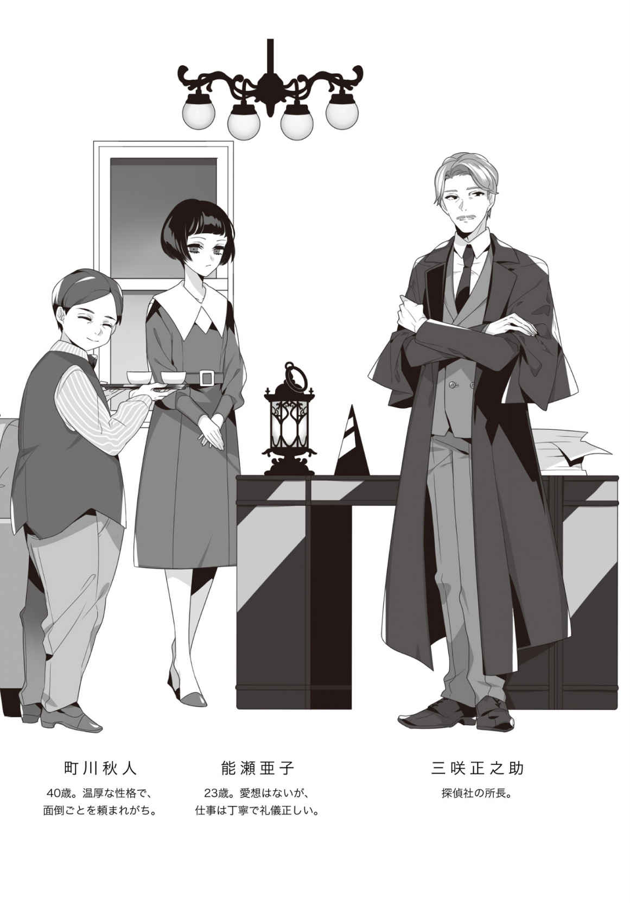
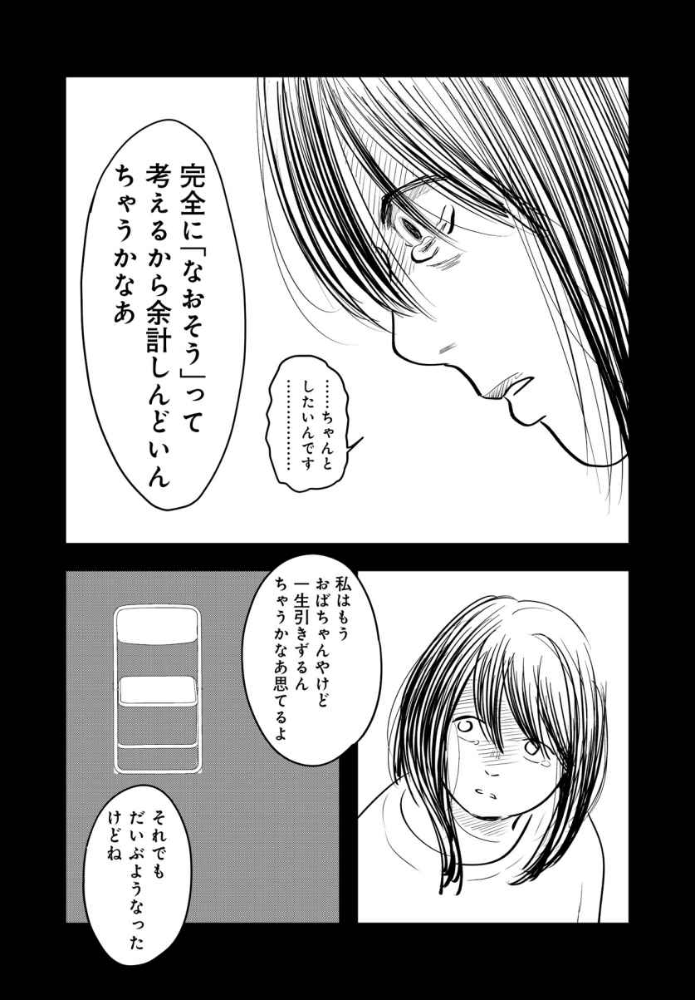
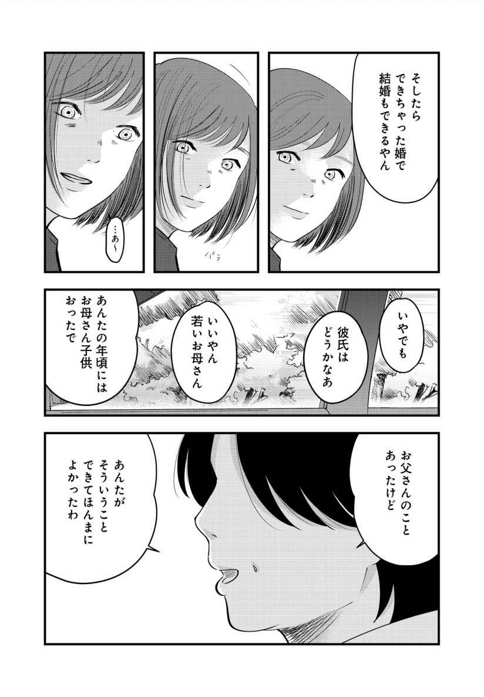
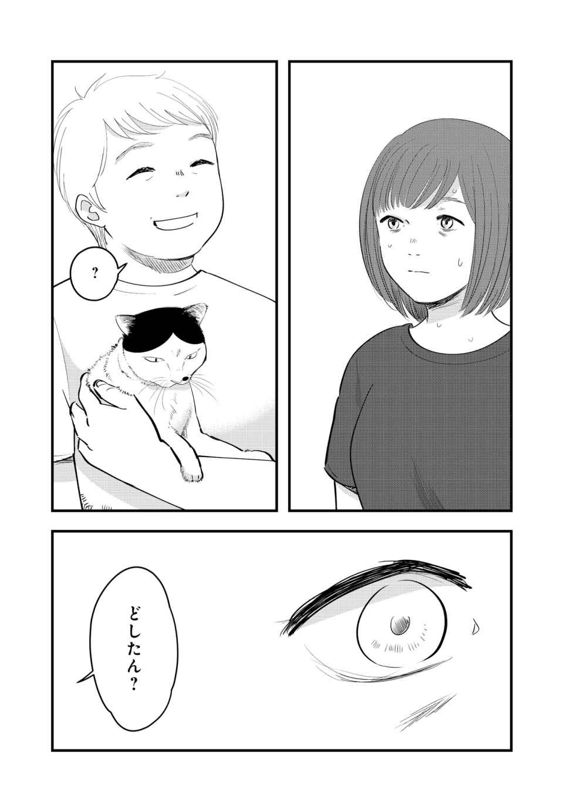
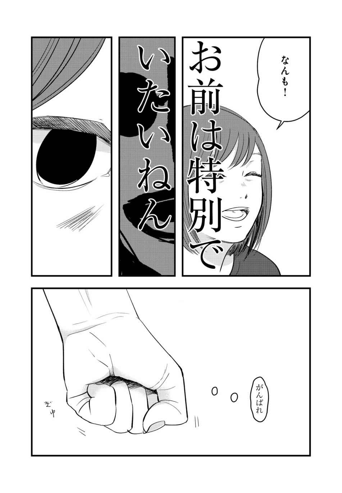
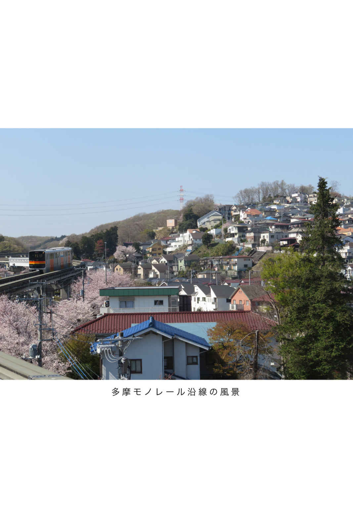

| yom yom vol.56（2019年6月号）[雑誌] | |
| 浅原ナオト & 小松エメル & 柏井壽 & 神田桂一 & 中川淳一郎 & 最果タヒ & 吉川トリコ & 寺地はるな & 馳星周 & 小林勇貴 & 武内涼 & 武田綾乃 & 早坂吝 & 結城充考 & 乾緑郎 & 門井慶喜 & ふみふみこ & 土橋章宏 & 荻上チキ & 今祥枝 & 小佐野彈 & 平原卓 & カレー沢薫 & ものすごい愛 & 砂田麻美 & 渋谷直角 & 柳瀬博一 & 恒川光太郎 | |
| 新潮社 (2019) | |
CONTENTS vol.56 ２０１９年６月号
NEW SERIES
浅原ナオト
小松エメル
柏井 壽
SPECIAL ARTICLE
SERIES
最果タヒ
寺地はるな
馳 星周
小林勇貴
武内 涼
武田綾乃
結城充考
乾 緑郎
門井慶喜
COMIC
ふみふみこ
WORLD TRENDS
CULTURE & COLUMN
荻上チキ
小佐野 彈
カレー沢 薫

ものすごい愛
渋谷直角
柳瀬博一
恒川光太郎
「そして、僕たちは舞台に立っている。」、
「東京デストロイ・マッピング」（新納 翔氏）、
「読みたい人、書きたい人のための、ミステリ超入門」（新井久幸氏）は本号休載です
表紙 イラスト／ 押見修造
表紙＋本文扉 デザイン／ 川谷康久 （ 川谷 デザイン）
【ご注意】
この本は縦書きでレイアウトされています。また、ご覧になる機種により、表示の差が認められることがあります。
この作品の全部あるいは一部を無断で複製・転載・配信・送信すること、内容を無断で改変・改竄することを禁止します。また、有償・無償にかかわらず第三者に譲渡することはできません。
第一幕 十四歳、『いつも二人で』
「ヤな女」
「バカな男」
一九六七年公開、『いつも二人で』より
１
「人間の価値は、死ぬ時に分かるって言うけれど──」
医薬品特有の鼻を刺す臭いで満ちた病室の中、隣のベッドに横たわる老女がしわがれた声でしみじみと呟く。見舞いに訪れた中年女性は眉尻を大きく下げ、悲哀と困惑が入り混じった複雑な表情を見せる。
「こうやって死に際にお見舞いに来てくれる人がいる私は、本当に幸せ者よね」
老女は、前に見舞いに訪れた客にも全く同じことを言っていた。その前にも、その前にも。言われた側の反応は、だいたい似たようなもの。
「弱気にならないで下さい。病は気からですよ」
老女が満足そうに微笑んだ。命を盾にしたパフォーマンス、と呼ぶのは酷だろう。病に侵された老女の余命が幾ばくもないのは事実なのだ。手首の薄皮を軽く剥ぎ、今から死んでやると喚く輩と十把一絡げには出来ない。
老女から視線を外し、ベッドテーブルを広げる。脇に収納棚からヘッドホンの繋がったノートパソコンと『デンジャラス・ビューティー』のＤＶＤを取り出す。今からおよそ三年前、二〇〇一年に日本公開されたアメリカ映画。主演女優のサンドラ・ブロックが好きで劇場に足を運んだ。口の大きな女が好きだ。そういう女は、笑うとかわいい。
ヘッドホンを耳に当ててＤＶＤを再生。老女たちの会話が音楽にかき消される。だけど鼓膜の内側にこびりついた言葉は、なかなか消えない。
──人間の価値は、死ぬ時に分かるって言うけれど。
勤務中に倒れた私が病院に担ぎこまれ、末期の大腸がんと診断されてから、今日でおよそ二週間になる。
緊急に命に関わる部位は切除したものの、全身に転移していてどうしようもないということだった。医者が言うには、若い人間は体力があるから重い病気にかかっても手遅れになるまで気づかないことが多いらしい。その話を聞いて、私は笑ってしまった。四十を超えて「若い」と評されることが可笑しかったから。しかし入院して思い直した。老若が相対評価で決まるものならば、確かにこの界隈で、私は若い。
入院したばかりの時、隣のベッドにはやたら独り言の多い関西弁の老人が寝転がっていた。私はふとした拍子にぼうっと中空を見上げ、独りごちる彼が嫌いではなかった。神と言葉を交わしているようであり、時には畏敬の念すら覚えた。だけど彼は数日前、この世ごと病院を去ってしまった。私が最後に耳にした独り言は「阿呆か」だった。
彼がいなくなってすぐ、入れかわるように老女がやってきた。医者との会話を聞くにどうも私と似たような病を患っているようだった。病院はがんセンターではなく、病室はがん患者専用のものではない。つまり世の中はどうやら、それ用の部屋を用意しなくても勝手に集まってしまうほど、死にかけの人間で溢れかえっているらしい。
華道教室で師範をやっていたという老女の下には、次から次へと見舞い客が訪れた。ベッド脇の収納棚からは見舞い品があふれ、老女は「食べきれないから貰ってちょうだい」と高そうなクッキー缶を私によこした。私が入院してから貰った見舞い品は会社の部署名義で贈られたゼリーの詰め合わせだけ。それもとっくに食べ終えてしまった。
人間の価値は死ぬ時に分かる。
老女の言葉は、正しい。
◆
どこの病院にもあるように、私が入院している病院にも休憩所がある。
いくつかのテーブルと椅子、それとテレビと自動販売機と本棚が置いてあるだけの簡素なスペースだ。身体を休めるための施設にある身体を休めるための空間は、本来は見舞いに訪れた客人のためのものなのだろう。しかし患者たちはそこによく集まる。他に行くところが無いから。私も、よく意味もなく出向く。
四月、私は病室で『エリン・ブロコビッチ』を観てから休憩所に行った。
ジュリア・ロバーツのような口のデカいイイ女を探して──というわけではないが、休憩所に着いた私は何となくその場をザッと見渡した。そしてやはりそこは『プリティ・ウーマン』の舞台となった夢追い人の街ハリウッドではなく、何の変哲もない都内の総合病院だった。中央のテーブルでは隣のベッドの老女が老紳士と親しげに会話を交わしており、私は老女の背中側にある椅子に腰かけた。
テレビが「ゴールデンウィークに行きたい穴場スポット」とやらを垂れ流す。アウトドアを好む性分ではないから、羨ましいとは感じない。映画の宣伝でも流してくれないだろうか。確かそろそろ『キル・ビル』の続編が──
ふと、左から人の気配を感じた。
学校の制服と思しきシャツの胸に面会バッチをつけた少年が、いつの間にか近くの椅子に座っている。色白で細身。顔つきも端正。長いまつ毛からは、男子に似つかわしくない
少年はテレビを見ていなかった。話し相手もなく一人でいるのに、さあ自分を見ろと存在を主張する休憩所の主には目もくれない。瞳をわずかに細め、ただひたすらある人物をじっと見つめている。
隣の老女。
「それでいったん退院して、延命治療と緩和治療のどちらかを選ぶの。私は緩和治療にしようと思っているわ。もう十分生きたし、これ以上、長生きしてもしょうがないものね。息子夫婦も是非うちに来てくれって言ってくれているし──」
見舞い客に近況を話している。よくある光景だ。だけど少年はまるでそれが暗号で行われているテロリストの作戦会議であるかのように、老女に視線を置き続けていた。私もそんな少年から目を離せず、横顔を凝視する。
やがて、老紳士が休憩所を去った。手を振って老紳士を見送った老女が、深いしわの刻まれた顔をテレビに向ける。
少年が立ち上がった。
瞬間、空気が変わった。立つ場所を世界の中心に変えてしまう、一挙一動で地球の地軸を動かす人間は存在する。私もそういう人間を幾度となく見たことがある。銀幕の中で。だけどここはハリウッドではなく都内の総合病院であり、私の知る限り、少年は若き映画スターでもないはずだった。
「あの」
少年が老女に声をかけた。老女の狐につままれたような表情から、二人が顔見知りでないことが伝わる。
「これから、変なことを言います。信じられないかもしれないけれど、参考程度でも構いませんので、耳を傾けてくれると嬉しいです」
少年が胸に手を乗せた。私は少年の言葉を聞き漏らすまいと、息をひそめて耳をそばだてる。
「僕、人のシキが見えるんです」
シキガミエル。
耳にした「シキ」を、私は脳内で「死期」に変換した。だけど、すぐに却下した。あり得ないと思ったからだ。数学の問題を解いていたのに答えが化学式になった。それぐらいのおかしさがあった。
四季、士気、指揮、式、色──変換候補を探す私に、少年が解答を告げる。
「つまり、死に近づいている人が分かるということです」
死期で正解。少年は、続ける。
「それでおばあさんは......すごく危ないんです。さっきまで一緒にいたおじいさんとの話を聞いていて、たくさんの人に愛されている方なんだなと思いました。言い残していることとか、いっぱいあるんだろうなって。だから、こんなこと言うのも差し出がましいとは思うんですけど、なるべく早く──」
甲高い音が、休憩所に響いた。
肉が肉を叩く音。音が人々の視線を集め、テレビが休憩所の主の座を少年と老女に明け渡す。少年の頬を叩いた老女が、肩を震わせながら金切り声を上げた。
「気味の悪いことを言わないでちょうだい！」
老女が休憩所から去った。俯く少年の姿は痛々しく、視線は散り、再びテレビが休憩所の主に返り咲く。だけど私は少年から目を離すことが出来ない。テレビで喋っている芸能人全員が放つ引力より少年の引力の方が圧倒的に強い。月が地球に隷属するように、地球が太陽に隷属するように、私は少年に隷属する。
重たい足取りで、少年が休憩所から立ち去った。都内の庭園を紹介するテレビの音がやけに大きく、空しく響く。皆さん、実は桜の季節が終わった今こそが、この庭園の本当の狙い目なんです──。
ここはハリウッドではない。あの少年もおそらく、映画俳優ではない。
だけど私は、頬を抑えながら冷たい床を見つめる少年の瞳に、夭折した名優リバー・フェニックスと同じ光を確かに見た。
◆
病室に戻った私は映画を観ながら、チラチラと隣の老女を観察した。
老女は老眼鏡をかけて本を読んだり、編み物をしたり、いつもと何ら変わったことはしていなかった。死期が近づいているとはまるで考えていないようだ。暗に「あんな
やがて消灯時間になったが、私は寝付けなかった。暗い天井を眺めながらぼんやりと少年のことを想う。恋をしているみたいだな。そんなことを考えて苦笑する。そういう感情はもう、とっくに懲りたはずなのに。
大学時代、私には彼女がいた。
映画サークルで知り合った同学年の女性。一目見て惚れた。口が大きく、笑うと夏空に浮かぶ入道雲のように白い歯が輝いていた。私は映画が教えてくれた口説き文句たちを彼女に試し、その全てをことごとく跳ね返された。そして最後の最後、やぶれかぶれに自分の言葉で想いの丈を告げたら、あっさりとＯＫを貰えた。要するに私はブラッド・ピットでもリチャード・ギアでもゲーリー・クーパーでも無かったのだ。
私たちはよく新宿でデートをした。ＪＲ新宿駅の東口で合流し、一緒に歌舞伎町まで映画を観に行くのが定番のデートコースだった。そして私は毎度毎度、その待ち合わせに少し遅れて出向いた。男は少し遅れるぐらいが格好良いなどと気障ったらしいことを考えていたのが理由の一つ。そしてもう一つは、遅れて出向いた時の彼女の反応がとても愛らしかったから。
東口に着いた私はまず、彼女に見つからないように彼女を探す。首尾よく見つけた後は背後からこっそりと彼女に近寄り、後頭部をこつんと叩く。すると彼女はいつも上目使いに私を見やり、白い歯を並べてニカッと笑いながらこう言う。
「遅い」
そう、私は遅い。いつだって。何もかも。だから今も、死にかけているというのに誰も見舞いに訪れない──
「......うー」
呻き声。
私は上体を起こし、声の聞こえた方を見やった。老女のベッド側。私のベッドを囲む薄いカーテンが、月明かりに照らされて青白く輝いている。
「うー、うー、うー......」
ベッドから降り、カーテンを開ける。サイレンのように低く唸る声はやはり、私のベッドと同じようにカーテンに覆われた老女のベッドから漏れている。
「うー、うー、うー、うー、うー、うー、うー、うー、うー、うー、うー」
私はごくりと唾を飲んだ。カーテンに手をかけ、小さく息を吸って吐く。そして「開けますよ」と自分に確認するように呟き、カーテンを勢いよく開いた。
老女の血走った目が、私を捉えた。
金魚のように口をパクパクと動かしながら、老女が私に手を伸ばす。枯れ枝のような腕が私の病院服を掴み、その見た目と相反する力強さに私の肝が冷える。ほんの数時間前まで老女は時間を潰していた。自分には潰せる時間があると思っていた。それが今は、死の淵にいる。
私はベッド傍のナースコールを押し、応答した看護師に事情を説明した。すぐに女性の看護師が現れ、老女の身体をさすりながら「どうしました？」「大丈夫ですか？」と声をかける。しかし老女はまともな返事を返せず、看護師はせっぱ詰まった声で私に尋ねた。
「いつ頃からこうなりましたか？」
「ついさっきです。気づいてすぐにお呼びしました」
「それより前に、何か変わったことはありませんでしたか？」
──僕、人の死期が見えるんです。
「......ありません」
看護師が訝しげに私を見やった。しかしすぐ医者が現れてうやむやになる。医者に「後は任せて下さい」と追いやられ、私は自分のベッドに戻った。
眠りに落ちようと試みる。しかし、眠れるわけがない。やがて老女が搬送され、病室に静寂が戻っても、覚めきってしまった頭はもうどうにもならなかった。頭の後ろで手を組み、いつもより遠くに感じる天井を見上げながら物思いに
確信に近い予感が、二つあった。
一つ。老女はもう帰ってこない。私は医者ではない。老女の容態の詳しいところは分からない。だけど理屈を超えた部分で感じる。老女の命の灯は、既に消えかかっている。
そしてもう一つ。
あの少年は、嘘をついていない。
２
翌朝、看護師が隣のベッド周りを片付けていた。
朝食を食べ終えた私は手を合わせ、老女に黙祷を捧げた。それから昨日と同じように休憩所に出向き、芸能人のしゃべくりを聞き流しながら周囲を観察する。昼食後はノートパソコンとヘッドホンを休憩所に持ち込み、映画を観ながら同じことをする。多くの人間がおかしなものを見る目で私を見てきたが、無視した。
翌日も、翌々日も、私は同じことをした。そのうち看護師から「最近、休憩所に入りびたっているみたいですけど、なぜですか？」と尋ねられ、私は「あちらの方が落ち着くんです」とごまかした。答えたくなかったというより、答えられなかった。自分が何を期待しているかは分かっている。だけどその期待通りのことが起こったとして、それからどうしたいのか。それが分からない。
あえて言うならば──知りたかった。死を迎えるとは、命が尽きるとはどういうことなのか。一人の死にゆく人間として。そして──
一人の、伴侶と死別した男として。
社会人二年目。私は大学時代から付き合いを続け、半同棲状態だった彼女と結婚することにした。となれば、お互いの親に話を通さなくてはならない。彼女の父親は柔道で国体に出たこともある堅物とのことであり、海沿いの田舎町にある実家に出向く道中、彼女はさんざんに私を脅した。
「高校の時の彼氏はナマイキなこと言って投げ飛ばされたから、気をつけてね」
実家に赴き、居間に通された私は、忠告通り言葉の端々に細心の注意を払った。しかし父親はまず口を開くことすらなかった。私と彼女と母親が談笑交じりに会話を交わしている間、ひたすら不機嫌そうな仏頂面で私を睨みつけていた。
やがて、話題が尽きる。場に沈黙が生まれる。父親が大きな身体をのっそりと動かし、私に声をかけた。
「君」
「はい」
「君と娘は映画サークルで出会ったと言っていたな」
「はい」
「君の一番好きな映画はなんだ？」
私は脳内のデータベースを検索し、父親好みの解答を導き出そうと試みた。フーテンの寅さん辺りが無難だろうか。しかし私は邦画にはあまり明るくないから、詳しく聞かれたら答えられない。ならば──そうだ、『ゴッド・ファーザー』だ。あれは年長者の男性受けが良い。
私は胸を張り、堂々と質問に答えた。
「『いつも二人で』です」
最愛の女優であるオードリー・ヘップバーンの後期代表作。どこか天上の人間じみていた彼女が人生にくたびれた女を演じ、地上に降りてなお絶大な存在感を放つと世に知らしめた名作。私は、それを口にした。
知っている人は当然のように知っているが、知らない人はまるで知らない、微妙な立ち位置の作品だ。せめて『ローマの休日』にすれば良かったかもしれない。だけど私は、どうしても、映画に関しては嘘をつけなかった。
「そうか」
武骨な指で漆塗りのテーブルを撫でながら、父親が厚い唇を開いた。
「あれは、良かったな」
かくて、私は彼女の生涯の伴侶となる資格を得た。帰りの車の中で彼女はしれっと「お父さんの一番好きな女優もヘップバーンだから」と言ってのけた。私は「そういうのは早く言えよ」と口を尖らせ、彼女はそんな私を見て、おかしそうに笑った。
「ごめんね。好きな人に他に好きな女がいるって認めたくなくて」
「女優だぞ」
「だから？」
赤信号で車が止まった。すかさず、彼女が私に抱き着き、首の後ろに手を回して湿っぽく囁く。
「ヘップバーンより、わたしを愛して」
甘い香りが鼻腔を撫でる。私が彼女の背に手を回して口づけを落とすと、彼女は私を強く抱きしめ、自分の舌を私の舌に絡ませてくる。どうだヘップバーン、お前にこれが出来るかと、世界中に愛された世紀の大女優に喧嘩を売る。
私は信じていた。彼女とならば一生を共に歩める。かけがえのない未来を築くことが出来る。
ずっと、ずっと、ずっと──
◆
金曜の夕方、学生服を着た少年が休憩所に現れた。
その時、私は『グッド・ウィル・ハンティング』を観ていた。ロビン・ウィリアムズがマット・デイモンに向かって「It's not your fault」と繰り返すシーン。私は生まれて初めて映画の視聴をクライマックスで中断し、ノートパソコンを閉じた。
少年は自動販売機でペットボトルのお茶を買い、休憩所から出て行った。私はノートパソコンをテーブルに放置して少年の後を追う。廊下を曲がろうとする少年の肩を掴み、声をかける。
「君」
少年が驚いたように身体を震わせ、ゆっくりと振り返った。畏怖と困惑の入り混じった表情。私は少年の反応を試すため、出し抜けに告げる。
「あのおばあさん、亡くなったよ」
「え？」
「少し前、君がこの病院で頬を叩かれたおばあさん。君が予言した通り、あれからすぐに亡くなった」
目を凝らして少年と向き合う。少しの心の動きも見逃してはならない。特に驚愕、「適当言っただけなのに本当に死んじゃったんだ」という類の感情が見えたら、絶対に。
少年が俯き、長いまつ毛の下で目線を横に流した。
「......そうですか」
やる瀬無い。
少年の様相を一言で表現するなら、それだった。分かっていたけれど、当然のことだけれど、やりきれない。悲劇的な結末を迎えることが分かっている映画を鑑賞し、その通りの結末を迎えた時に、彼女がよくしていた表情。
確信に近い予感が、確信に変わった。
「君の用事が終わった後、僕と話せないか」
私は少年に迫り、勢いよくまくしたてた。
「君は誰かのお見舞いに来たんだろう。それが終わったら僕の病室に来て欲しい。君と話がしたい。君のことをもっと知りたいんだ」
少年はきょとんと目を丸くしていた。幼さの残る声で、私に尋ねる。
「なぜ？」
なぜ。
それは──知りたいからだ。一人の死にかけている人間として、愛する人の死に触れた人間として、人の死が持つ意味を教えて欲しいからだ。
死は運命なのか。
死期が見えた人間を救うことは出来ないのか。
私は、彼女を──
「──人の死期が見えるなんてすごい能力を持った人間に出会ったら」
私は肩を
「その人のことをもっと知りたいと思うのは、当然じゃないか？」
はぐらかす。少年が口元を緩め、あどけない顔で笑った。
「そうですね」
◆
一時間後、少年が私の病室に現れた。
ベッド脇の丸椅子に腰かけた少年を観察する。学生服をしっかりと着込み、両手を腿に乗せて背筋を伸ばす姿からは、若者特有の「隙」が感じられない。好ましくはあるが、同時に不安にもなる。隙間は成長の余地だ。子どもには、あった方がいい。
「じゃあ、自己紹介から入ろうか」
私は口を開いた。呼びつけた年長者として、話をリードする義務がある。
「僕は
「......いえ、まだ見えていません。本当に危なくならないと見えないんです」
少年が申し訳なさそうに頭を下げた。謝らせるつもりはなかった。私は「いいよ」と話をうやむやにする。
「君の名前は？」
「
遥。女の子みたいな名前だ。だけど、よく似合っている。
「今日は誰のお見舞いなんだ？」
「母です。足を骨折してしまって、父が単身赴任中なので、僕が面倒を見ています」
「そうか。大変だね。中学生？」
「はい。三年生です」
「ということは、十四歳か十五歳か」
「今は十四ですね」
何気ないやりとり。しかし、裏には緊張が張り巡らされている。私が本当に聞きたいことは名前や年齢ではない。遥もそれは間違いなく分かっている。
「君は、生まれた時から人の死期が見えるのか？」
死期が見える。口にして改めて、馬鹿げた話だと思った。しかし遥はついさっき名前や年齢を聞かれた時のように、何の抵抗もなく問いを受け入れる。
「いいえ。十歳の頃からです」
「なにか、能力に目覚めるきっかけがあったのかい？」
遥の頬が強張った。触れられたくないところに触れられた表情。
「話したくないなら、話さなくていいよ」
フォローを入れる。しかし遥は唇を動かし、何事かを答えようとしてくれている。律儀な子だ。このまま待っていればそれがどんな凄惨な過去であれ語ってくれるだろう。だがそれは、四十過ぎた大人が十四歳の少年にやってよい態度ではない。
「死期が見えたら、その人はどれぐらいで死ぬんだ？」
私から話を逸らしてやった。遥の表情が目に見えて緩む。
「分かりません。すぐ亡くなったこともあれば、二週間もったこともあります」
「事故死のようなケースでも見えるのか？」
「そういう人と死ぬ直前に会ったことがないので、正確には分かりません。ただ、見えないんじゃないかと思います」
「どうして？」
「若い人の死が見えたことはほとんどないからです。そういう死も見えるなら、もっと見えてもいいと思います」
「なるほど」
私は小さく頷いた。どうやら「死が見える」というより「寿命が見える」と表現した方が正しそうだ。
「死が近い人間は、どういう風に見えるんだ？」
「胸に海が見えます」
「海？」
「正しくは『海のようなもの』です。波打つ水の塊のようなものが、その人の心臓の上辺りに見えます」
反射的に、私は自分の胸を抑えた。そんな私に遥が微笑む。
「先ほども言いましたけど、稲川さんにはまだ見えていませんよ」
「でも、いずれは見えるんだろう？」
「それは──」
言い淀む遥に、私はさらに問いを重ねた。
「そうなったら、君は僕にそれを言うのか？」
隣の空きベッドを見やる。遥はあの老女に死が迫っていることを教える必要は無かった。黙っていれば誰にも分からなかった。だけど、それをしなかった。そこには間違いなく、強い信念がある。
遥が口を開き、小さな、だけど芯の通った声で答えた。
「言います」
予想通りの返事。私は黙って言葉の続きを待つ。
「誰彼構わずに言うわけではありません。だけど稲川さんみたいに死を覚悟していて、その時期を待っているような人には、言うことにしています。言い残したこと、やり残したこと、出来るだけやりきってから天国に旅立てるように。死の間際、いよいよそれが避けきれなくなってから、後悔することがないように」
「でも、話したところで簡単に理解は得られないだろう」
「いいんです。少しでも意識してくれれば、きっと行動は変わります」
変わらなかったよ。君が死を告げたあのおばあさんは、いつもと何ら変わることなく無為に時間を潰し、何も残すことなくこの世を去った。君の行為は、ただ君の頬に痛みを与えただけで終わった。
私は遥を見つめる。遥は私を見つめ返す。何を言われてもこの信念を曲げるつもりはない。十四歳の少年には似つかわしくない、悲壮な覚悟を秘めた瞳が私を捉える。
「──君は、映画を観るか？」
急な話題転換に、遥の目からふっと力が抜けた。
「観ますけど、そんなには」
「そうか。僕はよく観るんだ。大学生の頃は映画サークルに入っていた。そこのラックに映画のＤＶＤがたくさん入っているから、開けてごらん」
ベッド脇の収納棚を指さす。遥が棚の扉を開き、感嘆の声を上げた。
「すごいですね。これ全部、稲川さんのものですか？」
「もちろん。家にはビデオがその数倍ある。ＤＶＤはまだ普及し始めだから、マイナーな作品はビデオしかないんだ。君の家にＤＶＤのプレイヤーはあるかい？」
「あります」
「そうか。じゃあそこにあるＤＶＤは、全部君にあげるよ」
遥が「え」と私を見た。私は両手をシーツの上で組み、淡々と告げる。
「僕が死んだら君がそのコレクションを貰って欲しい。これも何かの縁だ」
「それは、さすがに......」
「遠慮しないでくれ。何も君に施しを与えたいわけじゃない。その代わりに頼みたいことがちゃんとある」
身体を前に傾け、遥に自分の顔を近づける。
「僕の死を、君に見届けて欲しい」
知りたくなった。いよいよ避けきれなくなった死を前に、私は何を思うのか。生きる意味はとうに無くし、ただ緩慢に死に向かっていくだけだった人生に決定的な行き止まりが見えた時、私の中に芽生える感情は何なのか。
「僕はＤＶＤを君に渡す。君は映画を観て僕に感想を語る。そのうち、君に僕の死が見える。そうなったら教えて欲しい。どうだ？」
遥の視線が泳ぐ。他人に死を告げたことはあっても、他人から死ぬまでつきあってくれと言われたことはないのだろう。自分が能力に感じている使命をどこまで拡大するか、悩んでいるのが分かる。
「本当に、コレクションを渡す相手は誰もいないんですか」
「ああ。両親とは死別した。兄弟もいないし、親戚づきあいもない。妻は──昔はいたけれど、今はいない」
私は背筋を伸ばし、体勢を整えなおした。年若い少年だと侮ることなく、誠意をもって接するべきだ。遥は話してくれた。だから私も話さなくてはならない。
私の罪を。
「僕が殺した」
３
結婚後、彼女は仕事を辞めた。
私たちは都内のマンションで生活を始めた。専業主婦になった彼女は毎朝、私の身支度を整えるようになった。朝早く起きて朝食を作り、会社に持っていく弁当を作り、彼女とは別の部屋で眠っている私を起こす。朝に弱い私が彼女に起こされるより早く起きることはほぼなく、彼女は「お母さんになったつもりはないんだけど」と私をからかった。
結婚一年目の冬。
私と彼女は一緒に映画のビデオを観ていた。『エンドレス・ラブ』。タイトルと同じ名前の主題歌がアカデミー賞にノミネートされ、公開年で最も売れた曲となりながら、映画自体はその年の最も酷い映画を決めるゴールデンラズベリー賞に七部門もノミネートされたいわくつきの作品。そんな作品でも彼女と一緒ならば楽しめた。私にとって彼女と一緒に観る映画は全て、まごうことなき傑作だった。
クライマックス近く、彼女が「頭が痛い」と言い出した。
彼女は映画の視聴を中断し、「おやすみ」と言い残して自分の部屋に引っ込んだ。私は彼女に「おやすみ」と返した。それが私が彼女にかけた最後の言葉になった。私は映画を最後まで観てから、眠りについた。
翌朝、私は遅刻ギリギリの時間に目を覚ました。
枕元の時計を見て真っ青になった。リビングには朝食も弁当も用意されておらず、私は彼女が起きていないことを悟った。急いで身支度を整え、さあ出かけるぞとビジネスバッグを持つ。そして彼女の部屋の前を通り過ぎようとして、ふと足を止めた。
──どうしたんだろう？
結婚してから今日まで、彼女が朝起きていなかったことなんてない。彼女も人間だから寝坊することぐらいはあるだろうが、違和感は拭えない。そう言えば昨日、頭が痛いと言っていた。もしかして起き上がれないぐらいに体調が悪いのだろうか。
寝かせてやった方がいいのか。声をかけた方がいいのか。何にせよ一つ、絶対に間違いないのは──
急がないと遅刻する。
「行ってきます！」
私は彼女の部屋から離れ、玄関から外に飛び出した。全速力で駅に向かい、どうにか会社に間に合う電車に滑り込んで一息ついた。携帯電話どころかポケベルもない時代だ。仕事に没頭するうちに私は朝の異変を忘れ、帰る頃になってようやく彼女がおかしかったことを思い出し、だけど特に何もせずにいつも通り家に帰った。
私が彼女の遺体を発見したのは、帰宅してすぐ、午後八時頃のことだった。
◆
くも膜下出血。
病院での司法解剖の結果、死因はそう判明した。ほとんど前触れもなく発症し、突然死の原因として有名な病気だと言われた。だがそんなことはどうでも良かった。医者が教えてくれた中で大事な情報は二つだけ。彼女が死んでしまったこと。そして──
死亡推定時刻が、午前九時頃だということ。
起き抜けに脳内出血を起こし、言葉も出せず身体も動かせず、それでもしばらくは生きていたらしい。私がドアの前で悩んでいたあの時も。私は「朝のうちに発見出来ていれば助かったのか」と医者を問い詰め、医者は「分かりません」と首を横に振った。
彼女の両親が病院に到着したのは、遺体発見翌日の夕方頃だった。私は二人を彼女が眠る部屋に案内した。線香の匂いの中、ストレッチャーに乗せられた彼女の顔にかかった布をめくるなり、義母は泣き崩れた。義父はそんな義母の肩を抱きながら、電話で私から聞いた話を改めて確かめた。
「君が会社に行く時、娘はまだ生きていたそうだな」
私はこくりと頷いた。義父が義母から手を離し、ずいと私に迫る。
「どうして放って出かけた！ おかしいと思わなかったのか！」
思った。確かに、間違いなく、思った。どうして起きてこないんだろう。今までこんなことは無かったのに。もしかして昨日の頭痛と関係があるのだろうか。そこまで考えた。だけど結局、ドアを開けることなく出かけてしまった。どうしてだっけ。
──ああ、そうだ。思い出した。
「......急いでいたので」
身体が浮いた。
義父が私の胸ぐらを掴んで持ち上げたと気づいたのは、つま先立ちになってからだった。憎悪に満ちた視線が私を射抜く。私は焦点の合わない瞳でぼんやりと義父を見返す。全てがどうでも良かった。このまま私を彼女のいるあの世に送ってくれるなら、それでも一向に構わなかった。
義父が、わなわなと震える唇を開いた。
「お前が──」
◆
死が見えてしまったらどうしようもない。
遥は私にそう言った。少なくとも自分の知る限りでは、見えた後に生き延びた人間は一人もいないと。「だからもし稲川さんが僕と同じ力を持っていて、奥さんの死が見えたとしても、それはどうにもならなかったと思います」。そう語る遥に、私は「そうか」と素っ気ない言葉を返した。
ＤＶＤの譲渡契約は成立した。だけど遥は、私が生きている間は一枚ずつの貸し借りしか行わないと主張した。私がいつ何を観たくなるか分からないから、生きているうちは出来るだけ手元に多くの映画があった方がいいと。私はその主張を受け入れた。意見に同調したというより、私が遥の頑固さを察して折れた形で。
遥が最初に借りたＤＶＤは『キャッチ・ミー・イフ・ユー・キャン』だった。三日後に返しに来て感想を語り、次は『戦場のピアニスト』を選んだ。私が「どういう基準で選んでいるんだ？」と尋ねると、遥は「名前を聞いた覚えのあるものを選んでいます」と答えた。私は「ミーハーなんだな」とからかい、遥は照れくさそうにはにかんだ。
五回目の訪問時、私は遥に好きな女優のタイプを尋ねてみた。質問に、遥は目に見えて動揺した。良く言えば成熟している、悪く言えば少年らしさに欠けた遥の思春期的な恥じらいが面白く、私はさらに踏み込んだ。
「おっぱいは大きい方が好きか？」
「......あまり芸能人に興味なくて」
「タイプの話だよ。僕は口の大きな女優が好きだ。ジュリア・ロバーツとか、キャメロン・ディアスとか、いわゆるハリウッドスマイルの似合う女優。一番好きなのはオードリー・ヘップバーンだけど」
こちらが心を開いてみせれば、自分だけだんまりを決め込むことは出来ない。そういう律儀な性格につけこむ。狙い通り、遥は観念したように口を開いた。
「女優のタイプ、とはちょっと違いますけど......」
「なんだ？」
「背が低い子......というか、小さくてかわいい感じの子が好きです」
私は顎に手を当て、「なるほど」と大きく頷いてみせた。
「ロリコンか」
「そうじゃなくて！」
「まだ中学生なんだから、小学生の彼女を作っても許されるんじゃないか？」
「そんな気ないですよ！」
必死になる遥をからかう。自然と笑みがこぼれる。長い間、それこそ年単位で動かしていなかった表情筋に血が通う感覚は、素直に心地良かった。
ある日、病院食の配膳に来た若い女性看護師に、遥のことを尋ねられた。
私は「近所に住んでいる親戚の子」と答えた。親戚なんて一人も見舞いに来たことがないのに怪しまれるかとも思ったけれど、看護師はそこには触れなかった。触れないでくれた、と言った方が正解だろうか。「そうなんですかー」と明るく答え、話を広げた。
「よくいらっしゃいますよね。何を話されているんですか？」
「持てあましている映画のＤＶＤを貸しているんですよ」
「映画、よく観ていますよね」
「ええ。大学時代は映画サークルに入っていました。もっぱら洋画ばかり観ていましたね。あの頃は海外の文化というだけで不思議なきらめきがあった。看護師さんのような若い方には分からないかもしれませんが」
看護師が曖昧に笑った。そして私の言葉には答えず、配膳用のカートから食事の乗ったトレーを取り出す。いつも朗らかな彼女にしては珍しい態度に、私は戸惑いを覚える。
「何かおかしなことを言いましたか？」
「え？」
「困っていらっしゃるようなので」
「あ、いえ。別に困っているわけではないんですけど......」
トレーを両手で支えながら、看護師がポツリと呟きをこぼした。
「稲川さんがご自分のことを語られるの、珍しいなと思って」
カン。
ベッドテーブルの上に食事が置かれた。いつものように会釈をして、看護師が次の配膳に向かう。今日の主食は鯖のみそ煮。薄茶色の液体が蛍光灯の光を反射し、琥珀のように鈍く輝く。
彼女が好きだったな。
そんなことを、ぼんやりと考えた。
◆
六月初旬。病室に現れた遥の表情を見て、私は事態を察した。
そろそろだろうとは思っていた。近頃は体力がめっきりと落ち、痛みに襲われる頻度も増えている。私は決して、病院をホテル代わりに使っているわけではない。
遥がベッド脇の丸椅子に座った。そして借りていた『チャーリーズ・エンジェル』のＤＶＤを学生鞄から取り出す。
「これ、良かったです。分かりやすくて、楽しくて」
声が揺れている。とてもこの映画に相応しいリアクションではない。私はＤＶＤを受け取り、淡々と告げた。
「その日が来たら、言うんだろ」
遥の肩が大きく上下した。学生鞄を床に置き、握りしめた両手を腿の上に乗せ、言葉をしぼり出す。
「......見えました」
「そうか」
死神からの死刑宣告。どうやら私はとうとう死ぬようだ。しかしここに来てもまだその実感が湧かない。私の中で何かが変わった。その感覚が、まるでない。
──こんなものか。
逃れられぬ死を前にすれば、今まで見えていなかったものが見えると思っていた。彼女を失ったことに何かしらの答えが出ると。しかしどうやら、世の中はそう簡単には出来てはいないらしい。
遥は顔を伏せ、すっかり気を落としていた。辛い役割を背負わせてしまったようだ。私はなるたけ優しく声をかける。
「落ち込まないでくれ。僕が頼んだことだ。今まで何度も、同じように人の死を見て来たんだろう？」
「......慣れているからといって、悲しくないわけじゃありません」
「悲しむ必要はない。僕は自分の死に、納得している」
私はベッドに深く身をあずけ、過去を覗くように目を細めた。
「死ぬ前に会いたい人はいない。やりたいこともない。元々、生きながら死んでいるようなものだったんだ。そんな人生の最後に、君は花を添えてくれた。もう何の後悔もなく心安らかにあの世に行けるよ」
「......本当ですか」
「ああ、本当に──」
「本当に、後悔はありませんか」
声色が変わった。
遥が顔を上げる。鋭い眼光が私を射抜く。悲哀ではない、強い意志の込められた視線。私に「もし死が見えたら告げる」と言い切った、あの時と同じ。
「最後に、奥さんと向き合わなくていいんですか」
瞳から言葉が叩き込まれる。いいわけがない。貴方がそう思っているのは知っている。だから僕は今、ここにいるんだ。
「稲川さん。明日、外出許可取れませんか？」
唐突な問いかけに、私は戸惑いながら答えた。
「難しいな。君に死期が見えただけあって、体調はよくない。それに聞いた話だと、僕みたいな独り身は外出許可が下りにくいそうだ。どこにフラッと消えてしまうか分からないからね」
「なら僕が付き添いになります。それでチャレンジしてみましょう」
有無を言わせぬ力強い口調。私は遥を真っ直ぐに見返して尋ねる。
「どこに行くつもりだ？」
遥の唇が、大きく開いた。
「お墓参りです」
４
翌日、外出許可を得た私は、遥と共に病院を後にした。
まずは新幹線に乗るため、病院の最寄り駅から東京駅に向かった。久しぶりに袖を通す私服は着心地が悪く、久しぶりに乗る電車も居心地が悪かった。平日の昼間だけあって乗客はスーツ姿のサラリーマンが多く、ほんの数か月前は自分もその一員であったという事実が、やけに嘘くさく思えた。
東京駅に着き、新幹線の切符売り場に向かう。切符は二枚とも私が買った。遥は自分の分の料金を出そうとしたけれど「どうせあの世に金は持っていけないんだから」と私が押しとどめた。遥は納得しきっていない顔をしながらも「ありがとうございます」と私の提案を受け入れた。
田舎町に向かう新幹線の車内はガラガラで、出張者と思しきスーツ姿の男性がちらほらいるだけだった。二人掛けの座席に並んで座る。私が窓側、遥が通路側。後ろに傾けたシートに身体をあずけ、出発の時を待つ。
「今さらだけど」私服姿の遥を横目で見やる。「学校を休んで、こんなことをして、大丈夫なのか？」
私の問いに、遥は涼しい顔で答えた。
「大丈夫です。僕が能力絡みで暴走するのはいつものことですから。今日のことは両親にも伝えてあります」
いつものこと。病院の休憩所で老女に死を告げた遥の姿を、ふと思い起こす。
「なあ、どうして見て見ぬふりができないんだ？」
遥の顔に今度は動揺が見えた。風に撫でられた湖面のように、瞳がわずかに揺れる。
「黙っていれば分からない。なら、黙っているのが一番平和だ。そうやって能力を隠して生きようと思ったことはないのか？」
「......ないわけでは、ありませんけど」
薄い唇を尖らせ、遥が言葉を紡ぐ。
「ただ、僕は、僕の生きる意味が知りたいんです。僕がこういう能力を持ったのはなぜなのか。そこにはどういう意味があるのか。それを知るためには、見て見ぬふりをしてはいけない。そんな気がするんです」
「だけど、それでよくない目にあうこともあるだろう。この前のように」
「ありますけど、でもほとんどの人は優しくて──」
「優しくて弱い人間が、一番人を傷つける」
遥の言葉を遮る。遥の意志の強さは嫌いではない。だけど遥が傷ついているところは見たくない。相反する二つの想いがぶつかり、そこに言葉が生まれる。
「確かに君の言うとおり、世の中には悲しいことを悲しいと思える優しい人間がたくさんいる。だけどそのほとんどが、悲しみを受け止めきれない弱い人間だ。そういう優しくて弱い人間は悲劇を目のあたりにした時、身に余る悲しみを怒りにかえて発散しようと犯人さがしを始める。こんな悲しいことがあっていいわけがない。許されるわけがない。悪いのは誰だ、誰だ──」
私はシートから身を起こした。右の人さし指を立て、遥の眉間につきつける。
「そういう優しくて弱い連中が、どうして気づいてしまったと君を責める。いずれ訪れる死を告げただけの君は、いつの間にか死を運んできた人殺しになる。そういう可能性を君は考えたことがあるのか？」
どうして気づいてしまった。
どうして気づかなかった。
お前のせいだ。
お前が──
「──稲川さんは」
遥が、寂しそうに目を細めて私を見やった。
「誰かにそう言われたんですか？」
アナウンスが新幹線の発車を告げる。私は、遥を指さしている右腕を下げた。再びシートに背中をあずけ、ぶっきらぼうに言い放つ。
「......さあね」
腕を組んで目を閉じる。新幹線が出発し、加速が身体を揺らす。彼女の実家がある町までおよそ二時間。長い旅になりそうだった。
◆
新幹線を下りた途端、潮の匂いがツンと鼻を刺した。
海の香り。「この匂いを嗅ぐと帰ってきたーって感じがする」という彼女の言葉を思い出す。遥がホームからキラキラと輝く海を見つめ、「綺麗ですね」と呟いた。
駅を出てタクシーに乗り込み、海に面した小高い丘にある寺に向かう。丘のたもとの寺務所で線香を買い、苔むした石段を上れば、その先には寺の管理する墓地がある。若さを感じる軽い足取りで石段を上りながら、遥が私に尋ねた。
「奥さんのお墓の場所、ちゃんと分かるんですか？」
「うろ覚えだよ。葬式の時以来、一度も来ていないから」
「四十九日は？」
「出なかった。だいたい、葬式の喪主も僕じゃないんだ。だからここに墓がある」
遥の声ははっきりしている。私のそれは息が切れている。年はとりたくないな。そんなことを考える。
「僕は何もしなかった。出来なかった。彼女の父親がいつの間にか全てを終わらせてくれていた。僕は転職して、住んでいた場所を引き払って、誰とも深く関わらずに会社とワンルームのアパートをただ往復するだけの生活を始めた。四十九日にも、一周忌にも、三回忌にも、打診はあったけれど出なかった。そのうちに僕の父が亡くなって、その後を追うようにすぐ母も亡くなって、次は僕の番だ」
汗がふき出る。足が重い。石段が、長い。
「バチがあたったのさ。人殺しがのうのうと生きてるんじゃない。お前の罪を思い知れってね。僕はきっと地獄に行くから死んでも彼女には会えない。でもそれでいい。覚悟している。彼女だって、きっと、僕になんて、会いたく、ない──」
足が止まった。
遥が「稲川さん？」と一つ上の石段から声をかける。私は荒い吐息を返す。汗が止まらない。息が苦しい。まるで、誰かに胸ぐらを思い切り掴まれているように。
怒りに燃える義父の目が脳裏に浮かぶ。それはやがて、隣のベッドの老女が最期に見せた血走った目とオーバーラップする。老女の獣のような唸り声が鼓膜の内側で絶え間なく反響し、その中に、地の底から響くような義父の低い声が紛れる。
お前が。
お前が、お前が、お前が、オ前が、オ前が、オ前が、オ前ガ、オ前ガ、オ前ガ、オマえガ、オマえガ、オマえガ、オマエガ、オマエガ、オマエガ、オ マ エ ガ。
「新、山、くん」
言葉が続かない。意識の糸が、切れる。
「少し、やす、も......」
世界が、暗転した。
５
ドアの向こうに私がいる。
私はそれを知っている。私がドアを開けないと闇に横たわる彼女の命がつきてしまうことも、それでも私がドアを開けないで去ることも、全て、全て知っている。だけど彼女は知らない。頭が割れてしまいそうな痛みの中、必死にもがく。
声が出ない。身体が動かない。お願い、助けて。『ダイ・ハード』のブルース・ウィリスみたいに颯爽と現れて、わたしを救って──
「行ってきます！」
行かないで！
行かないで。お願いだから、頼むから行かないで。そのドアノブを一捻りして押せばいいだけなの。わたしは貴方のために早起きして、ご飯やお弁当を作って、ずっと頑張って来たのに、どうしてそれぐらいのことをしてくれないの？
痛い。苦しい。死にたくない。貴方と幸せな家庭を築きたい。一緒にくだらない話をして、休みの日は映画を観に行って、いつかは子どもを産んで、その成長を慈しみながら暮らす。そういう日々を過ごしたい。貴方だって、貴方だってそうでしょう。
お願い。
わたしを、殺さないで。
◆
「稲川さん！」
鋭い声が、私の鼓膜を刺した。
まぶたを開く。聴覚に続き、視覚が戻って来る。木もれ日の眩しさに私は開いたまぶたを少し閉じ、狭まる視界が心配そうに私を覗き込む遥の顔で埋まる。
続いて戻ってきたのは触覚。薄いシャツを通して背中にチクチクと草が当たり、地面に寝転がっているのだと分かる。磯の香りを乗せた海風が鼻腔を撫でて嗅覚が、口の中に広がる酸っぱい唾液を舐めて味覚が戻る。私はゆっくりと上半身を起こし、額に右手をあてて軽く頭を振った。
「どれぐらい落ちていた？」
「二、三分です。倒れた後、僕が稲川さんをおぶってこの木陰まで連れて来ました。大丈夫ですか？」
「大丈夫だ。少なくとも頭は、はっきりしている」
私は両手を腰の後ろにつき、上体を大きく反らした。胸に当たる海風が冷たく、着ているシャツがぐっしょりと汗で濡れていることに気づく。暑さのせいか。それとも──悪夢のせいか。
「帰ろうか」
風に揺れる木々を眺めながら、私は独り言のように呟いた。
「きっと来てはいけなかったんだよ。彼女は僕を許していない。僕に会いたくないんだ。だったら、別にいいじゃないか」
自分自身への
「どうせ、死ねば全部無くなるんだからさ」
葉擦れの音。鳥の鳴き声。穏やかで緩やかな時の流れを感じながら、私は青空を見上げる。きっとあの空から彼女は私を覗いている。ドア一枚開けることすら億劫がったくせに、今さら何をしに来たんだと声を荒らげている。悪かった。もう帰るから、許して──
青空が、見えなくなった。
私と空の間に遥が立ち、視界が遮られた。私は呆然と遥を見上げる。遥は真っ直ぐ私を見つめる。背筋を伸ばし、背後から陽の光を受けてきめ細かな肌を輝かせる遥は、まるで神の使いのように見えた。
神の使いから、天啓が下る。
「人は、死にます」
強い風が、ざあっと木々を撫でて去った。
「立っていても、座っていても、動いていても、止まっていても、死にます。男でも、女でも、若くても、年寄りでも、お金持ちでも、貧乏人でも、幸せでも、そうでなくても、死ぬ時は死にます。稲川さんの奥さんは死にました。稲川さんも死にます。僕だって、いずれは死にます。人は絶対に死ぬんです」
遥が頬を緩め、やけに大人びた顔で笑った。
「だったら、せめてやることやって、前のめりに死にましょうよ」
死ぬわけじゃないんだから頑張れ。
そういう台詞を何度か耳にしたことがある。命を失うようなことには、最悪の事態にはならないんだからやってみろ。そうやって人を奮い立たせる言葉。人にとって、死は敵のはずだ。必死になって避けなければならない悪魔のはずだ。
だけど、このあどけない顔をした死神は言う。
どうせお前は死ぬんだ。
だから──頑張れ。
「......参った」
私は肩をすくめ、大げさにため息をついてみせた。
「意識を失って倒れた余命幾ばくもない人間にいいから前に進めなんて、君は鬼みたいなやつだな。『愛と青春の旅立ち』のフォーリー軍曹よりひどい」
地面に手をついて立ち上がる。ジーンズの尻についた土を払い、墓地の方を見やる。
「行こうか」
遥が大きく、力強く首を縦に振った。
「はい」
◆
途中で水を汲んだ木桶を遥が持ち、私たちは墓地に足を踏み入れた。
おぼろげな記憶を頼りに彼女が眠る墓を探す。しかし、見つからない。彼女の生家と同じ苗字の墓石を見つけては、煙草やらビールやらが供えてあるのを見て気を落とすことの繰り返し。シャツの襟を引っ張って身体に風を送り込む私に、遥が声をかけた。
「戻って、管理の人に場所を聞きましょうか」
「......そうだな」
「じゃあ僕が行ってきます。稲川さんはどこか涼しいところで休んでいてください」
木桶を地面に置き、遥が小走りに駆け出した。同じように動いていたのに元気なものだと、小さくなる背中に羨望を覚える。しかし遥はその姿が見えなくなる前に足を止め、くるりと振り返って声を張り上げた。
「稲川さん！ お墓、見つけたかもしれません！」
報告に驚く間もなく、遥が続ける。
「奥さんと同じ苗字で、お供えものに映画のビデオがあります！」
ざわっと、全身が総毛立った。
心拍数が跳ね上がる。石段で倒れた時のように足元がふらつく。だけどふくらはぎに力を入れて、どうにか身体を支える。
──前のめりに、死ぬ。
私は木桶を持ち、一歩ずつ、ゆっくりと足を進めた。やがて墓の前に着き、遥が「これです」と指さす先を見やる。男女が花畑の中で笑いながら肩を組む、ＶＨＳビデオのパッケージ。英題『TWO FOR THE ROAD』、邦題──
『いつも二人で』
私は木桶を置き、供えものを手に取った。表面が砂埃でざらつき、あちこちが日焼けで色あせているパッケージを開く。近年、円盤メディアに急速に居場所を奪われつつある野暮ったい雰囲気の立方体が、どっしりとした存在感をもって姿を現す。
「奥さんの好きな映画ですか？」
遥の問いに、私は首を横に振った。
「僕の好きな映画だ」
畳敷きの居間。漆塗りのテーブル。四角い輪郭をした武骨な男のしかめっ面。
「僕が妻の実家に結婚の挨拶に出向いた時、父親に一番好きな映画を聞かれた。その時に答えたのがこの作品だ。だからきっとこれは、彼女の父親が供えた」
私が愛し、そして殺した女性の父親。彼がこれを墓前に供えた意味は──
「じゃあお
娘を殺した私を許す。時と共に怒りは風化し、仕方のないことだったのだと認められるようになる。そしてその証として、私が好きだと言った映画を娘の墓前に供える。俺はもう過去を許したと、自分自身に示しをつけるために。
「──違う」
違う。絶対に違う。これは、そういう己との戦いを乗りこえた勲章として供えられた物ではない。純粋に彼女のために供えられたものだ。だって、あの人は──
「あの人は、最初から僕を責めてなんかいない」
◆
「お前が──」
殺した。
続く言葉を想像し、私はほくそ笑んだ。しかし義父はグッと唇を噛み、私の胸ぐらから手を放した。浮いていた私の踵が床につき、コンと固い音を鳴らす。
「──そうじゃない」
私の口元から、下卑た笑みが消え失せた。
「これは運命だ。どうしようも無かった。誰も悪くない」
義父が握りしめていた拳を開いた。私の肩にその手を乗せ、震える声で切々と語る。
「君と出会ってから、娘は幸せそうだった。君のことを嬉しそうに話す娘を見て、俺じゃあこの顔はさせられないなと嫉妬を覚えたもんだ」
義父が私に背を向けた。長らく彼女を背負ってきたであろう大きな背中。泣き崩れている義母の下に向かいながら、その背中で呟く。
「ありがとう」
義父が義母の肩を抱く。義母が義父の胸に顔をうずめて泣きわめく。どうして、なんで、あの子が、まだこれからなのに、幸せだったのに、なんで、どうして──
私は、彼女の遺体を見やった。
ストレッチャーに横たわる彼女は、まるで眠っているようだった。「びっくりした？」。そう言って起き上がり、大きな口を開いて笑う姿を容易に思い浮かべることが出来た。だけど、そうはならない。彼女は動かない。喋らないし、笑わないし、映画も観ない。
私は拳を握りしめ、自分の爪を自分の手のひらに食い込ませた。
──駄目だ。
駄目だ。駄目だ。そんなことは許されない。こんな悲劇が運命であっていいはずがない。正しくて幸福な未来があった。手を伸ばせば届く場所に転がっていた。だけど私がそれを蹴とばした。私が、彼女を殺した。
私が悪い。誰が何と言おうと私が悪い。私は彼女を殺した業を背負い、永久に苦しまなくてはならないのだ。この──
人殺しめ。
◆
ビデオの表面を撫で、義父の心境を想う。
これは私の好きな映画だ。彼女の好きな映画ではない。だけど私ではなく彼女に、娘に贈られた供えもの。その意味はきっと、こう。
悪いな。アイツはどうやらもうここには来ないつもりらしい。どんだけ呼びかけてもなしのつぶてだ。もしかしたらお前のことなんか綺麗さっぱり忘れて、どっかで誰かとよろしくやっているのかもしれない。まあ仕方ねえから──
これをアイツだと思って、我慢してくれ。
「......ごめん」
理由が欲しかった。
彼女の死を認めたくなかった。だから私は私を責めた。私は彼女を殺した。だから彼女とは向き合えない。そういう風に彼女を遠ざけて、自分を守っていた。私のそういう態度は多くの人間を傷つけただろう。私を想う人たち、彼女を想う人たち、そして──天国の彼女。
優しくて強い義父は、私を責めなかった。いつだって人を傷つけるのは、優しくて弱い人間だ。
私のような。
「遅れて、ごめん」
水滴が映画のビデオに落ちる。引きずられるように、身体も崩れ落ちる。涙でぼやける世界の中、彼女がいつも白い歯を並べてニカッと笑いながら言っていた言葉が、幻となって耳に届く。
「遅い」
やはり、私は遅い。
いつだって。
何もかも。
６
墓石を洗い、線香を供えた後、私と遥は墓地のさらに上にある高台を目指した。
墓地と海を一緒くたに見渡せる高台に、先客は誰もいなかった。潮風で錆びついた転落防止の手すりを掴み、二人並んで海を見やる。空と海を分かつ水平線を眺めながら、私は独り言のように呟いた。
「君の能力、どうして海が見えるんだろうな」
「命は海から来て海に還るからだと、ある人は言っていました」
「ある人？」
「僕にこの力と向き合うきっかけを与えてくれた人です。その人も僕と同じ力を持っていました」
「そんな人がいるのか」
「はい。もう今は、いませんけど」
海風に澄んだ声を乗せ、遥が静かに語り出した。
「僕の能力は、家族の死で目覚めました」
私は目を剥き、遥の方を見やった。反対に遥はまぶたを細く絞る。
「十歳の時、両親と妹と乗っていた車が事故にあって、僕だけが生き残りました。今の両親は、一人になった僕を引き取ってくれた親戚です。最初、僕はこの能力を『神様が家族の死を悲しまないように与えてくれたもの』だと解釈しました。人間なんていつかはあっけなく死んでしまう。生きることに意味なんてない。死は、悲しくなんてないんだよ。そう言ってくれているのだと。でも、その僕と同じ能力を持った人と出会って、たくさんのことを教えてもらって──」
遥が振り向いた。強い視線が、私を貫く。
「今は違う意味があると思っています。だから、それを見つけるまで、見て見ぬふりはしません」
与えられた運命と正面から向き合う。今日の今日、死の間際まで逃げ続けて来たどこかの誰かを思い返し、つい自虐的な笑みがこぼれる。
「たとえ死神扱いされても、か」
死神。その言葉に、遥が食いついた。
「稲川さん。死神には『神に仕える農夫』という異名があるんです」
「え？」
「死神は稲や麦を刈り取るように死を迎える魂を刈り取って、行き先を見失わないようにあの世に連れて行く役割を負っているんです。つまり水先案内人であって殺人鬼ではない。迎えに来るだけで、殺しに来るわけじゃないんです」
遥が私から顔を逸らし、彼方の水平線に目をやった。
「死神に看取られて逝ける魂は、幸福なんです」
行き先を見失わないよう、道に迷わないよう、魂を迎えに来てくれる死神。私は声に力を込め、吹きすさぶ海風を言葉で貫く。
「そうだな。死神に看取られて死ねる人間は幸せだ」
優しくて強い死神の唇が、わずかに綻んだのが分かった。
「本当にそう思うよ」
◆
墓参り以降、私の体調は急速に悪化した。
身体を引き裂くような激痛に襲われ、痛みを忘れるために鎮痛剤を打つ。毎日がそのくり返し。すぐに起き上がる力もなくなり、たくさんのチューブが身体中から伸びる無残な姿になった。墓参りの後に連絡を取った義父は私を見て「どうしてもっと早く連絡しなかった」と泣いた。私は笑いながら「すいません」と義父に謝った。
そんな風になっても遥は、ずっと私の見舞いを続けてくれた。ＤＶＤの貸し出しも止めなかった。どれだけ痛みや薬で意識が朦朧としていても、面会に来た遥と映画の話をしている間だけは、私は自分自身をしっかりと保つことが出来た。
墓参りの日から、八日目。
私は遥に「家にビデオデッキはあるかい？」と尋ねた。そして「あります」と答えた遥にＶＨＳのビデオを渡した。渡されたビデオのパッケージを見て、遥が驚いたように目を見開いた。
「妻のお父さんに持ってきてもらったんだ。君に観て欲しくて」
身体を起こす。鈍い痛みが全身を駆け抜ける。
「今夜、もし僕が死ななければ──」
痛みを抑え込み、私は出来うる限り、穏やかに笑ってみせた。
「明日、感想を教えてくれ。きっと気に入ると思う」
ほんの少し声が震えた。遥は全てを悟ったように微笑み、短い返事を私に告げた。
「はい」
ありがとう。私はそう呟いた。何に対する感謝なのかは、自分でも分からなかった。
◆
夢を見た。
夢の中で私は、新宿駅の東口広場にいた。広場に私以外の人間はおらず、まるで無声映画の中に飛び込んだように閑散としていた。異様な光景。だけど私は戸惑わなかった。自分が何のためにここにいるのか、理屈ではないところで理解していた。
私はスタジオアルタの入っているビルに向かった。予想通り、ビルの電光掲示板をつまらなそうに見上げる彼女がそこにいた。私は背後からこっそりと彼女に忍び寄り、その小さな後頭部をこつんと叩いた。
「悪い。遅れた」
私は期待する。振り返った彼女はきっと上目使いに私を見やるだろう。そして大きな口から真っ白な歯をのぞかせて──
「......もう来ちゃったの？」
彼女は笑っていなかった。来てくれたのは嬉しいけれど、悲しくもある。そんな顔。──まあ、いい。今は全てを忘れて、二人で封切りされたばかりの映画を観に行こう。お互いの存在を確かめるように暗闇で手を繋ぎ、密かな口づけを交わそう。それ以上に大切なことなど、きっと世界のどこにだって、全く存在しないのだから。
（つづく）

蓑介の仇討ち
ひどい霧だ。
真っ白で、ほとんど何も見えない。かろうじて分かるのは、舟を漕いでいる
「中々いい景色だと思ってね」
「旦那、顔に似合わずお上手ですなあ」
水夫はからからと笑いながら言った。前を向いたままなので、どんな表情をしているのかは分からない。声の調子通り笑顔なのか、反対に不機嫌そうなのか、意外と無表情なのか──そもそも小山田は、水夫がどんな顔をしているのか知らなかった。
──お待たせしやした。さあ、乗ってくだせえ。
水夫が小山田にそう声をかけてきてから、三十分と経っていない。築地川にかかる祝橋のたもとを歩いていた小山田は、声のした方に視線を向けた。
一陣の風が吹き、霧が立ち込めたのはその時だった。雨に変わる前、空に広がる雲のように、深い霧が──。
小山田はじっと目を凝らした。水夫の顔つきは判別できなかったが、顔の形や髪型、体形などは分かった。えらが張り、首は太く、背は低い。頭にちょこんと乗っているのは、
何だか寂しそうだ──表情も見えぬのに、そんな考えがよぎったのはなぜだろう。
「昔はね、そりゃあいい景色でしたよ。どこに行っても、大きな青空が拝める。水の色も、空に負けねえくらい真っ青だ。建物も、今のように馬鹿みたいに背丈が高くなかったし、ごてごてと妙な飾りなんかもついてなかった。人間もおんなじで、気軽な格好してたもんですよ。着飾った奴だっていたが、今とは品が違う」
「品性を持ちだされると、何も言えないな。俺は
「旦那にはちゃんとありますよ。客だからおべっか使ってるんじゃあ、ありません。あんたには、それこそ生来の品がある」
「そいつはどうも」
小山田は軽い調子で答えた。声から察するに、水夫は本気で言ったようだったが、どんな顔をしているのか分からないため、判断しようがなかった。言葉を疑ってしまうのは、普段目に頼っている証拠だろう。小山田はそれほど視力がいいわけではないが、眼鏡をかけずとも生活できる。同僚の四十男は、老眼になりかけているという。小山田も、あと十数年もしないうちにそうなるのかもしれない。
まあ、その時はその時だ。
小山田は目を閉じ、
小山田は自分を変わっていると感じたことはない。だが、田舎で暮らしていた頃も、都会に出て来てからもそう言われるので、きっとそうなのだろう。そのせいで妙なことが起きる機会も多かったが、反対もあった。現職につけたのがよい例だ。
世の中に
──集めた不思議を、このランプに入れて帰るんだ。どうやって？ 不思議の方から、この中に入ってくる......嫌だと言われたら、説得してくれ。諭してもいいし、説教してもいい。殴るのは無理だ。蹴るのも──試してみたっていいが、決して上手くいかないよ。不思議は、ともしびを
嘘だ。
本当は何もかも分かっているくせに──そう言いたいのをぐっと堪えて、小山田は入所初日、ともしび探偵社の所長・
「最近の奴らは、駄目だ。品もなければ、頭も悪い。よいところなど一つもありゃしませんよ」
水夫が吐いた悪態に、小山田は意識を戻された。駄目だ、てんで分かっちゃいないよ、情緒ってもんがねえぜ、と水夫はぶつぶつと続けた。
「なぜそれほど最近の奴らが嫌いなんだい」
小山田は問うた。舟に乗ってから、水夫はずっと若人の悪口を言っている。大正に入って十一年──江戸と呼ばれていた時代は、五十年以上前だ。月代も髷も、小山田にとっては過去の遺物だが、今もそれを貫いている水夫にはその反対なのだろう。はるか昔をいつまでも想いつづけているから、「最近の奴ら」が嫌いなのだろうか。
「あっしは水夫ですぜ、旦那。答えは一つでしょうよ」
水夫は語気を強めて言った。憎しみの深さが分かるような、固い声だった。小山田は顎に手を当てて、こっそり水夫の様子を窺った。
「......舟に乗ろうとしない？」
首を縦に振った水夫に、小山田はなるほどと頷いた。確かに、舟遊びが流行ったのは、はるか昔──それこそ江戸の頃だろう。明治になってからは、観光用の船が出るようになったため、皆そちらに乗り換えた。新しいものを試してみたくなる気持ちは、小山田にも分かる。口許に薄っすら笑みを敷くと、まるでそれが見えたかのように、水夫は言った。
「旦那、笑いごとじゃありませんぜ。俺はこれで食ってるんですから。おっかあもね」
「いや、馬鹿にしたわけじゃない。こういうのもいいものさ。日常の喧騒を忘れて、優雅な心地になれる」
観光用の船なら、今のように
小山田の答えを聞き、水夫は「流石は旦那」と嬉しそうな声で答えた。
「やはり、俺が見込んだお人だ。お若いのに分かってらっしゃる。それに引きかえ、最近の奴らはこうしたゆったりした時を楽しむという心の余裕がなくて困る。娯楽でさえも、仕事のようにこなすでしょう？ そういうのが一番いけねえなと俺は思うんですよ」
「なるほど、心の余裕か。それはない奴が多いかもしれない。だが、それだけ日々忙しく動いているとも言える。勤勉なのは確かさ」
「そりゃあ働き者はいいですが......心の余裕をなくしてまで仕事に励むなんて駄目でしょう」
小山田からの答えがないと分かると、水夫は「もしや、旦那もその口で？」と問うた。
「俺は仕事どころか、何事にも熱中したことがないな」
「ああ、旦那はそんな風に見えます」
「やはり、やる気がなさそうに見えるか」
失言に気づき息を呑んだ水夫に、小山田は「その通りなんだ」と答えた。
「やる気はないが、一応仕事はこなしてるのさ。だが、
この給料泥棒！ 一応などと気楽な態度で仕事をこなしてるなら、追いだすからな！
と小山田は同僚である
「へえ......俺は旦那のご同僚とやらを存じ上げませんが、今時珍しい熱い男ですな」
「熱すぎて、俺はどうも苦手なのさ」
「旦那はそうでしょうな。そういうお人でしょう」
明るく笑った水夫は、「おっと」と何かに気づいた声を出し、舟を岸に寄せはじめた。どうやら、ここで舟旅は終わりらしい。まるで古い知己のように声をかけ、無理やり舟に誘ったくらいだ。何か理由をつけて、中々下ろしてもらえぬことも覚悟していたので、小山田は拍子抜けした。
小山田を下ろすと、水夫は頭を下げて言った。
「あっしはここら辺をぶらぶらしてます。またご入用でしたら、ぜひお声がけくだせえ」
必ずお乗せします──水夫はそう述べるなり川に漕ぎ出でて、あっという間に去ってしまった。
小山田は目を細めて川を見つめたが、この霧では何も分からなかった。影さえ分からず、音も遠い気がした。これでは声をかけたところで、相手に届くかどうか──。
小山田はくるりと振り返り、周囲に視線をやった。川だけでなく、地も濃い霧に包まれている。
「誰かいるか──いないだろうな」
自問自答した小山田は、いつもよりゆったりとした足取りで歩きだした。両腕を伸ばしてみたが、何も手応えはない。しんと静まり返った周りには、人っ子一人いないように思えた。だが、近くで息を潜めて、こちらを見つめている者がいないとも限らない。相手が小山田に殺意があって、包丁でも握りしめていたら──恐ろしい考えが浮かんだが、
幻は幻、夢は夢だ。
どれほど現実味を帯びていたとしても、それは現実になりはしない。自分の目で見て、鼻で臭いを嗅いで、口に含んで味を確かめて、手で触れて、小山田はそれをはじめて
今いる場所は、幻や夢ではなく、現だ。こうして自分の足で地を踏みしめ、前に進んでいる。水辺独特の臭いも鼻で感じ取った。
これが夢や幻であるはずがない。
自身の右手をじっと確かめた小山田は、ふと立ち止まった。
足許に、影が差している。霧はどこに──そう思って見回すと、今まで広がっていたはずの霧が、跡形もなく消えていた。
川は、一町ほど後ろにあった。この短時間にこれほど歩いただろうか。顎に手を当てながら、小山田はまた歩きだした。しばらく進みつづけると、視界の端に何かがよぎった。
ぎんざ活動写真館──。
看板を見上げて、ふうんと呟いた小山田は、古びた建物の中に吸い込まれるように入っていった。
活動写真とは、いわゆる映画のことだ。幻灯機を用いて、スクリーンに映像を流す。明治期に始まった当初は、侍や浪人が活躍する時代劇が盛んにもてはやされた。しかしこのところは、活動写真に芸術的な要素を求める向きがあり、前時代的である
館内には、誰の姿も見えなかった。券を買う場所はあったが、そこに人はいない。しばらくうろついてみたものの、誰の気配も感じられなかった。
「ここに置いておくよ」
小山田はそう言って台に金を置くと、勝手に券をもぎ取り、映像室へ足を向けた。
ギギィィィと嫌な音を立てて開いた扉に、小山田は眉を
情が厚くも、空回りしてばかりいる木下。本人が不器用なことを気にして、何とかしようと奮闘しているところなどはいじらしい。だが、そうして好意的に考えられるのは、あくまで二人の間に適正な距離が取られている時だけだった。ひとたび互いの間合いに入ると、険悪な空気が流れる。それを発しているのは主に木下の方だったが、あまりに当てこすりをされると、小山田もうんざりとしてくるものだ。
──今、煩いと言ったな!? 小声だったが聞こえたぞ！ 嫌そうな顔をするな！ こっちの方がよほどあんたに──。
本当に煩い男だ。
首を横に振って木下を脳裏から追いだしつつ、小山田は中に入った。
整然と並ぶ椅子は、いくつあるだろうか。五、十、と数えだしたものの、途中で止めた。座席数よりも、客数の方が気になってしまった。ぱっと見た限り、この中にいるのは、小山田一人。舞台上の大きなスクリーンと、そこに活動写真を映しだす幻灯機が、ぽつんと前方にあるだけだった。
小山田は頬を搔いた。無人の活動写真館など、生まれてはじめてだった。どれだけ流行っていないところでも、つまらない作品でも、数人は入っているものだ。
どうやら外れを引いたようだ。息を吐いたと同時に、館内が闇に包まれた。座席につこうにも、何も見えない。スクリーンを明かりが照らす様子もなかった。
闇が恐ろしい──そう感じてしかるべき場面に、小山田は大欠伸をした。小山田は闇よりも、この暇な時間の方が恐ろしかった。だが、それもほんの少しそう思っただけで、大した感慨は抱いていない。
──小山田さんは何にも興味がないんですね。
無表情で言った同僚の
また店に行ってみるか。
ユリを連れて──そう考えかけて、小山田は苦笑した。小山田の恋人であるユリは、浅草十二階下の住人だ。あの一帯に住んでいるのは、私娼である。ユリはあそこから出られない。
否──出る気がないのだ。
当人が出ないと決めているのに、小山田の都合で勝手に連れ出すことはできない。他人の意志は尊重するものである。それが、愛おしい相手ならば特に──。
小山田にとって、ユリははじめてできた愛おしい人だった。気持ちが癒されるだけでなく、痛みを覚えるような恋心も抱いている。小山田を知る者がこの件を知ったら、さぞや驚くことだろう。あなたが誰かを愛おしいと思うなんて。お前も人の子だったのか。きみにも恋が分かるの？ ──そんな雑言を浴びせられる未来を想像し、小山田は辟易した。
だが、小山田がユリを誰かに紹介する日など、おそらく来ない。泣いて頼んでも、鼻水を垂らしながら叩頭しても、ユリはあそこから出ないだろう。自分の意志を曲げない彼女が、小山田は好きだ。自分の思い通りに動いてくれぬところも好ましい。だが、素直に頷いてくれても、それはそれで愛らしい。
つまるところ小山田は、ユリが何をしても愛おしいと思うのだろう。
「愛か......」
呟いた小山田は、手の甲を口に押しつけて、込み上げてくる笑いを抑えた。愛について考える自分が、おかしくてならなかった。そんな気持ちが自分の中に芽生え、成長しつづけることになろうとは、ユリと出会うまでは考えもしなかった。一生誰のことも好きにならずに生きていく──それが自分の人生だと小山田は思っていた。
人生とは、分からぬものである。
ユリとの出会いが、小山田のそれまでの二十数年間を覆した。彼女と出会わなかったら、小山田は誰のことも愛せず、恋しく思わずに生きていたに違いない。きっとそのまま一生人を愛することなく、静かに死んでいったのだろう。
ぱっ。
小山田はハッと我に返った。いつの間にか、スクリーンに
最初のシーンは、川だった。そこに水夫がいる。中年に差し掛かったくらいの、えらの張った首の太い小柄な男だ。小山田は顎に手を当てて、首を傾げた。活動写真の中の水夫には、見覚えがある。彼というよりも、その形だ。小山田をここまで舟に乗せてきた、あの水夫に似ていた。しかし、本人かどうかは分からなかった。
活動写真の中の水夫には顔がある。太い眉に、はっきりとした二重瞼の真ん丸の目。胡坐を搔いた鼻に、ぼってりとした尖った口。それぞれのパーツはお世辞にも美しいとは言い難いが、配置がいいのか、男前に見えなくもない。舞台映えのする顔だなと思いながら眺めていたところ、水夫はにこりとした。まるで小山田に微笑んだように見えたが、彼の視線の先はこちらから少しずれたところにあった。彼が笑いかけたのは、老婆だった。何とはなしに似ているので、母子役なのかもしれぬ。
水夫と老婆が乗る舟に、ひらひらと赤い花が散った。梅の花だ。作品中の季節は、冬から春へと移り変わる時なのだろう。
色づいた──小山田は目を瞬いた。活動写真は、白黒が普通だ。今上映中の作品も最初から白黒だったが、梅の花だけが赤色をしている。映像の一部だけを色づける技術など、いつからできたのか。
小山田が顎に手を当てて考えている間にも、映像は進んで行く。
水夫と老婆は顔を右上方に向けて、嬉しそうに笑った。そこには、きっと梅の木があるに違いない。水夫が漕ぐ手を止めると、二人に吸い寄せられるように、梅の花が散った。赤い雨は目が覚めるほどの美しさだった。それを、水夫と老婆はうっとりと見つめている。画面のこちら側の小山田も、考え事をやめて、その光景に思わず見入った。
あっという間に舟の底は赤一色となった。そろそろ場面が切り替わる頃だろう。また一面白黒の映像に戻るはずだ。小山田は、強く目を
思った通り、場面は切り替わっていた。だが──、
「......何だこれは」
小山田は額に手を当てて
スクリーンいっぱいに広がる、赤──。
あの和やかな舟旅の後、住処であるらしい長屋に帰った水夫たちを待っていたのは、惨劇だった。水夫が
家に帰ってきた男は、母の死を知り、愕然とする。台詞はないが、小山田には彼が心の底から哀しんでいるのが分かった。老婆の
近くの野原にたむろしていた盗人たちを、水夫は皆殺しにした。上映開始から十分と経たぬうちに、仇討ちが終わった。一番の盛り上がりどころである仇討ちは通常、物語の後半か終盤に持って来られるものだ。しかしこの話では、はじまって間もなくそれが果たされた。前半にこれが来るなら、これから何をするのだろうか？ そんな疑問を抱く間もなく、場面は次に切り替わった。そこで、小山田はまた呻いた。
仇討ちを果たしたはずの男が、また違う人間を手に掛けた。その場を通りかかっただけの二人を同時に──。
喉と腹を突かれた彼らの血しぶきが上がった。
また画が赤色に染まった。
小山田は眉を顰める。どさり。そんな音が聞こえてきそうなほど派手に
二人の遺骸を放置したまま、男は歩きだす。然して急がず、落ち着いている足取りが、不気味さを搔き立てた。血がべったりついた刀を手に持ちながら、男は長屋に戻った。そこに行くまで誰ともすれ違わなかったのは、これが活動写真だからだろう。現ならば、誰かしらと鉢合わせるはずだ。
ばさり。長屋の隣を訪ねた水夫は、迎えに出た相手を斬り捨てた。ぎゃああ。悲鳴を上げた顔をしたのは、長屋の中にいた隣人の家族だった。隣人の妻と幼い息子と娘──続いて隣人と同じ目に遭わされた彼らを見つめて、小山田はごくりと唾を呑み込む。
一体何が起きているのか。
最初に映ったのは、慈愛の表情を浮かべた優しげな男の笑みだった。彼の向かいには老婆がおり、嬉しそうに微笑んでいた。あの幸せそうな画は幻だったのだろうか──そう思えてしまうほど、今スクリーンの中で行われているのは、狂気の沙汰だった。
ぶすり──聞こえないはずの音が頭に浮かぶ。まず腹を突き、ばさり。腕を斬りつけ、ばさりばさり。両足を斬る。ぶすぶすと肩を何度か刺した後、髷を落とし、土間に投げ捨てた。長屋中を血に染めた男は、それでもまだ殺し足りないのか、刀を手に持ったまま歩みだした。常と変わらぬ速さで、男は前進する。流石に疲れたのか、肩で息をし、顔に浮かんでいる表情も、険しさを増していた。血走った目からはすっかり理性が失われてしまったようだ。
スクリーンを注視していた小山田は、息を止めた。
目が合った──。
相手は活動写真の中の人物だ。目が合うわけなどない。不思議を探す癖がついているから、妙な幻覚が見えたのだろう。梅の花や血が赤く見えたのも、きっとそのせいだ。やれやれと首を横に振った小山田は、静かに立ち上がった。常よりもゆっくり歩きだした時、ふと後ろを向いた。
足音がする。それに、荒い息遣いも。
一体どこから──探す必要はなかった。十メートルほど後ろに、男が立っている。
ふーふーと荒い息を吐く男は、月代を剃り、髷を結い、くたびれた着物を
赤い。
真っ赤だ──。
後ろに立っている男は、
男の凶行をずっと観ていた小山田は、それがすべて返り血であると知っている。男が手にしている刀に、血と脂がべったりと付着しているのを認めて、小山田は（よくあれで何人も殺せたものだ）と感心した。
「......活動写真の中から出てきたのかい？ まさか俺を殺しに？」
小山田は片頬を歪ませて言った。自分で口にしながら、（そんなことはあり得ない）と思ったが──。
男ははっきりと頷き、こう言った。
見て見ぬふりをしたな。お前も殺す──と。
男が一歩前に踏みだしたと同時に、小山田は駆けだした。
小山田の足は速い。あっという間に出入口にたどり着いた。戸に手をかけ、引いたが──開かない。引いて駄目ならと押してみたが、戸はびくともしなかった。何度か試しているうちに、男が近くまで迫ってきてしまい、小山田は舌打ちしてまた走りだした。
近くにあった違う戸を試したものの、そこも駄目だった。男との距離が縮まっているのを認めて、小山田は焦りを覚えた。さてどうしたものか──まるで焦っていないじゃないかと誰かの声が聞こえてきそうだが、小山田は十分焦っていたし、混乱してもいた。
なぜ男がにわかに現れたのか？
男は、活動写真の中の人物であるはずだ。実際に演じていた役者が、劇場のどこかに隠れていたのだろうか。
腕を振り上げた男に気づき、小山田はさっと身を
閉め切られた戸。
閉じこめられた自分。
襲いかかる人斬り。
状況を打破するための方法は浮かんでこなかった。もう少し考える時間があれば、一つくらい妙案が浮かんだかもしれない。今、小山田の頭に浮かんだのは、男から刀を奪い、脅すことくらいだった。
小山田は苦笑した。せっかく刀を奪っても、自分には相手を殺せないと瞬時に悟ったからだ。殺されるくらいなら相手を殺す──そう思えるほど、小山田は自分の生に執着していない。だからと言って、素直に殺されてやるほど、自分の生をどうでもよいとも思っていなかったが──。
さてどうしたものか。
考え事をすると動きが遅れるらしい。男との距離が縮まったため、小山田は冷や汗を流しつつ、足を速めた。あと少し遅かったら、男が振り回した刀に斬られていたかもしれない。男は、人を殺すのに
「十人目になるのはごめんだね」
小山田はぼやきながら駆けた。戸はすべて閉まっている。どこか他に外へ出る場所はないか──逃げながら劇場内を見回したものの、それらしき場所はない。戸が本当に駄目かもう一度試してみようかと思った時、それまでただ小山田の後を追いかけるだけだった男が、先回りするように駆けだした。席をなぎ倒しながら前進する様を認めて、小山田は顔を
男の体力は尽きる様子がない。このままでは、いずれ捕まってしまう。そうなれば、間違いなく殺されるだろう。小山田が刀を奪い、それで相手を殺さない限りは──。
やはり無理だ。
早々に二度目の諦めを確信した小山田は、方向転換をして、舞台に駆け上がった。それに気づいた男が席につまずき転んだが、すぐに立ち上がると今度は舞台の方に走りだした。男の顔に焦燥が浮かんでいるのを認めて、小山田は前を向き、頷いた。これが正解かは分からないが、今はこうするしかない──そう思った小山田は、スクリーンに体当たりをした。
＊
小山田はぱちぱちと瞬きをした。
「ここは......」
周りを見回し、思わず呟く。
小山田は、長屋が立ち並ぶ路地にいた。これといって特徴のない、古い長屋ばかりだ。近代化の象徴のような銀座にも、こうした長屋は今でも存在する。特に、裏道の方には、都会の喧騒から逃れるように、ひっそりと建っているものだ。小山田は長屋群を横目で見ながら、表通りに向かった。
しかし、どうだろう。表通りもまた、裏通りと変わらぬ様子である。裏店よりは立派な長屋がいくつも立ち並んでいる。それらのほとんどに、看板が掲げられていた。小山田が知っている名もあったが、店の作りは大分違った。
銀座と書かれた看板が複数あるので、ここは銀座なのだろう。髷を結い、着物を纏った人々が、各々の店に出入りしている。通りには、馬車や車ではなく、
また過去に来たのだろうか。
表通りを見回して、小山田は頬を搔いた。
小山田は、過去に赴いたことがあった。無理やり時を戻したのは、今はなき
それは、今とは似ても似つかない、まるで絵空事のような景色だった。建物のほとんどは、空にそびえ立っているというほど高く、町を移動する人々はせわしなく、皆疲れた顔をしていた。彼らの顔色を反映したかのように、空は
ここは小山田が知っている銀座ではないが、未来の銀座でもない。過去の銀座だ。建物の外観や人々の装いなどを鑑みるに、まだ江戸の頃だろう。小山田がかつて過去に飛ばされた時代よりも少し前──幕末に入った時期くらいだろうか。もっと前かもしれぬが、小山田にとってはどちらでもよい話なので、それ以上は考えなかった。
さてどうしたものか──この日三度目となる台詞を思い浮かべた小山田は、とりあえず裏道に戻った。表通りにいる者たちが皆、奇異な目で見つめてきたせいだ。小山田の洋装や、髷も月代もない髪型が珍しいのだろう。
顔を伏せて歩きだした小山田だったが、数歩も進まぬうちに足を止めた。さっと物陰に入り、道の先を歩く相手を窺う。
あの男だ。
小山田に襲いかかってきた男が、路地を歩いている。急いで逃げ出すべき場面だったが、小山田はその場から動かなかった。
どうにも様子が違う──のである。
顔立ちや背格好は先ほど対峙した時とほぼ同じだが、刀を手にしてはおらず、着物も血塗れではない。両腕で大事そうに何かを抱えているが、その正体までは分からなかった。何より違ったのは、顔に浮かんでいる表情だ。
人斬りは、眉が吊り上がり、目は血走っていた。引きつった頬に、歪んだ口許。こめかみはぴくぴくと震えていた。一方、彼にそっくりな男は、眉も目尻も下がりきっている。頬がこけているのは同じだが、引きつってはおらず、口許も歪んでいない。哀しそうに顔を伏せ、背を丸めて歩いている男は、ある裏長屋の中に入っていった。
ややあって、小山田は彼の後を追った。今見た男が、あの人斬りと同一人物だとは思えない。だが、無関係の人間というには、姿かたちが似すぎている。
男は長屋に入る前に足を止めて、「
「......お婆はよく寝ていたよ」
「俺がいない間、見ててくれたのかい。ありがとうな、流石は俺の甥っ子だ」
おずおずと言った子どもに、男は明るい返事をした。小山田が木陰から観察していると、男は手にしているものを少々持ち上げて言った。
「これから飯にするが、一緒に食うかい？」
「......いらない。それ嫌い。生臭いもん」
「贅沢な奴だなあ、お前は」
男はからからと笑いながら、中に入っていった。子どもは隣を見つめていたが、やがて諦めたように肩を落とし、長屋の中に引っ込んだ。小山田は静かに前に進み、中の様子を窺った。おっかあ、という声が聞こえて、小山田は慎重に戸に手をかけた。片目で覗けるくらいの隙間を開くことに成功し、ほっと息を吐く。
「おっかあ、ただいま。今帰ったよ。お腹が空いただろう。一寸待ってくんな。今俺が作ってやるからさ」
優しい声を発したのは、例の男だった。小山田は目を細め、隙間から中の様子を窺った。腕に抱えていたものを母にちらりと見せてから、男は土間に下りて台所に立った。長屋の台所は狭いが、男は痩せていて小さい。ただでさえ低い背を丸めて、ちまちまと作業する男は、優しい息子にしか見えなかった。よく見ると、活動写真の男よりもやや目も鼻も小さく、眉も薄い。とても似ているが、少し異なる。
人違いか。それにしてはよく似ているが──そう思いかけた小山田は、思わず身を乗り出した。包丁を手にした男が、それを思いきり振りかざしたのだ。
ドンと音が響く。
男の頬に血が飛び散ったのを見て、小山田は固まり、息を呑んだ。
「おっかあ、待たせてすまなかったね。獲物が大きくて固かったものだから、捌くのに時がかかっちまって」
男はへらへらと笑いながら、鍋を持って畳に上がった。男が魚を捌き、鍋で煮込み終わるまでずっと見守っていた小山田は、戸の向こうで鼻を鳴らした。紛らわしい、と。
男が包丁を振り下ろす様が、人斬りが刀を振り下ろす様とあまりにも似ていたため、てっきり男がまた殺す気なのかと思ったのだ。しかし、男が包丁で切ったのは、器の中に入った大きな魚だった。小山田はその魚の名を知らぬが、海川に行けばよく泳いでいる魚だ。もっとも、その辺のものより随分と大きく、固そうではあった。
どうやら、男はその魚を獲ってきたようで、「いやあ、今日のは本当に大変だった」「引っ張られて川に落ちかけた」「釣り竿は落ちちまってね」とあれこれ語っている。まるで、小山田に聞かせているようだが、男は自分の母に話しかけていた。
「......どうだい、おっかあ。
声の調子を落として問うた男に、ゆっくり料理を口に運んでいた老婆は、にこりと笑って頷いた。白髪頭に、皺くちゃの肌。全身は微かに揺れている。おそらくかなりの高齢だ。彼女も活動写真の中に出てきた老婆とよく似ていたが、同一人物ではないようだった。老婆はもごもごと口を動かした。言葉を放ったのだろう。しかし、声は聞こえなかった。もう声を発する力も残っていないらしい。
「そうか、美味いか......よかったあ」
男は心底ほっとしたように言って眉尻を下げた。間もなく男の母は、頭を垂れながら、器を差し出してきた。少ししか口にしていないが、それ以上はもう食えぬのだろう。男以上に頬がこけており、首や腕も折れそうに細い。
もう長くはなさそうだ。
隙間から覗き見ながら、小山田はそう判断した。親子の情に感動を覚えたり、子の献身に感心したりするような感性は持ち合わせていない。それを、同僚の木下は「薄情者め」などと怒るが、小山田には理解できなかった。
「おっかあ、もう寝るのかい？ 起きて元気だったら、散歩に行こう。俺がおぶってやるから、大丈夫だよ」
母を布団に寝かせながら、男は優しい声音を出した。その声音と同じくらい、顔に浮かんでいる表情は温かく、慈悲深い。すまないねえ、ありがとう、と男の母の口が動いたのを見て、小山田は静かに戸を閉めた。今、この長屋の中にいる男は、人を
しかし、それならばなぜ小山田はここに来たのだろうか。
小山田は、あの男から逃げるためにスクリーンに体当たりした。男がスクリーンを通ってこちらの世に来たのならば、小山田も中に入れるのではないかと思ったのだ。襲いかかって来る男の世に飛び込むなど、馬鹿な真似をしたものだが、他に逃げ場はなかった。見知らぬ男に斬り殺されるよりは、一か八かの可能性に賭けた方がよい──そう思ったのは、間違いだったか。
小山田は顎に手を当てて、考えた。そうしていたのはわずかな時で、すぐに歩きだした。何かしらの手がかりを得るために、情報を得なければならない。だが、小山田は数歩進んで足を止めた。今の格好のままでは、誰に声をかけても、応じてはくれないだろう。問いかける前に問い質されるか、はたまた問答無用で捕まえられるか──それは流石にないと思いたいが、ここは半世紀以上昔だ。人間の人生一人分くらいの時があれば、何もかも変わっていてもおかしくはない。
さてどうしたものか。
すっかり馴染んだ台詞が浮かんできた時、背後から悲鳴が聞こえた。
「おっかあ......おっかあ！」
急いで駆け戻った小山田は、男の長屋の戸を勢いよく引いた。布団の中に寝かされた男の母が息絶えていることに、小山田は気づいた。活動写真で見たように、盗人たちに殺されたわけではない。胸元を押さえ、苦しげな表情を浮かべているが、きっと寿命が尽きたのだろう。あの痩せ細った身体でよく持ったものだと小山田は感心したが、彼女の息子は、母の死に得心がいかぬらしい。
「何で......おっかあ......何で死んじまったんだ......一寸外に出ている間に......俺を置いてこんなに早く逝っちまうなんて、ひどいよ。ひどいよ、おっかあ......！」
母の胸に縋りついて泣き叫ぶ男は、開かれた戸にも、そこに立っている小山田にも、気づいていないようだった。小山田が外に出ている間に、場面が切り替わったのかもしれぬ。土間には、釣ってきたばかりと思しき魚が転がっていた。小山田は音を立てぬように戸を閉めた。
やはり、あれは別人だ。
確信したが、疑問は何も解決していない。あの人斬りと男の見目は、別人とは思えぬほどそっくりだし、小山田は人斬りが出てきたスクリーンの中に入ったのだ。あの陰惨な事件が起きた場所に出ることを覚悟したが、ここはただの江戸の日常である。死はあるものの、穏やかで優しい。
一体どこに来てしまったのか。なぜ自分がここに来たのか。小山田は長屋の戸に背を預けて、しばし考え込んだ。
向いていないことはしないに限る──常々そう思っていたくせに、小山田はやってしまった。ここがどこだと真剣に考えたことも、どうなるか分からぬままスクリーンに体当たりしたことも、見知らぬ相手に誘われて舟に乗ったことも、らしくないことだった。
だが、やってしまったことは仕方ない。これからやり直せることならまだしも、もうどうにもならないことを悔いてもしようがないものだ。そう思いながら、小山田は駆けていた。その後を追ってくるのは、あの男だった。
長屋の前であれこれ考えていた時間は、たった数分だ。おっかあと泣き叫ぶ声が止まったことに小山田が気づいたのは、隣の戸が開いた時だった。ギギィィィという不快な音は、活動写真館の扉が開いた時の音とよく似ていた。音がした方を見た小山田は、男の甥っ子が立っているとばかり思ったが──。
そこに佇んでいたのは、中年の男だった。荒い息を吐き、手には血塗れの刀を持っている。
活動写真の中に出てきた男──蓑介だった。
小山田は一目散に駆けだした。
裏道を抜け、表通りに出る。人ごみに紛れてどこかに隠れようと思ったが、そこにはなぜか誰の姿も見えない。つい先ほどまでいた大勢の人々は、一体どこに行ってしまったのか。脳裏に疑問がよぎっている間にも、蓑介は小山田の後をついてくる。縮まってしまった距離をまた離すために、小山田は急いだ。
レンガ造りの建物はなく、街灯もない。低い屋根に青い空──いつもと違う景色を楽しむ余裕などなかった。活動写真館で追いかけっこした時よりも、蓑介の足は速い。小山田のような俊足でなければ、とうに追いつかれていたことだろう。
ランプが、ない。
小山田は眉を顰めた。念のため反対側も確かめたが、そこにもなかった。一体どこで落としたのだろうか。長屋の前か、道端か──蓑介を上手く撒けたら、探しに戻るか。だが、活動写真館の中で落としたのなら、もはや手立てはない。ランプがなければ、小山田は不思議を捕まえられない。不思議を捕まえられなければ、一生ここから出られない。
その前に、奴の手に掛かってしまいそうだが──小山田は笑って、足を止めた。蓑介がどんどん迫ってくる気配がするが、それ以上前に進めなかった。
小山田は、いつのまにか崖の上に立っていた。
下を覗いてみると、そこには広い川が流れている。崖から川までの距離は遠い。ここから飛び込んで、無事でいられるとは思えなかった。しかし、このままでは、蓑介に追いつかれてしまう。
迷っていたのはほんのわずかな時だった。その間に、人斬りは小山田のすぐ近くまで近づいていた。後ろを見ると、引きつった笑みを浮かべる男の姿があった。
あと十歩、あと五歩、あと三歩──蓑介が刀を振り上げたのを認めて、小山田は前に向き直り、跳んだ。
突如背に生えた翼で空を舞う──わけもなく、小山田は川に落下した。その後すぐ、小山田を殺そうとしていた蓑介も、勢い余って崖から落ちた。
ボッチャン。
一度、大きな水音がした。
蓑介が落下した衝撃で、水しぶきが飛び散る。川面に湧きたった波がようやく収まってきた頃、安堵の声が聞こえた。
「......助かった」
そう言ったのは、舟に乗った小山田だった。
小山田が崖から飛び降りようとした時、落下位置に舟があるのが見えた。その舟に乗っていた水夫が、身振り手振りで教えてきたのだ。
ここに落ちてきてくだせえ。必ず受け止めやす──と。
声が聞こえたわけではないが、小山田にはそう言っているように見えた。ただの願望だろう。その願望に、小山田は素直に従った。
崖を見上げて、小山田は首を傾げた。あの高さから落ちて、無事でいられるはずがない。上手く舟に乗れたとしても、それこそその衝撃で、こんな粗末な舟は転覆するだろう。しかし、小山田が飛び乗っても、舟はほとんど揺れなかった。
なぜだろう。再び首を捻ると、水夫が口を開いた。
「旦那......まだ助かったと思うには早いんじゃあないですかい？」
含み笑いの言葉が放たれた直後、大きな音が響いた。
ばっしゃああ!!
先ほど男が川に落下した時以上の水しぶきが飛び散った。滝のようなその中で何かが
滝のような水しぶきが落ち着き、中が露わになった瞬間、小山田たちの前に現れたのは、化け物としか言い表せぬような物体だった。
身の丈は、小山田五つ分。重さは五つ分ではきかぬだろう。目は血走り、太い眉尻は吊り上がっている。引きつった口許には薄い笑みが浮かんでいたが、ちっとも楽しそうには見えなかった。その化け物は、身体中にたくさんの死体をくっつけている。そのうちいくつかは、小山田も見覚えがあった。活動写真の中で、男に斬られた者たちだった。
「何だあれは」
「
昔からとは──そう問う前に、化け物は腕を持ち上げた。その手には、あの血塗れの刀が握られている。舟ごと叩き切られる──迫りくる大きな影と、逃げ場のない状況を認めて、小山田は息を詰めた。
「
水夫がぽつりと呟いたと同時に、化け物は腕を振り下ろした。あと少しで、刀の切っ先が舟に触れるという時──。
うわああ！
勇次郎と呼ばれた化け物はすんでのところで刀を止め、それを川底に突き立て、頭を抱えて叫んだ。
「おじさんは馬鹿なんかじゃない！ 孝行者の、優しい人だった！ 頼りがいがあって、勇気もあって......それなのに、皆ひどいことを言いやがって......！」
鼻水を垂らして喚く化け物に、小山田は目を瞬いた。顔立ちや表情から、小山田はこの化け物が活動写真の中に出てきた蓑介役だと確信したが、謎は深まるばかりだった。
一体なぜ蓑介は手当たり次第に人を殺したのか。なぜ小山田を追いかけ回し、殺そうとしたのか。水夫はこの化け物を勇次郎と言ったが、まことの名は何なのか。水夫と蓑介の関係は──。
しゃがみ込み、水面から首より上だけを出した状態で涙をこぼしつづける化け物。舟の上からそれを見上げ、痛ましげな表情を浮かべる水夫。二人を見比べある答えが思い浮かんだ頃、小山田の耳に化け物の呟きが届いた。
「......おじさんは──本物の蓑介は、母親想いの男だった。蓑介の父親が風邪をこじらせて死んだ後は、ますます母親の面倒をよく見ていた。ここにもよく釣りをしにきて、獲った魚はくたくたに煮込んで、母親に食べさせた。最後は食が細くなって、ほぼ食べられなかったが......あれは、病じゃなく、老衰だった。世知辛い世の中にあって、息子に看取られながら死ねるなんて幸せだとよく言っていたが......その小さな夢は叶わなかった」
蓑介が魚を獲りにいっている時、長屋に盗人が入った。それに驚いた蓑介の母は、心の臓が止まって死んでしまった。一番驚いたのは盗人で、何も盗まずに逃げ帰った。そのため、盗人が入ったことを知る人物はいなかった──こっそり様子を窺っていた、長屋のある住人以外には。
「そいつは、そのことを誰にも言わなかった。言ったら盗人に仕返しされるかもしれないし、見ていたのになぜ誰にも知らせなかったと咎められるかもしれない......だから、黙ってた」
蓑介の母は、老衰死ということになった。だが、世間は面白おかしく噂するもので、いつの間にか「蓑介の母は、彼女を邪魔に思った蓑介に脅され、その哀しみのあまり心の臓がとまった」のだと言われるようになったという。小山田は「そんな馬鹿なことあるはずがない」と言いかけて、やめた。人の噂ほど当てにならぬものはない。皆もそう思っているから、適当に話をしているのだろう。大袈裟に語ったり、盛り上げるための嘘を吐いたりするので、どんどん話が妙な方向に行ってしまうことは多々ある。
「......母を亡くして弱ってたんだろう。この世を
その途端、世間に流れている噂の内容がころりと変わった。
母を追って死んだ蓑介は、孝行者の鑑だ──あっという間に広まったその話は、人々に伝わっていくうちに、またしても形を変えていった。
「母親殺しが親孝行者に......その後は、なんと仇討ちだ。蓑介はそんなことしようと思ったことなどねえのにな」
水夫はそう呟き、乾いた笑いを漏らした。それを耳にした化け物──勇次郎は、鋭い声を上げた。
「......お前におじさんの気持ちなど分かるものか！ 仇は討つべきだ......そうしなきゃ、おじさんとお婆の魂は浮かばれない......だから、俺は活動写真を作ったんだ！ おじさんの名誉を回復するために！」
叫び声と共に、水しぶきが上がった。しゃがみ込んでいた勇次郎が、立ち上がったのだ。そのせいで波立ち、小山田たちの乗っている舟は、大きく揺れた。ゆさゆさ、ゆさゆさと縦に横に揺さぶられている間、勇次郎は頭を抱えこんだまま、ぶつぶつと言った。
「おじさんとお婆の仲睦まじいシーンを冒頭に入れて、その後は仇討ちを描いて......おじさんに世話になっていながら、面白おかしく噂を立てた長屋の連中も、皆殺しだ。長屋の奴らはすでに死んでたり、所在を知らん奴がほとんどだから、役者を使おう。おじさんの役は俺が......昔から似ていたが、長じるにつれ、そっくりになったからな。きっと、おじさんが願ったんだ......俺に自分の役を演じて欲しいって。だから、俺はおじさんそっくりになって、活動写真を作ったんだ。おじさんが望んだから、俺は──」
あは、あはは、あはは。勇次郎はのけ反りながら、妙に高い声で笑った。未だ揺れの収まらぬなか、勇次郎を見つめて水夫は言った。
「......蓑介は望んじゃなかったよ。誰を恨んでもなかった。盗人のことはまあ多少恨みに思ったかもしれないが、結局そいつは悪事を働く前に逃げた。それで改心してくれたらいいんだ。誰も恨んじゃねえさ」
お前のことも勿論──。
水夫が続けた言葉に、勇次郎はぴたりと動きを止めた。
「......嘘だ」
「嘘じゃねえさ」
「嘘だ......嘘だ！」
「嘘じゃねえって言ってるだろ。聞け、勇次郎」
「嘘だ！ おじさんは許すはずがない......お婆を見殺しにした俺を恨みながら死んだんだ！」
うわああ。悲鳴を上げながら、勇次郎は川に突き立てていた刀を引っこ抜き、両手で持つと大きく腕を振り上げた。その腕を振り下ろせば、小山田たちの乗る舟は真っ二つに断ち切られるだろう。ずっと静観していた小山田は、唇を嚙んだ。
今度こそ駄目か。こんなことなら、話など聞かずにさっさと逃げればよかった。
泳ぎは得意なのになと心の中で呟いた時、小山田は水夫に声をかけられた。
「......こんな時になんですが、足許にあるそれ、旦那の落とし物じゃありませんか？」
小山田はさっと屈み込むと、そこにあったランプを拾い上げ、勇次郎に向けて掲げた。
しゅるしゅるしゅる。
「あ......ああああ......！」
勇次郎は悲鳴を上げた。巨大な化け物が形を変えながら、ランプの中に吸い込まれていく。しゅるしゅる、しゅるしゅると。
勇次郎が跡形もなく消えたと同時に、ランプの中に鮮やかな橙色のともしびが灯った。引っ込み思案で暗いくせに、根は熱かったあいつらしいや──水夫は嬉しそうに、少しだけ寂しそうに言った。
＊
「中々いい景色だ」
舟に揺られながら、小山田は呟いた。
「またまた。旦那は本当に口が上手いや」
笑いながら言った水夫は、舟を漕ぐ手を止めない。行きよりも長い旅になりそうだと小山田は思った。背を向けている水夫の顔は見えない。もっとも、後ろを振り向いてもやはり見えぬままなのだろう。周囲には、また深い霧が立ち込めている。蓑介に扮した勇次郎に追われて舟に飛び乗った後、しばらくは視界が晴れていた。しかし、その時も水夫はずっと小山田に背を向けていたため、どんな顔なのか結局分からなかった。
「......蓑介の長屋に盗人が入った時、見ていたのは彼だったわけか」
ともしびが灯ったランプを見つめながら、小山田は言った。見て見ぬふりをしたら、根も葉もない噂を立てられ、世の中を悲観した叔父が後追いし──自責の念に堪えきれなくなった勇次郎は、長じてから活動写真を作って、それを償いにしようと考えた。
「目的は、叔父の名誉回復──しかし、本音は違った。自分にこんな想いを植え付けておきながら、のうのうと暮らしているであろう長屋の者たちに、一矢報いたい気持ちがあった。何より、自責の念に堪えられなかった──かな？」
「流石は探偵ですなあ。名推理だ」
水夫は身体を揺らして笑った。振動が伝わり、舟も揺れたが、巨大化した勇次郎がにわかに立ち上がった時と比べたら大したことはない。
『蓑介の仇討ち』の興行は、失敗に終わった。あまりにも残酷かつ理不尽な話だったため、悪評が立ち、すぐに上映は取りやめとなった。多額の借金を負った勇次郎は、ぎんざ活動写真館で最後の上映が行われた直後、姿を消したという。
あそこで首でも括ったのだろうか──不吉な考えが小山田の頭に浮かんだ時、それを察したかのように水夫は言った。
「文字通り、逃げたんですよ。およそ返せる額じゃなかったんでね......世間的にはとんだ悪事を働いたことになるでしょうが、俺は嬉しかったですよ。世を儚んでおっ
水夫が立てた明るい笑い声のせいで、舟はまた揺れた。ゆらゆら、ゆらゆら。心地よい揺れに、小山田は眠気を覚えた。
一寸だけと目を閉じた途端、夢の中に誘われた。
舟を漕いでいる男がいた。小山田がスクリーンの中に入った時に見た、勇次郎に似た孝行者の男──蓑介だった。蓑介以外乗っていない舟の上で、蓑介はまるで向かいに誰かが存在するかのように優しい声で語りだした。
──おっかあ、ごめんよ。俺がついててやらなかったから、心の臓が止まっちまったんだ......うちに盗みに入ろうとした奴が、文を寄こしたんだ。あの日の真相が書いてあったよ。詫びるくらいなら、はじめからそんなことするなと思ったが......盗みなど考えちまうくらい、追いつめられてたんだろう。俺があの時釣りになんて行かなきゃよかったんだ。ずっとおっかあのそばにいたら──勇坊にも悪いことをした。あいつはきっと随分と自分を責めてるはずだ。優しい子だからな......俺ときたら叔父失格さ。俺はおっかあと勇坊に罪滅ぼしをしなきゃならねえな......おっかあには悪いが、まだ死ぬわけにはいかねえ。ここは後を追うべきなのかもしれねえが、もうちょっと頑張らせてくれ。いつか死んだその時には迎えに──いや、俺がおっかあの許に行く。無事に会えたら、またこの舟に乗っておくれよ。いつかのように、梅の花が咲いている時期がいいなあ......あの時の景色は何とも綺麗だった。おっかあも覚えてるかな......あれ？ 春なんてとうに終わったはずなのに、一輪だけ咲いてる......」
真っ赤だなあ。
川に垂れるように立っている梅の木を指して、蓑介は言った。蓑介の視線の先を追うと、確かに一輪の梅の花がある。蓑介は舟を動かし、梅の木に近づいた。短い腕を伸ばして梅の花に触れた瞬間、舟がにわかに傾いた。飛び込もうとしたのか、花に触れるためだけだったのか分からない。蓑介は舟から一歩足を踏みだした。
ぼちゃん。
大きな水音が響き、小山田ははたと目を開いた。
「......夢か」
ぽつりと呟き、辺りを見回した。いつの間にか霧は晴れていた。近くには、祝橋が見える。最初に舟に乗り込んだ場所だと気づいた小山田は、ゆっくり腰を上げた。
岸に寄せられていた舟を跨ぎ、地に降り立つ。舟の前方に立った水夫を見つめて、小山田は目を見張った。
「旦那は役者だな。そんなに驚いた顔をしなくたって大丈夫ですぜ。俺が誰だかとうに気づいてたでしょう？」
いいや、と小山田は首を横に振った。薄々そうかと思っていたが、確信はなかった。小山田の目の前にいる人物は、今彼の夢の中で命を落とした人物だった。母親想いの孝行者で、甥に活動写真のモデルにされるほど慕われている、優しい男──。
「蓑介さん、あんたと甥っ子は顔が似すぎだね。よく見ると違う気がしたが、やはりどっちがどっちだかよく分からない」
「そんなに似てますかねえ。あっしの方がずっと色男でしょう」
水夫──蓑介が唇を尖らせて言った時、強い風が吹いた。小山田はとっさに目許を手で覆った。すぐに風は止み手を外したものの、その時にはすでに蓑介は舟を漕ぎだしていた。
「ありがとうごぜえやす、探偵さん。これでようやくゆっくり舟旅ができまさあ」
小山田が返事をする前に、辺りが深い霧に包まれた。ここに来るまでに経験した霧よりもさらに濃霧だ。その中に景色が呑み込まれる寸前、小山田は「おや」と呟いた。水夫が乗る舟に、彼以外の小さな影が二つ見えた気がした。
小山田は踵を返して歩きだした。築地活版製造所を横目で確認しながら、祝橋を進む。洋装をまとった人々とすれ違い、息を吐く。どうやら無事に帰ってきたようである。
だが、そうだろうか。
もしかすると、ただ夢を見ていたのではないか──そんな疑いを持った小山田は、ランプを顔の位置まで持ち上げて、その中に灯るともしびをじっと見据えた。
「やはり瓜二つだ──なんてね。あんたの今の姿じゃあ、比べようがないから分からないな。もう一度だけ人間の姿になってくれないかい？ できたら子どもの頃のあんたで......ああ、そっちは蓑介おじさんと一緒に行ってしまったのか。じゃあ、あんたは暴れまわってた役者兼活動写真家の方か。あのでかい姿になるのはもう止めてくれよ。刀を持つのも禁止だ。あんたは無関係の俺まで殺そうとしたからな。まあ、今のあんたは確かに冷静に話ができてる。自分が何者か気づいたんだろう？ あんたは活動写真だ。俺が観た中で一等つまらない──ああ、喚くな。騒がしいのは御免だよ。あんたよりも煩い相手を知ってるから、そいつと話してくれ。そいつは俺たちが今向かっているともしび探偵社にいるのさ。探偵など胡散臭い？ それは──もっともだな」
ちかちかと忙しく光る火を宥めながら、小山田は肩をすくめて笑った。
（つづく）
第一話
鯖
飯
茶漬け
一年のうちで一番好きな季節になりました。緑がきれいし空気も美味しおす。
けどねぇ五月の京都は忙しおすねん。京都三大祭りのひとつ
『
せやさかい十八日が済んだらホッとひと息つかしてもらいます。お座敷もまばらやし、ふつか続けてお休みいうこともあるんどす。うちらの言葉やったら、お茶を
ちょうどそんなときに、
淳くんは、
うちは
魚釣りのなかでも鮎釣り言うたら、一番難しいて言いますやろ。とてもやないけど、うちには鮎釣りなんか無理どす。そやさかい、淳くんが釣ってはるのを、横でビールでも飲みながら見てるだけでよかったらお伴しますえ、て言うてます。きっと川風が気持ちええんと違うかしら。
ほんで、どこの川へ行くんえて聞いたら、
おとこはんとふたりで温泉旅行行ってもええんやろか。お相手は淳くんやさかいに、万にひとつも間違いは起こらしまへんやろけど。それに、お泊まりする部屋も別々やし、うちはちっとも気にしてへんかったのに、淳くんが気ぃ使わはって、
というわけで三人旅になりましてん。どないな旅になることやら。
１．紀ノ川
言葉ではよく使うものの、これほどみごとな
夜が遅い三人にとっては、朝七時出発というのは、とんでもなく早い時間に感じられる。
ルノー・カングーのハンドルを握っていても、あまりの気持ちよさにふと眠くなってしまうほどの好天だが、後部座席に座るふたりのかまびすしい掛け合いに、淳の眠気は吹っ飛んでしまった。
ふく
「ほんまやて。ほんまに十五匹食べたんやて。そう。いっぺんに」
真顔でふく梅がそう言うと、理恵が即座に否定する。
「絶対うそやて。うそと
「今では考えられへんかもしれんけど、そんな時代もあったんやって。なぁ、淳くん」
ふく梅に話をふられて、どう答えようか迷ってしまった。話に聞くだけで、自分自身はそんな贅沢な経験をしたことがないからだ。
「たしか
「ほれみてみいな。うそと違うやろ」
ふく梅が勝ち誇ったような声を出した。
「けど、ホンマかどうか分からへんて店長も言うてはるやないですか」
理恵も負けてはいない。
「どっちでもええやん。それより今日の鮎釣りのことを考えんと」
ルームミラーでふたりの顔を見比べたが、にこやかにやりあっていたようだ。やっぱり理恵を誘っておいてよかった。ふく梅とふたりだけで長時間ドライブしたなら、きっと話が途切れる時間があったはずだ。車中という狭い空間で、そんな時間を迎えれば息が詰まるに違いない。
京都から紀ノ川まではおよそ百キロ。高速道路を使えば一時間半から二時間ほどでたどり着ける。むかしは和歌山までと言えば、かなり時間が掛かったように思う。子供のころの夏休みに、父親が運転する車で白浜まで海水浴に行ったが、朝、京都を出て白浜に着いたのは夕方だったと記憶する。お盆で車が渋滞していたからかもしれないが、ずいぶんと道路が整備されたものだ。しかもナビにまかせておけば道に迷うこともない。
昔はこうではなかった。父が運転して、助手席の母が地図を見る係。道を間違えたときはいつも夫婦げんかになった。父は地図の見方が悪いと母を責め、母は父の不注意で曲がる道を見過ごしたと言い張った。
そんなことを思いだしながら車を走らせるうち、やがて車は第二京阪道路から近畿自動車道へと入っていく。
「すんまへん。ちょっとお手洗いに行かしてもろてもええやろか」
ふく梅がトイレ休憩を希望したため、一番近い東大阪パーキングエリアに黄色のカングーを停め、車外に出た。
「ほんまに今日はええお天気ですね」
手洗いに向かうふく梅の背中を見ながら、理恵が両手を上げて伸びをしている。
「飲みもんとか買わんでも大丈夫か」
「ようけ積んでありますし大丈夫です。なんかおやつでも買うてきましょか」
「あと一時間ぐらいやから我慢するわ。なんか食べたら居眠りしてしまいそうやしな」
「もうそんな近いんですか。腕が鳴るなぁ」
「腕が鳴るて、あんまり期待せんほうがええよ。鮎なんてそう簡単に釣れるもん違うし」
「店長には言うてませんでしたけど、うちの父は釣りが得意なんです。それもほとんど川専門。しっかりコツを教えてもらいましたさかい」
そう言って、理恵が力こぶを作った。
「なんの話どす。理恵ちゃん、えらい嬉しそうな顔してるやん」
手洗いから戻ってきたふく梅が理恵の隣に立ってあくびをかみ殺す。
「どんだけ鮎が釣れるか競争しようて店長と話してたんです」
「そんなこと言うてへんがな」
「そうどしたんか。うちは高みの見物させてもらいます。ようけ鮎を食べさせとぅくれやっしゃ」
ふく梅がいち早く車に乗り込み、淳と目を見合わせる。理恵はそのあとに続いた。
休憩のあともふたりの他愛のない会話は途切れることがなく、淳は微笑みを浮かべながら南下を続けた。
渋滞にも遭うことなく、車は阪和自動車道を通って紀の川市に入った。
「ネットの釣り情報やと、この辺がベストスポットみたいやけど、意外と空いてるな。解禁直後やからもっと混んでると思うてたけど」
空いた朝の駐車場にカングーを停めてトランクルームのドアを開けた。
「あそこのお店で友釣り用の鮎を手に入れんとあきませんね」
「理恵ちゃん、写真持ってきてるな。僕の写真がこれ。遊漁料を二枚とおとり鮎で、これで足りると思うけど。一応二枚わたしとくわ」
「おとり鮎はとりあえず五、六匹でいけますね」
二万円を受け取って、理恵はシャツの胸ポケットにしまった。
「それぐらいでいかんとな」
「理恵ちゃん、えらい詳しおすやんか」
「しっかり勉強してきましたから。まかせてください」
こぶしで胸をたたいて、青いクーラーボックスを手にした理恵は、釣具店を目指して一目散に駆けていった。
「ねえさんはこっちのクーラーボックスがええんでしょ」
淳がふく梅に赤いクーラーボックスをわたした。
「さすが淳くん。ちゃんとシャンパンも入ってますやんか」
「それは夜に置いときましょ。お昼はビールでええでしょ。僕はまだ運転せんならんけど、ねえさん気のすむまで飲んでください」
「おおきに。ちょうどあの辺の河原がよろしいなぁ。ふたりの釣り勝負を見ながら、川風に吹かれてビールやなんて最高どすがな」
川面を見下ろしながら、ふく梅が目を細めた。
しばらく晴天が続いているせいか、川を流れる水の量は少なく、どうやらウェーダーまでは要らないようだ。ゴムの長靴に履き替えて、淳は理恵が戻ってくるのを待った。
「よかったら、ねえさん先に行っててください。理恵ちゃんが戻ってきたら追いかけますし」
「おおきに。ほなお先に行かしてもらいますわ。
白いスニーカーを弾ませて、ふく梅が河原に向かっていった。ふだんは結っている髪をおろしているせいもあって、着物姿とはまったく別人に見える。誰の目にも京都
ペットボトルのウーロン茶でのどを潤していると小走りで近づいてくる理恵が視界に入った。
「すんません、長いことお待たせして」
理恵はクーラーボックスを地面に置いた。
「ごくろうさん。けっこう高く付いたんと違う？」
「遊漁券を二枚とおとり鮎六匹で、なんとか一万円で足りました。それにしても、養殖の鮎はええ匂いはせえへんですね」
理恵からレシートと釣りを受け取った。
「どんな様子か訊いてきたか？」
「水温が意外と低いんで、思うてはるほど釣れんかもしれんて言うてはりました」
「思うてはるほど、て、理恵ちゃん、何匹釣りたいとか言うたん？」
「ふたりで五十匹は釣って帰りたいて」
理恵の言葉を聞いて、淳は思わず口に含んだウーロン茶を吹きだした。
「本気で言うてたん？」
「はい。希望を込めて」
「なんぼ希望でも五十は無茶やで」
「でも、さっきおねえさんが十五匹食べるとか言ってはりましたし」
「いや、それはプロの釣り師がおったらの話やし。そんな簡単に釣れたら値打ちないがな」
「そうなんですか」
意気揚々だった理恵が肩を落とした。
「僕が五匹、理恵ちゃんが三匹。ふたりで八匹釣れたら上等。それくらいに思っておかんと失望するしな」
「それやったらこのおとり鮎を持って帰ったほうがええんと違いますか」
理恵がクーラーボックスのなかで勢いよく泳ぐ鮎を見せた。
「それではおもしろいこともなんともないやんか」
「でも、せっかくここまで釣りに来て、それくらいしか釣れなかったら、おねえさんに合わせる顔がありませんやん」
理恵は今にも泣きそうな顔をした。
「こんなとこでごちゃごちゃ言うててもしゃあないな。とにかく釣り糸垂らしてみよ」
釣り道具一式をたずさえて、ふたりはふく梅が待つ河原へと降りていった。
──神はときとして気まぐれな采配を振る──
いつだったか、ボスである
「そんな落ち込まんでもよろしいがな。淳くんはそれでふつうやし。理恵ちゃんに釣りの神さんが
ふく梅の言葉は、たいしたなぐさめにはならない。
「いちおう僕も鮎釣りはじめてから五年になります。それなりの経験は積んできたつもりです。二時間ほどで三十あげたこともあります。なんぼ釣りの神さんが憑かはった言うても、初めての鮎釣りやのに、理恵ちゃんが十五もあげたのに、僕はたったの三匹て、おかしいでしょう」
淳が一気にまくし立てた。
「おかしい言うても、結果がすべてどすがな。嘘偽りのない結果やいうことは、このふく梅がしかとたしかめさせてもらいました」
赤ら顔のふく梅が、淳の恨みがましさを断ち切るように語気を強めた。
「たまにはこういうラッキーもないと。宝くじも当たったことないし、コンサートチケットの抽選もはずれっ放しやし。そんなわたしをきっと釣りの神さんが憐れんでくれはったんです」
理恵が明るい声を弾ませた。
まったく予想だにしていなかった結果だけにショックを受けたが、早く気持ちを切り替えなければ、愉しみにしていた夕食が味気なくなる。ゆっくり温泉にでも浸かれば気分も変わるだろう。
紀ノ川を離れて北上を続け、山あいを縫うように走る県道六十二号線を、ひたすら北に向かう。二車線の快適な道路だが、濃い緑におおわれた道の両側にはほとんど民家もなく、交通量も少ない。
「ほんまにこの道で
後部座席のふく梅が、心配そうに身体を乗りだして、ナビに目を遣った。
「宿のご主人からは、一本道やて聞いてますから、たぶんこの道で合うてると思います」
いくつものカーブを曲がり、アップダウンを繰り返してゆくと、ようやく目的地が近づいてきた。
「あの看板と違います？」
理恵が指さす先には〈
「よかった。これで道間違うてたら最悪やったわ」
淳が胸をなでおろした。
「ほんまや。今日の淳くんはツキから見放されてるみたいやさかいに気ぃ付けんとな」
ふく梅が、ルームミラー越しに流し目を送った。
「あんまりいじめんといてください。ただでさえ気が弱いんですから。落ち込んでるときにツキがないて言われたら......」
「あ、〈神通温泉〉への道、過ぎましたよ」
淳の言葉をさえぎって、理恵が大きな声をあげた。
「ほんまや。通り過ぎてしもたやないですか。どっかでＵターンせんと。やっぱり今日の淳くんはあかんわ。うちが運転代わりまひょか」
「ねえさんなにを言うてはります。飲酒運転になりますやんか。大丈夫ですて。今のは公共の宿。僕らが今夜泊まるのは、この先にある一軒家の宿です。すぐそこの道を右に入ったとこにあるはずですねん」
ハンドルを抱くようにして、スピードを緩めた淳は細道の両側を見ている。
「なんていう名前の宿なんですか？」
理恵もおなじように道の両側をのぞき込んでいる。
「『料理旅館
細道から少し山に入った辺りに、周りを木々で囲まれた古民家が建っていて、隣接する離れ家の煙突からは煙が上がっている。古びてはいるが、そこそこ手入れは行きとどいている。
「ええ感じどすやんか。こんな温泉宿てなかなかおへんえ」
「ほんまですね。両親を連れてきたい感じですわ」
ふたりとも期待しているようだが、それに応えられる宿なのか、ふく梅の言葉どおり今日はツキがないだけに、淳は不安を拭えずにいる。
「ちょっとヘンコ（偏屈）そうなご主人みたいやし、そこだけは気ぃ付けてな」
この宿を
「こんな
ふく梅の言うとおりだ。鮎のシーズンはともかく、名だたる温泉地でもなく、取り立てて名物があるわけでもない場所で、料理旅館を名乗るには、よほど腕に自信があるか、もしくは特別な仕掛けがなければ、客商売として成り立たない。怖いもの見たさ、と言えば宿には失礼かもしれないが、淳が今夜の宿に『料理旅館障子屋』を選んだのには、そんなわけもある。
駐車場というより、ただの空地に車を停めて、三人はそれぞれの荷物を手にして、
あまりにも不愛想な宿だったらどうしよう。湯宿に向かいながらも、淳の足取りはけっして軽くはなかった。
「森下さんですね。お待ちしてました。どうぞこちらへ」
若草色の
小柄な女性は歳のころなら三十前後か。取り立てて美人というわけではないが、愛くるしい笑顔は気持ちをなごませてくれる。
「お世話になります。どうぞよろしゅうに」
ふく梅が形どおりに挨拶をすると、理恵もそれに続いた。
「頼んでいた鮎です。よろしくお願いします」
淳がクーラーボックスを手渡した。
「おあずかりします。たくさん釣れてよかったですね」
女性が淳に笑顔を向けた。
母屋の戸口からなかに入ると、外観からは想像もつかないほどの空間が広がっている。京町家とは趣きの異なる渋さがある。フロントらしきものは見当たらないが、五十畳ほどはあろうか、土間全体がロビーラウンジになっているようだ。
三人はその真ん中に十脚ほど無造作に並べられた、アンティークチェアにそれぞれ腰かけた。
「かなり古い建物なんでしょうね」
座ったままで理恵がぐるりと見まわした。
「さいぜん平屋やて言うてはったけど、あそこに階段があるいうことは二階建てどすんやろか」
ふく梅が土間の奥にある階段を指した。
「メゾネットになってるんでしょ。屋根裏部屋やったりして」
「わたしそういうの好きです」
理恵が声を弾ませた。
「うちは苦手どす」
酔いが残っているのか、すぐさまふく梅が水を差す。
「お待たせしてすみません。お茶をお持ちしました」
丸盆に載せた茶と茶菓子を、女性スタッフが丸テーブルに並べた。
「ありがとうございます。ここって二階もあるんですか？」
湯呑を手に取って理恵が訊いた。
「二階やなくて、屋根裏は物置になっているんですよ。この建物は父の趣味で、富山のほうから移築したんです」
「うちらが泊めてもらう部屋とは違いますねんね」
「お泊まりいただくのは離れの部屋ですよ。うちはぜんぶで三つしか部屋がないもんで、今日はおたくさんたちで貸切です」
「料理旅館を借り切るやなんて、めっちゃ
理恵が嬉しそうに立ちあがった。
「女性ふたりはおんなじ部屋でええんで、僕のぶんとふた部屋あったらええんですけど」
淳は遠慮がちに言った。
「どっちみち空いてるんやから、好きに
「はい。食事はどこで？」
ふく梅が訊いた。
「夜も朝も、お食事は離れの奥にある食堂でお出しします」
「食堂があるんですか？」
淳が湯呑を置いた。
「うちはもともと『障子屋』という食堂だったんです。おじいちゃんが終戦後に始めた店で、七十年くらいになります。旅館をやるようになったのは父の代からで、まだ十年も経ってません」
「こちらのお嬢さんだったんですか。失礼しました」
「こちらこそ失礼しました。
久枝は恥ずかしそうに和紙でできた名刺を出した。
「森下淳です。こちらがふく梅ねえさん。こっちが
「ふく梅、ていうお名前はひょっとして
久枝が目を見開いた。
「舞妓を卒業して芸妓してますねんよ。京都の宮川町て知らはらへんかなぁ」
ふく梅が花名刺を出すと、久枝は嬉しそうに受け取って、名刺とふく梅を交互に見比べた。
「京都のことはよく知らないんですが、うちは芸妓さんに会うのはじめてですんよ」
久枝は興奮を抑えきれないようだ。
「芸妓やて言うても、ふだんはこんなんですし、あんまり気にせんといてください」
淳が小声で久枝に言った。
「こんなんで
ふく梅がむくれ顔をした。
「鮎釣りに来られるて聞いてたもんで、まさか芸妓さんがお越しになるとは。むさくるしい宿ですみません」
「いえいえ。素敵な宿ですよ。温泉もお料理も愉しみにしてきました」
理恵が如才なく言葉を返した。
「夕食は六時からでいいですか？」
「今が四時やから、お風呂入って、ちょうどええ時間やな」
淳の言葉にふく梅と理恵が即座にうなずいた。
「鮎のほうはぜんぶ塩焼きにさせてもらっていいんですか」
久枝に訊かれた。
予約したときに、自分たちで釣った鮎を持ち込んで料理してもらえるかどうかを訊ね、快諾を得ていたのだ。もちろん、もしも釣れなかった場合は、宿で用意した鮎を焼いてもらうことにもなっていたのだが。
「十八入ってますんで、ぜんぶ塩焼きにしてください。僕らは五匹ずつで充分ですから、よければあとは召し上がってください。たった三匹で悪いですけど」
「いいんですか。地元なのに紀ノ川の鮎はめったに口に入らないんですよ。父も喜ぶと思います」
「淳くん、うちらは三匹ずつぐらいでええんと違う。ふだん口にしはらへんのやったら、こちらで食べてもろたらよろしいがな。せっかく理恵ちゃんが釣らはったんやから」
ふく梅が提案してきた。
「そんなもったいないこと。せっかく釣ってこられたんですから、みなさんで召し上がってください。わたしと父で一匹ずついただいたらそれで充分です」
久枝がかぶりを振る。
「そないかたいこと言わはらんでもよろしいやん。美味しいもんは、みんなで分け分けしまひょ」
ふく梅の提案で、様子を見ながらということになった。
「お言葉に甘えさせていただきます。夕食まで温泉に浸かってゆっくりなさってください」
「お風呂はどちらに？」
「お部屋と食堂のあいだにありますので、これからご案内します。人手がないもので、荷物も持たずに申し訳ないです」
鍵の束を手にして久枝が母屋を出た。
「失礼な言い方になるんですけど、客室も食事処もお風呂も離れにあるんやったら、母屋は要らんのと違いますか？」
「うちもそう思うんですよ」
淳の問いかけに、久枝が笑いながら答えた。
「でも、やっぱりあったほうがいいとわたしは思います。あそこでほっこり落ち着いてから、お部屋にいったほうが気分がいいですよね」
理恵がふく梅に同意を求めた。
「もちろんですがな。最初にあの母屋でお茶を一服いただいて、いうのはだいじな時間どす。古いおうちやさかい心も落ち着きます。なんでもかんでも役に立つ立たへんで分けたらあきまへん」
「父にそう伝えておきます。きっと喜びます」
先を歩く久枝が振り返った。
母屋に比べると素っ気ない建屋だが、無駄な飾りもなく清潔感があって、一泊二食ひとり一万三千円の宿泊場所としては充分な施設だ。三つの部屋はどれもおなじような広さと造りで、八畳の部屋に二畳の控えの間があり、トイレと洗面所、縁側が付いている。縁側は庭に面していて、日本庭園というほどではないが、植栽も池もよく手入れされていて、眺めも明るい。
「どうぞ、おひとりひと部屋ずつお使いください。準備はできておりますし」
「ほな、遠慮のう」
久枝の奨めにしたがって、三人はそれぞれ別の部屋に泊まることになった。手前から〈一番〉、〈二番〉、〈三番〉と名付けられた部屋に、淳、ふく梅、理恵がそれぞれ荷物を置いて、久枝の案内で風呂へ向かった。
「うちは男女別の大浴場やのうて、貸切風呂が三つあります。お部屋とおんなじ番号が付いてますので、そちらにお入りください。湧き出す温度が低いもんやさかい加温はしてますけど、いちおうかけ流しです。循環もさせてませんし、薬も入れてません。泉質は強アルカリ泉やて聞いてます。ちょっとぬるっとしてますけど、湯上りはつるりとなります。美人の湯やて言われとるんですよ」
案内してもらった風呂は三か所とも同じくらいの広さだが、湯船が岩風呂、陶器、木造りと異なっていて、どれも半露天形式だ。部屋からの眺めと同じで開放感もあり、気持ちよく湯浴みできそうだ。
「お部屋もお風呂も自分専用やなんて、ものすごく贅沢ですね」
浴室をのぞき込んで、理恵が目をきらきらさせた。
「田舎なもんで、これくらいしかもてなしできんさかいに」
控えめに言いながらも、いくらか久枝の鼻は高くなっているようだ。
「こんなん言うたら失礼やと思うんですけど、正直ここに寄せてもらうまでは不安でした。ネットの情報もほとんどないし、失礼ながら聞いたことない温泉やったし、鮎が釣れたら、それを焼いてもらうだけで充分やと思うてました。嬉しい誤算いう感じですわ」
淳は正直な気持ちを話した。
「森下さんだけと違います。みなさんそうおっしゃいますよ。期待はずれでよかったって」
久枝が声をあげて笑うと、ふく梅と理恵も続いた。
「この奥が食堂なんですね」
淳が廊下の奥にある木製のドアをのぞき込んだ。
「はい。もともとは別棟やったんですけど、わたり廊下でつなげました。どうぞこちらです」
久枝がドアを開けると、そこはまさしく食堂だった。
「なんや懐かしいですね」
食堂に入るなり理恵が声をあげた。
「うちの田舎にもこんな食堂がありましたわ」
食堂のなかを見まわして、ふく梅は懐かし気に目を細めた。
小学校の教室がちょうどこれくらいの広さだったなと淳は思った。
土間の真ん中には四人掛けのテーブルが、田の字形に四卓並んでいて、窓側には掘りごたつ式の小上り席が、横長に設えられている。
低い竹
「おじいちゃんが生きているあいだは、父と母と三人で料理を作ってましたが、今は父がひとりで料理を作っています。なので夜はお泊まりのお客さん以外はお断りしているんですよ」
「それもまた贅沢ですねぇ。なんだか申し訳ないくらいです」
淳から宿泊料金を聞いていた理恵は恐縮しきっている。
「ほんまにありがたいこと。とりあえずお風呂をいただいて、ゆっくりさせてもらいまひょか」
夕食までのあいだ、三人はそれぞれ自由に過ごすことになった。
淳は思いどおりの
食堂のほうは〈庄司や〉、もしくは〈しょうじや食堂〉と名乗っていたようで、そちらで検索すると何件かヒットした。とは言っても結果は五指にも満たないのだが。
少しばかり不思議に思ったのは、鯖寿司や鯖うどん、鯖飯などという、鯖を使った料理が名物らしかったことだ。
淳は小さなタオルを持って、〈一番〉の風呂に向かった。
外からは鍵もなく自由に入れるが、なかに入ると内側からは鍵が掛けられるようになっている。今日は三人だけで貸切だと聞いてはいたが、鍵を掛けてしまう自分に、淳はひとり苦笑した。
温泉にはあまり詳しくないものの、貸切風呂としては大きいほうだろうと思う。洗い場こそ広くないが、ごつごつとした小さな岩を組み合わせた湯船は、四人ほどが楽に入れる広さで、小ぶりの大浴場といったふうだ。
思ったより深い風呂で、泳ぐ真似をしてみたり、手足を思いきり伸ばしてみたりして、湯を満喫している。
「理恵ちゃん、石川五右衛門て知ってる？」
「すごい悪人で
「なんやふたりとも五右衛門になったような気がせえへん？」
「ほんまや。けど、茹だるほど熱いお湯違うし、
時折り歓声が聞こえ、ふたりが湯船に浸かっている様子がうかがえる。部屋は別々にしても、風呂は一緒に入るのが女性らしいところなのかは分からないが、間近に気配を感じて、淳は一瞬どぎまぎしてしまった。
「淳くん、お湯加減はどないです？」
ふく梅に訊かれた。当たり前のことだが、向こうにもこちらの気配が伝わっているのだろう。
「ちょうどいいお湯です。肌がつるつるになって気持ちええですね」
「ほんま。理恵ちゃんなんか、もともとピチピチしてはったのに、鏡みたいに輝いてはりますえ」
「ふく梅ねえさんこそすべすべですやん」
どうやらふたりで触れ合っているようだ。さらに顔を赤くしつつ淳は湯から上がった。
「おさきに上がりますわ」
そう声をかける。
「おとこはんはやっぱり
「これ以上浸かってたらのぼせてしまいそうなんで」
しごく身近な存在のふたりが、すぐ横で風呂に入っているというのは、なんともくすぐったく、冷たいシャワーを頭からかぶって、淳は風呂をあとにした。
２．鯖飯茶漬け
思うてた以上にええお湯やったんで、理恵ちゃんとふたりで、ゆっくり入らせてもろて、晩ご飯までまだ時間があったさかい、お昼寝いうか、
気心の知れたお仲間やさかい、すっぴんでもええようなもんどすけど、芸妓のお仕事させてもろてて、なんぼなんでもそうはいきまへんわな。
洗面所の電気が蛍光灯どすさかい、なんや顔が
昔の旅館みたいにパリパリに
てなこというてるうちに、もう六時済んでますがな。ちょっとのんびりし過ぎました。
赤い鼻緒の
食堂の戸を開けたら案の定、淳くんと理恵ちゃんは掘りごたつのテーブルに座って待ってはりました。
「すんまへん、
「僕らも今来たとこです。お風呂上りについうとうとしてしもて」
淳くんは寝ぐせの付いた髪の毛を押さえつけてはります。
「おねえさん、すこい わ。お化粧せえへんて言うてはりましたやん。すっぴんのまま来てしまいました」
理恵ちゃんが恨めしそうな顔をして、両手で顔を覆うてはります。
「理恵ちゃんみたいに若かったら、うちもそうしたかったけど、なんぼ仲間うちや言うても、おばさんは人にすっぴん見せられしまへん。化けへん程度にしときました」
正直そう思いますねん。お化粧なんかせんでも理恵ちゃんは可愛い顔してはる。肌の
「遠いとこをわざわざ、こんな田舎の宿まで来てもろて。大した料理は出せませんけど、どうぞゆっくりしていってください」
この前亡くなったショーケンさんにちょっと似てはります。このかたがご主人やろか。
「ご主人ですか。森下です。いろいろご無理を言うてすみません。ええお湯をたんのうさせてもらいました。夕食も愉しみにしてますので、よろしくお願いします」
「主人の庄司です。京都から舞妓さんがお越しやて、娘から聞いて緊張しとります。どうぞお手柔らかに」
和帽子を取って、庄司はんが理恵ちゃんに向かって頭を下げはりました。勘違いしとぉいやす。
「ご主人、舞妓と違うて芸妓ですねん。こっちがふく梅ねえさん。そっちは山下理恵、うちの店で僕の助手をしてくれてるんです」
淳くんが慌てて訂正してくれはりました。うちが不機嫌な顔したしやろか。
「それはえらい失礼しました。森下さんは今お店て言うてはったけど、なんのお店です？」
「ちょっとした和食の店をやってるんです」
庄司はんに訊かれて、淳くんは浴衣のたもとから名刺を出さはりました。
「いやいや、天下の祇園で料理屋さんをしてはるんですか。そうと知っとったらお断りしましたのに。どないしまひょ、うちみたいな田舎の料理屋に、京都の料理人さんにお出しできるような料理あらしませんがな」
口だけやのうて、庄司はんは心底困ってはるみたいです。お嬢ちゃんの久枝はんは愛くるしい顔してはりますけど、お父さんのほうはちょっと気難しい感じどす。きっと生まじめなお人なんやろなぁ。
「田舎やとか京都やとか関係おへん。いつもどおりの料理を出しとぉくれやす。愉しみにしてるんでっせ」
うちはほんまにそう思うてますんよ。
「そう言われても。困ったなぁ。田舎料理しか用意してませんし」
「僕らはその田舎料理が食べたいんですって。たしか鯖飯が名物なんですよね」
鯖飯て初めて聞く料理のお名前どすけど、どんなもんなんやろ。鯖好きのうちには興味津々どすわ。
「本当にいいんですか。京都の鯖寿司みたいに洗練されたもんやないですし、この辺の家庭料理なんですよ」
庄司はんはしつこう食い下がってはります。ただ
「こういう言い方したら偉そうに聞こえるかもしれませんけど、ありきたりのご馳走は京都で食べ飽きてますねん。ここでしか食べられへんもんに価値があると思ってますので」
淳くんの言うとおりやわ。
「分かりました。そこまで言ってくれはるのなら、ふだんどおりの料理を出させてもらいます。自信があるのは鮎の塩焼きだけですけどな」
ようやく庄司はんが口元をゆるめはって、ホッとしました。
「うっかりしてお願いするのを忘れてたんですけど、三人とも飲兵衛なので、美味しいお酒をお願いできますか」
今うちも頼もう思てたとこですねん。やっぱり淳くんとはよう気が合うわ。
「大したもんはありまへんけど、わしが酒好きやさかい、紀州の日本酒やったらそこそこあります。鮎によう合う酒やったら〈
そう言うて庄司はんは奥に引っ込まはりました。
「よかった。〈黒牛〉か〈
淳くんはホッとしたような顔をしてはります。うちは日本酒のことはよう分かりまへんけど、その土地土地によって味が変わりますわね。和歌山のお酒やったらどんな味がするんどっしゃろ。みかんの味がしたりして。
「えらいご主人かたくなやったけど、なんかわけがあるんかな」
「地方のお料理屋はんでは、ときどき遠慮深い料理人さんがやはりますけど、たしかにこちらさんはしつこおしたなぁ。そない謙遜しはらんでもと思いますねんけど」
こんなん言うたらあかんかもしれまへんけど、淳くんの話やと一泊二食付きでひとり一万三千円やて言うてはったさかい、お料理はそこそこのもんしか出てきぃひん思うてます。京都のお料理屋はんやったら、晩ご飯だけでもその値段するのがふつうどすし。
「お酒をお持ちしました。瓶ごと持ってきましたし、好きなように飲んでください。燗を付けたほうがよかったら言うてくださいね」
久枝はんは〈黒牛〉の
「今日は理恵ちゃんに完敗したことに乾杯しよか」
最近の淳くんはこの手のダジャレていうか、オヤジギャグにはまってはるみたいです。笑うてあげんと可哀そうどすわね。
「お待たせしました。父の言うとおり田舎料理ばっかりで申しわけないですが」
久枝はんが大きなお盆にようけ料理を載せて運んできはりました。お造りやら天ぷらやら煮ものやら、いろんなもんが並びます。
「一品ずつ出てくる懐石もええけど、こないしていっぺんに出てくるのも愉しいですね」
理恵ちゃんが嬉しそうな顔で舌なめずりしてはります。たしかにこういうお料理は心が和みます。むかしの旅館いうたら、たいていこんなんどしたな。天ぷらやら煮ものが冷めててもかましまへん。お行儀
「うちはこんな山んなかですけど、海もそう遠くはないんですよ。おじいちゃんが漁師さんと仲ようしてたもんで、安ぅして持ってきてくれるんよ。お造りはマグロとコウイカ、天ぷらはクツエビと野菜、煮ものはグレ。これから鮎を焼きますんで、それまでゆっくり食べとってください」
ほかにも珍味の入った小鉢やらつくだ煮やらを並べて、久枝はんが壁際の
「これ本マグロやわ。しかも中トロやんか。この値段では考えられへん」
淳くんが首を傾げたはります。うちもいただいてみたら、ほんまにええマグロです。ここは山のなかどすけど、たしかに海も近いんどすやろな。
「このエビの天ぷら、甘くて美味しいです。久枝さんはクツエビて言うてはりましたね。初めて食べるエビです」
揚げもんは揚げたてやないと、と思うて冷めてる天ぷらを後回しにしてたんどすけど、理恵ちゃんがあんまり美味しそうに食べてはるのを見て、指でつまんでエビの天ぷらを口に入れたら、びっくりするくらい美味しおした。イセエビみたいな味がしますねん。
「ぼくらはセミエビて言うんやけど、紀州のほうではクツエビて呼んでるみたいや。うちの店なんかには
淳くんがまた首をかしげてはります。プロの料理屋はんの目ぇで見たら、不思議に映るんやろねぇ。たまに京都の
「採算とかを考えんと、赤字覚悟で旅館をやってはるんでしょうね」
理恵ちゃんは無邪気に次々とぱくついてはります。
「お嬢ちゃん、それは違いまっせ。どんな商売でも損してたら続きまへん。たしかに儲かるてなとこまではいきまへんけど、これでもちゃんと利益は出してます」
厨房にまで話が聞こえてたんどっしゃろな。笹を敷いた大きなお皿に、串刺しした鮎の塩焼きを載せて、庄司はんが暖簾の奥から出てきはりました。
「すみません。余計なことを言ってしまって」
理恵ちゃんが恐縮してはります。
「いや、あやまってもらうようなことやないんです。テレビやなんかでも、採算度外視やて言うてドヤ顔してる料理人がおるさかい、そんなふうに思わはるかもしれまへんけど、そんなんは嘘に決まってます。こちらの森下さんが一番よう分かってはるはずや。そうでっしゃろ？」
庄司はんにそない言われて、淳くんは苦笑いしてはります。
「美味しそうに焼けてること。熱いうちに早ぅよばれなあきまへん」
そっちの話が長ぅならんように釘を刺しときましてん。
「旨い。じょうずに焼いてくれてはるわ」
いきなり淳くんが大きい声出さはって、びっくりしました。うちも早ぅ食べんと、と思うんどすけど、串を外そうか、そのままかぶりつこうか、て迷うてますねん。
「炭火で焼いてますから、そのままがぶりといってください。頭の骨も柔らこうなってますから」
うちの迷いを庄司はんは見抜いてはったみたいですわ。思い切って串のままかぶりついたんどすけど、たしかに頭の骨までやわらこうなってます。淳くんも鮎の焼きかたはじょうずなほうどすけど、どっちかていうたら、庄司はんに軍配をあげます。
「ええ鮎をええ炭で焼いたら、勝手に
「それは違うと思います。どんなに材料がよくても必ず美味しくなるとは限りません」
庄司はんが謙遜してはるのに、理恵ちゃんが真剣に反論しはりました。若いんどすな。
「理恵ちゃんの言うとおりや。この辺は本場やさかい、たぶん
淳くんはさっきから首をかしげてばっかりですわ。
「おやじの代から数えて、何匹鮎を焼いてきたか分からんくらいやから、串を打つときにどこにどれぐらいの火を当てたらええかが分かるようになった。まぁ、そこにちょいと工夫はしとるけどな」
庄司はんが自信ありげに、にんまりとしてはります。さっきまでのかたい表情とはえらい違いです。
「その、ちょっとした工夫ていうのが気になりますわ」
三匹目の鮎にかぶりつきながら、淳くんが庄司はんの顔色をうかごうてはります。目の色が変わって、料理人の顔になってはるさかい、庄司はんがどんな工夫してはるんかを本気で探ってるんやろ思います。
「鮎も焼きますけど、炭も焼いてます。料理人いうより炭焼き職人やと自分では思うてます。森下さんには失礼やけど、料理人になりたがる若者はようけおるのに、炭焼き職人になりたいいう者はあんまりおらんのよ」
庄司はんはえらい憤ってはります。さいぜんのかたくなな姿勢にもつながる、何かがあるんやないかと思います。
「僕らはもうこれで充分なんで、あとはご主人、お嬢さんと一緒に食べてください」
「なんや申しわけないですな。けんどお言葉に甘えますわ。めったにわしらの口には入らんもんで。その代わりて言うのも何やけど、熊野ポークの味噌鍋を用意しましたんで、召し上がってください」
庄司はんが合図しはったら、久枝はんがカセットコンロに土鍋を載せて運んできはりました。けっこう大きな土鍋でっせ。
「こっちこそ申しわけないです。追加料金払わしてもらわんと」
淳くんの言わはるとおりです。たんとよばれて、鮎まで焼いてもろて、そのうえにお鍋までご馳走になるやなんて、厚かましおす。
「きれいな豚肉ですねぇ。お野菜も新鮮そうやし。食べきれるんやろか」
大皿に豚肉のロースとバラ肉がきれいに並べてあって、竹ざるには白菜やら玉ねぎ、青ネギ、ささがきゴボウ、三つ葉やなんかがたっぷり盛ってあります。どう見ても五人分ほどあります。
「多かったら残してもろたらええ。最後にうちの名物を食べてもらわんといかんさかいな」
庄司はんが目を細めてはります。その料理にさぞ自信持ってはるんやろなぁ。
「お世辞言うてはるんやと思うけど、せっかくリクエストしてもろたんやから、鯖飯をお出ししますわ」
「お世辞なんか言いませんて。ほんまに食べたいんです」
淳くんが真顔で反論してはります。
「食うてもろたらよう分かりますわ。まぁ、それまで豚鍋を食べとってください」
顔の右半分で笑いながら、庄司はんが暖簾の奥に引っこまはりました。
「この鍋だけでも充分ご馳走やな。お味噌のスープもええ味出してはるわ」
淳くんは豚バラにささがきゴボウを巻きこんで、スープにたっぷり浸して食べてはります。たしかにこの宿泊代やったら、お鍋だけでも誰も文句言わしまへん。合わせ味噌やと思いますけど、
「鯖飯って聞いたことないんですけど、どんな料理なんでしょうね」
スープを飲みほして、理恵ちゃんが淳くんに訊かはりました。
「僕にもまったく分からへんね。鯖寿司をちらし寿司にしたような感じかなと思うんやけど」
「
「おねえさん、うちもそう思います。白ご飯に薄く切った〆鯖をたっぷり載せて、お醤油を掛けて食べるんと違います？」
うちと理恵ちゃんはおんなじような料理を想像してるみたいどす。
たんとお酒も飲んで、ようけお料理もいただいて、ほんまやったらデザートで〆たいとこなんどすけど、こちらの名物やて言うてはる鯖飯を食べんとあきまへん。出してくれはったお料理がどれも美味しおしたさかい、ついつい食べすぎてしもうて、ちょびっとしか入らへん思います。残したら失礼やろし、食べきれへんかったら、淳くんにまわしますわ。
「ぼちぼち鯖飯をお出ししようかと、父が言ってますけどよろしいですか」
久枝はんが出てきはったんで、三人
「お
庄司はんが暖簾のあいだから顔を覗かせてはります。ぷーんと匂うてきたのは、かやくご飯の香りです。鯖の匂いもするような、せえへんような。それぐらいです。
「お櫃ごとていうことは炊き込みご飯なんやろか」
淳くんも鼻を鳴らして、匂いのもとを探ってはります。
「お待たせしました。鯖飯です。お食べになる量がみなさん違うでしょうから、おまかせしておきますね」
木のお櫃とご飯茶碗を三つ。お水につけたおしゃもじを久枝はんがテーブルに置かはった瞬間に、鯖の匂いがいっぺんに広がりました。何とも言えんええ匂いです。
「わしはこれを茶漬けにするのが好きなんよ。よかったら二杯目は鯖飯茶漬けにしてみてください。薬味の練りふりかけをようけ掛けてから茶漬けにすると、何杯でも食えます」
傍に立ってお櫃のなかを覗いてはる庄司はんは、ほんまに嬉しそうです。
「これでお料理はおしまいですから、どうぞごゆっくり」
久枝はんが庄司はんの背中を押して、厨房に戻っていかはりました。
「自分でよそうしええよ」
理恵ちゃんが持ってはったおしゃもじを取って、淳くんがお茶碗に山盛りよそうてはります。
うちはお茶碗半分ぐらいによそいましたんやけど、お鍋までたんとよばれて、これ食べきれるんやろか。ちょっと不安なままでお箸を付けました。
「なんやろなぁ、この旨さ。おなかいっぱいやのに、お箸が止まらへんわ。塩鯖やろけど臭みもまったくないし、醤油味のご飯によう合うんや」
淳くんは育ちざかりの子どもみたいに、がつがつ食べてはりますし、理恵ちゃんは黙ってうなずきながら食べ続けてはります。
うちらは、かやくご飯て言うてますけど、ふつうには炊き込みご飯て言うんどっしゃろな。ゴボウやとかニンジン、シイタケの細切りとお米を一緒にして炊いてあります。かやくご飯はお揚げさんが主役どすけど、それが鯖の身に変わった、いう感じどすわ。青ネギの小口切りを散らしてあるのが、見た目にもよろしおす。淳くんの言うてはるとおり、鯖の臭みもまったくありまへんし、爽やかなあと口で、なんぼでも食べられそうどす。
あっという間にお茶碗のご飯が空になってしもて、おかわりしよと思うたんどすけど、庄司はんが言うてはったお茶漬けが気になります。できたら熱いお茶をかけとぉすやん。
「すんまへん。熱いお茶をもらえますやろか」
声をかけたら、すぐに久枝はんが大きい土瓶を持ってきてくれはりました。
ふた付きのガラス容器に練りふりかけが入ってます。見たとこはどこにでもある、ふつうのふりかけが、ちょっとしけったような感じどすけど、粘っこいのはなんでやろ。練りて言うてはるさかい、練ったお味噌かなんかが入ってるんやろか。
庄司はんもあないしつこうお茶漬けを奨めてはったんやさかい、よっぽど美味しいんや思います。小さじ一杯練りふりかけをかけてその上からお茶を注ぎます。ええ香りのお茶はほうじ茶みたいどす。
淳くんと理恵ちゃんも鯖飯茶漬けにして食べてはるんやけど、ふたりとも黙りこくったままです。どうなんやろ。美味しないんやろか。
ふたりの様子を横目で見ながら、おそるおそる食べてみたんですけど、自信たっぷりに奨めはるはずやわ。こんな美味しいお茶漬けは久しぶりどす。本場いうのも、おかしな言い方かもしれまへんけど、ぶぶ漬けは京都の名物ですやん。たいがいいろんなお茶漬けをいただいてきましたけど、これが一番と違うかしらん。
「あんまり美味しすぎて、言葉が出えへん。また、この練りふりかけが美味しいわ。売ってたら買うて帰りたいぐらいや」
またまた首をかしげながら淳くんがそう言わはったら、理恵ちゃんも黙ってうなずいてはります。
そう言うたら、かやくご飯をお茶漬けにしたことてなかった思います。なんでやろうて考えてみたら、かやくご飯て冷めても美味しいさかいやと思います。
京のぶぶ漬けて、なんや今の時代は京都名物のご馳走みたいに言われてますけど、ほんまは冷めたご飯を
うちがまだ舞妓になりたてのころどしたけど、
温いご飯は、ありがとうそのまま食べるもんや。ぶぶ漬けにするのんは、つべとうなったご飯をだいじにして、温ぅにして食べる京都人の始末の極意なんやで。
お母はんにそう教えてもろたことは、忘れてしまへん。今日は特別どす。
「なんかこれ、お茶漬けを超えてる気がするなぁ。炊き込みご飯のアレンジでもないし、変わり茶漬けでもない。かというて丼でもないし。鯖飯茶漬けていう、立派な一品料理と違うかなぁ」
「ほんとにそうですね。強いて言うたら、鰻のひつまぶしの三膳目に似てなくもないですけど、もっと劇的に変化しますよね」
淳くんも理恵ちゃんも、結局はおんなじこと言うてはるし、うちもそう思います。ほんまに独創的なお味ですねん。
「お気に入ってもらえましたやろか」
庄司はんが奥から出てきはりました。
「気に入ったてなもんと違います。こんなん言うたらあれやけど、さっきの鮎がかすんでしまいましたわ。それくらいこの鯖飯茶漬けには衝撃を受けました。複雑なことしてはるわけやないのに、これまで食べたことのない味て言うか。鯖を使うたご飯もんて言うたら鯖寿司やと思い込んでましたけど、こういうのもありなんや、て」
「そない言うてもらうほどのもんやないことは重々承知しとります。京都のお方はじょうずに言うてくれはるから嬉しいですわ。ずいぶん昔のことですけど、京都の物産展に鯖飯を出品したことがありましてな。みなさん試食したときは美味しいてほめてくれはるんやけど、さっぱり売れまへんでした。それからは、なんぼ誘うてもろてもデパートやらの物産展には出さんことにしてます」
「僕はおじょうずなんか言うてません、て」
淳くんが苦笑いしてはります。
「淳くんの言わはるとおりです。うちもお座敷上がったらおべんちゃらのひとつも言いますけど、ふだんは遠慮のう言いたいこと言わせてもろてます。ほんまに目ぇからウロコていう感じです」
「そう言うてくれはるのは嬉しいんやが、お客さんにこの料理を出すのも、この夏までなんですわ」
「え？ どういうことです？ 鯖飯をメニューから外さはるんですか？」
淳くんが矢継ぎ早に訊いてはりますけど、その気持ちはよう分かります。なんで？て思いますわね。
「長い話になりますねんけど、聞いてもらえますかいな」
「どうぞ聞かせてください。一緒に飲みましょうや。よかったらお嬢さんも」
さすが淳くんどすわ。久枝はんも誘うたげんとねぇ。
「久枝、洗いもんはあとでええさかい、お前もこっち来い。誘うてくれたはるんや。いつもの酒持ってきてくれるか」
「厚かましいことしたらあかんよ。お母さんがおったら怒られるよ」
「そんなかたいこと言わんでもええがな。あいつはあんな
やっぱり奥さんは亡くなってはったんや。なんとのうそんな気ぃしてたんどすけど、そんなん訊くのもなんやしねぇ。それより、なんでこんな美味しい料理をやめてしまわはるのかを知りとおす。
「遠慮のう座らせてもらいます。これもご縁やと思うて、かんにんしてくださいや」
神妙な顔つきで庄司はんが隣のテーブルに座らはると、久枝はんもお目付け役みたいな顔して、その横に座らはりました。
庄司はんが、いつもの酒て言うてはったんは〈
「この食堂は七十年前におやじがはじめたんですけど、土地は借りもんでした。おやじに言わしたら、こんな田舎は、自分の土地やら他人の土地やら、よう分からんかったんでふつうやったそうです。地代っちゅうのも、おやじのころからずっとおんなじ金額を、郵便局の口座から引き去りしとったもんやから、気にも掛けなんだんですわ。ほいたら突然内容証明やたらいうもんが届きまして。それがこれですわ」
「お父さん、そんなもんまで見せんでええでしょう」
「いやいや、話を聞いてもらうんやから、一から十まで見てもらわんとあかん。ですやろ？」
厨房で飲んではったんかなぁ。赤ら顔の庄司はんは、もう酔うてはるみたいです。そうとうのお酒好きどすんやろなぁ。
「父がおかしなことを言いだすといけませんので、先にわたしからお話しします」
久枝さんの言葉に揃うてうなずきました。
「父が言ったとおり、借地だかテナントだかも分からずに、ずっと店を続けてきたのはたしかです。ここの地権者さんとおじいちゃんが友だちでしたから、ちゃんとした契約書もないんですよ。でもこの店が自分たちのものでないことだけは分かっていました。父が亡くなったおじいちゃんから引き継いだときも、この関係がきっと永遠に続くものだと思っていました。地権者の方も何もおっしゃいませんでしたし、この際やからちゃんと契約書を交わそうか、て父が申し出たんですけど、先方がそんな面倒なことはええ、て言うてくれはったんでそのままになってました」
久枝はんがそう言わはったら、庄司はんはえらい勢いでうなずいてはります。
「去年の鮎のシーズンが終わったときです。書類が届いたあと、地権者さんがお越しになったんです。土地を売ったので立ち退いて欲しいと言って」
「青天の
庄司はんは赤ん坊がイヤイヤするみたいに、首を横に振ってはります。
「おそらく旅館はあきらめなあかんやろと思うてましたけど、食堂だけはなんとか続けたい。儲かるていうとこまではいきませんけど、父とふたり食べていくことくらいはできますので。街なかとなると、とても賃料が高くて無理ですし、かといって今のような辺鄙な場所には物件がありません。困り果てて途方に暮れていたところに、この場所を買った会社のかたがお越しになりまして」
久枝さんが横目で見て、庄司はんに話の続きを振らはりました。
「リゾート開発をしとる有名な会社の部長と課長がふたりで来ましてな。ここにリゾートホテルを建てるという話ですわ。三百室ちゅうことやさかい、かなり大きいホテルですわな。ほんで、うちのマグロ丼を食うて、えらい気に入ったらしいて、久枝と一緒に和食のレストランに勤めんかて誘うてくれたんですわ」
「よかったやないですか。ふたりで一緒に仕事が続けられるんやし」
淳くんの言うとおりですわ。
「最初はそう思うた。地獄に仏やなて。条件も訊かんと承諾したんや。ふつうに暮らしていける最低限の給料さえもろたらそれでええさかい言うて。ところが二回目に部長が来よったとき、アドバイザー契約しとるとかいう、京都の料理人を連れて来よって、それで話を白紙に戻した。やりとうもない料理を作るのはイヤやさかいな」
庄司はんはかたくなな性格やさかい、自分の好きな料理を作りたいんやろけど、ホテル勤めとなったら、そうはいきまへんわな。
「父もある程度は覚悟してたと思うんです。でも田舎もんには田舎もんのプライドもありますし、それを傷つけられてまでは勤めたくないと思ったんでしょうし、わたしもそう思いました」
「京都で何軒も店持ってる料理人らしいんやが、鯖飯をひと口食うなり顔しかめて吐きだしよった。こんな貧乏くさい料理出して、よう金取ってるな、て言いよりました。ホテルで雇われたいんやったら、こんな料理はいっさい出すな、て部長に言うてましたわ。部長もその料理人には逆らえんみたいで、マグロ尽しのような料理を提案してきよったんです。自分の店と違うて、向こうの言い分をきかんならんとは思うてましたけど、人が作った料理を目の前で吐きだすような料理人に指示されるのは我慢できまへん」
庄司はんが唇を一文字に結んで、悔しそうにこぶしを握りしめてはります。
「そうは言っても何かで食べていかないといけません。わたしはホール係で雇ってもらうことは決まってましたので、父には料理人以外の仕事で勤めさせてもらえないかと頼みました。部長さんもわたしたちのことを気の毒に思ってくれたんやと思います。父は営繕係で雇ってくれることになりました」
「炭焼きにも部長はんは興味持ってくれましてな。雑用係として勤めることにしましたんや。もう鯖飯を作って人さんに出すこともない。そう思うたら寂しい思いますけどな」
庄司はんが、ぐいっとお酒をあおらはりました。
京都の人間やて言うたときから、えらいかたくなになってはったのには、そういうわけがあったんや。それで納得ですわ。庄司はんの料理が食べられへんようになるのは寂しいですけど、まぁ、しょうがおへんわな。生活していくことのほうがだいじやし。たぶん、ほかにも鯖飯を食べられるお店はありますやろ。
「ひとつだけ心残りがあるんです。それはこの鯖飯や鯖飯茶漬けが途切れてしまうことです。今はもう家庭で作ることも少なくなりましたし、お店で出しているのはうちだけでしたから」
久枝はんが寂しそうに言わはったんを見て、淳くんが目くばせしてきはりました。『小堀商店』で鯖飯のレシピを買い取ろか、
「ご主人、鯖飯のレシピをお売りになるお気持ちはありませんか？ 唐突に聞こえると思いますけど、実は僕らは『小堀商店』ていうレシピを売買する組織のスタッフなんです。たぶん初めて耳にしはった思うんですけど、日本の食文化として後世に残しておきたいレシピを買い取らせてもらっているんです」
「酔うてるさかい、わしの耳がおかしなったんや思うけど、今たしかレシピを買い取るて言わはりましたな。わしの聞き違いやろな」
酔いが覚めたていう顔して、庄司はんが久枝はんに顔を向けはりました。
「聞き違いやおへんえ。ほんまの話どす。小堀善次郎ていうボスがいまして、小堀の肝いりで大事なレシピを買い取らせてもらう仕事をしてます。こういう話をすると、どなたはんも半信半疑にならはりますけど、これまでにいくつもレシピを買い取ってますねん」
「半信半疑どころか、一信九疑くらいや。なぁ久枝。そんな話聞いたことないな」
「冗談ではないんですよね。レシピを買い取ってどうされるのか、とか、いくらぐらいで買い取ってもらえるのか、とか。訊きたいことは山ほどあるんですが」
久枝はんが上目遣いに淳くんを見てはります。
「ちょっとでもその気になってくれはったんでしたら、詳しい説明さしてもらいます」
淳くんが座りなおさはりました。庄司はん
「小堀......、どっかで聞いたことあるなぁ」
「うちにお酒を卸してくれてはる小堀さんとは別人やと思うえ」
「そうか。酒屋とおんなじ苗字やったんか。あのじいさんがレシピを買うたりはしてくれんわな」
ときどき冗談言いながら、最初はずっと首をかしげて聞いてはった庄司はんも、最後のほうになったら、お酒をお水に切り替えて、真剣な顔で話に聞き入ってはりました。久枝はんはしっかりしたお人で、こまかいとこまでメモを取りながら訊いてはりましたけど、なんとか話はまとまりました。あとは善さまの気持ち次第。どない言わはるかしらん。
鮎釣り旅行のはずが、思いもかけへん展開になりましたけど、夜中にもういっぺんお風呂に入らしてもろたら、びっくりするぐらい、ようけ星が出てて、清々しい気持ちになりました。
３．『小堀商店』
『小堀商店』はボスの小堀のもと、森下淳、ふく梅、山下理恵、
ナンバーツーとも言える木原裕二が食べたことのない料理をレシピ買取の対象とする案件はめずらしい。
それもこれも木原が公務員という立場だからだ。肩書は〈京都市なんでも相談室〉副室長。相談室長は京都市長とされているから、実質的には木原が室長だ。
設立当初は知名度も低く、存在感も薄かったが、最近は市民からの相談ごとが多く寄せられ、多忙を極めている。淳からの誘いはあったのだが、あいにく相談日だったので紀ノ川の鮎釣り旅に同行できず、結果としてスタッフのなかでただひとり、買取の対象になっている鯖飯をまだ口にしていないのだ。
ボスの小堀は二十年以上も前に、偶然『しょうじや食堂』の鯖飯を食べていて、茶漬けこそ食べていないものの、鯖飯の旨さに感動したことを鮮明に覚えているという。
それもあって、『小堀商店』での打ち合わせはスムーズに運び、鮎釣り旅から三週間ほど経った、梅雨のさなかに庄司父娘を招いて、レシピ買取の是非を問う集まりが開かれることになった。
梅雨とは思えぬ青空のもと、木原は公務員らしくグレーのスーツに身を包み、『和食ＺＥＮ』の扉を開けた。今日は市役所を早退して来たのだ。
「ご無沙汰してます」
カウンターのなかから淳が出迎え、その隣で皿を拭いている理恵が頭を下げてくれた。
頼もしい同僚たちだ。
「僕も行きたかったなぁ。鮎もだけど鯖飯に出会いに。ボスからもさんざん話だけ聞かされていて、ひとりだけ置いてきぼりを食ったみたいで、悔しくて眠れない日が続いたよ」
「おはようさんどす。お忙しいしてはるんやね。裕さんのお顔を忘れてしまいそうどした」
手洗いから出て来て、ふく梅が皮肉を込めた口調であいさつした。
「そんな嫌味を言わなくてもいいじゃないか。日夜、京都市民の悩みを解決するべく奮闘しているんだから」
「ごくろうさんどす」
ふく梅がわざとらしく深々と一礼した。
夜に座敷が入っているらしく、ふく梅は仕事着とも言える和服姿だ。淡い桃色の着物にアジサイの絵柄が入った帯という取り合わせは、梅雨どきならではのものだろう。
淳は仕事用の白衣に白い和帽子といういつものスタイル。つまりは三人とも仕事着ということになる。
「奥でみなさんお待ちやさかい、ぼちぼち行きまひょか」
驚いて、腕時計に目をやった。
「え？ もうみえてるの？ 約束の時間までまだ三十分以上あるんだけど」
「庄司さんたちは京都観光に来られたみたいで、昨日からホテルに泊まってはるんです。ボスはなんでこんな早ぅ来はったか分からへんのですけど」
紀州から出てきた父娘が京都観光を兼ねるのは理解できるが、小堀はなぜこんなに早く来ているのだろう。長い付き合いだが、無駄な待ち時間を嫌う小堀の今日の行動を理解できずにいる。
「たしか善さまは、鯖が苦手やったんと違うたやろか。焼き鯖やさかいにどうもないのかしらん」
ふく梅の言うとおり、小堀は鯖アレルギーである。もっともそれは生鯖か〆鯖に限ったことで、味噌煮や塩鯖はむしろ好物なのだが。
『小堀商店』は『和食ＺＥＮ』の奥にあって、ふつうの客にはバックヤードにしか見えない場所に位置している。
ふく梅が先を歩き、木原と淳は緊張した面持ちで後を追った。
『小堀商店』は祇園白川の流れを見下ろす、絶好の場所に建っている。まさかこんなところでレシピの売買が行われているとは誰も思わないだろう。
洗面所の隣に〈ＯＦＦＩＣＥ〉のプレートを貼ったドアがある。それを開けると、『小堀商店』と美しい筆文字で記された木札が掛かる鉄製のドア。重いドアを開くと、訪れた誰もが息を飲む。
その部屋には、最新式の設備を備えた、広い厨房が設えられてあり、それをステージに見立てるように、ゆったりとしたカウンター席が、ゆるやかなカーブを描いている。
厨房のなかに庄司父娘がいて、その真ん前に小堀が座っている。すでにレシピ買取が終わったかのように、なごやかな空気が流れていることに、木原は少なからず驚いている。
「遅くなりました」
「いやいや、わたしが早く来すぎたので、きみたちはちっとも遅くないよ。おかげで庄司さんとゆっくり話ができた」
白い麻のスーツに紺色のシャツを合わせた小堀が、丸い笑顔をふたりに向けた。
「はじめまして。木原と申します。おふたりのことや鯖飯の話は、みんなからさんざん聞かされていますから、もう食べたような気になっています」
庄司と名刺を交換した。
「そうか。きみはまだ食べてなかったんだね」
「ボスは現地でお食べになったんですか？」
「ずいぶん古い話だがね。本当なら、きみも食べていたはずなんだよ」
「どういう意味ですか？」
木原が小堀の右隣に腰かけた。
「覚えてないかなぁ。『
「思いだしました。妻のつわりがひどくて、病院に連れていくことが多かったので、担当を外してもらった、あのときですね。そうでしたか......」
「小堀はんの口車に乗って、ただのいっぺんだけデパートの物産展に鯖飯を出したんですけど、ぜんぜん売れまへんでしたわ。苦い思い出です」
庄司が皮肉を込めたまなざしを小堀に向けた。
「そんな古い話はもういいやないですか」
小堀を気遣ってか、久枝がたしなめた。
「申し訳ない。あのときはわたしの
「ボスでも計算違いされることがあるんですね。ちょっと安心しました」
「そのときと味を変えてはるかどうか分かりませんけど、最初に鯖飯を作ってもろて、そのあとに鯖飯茶漬けを作ってもらいます。どれをいくらで買い取るかはボスの判断ですのでご了承ください。できたらレシピを説明しながら料理を作ってください」
淳が説明し、庄司父娘は表情を固くしてうなずいている。
小堀の左隣にふく梅が、木原の右隣に淳が、それぞれ腰を落ち着けた。
「まぁ、お店で作っているつもりで、気楽にやってください」
小堀の言葉に、わずかに口元をゆるめて、庄司が作務衣の
「はじめさせてもらいます」
「どうぞよろしくお願いいたします」
庄司父娘は揃って一礼した。
「木原さん以外は召し上がってもろてますので、おおかたの想像は付いてるやろ思います。米は特にこだわってません。できたら古米のほうがええように思います。ふつうに洗います。塩鯖は一匹まるごと使います。二枚におろして、頭と尾っぽは外します。あく抜きしたゴボウはささがきにして、生シイタケ、ニンジンの千切りを米に混ぜて、
手際よく料理を作る庄司は、思った以上に落ち着いている。
「ええ匂いがしてきましたなぁ」
ふく梅が鼻をひくつかせている。
「わたしの記憶が正しければ、ここまでは二十年前とさほど変わっていないように思いますが」
「さすがによう覚えてはりますな。うちの食堂で作り方を訊ねられて、いっぺんだけお話ししたような気がします。そのお相手がどんな方やったかは、まったく覚えてまへんけど」
庄司が鍋から目を離すことなく苦笑いした。
「えらい爽やかな香りどすな」
ふく梅が中腰になって鍋を見つめている。
「そうや、うっかり言い忘れとったけど、途中で
「鼻だけほめてもろても、ちっとも嬉しいことおへんけど、青皮てなんですの？ 陳皮はミカンの皮どすやろ」
「まだ熟しとらん青いミカンの皮を陳皮とおんなじように乾燥させたもんを青皮言います。鯖の匂いをやわらげてくれますねん」
庄司が小壺に入った青皮をカウンターの上に置いた。
「ほほう。陳皮はよく存じてますが、青皮というのははじめてです」
小堀が青皮を手のひらに載せた。
「紀州の名物ていうたらミカンですんで、いろいろ使います」
「炊き込むのにお
淳が訊いた。
「いっさい使いまへん。塩鯖からええ出汁が出ますさかい」
庄司がきっぱりと言い切った。
「そろそろ蒸らしもええ感じと違うかな」
久枝が父に言った。
「湯気の出具合やと、ぼちぼちよさそうやな」
庄司がそっと鍋のふたを取ると、勢いよく湯気が上がった。娘が素早く木のお櫃に移す。
「美味しそうな匂いですね」
身体を乗りだして、鼻から胸に息を吸いこんだ。
久枝が木のお櫃からしゃもじでよそい、四つの飯茶碗に盛りつけていく。傍らで庄司はその様子を見ながら、ホッとひと息ついているようだ。
「どうぞ召し上がってください」
久枝が並べ終えると、手を合わせて四人でいっせいに箸を取った。
「そうそう、この味この味。いや、実に旨い。懐かしいような新鮮なような、不思議な感覚にとらわれます」
最初に口を開いたのは小堀だった。
「ボスのおっしゃるとおり。懐かしい味のようだけど、新しさも感じる」
若者のようにがっついている自分に気付き、赤面する。
「裕さん、これはまだ序の口どっせ。真打はお茶漬けどすさかい、心の準備をしといとぅくれやっしゃ」
ふく梅が横から口をはさんだ。
「お代わりしよか、どうしようかな」
空の飯茶碗を手にして、淳がためらっている。
「どうぞたくさん召し上がってください。もうひとつの鍋も、もうすぐ炊き上がりますので」
久枝が指さす鍋からは、ほんのりと湯気が上がっている。
「やっぱりお茶漬け待ちしますわ」
淳は飯茶碗をカウンターに置いた。
「うちもそうしますわ」
ふく梅が追随すると、久枝が小さなガラス容器をカウンターに置いた。
「これはなんですか？」
木原が訊いた。
「特製の練りふりかけなんです。これを鯖飯の上に載せてからお茶漬けにしたらメッチャ旨いんですよ」
淳が自分のことのように自慢げに答えた。
「ちょっと味見してもいいですか」
木原が添えられた
「どうです？ 美味しおすやろ？ これを白ご飯に載せて食べたい思うてますねん」
「たしかに。これだけでも買い取る価値があるかもしれませんね。食べたことのない味だ」
木原が舌を巻いて、小堀に奨めた。
「わたしは遠慮しておくよ。お茶漬けを食べてからにする」
絶えず舌の感覚を研ぎ澄ましている小堀ならではの対応だ。木原は少しばかり後悔して、手のひらをハンカチでていねいに拭った。
「そしたらみなさんお茶漬けにさせてもろてよろしいね。ご飯の量はどれぐらいか言ってください」
お櫃を
それぞれが飯の分量を伝え、四つの飯茶碗に盛り付けると、庄司が大きな土瓶をカウンターに置いた。
「お茶も自家製ですわ。て言うても
「道理でええ香りのお茶やと思うた。お茶にも
「最初は少なめに練りふりかけを載せてもらって、あとで足してもらうのがいいと思います」
久枝の指示に従い、四人は小匙すりきりほどを鯖飯に載せ、土瓶を順に回してほうじ茶をかけた。
「では、いただきましょうか」
小堀が手を合わせるのに倣った。
茶漬けを食べる音はしばしば、さらさらと表現されるが、実際にはもう少し濁った音がする。飯茶碗が磁器のときは、箸が茶碗に当たる音も時折り混ざり、抹茶を喫するときとおなじく、最後にはすすり切った音が立つ。
「鯖飯も旨かったが、お茶漬けにするとよりいっそう味わいが深まりますね。たしかにこれは残すべき料理だ」
そう言ってから、木原は小堀の顔色を窺ってみる。
「現地で食べたときも美味しかったけど、今日もやっぱり美味しい。あの場所やさかい残さんとあかん、ていうのと違うのがよう分かりました」
淳の言葉にふく梅が大きくうなずいた。あとは小堀だ。庄司父娘も三人もボスの口が開くのをじっと待っている。
「二十年前とおなじ、いや、それ以上に美味しくいただきました。茶漬けにするというのは、実に卓越したアイデアだと思いました。この練りふりかけのレシピをご説明いただいてもよろしいですかな」
「これはおやじが作ったんを、わしが改良したもんです。鯖の頭と尾っぽ、中骨はいったん燻製にしてから、フードプロセッサーで粉末にします。これがベースですわ。
「ミカンこしょうかぁ。思いつかへんかったなぁ。なんとなく
淳が感心したように、あらためて練りふりかけを匙で掬った。
「さて、庄司さん。結論から先に申し上げますと、鯖飯茶漬けのレシピは『小堀商店』で買い取らせていただきたく思います」
小堀が顔を向けると、庄司父娘は目を輝かせて頭を下げた。
「どこにでもありそうで、しかし紀州のあの辺りにしか存在しない郷土料理である鯖飯は、聞くところによると、昔はミカンを収穫し、船に積みこんだあとに、高値で取引されるように祈る行事食だったそうですね。紀州にとってミカンは特別な作物だ。それを使った練りふりかけも、無料で提供されるのに、手間ひまを惜しまずに作られている。かの
小堀の指示を受けて、すかさず小切手帳を差し出した。
「この金額で買い取らせていただきたいのですが」
金額を書き込んで、小堀が小切手を裏向けにしてカウンターの上を滑らせた。
それを手にして、庄司は久枝と顔を見合わせてから表に向けた。
「こんな冗談はあきませんよ。なぁ久枝」
数字を目で数えて、一瞬驚いた顔をした庄司は、笑いながら久枝にそれを見せた。
「わたしはいつも真剣です。冗談などではありません」
「ほんまですか」
久枝が大きく目を見開いて、小堀の顔と小切手を何度も見比べた。
「本当です。ただしひとつ条件があります。それはこのレシピどおりに鯖飯茶漬けを、これからも作り続けていただきたい ということです。二十年前のリベンジと申しますか、鯖飯茶漬けとして、洛陽百貨店で扱わせていただきたいのです。製造元は『障子屋』、販売元は『小堀商店』。その金額なら、あの近辺に小さな製造所をお作りになれるでしょう。お嬢さまにはぜひ販売の中心に立っていただきたい。ホテル勤めよりやり甲斐はあると思いますよ」
小堀の言葉に三人は無言ながら賛意を示し、庄司父娘は突然の話にどう対応していいのか、うろたえているようだ。
「いかがでしょう？ 二十年前に比べると、鯖料理の認知度は格段に上がっていますから、きっと消費者にも受け入れられるでしょうし、郷土のみなさんにとっての誇りにもなるのじゃないですか」
そう語りかけると、ようやく落ち着きを取り戻したかのように、ふたりは何度も顔を見合わせ、うなずき合った。
「ご承諾いただけるようでしたら、あとの細かなことは木原たちとご相談ください。じゃ、わたしはこれで」
杖を支えにして小堀が立ちあがった。
「ありがとうございます」
深々と頭を下げ、庄司父娘は小堀の後ろ姿を直立不動のままで見送っていた。
ボス、お見事です。木原は心中で
こないして今回も『小堀商店』のレシピ買取は無事に終わりました。
裕さんのお話やと、あの近辺やったら小さい工場と住まいが、楽ぅに建てられる金額やそうです。おふたりとも、えらい感謝してはりました。
けど、善さまもいろんなことを思いつかはりますわ。感心するばっかりです。これまでもいろんなレシピを買い取ってきましたけど、『小堀商店』のブランドで商品化するのは初めてのことです。あんじょういくんやろか。第一線からは引いてはるけど、今でも『洛陽百貨店』の相談役ていう立場やさかい、いろんな
それでね、はたと気が付きました。こういうことを予測して『小堀商店』いう屋号を付けてはったんやて。
これまではレシピを買い取るばっかりで、まぁたまーに売ることもありましたけど、あんなんは商売と違いますわね。温情ていう話ですやん。
隠居道楽やろうと思うてたんですけど、今度の話はちょっと違います。善さまの目の色がこれまでと違うてました。たぶん本気でビジネスしよう思うてはるんやと確信しました。これからどないなるんか愉しみです。
うちねぇ、あともうひとつ、ちょっと気になってることがありますねん。何かていうたら、今回の鮎釣り旅行ですわ。
目的は鮎釣りやったのに、鯖飯茶漬けてな大物を釣り上げられたんは、ほんまに偶然なんやろかて疑うてます。
たまたま泊まった旅館の名物が鯖飯で、それがたまたま二十年前に善さまが仕掛けはって、目論見が外れたもんやったて、そないに、たまたまが重なりますやろか。
人一倍責任感の強い善さまのことやさかい、純朴な田舎の人を巻き込んで、失敗に終わってしもたことは、ずっと悔やんではったんやと思います。
──人を喜ばせたことはすぐ忘れていいが、人を悲しませたことは一生忘れてはいけない──
善さまにそう教えてもろたことは、ずっとうちの胸にしもうてあります。
淳くんが紀ノ川へ鮎釣り旅行に行くて言わはって、それを聞かはった善さまはすぐに鯖飯のことを思い出さはった。『障子屋』に泊まったら、きっと鯖飯が出てくる。それを食べたらうちも淳くんもレシピを買い取る気になる。そう思わはったんに違いありまへん。そや。お顔の広い善さまのことや。ひょっとしたら土地を買収した側の人から、『障子屋』はんのことを聞いてはったかもしれん。絶対そうやわ。善さまてそういうこわいとこもある人ですねん。
今でこそやさしい顔してはるけど、現役バリバリのころはキツイ顔してはったんやろなぁ。ときには人さんから恨まれるようなこともあったんと違いますやろか。
夜のお座敷までまだ時間がおす。『小堀商店』の新しいお仕事があんじょういきますように、〈
（つづく）
インターネット開国前夜
一九八九年、世の子どもたちはファミコンで遊んでいた。スーパーファミコンが発売されるのが一九九〇年。インターネットのイの字もない、今から思うと平和な世の中だった。当時、世の中はバブルの真っ只中。しかし、子どもたちには、バブルなんて関係ない。その恩恵もない。放課後に運動場を走り回ったり、駄菓子屋でお菓子を買ったり、友達の家でゲームをやったりして日が暮れたら家に帰って宿題をして寝る、そんな子どもたちが大多数だった。多少の小金持ちの子どもはパソコンを持っていたが、当時のパソコンは、ＮＥＣのＰＣ98 シリーズが定番で、やることといえば、ゲームとパソコン通信しかなかった。有名なゲームは、光栄の三国志や信長の野望。当然、オンラインゲームなんてない時代。でも、一九八四年、一部の大学や研究機関では、すでにインターネットが存在していたのだった。何に使用していたのかは、学術目的という名の下で、詳細はわからないままだ。
この年、ベルリンの壁が崩壊。子どもたちは、それをテレビでぼんやりと眺めながら、世界はどうなっていくんだろうと考えていた......はずもなく、発売を目前に控えたスーパーファミコンのスペックをファミコン通信で調べるのに忙しく、そんなことを考えているヒマはなかった。ハードと一緒に発売されるソフトはなんなのか、価格はいくらなのか、それがすべてだった。「冷戦が終わった」なんて、繰り返しテレビのキャスターは叫んでいたが、資本主義と共産主義がなんなのかさえ理解していないバカ小学生にとって、キャスターの叫びは、虚空に消えていくのみだった。あとから考えると、この冷戦の終結が、グローバル資本主義の勝利が、インターネットの発達にもの凄く貢献することになるのだが、そんなこと知る由もない。
パソコン通信は、パソコンを使って知らない人たちと共通の趣味について文字で語り合う場。単一サーバとの閉域網なので、インターネットとは呼ばなかった。ニフティサーブと呼ばれるものが国内最大手のサービスだった。惜しまれつつ二〇〇六年に閉鎖された。
パソコン通信よりも手軽なサービスとして、主に女子高生に人気だったのが、ポケベルだ。サービス開始は一九六八年からであるが、実際に流行りだしたのは九〇年代初頭からである。
インターネット黒船到来
それで満足していた日本人だったが、とうとう一九九五年、海の向こうから黒船がやってきた。ウインドウズ95 が発売されたのだった。テレビでは、量販店に行列を作っている映像が繰り返し放送されていた。ウインドウズ95 は僕たちの生活にインターネットという選択肢を与えた。この新しいメディアは、僕たちのライフスタイルを劇的に変えることになる。メール機能は、ビジネス関係者や大学生にとって、情報の伝達方法を根本から変えてしまうものだった。メールの作法など、新しいマナーを生んだ。ライターも、原稿というものの渡し方が紙からデータへ変わった。一九九六年には「Ｙａｈｏｏ！ Ｊａｐａｎ」が検索サービスを開始。ちなみに、一九九七年の時点で、インターネット利用率は九・二％だったのが、二〇一七年には八〇・九％にまで達している（総務省「通信利用動向調査」より）。ちなみに、僕の肌感覚では、この時点では、一日にインターネットに触っている時間は、せいぜい三十分程度だった。しかし、今は、ほぼ常時接続状態といってもいい。初期の頃は、インターネット自体が、まだ始まったばかりで、アクセスできるサイトも少ないし、情報もそんなにないし、遅いし、何もできなかったからだ。
一九九五年には、インターネットに夢中になった世代には欠かせないＮＴＴのサービス「テレホーダイ」も始まった。これは、深夜早朝の時間帯（二十三時から翌日八時まで）に限り、予め指定した二つまでの電話番号に対し、通話時間に関わらず料金が一定料金となるサービスのことなのだが、これを使いこなす日が来るのは、もうちょっとあとのことだ。
Ｙａｈｏｏ！を皮切りにして、多くの検索サイトが誕生した。ｇｏｏ、Ｅｘｃｉｔｅ、ＡＯＬ、ＢＩＧＬＯＢＥ、ｎｉｆｔｙ、などなど。それぞれプロバイダも持ち、ポータルサイトを目指して切磋琢磨していったが、淘汰され、Ｙａｈｏｏ！一強に落ち着いていく、かと思われた。しかし、一九九八年、Ｇｏｏｇｌｅが設立された。このとき、Ｇｏｏｇｌｅがインターネットの覇権を握るなんて、誰も予想していなかった。検索機能のみならず、二〇〇四年にはｇｍａｉｌ、グーグルマップと立て続けに発表することで、後年、確固たる地位を築くことになる。
アップル来日
一九九八年、この年、衝撃的なハードが発売されるのである。それは、ｉＭａｃ。ボンダイブルーの半透明で、すべてがひとつに収められたオールインワンの筐体に斬新なデザイン、そして価格の安さ。ローリング・ストーンズの「She's a Rainbow」を使ったカッコいいＣＭ。すべてが革命的だった。これでＡｐｐｌｅ信者になった人も多いのではないだろうか。仕掛けたのは、一度Ａｐｐｌｅを解雇されて、出戻りしてきたスティーブ・ジョブズ。僕は、完全ににわかにもかかわらず、ファッションでｉＭａｃを即購入してしまった。でも、僕みたいな人はいっぱいいたようで、ｉＭａｃは日本でも爆発的にヒットし、現在までパソコン市場で存在感を見せつけているのである。さて、このｉＭａｃで何をするかだ。
インターネット依存症患者続出
一九九九年。日本のインターネットの暗部とも言われるあのサイトがとうとう登場した。そう、それは、２ちゃんねる。西村
ＳＮＳの台頭とＳＮＳ疲れ
それまで絶対的なネット上での存在感を放っていた２ちゃんねるだったが、強敵が現れた。それはソーシャル・ネットワーキング・サービス、いわゆるＳＮＳである。二〇〇四年に開設されたｍｉｘｉ（ミクシィ）は、日本製のＳＮＳとして、日本人に合った作りで評判を呼び、既に存在していたＦａｃｅｂｏｏｋなどを押しのけてシェアを伸ばしていった。ここで圧倒的な支持を受けたのがコミュニティ機能だった。趣味のコミュニティを作りそこに登録すると同じ趣味の人と交流でき、ときにはオフ会なんかも開かれる。完全に２ちゃんねるの機能を代替したものだった。しかもこちらのほうが完全招待制なので、健全で、ちゃんとした人が集まっている。これによって２ちゃんねるは死んだ。徐々に過疎化していき、おっさんの場となっていく。ｍｉｘｉ最盛期の二〇〇八年頃には、二千万人以上ものユーザーが存在していたのだ。しかし、そのｍｉｘｉも、好評だった足跡機能の廃止などで味噌をつけ、徐々にグローバルなＦａｃｅｂｏｏｋ、Ｔｗｉｔｔｅｒ、Ｉｎｓｔａｇｒａｍなどにシェアを奪われていくことになった。
ＦａｃｅｂｏｏｋやＩｎｓｔａｇｒａｍ、Ｔｗｉｔｔｅｒはなんといっても、海外の友達と同等に繋がれるのが強みだった。グローバルな人たちは、好んでそれらを使った。その中でも棲み分けがあり、Ｆａｃｅｂｏｏｋは、おっさん、インスタは、若者、ツイッターは、意識高い系が多かった。そこには完全な分断状況があり、ツイッターで盛り上がっていても、インスタ住民はまったく知らないということがよく起こった。これらＳＮＳは、常時接続が前提のサービスだ。この時点で、すでに、インターネットは常時接続が当たり前の時代になった。その一方でＳＮＳ疲れなんていう現代病も生み出した。
コンテンツは無料で享受できるもの
そんな常時接続当たり前の時代のなかで、音楽業界を震撼させたのが「Ｎａｐｓｔｅｒ」だ。一九九八年、アメリカで、Ｐ２Ｐシステムを利用した音楽ファイル交換ソフト「Ｎａｐｓｔｅｒ」の開発が開始され、二〇〇〇年初頭、世界にまたたく間に広まったのだ。これは音楽業界にとって大問題になった。ＣＤの売上が激減したからだ。レコード会社側はコピーコントロールＣＤなどで対抗しようとしたが、ユーザー側の大反対によって頓挫する。しかし技術の進歩は止まらない。Ｎａｐｓｔｅｒはのちに倒産するが、二〇〇三年にナップスター２・０として音楽定額配信サービス（サブスクリプション）として再スタートする。現在サブスクリプションサービスが隆盛を極めていることを考えると、「Ｎａｐｓｔｅｒ」は早すぎたのだ。
みんなが主役、表現は一部の特権的な人のものではない
音楽を無料で聴く。そんな意識がユーザー側には根付いてしまった。それを当たり前にしてしまったのが、ＹｏｕＴｕｂｅだった。二〇〇五年の出来事だ。ＹｏｕＴｕｂｅにはどんどん音源やＭＶがアップされ、ユーザーは無料で音楽を楽しんだ。もう誰にも止められなかった。そして、このＹｏｕＴｕｂｅにタダ乗りするサービスが現れるのである。
二〇〇六年に現れた、「ニコニコ動画」である。自分が主役になれる、誰でも表現者という思想を持った「ニコニコ動画」は、ヒャダインや米津玄師というミュージシャンを生んだ。ボカロＰや初音ミクなど、新たな文化も創出した。こういうことを考えさせると、日本人（男子）の変態的な発想は無限大である。この頃、オンラインゲームも流行しだした。ＰＣのスペックがゲームをするのに申し分ないものになったことが大きく影響している。パソコン通信時代から幾星霜、やっとゲーマーの理想の時代になったのだ。だが、スマホが普及すると、ゲームの形態自体が根本的に変化を強いられることになる。
スマホの普及とユーチューバー、ソシャゲ
二〇〇八年、ｉＰｈｏｎｅ３Ｇが発売された。これによって、インターネットは、パソコンで見るものではなく、スマートフォンで見るものとなった。そしてスマホスタンダードになって出てきたのが、二〇一一年、ＹｏｕＴｕｂｅがパートナープログラムを一般開放したことによって登場したユーチューバーである！ ヒカキンを代表とする、ネット芸能人は、テレビなどで活躍する芸能人を駆逐する勢いである。収入も芸能人並み。ユーチューバー専門の芸能事務所も設立され、勢いはとどまるところを知らない。いまや子どもたちの将来の夢は、ユーチューバーがもっとも多いらしい。もはやテレビ芸能人とは書かないのである。デジタルネイティブな子どもたちにとって、テレビは終わったメディアなのである。テレビとインターネットは、完全に分断している。対立構造ではなく、住み分けられている。二〇〇九年、インターネット広告費が、七〇六九億円となり、三〇三四億円の雑誌と六七三九億円の新聞を逆転し、一兆七一三九億円のテレビに次ぐ二位に浮上した。いよいよインターネットが、メディアとして、無視できないものとなってきたのだ。と、同時に、スマホ対応に遅れをとったニコニコ動画は衰退した。ニコニコ動画から、新興配信サイト「ＳＨＯＷＲＯＯＭ」へと次々と人が流れだした。そして、スマホによってゲームの多くは、ソーシャルゲーム（ソシャゲ）と呼ばれるものに変化した。いわゆる課金ゲームである。それによって、根本からゲームの形態が変わってしまった。大きなお友だちは対応できずにゲームを止めてしまった人も多いと聞く。何もかも根本から変えてしまったスマホ、恐るべし。
ステマとインフルエンサービジネス
二〇〇六年頃、テキストサイトブームの終焉と同時に、ブロガーという人種が同時多発的に出てきた。テキストサイトよりも簡単につくれるブログが一般化したからだ。そのなかでも特に影響力のあるものは、アルファブロガーと呼ばれた。例を挙げると、ホリエモン、イケダハヤト、はあちゅう、山本一郎、小飼弾、佐々木俊尚、ちきりんなどなど。彼らの中には、有益な情報をブログで発信し、アフィリエイトで収入を得て、それだけで生きていくことを提唱する人（イケダハヤト）なども現れた。彼は、『年収１５０万円で僕らは自由に生きていく』という本も出していて、当時のブロガー事情を理解する上で大変興味深いのでぜひ読んでほしい。
二〇〇七年頃には、インフルエンサーという呼び名に変化して、主戦場をＴｗｉｔｔｅｒに変えて、ブログに誘導するかたちでビジネスを展開していく。ステルスマーケティングと呼ばれるインフルエンサーを使ったマーケティングが問題になったのもこの頃だ。次にブームとなったのが、有料メルマガだ。様々なアルファブロガーが、メルマガに参入し、月に８００円程度の会費をとって、そこだけの有益な情報を載せる。これがある層にはヒットした。それまで、メルマガといえば、広告だらけのウザいものとして、すぐにゴミ箱行きだったのが、これによってビジネスになることが証明されたのだった。コンテンツとしては、ミュージシャンのファン会報みたいなもので、そのインフルエンサーを身近に感じられるものが多いようだ。例えば人生相談など、読者が参加できるものが多かった。しかし、二極化は激しく、成功したものは、莫大な読者を獲得できたが、人気のないものはすぐに閉鎖された。そして、やがて飽きられて、有料メルマガビジネスも斜陽を迎えた頃に登場したのが、二〇一五年頃から始まったサロンビジネスである。月の会費を数千円取って、月に一回程度の会合を設け、彼ら独自のビジネス指南や、色々な特典を用意した、ＡＫＢ商法のような会えるビジネスだ。これは、生身の人間が会って行うビジネスだけに、様々な問題が発生したりしたが、うまく行っているところは、凄く儲かっている（例えば箕輪編集室のように）。ひとつ、言えるのは、このようなビジネスは、原稿料が据え置きになって、上がる見込みもないフリーのライターや編集者、また、個人でなんらかのアーティスト活動をしている者のビジネスモデルとして新たな方向性を示してくれたことだ。クラウドファンディングもそのひとつかもしれない。作家やアーティストは、もう誰にも頼れなくなってしまった。自分で行動するしかない世の中になろうとしているのだ。
未来のインターネットのヒントは過去にある
先ごろ、新しい元号が発表された。令和というらしい。今、僕らは、世界中のどこでも誰とでもインターネットでつながることができる。インターネット上ではもはや国境はない。スティーブ・ジョブズが愛読した雑誌『ホール・アース・カタログ』は僕らがなにものからも自由になるためのツールが紹介された雑誌だった。それをジョブズは、インターネットに置き換えたのだった。『ホール・アース・カタログ』の表紙は宇宙から見た地球だ。ｉＰｈｏｎｅの初期画面もまったく同じなのはたぶん、わざとだ。令和の時代においては、僕らは、いったいインターネットとどう向き合うべきなのか。黎明期から見てきたが、明らかにインターネット空間は窮屈になってきている。Ｇｏｏｇｌｅによって、検索は恣意的になっているし、Ｔｗｉｔｔｅｒ論壇の空気に逆らえば、干されてしまう世の中だ。裏垢を作るのも無理はない。ＳＮＳ止めたなんて話もよく聞く。僕は、一度原点に立ち返ることが必要ではないかと思っている。『ホール・アース・カタログ』には access to toolsというキャッチコピーが掲げてある。自由になるためのツール。そう、あくまでもインターネットは、自由になるためのツールなのである。過剰に依存してはダメなのだ。ツールとして、使いこなしてこそのインターネット。適度に距離を置きながら、僕らの生活を豊かにするツールとして、インターネットを活用することが大事なのでは、と思ったりする。
そして、やっぱりほぼ日には注目すべし
また、もうひとつ、日本における重要な指標がある。それは、一九九八年に開設された、糸井重里率いるほぼ日刊イトイ新聞（ほぼ日）の動向を窺うことだ。この日本のインターネットの象徴のようなサイトを定点観測することによって、これからのインターネットを占うことができるのではないかと僕は考えている。糸井重里が書いた『インターネット的』は、まさに未来のインターネットを予見していた本だった。例えば「価値観のフラット化」「情報はたくさん出した人のところに集まる」「シェア」など今読むとそのものズバリなのだけれど、これが二〇〇一年に書かれたものなのだから凄いとしか言いようがない。彼らの動きが、未来のインターネットのあり方のヒントをくれる、かも？
今やネットの「炎上」がテレビの情報番組のワンコーナーになる時代である。インターネットの誕生は一九六〇年代、的な話はあるものの、一般に普及したのは一九九四年（平成六年）頃の話だ。つまり、平成になってからである。だから「平成の炎上を振り返る」と言っても「そりゃそうだろ！」という話だが、何しろ「平成の〇〇を振り返る」はブームなので、乗るしかない、そのビッグウェーブに！ その一九九四年に私自身は大学二年生でネットを使い始め、海外に住む友人とやり取りをしたり、ＮＢＡ（全米バスケットボール協会）の情報を得ていた。
なんとこれは素晴らしいツールなのだ！ と思った。何しろ、当時海外に住んでいた恋人と連絡を取るのには、一分数百円もする国際電話を使う必要があったものの、もはやそんなものは不要。メールやチャットを使えば無料でコミュニケーションが取れるのだから。あとは、前述のとおりＮＢＡの詳細な情報は、日本の新聞やテレビでは得られないが、ネットにアクセスすれば、とある試合の「ＢＯＸ ＳＣＯＲＥＳ」（誰が何点取ったか、などすべて分かる表）なども含め、詳しく知ることができた。
「あぁ～、世界はボーダレスだ！」良かった！ なんて思ったのは数年間だけの話。以後、ネットが誰にも開かれた存在になり、意見を自由に書き込むことができるようになると、もはやカオスになる。基本的に人間なんてものは、好意的な感情ではなく、負の感情を吐き出すもの。その最適なツールとなったのがインターネットだ。かくして各所で「炎上」が発生することになる。本稿では、二〇〇〇年代前半から今にいたる「炎上」の系譜を辿っていこう。
さて、「炎上」という単語がタイトルに入った書籍をアマゾンで検索すると、二〇一九年四月十五日現在、六百九件出るが、ネット絡みの「炎上」についてもっとも早かったのは二〇〇七年三月に発売された『ブログ炎上 ～Ｗｅｂ２・０時代のリスクとチャンス』（伊地知晋一）である。私は同書が発売されてすぐに読んだが、ライブドア事件の際、同社に勤務していた広報担当者である著者が体験した炎上騒動をもとに、実体験としてその恐怖といかにそれに対処するか、が書かれている。同書の前は『吉原炎上』など、実際の炎上の話やら、ネットとは関係のない大騒動関連の書籍に「炎上」が使われている。
そして、同年十月には『ウェブ炎上─ネット群集の暴走と可能性』を現在ＴＢＳラジオ『Ｓｅｓｓｉｏｎ─22 』のパーソナリティ等で知られる荻上チキ氏が書いている。ネットの炎上がテーマとなった初期の空気を表すのはこの二冊であろう。書籍が出た時期を考えると「炎上」という言葉が一般化したのは二〇〇七年と言えるかもしれない。しかしながら、明確に紙メディアや電波メディアに登場する以前からネット上では「炎上」という言葉は存在した。
私自身は二〇〇六年にネット上の騒動やら、芸能人ブロガーが書いた話題も記事化する「アメーバニュース」の編集者になったが、同サイトを運営するにあたり、ネタとすることに決めたのは「ネット炎上」である。運営会社であるサイバーエージェントの藤田晋社長が「ネット」であろうがもはや「社会」の一つであるとの認識を持ち、ネット上の諍いである「炎上」もニュースバリューがあるのでは、と問題提起をし、私も編集者としてネット炎上を記事作成するにあたって、一つのテーマとすることにしたのだ。当時、アメーバニュースの制作陣は、私の知り合いのフリーライターと、後輩である一橋大学世界プロレスリング同盟（いわゆる「プロレス研究会」）の学生だったため、官邸やら政権やら財界やら芸能界の暗部に食い込んだ取材はそこまではできない。フリーのライターはある程度はできるものの、学生ができることといえば、ネットをウオッチして、諍いを見つけ、それを記事化するということである。
「こんなことが記事になるのか？」と思ったのだが、「カレー好きな人が集まるブログのコメント欄が炎上中」みたいな記事がそれなりのアクセスを稼いでいた。完全に、ボヤを見つけたら我々が薪かガソリンを追加するような役割をしていたのだが、当時はモラルも何もなく、炎上というかボヤを見つけたらそれを報告するような形で記事を量産していた。さすがに今はこんな非常識なことはやっていない。ポジティブな話題のみ取り上げる、という編集姿勢になっている。
さて、本題に入るが、まず、「炎上」とは異なるものの、ネットを介して大きな騒動になったのが「ネオ麦茶事件」である。現状、「炎上」といえば、「ネットで大きな話題になった」ものを指す概念になっているが、これも含めて良いだろう。この事件は、二〇〇〇年五月三日に発生した死者一名、負傷者二名を出した「西鉄バスジャック事件」と関係している。２ちゃんねるに「ネオ麦茶」の固定ハンドルネームで犯行予告をしていたことから、アングラ的存在だった２ちゃんねるの名を一気に広める結果となった。当時、ネットの日記や掲示板等にはネオ麦茶の名前が多数書かれ、非難されたり不気味がられたため、これも広義の「炎上」と判断する。
その後は「祭り」の形で話題は進んでいく。この時の主役は２ちゃんねるである。二〇〇一年十二月、米ＴＩＭＥ誌の「パーソン・オブ・ザ・イヤー」のネット投票が行われたが、その直前に風呂場覗きと覚せい剤所持で逮捕された田代まさしを一位にしようとする運動が発生。結局暫定一位だったウサマ・ビンラディンに大差をつける状況になり、同誌は投票を中止。この時、「田代砲」と呼ばれる自動で田代まさしに投票するツールも作られた。二〇〇三年には、ＦＡでヤクルトから中日に移籍したものの、故障のためまったく試合で投げられない川崎憲次郎投手を晒し者にすべく、オールスターゲームのファン投票で川崎を一位にしようとする「川崎祭り」が発生。これについても川崎は一位になったが、出場は辞退している。
この手のネットの投票は完全に暇人の遊び場になってしまうのが特徴であり、ポケモンの人気キャラ投票をさせたら地味な不人気キャラ「コイル」を一位にしようとする「コイル祭り」が発生し、『イナズマイレブン』の人気投票の場合は、不敵な笑みを浮かべる悪役キャラ「五条」が一位になる。上位三キャラの壁紙がもらえたりするのだが、不人気キャラの壁紙をもらう結果とさせ、子供達を泣かせよう、ということを狙って祭りは呼びかけられる。
そして日本初の「大規模炎上」として知られるのが「ＪＯＹ祭り」である。二〇〇三年五月に始まったこの祭りは、自身のサイトを持つ女性、ＪＯＹ（ハンドルネーム）が、サイト内の日記で非常識行為を告白。その内容はざっくり言うとこんなものである。
〈居酒屋に家族と弟と一緒に行ったら（店内を走り回る）自分の娘の態度が悪いと店員が言ったと娘がＪＯＹに報告。激怒したＪＯＹは店員を並ばせ、誰が言ったのかを問う。「ほくろのあった人」と娘は言い、その後夫と弟が店員を殴った。これは正しい行為であると勝ち誇ったようにＪＯＹは述べた〉
サイトに附属したＢＢＳ（掲示板）に批判が書き込まれ、これが２ちゃんねるに飛び火し、ＪＯＹのサイトのメールフォーマットのコードが解析されてメールの中身が流出してさらなる悪事をした疑惑が出たり、店のエリアが特定された結果、この事件が発生した居酒屋特定に向け電話班が動き出す。結局ＪＯＹの本名と自宅が特定され、さらには過去に娘と登場した雑誌の記事も見つかり、ＪＯＹの自宅訪問（スネーク）などをする者が相次いだ。ＪＯＹは当然サイトを削除している。
この段階で「炎上」→「本人特定」→「サイト削除」→「Ｗｉｋｉｐｅｄｉａで記録が残る」などに加え、さらに加速すると「身元がバレ、職を失う」結果に発展することもあるとわかった。さて、ここからは伝説的ともいえる炎上を振り返る。何しろ無数にあり過ぎるので、いくつか類型化したうえで、紹介してみよう。「これが入ってないよ！」などと言いたくなるだろうが、とにかく多過ぎるので、私が個人的に印象に残っているものを紹介する。ちなみに初期の炎上事件には「きんもーっ☆事件」や「エアロバキバキ事件」「ピンポンダッシュ事件」などがあるので、興味のある方は検索してください。
【愚行型】
二〇〇七年、ニコニコ動画に吉野家の店員がご飯大盛り、肉てんこ盛りの「テラ豚丼」を作る映像を投稿。すき家の「メガ豚丼」に対抗して作ったものだったが、そのルックスの汚さと衛生面を懸念する人が多く出たことから炎上。店を特定する流れができ、店員は処分、吉野家は謝罪文を出すに至った。これぞ二〇一三年に猛威を振るったツイッターを中心とした「バカッター騒動」（バカ＋ツイッター）の原型ともいえるものだろう。
バカッター騒動の主役は若者で、発端はコンビニのアイスケースに寝そべる高校生だった。すぐに店が特定され、彼が同店のオーナーの息子であったことなどもあり、同店は本部からの契約を解除される。以後、バイト先の冷蔵庫に入る写真や、売り物のソーセージをくわえる写真、ハンバーガーのバンズの上で寝る写真などが続々投稿された。いずれも店の特定→抗議といった流れに発展し、さらにはネットからのネタ収集を積極的に行うようになっていた地上波ＴＶでも流され、一気に世間に「バカッター」という言葉が流通するようになる。この時、「なぜ、若者は冷蔵庫に入りたがるのか」といった議論（もちろんおふざけだが）も発生していた。
この中でも極め付けだったのが、バイトが食洗機に入る様子を投稿された蕎麦屋である。「不衛生だ」などのクレームが寄せられたこともあり、店は潰れ、バイトとその親に対して一三八五万円の損害賠償を求める民事訴訟にまで発展した。これらバイトによるバカッター行為は「バイトテロ」とも呼ばれるようになる。これらは二〇一三年夏に頻発したが、恐らく夏休みで友達とあまり会えないことから、友人に「オレは楽しんでるぜ！」ということを伝えるべく写真をツイッターに投稿したのだろう。だが、ツイッターは世界に繋がっている。内輪の連絡ツールだと思っていた若者からすれば突然の炎上→報道→抗議殺到などには心底仰天したことだろう。バカッター騒動が散々この年報道され、翌年は沈静化したが、二〇一七年に再び頻出するようになった。仮説だが、二〇一三年時にニュースを見ない小中学生だった子供達が高校生や大学生になり、当時のバカッター騒動を起こした人々が受けた社会的制裁を知らないためやってしまったのでは。これでもしも二〇二一年に再びバカッターが増えたら私は「バカッター四年周期説」を唱えようと思う。
動画時代になると、ユーチューバーという花形職業も出てきたため、過激動画が増えるようになる。モノレールの線路の上を中学生が歩き喫煙をして和式便所で大便をするようなポーズを取ったり、警官の前に白い粉を置き、あたかも覚せい剤であるかのように見せて逃げるなど、日本のバカの層の厚さを実感させる騒動が相次いでいる。昨今の海外の過激動画投稿者が高いところから落ちて死ぬというのもバカの極みである。バカは死んでも治らない。
【非常識型】
前出の「ＪＯＹ祭り」がそうなのだが、他人から見れば明らかな悪行や非常識行為を「正義の行為」と捉えた人物による投稿が引き起こす炎上も相次いだ。フェイスブックに二歳の子供に喫煙させる様子を公開した男のサイトは炎上したが、教育の一環とでも思っていたのだろうか......。他にも、札幌の「しまむら」で「購入したタオルケットに穴が開いていた」とし、店員を土下座させた様子を写真と文章とともにツイッターに投稿した女は、名前やかかわっている団体が明かされ炎上。挙句の果てには「強要罪」で逮捕された。
他には大阪のコンビニで、店の外で大騒ぎをしていた男が店内に入り、空のペットボトルに水を入れるよう要求したが店員は拒否した例。男はトイレで水を入れ、その後商品を購入しようとしたが、店員はそれも拒否。男はペットボトルを投げるなどした。この様子を別の客が動画に撮影し、ネットに投稿。この騒動の数時間後に男は知人三人とともに来店し、謝罪を要求し、エリアマネージャー等が謝罪する様子を動画に撮影し、タバコ六カートンを脅し取った。この様子をこともあろうか、男たち自身でネットに投稿。どうやら正しいことをやっていると思ったようだ。当然炎上し、その後四人は逮捕された。
二〇一一年、なでしこＪＡＰＡＮがワールドカップで優勝した後、ＤＦの熊谷紗希が大学生との合コンに参加。この時にこの学生が金メダルを噛む画像をツイッターに投稿したことから「メダルを冒涜している」「世界一のチームの人間がそんな軽薄なことをするとは」と学生、熊谷双方が炎上。熊谷は以後この合コンのことをネットでしきりと取り沙汰されてしまう。
熊谷の件はさておき、それより前に挙げたものについては、炎上してしかるべきだろう。また、炎上する理由はよく分かるものの、炎上をさせた側は後味が悪かった騒動がある。二〇一三年、岩手県議だった小泉光男氏は、ブログに病院でのエピソードを執筆。それは、「会計の時に番号で呼ばれた」ことを怒る内容だ。この扱いを刑務所の囚人のような扱いと感じたそうで、さらには一万五千円もの大金を払うにもかかわらず、カウンターに来るように言われたことに激怒し、そのまま会計をせず帰ってしまったというものだ。これは実に非常識で、さらにこれを県議がやったことからブログは炎上。本人は議員として、病院のサービス改善を訴えたかったのかもしれないが、明らかに非常識である。テレビ局も取材のため自宅を訪れる事態となり、同氏は謝罪会見を行った。その後、車の中で遺体が見つかった。自殺と見られる。炎上が自殺に影響した事件としてこれは恐らくは日本初の事例であろう。
しかしながら、ここまで見て分かるとは思うのだが、炎上させられた側に非はあれど、結局炎上させる側、怒りの気持ちを抱いた側には一切の迷惑はかかっていないのだ。あくまでも「怒りの代理人」として炎上させ、次の炎上案件を狙っていく。炎上させられた側としては、誰に文句を言っていいのかわからず、心の傷を負うだけとなっていく。
【理不尽型】
二〇一〇年、これは厳密には炎上というわけではないが、サイバーエージェントの内定式の様子を内定者がブログに投稿。すると、そこに写っていた女性内定者がいずれも美人でバッチリメイクだった。それに嫉妬したのかネット民が内定者バッシングを開始したり、「顔採用」などと同社への批判が巻き起こった。その後内定者は公開対象を承認した人のみにする措置を取った。だが、ブログの内容自体は、半年後に開始する社会人生活を楽しみにするような前向きなものだっただけに、実に理不尽な炎上だった。
芸能人関連で理不尽なものは多い。タレントの辻希美は、今でもアンチがやたらと多く、ブログを見ては５ちゃんねる（旧２ちゃんねる）で悪口を書かれるが、「ウインナーを使い過ぎる」という理由でかつてよく叩かれていた。人の家の料理がどうであろうがどうでもいいのに叩かれる。また、二〇一六年の熊本地震の際は、長澤まさみが笑顔の写真をインスタグラムに投稿したところ、「不謹慎だ」と叩かれた。また、自身も被災者になった井上晴美は被災地の状況を適宜ブログで報告していたが、「お前だけが苦労しているわけではない」のような非難が多数寄せられたため、情報発信をやめると宣言し、ブログもやめてしまった。
いずれもなんで炎上するのかが分からない。世の中にはとにかく何であろうとも文句をつけたい人間がいるので、そうした人間とは付き合わないのが吉である。また、ツイッターやフェイスブックの場合はブロック機能がついているので、ガンガンブロックすべきである。
【ジェンダー・ポリコレ型】
ここ数年来頻発するものである。昨年末の週刊ＳＰＡ！の「ヤレる女子大学生ＲＡＮＫＩＮＧ」で、具体的な大学名が挙げられ炎上した騒動は記憶に新しいだろう。結局編集部は謝罪をし、女子大生四人と編集部が話し合いを持ちその様子をウェブ版のＳＰＡ！に掲載した。昨今、ジェンダーやポリティカル・コレクトネス（ポリコレ）に関する話題はネットで炎上しがちである。より節度を保った発言が求められるとともに、女性を見下した姿勢を公にするのはそれこそ人生終わるかもしれない。
この件で失敗をしたのが、企業である。とかくエロくすればネットで話題になると勘違いしているのか、やたらとネット動画やＣＭで性的な表現をしようとする。武士の情けで具体名は挙げないが、『炎上しない企業情報発信 ジェンダーはビジネスの新教養である』（日本経済新聞出版社）という本には、そこらへんの事例が多数出ている。
【思想型】
大きな影響をもたらすのが、政治的なイデオロギー及び、親韓派ｖｓ嫌韓派である。これが昨今の最も大きなトレンドといえるだろう。二〇〇八年に表面化したのが、「毎日変態新聞祭り」だ。これは、毎日新聞の英字サイトＷａｉＷａｉで、「日本人の母親は息子の勉強の集中力を増すため、性欲の解消をする」など、事実無根で裏付けなしの下世話な記事を連発した。以後、毎日新聞は「変態新聞」と呼ばれるようになり、一時期毎日新聞のウェブ版からは広告が消えた。これは、広告主に抗議が行ったためである。この時に「毎日新聞は反日」といった見られ方もした。
二〇〇六年に誕生した『在日特権を許さない市民の会』（在特会）は、在日コリアンが「水道料金無料」「弁護士試験一次試験免除」などの特権がある、などと喧伝し、会員を増やしていったが、これが様々な対立を生むようになる。竹島が韓国領であると主張する韓国女優、キム・テヒをロート製薬がＣＭタレントに採用したことに激怒した会員がロート製薬に抗議のため押しかけ、その様子を動画で公開。結局強要罪で逮捕された。
その後、韓流を流し過ぎる、などの理由でフジテレビに対するデモが発生し、五千人規模が参加。フジテレビの放送免許剥奪などを訴えた。このデモはネットで呼びかけられたもので、ネットが動員に大いに影響を与えることを印象付けた。この様子を「あんたら」などと揶揄したフジテレビ社員は、身元が特定され、過去にＦ１担当をしておりその関連グッズをヤフオクに転売していたのでは？ との疑惑が持たれたほか、自宅も特定された。
あとは、「反アベ」派（つまりは左派）と「反左派」（必ずしも右派ではない）の間のケンカが喧しい。お互いを「ネトウヨ」「パヨク」と罵り合って、日々政治的なケンカがツイッターでは展開されている。これは「親韓派」「嫌韓派」の争いにほぼ近い。選挙の時期になったり、韓国が徴用工問題を出してきたりレーダー照射問題があったりするとネットのケンカは盛んになっていく。
「パヨク」とは「ぱよぱよちーん」と「サヨク」を合わせた侮蔑の用語だ。とある反差別活動家・Ａ氏はコワモテでネトウヨに常に強い態度で接していた。それは、路上のヘイトデモのカウンター活動と、ツイッターの両方でだ。だが、彼は愛人にデレデレだった。そんな彼のツイッター上での愛人への朝の挨拶が「〇〇ちん、ぱよぱよちーん」である。意味としては「〇〇ちゃん、おはよう」なのだが、この間抜けな「ぱよぱよちーん」という言葉が二〇一五年のネット流行語大賞銀賞を獲得するほどになった。Ａ氏は自分たちが「差別主義者」と認定した人間の個人情報（フェイスブックで公開済み）をまとめ、ネットに公開。
「さすがにそれはやりすぎだ」と非難が殺到し、結局Ａ氏がセキュリティ会社勤務の人物であることが分かる。そんな人物が個人情報晒しをやっていたものだから会社にはクレームが多数寄せられ、彼は失職する。これが「ぱよぱよちーん騒動」の概要で、以後「パヨク」が左派を揶揄する言葉として使われるようになる。
また、ネトウヨの側も身バレは相次ぎ、「保守速報」のように、名誉棄損の裁判を在日コリアン女性から起こされ二百万円の賠償金を支払う判決が出るなど、イデオロギーをめぐってはネットが主戦場になっている。
二〇一九年二月には、「バカッター」が進化を遂げた。二〇一三年の初出の時は「テキスト＋写真」がメインストリームだったが、動画がよりお手軽に撮影できるようになった結果、よりインパクトがあり、炎上度合いが激しくなったのである。「唐揚げ用の鶏肉を床にスリスリとつけた上で揚げるカラオケ店・ビッグエコー店員」やら「一旦ゴミ箱に投げた刺身を再び俎板に戻す回転寿司チェーン・くら寿司店員」「おでんを口に含み、熱がる中、壁のケースに入ったタバコの箱を叩き地面に落とすセブン‐ イレブン店員」などの有望なバカが続々とデビューし、雇い主から法的措置を執るよう宣言された者もいる。
かくして今日もどこかで炎上が展開されているが、実にバカげたものばかりなので、こんな世界からはさっさと距離を置くのが吉である、と散々ネットを通じて仕事をしてきた私は四十五歳にしてこう思ってきた。幸いなことに致命的な炎上はしたことがないが、いつ人生がぶっ壊れる炎上をするかは分からない。「雉も鳴かずば撃たれまい」を心掛ける人生を皆さんもお送りくださいませ。芸能人や企業のように宣伝材料がある者にとってネットの情報発信は利点はあるものの、一般人にとってはハイリスクで超ローリターンである。
なお、炎上とは別の文脈になるものの、ネットで人気になった人物が後にテレビに出る例も案外ある。そうした人物は「アノ時の彼はどうなった？」みたいな形でニュースになることもある。代表的なのが「チャリで来た」の四人の少年だ。若干ツッパリ風の中学生少年がガッツポーズでプリクラをしている画像が話題となった。理由はキメキメの表情だというのに、書かれたメッセージが「チャリで来た」というぶっ飛んだものだったからだ。この画像を使い、コラージュを作るのがブームになった。
プレイステーション３発売時、有楽町のビックカメラのオペレーションが混乱していた時、店員に対して「モノ売るってレベルじゃねーんだよ」と叫んだエスパー伊東似の男性は「レベル男」となり、アスキーアート（ＡＡ＝文字や記号を合わせて作るイラスト）にも発展した。テレビのニュースで取材を受けた坊主頭の若者は「働いたら負けかなと思っている」と言い、この言葉が話題になるとともに、同様にＡＡとなった。ｉＰｈｏｎｅ発売時にショップの先頭に並んでいたモヒカン・サングラスの男性は「乗るしかないですね、このビッグウェーブに」と言い、「ビッグウェーブ男」として今やタレント活動をしている。ビッグウェーブ男はネットでの話題化が良い方向に作用してなによりである。


５．マリー・ジャンヌ・ローズ・ベルタン
──一八一三年九月三日 エピネーにて
おやまあ、驚いたこと。ランバル公妃ともあろうお方がよくぞまあ、そんな流行遅れのドレスをお召しになって。
え？ なんですって？ 一等おきにいり？ そんなことを言われて私が喜ぶとでもお思いですか？
まったく
そうかといって、三十年以上前に作ったドレスを後生大事に着ている顧客のいじましい姿を見て喜ぶクチュリエールがどこにいるでしょう。木綿の簡素なドレスを着た女たちが行きかう昨今のパリは言うまでもなく、そんなドレスを着ている女などいまや世界中を探したってどこにもおりませんよ。
モードとは刷新されていくもの。息つく間も与えぬほど次から次へと新しいものを生み出し、女たちを熱狂させ、湯水のようにお金を使わせてこそクチュリエールというものですわ。
ええ、まあ、そういう意味で言ったら、私はもうすでにクチュリエールとは呼べないのでしょうけどね。革命の嵐が吹き荒れる中、パリでは見向きもされなくなった宮廷風ドレスを諸外国に売りさばき、古き良き時代の残り汁を
もちろん、いくら流行遅れとはいえ、どれも私が手がけたものですから、仕立ては完璧、すみずみまで美意識の行き届いた素晴らしいドレスばかりです。ですがワインのように時間が経つほど価値が出る、〝ヴィンテージ〟なんて考え方は服飾の世界にはありえませんもの。いくらマダムが本心からそのドレスをいまだにお気に召していらっしゃるとはいえ、私といたしましてはあまり目にしたくないお姿でございますわね。
おやまあ、奇しくも今日はマダムの命日ですの？ お亡くなりになってもう二十一年ですか。それはそれは......マダムがお亡くなりになった時点でも、そのドレスはかなりの流行遅れでございましたでしょうに......。
つまり貴女様も過去に生きていらっしゃるというわけですね。お気持ちお察しいたしますわ。私自身、この二十数年というもの、生きながらにして死んでいるようなものでございましたから。
モード大臣と呼ばれ、ファッション界の頂点に君臨し、我が世の春をほしいままにしていたあの季節、時代の流れに取りこぼされていく人々を振り切るように、王妃さまの手を取りながら全速力で駆け抜けたあの季節。
思えばなんと傲慢だったのでしょう。古びたもの、野暮ったいものには見向きもせず、最新流行の洗練されたファッションこそが正義であると、そしてそれを生み出せるのは世界広しといえどもこの私だけ、名も知れぬ
ええ、そうでしたね。忘れるはずもございません。あの風変わりな仕掛け帽子でほんのいっとき──ほんとうに瞬きするほど一瞬の血迷いごとでしたが──取り沙汰されていたクチュリエのボラールを、あろうことかマダムが王妃さまにご推薦なさった際には、
「そんな裏切り行為をなさる方だとは思いませんでしたわ！ これは立派な営業妨害です！ もう二度とマダムの注文はお受けいたしません！」
なんて、一モード商の分際で尊大なことを申し上げ誠に失礼致しました。
王妃さまのご寵愛をボラールに奪われるのではないかと恐れるあまり取り乱してしまったのです。おとなげなかったといまでは反省しておりますが、思い返すだに、やはりマダムのなさったこともよろしくはなかったと思うんですのよ。いえ、いいえ、いまさら蒸し返す気なんてございませんわ。だけど万が一、あのときモード大臣の座を奪われていたらと思うと......いいえ、やめておきましょう。もう過ぎたことです。
それにしたってボラールなんて、あんな偽物！ あんなくだらない子どもだまし！ ......ええ、まあ、ご賢明な王妃さまのことですから、はじめからそこまで心配はしておりませんでしたけれども。
マダムからのご推挙があった手前、あの二流クチュリエになんの注文もしないわけにいかなかったのでしょう。義理堅い王妃さまのそういうところ、歯がゆくもいとおしいですわよね。結果的にボラールへの注文はごくたまに、ごくごく少数に留めていらっしゃいました。オーストリアからやってきた野暮ったい皇女の手を取り足を取り、ファッションのなんたるかを叩き込んだ甲斐があったというものです。
それでも、このベルタンのドレスにボラールの帽子を合わせるだなんて、そんな無体なことはありえませんから、王妃さまには何度も進言させていただきましたわ。
「王妃さまがどんな帽子を身に着けようと、それは王妃さまのご自由ですわ。ただし、私のドレスには私の作った帽子だけをお合わせになってください。どうかお願いです。私の作り出すものはただの服飾品ではございません。総合芸術なのでございます。頭のてっぺんからつま先まで、髪に巻きつけるレースからインソールにいたるまで、考え抜いてコーディネイトしてあるものなのです。着崩しだとか抜け感だとか、素人が下手なアレンジを加える余地もございません。私の言うとおりに身に着けてこそ真価を発揮するのです」
ってね。
いけない、興奮してしまいました。いやですわ、あの頃のことを思い出すと、血気盛んな若かりし頃の自分に戻ったかのようについ錯覚してしまう。女が一人で商売をやっていくには、いまよりさらに厳しい時代でしたからね。相手が貴族だろうと王妃だろうと関係ない、男なんて全員ぶっとばす！ ぐらいの意気込みが必要だったんです。人一倍気丈でなければとてもつとまりませんでしたわ。
え？ それにしたって気が強すぎるって？ 気というか我が？ そうでございましょうか......？ いつの時代も女経営者なんてみんなこんなもんなんじゃないですか？ その点に関しましてはどうぞご安心くださいませ。さすがの私ももう六十六歳です。あの頃とくらべたらずいぶん丸くなったものでございます。
改めまして、私の名前はマリー・ジャンヌ・ローズ・ベルタン。一七四七年七月二日に、毛織物産業のさかんなフランス北部ピカルディ地方にある小さな町アブヴィルにてこの世に生を受けました。この町に生まれた貧しい家の少女は幼いうちから織物工場に勤めに出るのがならいですが、なんの因果か私は、町でモード商を営んでいた叔母ヴィクトワール・バルビエのもとへ九歳で見習いに出されました。
運命というのはまことに不思議なものです。あの時、もし女工になっていたら、アブヴィルの町を一歩も出ることなく平凡な結婚をして平凡な人生を送っていたことでしょう。ずば抜けた己の才覚に気づくこともなく、ただただ平穏で退屈な人生を。それはそれで悪くなかったのかもしれません。この人生に悔いなど一つもございませんが、あったかもしれないもう一つの人生につい思いを馳せてしまうのも人の常というものでしょう。
叔母の店でモード商としての基礎を叩きこまれた私は、すぐさま頭角をあらわし、町で評判の髪結いとして引っぱりだことなりました。当時、モード商の多くは髪結いからキャリアをスタートさせておりましたからね。昨今パリでは髪を短く切ってカールし、ヘアバンドでまとめるだけのひどく味気ない、スタイルともいえないスタイルが流行しているようですが、やはり私はいまだにファッションの要は
「マリー・ジャンヌ、残念ながらあなたはこの町におさまる器じゃないようです。もし私があなたほど若く、あなたほどの才能があったならすぐにでもパリへ飛び出して、自分の力を試したことでしょう。あなたにその気があるなら援助は惜しまないつもりです。さあ、パリで一旗あげていらっしゃい」
二十歳になるころ、叔母にけしかけられ、私は大海に打って出ることになります。夫の庇護のもと、田舎町のモード商におさまるしかなかった叔母の悲嘆に寄り添えるほど、この時の私はまだ人生のなんたるかも知りませんでした。
いまでこそ、パリの先にも世界があることを知っておりますが、田舎育ちの二十歳の娘にとって、パリはこの世界のすべてでした。宝石のようなボンボン、目ン玉が飛び出るほど高額なカフェメニュー、アブヴィルの町ではついぞお目にかかったことのないような美しく洗練された装いの紳士淑女、モード商の軒先を彩るショーウィンドウなどに目移りしながらパリの町を歩いていたせいで、通りを行きかう人の流れを遮り、何度怒声を浴びせられたことか。市中を勢いよく駆けていく馬車に轢かれそうになったことも一度や二度じゃございません。
ジェーヴル通りの小さなモード商に働き口を見つけた私は、懸命に仕事に励みました。一度でも私の手を通ったドレスには最後まで責任を持ち、他のお針子の手に渡ってからもすみずみまで仕上げのチェックを怠りませんでした。納期に間に合わせるため、残業した夜も数えきれません。最初のうちはお仕着せばかり作っていましたが、他のお針子が手がけたものと比べても差は歴然、「仕事が速い、きれい、丁寧なベルタン」とすぐにも評価されるようになりました。腕を磨くことなどそっちのけで身づくろいに励み、ショーウィンドウに並べられた商品のようにガラスの向こう側に愛らしい媚びをふりまくのに必死になっている他のお針子たちは、髪を振り乱して真剣に仕事に取り組む私を「女捨ててる」と陰で笑っていたようですが、気にしちゃおりませんでしたわ。
というのも、貴族のお手つきになったお針子の顛末がどんなに悲惨なものか、くどいぐらいに叔母から聞かされていましたのでね。お針子から公式寵姫にまでのぼりつめたデュ・バリー夫人のような伝説はそうざらにあることじゃございません。
「いいですか、まちがっても誘惑に負け、殿方の甘い言葉に耳を傾けたりしないように。地方から出てきたばかりの世間知らずのお針子など彼らからすれば格好の獲物です。うまくしたところでブルジョワ階級の奥方様におさまるのが関の山、あなたが本心からその地位を望むのであれば止めはしませんが、たいていの娘は男に弄ばれ、飽きたらポイと捨てられることになるでしょう。すべてを──夢も希望も純潔も若さも美貌も失った娘たちは、最後には路上に立ち、売春婦に身をやつすことになるのです。どうか、どうかお願いだから、あなたの無限の可能性を一時の気の迷いでドブに捨てることのないように気をつけてちょうだい」
過去に何人か、自分の店からパリに送り出した娘たちを見てきたからこそ、そんなことが言えたのでしょうね。ここまで脅されてしまったら、男に粉をかけられそうになったそばから全力で振り払うほかありません。来る日も来る日も大勢の女性たちにたっぷり
けれど、それは杞憂に終わりました。男たちの誘惑の手が、
バルビエ叔母は姪っ子かわいさに冷静な判断ができていなかったのでしょう。自分が容姿に恵まれていないことぐらい、少女の時分よりとっくに承知しておりましたわ。ごつごつと四角張った大きな顔に、ちんまりとした目、存在感のありすぎる鼻......どれをとっても優美で繊細な女性らしい美しさからはかけ離れている。こんな娘に言い寄る男などパリ中探したって見つかるはずがございません。見つかったとしても、せいぜい田舎から出てきたばかりの痩せっぽちで赤ら顔の、まだ何者でもない青年ぐらいのものでしょう。あるいは、あの髪結い師レオナールのような度外れた女好きか。
なにが美しくてなにが美しくないのか、直感的に判断できる能力さえあれば、自分の容姿に見切りをつけるのはわりに
パリに上京してから三年もしないうちに、サン・トノレ通り沿いにある一流有名店「トレ・ガラン」に移った私は、オルレアン公爵──当時はシャルトル公爵でございましたね──の結婚式の衣装を任されることになります。思えばこれが、私のキャリアにおける大きな転機となりました。宮廷で開かれた結婚式では、銀色の見事なドレスを身に着けた花嫁が一歩進み出るごとに、すべての参列者が──かのルイ十五世国王陛下でさえも、感嘆のため息を漏らしていたということです。
その日を境に「トレ・ガラン」には注文が殺到します。それもすべてベルタンご指名の。
シャルトル公爵夫人──ああ、そうでした。マダムにとっては義妹にあたるお方でしたっけ──は花嫁衣装をいたくお気に召されたご様子で、その後もなにかにつけてベルタンをご用命くださいました。さらには、ヴェルサイユ宮殿に出入りする上流貴族のマダムたちに推薦してくださったのです。
青田買いと言ったら言葉は悪いですけど、シャルトル公爵夫人は若い才能を見つけてきては周囲に推薦してまわるのがお好きな方でございましてね。目利きだとみんなから一目置かれたいのか、「俺があいつを世に出した」と自慢したいのか、あるいは単なる善意からか、いずれにせよありがたいことではございますけれど、たしかあの女流画家ヴィジェ・ルブラン嬢も、シャルトル公爵夫人のお引き立てで宮廷画家にまでのぼりつめたのではなかったでしたっけ。
私がヴェルサイユへの足がかりをつかんだちょうどその頃、同じお針子からスタートしたデュ・バリー夫人が裏口ルートからヴェルサイユ入りを果たしていたというのも、いまから考えると不思議な縁を感じます。あの当時、上昇志向の強い女が最後に行きつく場所は一つと決まっていましたからね。すべての道はヴェルサイユに通ず、でございます。
「あなたはそちらの道からこの山を登られるのですね。では私はこちらから」
といった調子で、すれちがいざま目礼を送りあうような奇妙な連帯を、デュ・バリー夫人に対して感じておりました。私のほうだけ一方的にというわけではなかったと思っていますが、実際のところはどうだったのでしょう。デュ・バリー夫人にはルイ十五世国王陛下ご存命中はもちろん、ヴェルサイユから下られてからもご重用いただき、非常によくしていただきましたわ。革命勃発後、マダムがロンドンからパリへ戻ろうとするのを、もっと強くお引き止めしていたらといまでも悔やんでおります。
マドモワゼル・ベルタンが「赤丸急上昇中の新進気鋭クチュリエール」から「当代一の売れっ子クチュリエール」になるまで、さほど時間はかかりませんでした。パリを飛び越えヨーロッパ中から依頼が舞い込むようになったあたりで──そう、あれは一七七〇年のことでしたわ。ついに私は自分の店を立ちあげるまでにいたります。
その名も「
ファッションは夢を見させてくれるもの。どこか遠くの地へ誘ってくれるもの。かなり早い段階から、私は異国風のデザインを積極的に自分の作品に取り入れておりました。パリジェンヌたちが生涯訪れることのないであろう異国の趣を衣服にくわえることで、少しでも彼の地のにおいを感じてもらえたらという
ローブ・ア・ラ・ポロネーズが登場するまで、宮廷の女性たちの選択肢はそう多くはありませんでした。ヴェルサイユ宮殿をそのままドレスにしたようなローブ・ア・ラ・フランセーズは、極限まで装飾性を高めた究極のドレスと呼ぶにふさわしい意匠でしたが、まちがっても実用的とは言えない代物でした。鯨ひげのコルセットで身体を締めつけられ、重たく硬いパニエを腰からぶら下げて、尾っぽのように長く伸びたトレーンをずるずる引きずりながら歩かねばならず、女性にとっては苦行でしかなかった。
だからこそ、私の発明──あれはもう発明と呼んでしまって差し支えないものでございましょう？──ローブ・ア・ラ・ポロネーズが、あそこまで熱狂的に受け入れられたのだと思います。軽やかで快適、そしてなにより斬新！ 大胆にたくしあげたスカートの裾からのぞく足首のすこやかなエロス。官能の時代と謳われたロココの最後を締めくくるにふさわしい大きな打ち上げ花火。「ありがとうマドモワゼル・ベルタン、私たちをあの地獄から救ってくれて」と多くの女性たちから星の数ほどお礼を言われたものです。
私の仕事を目の前でご覧になられたことのある方は、「魔法のようだ」とみな驚かれるのですが、私は決して魔法使いというわけではございません。一枚の布地を目の前にしたとき、私には彼の声が聞こえるのです。ここに鋏を入れて、ここにリボンを、こちらにはフリルを、それから金色の糸でつなぎあわせて。彼らの声に耳を澄ませ、私はちょっと手を貸してやっているだけに過ぎないのです。
ほんのひとつまみするだけで緩急があらわれる。もうひとつまみすると詩情が、もうひとつまみすると物語が生まれる。思想を、世界を、あらゆる事象を描くことのできるキャンバス。
だからこそ私は、自分の作品に名前をつけずにはいられないのでしょう。「ハリネズミ風」「ランラン風」「国王陛下の目の色」「オペラ座の火事色」「軽はずみな涙色」「田舎の修道女の頭巾風」「サルタン風ドレス」「ギリシャ風ドレス」「ボヘミア風つば広帽子」といった具合に。名前をつけるために服を作ってるんじゃないかと、ときどき錯覚するほどでございました。
ほんとうに夢中でしたわ。よくもあそこまで、毎日のように新しい作品を生み出せたものだと自分でも驚嘆してしまいます。しゅくしゅくと道を極めていく求道者というよりは、底知れぬ欲望に駆られてのことだったように思います。まだ見ぬ世界への扉を私はずっと探していた。まだだれも見たことのないものを、まだだれも形にしたことのないものを、自分自身の手で作り出したい。なによりそれをこの目で見てみたい。
もちろんそれも、同じ速度で伴走してくださった王妃さまあってのこと。天才髪結い師レオナールが生み出した名作「プーフ」が天に向かって高く高く伸び続けていたのに呼応するように、もっともっとと私たちの欲望は留まるところを知りませんでした。
技術や経験が足りずにやきもきしていた二十代を経て、思うまま自由自在に布地を操れるようになった三十代、ほんとうに仕事が楽しくて、まだ無理のきく年齢でもありましたし、エネルギーがあり余っていたのでしょうね。ベッドに入ってからもインスピレーションが溢れかえってなかなか寝つけず、夜中に何度もはね起きてメモを取ったり、しまいには店まで出かけていって下縫いをはじめてしまったり......。ワーカホリックだと言って、そんな私を王妃さまは笑っておられましたっけ。
「ちょっとちょっとマリー・ジャンヌ？ 仕事に熱心なのはいいけれど、私はあなたの身体のほうが心配だよ。あなたには、あと五十年はあたしのドレスを作ってもらわなきゃなんだから、休む時にしっかり休んでちょうだい。あなたが天才だってことはもう世界中が知っているんだからいいかげん落ち着けってｗｗｗ」
まちがっても王妃さまは、「仕事ばかりしてたら女の幸せを逃す」だとか「仕事のできる女は男にモテない」なんてことは仰いませんでした。いまも昔も変わらず、働く独身女には厳しい世の中ですからね。この手の助言のふりをした侮辱をあちらこちらで打ち水のように浴びせられ、そのたびに心の呪詛リストに書き留めておいたのでそれはもう、よおく覚えていますとも。
王妃さまとはじめてお会いしたのは忘れもしない一七七四年の六月、ルイ十五世陛下がご崩御されてまだ間もなく、天然痘の感染から逃れるため、新国王ルイ十六世陛下及び皇位継承権を有するお歴々が一家でマルリーでの隔離生活を余儀なくされていた折のことでした。
シャルトル公爵夫人のご紹介でようやくお目通りがかなうと、王妃さまは身を乗り出す勢いで仰いました。
「あなたがあのマドモワゼル・ベルタンね。噂はかねがね聞いてるわ。ずっとあなたにドレスを作ってもらいたいと思ってたの。ヴェルサイユに戻ったら毎晩のように夜会が開かれることになるでしょう。そしたら大量のドレスが必要になる。助けてマドモワゼル・ベルタン、あなたが必要なの。二人でヴェルサイユに革命を起こしましょう」
王太子妃時代に衣装係を務めていたヴィラール公爵夫人は、前王妃マリー・レクザンスカさまの頃から三十年にわたってこの役職を担われ、かなりのご高齢でいらっしゃいました。埃をかぶった前時代のモード商ばかりお引き立てなさるので、古くからのフランスの伝統に則してはいるけれど、フレッシュさのかけらもなくいまいち垢抜けない王太子妃の一丁出来上がりといったところでした。
しかし、実際にお会いした王妃さまは同じ年頃の女性と比べましても、ひときわファッションにご興味があるご様子でしたし、審美眼もなかなかのものでした。センスというのは磨けば磨くほど洗練されていくものですが、持って生まれた感覚、こればっかりはどうすることもできません。見たところ王妃さまは、生まれながらにしてすぐれた感性をお持ちのようでした。
なにより私は、王妃さまのうすべったい胸の奥底に、ぽつんとくすぶる欲望の火種に気づいてしまったのです。
ちょうどその頃、若き国王夫妻の不仲説が世を席巻しておりました。夫に相手にされず、欲求不満の王妃が夜な夜なアルトワ伯をはじめとする取り巻きの殿方と火遊びに興じている、といった流行り歌もあちこちで耳にしました。しかし、私は王妃さまの胸にくすぶる欲望を嘲笑う気にはとてもなれませんでした。
女は二十歳そこそこで結婚するのがあたりまえだった時代のことです。女のボーダーといわれる二十五歳を過ぎても独身を貫き仕事に没頭する私を嘲笑う声が、絶えず影法師のようにつきまとっていました。糸の始末がなってないと若いお針子を叱りつけただけで、「欲求不満からくるヒステリー」だとか「ババアが若い女に嫉妬して」だとかさんざんなことを言われたものです。
情熱をぶつけられる仕事があったおかげで私の魂は救われていましたが、しかし王妃さまはどうでしょう？ 若くしてフランス王妃となったはいいけれど、愛情をぶつけられる相手も見つからず、趣味の乗馬も音楽も綴れ織りも結局は手慰みでしかなく、これから続く長い人生をどうやりすごしたらいいのか、途方に暮れているようにすら見受けられました。
「王妃さま、お約束いたしますわ。このベルタンが、ファッションで夢をご覧に入れてみせましょう。世界旅行でも夜空に浮かぶ月へでも、王妃さまがお望みとあらば、宮殿を抜け出してどこへなりとお連れいたしますわ」
王妃さまの胸に火をつけた、あの時の選択はまちがっていなかったといまでも私は信じています。結果的にその火が王妃さまのお命を燃やし尽くすことになってしまったけれど、窮屈な宮殿の中でお仕着せのドレスを着て死んだように生き続けるより、一瞬でも生命のきらめきを感じていただけたのであれば、それこそがファッションの勝利なのではないかって。着飾ることでしか世界に抵抗できないのであれば、この世のすべての女たちよ、命を賭してもおしゃれに励め──女たちを扇動することで、私は革命を起こしたのです。
それからはマダムもよくご存じのとおりです。ベルタンと王妃マリー・アントワネット、歴史に名を残すこの伝説のコンビは、ヴェルサイユを発信基地としてフランス──いいえ世界中に旋風を巻き起こしました。
フランス革命が起こるまでの十五年間、絶えることなく私は王妃さまのもとへと通い続けました。フランス王妃ともなると、季節ごとに祝典用のドレス十二着、式典用のドレス十二着、おしゃれのためのドレス十二着を新調し、それとは別に年間で百着近くのドレスを必要とされておりましたので、週二回のお打ち合わせでも間に合わないほどでした。相変わらず店は繁盛していましたし、世界中から注文が殺到しておりましたが、王妃さまから突然のお呼び出しがかかれば、ほかのすべての予定をキャンセルしてすぐにも飛んでいきました。そんな私の振る舞いを、「王妃御用達」を笠に着て奢っていると非難する声もございましたが、よくよく考えてもみてください。フランス王妃を差し置いてまで優先すべき相手がどこに存在するというのです？
ヴェルサイユでは一介のモード商が王族の私室に出入りすることなど言語道断、決してあってはならないことでしたが、もってまわった煩わしい宮廷儀礼の数々を王妃さまは簡素化され、私は王妃の私室に入ることを許された最初の平民となりました。お付きの者もすべて下がらせ、小部屋に二人きり、布地の見本帳を繰りながらああでもないこうでもないと時間が経つのも忘れて語り合ったものです。
私ほどのクチュリエールでも、真に新しいものを生み出すときにはいくばくかの怖れを抱くものですが、どれだけ突飛なアイディアをご提案したとしても、王妃さまは眉をひそめることなく真剣にこちらの意図を汲もうと耳を傾けてくださいました。一方で、私には思いもつかない斬新なアイディアを王妃さまから授けられることもありました。
「どれだけお金がかかっても構わないから、あなたのやりたいようにやってみて」
と何度も王妃さまはくりかえし仰いました。
最高級のベルギーレース、ダチョウの羽根、贅沢に金糸を織り込んだリヨン製のブロケード......予算を気にせず世界中から最高級の素材を取り寄せて思うぞんぶんに腕を振るえる、クチュリエールにとってはこれ以上ない最高の環境をお与えくださったのです。結果的にそれが服飾品の高騰に拍車をかけ、フランス中の女性を破産に追い込むことになって、王妃さま共々いわれのない
もう秋だというのに汗が噴き出てきましたわ......ええ、そうですね、このベルタンの働きがあってこそ、モード商の地位が底上げされたのだといまでは前向きに捉えておりますわ。どうぞお忘れなきよう。今日、世界に誇れるフランスモードの礎を築いたのは、ほかでもないこのベルタンなのでございます。
王妃さまと私はたがいを尊重し高めあえるこれ以上ないパートナーでした。モード商の分際でここまで王妃の懐に入り込んだ私を「レズ大臣」と呼ぶ声もありましたが、なんとさもしいことでしょう。世界はこんなにも豊かな色彩に満ちているというのに、人と人とのかかわりを単色に塗りつぶし、
「モテとかマジ糞」
というのが、いつの頃からか私と王妃さまのスローガンのようになっておりましてね。
女性が装うのは、殿方のためではなくあくまで自分のため。
王妃をはじめ、フランス中の女たちを浪費に駆り立てた魔女のように言われておりましたが、私はなにも金儲けのためにモードを作っていたわけじゃございません。
私は女性を解放したかった。もっと自由に奔放にファッションを、生を楽しんでもらいたかった。たとえ男に選ばれることがなかったとしても、結婚相手がどうしようもない男だったとしても、それであなたの価値が変わることはない。ふわりと肩にかける麻のスカーフの心はずむような感触、パニエを外した脚にぴったりとまとわりつくモスリンのシュミーズドレス、胸元をくすぐるレースのはかなさ、ペチコートの裾にこっそり忍ばせた花の刺繍──その喜びを奪うことはだれにもできません。
こんなことを言うと誤解されてしまうかもしれませんが、男性を誘惑するためにおしゃれすることも、条件のいい結婚相手を見つけるためにおしゃれすることも、ひいては自分のためにすることだと私は思っております。「モテ」とか「男受け」とかいった概念に振りまわされ、主導権を奪われている女性たちを片っぱしからつかまえて、こんこんと説いて回りたいぐらいです。おしゃれの主導権だけはぜったいに手離したらだめだって。
すべての女性を美しく──なんてのは欺瞞でしかないと、だれよりも美というものに関わってきた私は知っています。私が言えるとしたらせいぜい、美しい女性はより美しく、そうでない女性はそれなりに、といったところでしょうか。この頃では、本人が望まないのであれば無理して美しくならなくてもいいとさえ思うことがあります。おしゃれするのもしないのも、ぜんぶあなたの自由だと。
女は美しくなければいけないだなんて、いったいだれが決めたのでございましょうね？ まるで女の価値はそこにしかないかのように。ええ、まあ、あの当時こんなことを口にしていたら商売あがったりですから、口が裂けても言えることじゃございませんでしたけど。
私自身、ブスが着飾ったところで嘲笑の的になるだけだと諦めていたようなところもございまして、いつもニガヨモギ色──自然に囲まれたヴェルサイユに最適な保護色のドレスを着て、目立たぬようひたすら地味にしておりました。早くに自分の容姿に見切りをつけたと言いながら、どこかで拘泥していたのかもしれません。皮肉と嘲笑に支配されたヴェルサイユの価値観を知らず知らずのうちに取り込み、他人の目を気にしてばかりいた。なんとつまらないことでしょう。
......まあ、これもすべて、いまだからこそ言えることですけどね。
狂騒の時代は過ぎ、一七八九年七月十四日がやってきます。
とはいえ、あの日を境にたちどころにすべてが変わったというわけでもございませんでした。バスティーユ陥落の一報が入るや、蜘蛛の子を散らすように亡命していったアルトワ伯やポリニャック公爵夫人などのお歴々は別として、フランスに残った王党派の多くがおそらくは同じ感覚でいたと思います。ああ、そういえばマダムもヴェルサイユ残留組でございましたから、あの時の空気感をよく覚えていらっしゃるのでは？
日常というのは我々が思っている以上に堅固なものです。シロアリが巣食うように、床下では取り返しのつかないなにかがすでに起こっているというのに、毎日はそれまでと変わらずつつがなく過ぎていく。そんな日々をくりかえしていくうちに、少しずつ少しずつ指のあいだからこぼれ落ちるように手の中にあったものが消えていった。私の実感としましては、そんなところでございました。
かつての賑やかさを失いつつも、ヴェルサイユでは毎日の儀式や夜会が相変わらず執り行われておりましたし、王妃さまからのご注文も以前と比べたら減少しましたが、それでも途絶えることなく続いておりました。
マダムが王妃さまにお引き合わせになったあの三流クチュリエ・ボラールを筆頭に、パリのモード商は手のひらを返したように、革命側におもねるような品々「評議員風縁なし帽」「ミラボー風靴下留め」「国民風ベスト」「平等風ドレス」「憲法風スカーフ」などを店頭に並べておりましたが、我が「オ・グラン・モゴル」ではトリコロールのリボンで作った花形の記章をわずかばかり置くに留め、それまでどおり華やかな宮廷アイテムを主力商品として扱っておりました。お得意様の亡命が相次ぎ、多くの在庫を抱えるはめになってもそれだけは譲れませんでした。
ささやかな抵抗として、王家の象徴である百合をモチーフにしたアイテムや白いリボンの髪飾りも並べておりましたが、すぐに革命側の役人に見咎められて撤去するはめになってしまいましたね。権力でファッションの自由を握りつぶすだなんて、これ以上おぞましく醜い行為があるでしょうか。そういった意味でも、私はこの革命を支持する気にはとてもなれませんでした。
捨てる神あれば拾う神ありと言いますけれど、パリでは見向きもされなくなったフランス宮廷ファッションも、ヨーロッパ各国ではまだまだ現役どころかモードの最先端。国外逃亡したマダムたちからも熱いご要望をいただいていたので、サンプルを抱えて世界中を飛びまわる日々がはじまりました。それまでとはまた違った意味で目まぐるしい日々でございましたね。
王妃を堕落させ、国庫から湯水のように金を引き出した悪徳モード商として、革命後はそれまで以上にバッシングを受けましたが、大勢の富裕層が国外逃亡したため、失業者であふれ、さらなる不況に陥ったパリにおいて、安定した雇用を生み続けている「オ・グラン・モゴル」は貴重な存在でした。革命政府からしたら、忌々しい存在ではあるが経済のために泳がしておくよりしかたない、といったところだったのでしょう。
忙しい時間の合間を縫い、チュイルリー宮殿に移送された王妃さまのもとへも通い続けました。その頃には諸外国の顧客を相手にしているほうがよほど実入りがよくなっておりましたが、それでもなお王妃さまとの取引は、私にとってなにより優先すべきものだったのです。
ビジネスライクに割り切ってしまうには、王妃さまとともに過ごした時間があまりに長かったのでしょうね。パトロンとモード商という関係ではございましたが、王妃さまと私は一時代をともに築きあげた同志だと思っています。魂を分けあったかけがえのない片割れ。恋人にも親しい友人にも恵まれなかった私の人生において燦然と輝く一つ星。平民の分際でこんなことを申し上げるのは不敬でございますが、私は王妃さまに深い友情を感じておりました。
「マリー・ジャンヌ、昨晩あなたの夢を見たわ。ピンクやブルー、ライラックにあんず色、あなたが持ってきてくれたいろとりどりのリボンが入った箱に手をのばすと、指先からインクでも出ているみたいに、あたしが触れるそばからぜんぶ真っ黒に染められてしまうの。あたしこわくて、こわい以上にかなしくて。だってそうでしょう？ あなたが用意してくれた美しいリボンがあたしの手で汚されていくんだよ？ あなたに申し訳なくて、ごめんね、ごめんねって何度も謝ったわ。いいえ、いいえ、謝らないでくださいましってあなたも泣きながらそう言ってた。......ごめんなさい、夢の話なんかされても困るだけだよね」
ある日、王妃さまはチュイルリー宮殿に顔を出した私にそんな話をしてくださいました。その時、私は決めたのです。最後のリボンが尽きるまで、何百本、何千本、何万本でも王妃さまにお送りし続けよう、と。この世に存在するすべての色をリボンにして王妃さまのお目にかけよう、と。
オーストリアへの亡命が失敗に終わり、国王一家がタンプル塔に幽閉されてからも、私は商品の納入を続けました。いまから思えば意地になっていたと言いますか、私が最後の砦だと思っていたようなふしがございます。忠誠を誓った臣下のほとんどが国外に逃れ、フランスに残った者は謀反の罪に問われて次々に殺されていきました。王妃さまと取引を続けていたモード商も一人減り二人減り、ついには私だけが残されました。だれよりもおしゃれが大好きだった王妃さまからおしゃれする喜びを奪うことなど、ほかのだれが許してもこのベルタンだけは許さない、と鼻息も荒く品物を届け続けることで、エールを送っていたのでございます。
その一方で革命政府による締めつけが厳しさを増し、三色章を身に着けていないだけで反体制派とみなされ逮捕されるような事態が頻出し、いよいよフランスを離れるときが近づいてきたと感じてもおりました。人々から装う自由を奪うような、そんな国に未練はございません。私は少しずつ不動産などを整理し、いつでも国外に逃げられるように準備を進めました。
私がいなくなった後、王妃さまにいらぬ嫌疑がかけられぬように、過去の請求書などもこの時すべて処分いたしました。中にはまだ支払いが残っていた分もございましたが、王室や亡命貴族への未払いの請求書を抱えて泣いているモード商などごまんとおりましたし、完済される日は永久に来ないのだろうと諦めていたようなところもございます。
ぜんぶ燃やしてしまったら、存外にすっきりいたしましたわ。私とて商人のはしくれでございますから、例に漏れずお金が大好きですが、債権と王妃さまの命など比べるようなものではございませんものね。いつまでもふんぎりがつかず、後生大事に書類を保管しておいた自分を恥じたほどです。
ルイ十六世国王陛下が処刑されると、喪服の着用を許可された王妃さまのため、私は三日三晩徹夜で、持てるすべてを尽くしてドレスを仕上げました。それでなくとも老眼でよく目が見えないのに、一針刺すごとに涙で目の前がかすむので余計に時間がかかってしまいました。ドレスに合わせた縁なし帽子とベール、スカーフ、手袋、ベルトと扇子、白と黒で
「王妃さま......」
さしもの私も、それ以上の言葉が出てきませんでした。
夫を殺され、絶望に沈んだ王妃さまの目にはなにも映っていないようでした。お呼びかけしても、わずかに瞳の表面が揺らぐだけで、はっきりした反応はありません。高貴なご婦人とは思えないほどくるくると
タンプル塔を後にすると、私は大急ぎで店に取って返しました。王妃さまの深い哀しみを前に、無力感に足を取られそうにもなりましたが、なにか、なにかできることはないかとめまぐるしく頭を巡らせているうちに、納品したばかりのセットの中に靴下を入れ忘れていることに気づいたのです。
すぐさま私は戸棚にあった最高級レースの長靴下を引っぱり出してきて、同系色の糸で目立たないようにとあるお方のイニシャルを刺繍しました。役人に見咎められることのないようにごくごく控えめなものでしたので、ひょっとしたら王妃さまにも気づいてもらえない可能性がございましたが、それでも構いませんでした。王妃さまのお膝の裏にいつでもこの刺繍が触れているならそれで。このちっぽけな裏切りを、国王陛下はきっとお許しくださるでしょう。百万本のリボンに匹敵する、ひそやかな祈りと希望を込めたベルタン渾身の一作でございました。
最後のお届け物をタンプル塔にすると、その足で私はパリを後にし、ロンドンへと向かいました。
王妃さまが革命の餌食となった二年後、私が再び戻ってきた頃には、パリの町を歩く女たちのファッションはすっかり様変わりしておりました。
大通りには若きモード商たちが店を構え、古代ギリシャ・ローマをモチーフにしたエンパイアラインと呼ばれるずん胴型のドレス──しかも木綿の！ じゃぶじゃぶ洗濯できることだけが売りの優美さのかけらもない！──を着て、ヒールのないフラットなパンプスで軽やかに駆けていく
過去に固執していたというわけではございませんが、時流を読んでうまく立ち回れるほど器用でもなかったと言いますか、良くも悪くもベルタンという名前には王妃マリー・アントワネット──つまり「前時代の遺物」という冠がついてまわりました。
因果応報とはよく言ったものですが、まさかこの自分が、若かりし頃にあれほど愚弄していた「古びたもの」になるとは思ってもおりませんでしたので、戸惑いは隠しきれませんでした。ごくまれに過去の常連客が店を訪れ、巷を席巻する新時代のファッションを口汚く罵っては、お愛想程度にちょっとした小物を買って帰ることもありましたが、そういったことがさらにもう一層、ベルタンの名の上に灰色の塵を積もらせているように感じたものです。
人はいつか老いる。この教訓を胸に、死んだように息をひそめて過ごしたこの二十余年のあいだに、ナポレオンの執政がはじまり、それとともに数々のモード商が台頭し、あぶくのように消えていきました。かつて上流階級のご婦人方がのぼせあがっていた憧れのモード商ベルタンの名は、新進気鋭のモード商を褒めそやす際に嘲笑の対象として引き合いに出されるぐらいで、人々の口にのぼることもなくなりました。
それでも諸外国の顧客相手に細々と取引を続けておりましたが、私もかなりの高齢でしたし、帝政がはじまったのを機に二人の甥に事業を引き渡し、このエピネーで隠居生活をはじめた次第でございます。皇帝ナポレオンの戴冠式をピークに、パリの服飾業界にはこれまでにないほど好景気の風が吹き荒れましたが、その風が我が「オ・グラン・モゴル」のドアベルを揺らすことはございませんでした。
時代の流れに取り残され、忘れ去られたみじめなモード商。こんな私にわざわざ会いに来てくださるなんて、いまとなってはマダムぐらいのものでございます。ええ、ええ、その古びたドレスがマダムにはようくお似合いですわ。
は？ まったくこれっぽっちも褒めてなんかいませんよ、いやみのつもりで言ったんです。ちょっと、やめてくださいな。年を取ってすっかり気が弱くなったものですから、ちょっとのことで涙腺がゆるんでしまうじゃないですか。
......ああ、いやだ。ほんとうに、年なんて取るものじゃございませんわ。
６．レオナール・アレクシス・オティエ
──一八二〇年三月二十日 パリにて
これはこれは、こんなむさくるしい男所帯へ、そのお美しいお御足をお運びいただき恐悦至極、美の女神ヴィーナスが地上に舞い降りてきたのかと一瞬見まがったほどでございます。
いえね、妻とはあの革命のどさくさで離縁したきり気楽な独身貴族でございまして──ってヌホホホ、もちろん爵位などございませんが、職業柄身づくろいには人より気を遣っているほうでして、どこぞの伯爵と間違われることが昔はよくございましたねえ。古着屋に足しげく通い、上流階級の紳士が二、三度、袖を通しただけの掘り出し物で全身そろえ、腰から剣をぶら下げて歩いたりしていたものですから。ええ、まあ、最近では貴族に間違われることもとんとなくなりましたけれど。
それにしても、マダムは相変わらずお美しくていらっしゃる。それにいつまでもお若い！ いいえ、お世辞ではございませんよ。この私がかつてお世辞を口にしたことなどございましたでしょうか？ 少なくともマダムへお伝えした賛辞はすべて本心から申し上げたことでございます。事実、三十年前にお会いしたときからちっともお変わりないじゃありませんか！
......は？ 幽霊だから？ 年を取るわけが......ない？
はあ、そういうものでございますか。ちょっとそのへんのことには疎いものでして。なにしろ幽霊というものをこの目で見るのは生まれてはじめてなものですから。はあ、不勉強を恥じるばかりでございます。
生来口下手でございますのでマダムのご満足に足る話をお聞かせできるか自信がありませんが、こう見えてこのレオナール、まだ尻の青い若造の頃からこまめに日記やメモを取っておりまして、いずれはそれをまとめて回想録を出版しようなどと考えていたものですから、今宵はそちらを紐解いていくつかお話しして聞かせましょう。中には本邦初公開、とっておきのエピソードもございますが、ほかならぬランバル公妃のご希望とあっては出し惜しみするよしもございません。
それでは、『レオナールの思い出～王妃マリー・アントワネットの髪結い～』のはじまりでございます。
一七五一年、フランス南西部にある山あいの町パミエに生を受けた私ことレオナール・アレクシス・オティエは幼くして己の天賦の才に気づき、「世界一の髪結いになりたい！」という大それた、しかし決して絵空事ではない目標を抱くようになります。早速、彼はギンバイカの花の色を移しとったようなシルバーグレーの
そうして、忘れもしない一七六九年の夏、はじめて花の都パリの地を踏むことになります。その日はおよそ百年に一度といわれている金星の太陽面通過が見られると、パリ市内はどこも人であふれかえっていました。人々はみな仕事もそっちのけで煤をつけたガラス越しに空を見あげ、太陽のすぐ前を悠々と金星が横切っていくのを眺めておりました。
「こいつはどうやら幸先がよさそうだぞ！」
美の女神ヴィーナスの名で呼ばれる金星が、王である太陽の前を横切った......。あたかも時の寵姫デュ・バリー夫人を象徴しているかのようでしたし、女性の美にまつわる生業で一旗揚げようとしている己の今後を祝福してくれているようにも感じられました。ほらこのとおり、「我が櫛のひとすきで、運命を手に入れてみせる！」とこの日の日記にも書きつけてございます。
話は前後いたしますがその少し前、パリでいちばんの髪結いと謳われているルグロ氏の書いた『フランス女性のための髪結いの技術』を読んだレオナールは衝撃を受けます。内容の素晴らしさに、ではなく薄っぺらさに。奇抜っぽいだけ、斬新っぽいだけの見かけだおし。こんなものがパリでもてはやされているというのなら、僕が天下を取るのに三年もかからないだろう。そう考えたレオナールは、すぐさまパリへ向かうことを決めたのです。
事実、レオナールがパリを制覇するのに時間はかかりませんでした。パリへ到着した翌日、彼は知り合いの見習い理容師フレモンに連れられ、美しく着飾った女優や踊り子が綱渡りや曲芸などを披露するニコレ座の楽屋へ忍び込みます。
「そこいらの店で下働きからはじめるぐらいなら、とっとと派手に名を上げちまえよ。あんた、天才なんだろ？」
レオナールの人生において、この時の友人のアドバイス以上に有用なものがあったでしょうか？ いいえ、ございませんでした。
「こちらの奴さんはレオナール・オティエ、世界一の髪結いになるためにパリにやってきたばかりだってよ」
普段からニコレ座の楽屋に出入りしていたフレモンがレオナールを紹介してまわると、「んま！ かわいいわね！」「なんてハンサムなの！」と女優たちが口々に声をあげました。
若き日のレオナールは、町を歩くだけで女たちの胸を騒がせずにはおかないほど飛びぬけた伊達男でございましたから、だれもがこぞって髪を結ってもらいたがりました。腕などあってもなくてもかまわない、とにかくあの美しい指に触れられたい！
神は二物を与えない、とどうして人は思ってしまうのでしょうね。美しいものは、美しいというただそれだけで価値があるのだから、それ以上を求めてはならない、と。
レオナールはその美しさゆえに見くびられがちでしたが、ひとたび櫛を動かせば、容姿以上に素晴らしい才能を素人目にも理解できたはずです。女たちはまずレオナールの指に髪をすかれることでうっとりし、さらにはその指が作り出した独創的なヘアスタイルにうっとりとするのです。パリ中の女たちが「
「今夜は舞台で妖精を演じるの。だからそれにふさわしい髪型にして！」
レオナールの記念すべきパリでの初仕事は、踊り子ジュリー・ニエベールがものにしました。美しい女性たちでごったがえすニコレ座の楽屋の中でも、ひときわ目を惹く
「僕にはすでに君が妖精に見えるんだけど」
と思わず口走ってしまったほどでした。
レオナールはジュリーのけぶったような金髪を細かく分け、花やモールや真珠や模造宝石などさまざまなアイテムを用いて結いあげ、最後に針金を使ってたくさんの星をちりばめました。「なにこれ！」「こんなの見たことない！」「頭の上に星が浮いているみたい！」「魔法だわ！」楽屋であがった歓声の何百倍もの拍手喝采をその晩のうちに、レオナールとジュリーは浴びることになります。
これ以上ない形で髪結い師レオナールはパリデビューを果たしました。翌日の新聞で大々的に取り上げられると、この「星の妖精」スタイルはまたたくまに評判になり、ニコレ座には大勢の観客が押し寄せます。長い不遇時代を送ってきたジュリーは一晩にして看板踊り子にのぼり詰め、飛びあがって喜びました。
さらにその翌日、ジュリー＆レオナールのタッグはとある伯爵夫人の夜会に招かれ、妖精の出し物を上演することになります。夜会には時の宰相ショワズール公爵とその妹御グラモン公妃も出席されておられました。
「信じられない！ こんなことってある？ たった三日！ あんたはパリに来てたったの三日でヴェルサイユの扉にタッチしたのよ？」
帰りの馬車の中で、興奮に頬を輝かせてジュリーは叫びました。
「大げさだなあ。僕はそんなに浮かれちゃいないよ。だれに付くかを見誤ったら身の破滅をまねくことになるからね。僕は最初から標的をデュ・バリー夫人に定めている。ショワズールの時代はおそらくもうじき終わるだろう」
あくまで冷静な態度を貫くレオナールの姿は、ジュリーの目にこれ以上なくセクシーに映ったようでした。
「ああ、レオナール、あなたこそ私の妖精だわ！」
家に着くまでがまんできないとばかりに彼女はレオナールの膝に飛び乗り、美しく結いあげられた髪が乱れるのも構わず強引に彼の唇を貪りました。そう、構うことなどなく欲望にしたがえばよいのです。ベッドに入って乱れたとて、明日の朝また彼に結い直してもらえばいいのですから。
めまぐるしくも華やかなパリでの日々が幕を開けました。バレリーナ、歌手、女優たちから熱烈なオファーが舞い込み、さらには上流階級の貴婦人からもラブコールが止みません。まさにひっぱりだこの活躍の中で、「髪結いは僕の天職だ」とレオナールはますます確信を深めます。
髪結い師というのは、ご婦人の
すでにお話ししたとおり、レオナールは極めて魅力的な美青年でございました。鏡越しにその青い双眸に見つめられると、舌の上に載せたクレーム・パティシエールのようにぐずぐずに
ご婦人方の私室から私室へ──時にはベッドからベッドへ──と飛びまわる生活を続けているうちに、私は......いえ、レオナールは、彼に成功をもたらしてくれたあの美しい妖精ジュリーのことを忘れていきました。彼女におぼえた一瞬の燃えあがるような気持ちは、恋と呼んで差し支えのないものでしたが、それでいったらベッドをともにしたどのご婦人に対しても、一瞬で燃えあがり、あとかたもなく消えてしまう浮ついた感情をいつでも彼はおぼえていました。そう、まるで彼が編み出したヘアスタイルのように一夜かぎりの夢を見るのです。
形のないもの、その儚さをこそ彼は愛していました。
絵画や彫刻、建築物や庭園、譜面や文学、それから忘れちゃいけないのがマドモワゼル・ベルタンのドレス。芸術家と呼ばれる者たちは形のあるものを後世に残します。いまこの瞬間を永遠にしたいという切実な願いから、彼らは作品を生み出し続けるのでしょう。
王妃マリー・アントワネットはレオナールを芸術家と呼びましたが、彼は永遠を恐れていた。確かなものなど存在しないというのが、唯一確かな彼の信念だった。時代の空気を敏感にすくいとり変幻自在に変わっていく。そういうものに、彼はなりたかった。
──なんて言ったら聞こえはいいですが、いつの世も遊びたい盛りの若い男の考えることは同じ。要するに彼は、だれにもつかまりたくなかっただけなのです。セーヌ川を
ある日、彼がひさしぶりに自分のアパルトマンへ戻ると、そこにジュリーが待ち構えていました。もともとそのアパルトマンは、ごみごみした貧民街の片隅に借りていたレオナールの安下宿を見かねたジュリーが敷金を肩代わりして借りてくれたものでした。
「あんたを縛りつけるつもりなんてないよ。あんたがだれと寝ようが関係ない。好きにすればってかんじ。だけど、あたしの性格的にコケにされるのはがまんできないんだよね。どこでなにをしてたんだか知らないけど──知りたくもないけど、昨日も今日もあんたはあたしとの約束をすっぽかした。おかげで冴えない髪型で舞台に立ってブーイングを食らうはめになった。上流階級のご婦人方はあんたに髪を結ってもらわなくたって食うのに困らないけど、あたしには死活問題なんだよ。こんなこと、言わせないで。セーヌ川に身を投げたくなるぐらいみじめな気持ちになる」
おお、ジュリー、悪かったよ、私のかわいい妖精さん、と言ってレオナールは彼女の額にキスしました。それから瞼に、頬に、耳たぶに、うなじに、胸元に、
「いや、そういうのもういいから！」
手のひらで顔を押しのけられて、レオナールは
「だったら言わせてもらうけど、正直こっちとしても死活問題っていうか、ゆくゆくはヴェルサイユに上がってデュ・バリー夫人の──いずれは王太子妃殿下の髪を結いたいって前にも話したよね？ 言っちゃ悪いけど、君はそのための踏み台っていうか、ニコレ座みたいな二流の劇場で踊る二流ダンサーの情夫だなんて、いまでもあんま聞こえがよくないわけ。真の一流になるためには、いつまでも君みたいな女を相手にしてるわけにはいかないんだよね。〝ヴェルサイユの扉にタッチしたぁ〟なんて言ってはしゃいでいたぐらいだもんな。権威に弱い君ならそれぐらいわかるっしょ？ このとおり、頼むから僕のために別れてくんない？」
「死ね！！！！！」
正直な髪結いにビンタを食らわして、ジュリーはアパルトマンを飛び出していきました。
そうしてついに、レオナールはヴェルサイユに登場します。
さる侯爵夫人の紹介でデュ・バリー夫人にお目通りがかなうと、夫人はことあるごとにこの美しき髪結いをヴェルサイユ宮殿の私室やルーヴシエンヌにある別邸に呼び出しては、何時間もかけてゆっくり語らいながら身支度をととのえたり、時にはそれ以上のことを求めたりしました。美容にも性にもとりわけ貪欲なお方でしたから、精油を用いたボディマッサージの延長で......ええ、もちろんルイ十五世国王陛下の目の届かぬ場所でのことに限られますが。
それに引き換え、王妃マリー・アントワネットさまは固く閉ざされた蕾でございました。あまたの醜聞誌に化粧室での情事についてあらぬことを書き立てられましたが、最後まで王妃のかたくなな蕾が髪結い師に向かって開くことはなかったと誓って申しあげます。
しかし、王妃──あの頃はまだ王太子妃でございましたが──の髪に触れられるようになるまで、あんなにも時間がかかることになるとは思いもよりませんでした。レオナールに髪を結ってもらったことのない女などヴェルサイユには存在しないと言われるようになってさえ、王太子妃の髪を結う機会が得られなかったのです。
というのも、王太子妃にはすでに専属の髪結いがいたのです。なんでもお母上マリア・テレジアさまのご要望によりショワズール公爵が見つけてきたお墨付きだとかで、故王妃マリー・レクザンスカさまにお仕えしていたラルスヌールという名の老いた髪結い師でございます。オーストリアで花嫁修業をなさっていた頃からのつきあいでいらしたので情が移ってもいたのでしょうし、お母上やショワズール公爵の手前、無下にはできなかったのでしょう。そのお優しさが仇となり、ヴェルサイユに嫁いでからも、目を疑うほど無様で流行遅れのぺったりとした髪型で過ごすはめになったのでございます。すずらんの花のような十代のみずみずしい若さでそれでもなんとか凌いでおられましたが、私に髪をお任せいただければより美しくして差しあげられるのに......とハンカチーフを噛みしめながら、レオナールは遠巻きに見つめていることしかできなかったのです。
風向きが変わるまでに、ゆうに二年の月日を待たねばなりませんでした。「三日でヴェルサイユの扉にタッチした」彼にしては、かなりの辛抱を強いられたとはお思いになりませんか？ フランス中の女が彼に触れられたがっていたというのに......いいや、それでこそこの国で
忘れもしない、あれは一七七二年、折しも王太子妃と公式寵姫の一言をめぐる諍いが一段落ついた頃のことでございます。
ある昼下がり、庭園を散歩中のお二人がすれちがいざま言葉をかわしたという噂が、その日の晩にはヴェルサイユ中を駆けめぐりました。すわ、抗争再勃発か?!
と色めき立つ人々の腰を折るように、お二人は終始なごやかに談笑されていたとか。「
「彼についてはいろんな人から話を聞いてるけど、そんなにいいの？」
「ええ、それはもう」
「でもほらあたし、ラルスヌールに仁義切ってっから」
「妃殿下の義理堅さには頭が下がるばかりでございますわ。けれど、ムッシュー・ラルスヌールは見たところかなりのご高齢でございますし、そろそろこれまでの忠義に足るだけの十分な年金を下賜なさって引退させてやるのも臣下への思いやりではございませぬか。それなら妃殿下の仰るところの仁義とやらも傷つかずに済むのでは？ 出過ぎたことを申しあげるようですが、妃殿下はいまでも輝かんばかりに愛くるしくていらっしゃるけれど、レオナールの手にかかればさらにより一層、お美しくなられるであろうことは確実です。わたくしはそれをこの目で拝見したいのでございますわ。そしてなにより、王太子殿下にそのお姿をご覧いただきたいと老婆心ながら思ってしまうのでございます」
「うんわかったそうする！ いますぐそうするわ！」
さすが〝人心を巧みに操る
「あなたがあのムッシュー・オティエね。噂はかねがね聞いてるわ。ずっとあなたに髪を結ってもらいたいと思ってたの」
「ありがたきしあわせに存じます。このレオナール・オティエ、誠心誠意、妃殿下にお仕えさせていただきます」
「手はじめに、いまから髪を結ってもらえないかしら」
「では、失礼をばいたします」
レオナールは一礼をして、灰色がかった王太子妃殿下の金髪に触れました。そのタッチがあまりに繊細で軽やかだったことに驚いたのか、鏡の中で妃殿下が目を
その時点でレオナールは勝利を確信しました。王太子妃殿下が帽子をかぶるのを嫌うのでお付きの侍女たちがほとほと困り果てている、というのは有名な話でしたから、帽子の代わりにピンクの絹布を髪に巻きつけ、妃殿下がコンプレックスに感じているという突き出た額が目立たぬようにふわりとゆるやかに髪をまとめてみせると、
「えっ、ちょーイケてんじゃん！」
王太子妃殿下はまばたきを忘れ、鏡に見入っておられました。レオナールの目から見ても出来栄えは上々、オーストリアからやってきたあどけない少女が、洗練と威厳を併せもったフランス王太子妃に華麗な変身を遂げた瞬間でした。
「レオナール、これから毎日あたしの髪を結いにきて！ 絶対に絶対に絶対に絶対にだよ！」
パリの地を踏んでから三年、ついにレオナールは「
妃殿下のために考案したその新しいヘアスタイルは「星の妖精」以上の評判を呼び、モード誌に掲載されたスケッチはヨーロッパ中を騒然とさせ、詩や流行り歌にまでなりました。形に残らないことをよしとする彼の〝作品〟がスケッチされ、詩となり、市民が口ずさむ流行り歌にまでなり果てるとは皮肉な話でございます。
その後もレオナールは意に反し、王妃とともに歴史に残る〝名作〟の数々を生み出すことになります。首に添わせるように巻き髪を垂らし、頭の上に白いダチョウの羽根を飾って高さを出すスタイルを王妃はいたくお気に召されたようで、数々の肖像画にも用いられました。燃える炎のような色のリボンを髪に絡ませ、複雑に結いあげた
それから忘れちゃいけないのが、ご婦人方の移ろいやすい心模様をそのまま表現した「プーフ」です。高く結いあげた髪にダチョウの羽根でさらに高さを出し、赤子をあやす乳母とサクランボをついばむオウム、黒人の少年を象った蝋人形をあしらったその詩情あふるるスタイルは、見る者の郷愁をやたらと掻きたてることから、「
かの才能あふれる
もちろん現在のパリでも変わらず女性たちはモードに夢中ですが、あの頃のなにかに急き立てられるような、尋常でない熱量を感じることはございません。思うにいまのパリには、だれもが憧れ真似したくなるようなアイコンが存在しないのでございましょう。女たちを一瞬で魅了するお人形さんのような愛らしさがありながら、女たちを絶望させるほどの完璧な美女ではなく、ヒップでクールで美的センスにすぐれた自由な精神をお持ちで、近すぎず遠すぎない親近感のある高貴な存在......そう、在りし日のマリー・アントワネットさまはまさに理想的、きわめて稀有な存在だったのでございます。
もしかして、私が現場を離れてひさしいのでそう感じるのでしょうか？ ヌホホホ、お恥ずかしい話でございますが、自分がもっとも輝いていた時代をこそ良き時代と断じる、よくある老人のたわ言だと思ってどうぞお聞き流しくださいませ。なにしろあの革命ですべてを失ったのです。「昔はよかった」と懐かしむことぐらいお許しいただけないものでしょうか。
革命が起こってからしばらくのあいだは、ほかの多くの使用人たちと同じように私もチュイルリー宮殿に出入りしておりました。
だれに付くかを見誤ったら身の破滅をまねく。革命以降はこの言葉がより身に染みるようになりましたが、パリに出てきたばかりのまだ何者でもなかった若造の頃とはちがい、十七年ものあいだ「王妃の髪結い」を務めてきた手前、風見鶏のようにふるまうわけにもまいりませんでした。
かなり早い段階でフランスに見切りをつけ、諸外国相手に商売をはじめていたマドモワゼル・ベルタンの話によると、どこの国もフランスよりずっと遅れていてろくな髪結いもいないとのことでしたので、食いっぱぐれることはなさそうだとひとまず安心はしておりました。
折を見て海外に逃亡しようとは考えていましたが、王妃の束縛がここにきて急に激しさを増し、宮殿に残してきた宝飾品や絵画、漆器のコレクション、ルイ十六世様式の家具などの回収に駆り出されたり、王妃のダイヤモンドを売りさばくためロンドンに送られたり、亡命貴族たちの現状を探る密使として諸外国を飛びまわるよう命じられたり、ヴァレンヌ逃亡の際にはブイエ将軍との交渉を任されたりしているうちに政局が極めて厳しくなり、一抜けするタイミングを失ってしまった、といった具合でございました。その頃には臣下のほとんどが国外に亡命したあとで、信頼に足る人物が数えるほどしか残っていなかったのでしょう。一介の髪結いが請け負うにはいささか重大な任務ばかりでございました。
まいったな、というのが正直なところでしたが、それでも引くに引けないと言いますか、王妃さまに対しては私なりに恩義を感じておりましたので、かつて場末の踊り子にしたようにばっさり切って捨てるわけにもまいりませんでした。こう見えて私もフランス紳士のはしくれ、ほんのひとすくい、ティースプーン一杯分ほどの騎士道精神は持ち合わせておりましたからね。
しかし、王政復古を願う我々にとって政況は悪化する一方。その上、王室からは報酬が支払われず、持ち出しの状態が続きました。さいわい私にはヴェルサイユで築いた財産がございましたからなんとかやれておりましたが、金の切れ目が縁の切れ目とも言いますし、いやはやほんとにまいったものだなあと思っていた矢先のことでした。
ある日、国王陛下がチュイルリー宮殿の私室に私を呼び出し、こう仰ったのです。
「レオナール、貴殿の働きには感謝してもし足りるということはない。いつになるかはわからないが、感謝の証として貴殿に爵位を与える日がくることを私は心から願っている」
いや、耳を疑いましたね。どこぞのお貴族様と間違われることはあっても、まさかそんな、この私が本物の貴族になるだなんて、その瞬間まで考えたこともございませんでしたし、てっきり陛下は私のことを「ちゃらちゃらした髪結い風情が」と苦々しく思われているのだとばかり思っておりましたので。
「陛下からそのお言葉を賜っただけで天にものぼる気持ちでございます。これからも心を尽くしてお仕えさせていただきます」
床に額がくっつく勢いで最敬礼し、私は足早にその場を辞しました。感激のあまり涙ぐんでいる顔を陛下のお目に入れるわけにはまいりませんでしたからね。
現金なもので、それ以降、国王一家を見捨てて自分だけ国外に逃げようなどという腹はきれいさっぱりなくなりました。陛下が私の胸にちいさな希望の火を灯したのです。この暗いトンネルを抜けた先に爵位が待っている──。
もしかしたら国王陛下は、私の危うい忠誠心を見越した上で鼻先ににんじんをぶら下げたのかもしれない、と後から考えたこともございます。善良で心優しいけれどそれゆえ頼りない王だと批判されておりましたが、あれでなかなかの狸だったのではないかと私はにらんでいるのですよ。王妃さまがおバカなギャルのふりをして周囲からの攻撃をやりすごそうとしていたように、国王陛下も愚鈍なふりをしてひそやかに政策を進めようとしていたのではないか、なんて。
いまとなってはそれも藪の中でございますが。
国王夫妻の処刑後も、私は王党派の残党として活動を続けておりました。長いトンネルの途中でいつなんどき前方に光が差し込んでくるかもわからなかったので、もと来た道を引きかえすわけにもいかない、とまあ、そんな具合でした。
一七九五年、ルイ・シャルル王太子殿下──幼いルイ十七世の獄中死が報じられると、イタリアに亡命中だったプロヴァンス伯は「我こそがフランス国王ルイ十八世である」と名乗りをあげました。
イタリア北部の町ヴェローナに立ちあがったその新しい宮廷は、鼠が走りまわりすきま風が吹きすさぶ古びた建物内の一角に間借りする形で設けられました。その暮らしぶりからも、ルイ十八世陛下が極めて困窮しているのはあきらかでした。ヴェローナに暮らす貴族はもとより亡命中のフランス貴族でさえ寄りつかないので宮廷内はつねに閑散とし、わずかばかりいる使用人たちはみな継ぎの当たった
この頃には私も財産のほとんどを王党派の活動費として寄付したり、返済のあてもない亡命貴族たちに貸し付けたりしておりましたので、手元にはわずかばかりしか残っていませんでした。海外を飛びまわっていたため亡命者とみなされ、フランスに残してきた不動産や家財道具、所有していた劇場などの財産もすでに没収されていました。
しかし、ルイ十八世陛下はためらうことなく私に金の無心をするのでした。不摂生の末に痛風を患い、みっともなく肥え太った体を揺らしながら、そなたが我が宮廷のために金を出さないのはそなたの忠誠心が足りないせいだ、とさえ仰るのです。
「みんなあたしのことをＡＴМとしか思ってない。でもいいの、必要とされるならそれでもかまわない。金なんてくれてやるわ」
かつて王妃さまがそう仰っていたことがございます。
「めっそうもないことでございます。王妃さまはこのレオナールの忠誠をお疑いでございますか？」
という私の言葉に、おかしそうに首をのけぞらせてお笑いになっていましたっけ。だったらレオナール、王妃じゃなくなってもあたしのそばにいてくれる？
あの時の王妃さまのお気持ちが、何年も経てからようやく理解できました。破産することになっても構いやしない。このみすぼらしく哀れな王にあるだけの金をくれてやろう。幸いにも私には黄金の櫛がある。この櫛さえあれば、また一財産築きあげるのも難しくはないだろう......。
一七九八年、明日のランチ代にも困るほど追い詰められ、ようやくロシアで再び櫛を持つことを決めた私は、ルイ十八世陛下にお別れを申しあげに参りました。私がそこまで窮乏しているとはつゆほども思っていなかったのでしょう。預金残高０リーブルの通帳を突きつけられたかのように真っ青になって、「それは残念だ。残念でならぬよ、レオナール」と陛下はつぶやかれました。近場にあった便利なＡＴМが一つなくなるのが、さぞかしショックだったのでございましょうね。
「レオナール、まだ諦めるでないぞ。希望の火は消えてはおらぬ。いずれ王政復古を成し、余がフランスに返り咲けば、そなたは晴れて
その瞬間、私の胸のちいさな希望の火が消えたのは言うまでもございません。兄君のルイ十六世陛下が灯した火を、弟君であるルイ十八世陛下が吹き消されたのです。
一度は爵位を約束されたこの私に、いまさら髪を結わせるおつもりなのか。命の危険もかえりみず、破産覚悟で己のすべてをフランス王室に差し出した私の忠義に、それで応えられるとでも？
失望のあまり二の句を継ぐことができないでいる私に、残酷な王は追い討ちをかけました。
「なんだ？ 感激のあまり言葉も出てこないのか？ 心配するでない。余はそなたのことを決して忘れたりはせぬ」
お言葉どおり、陛下は私のことをお忘れになりませんでした。なにしろその十六年後──一八一四年に王政が復活し、ルイ十八世陛下が王座に就かれると、金の鎖でつながれた鍵とともに王の居室のドア係という栄誉あるお役目を私にお与えくださったのでございますから。
ドア係！ うやうやしく差し出されたその役職に、私は笑いが止まりませんでした。結局、私にはそれぐらいが似合いということでございましょう。フハハハハ！ 爵位などという分不相応な夢を見た、愚かな髪結いをどうぞお笑いくださいませ。
やや、いけません。革命以降の話をするとどうしてもしんみりしてしまいますね。おお、マダム、どうか春の訪れを感じさせる花の女神フローラのごとき微笑みをこのレオナールにお与えくださいませぬか。ご婦人をそんな顔にさせるのは本意ではございませんので。
そうだ、思い出した！ レオナールの後半生も悪いことばかりじゃございませんよ。パリに戻ってきてから懐かしい顔に再会したんです。だれだとお思いになります？ あのニコレ座の妖精、いまでは伯爵夫人となったジュリーでございます。彼女もすでに六十八歳となり、ややふっくらとして妖精というより善良な森の魔女と呼ぶほうがしっくりくるかんじではありましたが、実年齢よりゆうに二十は若く見えるほどいきいきとして、以前よりあだっぽさが増しているほどでした。
「レオナールったらすっかりしょぼくれちゃって、色男が台無しね」
あいかわらずの率直な物言いでしたが、じんわり心が温かくなった気がしたのはその時飲んでいたコニャックのせいだけではないでしょう。
「ずっとあんたに謝りたいと思ってたことがあるんだ」
「なんだろう。僕のほうこそ君に謝らなきゃいけないことだらけな気がするけど」
「最後に会ったとき、怒りにまかせて死ねって言っちゃったでしょ。あれからずっと、あんなこと言うんじゃなかったって反省してた。死ね、じゃなくて、死ぬ気で生き改めろ！ って言うべきだったなって。どんな理由があっても人に死ねなんて言うもんじゃないって、あの革命の時にさんざん思ったからね」
「いいね、それ。死ぬ気で生き改めろ！」
「うふふふ、でしょう？」
「しかし、死ぬ気で生き改めるには、僕はちょっと年を取りすぎたかもしれないな」
「そんなことはないんじゃない？ だってまだあたしたち、生きてるんだもん。生きてさえいればなんだってできるし、若けりゃいいってもんでもないでしょう。あたしは人生でいまがいちばん楽しいけどな」
それからジュリーは、死ぬ気で生き改める機会を得られないまま処刑された王妃の最期について、話して聞かせてくれました。
「ほんとにみっともないざんぎり頭にさせられてね、お気の毒で見ちゃいられなかった。あんたがパリにいなくてよかったと思ったよ。あの姿を見たら、あんたきっと泡吹いて憤死してたんじゃないかな」
あれから二十年の月日が経ったというのに、ジュリーの目には涙がにじんでおりました。私はなにも言わず、彼女のうすく肉のついた背中をやさしく撫でおろしてやりました。
処刑場に向かう王妃を描いたダヴィッドの有名なスケッチがありますが、あれをはじめて見た時は、ほんとうにおいたわしくておいたわしくて、王妃さまの見事な御髪をあんなみっともない有様にしたのはどこのどいつだと怒りでケツから火を......
「こうなることがわかってたら、あたしもっとちゃんと真面目に生きたのに。若いってほんとうに愚かなことだわ」
まぶたを閉じるといまも目の裏に浮かんできます。涙ながらにそう嘆いていた王妃さまの横顔が。首飾り事件の直後、激しいバッシングに遭い、円形脱毛症になった王妃さまの髪を私はふんわりとやさしく結いあげました。華やかな場所に出て大勢の目に触れなくとも、鏡に映ったその姿だけで王妃さまをお慰めできれば、それ以上の光栄はございませんでした。
私が櫛を取り、だれかの髪を結うことはもうございません。腕にはいまだ自信がございますが、年齢も年齢ですし、老ラルスヌールが宮殿を追い払われたように私もこのまま静かに朽ちていくのでしょう。
若いというのは愚かなことだと王妃さまは仰いましたが、老いというものを知らぬまま逝かれたことが、ほんの少しだけ羨ましくも思えます。うら寂しいロシアでの十数年を経て、大した財産も経験も得られず年ばかり重ねてパリに戻ってきた私は、若い頃とは裏腹に確かなものを欲しがるようになっていました。縋るように、確かな形あるものを。空腹を満たす一杯のあたたかなスープ、愛しい人の柔らかな胸、ダイヤモンドのブローチ、貴族の称号......。
形がなく一晩で消えるからいいのだと、かつてうそぶいていた若き天才髪結い師レオナールはもはやどこにも存在しません。
たった一晩の夢。できることならもう一度、ただの一度でいいから見てみたいものでございますが、我が宮殿にはこの老レオナールと欠けた一本の櫛しか残されていないのです。
７．ジャンヌ・ルイーズ・アンリエット・カンパン
──一八二二年三月十五日 マントにて
ご無沙汰いたしております、マダム。ええ、ええ、憶えておりますとも。昔から記憶力だけはよかったものですから。ご覧のとおり、病を患ってしばらくになるので、起きあがることもできずご無礼をお許しくださいませ。
医師からは乳がんだと診断されました。ひと月ほど前に腫瘍を取り除く手術を行いましたが、痛みと衰弱がひどく、いまではもう食べ物も受け付けませんので、ミルクとすみれの香りがする水を少しずつ口に含ませて命をつないでおります。おそらくもう長くはないのでしょうが、なにも悔やむことはございません。私は人生に満足しております。
ええ、もちろん、最後の力をふりしぼってでもお話しいたしますわ。ちょうど主治医のメーニュ医師にも、少しずつ過去の話を聞いてもらっていたところだったのです。私が死んでから回想録でも出版するつもりなのか、こっそり手帳に書き留めているようですが、見てみぬふりをしております。何事も正確に公平に、が私のモットーでございますから、メーニュ医師のまとめた回想録が逸脱しないことを祈るばかりでございます。
えっ、まさか、王妃さまに肩入れなどしておりませんよ！ たとえ私が王妃過激派の筆頭と呼ばれた長年の腹心であろうと断じてそんなことはありません。ナポレオンを目の敵にもしておりませんって！ 正確に公平に 、見たままのことをありのまま客観的にお伝えしているだけでございますわ。見くびらないでくださいませ。
記憶というのは不思議なもので、普段は遠くに追いやられているのに、一つ取り出してみると数珠つなぎで次々と、奥深いところから浮かび出て頭の中を満たしていきます。おもてに浮かび出たぶんだけ、行き場をなくした別の記憶がどこかへ追いやられているのでしょうが、怖れることはございません。なにしろ私はとびぬけた記憶力の持ち主なのですから。また別の機会に見つけ出してきて、ゆっくり味わえばいいだけの話でございます。
一七五二年十月二日、私、ジャンヌ・ルイーズ・アンリエット・カンパンはパリに生まれ、物心つくころにはヴェルサイユで暮らすようになりました。あ、ここで言うヴェルサイユとは宮殿のことを指すのではなく、かつて〝王の街〟と呼ばれていたヴェルサイユの街のことでございます。人口四万人に及ぶ、世界でいちばん有名な観光地。こんなこと、わざわざマダムに説明するようなことではございませんが、何事も正確を期さねばなりませんからね。
外交官だった父は〝新しい男〟と呼んで差し支えないほどには先進的な考えの持ち主で、裕福なブルジョワ家庭に生まれながら家に縛られるのを嫌い、なにかと父権をふりかざそうとする厳格な祖父の反対を押しきって私たちの母と結婚いたしました。子どもは親の言うことを聞くのがあたりまえで、まだ個人の自由などというものが発見 されていなかった時代のことですから、祖父の怒りは相当なものだったと聞いております。
父方の家からはほとんど勘当同然で、決して裕福ではありませんでしたが、両親は私にも妹たちにも惜しみなく一流の教育を授けてくれました。私には語学の才能がありそうだと早い段階で見抜いた父は、イタリア語と英語の教師をつけ、詩の暗唱をさせ、名作と呼ばれる戯曲の数々を教えてくれました。その甲斐あって、後にルイ十五世国王陛下の内親王さま方の
女に教育など必要ない、修道院で最低限の読み書きとそこそこの一般教養、音楽や手芸などの手習いの数々、いつ何時でも呼吸するように男を立てる
「おまえはよくできた娘だから、内親王さま方のご寵愛を得ることも難しくないだろう。だが決してそれに胡坐をかいてはならないよ。高貴な方々の愛は移ろいやすいものだ。頼りにしすぎると、いずれ足をすくわれることになる。それだけは肝に銘じておきなさい」
朗読係として宮廷に上がることになった私に、父は言いました。
十五歳の娘に対してはいささか厳しい忠告だったかもしれませんが、父のこの言葉が片時も頭を離れたことはございませんでした。長いあいだ宮廷に出仕し、王妃さまをはじめとする王室の方々に特別にお目をかけていただきながら、決して奢らずにいられたのは父の忠告があったからこそだと思っております。
宮廷に上がってすぐ、王女ともあろうお歴々がろくな教育も受けていないことに、私は心底驚かされました。王家の権力と財力をもってすれば、語学、歴史、算術、地理、音楽、その他もろもろ、あらゆる分野の超一流の教師を用意できたでしょうに！
オーストリアからいらした王太子妃殿下も同様でした。王家の男子は七歳になると成人とみなされ、帝王学をはじめとした英才教育を授けられますが、ルイ十五世国王陛下もマリア・テレジアさまも女子への教育にはさほど熱心ではないようでございましたね。念のため一つだけつけ加えさせていただくと、妃殿下は驚くほど飲み込みが早く、学んだことをなんでもみるみる吸い取ってしまわれるので、単にそれまで優秀な教師に恵まれていなかっただけなのだと思われますわっ。あ、
フランス語はまだ完璧とは言いがたいものでしたが、妃殿下はそれは流暢にイタリア語をお話しになられたので、私たちはよくイタリア語で会話を楽しむことがございました。独楽のようにくるくると回り、スカートのふくらみを潰さないようにふんわりとしゃがむ、ただそれだけの遊びを飽きもせずくりかえすこともございましたね。年齢が近く、音楽の趣味も似ていたことから、当初の頃から妃殿下は私にお目をかけてくださっておりました。その頃はまだ内親王さま方とも頻繁に行き来されていたので、朗読係の私と顔を合わせる機会が多かったというのもあるでしょう。いずれにせよ私は、妃殿下の遊び相手として駆り出される
思えば長い春でございました。出会ってすぐの頃から今生の別れとなるまで、私の魂は王妃さまとともにありました。決して楽しいことばかりではございませんでしたし、お仕えしているあいだは心労がつきものでしたが、それでも私は幸福だったと言えるでしょう。最後まで王妃さまのご寵愛を失うことはなかったのですから──って、あっ、ちがいます、ちがいますよ、マダムにあてつけているわけではございませんっ、決してそんなつもりは、その、あのですね、私はあくまで客観的事実をですね、申しあげているだけでございますから、そこのところどうぞ誤解されませんようお願いしたく存じますっっ。
「王妃さまのご寵愛は身に余る光栄だけれど、女の友情──それも主従関係にある二人の──というのは殿方との恋愛のように割り切ることもできず、ふわふわとつかみどころがなくて、いたずらにわたくしを不安にさせます。こんなことが永遠に続くなんて、わたくしには到底信じられません。いつか王妃さまの足もとに
あまりにも率直にお話しされていることに途中で気づいたのか、ここだけの話にしといてね、と囁くように言って、ポリニャック伯爵夫人は唇に人差し指をそっとあてました。
人から聞いた話をあちこちで言いふらすヴェルサイユ人の慣習は私のもっとも嫌うところでございましたので、もちろんでございます、とだけお答えいたしました。秘密事には一切関わらないように、と再三にわたって義父のカンパン氏からも忠告を受けていましたからね。
しかし、これはいまになって思うことなのですが、あの時ポリニャック伯爵夫人は私がべらべらとあちこちで言いふらすことをむしろ期待していたのではないでしょうか。非常に用心深く頭の切れるお方でしたから、考えもなしに一介の侍女に弱音を吐くとも思えません。よりにもよってスピーカーに選んだ相手が、口が堅いことだけが取り柄のこの私だなんて、ツメが甘くてなんとも憎みきれないところではございますが。
しかしまあ、たとえこの話を王妃さまのお耳に入れていたとしても、お二人の友情になんらかの変化がもたらされていたとは思えないのですが、ポリニャック伯爵夫人はいったいなにを期待していたのでございましょうね？ 「
宮廷にいながらにして、寵愛をめぐる煩雑事から自由でいられる人間など存在しません。正確かつ公平な観点から断言いたしますわ。ほかでもない、私もそのうちの一人でございます。
話はさかのぼりますが、ルイ十五世国王陛下が崩御されてまもなく、私をそばに置きたいとお望みになられた王妃さまは、内親王さま方の朗読係としての地位はそのままに、王妃付きの侍女としてのお役目を私にお与えくださいました。
「アンリエット、今日からあなたをあたしの侍女に任命します。ずっとあなたをあたしのものにしたいと思ってたの！」
無邪気にそう仰る王妃さまに、私は心ばかりのほほえみを返しました。
あまりにも素直で無防備すぎる、と危惧をおぼえたのはこの時がはじめてでした。笑顔をふりまきながら腹では奸計を巡らせるのがあたりまえの宮廷を、これではとても渡っていかれないだろう。移ろいやすいのは、なにも高貴な方々の愛に限ったことではございません。いまは王妃に夢中の臣下や民衆も、いつそっぽを向いてしまうともかぎらない。私のかぼそい力では王妃さまをお守りすることはできないかもしれないけれど、なにがあっても私だけはこのお方を裏切るまい、と決意を強くしたのもこの時だったと記憶しております。
それと前後して、三代に渡って宮廷に仕える忠実な侍従ピエール・ドミニク・ベルトレ・カンパン氏の息子フランソワ・ベルトレ・カンパンとの縁談を持ちかけられました。使用人にふさわしい相手を見つけてきて身を固めさせてやるのが一般的には主人の務めだとされていますが、まさか王妃さまが私の結婚に口をお出しになるとは思っておりませんでしたので、これには正直なところ驚きました。ご自身だって望んでフランスに嫁いでいらしたわけではないのに、結婚だけが女のしあわせじゃないとあれだけ仰っていたのに、私に結婚を斡旋しようとなさるなんて。お母上のマリア・テレジアさまのことを「矛盾がペチコート着て歩いてるような人」と常より評しておられましたが、ご自身もまた多くの矛盾を抱えておられるご様子でございました。
ピエール・カンパン氏はヴェルサイユではめずらしく評判のいい好人物で、願ってもない縁談だと父は大喜びでしたし、王妃さまの後押しとあってはお断りするわけにもまいりません。夫の方でも同じ考えだったようで、結婚して二ヵ月も経たないうちに彼は私に言いました。
「父や王妃さまがどうしてもと望むので断るわけにいかなかったが、この結婚は失敗だったんじゃないかと思っている。断っておくが、僕は宮廷ってやつが大嫌いでね。父のように宮廷に出仕するつもりは今後いっさいないからそのつもりで」
そうして、新妻を置きざりにして一人で旅に出てしまったのです。何年もかけて海外を歩いてまわり、たまに便りをよこしたかと思ったら金の無心をするだけという放蕩息子にカンパン氏はほとほと呆れかえり、なにかにつけて義理の娘である私を気遣いやさしく接してくださったのですが、実のところ私はそこまで気にしちゃおりませんでした。
私が働いて稼いだ金を食いつぶすばかりの夫に怒りをおぼえることはあっても、そばにいなくて寂しいだとか、甘い新婚生活を送りたいだとかそんな願望はつゆほどもございませんでしたから。「亭主元気で留守がいい」とはよく言ったものでございます（もっとも食い扶持を稼ぐのは私の役目でしたけど）。子どもを望んでいたのでそれだけが懸念といえば懸念でしたが、気まぐれにヴェルサイユに戻ってきた夫をつかまえ、三十歳をすぎてようやく一人息子のアンリを授かりました。
この時の王妃さまの喜びようときたらそりゃあ大変なものでした。長いあいだ夫に冷遇され、子どもに恵まれなかったのは王妃さまも同じでしたからね。結果的にそれが私たちの絆を強くしたというのが不幸中の幸いとも言えますが、不本意な結婚を私に強いたという負い目もどこかでおありになったのでしょう。よかった、ほんとによかったわアンリエット、こんなに嬉しいことがあるかしら、とゼラチンで
「王妃さま、嬉しいときには笑うものですわ」
「あなただって泣いてるじゃない」
「だって、王妃さまが泣いていらっしゃるから」
笑おうとすると、よけいに涙があふれて止まらなくなりました。
「そうだよね、ぜんぶあたしが悪いんだよね。あなたが泣くのも小麦が不作なのもぜんぶぜんぶあたしのせい」
「そんなつもりで申しあげたのではございません」
「ごめん、スベった。さすがにこれは笑えないね。こんなときになに言ってんだろう、ほんと自分がいやになる」
その翌年には首飾り事件が起こり、革命の足音はひたひたと確実にヴェルサイユに近づいていました。明るく陽気だった王妃さまの情緒が不安定に揺らいでいくのを、私は近くで見ていることしかできなかったのです。
「ああ、もう死んでしまいたい。おねがいだから一人にして。本気であたしを愛してるならこのまま死なせてちょうだい」
ある時、プチ・トリアノンの寝室で火が付いたように泣きわめく王妃さまに、私は一杯のオレンジフラワーウォーターをお勧めしました。いらない、なんにもいらないってば、と振り払った手がグラスを引っくりかえし、私のドレスが胸から下まで水浸しになると、王妃さまは一瞬だけ泣きやみ、
王妃さまのお心を悲しみからそらせるのであればいくらでも水をかぶるのに。
せめてこれ以上いらぬご負担をかけずに済むよう、すみやかに私は水浸しのドレスを着替え、気の晴れるような読み物を書棚から引っぱり出してきて朗読して差しあげました。しばらく啜り泣いていた王妃さまはやがて泣きやんで、静かに私の声に聞き入っていらっしゃるようでした。
ただおそばに仕えることしかできないのなら、愛情なんかないほうがよっぽど楽だったと思います。おそらくは王妃さまも同じお気持ちだったのではないでしょうか。なんの情も絆もない侍女がそばに仕えていれば、好きなだけ悲しみに没頭できたでしょうに。
けれどそうするには遅すぎた。その頃にはもう、私たちはお互いのそばを離れることができなくなっていたのでございます。
革命が起こり、宮廷がチュイルリー宮殿に移ると、いよいよ追い詰められていきました。王妃さまから命じられる秘密の任務の数々は肉体的にも精神的にも負担を増す一方でしたし、給金が支払われなくなってひさしいというのに外国にいる夫はなおも散財を続けていたので、我が家は破産の危機に瀕していました。革命派からは「熱血な王党派」とみなされ、どういうわけだか王党派からは「過激な思想に染まった共和主義者」の謗りを受け、気づけばまわりは敵だらけ。それでも最初のうちは静観しておりましたが、家族にまで危険が及ぶようになると黙って見過ごすわけにはまいりません。
心身をすり減らす日々に耐えかね、ついにお暇を願い出ると、
「だめに決まってる。そんなこと絶対に許さない。あなたなしであたしが生きていけるわけないでしょ？」
王妃さまはお顔を蒼白にされ、頑としてお聞き入れくださいませんでした。甘い絶望に撃たれ、言葉を失う私に、重ねて王妃さまは仰いました。
「あなたを不幸にするだけだとわかっているのに、手離してあげられなくてごめんなさい」
いいえ、いいえ、と泣きながら私は首を横に振りました。いますぐにでも逃げ出したいのに、王妃さまの束縛がうれしくて、私の胸は幸福にやぶれそうだったのです。
革命ですべてを失った──そう仰る方は多いでしょう。......え？ 髪結い師のレオナール・オティエもそう言っていた？
まさかとんでもない！ ヴァレンヌ逃亡のどさくさに忽然と消えた王妃さまのダイヤモンドをあの男が持ち逃げしたというのは有名な話でございますよ。わずかばかりの彼の遺品の中に王妃さまのものと見られる極楽鳥のブローチがあったと聞いておりますわ。ええ、ええ、間違いございません。たしかな筋からの情報です。諸外国を渡り歩いていたという話ですから、大方あちこちで王妃さまのダイヤモンドを売りさばいて旅費にあてていたのでしょうよ！ あの男がすべてを失ったですって？ 冗談じゃありませんわ！ 物欲しげに王妃さまの周囲をうろつきまわり、うわずみの利益ばかりをかすめとっていったあのペテン師が！
......
すべてを失ったなんて、そんな軽々しく口にするものじゃございませんわ。義父のカンパン氏は革命勃発後まもなく失意とともに病に伏せ、そのまま息を引き取りましたし、妹のアデライードは憲兵から逃れるため窓から身を投げて命を絶ちました。王妃さまは──わざわざ私の口からお話しするまでもございませんでしょう。愛する人たちを亡くし、カルーゼルにあった自宅は革命の名の下にジャコバン派の一党に火をかけられ、仕事も財産も失って、血塗られたパリの町に茫然と立ち尽くしたあの日のことは忘れようと思っても忘れることができません。
見方によっては、あるいは私もすべてを失ったように見えたかもしれませんが、少なくとも私には命が残されていました。息子のアンリとチョコレートコスモス色のドレスが一着、ポケットにわずかばかりの小銭。
それに私には、父から授けられた教育がありました。どんな屈強な兵士であろうと、世界を
これから自分になにができるのか、必死に頭をめぐらせ考えました。いますぐにでも仕事を見つけないと路頭に迷うはめになる。アンリにまともな教育を授けてやることもできない。教育さえあればなんとかなる。そう信じて父は私に教育を授けてくれたのだ。なんのためにこれまで勉強してきた。この頭はお飾りか。考えろ、死ぬ気で考えろ。なにか、なにか道を切り開く方法があるはずだ──。
折しも、革命により修道院が封鎖され、国内の女子教育が滞っていました。教育を受けられずに放り出された少女たちが国中にあふれかえっていたのです。私はそこに光を見出しました。
そうだ、教育──女子教育。父がしてくれたように私もこの国の少女たちに教育を授けることができるだろう。それはほとんど確信でした。新しい時代の要請に応じられる新しい女をこの手で世に送り出してみせよう。教育だけが少女たちに自由という名の翼を与えてやれるのだ。
なんと大胆な──そう思われますか？ 同感ですわ、ふふふ。教育者になるための特別な訓練の一つも受けたことのない私が、どうしてそんな根拠のない大それた野望を抱けたのでしょうね？
自分にはきっとできると信じること。怖れることなく未来に向かって足を踏み出すこと。なにがあっても決して諦めないこと。その精神こそが、教育によって培われるもっとも尊いものではないかと私は思います。
一七九四年、そうして私はサン・ジェルマン学院を設立したのです。みなさん、よほどご息女の教育に困り果てていたのでしょう。開校当初からまずまずの滑り出しで、後のオランダ王妃オルタンス・ド・ボアルネをはじめ、数々のすばらしい女性を輩出するにいたりました。ナポレオンの二人の妹君や、現アメリカ大統領ジェームズ・モンローのご息女エリザ・モンローも在籍していたことがございます。おかげで評判が評判を呼び、長年に渡って入学希望者が引きも切らない状態でございました。
一八〇七年には、皇帝となったナポレオンのもと、以前より設立の計画を進めていたレジオン・ドヌール教育学院の校長に任命されます。かねてよりサン・ジェルマン学院の甘っちょろいやり方に異を唱えていたナポレオンは、開校にあたりここぞとばかりに口出しをしてきました。
曰く、
「女子教育においてもっとも優先されるべきなのは、なにをおいてもキリスト教教育であると余は考える。くれぐれも理屈屋ではなく信仰心の篤い女性を育てること。女というのは頭が弱く移り気な生き物であるからして、忍耐力と寛容、純真さと慈悲の心を教え込まねばならない。それにはキリスト教がうってつけであろう。
算術、読み書き、文法などはほどほどに、地理と歴史はほんの少しでかまわない。ラテン語及びその他の外国語はいっさい必要ないものとする。植物学、物理学、博物学などは行き過ぎない程度に教えるのであればかまわないが、専門的な知識は女には邪魔なだけだろう。いずれ家庭に入ることになる女子に必要なのは学問ではなく、慎ましやかな経済観念と裁縫や配膳や看護、パン作りなどの女性のたしなみ全般であろう。生徒全員、一日の大半を手仕事に費やすように指導されたし。ドレスを自分で仕立てるようになればたいしたものだが、その場合デザインは露出の多いものであってはならない。二の腕をあらわにするなど言語道断。余が育てようとしているのはモード商人ではなく、ひたすら夫に尽くし、愛情たっぷりに子どもを育てる良妻賢母であるのだからして──」
......ハアハア、息切れがしてまいりましたわ。目の前が朦朧としてなにも見えません。これ以上続けたら血圧が上がって天に召されてしまいそうなのでこのへんにしておきましょう。嗚呼！ いまだに暗唱してしまえるなんて、自分で自分の記憶力が忌まわしい！
なにしろ世継ぎ欲しさに年老いた妻と離婚し、若い後妻を迎えるような男でございますからね。「女は子を産むための腹だ」とあの男の口からいったい何度、耳にしたことか！ ああ、思い出すだに腹立たしい！
オホン！ いけませんわ、この私としたことがいささか口が滑ってしまったようです。
いえ、あの、かばうわけじゃございませんが、ナポレオンはあれでなかなか複雑で繊細なお方なのです。あんなにも才気煥発でカリスマ性があるのに、非常に根深いコンプレックスを抱えていたりして、それゆえ荒ぶる野心を抑えきれないようでございました。しんから彼を理解し、追随できる者がおりませんでしたので、彼には常に深い孤独の影が張りついておりました。
それでも一度だけ、彼の魂に触れたと思う瞬間があったのです。まだ第一執政だった頃、ナポレオンが私の嗅ぎ煙草入れに目を止めて、ブラボォー......と感に入ったようにつぶやいたことがございました。そこには、王妃さまの肖像画が描かれておりました。
「マダム・カンパン、これほどあなたの人柄を象徴するものがあるだろうか。とかく忘恩の徒ばかりのこの世の中で、貴女のような存在に出会うのは奇跡と呼んで差し支えあるまい。かつて革命家たちはここに描かれている女性を永久にこの世から消し去ろうとした。しかし、これだ。あなたの中で彼女はまだ生きている。あの時、彼女といっしょに死んでいたとしても、これから彼女の肖像画を抱いて死んでいくのだとしても、あなたにとっては大差ないことなのだろうね。
私には彼が、私たちの絆を羨ましがっているようにしか見えなかったのですが、まさかそんな、あのナポレオンが......きっと私の気のせいですわよね？ 私としたことが不確かなことを申しあげてしまいました。印象でものを語るべきではございませんね。どうぞお忘れくださいまし。
正直を申しますと、ロシア遠征の失敗により彼が失脚したときは複雑な気持ちでございました。帝立のレジオン・ドヌール教育学院は自動的に閉校となり、再び職を失うはめになったわけですが、なにかと戦争ばかりしようとするあんな男にこの国をまかせておいていいものかとも思っておりましたのでね。
新しく国を治めることになったルイ十八世陛下をはじめ、帝政下で苦渋を味わってきた王党派たちは、ナポレオンの庇護のもと教育に従事した私を決して許しはしませんでした。年も年でしたし、いまから思えば引き際だったのかもしれません。
引退後はパリの西側にあるこのマントの町に小さな家を見つけ、日がな一日読書に
そうして、いつか──これはまだ口に出すのも憚られることですが、いつか、いつか叶う日が来ると信じております。私はここまでですが、どうかマダム、長く生きて──はいらっしゃらないんでしたね、えっと長く幽霊を続けて──というのもなんだかおかしな表現ですが、とにかく長くこの世に留まり続けてその日を見届けてくださいまし。いいえ、こんな大それた野望、とても大きな声では言えませんけれど......。
８．マリー・エリザベト・ルイーズ・ヴィジェ・ルブラン
──一八四二年三月二十日 パリにて
あら、どちらさまで？ 失礼ですが、どこかでお会いしたことがございましたか？ ごめんあそばせ、このとおりすっかり耄碌しておりまして......。
──なんて、冗談ですよ。くすくす。ランバル公妃、ご無沙汰しております。一度でも肖像画を描かせていただいた方のお顔を忘れるわけがありません。たとえどれだけ変わりはてた姿であらわれても私の目は誤魔化せやしませんよ。
それにしてもマダムはあの頃とまるでお変わりなく、羨ましいかぎりです。私、すっかりおばあちゃんになってしまったでしょう？ お恥ずかしいですが、もう八十六歳になりました。このとおりまだ元気にやっておりますけれど。
そうそう、何年か前に出版した回想録がどうやら巷で評判を呼んでいるようなんです。これまでに模写を含めた肖像画を六六〇点、風景画を二〇〇点ほど描いてまいりましたが、まさか回想録まで書き残すことになるとは、人生というのはどうなるものかわからないものですね。
へえ、マダムも諸外国をほうぼう見てまわっていらっしゃったのですか？ 奇遇でございますね。長いこと私も旅をしておりましてね。イタリアからウィーン、ベルリン、果てはロシアへ......人生は旅である、なんてよく言いますけれど、あの手の気取ったメタファーってわけではなく、そのまんまの意味で旅の中に身を置いておりました。革命のために祖国から逃げ出すしかなかったというのもありますが、私の性には存外合っていたようです。清潔で安全なベッドが得られず難儀したこともありますが、煩雑事こそ旅の醍醐味ととらえているようなところが私にはありましてね。
亡命者への恩赦が出され、十二年ぶりにフランスに戻ってからも、なにか落ち着かないと言いますか、まだ旅の中にいるような気分でいました。パリはすっかり様変わりし、多くの知人が断頭台の露と消え、かつて住んでいた住居も跡形もなく消えていました。戻ってきたというのに戻ってきたかんじがしない、祖国を失ったという気がするのにフランスはまだ存在している──野蛮な軍人が支配するフランスが。
まったく妙なものでした。自分だけ宙に浮いてしまったみたいな心持ちでいましたよ。違和感をおぼえていたのは私だけじゃないのかもしれませんが、みんな生きていくのに必死でそれどころじゃなかったのかもしれません。
思えば昔から私にはそういうところがありました。だれもが見ないふりでやりすごすような、生きていく上で邪魔になるような些細なことに引っかかり、ああでもないこうでもないと御託を並べたてる。
「あなたはとても感受性の強い繊細な女性なのですね」
「芸術家だから人と違った特別な視点を持つのだろう」
と周囲の人たちは好意的 に解釈してくれていたようですが、私の抜きんでて美しい外見や、〝いかにも女の好みそうな〟感傷的でロマンティックな作風からそのように判断したのかもしれません。もし私が顎のがっしりしたいかつい顔の醜女で、たとえばジャン・シメオン・シャルダン氏のように厳格で深遠で陰影の濃い作風でしたら彼らは同じことを言ったでしょうか？ 感受性が強いのではなく神経質だと、繊細ではなく偏執だと、特別ではなく異常だと言われていた可能性もあるのでは？
えっ、被害妄想？ 自意識過剰？ いいですね、それです、そういうのです。そういった評価こそ私にはふさわしい。
相手がだれであろうと舐められたくない！ 私の原動力はそこにありました。甘やかされて育ったかわいらしい
彼らは私を低く見積もっている。裕福な家庭に生まれたのも美しく生まれたのも女に生まれたのも、私の一部ではあるけれどすべてではないのに、彼らはそこだけを見て私を型に嵌めようとする。私にはもっとふさわしい評価があるはずなのに正当に評価されていない。ずっとそう感じていました。
長いあいだ〝お嬢ちゃん画家〟と呼ばれ、「こんな技巧を凝らした絵を女が描けるはずもない」と他の男性 画家にゴーストを依頼しているんじゃないかと疑われたこともあります。ものすごくひねくれた誉め言葉なのかもしれないと一瞬思いかけましたが、やっぱりちょっと看過できませんでした。できるはずもないでしょう？ 女が男より劣るなんてだれが決めたんです？
仮に百歩も二百歩も一万歩も譲ったとして、女性は王立アカデミーで伝統的画法を学ぶことが許されていませんでしたから、そのために男性より多少の遅れを取ることはあるかもしれません。そもそもこの時点で男女の不均衡が生まれているのがおかしいと思うべきなのですが、そこにも目をつぶったとして......いややっぱ無理だわ。つぶれない。ぜんぜんつぶれない。もし仮に女性にも平等に王立アカデミーの門戸が開かれていたら、果たしていまごろ職業画家の男女比はどうなっていたでしょうね？
そもそも王立アカデミーは性別に関係なく 才能のある芸術家を輩出する目的で一六四八年にルイ十四世国王陛下が設立したものでしたが、一七〇六年までに会員として認められた女性画家はたったの七人でした。いいですか？ 五十八年間にたったの七人ですよ！ ドラセナの花かっつーの！
その後、〝美術の進歩に寄与しない〟という理由から女性会員は四人までとされる期間が続きます。私に関して言いますと、〝マリー・アントワネットの宮廷画家〟としてさんざっぱら名を馳せた後に、王妃さまの口添えがあってようやく入会を認められました。それと同時に女性会員は四人までという規約の見直しも行われましたが、どういうわけだか革命勃発後の一七九三年には女性の入会自体が認められなくなりました。これは国民公会が女性の政治参加を禁じた時期とちょうど重なります。おやおや、おかしいぞ。〝すべての人間は、生まれながらにして自由で平等である〟んじゃなかったでしたっけ？ あっ、女は「人間」じゃないんでしたっけ、なるほど失敬失敬。どうやら王立アカデミーの〝権威〟のみなさま（当然全員男性）は、女なんかに真の芸術作品が生み出せるわけがないと本気で思い込んでいらっしゃるようでしてね。三歩進んで二歩下がるどころかひたすら後ろ歩き状態ですけど大丈夫なんですかねこの国?! 新しいものを生み出すのが芸術の役割の一つであるはずなのに中の人たちがこんなに旧態依然としてていいんでしょうか?!
思えば王妃さまもそういうところ、多分におありでしたよね。「疑問を持ったら不幸になるだけ」とことあるごとに仰っては無理やり目をつぶろうとしていらしたけど、いまから思えばあれ、ぜんぜんつぶれてなかったですよね？ 指の隙間からチラッチラッしてましたよね？
ずいぶんと話が飛んでしまいましたが、なんの話でしたっけ？ 旅？ ああ、そうでしたそうでした。
パリに戻ってからも旅に出ることはやめられませんでしたねえ。異国の地を渡り歩き、美しいものに触れ、スケッチを何枚も描き......そうこうしているうちにだんだん旅に倦んできますでしょ？ そうなると家が恋しくなって、パリに戻ってきますでしょ？ けれど、戻ってきたらきたでひと月もしないうちにまた旅に出たくなる、といった具合でしたから、もう性分ですね。一箇所にじっとしていられないんですもの。自分でも自分に手を焼いておりました。年老いて身体がいうことをきかなくなってようやく落ち着いたところでございます。なんだかいまは、長い紐で身体がパリに括りつけられているような気がします。
マダムがお望みとあれば、私の人生の旅にご案内いたしましょう。万が一、私が道ばたの石ころに躓いて、その石の形状から素材、舐めたらどんな味がするのか、いかにしてそこまで運ばれてきたのかについてなどあれこれいらぬ考察に耽ることがございましたら、どうかマダムが引き止めてくださいませね。あいにく自分では止められませんので......。
私、マリー・エリザベト・ルイーズ・ヴィジェ・ルブランは一七五五年四月十六日、パリの裕福なブルジョワ家庭に生まれました。父は聖ルカ画家組合に所属する才能豊かなパステル画家で、髪結い師だった母は結婚後に仕事をやめ、専業主婦をしておりました。
母は非常に美しい人で、また美しいものを愛する人でもありました。幼少期、私は母に連れられて巨匠と呼ばれる画家のコレクションが展示されている宮殿やオルレアン公のパレ・ロワイヤル、美術館などをよく訪れました。そこで私は光を見ました。永遠と瞬間を見ました。色彩を、影を、質量を、画家のまなざしと息遣いを、怒りと喜びを見ました。その時に得たものはいまも礎となって私を支えてくれています。
当時の倣いとして六歳から十一歳まで修道院に入れられた私は、教師やクラスメイトの似顔絵、寄宿舎から見える風景、目に見えるすべてのものをスケッチしてホームシックを紛らわせました。いまではずいぶんマシになった女子教育ですが──これもひとえにカンパン夫人の功績ですね──私が幼かったころは目も当てられないほどひどいもので、くだらねえ、やってらんねえ、とばかりに授業中、退屈しのぎに落書きしているのを見つかって叱られることがしょっちゅうでした。反骨心あふるる問題児だったのは当時から変わらぬようです。くすくす、お恥ずかしい話です。
絵画の基礎は父から学びましたが、早くに父と死に別れてからは、レンブラントやルーベンス、ラファエロなどを模写して独学で学ぶしかありませんでした。先ほども申しあげたとおり、女性には王立アカデミーの門扉がかたく閉ざされておりましたから。
それでも十五歳の頃には肖像画家として報酬を得るだけの技術は身に着けていました。おそらく人より才能があったんだと思います。父の教えも的確で優れていたんだと思います。もちろん人の三倍努力もいたしました。
「ルイーズ、君はひょっとすると、父君を凌ぐほどの──いや、それどころか、当節ヨーロッパで大人気のアンゲリカ・カウフマン（※オーストリア出身の女性画家） に比肩する存在になるやもしれないね」
王立アカデミー会員だった父の友人たち（当然全員男性）に教えを請うこともございましたが、彼らは口を揃えてそう言ったものでした。
中でも、クロード・ジョセフ・ヴェルネ氏（※印象派の先駆けともいわれる風景画家）
に師事できたことはなによりの幸運でございました。旅と自然を愛するムッシューの
「どんな教師よりも優れているのは自然だ。気取りや衒いなど捨て去り自然に学びなさい。我々は所詮、自然をそのまま写し取ることはできない。我々が描く自然は本物ではない。だからといってそこで虚飾に走れば二流止まりだ。自然を観察し、熱心にその声に耳を傾け、己の感性をとおして、これこそが自然であるという信念をもって描き出すこと。我々にできるのはそれぐらいだ」
折しもルソーによる自然回帰の思想が世を席巻しておりました。「女は家庭に入るべき」「子どもは母親が育てるべき」といったルソーの主張にはいまでも頷きかねるどころか首をひねりすぎて一回転してしまいますが、時流もあいまって、私はそれまでの装飾過剰なロココ様式に背を向け、より自然で写実的な表現へと駆り立てられるようになりました。
私の作品はパリの上流階級に大喝采とともに受け入れられ、描いても描いても次から次に依頼が舞い込んでくるので、一時は夢の中でも絵筆を握っているほどでした。一七七四年には聖ルカ画家組合の会員に選ばれ、それを機にルイーズ・ヴィジェの名がヨーロッパ中に
ジャン・バティスト・ピエール・ルブランから求婚されたのはそんな折のことでした。彼は美男ではありませんでしたが、物腰や装いの洗練された伊達男でした。近所に住む若い娘の多くは、社交的で女あしらいのうまい彼にほのかな憧れを抱いていたのではないでしょうか。彼は非常にやり手の画商でもあり、長いあいだ忘れ去られていたオランダの画家フェルメールを最初に発見 した功績を後に残します。ベラスケスをはじめとする無名の スペイン画家を初めてフランスに持ち込んだのも彼でした。彼は新人画家の私にも目をかけ、数々の古典派の巨匠の名画を見せてくれただけでなく、模写のために気前よく貸し出してくれることさえありました。
彼にはさんざんお世話になってるから、むげに断るわけにもいかない。ジャン・バティストに求婚され、まず最初に私はそう思いました。十代のころから父親に代わって一家の大黒柱を務めていたとはいえ、まだ二十歳そこそこの小娘でしたから、下心から彼がそんなことをしていたなんて疑いもしなかったのです。
甘ったれたお嬢ちゃん！
他人から言われると腹が立ちますが、そうとしか言いようがありません。私はほんとうにどうしようもなく甘ったれたお嬢ちゃんでした。
若い頃の私といえば、マダムも憶えていらっしゃるでしょうが、小動物を思わせるようなくりんとした瞳に澄みきった泉のごとき透明感のある肌、思わずついばみたくなるようなスモモ色の唇......自分で描写しておきながらうんざりしてきましたが、そう、つまりなんて言うか、やたらと処女性の強い清純そうな外見をしておりまして、それゆえ舐められがちだったわけですけど、実際、結婚するまで殿方にはほとんど免疫がなかったのです。
というのも、母が非常にお堅い貞操観念の持ち主でしてね。そりゃあもう厳しく躾けられましたし、結婚前の娘におかしな噂が立ってはなるまいと、アトリエに男性と二人きりになるような際には必ず同席させろ、なにかあってからでは遅い、特に上流階級の殿方には気をつけろ、としきりに口うるさく言われてもおりました。
母がなにをそんなに心配しているのか私にはさっぱりわかりませんでした。見た目こそ虫も殺せないような清らかな乙女でしたけど中身は猛犬でしたからね。万が一、身に危険が及んだとしても男なんてペインティングナイフでやっつけてやるつもりでしたから！ 多少の体格差など気合いでなんとでもなりますよ！
..................ええ、そうですね、こういうところが甘ったれたお嬢ちゃんと呼ばれるゆえんなんでしょうね。鼻息ばかり荒く、無駄にオラついてましたけど、実際のところ、殿方に襲いかかられたこともなければ撃退したこともございません。向こうもめんどくさそうな女だからと避けていたのかもしれませんね。そう、実は私、めんどくさい女なんです。
えっ？ わざわざ申告しなくともここまででもう十分わかってる？ おかしいですね、これでも抑えているつもりだったんですけど......。
自分で言うのもなんですが、若い頃の私は、通りを歩けばすれちがう殿方すべてが振りかえるような美少女だったんです。
なのに！ どういうわけだかこれがびっくりするぐらいモテなくて！
......まあ、過保護な母親がべったりくっついてつねに目を光らせてるとあっては殿方のほうでも迂闊に手出しできるわけがないんですけど、それに加え、内面から溢れ出るこのこじらせオーラが殿方を遠ざけていたのではないか、と自分では思ってるんですけどどうなんでしょうね？ 私ってそんなにもそんなにですか？ えっ、マダムも大概めんどくさい女だから大丈夫だって？ いやいやいやいや、マダムと私じゃめんどくささの方向性がちがうっていうか、さすがに私もマダムほどのじっとり感はないっていうか......。
──で、なんの話でしたっけ？ あ、ジャン・バティストでしたねそうでした。ああ、もう、話があっちへこっちへ、ほんとにめんどくさい！ 自分で自分がめんどくさい！
女に不自由していたわけでもないジャン・バティストがいったいどういうわけで、こんなめんどくさい女に結婚を申し込んだのか、いまならさすがにわかります。妻にするのにちょうどいい貞淑な美人で、しかも超売れっ子の新進気鋭画家だったからです。結婚したら女は夫の管理下に置かれ、自由を奪われます。女には財産権がありませんから、妻が働いて稼いだ金もすべて夫のものとなります。金遣いが荒く放蕩者の彼からすればこんな金の卵を逃す手はなかったのでしょう。
最初から彼は私のことなど愛していなかったのに、愛されていると思ってしまった。それが私の誤算でした。男に免疫のないおぼこ娘が、憎からず思っていた
結婚してからも、私はヴィジェの姓を捨てず、ヴィジェ・ルブランと名乗り続けました。すでにルイーズ・ヴィジェの名が知れ渡っていましたから、混乱を防ぐためにそうしたまでのことでしたが、いまから思えば完全に夫のものになってしまうことに無意識下で抵抗していたのかもしれませんね。いいぞ、でかした、二十歳のルイーズ！
王妃の肖像画の依頼を受けたのは、結婚してから二年後、一七七八年のことでした。さすがの猛犬ルイーズも相手が王妃となるとたちまち縮みあがり、緊張のあまり控えの間で何度もえずいてしまったほどでした。
......え？ 相手がだれであろうと舐められたくないんじゃなかったのかって？ さっきから聞いてるとたいして猛犬じゃないって？ キャンキャン吠えてるだけのマルチーズ？ いやいやいやいや、まだ本気見せてないだけですって！ これからとくとご覧に入れて差し上げますよ、私のほんとうの恐ろしさを！
実は王妃さまにお会いしたのは、その時がはじめてではありませんでした。王妃さまはおぼえていらっしゃらないと思いますが、マルリー・ル・ロア宮殿の庭園を母と二人で散策していたときに王妃さまとすれちがったことがあるのです。
お辞儀して道を譲ろうとした私と母に、
「おかまいなく。どうかあたしのことなど気にせず散歩を続けてくださいな」
と王妃さまはやさしくほほえまれました。
おそらく精一杯、王妃ぶろうとされていたのでしょうね。貴族でもない我々に対するお心遣いに母は感激していましたが、正直なところ私は「仕上がってるなあ」と別の意味で感心しておりました。ロココ絵画から飛び出してきたみたいに取り澄ましていて、ちょっと出来すぎてる、と思ってしまったのです。
やなやつってほどではないけどなんかいけ好かない。
これはおそらく当時の民衆が王妃に抱いていた感情だと思います。高貴なお生まれの方の常ですが、威厳のあるふるまいをしようとすると、どうしても傲慢で冷淡に映ってしまうのです。
そんなわけで、ついこちらも身構えてしまったと言いますか、ぜったい友だちになれないタイプだと内心で思っていたので、いざ対面して王妃に対する印象ががらりと変わったことには自分でも驚きましたね。おまえの目は節穴かよ?! って。
「ちょ、リラックスしろしｗｗｗ そんな固くなってちゃ絵、描けないじゃん」
緊張のあまり絵筆を握る手をぶるぶる震わす私に、王妃さまは気さくに声をかけ、緊張を解きほぐそうとしてくださいました。
お付きの者もいない、ごくプライベートな空間でお会いする王妃さまは気取りがなく、ざっくばらんになんでもお話しになり、まるきり嘘のないお方でした。ご友人や私にだけでなく、侍女や小間使いにまで気を遣い、やさしく言葉をかけられているのには驚嘆しました。それもごくごく自然に、息するようにあたりまえになさっているのです。もちろん真心からそうなさっているのでしょうが、私はそこに、だれからも嫌われたくない、みんなに愛されたいという王妃さまの切実な願いを見た気がしました。
この人はなにをそんなに恐れているのだろう。オーストリア・ハプスブルク家の皇女として生まれフランス王妃となり、世界を手に入れているも同然なのに、どうしてこんなにも愛を乞うているの？
そのとき、私の中になにかが芽生えました。敬愛の気持ちとはまた別に、憐憫といったらおこがましいけれど限りなくそれに近いもの。フランス王妃もただの人であるという驚きもありましたし、画題としてこんなに面白い人はいないとも感じました。虚飾に満ちたフランス上流社会で、危ういほどに素顔をさらし丸腰でいる王妃さまをどうキャンバスに写し取るか、これは腕の見せどころだと。
肖像画を描くとき、まず最初に私はできるだけその人の虚飾を剥ぎ取り、丸裸にしてやろうと試みます。真っ赤な頬紅を塗りたくった肌はほんのちょっぴり色を添えるだけ、そびえたつ滑稽な髪型は控えめに、目のつぶれそうなダイヤモンドの首飾りの代わりにシンプルなショールを肩にかけて。
意地悪な気持ちでそうしているわけではございません。その人のありのままの姿こそがいちばん美しいと信じているのです。そうでなければ私が描く意味などないと思うからです。その人の美点を見つけ、抽出し、結晶化することこそがヴィジェ・ルブランの作家性なのです。どれだけ華美に着飾ったところで私の目は誤魔化せません。真に優れた画家に必要なのは、画力や技法ではなく対象を見極める力なのではないかと思うことがございます。
私はとりわけ女性を描くことを得意としておりましたが（そうは言っても、男性を描くのも巧いんですけどね！）、モデルを美化しすぎるという批判を受けることが多々ございました。ごますり肖像画家だとか観察眼が甘すぎるだとか批評家たち（当然全員男性）は口を揃えて言うのです。とんでもないことです。そのような批判は、自分の目が節穴だと言っているのも同然でした。いかに彼らが女性を外側だけで見ているのか、わかりやすすぎて笑ってしまう。
鬼の首を取ったように彼らは言います。
「この絵に描かれている女性は十八、九の若さに見えるが、実際は三十歳をこえているんだろ？」
「私はこのご婦人に何度かお会いしたことがあるが、お世辞にも美人とは言いがたい容貌でしたよ」
うん、だから？ だからなに？ 三十過ぎの女は女じゃないとあなたがたは言うんでしょうが、このご婦人は少女のようにあどけなくお美しい心根の方でしたから私の目にはこう映ったというまでのことですけど？
現実をリアルに厳密に写し取り、重厚な筆致で社会を鋭く風刺し、前衛的で先鋭的な手法で、革新的かつ独創的なモチーフを用いてこそ「本格派」で「真の芸術」だと仰るなら、どうぞお好きなだけ色彩に乏しい窮屈な世界で男同士乳繰りあっていらしたら？ 私はご遠慮しておきますわ──あっ、そもそも〝現実を直視せず、夢見るような瞳に美しいものだけを映し、世界から遮断された繭の中で甘っちょろいロマンティシズムに耽溺したお嬢さん芸〟の画家はお呼びじゃないんでしたっけ？ 失敬失敬。
──とまあこのように〝権威〟のみなさまからは冷遇されていたわけですが、〝アカデミックな芸術などまるで解さない低俗な大衆──とりわけ絵の良し悪しなどわかりもしない感覚だけでものを言う女性たち〟からの受けだけは良かったものですから、ついには王妃の肖像画を描くまでにいたったわけでございます。〝大衆に魂を売った商業主義のごますり肖像画家〟が、ルイ十六世国王陛下とアルトワ伯王弟殿下を除く当時の王族すべての肖像画を手掛ける宮廷画家までのぼりつめるなんて皮肉な話でございますね。くすくすくすくす。
私が最初に描いた王妃の肖像画「白いサテンのドレスの王妃」は、他の画家が描いたそれまでの王妃の肖像画の中でも出色の出来だと評判になりました。
「えっ、なにこれ奇跡の一枚じゃん！」
と王妃さまにもお気に召していただけたようでほっとしましたが、私としましては王妃さまの美しさを完璧に写し取れたとは、とてもとても思えませんでした。
みなさん口を揃えて仰いますが、王妃さまのなにが美しいかってやはりその身ごなしでございますでしょう？
それからもたびたびご指名をいただき、王妃さまのお美しさを、その孤独を、そのよるべなさを、なんとか描き留めることはできないものかと四苦八苦いたしました。王妃の肖像画というのはそれ自体が政治的な役割を果たすものなので、冒険はほどほどにしなければならないと肝に銘じていたのですが、一七八三年に発表した「シュミーズドレスの王妃」が思いがけないセンセーションを巻き起こします。
マダム・ロワイヤルと王太子殿下をご出産された王妃さまは、ルソーの教えさながら簡素なモスリンのドレスを着て、プチ・トリアノンでのかりそめの田舎生活に癒しを求めておられるようでした。そのご様子は、マルリー・ル・ロア宮殿ではじめてお見かけした時よりもずっと好ましく、魅力的なものに私の目には映りました。
この姿を民衆が目にしたらきっと王妃を愛さずにいられないだろう、という信念のもとに描きあげた一枚が、まさか「下着姿をさらすまでに落ちぶれた王妃」「路上に立つ娼婦と変わらないような安っぽさ」といったような反発を引き起こすことになるなんて思ってもみなかったのです。
これは完全に私の負けでした。私の作品がそこまでに及ばなかったのですから。私の筆に有無を言わさぬ力があれば彼らを黙らせることもできたでしょうに。
批判の嵐に耐えきれず、大急ぎでサロンから引きあげてまいりましたが、その後、フランス中でシュミーズドレスが大流行することになるのだからわからないものです。
思うに民衆というのは、王妃に憧れ、こぞって王妃の真似をしたがるものだけれど、国母としての王妃にはモードの最先端ではなく伝統的な装いをしていてほしいと願うアンビバレントな生き物なのでしょうね。もし王妃さまにフランス国民一人一人と対話する機会があれば、あそこまで嫌われることはなかっただろうといまでも思います。王妃さまと深くかかわるようになるまでは──お恥ずかしい話ではありますが──本質を見抜く眼力があると自負していたこの私ですら不敬な感情を抱いていたのですから。
そして、革命がやってきます。
宮廷画家として有名になりすぎてしまった私のもとへも、革命の風に煽られた民衆の怒りが押し寄せました。このままパリにいては早晩彼らに殺される。身の危険を感じた私は娘のジュリーを連れて国外へ亡命することにしました。
長年に及ぶ別居状態でしたので、夫との別れは苦でもなんでもありませんでしたが、これまで築きあげた財産は自動的にすべて夫のものとなり、ブルーベリー色のドレス一着となけなしのへそくり百ルイだけ持ってフランスを飛び出し、ほうぼうで絵を描いて旅費を稼がねばなりませんでした。裏を返せば、腕一本で稼げる能力があって助かったとも言えます。もし私が画家でなければ、その時点で詰んでいたでしょう。
トリノからナポリまで三年かけてイタリアを縦断し、レオナルド・ダ・ヴィンチ、ミケランジェロ、ラファエロなど各地に残された素晴らしいイタリア芸術の数々に触れられたことは我が人生においてこの上なく意義のあることでした。各地の美術館で展示品に見入っていると、どこからともなく物知り顔の案内係（当然全員男性）が近寄ってきて、絵画の見方もわかってなさそうなご婦人に解説して差し上げようとばかりにマンスプレイニングをかましてくるので、
「わざわざ解説していただかなくても結構です。この画家についてはあなたよりよほど詳しく知ってますので」
とそのたびに断らねばならないのには閉口しましたが。
ナポリではマリー・アントワネットさまの三歳上の姉上であるナポリ王妃マリア・カロリーナさまにお会いし大変よくしていただきましたし、ローマに亡命中のルイ十五世陛下の内親王様方にも再会し、肖像画を描かせていただきました。フランス嫌いで知られる皇帝フランツ二世（こちらはマリー・アントワネットさまの甥にあたります）の統治下のウィーンには二年半ほど滞在し、最後にたどり着いたロシアでは女帝エカチェリーナ二世の庇護を受け、滞在は七年に及びました。
祖国を顧みず、ヨーロッパ上流社会をうまく渡り歩いた女流 画家。亡命してなお、私を揶揄する声があちこちから聞こえてきました。形式だけ、表面をなぞっているだけ、薄っぺらで軽薄で論ずる価値もない風俗絵。ヴィジェ・ルブランの作品には必然性が感じられない。魂の叫びが聞こえてこない。貧困、飢饉、疫病、戦争──この世界には様々な問題が横たわっているのにそこから目をそらし、描きたいものを描けるように描いているだけ。
確かに彼らの言うとおりなのでしょう。私は革命から目を背けた。友人や家族、王妃さまやその腹心──多くの同胞を置き去りにし、自分だけ血に染まった祖国から逃げ出したことを日々悔やみながら、だけどやっぱりどこまで行っても私は甘ったれたお嬢ちゃん画家でしかなかったのです。偉そうな御託を並べたていっぱしを気取ろうとしていた私の虚飾を、あの革命は追いはぎのように剥ぎ取っていったのです。
タンプル塔に幽閉された国王一家に最後まで付き添った従僕ジャン・バティスト・クレリー氏がウィーンに亡命していることを聞きつけ、私は彼に手紙を書きました。最後の夜、国王陛下はご家族とどんなふうに過ごされていたのか、その一部始終を聞かせてほしい。せめてもの弔いに私はその夜を絵に描くつもりです、と。
そうすることで、革命に向き合えると浅はかにも私は思っていました。お望みどおり深刻で重厚なテーマを描きあげて、ヴィジェ・ルブランの魂を彼らに証明してやるのだと。
クレリー氏から詳細を知らせる手紙が届くと、私は早速筆をとりました。しかし、どうでしょう。キャンバスを前に、私は戦慄しました。恐ろしさに足がすくみ、悔しさに嗚咽を抑えきれず、その場に泣き崩れるしかありませんでした。
私には描けない、と思いました。暴力的な運命に翻弄され、心身ともに追い詰められ、くりかえす絶望の果てに訪れた最後の夜。その壮絶な苦しみと痛みに、私の筆が届くとは到底思えなかった。小手先の技術でそれなりのものを仕上げることは可能でしたが、見透かされるのが怖かった。やっぱりヴィジェ・ルブランは偽物だと言われるのが怖かった。王妃さまをお気の毒に思う気持ちより、王妃さまを喪ったかなしみよりも怖気が勝ってしまった。そうです、やっぱり私はキャンキャン吠えてるだけのマルチーズだったのです。
いまから思えばなにをあんなにむきになっていたんだろうと思います。わからないやつには好きに言わせておけばいいものを、わざわざ彼らの土俵に乗り込んでいって、彼らの物差しに合わせて己の力を証明する必要なんてなかったんです。マルチーズだって立派な犬じゃないですか。可愛らしい愛玩犬が獰猛な狩猟犬に劣るなんていったいだれがいつ決めたんです？
──ってわかってはいるんですよ？ 頭ではわかっちゃいるんですけど、でもやっぱり、「いかにも女の創作物ってかんじだな」なんて鼻で笑われたら、黙って見過ごすわけにはいかないじゃないですか！ 私がどれだけの猛犬か思い知らせてやる！ ってついつい鼻息が荒くなっちゃうのも無理ないとお思いになりません？
私は美しいものを愛していました。美しいものを美しく描くことこそが私の天分でした。美しいものがただ美しくいられた
そうそう、フランスに戻ってきてすぐの頃、どうしてもこの目で確かめたくて、一人でヴェルサイユを訪れたことがありました。
すっかり荒涼として、私の知っているヴェルサイユとは似ても似つかない雰囲気になっていましたが、わずかばかりの遺香をこの身に吸収しようと、ギャラリーとして開放されていた宮殿内をすみずみまで歩きまわっているうちに陽が暮れていました。空腹と疲労を感じ、そろそろ帰ろうかと出口に向かうと、すべての扉に鍵がかかっているではないですか！ どうやら守衛がまだ私が残っていることに気づかず外から錠をかけてしまったようなのです。半狂乱に陥り、大声を出して扉を叩きましたが、私の声はだれにも届きませんでした。
マダムも覚えていらっしゃるでしょう？ 二月のヴェルサイユといえば極寒です。ここに一晩取り残されたら確実に凍死する。一瞬それもいいかもしれないという考えがよぎり、膝を抱えてその場に座り込みましたが、いま私が死ねば長年の放蕩生活の末に借金で首がまわらなくなっている夫に、私が旅先で稼いできた金を好きなように使われてしまうということにはたと気づきました。そうはさせてたまるかと最後の力をふりしぼって起きあがった私は、宮殿中を探しまわってなんとか通用口を見つけ、ヴェルサイユの外へと飛び出しました。
ジャン・バティストとの結婚は一生の不覚だったと先ほど申しあげましたが、彼の存在がなければ確実に私はあそこで死んでいたでしょう。そう考えると、なにが運命を左右するのか、わからないものですね。
だけど、少しだけ残念な気もするのです。もしあそこで死んでいたら、ヴェルサイユに殉死した画家として、ヴィジェ・ルブランの名が甘やかに歴史に残ることになったんじゃないかって、ついつい夢想してしまうものですから。
（つづく）
花盛りの庭
薔薇の匂いがする。むりやりつくった笑顔がさらに引きつってしまう。朝食を戻してしまいそうだ。マンションの会議室に充満する薔薇の匂い。にせものの薔薇の匂い。
「全員そろったところで、じゃあ、はじめましょうか」
隣に座っている婆さんが、わずかに身じろぎする。薔薇の匂いが濃くなる。老人特有の体臭を気にしているのか、この婆さんはいつも香水をつけ過ぎる。
上司に目で促されて、議事録を配った。月に一度このマンションの管理組合の理事会に出席する。それが、管理会社に勤める慧の仕事のひとつだった。
会議はたいていは土曜日か日曜日に行われる。理事をつとめているのは去年も今年もほぼ六十代以上の爺さん婆さんばかりだった。せめてちょっときれいで若い人妻でもいれば来る甲斐もあるのだが、二十年という築年数のせいか若い住人そのものがすくない。
会議の内容は毎月代わり映えしない。秋からはじまる大規模改修工事についての打ち合わせと、管理費未納者にたいする督促の状況。それから住民の苦情。共有スペースの床に子どもたちが座りこんでお菓子を食べ散らかしていた、駐車場の車がいたずらされていた、等々。こんな話し合いに毎回二時間以上も費やす意味がわからない。
「そういえばサトウさんとこのお孫さん、桜実学園の中等部に通ってるんでしょう。すごいよねえ」
こうやって議題と関係のないことを話し出すやつがいるから、ますます会議が長くなってしまう。世間話なら終わってからやればいい。
上司が机の下で慧の足を蹴る。不快な気分がもろに顔に出てしまっていたらしい。
桜実学園は、このあたりではまあ名門校と呼べるだろう。すごいよねえ、と言われたサトウの婆さんが「いえいえそんな」と身をくねらせる。
「優秀なお孫さんで」
「ほんとに、うらやましいわねえ」
うるせえ。うるせえうるせえ。議事録をまるめて、ひとりずつ頭をはたいてやりたい。その気持ちをなんとか心の底に押しこめて、ちらりと腕時計を見る。このままだと
自分もしょっちゅう遅刻するくせに、美咲は慧が遅れると「事故にでもあったのかと思った」「あと五分待たされたら帰ろうと思ってた」と騒ぐ。
美咲はおととし、慧の勤める会社に入社してきた。受付に座る美咲を見るたび、この女を落とそうという思いがつよくなった。六十点ぐらいの顔やスタイルを、化粧や髪型でがんばって八十点ぐらいにしようとしている感じがよかった。
軽そうに見えて、意外とガードがかたかった。何度か誘いを断られたすえに、ようやくふたりで食事をするところまでこぎつけた。
美咲の、たまに半開きになる唇や足のつけねにあるちいさな痣や臍のかたちのことを考えているとすこしだけ気が紛れた。はやく、はやく、ここから出たい。
「じゃあ、また来月の第三日曜に」
上司の言葉に、大きく安堵の息を吐く。管理組合の役員たちが、ぞろぞろと会議室を出ていく。ひとりだけ、のろのろと手帳を開いたり閉じたりしてとどまっている爺さんがいた。
上司は会議室のドアの近くで、マンションの管理人となにやら話しこんでいる。慧は爺さんと目を合わせないようにしてすばやくパイプ椅子を片付けはじめる。暇つぶしの世間話の相手にされてはかなわない。
慧くん、たまに「俺に話しかけるなオーラ」出す時あるよね。このあいだとつぜん、美咲に指摘された。服を買いに行った店で、酒を飲みに入った店で、そういう雰囲気を出していることがあるのだという。
へえ、気づかなかった。そう答えたが、もちろん嘘だった。自分にメリットがある相手としか話したくない。そういう思いをふんだんに持っている自覚はあった。
「あ、あのう」
爺さんはしかし、おずおずと慧に声をかけてきた。ほらやっぱり。ため息をつきたいのをこらえて「はい」と答える。「話しかけるなオーラ」を感じとってくれるやつはまだいい。愚鈍な年寄りはそんなもの、てんでおかまいなしだ。
この爺さんは、去年も理事をやっていた。
通常、理事は居住者の中からランダムに抽出され、くじびきで役職を決めることになっている。しかしこの爺さんは違う。去年も今年も立候補した。いったいどれほど暇を持て余しているのだろう。
「あのう、
柳瀬は去年までこのマンションの担当だった男だ。慧はあくまで補助という立場だったのだが、柳瀬が突然会社を辞めて行方知れずになったので、慧が正式な担当になったのだった。
柳瀬のかわりなど簡単につとまる。そう思っていた。
「今度の人は若すぎて頼りない」とかなんとかいうクレームが入ったのは、慧が担当になってわずか二ヶ月後のことだ。どうせ年寄りのたわごとだ。ほうっておけばよいものを、以来上司がかならず理事会についてくるようになった。監視役のつもりらしいが、やりにくくてしかたない。
柳瀬と慧の年齢差は、たったの二歳だ。若すぎて、だなんて。あの人は単に、年寄り受けするタイプなのだろう。一年前にとつぜん失踪した先輩の顔を思い浮かべて、奥歯を噛みしめる。たいした学歴でもないし、ものすごく有能だったわけでもない、格別に優れているわけでもない柳瀬のことを、なぜだかみんないつまでもしつこく恋しがっていて、バカじゃないかと思う。
「連絡はありませんね。いきなり辞めちゃって、もうそれっきりです」
慧が答えると、爺さんは無念そうに口をもぐもぐさせる。
「それは残念ですね。いや......柳瀬さんはね、私らの話もしっかり聞いてくれたし、なにより親切な人だったからねえ......それがいきなりいなくなっちゃうなんて......あの娘さんといったいなにがあったのか......」
「そうですね。はい。でも心配ないと思いますよ。じゃあおつかれさまです」
強引に会話を打ち切って、またパイプ椅子を運ぶ。爺さんが不満そうにまだ口をもぐもぐさせているのを、目の端で捉える。
悪いけど、俺は柳瀬さんじゃないんでね。心の中で、そうひとりごちた。俺はあんな、誰にでもいい顔する男とは違うんで。
退職届が送られてきたのは、会社を無断欠勤しはじめてから三ヶ月後のことだった。筆跡は柳瀬本人のもので間違いなかった。ご迷惑をおかけします、という短い手紙が添えられており、消印は大阪だったという。
柳瀬は子どもの頃、ちょっとだけ大阪にいたことがある。慧にそう教えたのは、柳瀬の兄だ。何度か、会社に来た。
三度目に訪ねて来た時には、柳瀬と一緒に消えた女のことをあれこれ訊いていった。
大阪には、一度だけ行ったことがある。せまいスペースにぎゅうぎゅう押しこむようにして建物がたっているような印象を受けた。ガヤガヤと猥雑で、街を歩くだけでくたびれる。商品の陳列ひとつとっても「見て！ 見て！」とはげしく自己主張してくるような街。そこに立つ柳瀬の姿は、慧の想像の中ではいいかげんにコラージュした画像のように背景になじまない。
柳瀬になじまないという点では、
重田くみ子はこのマンションの住人だった。片足が不自由な父親とふたり暮らしだった。去年のくじ引きで理事に選ばれたのは重田の父親だったが、理事会に出席していたのは、いつも娘の重田くみ子だった。
はっきり言ってさえない女だった。まだ三十代になったばかりだというが、慧の目には四十過ぎの中年女に見えた。ひっつめた髪に、袖口がぼろぼろの黒いパーカーを着ている女。よく大きなマスクをして現れて、そのマスクのすきまから隠しきれない赤い腫れがのぞいていた。父親から殴られているらしい、ともっぱらの噂だった。
重田くみ子は、部屋のカーテンに火をつけ、そのどさくさに紛れて消えた。理事会がはじまるすこし前のことで、ちょうど柳瀬がそこに居合わせた。
「一緒に逃げて」
重田くみ子が柳瀬にそう懇願しているのを、住人のひとりが目撃している。消防車が到着して、住人は一瞬そっちに気をとられ、ふたたび見た時にはすでにふたりの姿はなくなっていた。
柳瀬と重田くみ子が、以前から親しかったという話は聞いたことがない。
鞄を抱えた上司が近づいてくる。
「
塚本さんって誰だろう。ああ、あの爺か。一瞬遅れて「たいしたことじゃないです」と答えた慧に、上司が不服そうな視線を投げる。
「理事の名前ぐらいちゃんと覚えておけ」
「いやいや、覚えてましたよ」
嘘をついたら、会話が途切れた。駅に向かって並んで歩きながら、上司がちいさく溜息をつく。顔を背けて、口で息をした。上司の使っている整髪料は臭い。コーヒーを飲んだ後の息と混じりあうと地獄みたいなことになる。臭い。臭くてたまらない。
「一緒に逃げて」か。駅で上司と別れ、美咲との待ち合わせ場所であるカフェに向かいながら、ひとりごちる。
柳瀬はきっと、いつもの調子で「いいですよ」とかなんとか言ったのに違いない。だって、あの人が、誰かから頼みごとをされて、断るところを見たことがない。忘年会の幹事かわって。いいですよ。この書類つくるの手伝って。いいですよ。要するに、ノーが言えないのだ。
誰にも嫌われたくない、そういう人。そのくせみょうに飄々としていて、御しがたい感じがする。
あいつの周囲にだけ、風が吹いているような感じがする。かつて上司が言ったことだ。うんざりするようなトラブルでもなんでも、涼しい顔をしてこなしちゃうもんなあ、まいるよなあ、と。
いつも風に吹かれているような感じ。柳瀬のそういうところが、慧は心の底から嫌いだった。
角を曲がると、カフェが見えてくる。
柳瀬は、慧が入社した時の教育係だった。後輩の慧にたいして、すこしもえらそうな態度をとることなく、一から仕事を教えてくれた。慧には、すこし丁寧過ぎた。こまごましたことをあの静かな口調で延々と説明されると、いつも眠くなった。慧があくびを噛み殺しているのに気づいても、しかたなさそうに笑うだけ。
「
研修期間の終わりに、ＵＳＢを渡された。自分でつくったマニュアルだという。関係会社の誰それの趣味は盆栽であるとか、どこそこのマンションの管理人は孫が生まれたばかりであるとか、そんなことがこまごま書いてあるファイルが保存されていた。
「知っとくと、会話のとっかかりになるかなと思って」
そういうちまちました小細工を営業努力だと思っていそうなところが鼻についた。
「がんばる」なんて、ばかばかしい。
兄は桜実学園の特待生だった。近所のやつらは兄を「有沢さん
大学の研究室に閉じこもって生きている兄。信じられないことに、三十近いのにいまだに学生の頃とおなじ眼鏡をつかっている。眼鏡を新調する金もないのだろう。
女もいないんだろうな、どうせ。あのさえない見た目じゃ。カフェのメニューをひろげながら鼻を鳴らすと、女の店員がちらりとこちらを見る。
カウンターの隅に、花が生けてある。飲食店なのにカサブランカなんか飾って。あんな香りの強い花。知らぬ間に、眉間に皺を寄せていたらしかった。店員が寄ってきて「どうかしましたか？」と覗きこんでくる。
「あのカサブランカ」
店員はきょとんとした顔で、慧を見返す。二十歳そこそこ、といったところか。へたをすれば十代かもしれない店員は「カサブランカ」が花の名前であるとは理解していない様子だ。
顔がかわいくても、無知な女は困る。
「あの花だよ。匂いきついでしょ」
ひくひくと、店員の鼻が動く。
「そうですか？」
「匂いに鈍いほう？ どう考えても飲食店向きじゃないよ。店長さんに報告しとけば？」
飲みものを注文すると、店員は去った。無知だが、足のかたちは悪くない。カウンターの奥に消えるまで、その後ろ姿をとっくりと眺めた。
テーブルに置いたスマートフォンが振動する。美咲からの「ごめん。おくれる」というメッセージが表示された。
百合はね、手がかかるの。
母親の声がよみがえる。たった今、耳元で囁かれたようにはっきり、と。思わずびくりと身体を震わせた。
実家の庭は広く、近所の人から「植物園」と呼ばれていた。家より広かったかもしれない。
とにかくありとあらゆる植物が植えられていて、一年中なにかの花が咲いていた。
父の好みを反映した、日本庭園ふうの一角。年に二度、松を剪定しにくる男がいて、兄や慧のことを「ぼっちゃん」と呼んでいた。母のことは、奥さまと。
その隣には藤棚と桜の木があって、石造りのベンチがしつらえてあった。そこに座ってお茶を飲んでいる両親の姿が一枚の写真のように目に焼きついている。
製薬会社につとめている父と、専業主婦の母。母は、一度も大きな声を出したことがない。なにか注意する時も、かなしい映画を観た時も、いつも口元がふんわりと、微笑んでいる。
藤棚からは、虫が落ちてくる。ぼとり、ぼとりと音を立てて。慧はいつも、その虫を殺した。ただ踏みつぶすだけではなく、何度も何度も靴の裏を地面にこすりつけて、虫がただの汚い色のペースト状の物質にかわっていく過程を楽しんだ。
百合を育てるためのちいさな温室もあった。
「百合はね、手がかかるの」
庭の手入れをする時の母は、いつも紺色のエプロンをしていた。エプロンのポケットには、酢とオリーブオイルを調合してつくるという害虫駆除の薬が入ったスプレーボトルが入っているのだった。
いつも微笑んでいるやさしい母は、花を守るためならばなんのためらいもなく、虫を殺した。
次第に母は、薔薇に凝り出した。庭で咲いた薔薇は、ときおり湯船に浮かべられた。食卓にのぼることもあった。煮詰めてジャムにして、スコーンに添えるのだ。そのスコーンは当然のごとく、母自身が焼いたものだった。家で出てくるおやつはすべて、手づくりだった。いつだったか、美咲にそう話したら驚かれた。
「どんなおやつだったの？ スコーンの他には」
「ふつうに、マドレーヌとかそういうやつ」
ふつうにって、と目をぱちぱちさせた美咲は「うちで手づくりのおやつなんか出てきたことないよ」と笑い出した。
美咲の実家はけっこうな田舎にある。みかん農家だがいわゆる兼業というやつで、両親ともに忙しかった。だからおやつは「テレビの横に小銭を入れた缶があって、毎日そこから百円ずつもらって、自分で買う」決まりになっていたらしい。買い食いなんて、子どもの頃の慧はいちども、やったことがない。
「いっぺん行ってみたいな、慧くんの実家」
美咲は、もしかしたら結婚したがっているのかもしれない。でも慧のほうは、今のところ結婚する気はない。両親が美咲を気に入るとは思えない。もちろん、あからさまに態度には出さないだろう。とくに、母は。かわいいお嬢さんじゃないの、とかなんとか言って、美咲が持ってきたつまらない手土産の箱を、そっと押しやる。その瞬間にも母は、あの微笑みを浮かべているのに違いない。
百合は手がかかるの。薔薇もね。植物はみんなそう。でもね、手をかけたぶんだけ、きれいに咲いて期待にこたえてくれる。そう話している時の母の指は、土で茶色く汚れていた。
花壇の水やりを手伝ったことがあった。小学校に入ったばかりの頃だった。あれはなんの花だったのか。土の中からちいさな新芽がいくつものぞいていた。
「これ、なんのお花？」
傍らにいる母を見上げた。母は答えなかった。慧に微笑みかけ、それからすっと指を伸ばして、芽をむしりとった。
「えっ」
なんで？ なんで？ うろたえる慧にかまわず、母は芽をむしり続けた。まだ細くて白い根に、土が申し訳程度にからみついていた。
さっきまでたくさんの芽が生えていたのに、今では新芽同士のあいだにずいぶんな間隔が生まれていた。残されている芽も、心なしか不安そうに見える。
「間引きっていうの」
こうしないと、日当たりも悪くなるし、風通しも悪いし、ちゃんと育たないのよ。しかたないの。その母の言葉がすべて終わらぬうちに、泣き出してしまった。土のついた母のエプロンに顔をこすりつけて泣いたから、慧の顔も汚れた。
「お花がかわいそう？ 慧くんは、やさしいのね。でもね、しかたないのよ」
ちがう、ちがう、と首を振ったが、声にはならなかった。かわいそうだとは思わなかった。ただただ、間引きにおびえた。「マビキ」という言葉の響きそのものが異様に不吉で、今でも心許ない気分になる。間引き。される側には、なりたくない。
でもそのために必死になるのも、ばかばかしい。どうにかして簡単に間引きする側にまわりたい。自分はそちら側に行くだけの価値のある人間だ。そう思いたい。
運ばれてきたコーヒーに口をつけた時、ドアが開いて美咲がとびこんでくるのが見えた。
走ってきたらしく、息を切らしている。頬が上気しているのを見て、さっきまで感じていた苛立ちが消えていく。走って自分に会いに来る女は、けなげでかわいい。その「かわいい」は、ペットショップでガラス越しに犬や猫を眺める時の気分によく似ている。
自分が優位な立場にいることを確認してようやく、慧は他人に好ましさをおぼえる。かわいい、かわいいと、慈しむことができる。
「ごめんね、遅れて」
両手を合わせて、肩をすくめる。すまなそうにしているわりにはかなりの時間をかけてメニューを吟味し、ブラッドオレンジのティーソーダとかなんとかいう長い名前の飲みものを注文した。
「なんで遅れたの？ 寝坊？」
「ううん、英語教室」
「は？」
英語教室の体験レッスンに参加していて、それが存外長引いたのだという。
「キャンペーン中で、今月申しこんだら入会金無料だって言われてさ、結局申しこんできちゃった」
「なんだよそれ」
ばかじゃねえの、という言葉は、かろうじて飲みこんだ。
「英語なんか習ってどうすんの」
ちょうど美咲が頼んだなんとかソーダが運ばれてきて、会話が途切れた。
「仕事に役立つかなって」
ストローを咥えていた美咲がなぜか、すこし困ったように眉を下げる。唇にまるい雫が乗っていて、それを見ていると無性に苛立ちが募った。
「立たねえよ、そんなもん」
「なんで？ 受付に外国のお客さんとか来るかもしれないじゃない」
「来るわけないだろ」
「でも転職とかに役立つかも」
肩を揺らして笑った。ばからしくってしょうがない。
「なにがおかしいの？」
「だって」
美咲が英語教室に何年通ったって英語を話せるようになると思えない。よしんば話せるようになったところで、それがなんになる。それを生かした職業につけるわけでもない。
大逆転とか、転機とか。そんなものが自分の人生に訪れると、美咲は本気で思っているのだろうか。
「いいの。わたし自身の気持ちの問題だから」
頬をふくらませて、ぷいっとそっぽを向く。
「冗談だって。怒んないでよ」
ゆるしてよー美咲ちゃーん。顔をのぞきこんで機嫌をとっても、美咲は慧と目を合わせようとしない。テーブルの上で重ねられた手に触れようとしたら、さっとひっこめられた。
美咲がいつまでもへそを曲げているので、スマートフォンを開いた。しばらく放っておけばいい。単純な女だから、こっちがそっけない素振りをするとすぐに不安になるのだ。じきに尻尾を振りながらすりよってくるに違いない。
今日観ようと思っていた映画がはじまるまでにあと二時間近くある。それまでには美咲の機嫌も直っているだろう。
ニュースサイトから通知が来ていた。あ、と声が出る。美咲が「どうしたの？」と慧を見た。
「
去年、所属していたチームからケガによる戦力外通告を受け退団したのだが、他のチームとの育成契約を結んだのだという。
「慧くん、野球好きだったっけ」
「そこまでは」
子どもの頃は、父に連れられて何度か球場に行ったこともある。少年野球も二年ほどやったが、コーチが代わり、練習がきびしくなってきたのでやめた。
結城広武は慧が小学校に入学した年に、新人王に選ばれた。ニュースを見ている時に母が「この人ちょっと
度重なるケガとの闘いに苦しみ、と記事は続いている。球団から引退を打診され、引退後のポストも用意されていたが、結城は現役続行を希望。本人は「自分が納得いくまで、どれだけみっともなくても続けたい。まだ戦い続けたいんです」と語っている、という箇所まで読み上げた。
「へえ、かっこいい人だね」
「みっともねえな」
慧と美咲の声が重なった。美咲の目が、まるく見開かれる。
「えー、なんでぇ？」
「こっちのセリフだよ」
かわりなんていくらでもいるのに、結城はいったいなにをじたばたしているんだろう。
お前はもう終わってる人間じゃねえか。画面の中の結城広武の顔を、もう一度眺める。ピークはかならず、終わる。それを理解できずにしがみつく者を、慧は嫌悪する。みっともなくて、吐き気がする。
気がつくと、美咲はうつむいてストローをいじっていた。なんとかソーダのなかみは三分の一も減っていない。
「なんなんだよ」
声に苛立ちがにじんでしまう。毎回機嫌をとってもらえると思っているのなら、大間違いだ。
美咲が顔を上げる。存外きつい眼差しで見つめられて、不覚にもびくっと身を引いてしまった。
「なに」
「慧くんってさ、本気でなにかがんばったことないでしょ」
「はあ？」
「そうやっていつも、どこか高いところから見おろしてるつもりで、人のことばかにして笑ってる。本気でなにかになりたいとか、手に入れようとか、そんなふうに思ったことがないから平気で他人を否定できるんだよ」
なにを言い出すかと思ったら、とつぜん熱血スポーツ漫画の登場人物みたいなことを言い出した。
「してないから」
「してるよ。わたしのことだっていつもばかにしてる」
「だから、ばかにしてないって」
「ばかにしてるよ。さっき英語教室のこと笑ったし」
「ばかにして笑ったわけじゃないって。被害妄想だよ」
ほら、そうやってまたわたしが悪いみたいに言うし。美咲の声が大きくなった。近くのテーブルにいた女ふたりが、半笑いでこっちを見ている。
「ていうか、ばかにできる相手としかつきあえないんでしょ。ちょっと見下せる女がいいんだよ、慧くんは。いくらわたしが頭悪くてもそれぐらいわかるんだからね」
「落ちつけよ」
女はすぐに感情的になる。ついていけない。
ため息をついたら、あろうことか美咲はべそべそと泣き出した。頭をかきむしりたくなる。
「泣くなって。泣くようなことか？ 違うだろ」
美咲が顔を覆う。肩が小刻みに震え出した。近くのテーブルの女たちのまなざしは、いまやはっきりと非難の色を帯びていた。カサブランカが花の名だと知らなかった店員も、首を伸ばしてこちらの様子を窺っている。
「泣くようなことだもん。泣くようなことかどうかは、慧くんじゃなくてわたしが決めることだもん」
「なんかあったの？ 今日へんだよ」
「へんなのは慧くんでしょ。顔見た瞬間に思ったもん。あ、今日機嫌悪いなって」
今度は責任転嫁か。苛々しながら「悪くないって」とつとめて冷静に答える。美咲がうつむいて、なにごとかを言った。声がちいさくて、断片しか聞きとることができなかったが。
「柳瀬さんがなんだって？」
美咲は今、たしかに柳瀬の名を口にした。
「柳瀬さんがいればよかったのに、って言ったの」
なぜこのタイミングで、柳瀬の名が出てくるのか。真っ赤になった鼻をぐずぐず言わせている美咲を睨みつける。
「柳瀬さんは、いい人だったよね」
いい人。復唱して、フンと鼻を鳴らす。
「都合のいい人、の間違いだろ」
なにを言われても「いいですよ」とこたえる男。どいつもこいつも、柳瀬、柳瀬って。
「ちがうよ、そんな人じゃなかった」
「お前が柳瀬さんのなにを知ってんの？ お前は柳瀬さんのなんなの？」
「なんなのって、なんでもないけど」
驚いたように身を引く美咲の、その返答は慧の耳には「なっ、なななんなのって」と聞こえる。つまり、ひどくうろたえているように。頬がじわりと熱くなる。
「もしかして好きだったとか？」
美咲の頬が赤くなって、後頭部を思いきり殴られたような衝撃を感じた。
「ちがうよ」
「じゃなんで赤くなってんの」
「いい人だった、って言っただけなのに、慧くんがへんなこと言うから」
慧と美咲がつきあいはじめたのは柳瀬がいなくなるすこし前だった。何度声をかけても「今日はちょっと......」とかなんとか言葉を濁していたくせに、とつぜん誘いに乗ってきた。それも柳瀬と、なにか関係があるのか。柳瀬に言い寄って、ふられたとか？
「美咲にとって俺は、柳瀬さんの代用品だったわけだ」
「慧くん、なに言ってんの？」
驚くと目をまるく見開く。美咲のその癖を、すこし前までかわいいと思っていた。ちょっとばかっぽくてかわいいと。
これが美咲が言っていた「見下せる女がいい」ということなのかもしれない。でも、だとしても、それがなんだ。
「それがなんだよ」
テーブルに手を振り下ろしたら、存外大きな音がした。
「『それがなんだよ』ってなに？ なんのこと言ってんの？ 急に大きな声出さないで」
お前はだってそうやってちょっとばかなところがかわいいんじゃないか愛玩されるのが似合う女なんじゃないかそれが似合うっていうかそれしか取り柄のない女じゃないかそのくせ英語の勉強するだとか言いやがってあげくのはてには本気でがんばったことがないとかぬかしやがっておまけに柳瀬がいればよかっただとふざけるなふざけるなふざけるな
「帰るね」
おびえた顔で美咲が席を立つ。後を追う気にはなれずにそっぽを向いた。カサブランカはいつのまにかどこかに片づけられていて、なにもないその空間はみょうに間延びして見えた。
ポップコーンと炭酸水を抱えて、ひとりで座席に腰をおろす。意地でも「映画を観る」という今日の予定を遂行するつもりだった。座席に荷物を置き、通路に戻って巨大なポスターをスマートフォンで撮影する。今から映画、とＳＮＳに投稿して、電源を切った。
天才数学者の生涯。愛と苦悩。そんな内容の映画であるらしい。ありがちだが、美咲は妻役の女優のファンらしく、公開前から観たい観たいと騒いでいた。
女に受けそうな女だと思う。この女優のことだ。いわゆる、フェミニスト、というやつなのだろう。このあいだ映画賞の授賞式のスピーチで、映画の内容とまったく関係のない女性の権利がどうとかいう話を延々としていた。
本気でがんばったことがない。美咲の言ったことは正しい。
腹が立つのは、そう言われたことではない。それが、まるでなにか悪いことのように責められたことだ。がんばろうが、がんばるまいが、俺の勝手だろうが。
「やる気を見せてくれよ」
上司はいつも、慧にそう言う。お前、なんか冷めてるのがかっこいいと思ってないか？ と呆れ顔を向けられたこともある。美咲と一緒だ。
要領よく、世の中を渡っていきたい。必死にがんばるなんてことは、したくない。それのなにがいけない？
照明が落とされて、予告編がはじまる。さえない女子高生であるわたしに訪れた、学校の人気者の彼との恋、そして悲劇（たぶんそのうちどちらかが難病になる）。アメリカ郊外の平和な町に襲い来る恐怖（殺人鬼）。おとずれた客にちいさな奇跡をもたらす、魔法のレストラン。どれもこれも、どこかで見聞きしたようなありきたりな話ばかり。
ようやくはじまった本編も、似たようなものだった。子どもの頃から「変わり者」で通っていた男に、たぐいまれな数学の才能があることがわかり、云々。天才故に、凡人との会話が噛み合わなかったり、敬遠されたりする主人公のことを、なぜかヒロインだけは理解し、（もちろん初対面の場面では反発する。その後の心が通じ合う場面がぐっと引き立つように）献身的に尽くす。
映画に出てくる「天才」は、みんな似ている。たいてい髪がぼさぼさか寝癖がついているか、あるいはその両方か。行動が極端なので周囲の人間に誤解されやすいが、じつはピュアで美しい心をもっている、というふうに描かれる。
慧の兄は「天才」ではなかった。ただ、おそろしく勉強ができた。でもなにかを暗記したり、山のような問題を解いたり、何時間も机に向かうことが苦にならなかったりすることは、たしかに一種の才能なのだろう。
「勉強しろなんて言ったことないのよ」
周囲の人に、母はいつもそう語った。なにかの言い訳みたいに、ちょっと肩をすくめて。それはほんとうのことだ。たしかに母は「勉強しろ」と兄にも慧にも言ったことがない。
スクリーンの中では天才数学者が一心不乱に数式みたいなものを黒板に書き殴っている。見る人が見ればわかるのかもしれないが、慧にはさっぱりわからない。
「いいのよ、慧くん」
また母が耳元で喋っている。
「勉強だけがすべてじゃないんだから」
テーブルに広げられた期末考査の結果のプリント。薔薇の香り。プリントの脇の皿には、母の焼き菓子が美しく並べられていた。
どこでつまずいたのか、わからない。いつ頃からか、学校の勉強にまるでついていけなくなった。わからないから、授業中ついぼんやりしてしまう。ぼんやりしているから、ますますついていけなくなる。
塾に行きたい、と申し出た慧に、両親は「無理しなくていい」とやさしく微笑んだ。
「勉強だけがすべてじゃないんだから。ねえ、お父さん」
「そうだぞ、慧。慧は、自分に向いてること、自分の好きなことをやったらいいんだ」
彼らは、口々に慧を元気づけようとした。
「自分の好きなもの。それを追い求めていれば、いつかどこかにたどりつける。何者かになれる。どんな道に進んでも、私たちはお前を応援するよ」
肩に置かれた父の手。がっしりとして、温かくて、慧のそれとは骨組みから違う。
たちが悪いのは、とポップコーンをひとつ指でつまんで思う。塩気がきつくて、知らぬ間に唇が歪む。
たちが悪いのは、あのふたりの鷹揚さだ。人に話せばまちがいなく「いいご両親じゃない」と感心されてしまう。できない息子を叱咤するでもなく、そのまま受け入れようとする父と母。おまけにあの兄。
慧には良いところがいっぱいあると思うよ。このあいだ顔を合わせた時、兄はそんなことを言った。なにやら照れたように目を伏せて。
俺はお前みたいに友だちも多くないし。女の子に気の利いたことも言えないし。ちょっとうらやましかったりするんだぜ。結局のところ、人生で成功するのは慧みたいなやつなんじゃないかと俺は思ってる。などと告白する兄と、黙ってそれを聞いている慧を、ソファーに座っていた両親がにこにこしながら見つめていた。
完璧な家族。愛情深き彼ら。ぐうの音も出ないほどの正しさ。息がつまる。好きなことをやったらいいんだ、なんて。
ポップコーンをつぎつぎと口に押しこみながら、慧は自分が泣いていることに気がついた。鼻を啜ったら、斜め前に座っていた女が振り返るのがわかった。映画は今、ちっとも泣くような場面ではない。
好きなものを見つけなければならなかった。
特別な者であれ、なにかを追い求める者であれ、という重圧。少年野球にはじまってサッカー、ギター、サーフィン、絵を描くことや読書や映画、いろんなものに手を出して、それでも一度も夢中になれたことはない。見つけなければならなかったのに、どうしても、どうしても、見つからなかった。
いつのまにかエンドロールが流れていて、慧は席を立つ。半分以上残ったポップコーンを、ゴミ箱に捨てた。
四十点。一応うまくまとまってるけど、ありがちな話だと思った。ラストも読めたし、新鮮味がない。観る価値無しとは言わないけど、レンタルで充分だったかな。
ロビーの椅子に座り、さっき撮影したポスターの画像とともにＳＮＳに映画の感想をアップする。実際のところ後半ほとんど観ていなかったけれども、この感想はまちがっていないはずだ。ほんとうにおもしろい作品だったら、観客にほかのことを考えさせる間も与えず、その世界に引きずりこんでくれるはずだろう。
「#cinema」というタグをつけた自分の投稿をさかのぼる。二十八点、十五点、いちばん高くて、六十点。かつて自分が学校のテストでもらっていた点数に酷似していることに、慧は自分では気づかない。
このアカウントは、知り合いには教えていない。斜め上から撮影した自撮りのアイコン。顔がはっきりとわからないようにしてあるから、もし誰かに見られても慧だとはわからないだろう。
最初は単純に「この本わたしも読みました」「あの映画よかったですよね」なんてコメントをもらうのが楽しかった。でも、だんだん他人の感想を読むと焦るようになった。自分がさっぱり内容を理解できなかった作品について検証と考察を重ねているブログなんかを読むとくやしくてたまらない。
そのうち観たい映画や読みたい本ではなく、あまり知られていないような作品を選ぶようになった。通だね、と言われるような。他人に「これを選ぶあなたのアンテナはすごい」と感心されるような作品。
身もふたもない言いかたをすれば、他人からセンスがあると思われたかった。もちろん大衆受けする作品もチェックするが、手放しで「おもしろかった、楽しかった」では、いかにも頭が悪そうでいけない。こいつ浅いな、なんて思われるぐらいならいっそ死にたい。
点数をつけている時だけ実感を得られる。ここにいる、世界と繋がっているという実感。点数をつけられる側からつける側にやっとなれた。
他の映画の上映が終わったらしく、ロビーに人が流れこんできた。甘ったるいキャラメルポップコーンの匂いに、さまざまな人間の体臭や香水や柔軟剤の匂いが混じって、知らぬ間に呼吸を止めた。
人ごみの中に柳瀬らしき男を見つけて、思わず立ち上がる。
「柳瀬さん」
大声で名を呼んでみたが、柳瀬はエレベーターのほうに向かっていく。
「柳瀬さん」
駆け寄ろうとして、親子連れとぶつかりそうになる。それをよけたら今度は、並んで歩いていたカップルのあいだにとびこむようなかっこうになって、数歩よろけた。
足がもつれてうまくすすめない。エレベーターの扉が開くのが見えた。柳瀬さん、柳瀬さん。何度も呼びかけているのに、振り向きもしない。聞こえていないのか、それとも無視されているのか。
柳瀬さん。柳瀬さん。俺はあんたに訊きたいことがある。
なんで急に消えたんですか、なんてことじゃない。そんなことはどうでもいい。戻ってきてくれ、なんて言う気もない。とにかく立ち止まって、話を聞いてくれ。
柳瀬の後ろ姿が、エレベーターにすいこまれていく。ようやく追いついた慧の目の前で、扉がすっと閉まった。
最上階に映画館を抱えるこのビルの階下には書店やレストランがある。柳瀬をのせたエレベーターの階数表示は複数の数字で止まり、だから柳瀬がどのフロアでおりたのか、確証はなかった。
いちかばちか、一階を目指した。エスカレーターを駆けおり、外に出て柳瀬の姿をさがした。
あいつか。違う。あれも違う。こいつも違う。見失ったことを認めたくなかった。ぐるぐる周囲をみまわし、路地をのぞきこむ。
いまにも雨が降り出しそうだった。雲が重たげに連なって、街を暗くする。六月特有の湿った空気が慧の額に汗をかかせる。おくれ毛が首筋にはりつく。ちいさな爪で肌の表面をひっかかれているようなかゆみをおぼえる。不快さに思わず舌打ちしたら、斜め前を歩いていた女から睨みつけられた。
やる気を見せてくれよ。あの時、慧に向かってそう言い放った上司は「柳瀬もそう思うだろ」と同意を求めた。
柳瀬は首を振って、かすかに笑った。
「いいんじゃないですか。みんなが同じ人間だったら、気持ち悪いし。同じ働きかたをする必要はないでしょ」
その後、定食屋で偶然柳瀬と鉢合わせた。相席いいかな、と言われて断れず、向かい合って腰をおろした。
「柳瀬さんが言ったさっきのあれって、俺は俺のままで構わない、みたいなことですか？」
だとしたらきれいごとだ。柳瀬は箸をとろうとしていた手をとめて、小さな声を発した。「うん」とも「ううん」とも聞こえた。
「どっちですか」
「どっちでもいいよ。そう思いたいならそう思えばいい」
「......柳瀬さんには、あるんですか」
「なにが？」
夢、みたいな。生きがい、とか、目標、とか。そんな単語を口にしている気恥ずかしさに、つい声が小さくなった。定食屋のざわめきに飲まれる慧の声を拾おうと顔を近づけてきた柳瀬からはなんの匂いもせず、そのことにかえって動揺した。無臭の人間なんか、この世にいるのか。
「なにがあるって？ ごめん、もう一回言ってくれる？」
「......追い求めているもの、です」
驚いたように身を引いた柳瀬が「ははっ」と声を上げた。そうしたら、きれいに整列した白い歯がのぞいた。
「ないよ、そんなもん」
柳瀬さん。どこにいるんだよ。
柳瀬をさがしもとめているうちに、人の多い通りに出た。黒や茶色の頭、頭、頭、頭、視線を下に向ければ靴、靴、靴、さっき見かけた柳瀬がどんな色の服を着ていたかもう思い出せない。人ごみに充満する柔軟剤の薔薇の香り。
そもそもさっきの男がほんとうに柳瀬だったのかも、もう自信がない。でも慧は歩くのをやめない。やめられない。いつのまにか走り出していた。
教えてくださいよ、柳瀬さん。
「ないよ、そんなもん」と笑っていた柳瀬。それなのにどうしてそんなふうに、風に吹かれているように立っていられるんだ。どっちでもいいよ、なんて笑われたって、わからない。
ぐらりと身体が
たったったっ、と足音が近づいてきて、ふいに誰かの手が慧の頭に触れた。立てる？ と問う声には聞き覚えがある。
「慧くん？ 聞こえる？」
美咲の身体からは、なぜかいつもミルクのような甘い匂いがする。どうしてなのかはわからない。そっと目を上げると、美咲は泣きそうな顔で鞄をごそごそさぐっていた。
「......なにしてんだよ」
「返事がないから、救急車呼ぼうかと思って」
「おおげさなんだよ」
「死んだのかと思ったでしょ、ちゃんと返事して」
「だいたいなんでここにいるの」
足首をひねったようで、ちょっと動かしただけでひどく痛む。こんどは座った姿勢のまま、立ち上がることができない。
「ずっといたよ」
「は？」
「慧くんがロビーで映画の悪口書きこんでるとこも、ずっと見てたよ。いきなり走り出すからびっくりして、あわてて追っかけてきた」
カフェを出た後しばらくぶらぶらしていたのだが、映画の終わる時間を見計らって慧を待っていたのだという。声をかけるタイミングをずっとさがしてた、と言いながら美咲がスマートフォンの画面を慧に向ける。誰にも教えていないアカウントのホーム画面が表示されていた。
なんで知ってるんだよ、と問う声が上擦った。余裕たっぷりに笑う美咲が憎らしくなる。
「勝手に見るなよ」
「見るよ。これからも見てるよ」
ＳＮＳの投稿だけじゃない。柳瀬をさがしておろおろと走りまわる姿も、ぶざまに転んだ瞬間もぜんぶ美咲に見られていたのだ。
「慧くん、すごくかっこわるかったよ」
「うるさい」
膝を抱えてしゃがんでいる美咲を睨みつける。
「でも、かっこわるい慧くんのほうが好きだよ。わたし」
「うるさい」
「なんていうの、味わい深いっていうの？ そんな感じ」
うるさいうるさい。蠅でも追い払うように頭を振る。そうでもしなければ、頬が熱くなっていくことをごまかすことができない。
「......で、なに？ 美咲は俺に謝りに来たの？」
慧を立ち上がらせようと肩を貸しかけた美咲が怪訝な顔をする。
「なんで？ わたし悪くないし、謝るとか意味わかんない」
立ち上がろうとしたら足首の痛みがひどくなり、結局また地べたに座りこんでしまった。
「まちがいだけ訂正しようと思ってさ。だって柳瀬さんのこと好きだったのって、わたしじゃなくて慧くんだもん」
「は？ なに言ってんの」
自信満々な顔で、いったいなにを言うのか。
「柳瀬さんがいればよかったのにって、いつも思ってる。だって慧くん、柳瀬さんがいなくなってからずっとさびしそうだから」
柳瀬と過ごした時間は、そう長くない。交わした言葉も多くない。
今も柳瀬がここにいれば、いずれ自分にもわかったのだろうか。「なにか」なんてなくても堂々と立っていられる方法が。
だけど、いなくなってしまった。わからないままでやっていくしかないんだろう。これからも。
「ちょっと待っててね」
慧から離れた美咲が、歩道の端に寄る。
「なにしてんの」
「タクシーつかまえるの。病院行くでしょ？」
片手をあげた姿勢のまま振り返る美咲を、はじめて「たのもしい」と感じた。いつものようにかわいいかわいいと見下ろすのではなく、まぶしく見上げる。重たげな雲が割れ、光が射して、あの美しい庭とは似ても似つかぬ街の景色をやわらかく白く染めていく。
（つづく）





最終章 コンフリクトを恐れるな！
２０１９年３月。電気グルーヴのピエール瀧氏が、麻薬取締法違反の疑いで逮捕された。その日からテレビはお祭り騒ぎ。瀧氏の関わった楽曲は配信停止となり、出演したドラマは放送が自粛。モデルと声優を担当したゲームすら出荷が自粛された。
テレビでは、元麻薬取締官という立場のコメンテーターが出ずっぱりで、薬物使用がいかに危険かということを繰り返した。時事問題については素人であるタレントコメンテーターたちが、「反省を」「やってはいけない行為」などと、道徳的なコメントを繰り返した。しかし、実際にテレビがやっていたことは、「落ちたセレブ」を叩く芸能報道の延長であって、薬物問題を社会問題として解決するための議論ではなかった。
２年前、依存症当事者および医療従事者、家族会、支援者と共に、「薬物報道ガイドライン」を作った。報道を改善することで、薬物依存症問題への理解をより深めるための提言だった。映像が刺激となり、再使用を誘発する危険があるため、むやみに「白い粉」などをイメージとして垂れ流さないこと。メディアが率先して、雇用を奪うようなことをしないこと。回復可能な病気であるという観点から、適切な医療機関に関する情報などを提供することなど。このガイドラインに照らしてみれば、「合格」だった報道はごくごく僅かであった。
「法に触れてはならない」と連呼されるが、その法が妥当かどうかの議論すら封じるような空気感がそこには作られていた。治療の観点について言及したコメンテーターは「炎上」し、それを道徳的コメントで被せたアナウンサーは賞賛された。
２０１９年４月。平成の次の元号が発表された。ＮＨＫも民放各局も、元号を発表する官房長官の会見、およびその意図を説明する首相会見を生中継した。ウェブ上でも、新しい元号に関する話題が飛び交い、街中では、元号を伝える号外を人々が奪いあった。
元号は、時の権力者が、時間を操ることで権威を誇示するために使われてきた。江戸時代は徳川幕府が頻繁に元号を改めていたが、庶民は必ずしも日常的に元号を用いていたわけではなかった。明治になり、一人の天皇のもとに一つの元号を定めるという一世一元制が導入され、元号を浸透させる啓発が行われることで、国民の時代感覚は天皇の生と紐づけられた。
戦後、象徴天皇制のもとでの初めての改元であった平成の発表時は、「喪の空気支配」がメディアなどを覆った。今回は逆だ。事前に改元が計画されていた今回の発表は、政府によるメディアイベントと位置づけられた。天皇という象徴機能を巡って、「めでたい」「時代の節目」という「躁の空気支配」が日本を覆った。政府はその空気の「顔」として振る舞い、時代的空気の衣替え役として振る舞った。
平成天皇が退位の意向を示したことをきっかけとして問われるべきなのは、特別法成立および改元につながるという憲法上の問題。新天皇以降の天皇制の維持、例えば女性・女系天皇という論点。象徴天皇制による過剰公務＝過剰労働の問題、および人権的視点。元号の使用が義務付けられているため、公文書や白書などがユーザー目線からみて使い勝手の悪いものになっていること。こうした「論点」が問われず、せっせと「平成とはどんな時代だったのか」という特集の準備をしている。
ＮＨＫは、官邸記者を配置して政府の「意図」を速やかに解説し、「令和」という名前の人を探しては感想を尋ね、万葉集がブームになっているなどと伝えた。地続きの問題などが棚上げされ、その空気が支持率の上昇にまで影響を与えた。国民主権の民主主義となったはずの現代で、メディアは実にチョロく・チャラく、論点の忘却に率先して加担していった。ウェブが普及して初めての改元、多くのネットユーザーもただ、大喜利に参加するような仕方で、バズる快楽に身を委ねながら、新たな元号の響きや解釈について触れていた。
メディアは「空気」を作り出す。それは良くも悪くも、自由民主主義にとって大きな意味を持つ。人々が自由に議論をすることで、むしろ「道徳の過剰」や「有無を言わせぬノリ」が支配し、異論を受け付けない「空気」が作られること。それは、自由民主主義が本質的に内包している難題なのだとも言える。だからこそ、人々がメディアの機能について知ることもまた、自由民主主義を考える上で不可欠の作業となるわけだ。
誰にだって、与えられている武器がある
この連載の第一回・第二回では、自由主義（リベラリズム）と民主主義（デモクラシー）の歩みを振り返った。第三回では、経済活動における自由主義について、労働者の視点から経済学の考え方をさかのぼった。
リベラリズムやデモクラシーは、お題目ではない。先人たちが、日々の生活の中で直面してきた「理不尽さ」と「呪い」を解くために発明し、磨き続けてきた道具だ。そして、これからも僕たちの有効な武器であることを再度確認しておきたい。
さて、今回のテーマはメディアだ。自由主義にとってメディアとは何か。メディアにとって自由主義とは何か。考えてみよう。
まずは身近な話から。ぼくは漫画全般が好きだけど、海外漫画、特にアメコミが好きでもある。
アメコミには二大巨頭となる会社がある。一方はＤＣコミックス。もう一方はマーベルだ。ＤＣコミックスには、スーパーマンやバットマン、ワンダーウーマンやフラッシュ、グリーン・ランタンやアクアマンといったヒーローがいる。マーベルにはスパイダーマンやアイアンマン、キャプテン・アメリカやファンタスティック・フォー、Ｘ‐メンやアベンジャーズがいる。
例えばマーベルは、これまで１０００人以上のヒーローを世に出してきたとも言われている。Ｘ‐メンやアベンジャーズは、反全体主義、反差別の象徴としても描かれている。でもそれも、紆余曲折を経てのことであった。
当初、ヒーローは白人男性ばかりだった。描かれる女性は、ヒーローに守られるヒロインだったり、「あのヒーローの女性版」みたいなコピーキャラクターだったりが多かった。１９３８年に、スーパーマンが登場してから何十年も、黒人のヒーローだって描かれてこなかった。
フェミニズムと公民権運動を経た70 年代には、注目すべき動きが重なっている。
女性ヒーローやヴィラン（悪役）をまとめた「スーパーヒーロー・ウィメン」が発売。ワスプをはじめとする女性ヒーローは、女性が直面する社会問題と闘った。また、公民権運動と重なるように、キャプテン・アメリカのサイドキック（相棒）として、黒人男性ヒーローのファルコンが登場した。また、ブラックパンサーは、アフリカの架空の王国ワカンダの王子として、主役として位置づけられていた。
もちろん、一足飛びに進歩的な作品が並んだわけではない。ステレオタイプな描写はそれからも多く溢れている。しかし昨今では多様なクリエイターが登場している。黒人男性ヒーローの映画『ブラックパンサー』や黒人高校生が主役のアニメ作品『スパイダーマン：スパイダーバース』、女性ヒーローが主役の映画『キャプテン・マーベル』も好評だ。コミックスでは、キャプテン・マーベルに憧れるムスリムの少女が主役の「ミズ・マーベル」や、スパイダーマンの元恋人グウェン・ステイシーが活躍する「スパイダー・グウェン」、アイアンマンことトニー・スタークの後を継いだ黒人少女を描く「アイアンハート」や、性的少数者が多い10 代のヒーローチーム「ヤング・アベンジャーズ」など、新たな展開が目白押しである。『スパイダーマン：スパイダーバース』の主人公でもあるマイルスも、「チャンピオンズ」などでさまざまな仲間とチームアップしている。
マーベル編集長のＣ．Ｂ．セブルスキーが来日した際、１時間のインタビューを行った（その模様は『i-D japan』に掲載）。彼は、様々な出自・出身のクリエイターたちが参加し、それぞれのバックグラウンドを自然に表現しているからこそ、多様性のある作品が編まれていると話していた。白人男性が多すぎるから、黒人と女性を足そう──なんて「チェックリスト」をつくっているわけではない。社会を反映すれば、自然とコミックは多様になるのだと。
そんな流れの中で、自分が感情移入できるヒーローを見つける人も増えているのではないだろうか。例えば60 年代に登場したスパイダーマンは、「10 代は大人のヒーローのアシスタント役」という「常識」を打ち破り、多くのティーンのシンパシーの対象となった。スパイダーマンは、スーパーマンやバットマンのような大人のヒーローと異なる。まるで自分と同じように、ニキビやスクールカースト、失恋や失業に悩む「親愛なる隣人」だ。
今、様々なアイデンティティを持つ子供たちが、「これって自分みたいだ」「自分もヒーローだ」と思えるキャラクターが登場していることは、スパイダーマン登場の歴史を知っているなら自然に思えるだろう。一方で、「最近のアメコミはつまらない」と批判する人たちもいる。#Comicsgateと呼ばれる人たちはその代表例だ。
その人たちは、女性編集者や女性漫画家を何度も炎上させてきた。今のコミック業界は、無理やり「多様な」編集者やクリエイターを重用することで、エンターテインメントよりも政治的正しさ（ポリティカル・コレクトネス）を追求しており、それが昨今のコミックを退屈なものにしている、というのが #Comicsgateの言い分だ。
同様の批判は、ディズニーなどのアニメ作品やハリウッド映画の表現、セレブのツイートからゲームのキャラクター作りにまで向けられる（もともと#Comicsgateは、女性ゲームクリエイターを「あれは他人のパクリだ」「枕営業でのし上がったんだ」と攻撃する #gamersgateの流れを汲んでいる）。#Comicsgateはしばしば、批判相手のことを「ソーシャル・ジャスティス・ウォリアー」（ＳＪＷ）と呼ぶ。直訳すれば「社会正義の戦士」となるが、主に侮蔑的なニュアンスで使われる。#Comicsgateの自己認識は、あくまで被害者あるいは抵抗者だ。フェミニズムやポリティカル・コレクトネスのような主張を叫ぶ人々が、作品などをどんどんつまらなくしている。自分たちは娯楽を奪われることに抵抗しているだけなのだ、と。
ここでの対立は、自由主義をめぐる評価だけで行われているのではない。コミックやゲームといった、メディア上の表現をめぐる認識の違いが顕在化したコンフリクト（衝突）でもあるのだ。
表象と身体技法
表現をめぐるコンフリクトについて、もう少し掘り下げよう。
フランスの社会学者、マルセル・モース（1872-1950）は、「身体技法」という言葉を使った。人々の行動や所作といった「身体技法」は、社会によって無意識につくられる。
モースの議論を使うと、女性の様々なアクションが文化的につくられたものだと説明できる。スカートを女性が
「○○らしい」ふるまいは翻って、様々なハラスメントを生んできた。「すっぴんははずかしい」といった身体技法から、「女は25 歳までに結婚するものだ」「男を立てるものだ」「子供を産み育てるものだ」といった役割期待まで。今でもこうした価値観を持っている人が少なからずいるが、他方で著名人や政治家がそうした発言をするたびに炎上する。その人たちはかつての女性の身体技能をインストールして自明視して生きてきて、まだ時代に合わせてアップデートできていない人たちだとみなされる。
このような状況を変えるために、フェミニストは社会制度の変革を主張しつつ、同時にメディア批評を続けてきた。
例えば、70 年代に日本で発足した「行動する女たちの会」は、テレビＣＭの女性の描かれ方が差別的であると指摘した。例えば、「私作る人、僕食べる人」という１９７５年のインスタントラーメンのＣＭに対する批判は有名だ。その批判に対して「ヒステリックだ」とする報道があり、そうした報道に対しても対話を申し込んでいくような活動を続けてきた。
実は、日本のフェミニズムの活動においては、60 年代のウーマンリブ、もしくは80 年代のアカデミックフェミニズムが取り上げられがちだが、70 年代のアクティブフェミニズムについても注目が必要だ。メディアを通じて抗議をする彼女たちの方法は注目に値する。ガリ版でビラを配って問題化したり、小冊子をつくったり、雑誌に抗議をしたり、対談を申し込んだり。「小さなメディア」をフル活用するという、いまの市民運動の基本の「キ」がつまったような活動をしていた。
以降も、女性差別的だと指摘されて炎上した広告やテレビの表象は沢山ある。どの議論も、ジェンダーが文化的に再生産されるものであること、その再生産はメディアが大手資本を通じて自分たちに都合のいい消費者をつくろうという意図のもとで行っていること、そうした広告や宣伝を行うことによって女性の権利を不当に狭めてしまうという観点から批判されてきた。差別的な表象が広まってしまうことで、人々がその価値観を内面化してしまう。呪いの再生産はもうやめようじゃないか、と。
冒頭で例をあげたマーベルも、かつてはフェミニストなどから批判されてきた。それが今や、多くの人たちのロールモデルたらんとしている。今ではメディア論の観点から見ても、メディアのメッセージは人々の女性観やジェンダー、セクシュアル観に影響を与えていることが実証的にわかっている。
大事なのは、単にそうした表現の「法的な規制」を、必ずしも多くのフェミニストが求めているわけではないということだ。抗議と対話。それは、文化的なジェンダー再生装置に対する抵抗でもあるし、身体技法をめぐる闘争である。
こうも言える。かつてのフェミニストたちが、メディアに問題提起をしていいのだと声をあげた。それがあったからこそ、私たちは日常的に、ＣＭ批評や表象批評を行うことが、今では身体技法としてインストールされているのだと。
「ステキな恋愛」を描くＣＭは、そして漫画やドラマなどすべての作品は、特定の恋愛観や思想を拡散する装置になっている。それらは常に、憧れの対象でもあるが批判の対象でもあるという、コンフリクトの舞台になってきた。
なぜコンフリクトを嫌がってしまうのか
さらにコンフリクトそのものの役割についても整理しておこう。
イギリスの社会学者ラルフ・ダーレンドルフ（1929-2009）は、「コンフリクト理論」を打ち立てた。コンフリクト、つまり社会に対する抗議がなければ、この社会はよりよくならないという考えだ。
労働者が「こんな生活は嫌だ」と抵抗したからこそ、労働環境が整っていった。女性が「私たちに権利を」と言わなければ、女性参政権も育児休暇も得られなかったし、ガラスの天井にマーキングすることもできなかった。
小さなコンフリクトを、無視したり抑えつけてしまうと、不満が大きく膨らんでいき、革命やクーデター、あるいはテロに発展してしまう可能性もある。あるいは、抑圧がよりエスカレートすることもあるだろう。だからこそコンフリクトは、社会をよりよくまとめていくため、あるいは進めていくための原初的で大事な行為だとダーレンドルフは位置づけた。
「社会構築主義」という社会理論では、社会が言語的に構成されていると考え、その中で重要なのがクレーム申し立てだと考えた。そのクレームをどのように解釈するのか、どのように社会が受け入れるのかによって、発展の速度も変われば、社会の変化の方法も変わってくるのだと。
しかし、だ。異議申し立てをする人に対しての反発は根強い。マーベルに多様な人種やセクシュアリティが出てきたら「つまらない」と言う人たちのように、履いていた下駄を脱ぐことに抵抗を示し、自明視していた価値観が揺らぐことを恐れるような反応は必ず起こる。
「あんなＣＭで怒るなんて、フェミニストはヒステリックだ」
「車椅子で入場できるようにしろと言うが、規約にダメって書いてあるだろう」
「校則が厳しいって言うけど、昔からそうだったし、社会は理不尽なものだ」
抗議してきた人に対して口をふさぐ言葉もたくさんある。日本において「クレーム」（主張）の印象は悪く、「難癖」のような意味として伝わっている。ＰＴＡの活動で意見を言うと「モンスターペアレント」と言われる。秩序を乱す人を排除する言葉が社会に浸透していき、告発を無効化する方法で活用される。さらに、告発の方法にも批判が向けられる。
「そんな言い方じゃ人は共感しないよ」
「デモって交通の邪魔だよね」
「言いたいことはわかるけど、他の場面であなたはこう言ってましたよね。一貫性がないのでは」
「差別されているっていうけど、お前だって差別している。むしろお前の方が加害者で、私の方が被害者だ」
そういった反発が続いてきた。
コンフリクトを嫌がる気持ちもよくわかる。人生にとっても、コンフリクトを見て見ぬふりすることは、自らの心の平安を保つ重要な行為だ。
社会学者のゲオルク・ジンメル（1858-1918）は、都市は複雑な他者と出会う場所であるがゆえに、相手を個人ではなく類型で見るのだと考えた。これは悪いことではない。類型として見ないと、情報量が多すぎてわからない。そして自分も類型としてふるまわないと、人に危害を加える可能性だってある。
映画館に映画を見に行ったとき、ぼくたちは「映画館の観客」としてふるまう。家で映画を友達と見る分には、喋ったり、踊ったり、ちょっとトイレいってくるね、と映画を一時停止しても問題ない。でも映画館の観客は、大声で隣の人と喋ることもないし、音楽に合わせて立って踊りだしたりすることもないだろう。集団でいる場合には、ある程度の類型としてふるまうことが作法として求められている。
社会学者アーヴィング・ゴフマン（1922-1982）は、人びとは街の中で様々な問題を起こさないように「儀礼的無関心」（civil inattention）を装うのだと言った。civilは、「儀礼」というよりも「市民」と訳せるので「市民的無関心」の方が無難だろう。
たとえば電車に乗っていて、目の前にキスをしているカップルがいたり、遠くの方で赤ちゃんが泣いていたり、酔っ払いが歌っていたとする。ぼくたちはそんなとき、ヒューヒューとはやし立てたり、歌にコーラスをつけたり、子どもを抱っこしてあやしたりしないで、見て見ぬふりをすると思う。そうやって見て見ぬふりをすることによって、その場の雰囲気を何事もなかったかのようにできる。互いにスルーすることこそが作法なのだという身体的な技法をわれわれは身に付けている。それは平穏のためにも個人のためにも必要だ。
ただ、その市民的無関心が全ていいわけではない。それは、「市民」はこうあるべきだという価値観と密接に結びつく。だから、人びとへの類型化を求めるような声、「そのドレスコードおかしいよね」ということを求めすぎることにもつながる。そして、その「市民」から逸脱し、無関心を許容しない者は、秩序を乱す厄介者だと位置付けられる。
しかし、だ。その秩序の中で隠されてきた暴力や、不利益をこうむってきた人たちもいる。子どもが親にめちゃくちゃ殴られているけれど、よそ様のことだから放っておこうと市民的無関心によってスルーしていた時代がかつてはあった。そこに「ＤＶ」や「虐待」の言葉が与えられることによって、無関心ではまずいと価値観が変化していった。この事例は、「市民的無関心／市民的関心」のありようは変えられることを示唆している。コンフリクトを通じて、そのあり方を問い直すことができるのだと。
メディアにある三つの機能
あらゆる表現は、人々への啓蒙機能を持つ。だからこそ、象徴的な議論としてのみならず、実質的な議論として、「その表象の是非」をめぐるコンフリクトが重要となる。そのコンフリクトを通じて、無関心を決め込んでいた層が、新たな論点に関心を持っていく。
そんな舞台となるメディアの機能には、「オピニオンリーダー機能」「アジェンダ（課題）・セッティングパワー」「ミメーシス（模倣）」がある。
「オピニオンリーダー機能」は、メディアで様々なオピニオンが発信されること。例えば「痛みなくして改革なし」とか「野党はだらしがない」とか「食料自給率上げた方がいいよね」といった様々な意見を広げていく効果がある。
「アジェンダ・セッティングパワー」は、何を議論すべきかを決める力のことだ。「今期の国会はこれが目玉法案だ」と報道することで、みんなが議論しだすようになる。テレビでワールドカップが連日放送されていたら、「昨日のサッカーすごかったねぇ」という話が会社や学校でも交わされるだろう。カルロス・ゴーンの逮捕から、人質司法の問題点を指摘する報道もあれば、一方で作業員に変装して出てきたとか、愛車は日産ではないらしいといった議論の提示の仕方もある。メディアでの議論を見る以前に、そもそもどんな議題がセッティングされ、なにが議題に上っていないのかを把握しておくことは重要だ。
三つ目は「ミメーシス（模倣）」だ。人が行動や行為、身体技法を身に付けるときには、身近な人間だけではなくメディアからも真似をする。全国各地の人たちが標準語で喋ったり書いたりできるのも、学校教育で使われている教科書や、テレビやラジオ、新聞などの真似をしているからだろう。ファッションも、TikTokでかわいく踊るのもミメーシスだ。隣の人が間違ったときに、「なんでやねん！」と関西人でもないのに関西弁で突っ込んでしまうのも、メディアによる影響だろう。
こうした機能があるからこそ、様々な社会運動に関わっている人は、メディアに関与しようとする。「この法案を通すべきだ」とオピニオンリーダーとして意見を言うだけではなく、記者会見などを通して、社会問題化するのだ。ミメーシスを恐れるがゆえに、メディアを通じたヘイトスピーチや差別的な言動を鋭く批判する。
冒頭の例を引き合いに出すと、メディアが、薬物報道や元号報道を行った時、どのような議題を設定し、どのようなオピニオンを拡散し、どのような態度を模倣させたのか──すなわちいかなる「空気」を作っていったのか──に着目することが重要となる。メディアでの発信に関わっているものが無自覚であったとしても、そこでの発信物には一定のメッセージが含まれることになるのだから。
さて、このような機能は今やマスメディアだけのものではなくなった。ウェブメディアや口コミメディア、ＳＮＳなど、ぼくたちにとって発信することは身近なことになっている。だからこそ「オピニオンリーダー機能」「アジェンダ・セッティングパワー」「ミメーシス（模倣）」の三つに自分がどうコミットするのかという問題から、万人が逃れられなくなった。誰もがその俎上で、いかなるオピニオンを選び、いかなる議題を選び、いかなるしぐさを選ぶのか、問われる立場にある。
今日のコーディネートをInstagramに載せただけでも、服はその人の社会階層をあらわしたり、その人の文化クラスター（集団）をあらわしたり、ある種のキャラクターの表明を意味する。TikTokの動画でかわいい子を見つけてハートを押しただけだとしても、結果としてルッキズム（見た目主義）に加担していることになるかもしれないし、「ぶりっこ」「壁ドン」動画を投稿することで、ジェンダー規範の再生産に加担しているかもしれない。全ての記号には必ず政治的な意味合いが必ずつきまとうんだ。
面倒だと思う？ でも、このことを指摘されて面倒だと思うのは、踏んできた側の理屈であり、もともと誰かに押し付けてきた面倒が返ってきたのだ。
親戚の集いで、女性たちが料理をして、男性たちが酒を飲んでいる。そこに、長男がパートナーを連れてきた。パートナーはその家の集いの模様を見て、彼に言った。「この光景をどう思ってる？ 私にもキッチンに立てって言う気？」
場が凍りつく。その場に居合わせた人たちは、女性を含めて「面倒を起こさないでくれ」と長男にアイコンタクトを送る。そして彼は、本人のなかでは考えうる限りベターな、しかし無自覚に家父長的なコメントを述べた。「言わないよ。今日の君は、お客様だから」。
コンフリクトが起きたことで可視化されたのは、家事をめぐる不平等な実情だ。しかしこの一幕では、面倒を起こしたパートナーが厄介者扱いされがちである。では、パートナーがその一言を述べたのは、「空気が読めない」からだろうか。より居心地よく過ごしたいがために、その場の問題を改善したいと述べることは悪いことなのだろうか。
理不尽な目にあったとき、ぼくたちが選べるのはイグジット（退出）とボイス（抗議）の二つだ。身近な例えで説明すると、入った居酒屋で空調が寒いと感じたとき、出ていくことを選ぶのがイグジット。「すいません、エアコンの温度上げてくれませんか」と言うのがボイスだ。不買運動やボイコットは、イグジットの典型手段といえる。
ただ今の社会では「嫌なら出ていけ！」と、イグジットを選ばせることでボイスを潰そうとする圧力が強い。それにしても、「嫌なら出ていけ！」と言うけれど、なぜ自分がそこに居残る前提なんだろう。お互いイグジットを選ばないのなら、お互いのボイスを戦わせるしかないのだが。
ＳＮＳ上の表現についてはどうだろう。「嫌なら見ない」と「表現を改めてくれ」、両方の選択肢がある。どちらをどのような場面で打ち出せばいいのか。その答えは簡単には出せないが、どちらの側だけが大きくなっても、問題が起こることはわかる。
「嫌なら見ない」の棲み分けだけで、人は安全になれるか。例えばマチズモ（男性優位主義）や排外主義のような表現によるミメーシスによって、メディアを経由して学習された暴力が自分を襲うかもしれない。かといって、「表現を改めてくれ」という場合、その背景にある権力構造に無自覚であれば、文化的な侵犯にもなりうる。
自由主義社会を達成するためには、メディアの進歩が欠かせなかった。議会制民主主義が機能するためには、議会で何が話されているかをしっかりと把握しなければならない。権力がメディアを通じてプロパガンダをするのではなく、メディアを介したフィードバックを権力側に送らなければならない。そのためには、権力の監視、国民主権、そして知る権利の確保が必要となる。
メディアが機能するためには、自由主義社会が機能していなければならないし、自由主義社会が機能するためには、メディアが機能していなければならない。そのメディアは、今やマスメディア以外にも、ＳＮＳなど様々なツールがある。
マスメディアは、一定の報道倫理などを守ることが求められてきたが、ＳＮＳ上での市民の振る舞いはどうか。意見が、議題が、そして振る舞いが、民主主義を形骸化させるようなものに繋がりやしないか。人の自由を踏みにじる方向に加担していないか。このような問いを受けて、今はＳＮＳの運営事業者に、リベンジポルノやヘイトスピーチへの対策が求められている。自由主義社会を維持するため、大きな権力と化した情報メディア企業に対して、崇高な精神を求めようというわけだ。
個々人の倫理としても、表現の内容は常に問われる。すでに構造化されている差別を反復的にトレースすること、そのようなミメーシスを引き起こしうる表現については、一定の社会的な応答は必要となるだろう。それを放置することが、誰かの自由と尊厳を踏みにじりうるのであれば。
そのミメーシス大丈夫？
現在のメディア環境では、誰もが発信できる時代になり、特にミメーシスが複雑に働くようになった。
例えば、女性たちはＳＮＳを使うことによって、日常の理不尽なことや、メディアの表象に、声をあげやすくなっただろう。ネット空間でセクシャルハラスメントに怒っている人や、その主張が受け入れられているのを見て、「私も怒っていいんだ」とミメーシスを得ることができた。同じ属性を持つ人たちの連帯も生まれやすくなった。
一方で、人を嘲笑するようなミメーシスを身に付けてしまう場合もある。たとえば、まとめサイトのような場所では、なんらかの議題を取り上げるときに【悲報】とつけたりする。多くの場合「【悲報】女優○○が太った」「【悲報】アイドルの○○が劣化」「【悲報】モデルが政治的な立場を表明した」といったような具合だ。【悲報】がついた記事は、それをみんなであざ笑おうというモードとともに伝達される。もともとのマスメディアにも同様の要素はあったが、それがより露骨な方法で、しかも他の人たちも反応してくるという前提とともにやってくるので、ある種のふるまいへの勧誘がより強くなってきた。女優や歌手の見た目を査定するような記事は、人々のルッキズムにも影響を与えている。
また政治の話をするときに、やたらと「ｗ」をつける人がいる。「ｗ」は笑いを表現する際に用いるネットスラングで、「草をはやす」とも言う。「【悲報】大自爆ｗｗｗ○○党にブーメランｗｗｗ」のように、野党的なものやリベラル的なもの、あるいは反対陣営を批判するときに草をはやす。おちょくる身振りを行うことで、相手の優位に立った気になり、相手をあざ笑うことこそが政治的な議論の場でのふるまいであると学習してしまったんだ。
ヤンキーが「ざっこ（笑）」とか言いながらニタニタしつつ、肩をいからせて相手を威圧するような仕草。自分には余裕がある、相手のことを見下しているというサインだが、「ｗ」をつけるような身振りもまた、ネットで感染するコミュニケーション技法である。
自分自身が政治の主体になるのではなく、嘲笑のための客体を常に探し続けるモードで政治に関わってしまうこと。すなわち、シニシズムのミメーシスが、ウェブ上では再生産されている。
例えば「野党は文句言ってないで対案を出せよｗ」とよく言われるが、大半の法律で野党が対案を出していることをみんな知らない。そもそも野党が対案を出したところで、与党が多数派なのだからあまり意味がない。野党に「対案だせよｗ」というのであれば、与党には「野党と協議しろ」と言わなければいけないだろう。
自由主義は主権を行使するための代理人として政治家を選ぶ。選出した政治家のふるまいを不断にチェックすることを前提とした仕組みだ。だからこそ、様々な人々の権利を平等に実行できるように社会に資源が分配されているのか追求しないといけない。人がクレームを主張したら、それへの対応を適切にしなければならない。その繰り返しで社会が拡張してきた歴史がある。
自分が政治的な発言をしなくても、「なにやっているんだ、あいつ」という反応も含めて実は政治的な対応だ。自分も本来ならば当事者であるにも拘わらず、なぜか部外者であるかのようにふるまえるという誤解が広まっている。その誤解は、そうふるまいたいという欲望が支えている。第三者としてふるまったほうが、精神的に楽なのは確かだ。
ジンメルの理論で指摘されているように、人は複雑性に耐えられず、ありのままを受け入れるのは難しい。類型化したり、単純化したり、不協和音を削除したりして、誰もが自分の心の安定を確保する。ただ、この対応がもたらすものは、現在の秩序に対する隷属なのか、温存につながるのか、改善につながるのか少し自覚的になってみてほしい。
メディアというツールは、時にはコンフリクトを起こし、社会を「かき混ぜる」力を持つ。他方で、社会が「かき乱される」ことを忌み嫌い、「固める」ためにも用いることができる。道具には常にＡ面とＢ面があり、一義的に良し悪しを論じることはできない。マスメディアからの情報の一方的な受け手ではなくなったが、人々はいつでも「勤勉な愚者」になれる。歴史改竄主義者やレイシストのように。
大多数の人は、過去のコンフリクトのフリーライダー（タダ乗り）だ。一部のアクティビストたちが、コンフリクトを起こして作ってきた制度にタダ乗りしつつ、目の前で新たなコンフリクトが起きるのはごめんだと思っている。また、何かの当事者であっても、誰もがコンフリクトにコミットするわけではない。
綾屋紗月さんは著書『つながりの作法』の中で、マイノリティには段階があると書いていた。第一世代は自分が何者かわからない状態。第二世代は仲間と繋がり、自分たちは何者なのか言語を獲得していく段階。第三世代では第二世代の行ったカテゴライズを自分たちで解き放ち、互いの差異を認め合いながら連帯していく。
これは、個人から社会問題化し、そこから脱カテゴリー化していく経緯でもある。ぼくはこれを、「カテゴリーからタグへ」と説明している。
かつては「私は同性愛者」といったカテゴリーで、政治にコミットしてきた。でも当然ながらゲイにもいろいろいる。リベラルじゃないゲイだっているし、新宿二丁目に通っていない人もいる。そのときに「○○なゲイ」とサブカテゴリーをつくるのではなく、「ゲイ」をひとつのタグとして考えてみる。Ａさんはゲイだけど、同性愛者として生きているだけではなく、「株式会社○○の社員」だし、「超ゲーマー」な一面もあるし、「バスケットボールが趣味」で、「アイドルグループのファン」でもある。それが人間だ。恋愛や結婚に関係する話になると、ゲイのタグが出てくるが、他にも様々なタグを持っている。そうなると、自分のマイノリティ性は複数のタグの中のひとつに過ぎない。
第一世代や第二世代は、自分たちのカテゴリーを獲得していかなければいけないので、強固なロールモデルとしてふるまわなきゃいけない面がどうしてもある。逆に、その後の「タグ化の時代」では、そこから離脱する自由も生まれる。それは個人にとって豊かな選択を招く一方で、フリーライダーによるアイコン批判を加速もさせる。つまり、「お前が代表者ヅラするな」という声だ。これもまた、一つのコンフリクトではある。
その声が、シニシズムを招くものなのか、見逃されてきた理不尽を克服する新たな権利運動に結びつくのか。その議論の矛先を、僕たちは慎重に見極めなくてはならない。
共感を呼んだマルクス主義
ところで前回、経済学者たちの議論の流れをごくごく簡単に説明したが、一人のキーパーソンが抜けていた。カール・マルクス（1818-1883）だ。
マルクスはイギリスを中心に活動した経済学者。フリードリヒ・エンゲルス（1820-1895）とともに書いた『共産党宣言』は、多くの労働者に「アジ文」として読まれた。彼の思想は「マルクス主義」という大きな潮流になり、社会主義や共産主義の国々を生む基盤となった。
マルクスはなにを主張したのだろうか。彼は著作の中で資本主義を分析し、資本のシステムが労働者から人間性を剝奪する様を指摘した。たとえば、労働者が工場労働に従事する。そこで生産されたものは、労働者自身のものになるわけではない。儲けるのは資本家や投資家であり、そのごくごく一部が賃金という形で労働者の手元に入るだけだ。つまり資本階級と支配階級は、労働者から「搾取」をしている。そのため労働者階級は、「自己疎外」を経験し、非人間的な状態に置かれるのだとマルクスは主張する。
この「自己疎外」とはなにか。大きく分けて三つに分類される。
一つは「生産物からの疎外」。例えばイスをつくったとする。本来ならば、自分でつくったイスは自分のものになるはずだ（と、少なくともマルクスは想定した）。しかし資本主義社会の中では労働者が労働しても、その成果物は資本家の手に渡り、生産に関わった労働者のものにはならない。
次に「生産活動自体からの疎外」。家でイスをつくるときには、「これで新品のイスに座れるぞ」とか「子どもにプレゼントしたら笑顔が見られるぞ」とその労働の先に生まれてくるものによって、自分がどのような幸福を得るのかを想定できた。あるいは、「イスをつくったあとはテーブルをつくろう」と自分で計画することもできる。しかし生産活動から疎外されていると、人からの命令に従うことになり、行動を自分でコントロールすることができず、楽しくもない労働に関わらないといけない。
最後に「類的存在からの疎外」。労働者はたいてい同じような状況に置かれている。本来ならば各労働者は他の人々と連帯して、あるいは同じ人間であるというシンパシーを得て、社会や労働環境の改善を求めることもできるだろう。でも労働者階級の人たちは非常に忙しく働かざるをえないため、思考の機会が奪われてしまう。そうして、「類的存在」である同輩たちとメンバーシップをつくり上げ、連帯するような機会から疎外されていく。
このように、支配者階級を固定化する仕方で、現在の資本主義があるとマルクスはとらえた。そこで、現在の資本主義を階級闘争によって打破することによって、労働者階級を解放し、進歩させる。その革命の先に行きつくのが、共産主義社会であるとマルクスは説いた。
マルクスとエンゲルスが『共産党宣言』を書いた背景には、ヨーロッパ、とくにイギリスの工場労働者たちの姿があった。
自由主義を求める革命がおこり、王政から権利を奪取。個人主義で市民主権の社会で生きているイギリス。しかし人々の格差は一向に是正されない。
この連載の第一回でも取り上げたように、リベラリズムには一貫して大きな弱点がある。それは「市民」（ブルジョワジー）と見なされた人にしか権利が与えられていないことだ。自由主義の名のもとに、「市民」が権利を取り戻した。しかしこの「市民」はあくまで限定的な人々であり、資本階級のお金を持っている男性の話だったわけだ。
「市民革命」をうたった割に、自由主義は、一部の既得権益をスライドさせただけなんじゃないか──。労働者たちには、そんな恨みが共有されていた。そんなこともあって、左翼の人は「ブルジョワ」を悪口として使う。
そんな時代にあって、マルクスの疎外論は、苦しい思いをしている人たちの心に刺さった。
確かに、ジャン＝ジャック・ルソーの言葉はフランスの市民革命に大きな力を与え、革命を達成させたかもしれない。でもやはり、どこかのインテリの生み出した思想で、大衆の思想としては血肉化されていなかった。社会主義の言葉は、人々の生活の中で生まれた不満に対して、言葉を適切に与えた。人々はその言葉に納得感や力強さを感じ、多くの人に共有されていったんだ。
マルクスは実際のところ、精緻な経済理論よりも、経済に対する世界観や捉え方に共感されたと言える。しかも、共産主義にシンパシーを抱いていた人は、実際に「資本論」や「共産党宣言」を読んで理解していたのか、かなり怪しい。
60 年代に社会主義を掲げ、ゲバ棒を持って学生運動をしていた人たちに話を聞いても、『資本論』よりも「少年マガジン」を読んでいた、とよく聞く。赤軍派による「よど号ハイジャック事件」の声明文にも、「われわれは、明日のジョーである」とあったっけ。
とはいえ、人びとの心に刺さった言葉は大きな影響力を持った。一方でシステムとしての共産主義や社会主義は、だいたいの国で失敗した。いま「社会主義」と名乗っている国でも、市場のほとんどは自由化されている。ただその自由主義の権利を享受するためには、わいろ政治やクレプトクラシー（窃盗政治）につき合っていかなければならない、不完全な自由主義の状態になっている。
日常生活の不合理を言葉に
マルクス主義は、社会システムとしては失敗した。とはいえ、共感装置としての共産主義や社会主義は、19 世紀、20 世紀に生きる多くの人たちの心情に寄り添ったものだったと言える。なぜなら、自由主義が抱えた欺瞞を、鋭く批判するための言葉を供給していたからだ。
近代国家のもとで導入されていた自由主義は、帝国主義と根強く結びついてしまっていた。当時のイギリスやフランス、スペインでは、植民地主義や、人民を「二流市民」に位置付けるような搾取の構造を温存していた。
日本においても19 世紀の後半には、国会の開設や憲法の制定を主張した「自由民権運動」が起こり、さらにはアナキスト（無政府主義者）や社会主義者を名乗る者たちの活動があった。その当時の人々が、本当は何を求めていたのかは、一考の余地があると思う。リベラリズムの波に置いてけぼりにされたマージナルな人々が、当時の国家の欺瞞を喝破する「批判の語彙」を提供してくれる共産主義に、希望を見出したという経緯があるわけだ。
日本のアナキストや社会主義者は、天皇制への批判も行っていた。当時のリアリティからすると国家を壊そうとする思想とみなされていたが、天皇という特権階級をつくることによって市民の平等を阻害すると考えたわけだ。また、婦人参政権や裁判の公平性、富の再分配といったリベラリストと同様の主張もしている。振り返ると、今やその主張の大半は受け入れられている。
社会主義はリベラリズムを倒し、その限界を越えようとしたが、リベラリズムを批判するような議論は、社会主義以外にも様々に展開されてきた。現状を批判してくれる言葉は、吸引力を持つ。だからこそ、根拠に裏打ちされた、適切な論理化が不可欠だ。そして自由主義は、様々な不満を吸収する懐の広さが必要となる。でなければ、共産主義のような失敗を繰り返してしまうだろう。
理不尽に苦しんでいたのは、労働者だけではない。マルクスとエンゲルスが『共産党宣言』を書いた同時代に、イギリスの作家ハリエット・マルティノー（1802-1876）は、アメリカのあちこちを旅してルポルタージュを書いた。当時の米国はリベラリズムに基づき、独立宣言を行ったものの、女性の参政権も、黒人の参政権もなかった。そんな現実を目の当たりにしたマルティノーは、「アメリカの人権宣言は、人類の半数を無視している」として、差別の放置を告発した。
彼女は、「市民社会の成熟度は、権力を持たざる者がどのような状況に置かれているのかでわかる」と言った。女性や黒人など、マイノリティとされる人たちの権利の状況によって、本当の市民社会の成熟度が測られるのだと。マルティノー自身は社会主義者のように自由主義を壊そうとはしていないが、リベラリズムの欺瞞を言葉にしていったひとりだ。
ちなみに、こうした不合理を告発するような思想に対して、弱者の嫉みだと位置付けることで無効化を図ろうとする向きもある。そうした分析は、矮小化のための言語ゲームではあるが、しかし不満感情や嫉妬心が糧となった社会運動が、結果として新たな変革をもたらすことが繰り返されてきた。だから「あれは嫉みにすぎない」と批判しても、「その嫉みをなぜ無視していいと考えるのか」という問いには答えられていない。そうした「嫉み」の整理に付き合えない、度量のない自由主義であるのなら、何かの拍子に見限られてしまうかもしれない。
人々の不満にどのような言葉を与えるのか。その一つの運動として社会主義は生まれ、失敗した。でも不満に言葉を与えるような動きはずっと続いている。現在は、リベラリズムのシステムの中で様々な不満に応答していく方向にシフトした。そのレパートリーとしてフェミニズムがあり、他に障害者運動や、様々な民族運動が展開されてきた歴史がある。社会主義が失敗したいま、ぼくたちは自由主義社会と付き合っていくしかない。そしてこの社会は、アップデートし続けるしか方法がないのだ。それをやめた段階で、何かが完成するのではなく、「これくらいでいいだろう」という誤った認識のもとで腐敗が始まってしまう。
「女らしさ」をめぐる永遠に終わらないゲーム
さて、共産主義思想にシンパシーを抱いて行われた労働運動や、左翼運動をアップデートしようと行われたニューレフト思想にも、様々な限界があった。その一つが、女性軽視である。労働者の解放といっても、結局は女性に「後方支援」を求める男性中心主義が存在するではないか。そのように喝破した思想が、フェミニズムだった。
少しだけフェミニズムの歩みを振り返ろう。１９６０年代に入ると、アメリカでは「ウーマンリブ」と呼ばれるフェミニズム運動が盛んになっていった。しかし60 年代以前にも、参政権を主張したり、女性の権利を声高に叫んだ人たちがいる。その先人たちへのリスペクトを込めて、60 年代以降のフェミニズムは「第二波」「第三波」と位置づけられている。
第一波の代表的な著作として挙げられるのは、シモーヌ・ド・ボーヴォワール（1908-1986）の『第二の性』だろう。ボーヴォワールはそこで「人は女に生まれるのではない、女になるのだ」と書いた。女性は生まれたときからピンク色を好んだり、足を閉じて座るわけではない。様々な文化が人々の考えを凝り固まらせ、その考え方に近づくように育てられていく。人は男でも女でもなく、まず「人」なのであり、人が女にされるのだと喝破した。
少し前の日本に目を向ければ、第一波の代表的な人物として平塚らいてう（1886-1971）の姿がある。彼女は雑誌「青鞜」の創刊号に、「元始、女性は実に太陽であった」という有名な言葉を寄せた。そこだけ読むと、「なんだよ、女が太陽って威張っているのかよ」と誤解する人もいるかもしれない。でも、ちゃんとそのあとも読んでほしい。「元始、女性は実に太陽であった。真正の人であった。今、女性は月である。他に依って生き、他の光によって輝く、病人のような蒼白い顔の月である」と続いている。
社会システムの中で、女はこうやって生きるべき、男のために生きるべき、男が太陽で女が月だ、と語られるようになってしまったと平塚は指摘する。さらに読み進めていくと、障害者差別を自明視するような表現もあるため、この時代の彼女の限界もある。だが、女性がなぜ男性に従属する存在でなくてはいけないのかを鋭く批判した事実は重い。
雑誌「青鞜」は女性だけの雑誌で、文壇が男性の書き手によって独占されている違和感や、女らしさを求める語りに対して強く反発していく動きもあった。
ちなみに、平塚らいてうが「青鞜」にコミットするきっかけとなった事件がある。漱石の弟子である森田草平とのスキャンダル「塩原事件」だ。妻子ある森田と平塚が駆け落ちし、心中しようとした（けれど、森田が途中で意気消沈し、平塚が介抱した）。このことがメディアに大きく報じられると、彼女はめちゃくちゃにバッシングされ、大学から除籍された。一方で森田のほうは、自分がいかにスキャンダラスな愛を貫いたかという小説を朝日新聞に発表する。なぜ男には発表の場が与えられ、女ばかり叩かれるのか。平塚は、当時のジェンダー観だけでなく、それと密接に結びついた大衆スキャンダリズムにも憤っていた。
「青鞜」を支えていた他のメンバーも豪華だった。芸術家・岡本太郎の母である岡本かのこは、詩人であると同時に自分なりの生き方を選択していた人でもある。夫公認のパートナーをつくって、彼と夫と三人で暮らしていた。今でこそポリアモリー（複数愛）という言葉があるが、個人の性愛に口を挟みたがるメディアには格好のネタでもあった。
自分たちの生きざまを、なぜ他人に邪魔されたり評価されたりしなくてはいけないのか。そんな疑問を呈していた方々が多くいた「青鞜」は、ジェンダー規範だけでなく、モノガミー（一夫一妻）規範へのカウンターとしても読める。
第二波フェミニズム以降、様々な思想家が登場する。ジュディス・バトラー（1956-）は、ジェンダーは「ある」ものではなく「する」ことだと考えた。女は女性器があって乳房があるから女になるのではない。スカートをはき、そのときは股を閉じて座る。ヒールを履き、シャナシャナと歩く。それこそが女らしさであり、そうじゃない人に対しては「女を磨けよ」といった言葉が投げかけられる。そう、「女をする」行為こそが、女をつくっているのだと、バトラーは指摘した。
さらにバトラーは、ジェンダーを「オリジナルなき模倣」だと考えた。「女らしさ」が女性に求められるが、「らしさ」と言うのであれば、どこかに「ＴＨＥ 女」のような存在がなければいけない。でも、そんな「ＴＨＥ 女」なんてどこにも存在しない。なんとなくみんなが「女らしさってこうだよね」とそれぞれの模倣を繰り返しているだけだ。
だから、国や地方、世代によって、「女らしさ」の模倣の方法が異なっている。でも、ここが怖いところだ。オリジナルがないゆえに、「女らしさ」を追求するのが難しい。オリジナルがないゆえに、常に「女はこうだ」とか「女子力」といった言葉で「こっちの方がより本物＝オリジナルっぽいですよ」と査定しあう闘争が生まれてしまう。
そこで求められる「○○らしさ」を模倣しないと、「おかしなやつらだ」と排除されたり、劣等と位置づけられるような歴史があり、女性は非常に苦しい思いをしてきた。男性とくらべて権利や教育の機会が奪われていっただけではない。「女らしさ」を模索する永遠に終わらないゲームに参加させられ続けてきたわけだ。「○○らしさ」は、模倣と抑圧、そして互いへの監視を生み、再生産されていく。
その流れの背後には、女に「女らしく」してほしいという、大きな社会システムが存在し続けている。そのシステムのことを「家父長制」と言う。その名の通り、イエの論理と父の論理を重視する制度だ。父はイエの主人であり、他の家族は父を支える存在であると位置付けられるのである。
マルクス主義のフェミニストたちは「家父長制と資本主義」という言葉で、より的確に表現した。資本主義の中では、社会に出て男が生産し、家で女性がその男性を慰撫する関係性が維持されている。男は労働者として搾取されるが、イエでは女から搾取する。外では労働者であるが、イエでは支配者として振る舞うがゆえに、女性に対して「類的存在からの疎外」を与える。
マルクス主義フェミニストたちは、家父長制と資本主義が共犯関係にあることを問題視する。そして、マルクス主義者たちが、資本主義を批判する身振りをしながらも、家父長制を温存しているという矛盾を厳しく批判した。
なぜ家父長制は再生産されていくのだろうか。その問いへの答えは単純ではないが、一つの要素に注目しよう。
バトラーと同世代のシルヴィア・ウォルビー（1953-）は、女性が家父長制の中で抑圧されていく構図を、家族、賃金労働、国家、暴力、セクシュアリティ、文化の六つに類型化した。今回は特に「文化」にフォーカスしたい。
例えば、テレビや映画や漫画を見ていると、マリオのピーチ姫のようにゴールを達成したトロフィーであるかのように女性は扱われる。または、男性政治家のスキャンダルが「女性問題」として報じられるように、順風満帆な男性の人生が「悪女」のせいで狂ってしまったかのような書き方をされる。もしくは女性はリアクターである。ドラマの中で男性がケンカをしているときに、吹っ飛ばされるのがなぜか女湯で「キャー！」と叫んだりするあれだ。
ウォルビーは、文化的な啓蒙装置として、「女はこういうものだ」という価値観をメディアが繰り返し宣伝していくと指摘した。そうして女性の役割が何度もアナウンスされることにより、女性自身がそれを内面化し、男性がそれを自明視する構図も生まれていく。それは「女らしさ」に従わない人への抑圧を生み、その人本来の生き方を妨げたり、嘲笑するような集団を生む。平塚らいてうの言う「真正の人」になれない状況が繰り返されてしまう。
ひとつ補足しておきたい。ここでは女性はこうあるべきだというイメージから自由になりたい「女からの自由」を主に取り上げてきた。一方で、生理がつらいから生理休暇が欲しい、産休が欲しい、おしゃれをしたい、自分のセックスを楽しみたいといった「女であることの自由」もある。フェミニズムはそれらを同時に求めてきた。よくフェミニズムを知らない人が、「男女平等と言うのであれば、重い荷物も同じように持てよ」と言うけれども、それは女性が求めてきた「女からの自由」と「女であることの自由」を混同している。フェミニストたちが様々な場面に応じてなにを要求しているのかを明確に精密に理論化してきたことは言っておこう。
その苦しみは、分かち合ってはいけないのか
ここまで、フェミニズムについて扱ってきたが、身体技法を社会的に身に付けるのは女性だけではない。ボーヴォワールの「人は女として生まれるのではない。女になるのだ」という言葉は、「女」の部分を様々な言葉に置き換えることができる。「人は黒人として生まれるのではない、黒人になるのだ」「人は男として生まれるのではない。男になるのだ」「人は日本人として生まれるのではない。日本人になるのだ」といった具合に。
フェミニズムは基本的に女性の解放を訴えることから出発し、性の不平等を是正しようとしてきた。彼女たちが指摘したマチズモや家父長制の論理は、結局のところ男性も生きづらくしてしまう。
「女性は感情的だ」と思っている男性は、裏返せば「感情的なことは恥ずかしい」「男は感情を表に出してはいけない」と思っている。そうするとどうなるか。自分の気持ちと向き合うことが出来ず、不満を溜めに溜めたタイミングで爆発してしまい精神疾患になったり、アンガーマネジメントや、アサーション（主張）がうまくいかなくなって人間関係にヒビが入ることになる。
それでも上司が「男たるもの、ガツンと言わないと」「上司には威厳が大切」「部下を怒鳴るのも仕事」というマチズモ的な家父長制の論理を内面化していると、効果がなくても多数の面前での叱責を繰り返してしまう。マチズモが行為をゆがめてしまうんだ。それって上司も部下も誰も得していない。
本当は、誰だって泣いたり笑ったりしていいはずなのに、それをできない風土がないだろうか。丁寧に自分の感情を言葉にしようとしても、性別を理由に口をふさがれていないか。生きやすくなるために、男性だってフェミニズムの議論から学ぶことはたくさんある。
そして何より、あらゆるものがメディアであることに自覚的になることが重要だ。それは、ぼくたちが無意識に獲得している身体技法を疑い、それが誰かの抑圧になっていないかを常に問い直すという不断の努力を通じて、この社会をより暮らしやすくすることでもあるのだ。
（了）
＊本作品は新潮社より刊行されます。
第三回
『ブラック・クランズマン』と『グリーンブック』の論争
『ボヘミアンラプソディ』（'18 ）が異例の大ヒットを記録している。昨年10 月、アメリカで最初に出たレビューではかなりの低評価だったが、公開後は大衆の心を捉えたばかりか、アカデミー賞作品賞候補になり主演男優賞など４部門で受賞するまでにいたった。映画批評を執筆する側の私にとって、複雑な気持ちにもさせられる結果だ。
最近は米大手批評サイトの批評家の評価と、オーディエンスのスコアとの乖離が著しいケースが目立っていることが、私の周りでも話題だからだ。
非の打ち所がなく、完成度が高く批評家好みであることが、必ずしも面白いエンタメであるとは限らない。そんなことは言うまでもないのだが、『ボヘミアンラプソディ』は映画の持つ予想のできないパワーについて、改めて考えさせられた作品だった。
異なる方法で黒人差別を描いた二作
今年２月にロサンゼルスで開催されたアカデミー賞では、新しい風が吹いた（ような気がした）。
Netflix配信の全編スペイン語作品『ROMA／ローマ』が外国語映画賞のみならず作品賞にもＷノミネート。監督賞など３部門で受賞を果たして物議をかもした。Netflixで配信中の作品が映画なのかという声も未だあるからだ。
しかしそれ以上に、授賞式直後の論争の主役となったのは『グリーンブック』（'18 ）の作品賞受賞だろう。
怒れるスパイク・リー監督の『ブラック・クランズマン』（'18 ）が作品賞の候補になった時点で、対極的な人種差別の描き方をなす『グリーンブック』への異論反論は予測できたことではある。個人的には『ROMA／ローマ』が映画なのかという議論より、オスカーがリーを認めたことの方がずっと画期的だったと思う。過去の経緯から言って、リーとオスカーはいい関係とは全く言えないのだ。33 年のリーのキャリアでオスカーはゼロ。名誉賞を受賞した２０１６年は、「#OscarSoWhite」が盛り上がっていた年で、授賞式をボイコットしている。
その『ブラック・クランズマン』を抑えて、黒人エリートとイタリア系白人の運転手の交流をハートフルに描いたフィールグッドムービー『グリーンブック』が作品賞を受賞したときには「ハリウッドも疲れているのかな」と思ったりした。
私は刺激的で強烈な破壊力を持つ『ブラック・クランズマン』の方が好みではあるが、『グリーンブック』を試写で観たときはいたく感動したし、泣いた口だ。
白人の監督により、白人男性トニーの視点から描かれた『グリーンブック』については、かつてリーのオスカー受賞を阻んだとされている『ドライビング Miss デイジー』（'89 ）が引き合いに出されることが多いが、私の中でこの映画は『夜の大捜査線』（'67 ）を思い出させる。
子供の頃に、多分テレビで観て以来、もっとも好きな作品の一つだ。差別を受ける知的でスマートなエリートの黒人刑事と、マジョリティとしての田舎の粗野で偏見に満ちている白人警官が心を通わせる過程は、「どんな相手だってよく知れば分かり合える」といった物語として感動したし、あるいは純粋に正義感のようなものに胸を熱くさせられた。
それからうん十年。今の世の中が、そうした物語を過去のこととして受け止められる状況であるならば、『グリーンブック』だって誰からも物言いはつかなかったのかもしれない。
現実はどうだろう。白人警官に丸腰の黒人が銃で撃たれるなどのポリスハラスメント事件が相次ぎ、ＫＫＫの脅威はトランプ時代にこそリアルなものとなっている。どう考えても、'70 年代のノンフィクションに基づくドラマを描き、現代社会が直面する脅威をこれでもかと突きつける『ブラック・クランズマン』の方が圧倒的にリアリティがあるのである。
過酷さを肌感覚でわかるということ
こういう時代だからこそ友好的でハートフルな物語に癒されたいという人の気持ちもわからないではない。だが、ハートフルでないエンタメ作品の効用にも触れたい。先日、日本では劇場公開されずデジタル配信＆ＤＶＤとなった『ヘイト・ユー・ギブ』（'18 ）を観た。
アメリカで昨年大きな話題を呼んだ作品で、原作のアンジー・トーマス著のヤングアダルト小説「ザ・ヘイト・ユー・ギヴ あなたがくれた憎しみ」は事前に読んでいた。主人公は、白人社会と共存していく術を身に付けて育った黒人の女子高生スター。黒人が住む地域から白人の学校に通いボーイフレンドも白人。しかしある日、黒人の幼馴染が自分の目の前で白人警官に射殺され、彼女と彼女を取り巻く環境は変わっていく。
ポリスハラスメントを題材とし、二〇一三年の白人警官による黒人少年射殺事件以降、世界的なムーブメントとなった「
ある書評で、「この本を読むと黒人の日常の恐怖が〝肌感覚〟でわかる」という文言を見たときにふと思った。黒人だからという理由だけで差別される理不尽さを、肌感覚でわかるとはどういうことなのか。いくら日本からせっせとアメリカのエンターテインメントをウォッチングしたところで、白人警官に呼び止められたら無抵抗を示すために、屈辱的なことをしてでも身の安全を守らなければならない子供たちの日常の恐怖を理解できるわけがない、とも思ってしまう。
本作の女子高校生スターは親しみやすいキャラクター。ドラマチックな展開や青春ドラマの要素も強くエンターテインメントとして優れているからこそ、スターの苦悩が痛いほど伝わってくる。
仲良しだと思っていた白人の友達との間にある、見えない差別や偏見が浮き彫りとなる一方で、黒人であることの誇りを胸に、銃の脅威が日常であることの恐怖に立ち向かおうとする彼女に心を動かされずにはいられない。
そういう気持ちになったときに、ふと思う。マイノリティの過酷な現実を描いた作品に対して「疲れた」なんて言えるのは、自分がマジョリティ側にいる（と思っている）からに他ならないのだということを。それは傲慢さ以外の何物でもないだろう。この視点を何かと忘れがちな自分を意識するとき、心底残念な気持ちになる。
そして「感動して泣いた」というところで思考停止することに、疑問を感じてしまう。
好きな作品への批判をどう受け止めるか
なぜアメリカで『グリーンブック』の作品賞受賞に物言いがつくのか。仮に『グリーンブック』が大好きな映画であっても、そうした声に耳を傾けることは重要なのではないだろうか。もちろん作品を否定しろという意味ではない。
そもそも１００人いたら１００人が傑作だという映画があるのか疑問だ。ＳＮＳを見ていてつくづく思うのは、大多数が良いと言っている作品に対して異を唱えることのなんとリスキーなことか。「好きな映画を否定された！ 心が傷つけられた！」と怒る人が山ほどいるのだ。瞬間的にムッとするのはわかるのだけれど。
あなたの好きな映画を誰かが批判したとしても、それはあなたの人格とはなんら関係のないことだ。
この考え方はもっと徹底されるべきだと思う。こんな映画を好きな人は、こういう性格だろうといった決めつけ、レッテルを貼る発想には、勘弁してほしいと思ってしまう。
たかが映画、されど映画。映像エンターテインメントが社会に与える影響は小さくはないと私は思っている。ある作品に対して重要な問題提起があるなら、拒絶するのではなく、声を上げた人々の主張を聞いてみてはどうか。その主張に価値がないと判断したのならば受け流せばいい。批判する方も、個人攻撃や人格批判などではなく、映画についてのみ批評すれば良い。娯楽の鑑賞は、もっと自由で柔軟なものであっていいはずだ。
『ブラック・クランズマン』と『グリーンブック』の論争は、〝肌触りの良い作品〟を受け取る時にこそ、気をつけなければいけないということを改めて私に思い出させるものだ。誰かにとって良い気分になれる作品が、誰かにとって辛いものであるならば、その声を無視してはいけないのではないか。ここでいう誰かとはマイノリティである。
個人的には「とんねるずのみなさんのおかげでした」の人気キャラクターだった「保毛尾田保毛男」が'17 年の特番で復活し、炎上したことにも通じる問題だと思っている。かつては私もこのキャラクターに笑っていたし、アメリカのドラマでも、確実に90 年代は「ホモっ気がある」とか「ゲイに勘違いされるかもしれない」といったシチュエーションを笑いにしていた。
最近Netflixなどに入った過去のヒットドラマを見返していて、この手の〝笑い〟に少なからず驚いたことは１度や２度ではない。自己弁護にもなってしまうが、当時はこの表現に嫌な思いをしていた人々の存在が一般的に知られていなかったのだと思う。でも、今は違う。「昔は良かった、ポリコレは窮屈だ」という主張は、単なる無神経さでしかない。
肌触りの良さという意味では『ボヘミアンラプソディ』にも同じ要素があると思う。こちらは主に音楽評論家筋からクイーンの正しい歴史ではないという批判が当初から多かった。個人的には、おそらくブライアン・メイらフレディ以外のメンバーがこうあって欲しかったクイーンの姿なのではないかと推測する。
音楽史的に多くの専門家が指摘している点については、考えてみるべきだと思う。そうした正しさからは離れたところに、本作の最大の魅力があるということは大前提として。
同性愛とエンターテインメント
一方で気になったのは「ニューズウィーク」のコラムなどでも指摘されていたが、エイズの視点が抜けているという点だ。フレディが抱えていたこの問題について描ききらなかったことが、『ボヘミアンラプソディ』をある種のフィールグッドムービーたらしめているのだと考える。
'80 年代のエイズがどれほどのものであったのか。そのことがフレディの人生にどんな影響を与えたのか？ 海外のエンターテインメントに親しんできた人なら、エイズを描いた数多くの映画やドラマを頭に思い浮かべるに違いない。それほどまでにエイズの脅威というものを描いた作品は多く、大抵の場合は悲惨を極めるもので生涯忘れることができない衝撃を残す。本作で初めてフレディを知った人は、人種、性的マイノリティであったフレディについてここから知っていくのだろう。本作が入り口となれば素晴らしいことだと思う。
私が最初に同性愛者が抱える孤独や苦悩、差別や偏見をはっきりと認識したのは映画『コーラスライン』（'85 ）だったと記憶している。
美しく楽しいものとしてミュージカル作品に親しんでいた私は、『コーラスライン』によって辛く悲しい人生を描くミュージカル作品もあるのだと知り、大いに衝撃を受けたものだ。オーディションに集ったダンサーの一人がゲイで、孤独と疎外感を歌う。登場人物たちは言ってみれば全員が負け犬である。コンプレックスやトラウマをさらけ出し、文字通り血を流して勝ち取るのはコーラス、つまり無名の端役なのだから。しかし、これを負けと取るか勝利と取るかは人それぞれだろう。私にとってこんなに共感できる物語もないというほどのめり込んだ。
同時にダンスや演劇の世界にはＬＧＢＴＱが多いことを知った。ニューヨークのブロードウェイで初めてミュージカルの舞台を見たときには、その自由な空気に圧倒されると同時に、ここにある作品の多くがマイノリティの悲しみを何らかの形で伝えていることに気づいた。
「42nd Street」のような華やかな技術を誇るタップざんまいのショウも大好きだ。だが、深く私の心に入り込んで、そこから抜け出すことが難しいほどの作品はいつも、辛い現実を伝えるものだ。
双極性障害の母親ダイアナと機能不全に陥った家族を描いたミュージカル「ネクスト・トゥ・ノーマル」に至っては、あまりにも作品世界にどっぷりハマってしまい、自分の精神状態が心配でオリジナルキャストのアルバムを聴くことを封印したほど。多くの薬を投与され、副作用に苦しむダイアナが「自分を失った」とき、医者は「安定した」と診断する。「ノーマル」って何だろうなあと今でもずっと考えている。
メンタルイルネスをタブーにしない
この「ネクスト・トゥ・ノーマル」はピューリッツァー賞戯曲部門に輝いた秀作で、作者の一人であるブライアン・ヨーキーは、のちに『13 の理由』のクリエイターとして一躍映像の世界でも脚光を集めることになる。
『13 の理由』は女子高生の自殺をめぐり、何が（誰が）彼女を追い詰めたのかを明かしていく物語。ミステリー仕立てで視聴者を作品の世界に引き込み抜け出せなくなるような中毒性と、現代社会の大きな問題であるティーンエイジャーの自殺と鬱にもフォーカスした内容は、ヨーキーらしい問題意識のあり方が存分に発揮されている。物議を醸した自殺のシーン（私はこの表現が死を美化しているとは考えないし支持している）に至るまで、よくぞここまでやりきったと思ったものだ。シーズン２はまた別物と考えるが、その配信直前の'18 年４月にヨーキーが来日した際にインタビューする機会があった。
彼は「ネクスト・トゥ・ノーマル」と『13 の理由』の共通点として、メンタルイルネスをタブーにしてはいけないと語っていた。ヨーキーの周りにも鬱に苦しむ友人がいたが、何か言ってはいけない、恥ずかしいことのように考えている人が多すぎるとも。問題を抱えていると感じ、孤独や疎外感に悩む全ての人が、ヨーキーのような存在や作品と出会えたらどんなに素晴らしいだろうかと思う。少なくとも、世の中に自分と同じ感覚を抱く人がいるということが実感できるだろう。この世で自分は一人ではないと感じさせてくれる、それは何よりも大切なエンターテインメントの果たす役割であると思っている。
私はブロードウェイから多くを学んだが、その一つがマイノリティに関すること、特にＬＧＢＴＱとエイズの問題である。先にも書いたように、舞台人、とりわけダンサーには同性愛者が多いとされている。ある年代の舞台関係者たちの多くが、エイズによって命を奪われ、ブロードウェイの顔とも言えるハーヴェイ・ファイアスティンはとある番組で「私たちには失われた世代がある」と語った。
政府の無策がどれほど被害を広げたか、同性愛者の性交渉でのみ感染するといった誤った認識が広まり、どれほどの偏見と差別を生んだか。そして、ゲイカルチャーをビジネスとして利用していたファッションや映像、演劇などのエンターテインメント業界がいかにして彼らを見捨てたか。
こうした悲劇を繰り返さないために、また忘れないために６月に行われるプライド月間では、ブロードウェイのシアターディストリクトでもチャリティ活動が行われる。プレイビル（劇場内で配られる小冊子）はレインボーカラーになり、上演が終わると帰途につく観客たちの中で出演者たちが小さなバケツのようなものを持って寄付を募る。観客にとっては、俳優を間近に見ることができる楽しさもある。コミュニティ全体がエイズの問題を我が事として考える、団結の姿勢を改めて強く感じられるものでもある。
テレビ業界のヒットメイカー、ライアン・マーフィーもこの問題を語るうえで欠かせない。連載次回は自ら同性愛者であることをカミングアウトし、作品でもしばしば同性愛を含むマイノリティと多様性を扱ってきた彼の話から始めたいと思う。
（つづく）

唐突だけれど、僕にはいま、「ノンケの彼氏」がいる。
つまり、異性愛者の男性と付き合っている。
彼との出会いのきっかけは、ゲイのための出会い系アプリだった。
当然ながら、ここでひとつの疑問が生ずる。
──なんでノンケが、ゲイ向けのアプリに登録してるのさ？
これに関しては、僕自身もずっと疑問に思って来たので、彼に何度か問いただしたことがある。
ふたりで食事に行った折に、「なんでゲイのアプリなんてやろうと思ったの？」と問うた僕に、彼は「ちょっと興味があった」とか「昔、同級生とちょっと怪しい感じになったのが忘れられなくて......」とか、もっともらしい答えをくれた。
「へえ、そうなんだ」と僕は納得して、なんとなく彼と一緒に過ごす時間が増えていった。そして気がつけば、なんとなく恋人同士といえるような関係になっていた。
すなわちその時点では、僕は彼のことを「ノンケ寄りのバイ」だと思っていたわけだ。
ところが、彼と一緒にいる時間が長くなるにつれて、彼の言動の中に、少しも「ゲイっぽさ」や「バイセクシュアルな感じ」がないことに気づいてゆく。どう考えても、一〇〇パーセントの「ノンケ」にしか思えない。
付き合い始めて、たしか半年くらいたったころ、ついに彼が白状した。
なんでも、とあるトークアプリでゲイのひとと出会って、彼は「ゲイの世界でノンケはモテるらしい」という情報をゲットしたのだという。チャット相手のゲイのひとは、さらに余計な情報を彼に与えたらしい。いわく、「ゲイは可処分所得が高いから、お金持ちが多いし、君くらいのイケメンだったら、ご飯とか奢ってくれるひとがいっぱいいると思うよ」。
そんな
なるほど、俺っていいカモだったわけね......。絶望感を抱いた僕は、お決まり通りに別れ言葉を口にしそうになるのだけれど、そこでハタと気がついた。あれ？ そういえば俺ってけっこう彼にご馳走してもらってるし、プレゼントとかもちょくちょくもらってる。意外とカモにされていないんじゃ......？
結局僕たちふたりは、なんだかんだでいまも交際を続けている。
とはいえ、彼のセクシュアリティは、僕にとってはいまだ謎のままだ。いや、彼にとっても謎なのだろう。僕は彼に対して、「別に恋人っていう関係じゃなくてもいいし、恋人じゃなくなったからと言って、会わなくなったり、連絡取らなくなったりはしないよ？」と助け舟めいた提案を幾度かしてきた。それでも彼は、恋人として僕と一緒にいることを（いまのところは）選んでいる。
仲のいいゲイバーのママなんかからは、「アンタねぇ、ノンケと付き合ったって、絶対に幸せになれないわよ」と
そんな中で、僕にはもうひとつの疑問が生まれた。
そもそも、「ノンケ」って存在するのだろうか？
近世以前の日本において、男色が盛んだったのはよく知られている。また、古代ギリシャにおける少年愛も有名だ。文化人類学の分野においては、パプアニューギニアのとある先住民族社会における、通過儀礼としての同性愛行為について研究がなされていた。
なんでも、その部族では、男子は十五歳になったら必ず年長者男性とオーラルセックスをして、精液を飲まなくてはならないらしい。そうすることによって、戦士としての勇敢さが次代に受け継がれてゆくのだという。つまり、その社会においては、「男性とオーラルセックスをしたことのない男性」こそがマイノリティなのである。
また、近年では「動物の同性愛」の研究も盛んだ。たとえば、キリンのオスの個体の六割近くは、オス同士で性器を刺激しあったり、交尾に類似した行為に及んだりするのだとか。
そう考えると、果たして「ノンケ」あるいは「異性愛者」ってなんなのだろう？ と思わざるをえない。
現代日本のゲイコミュニティにおいて、「ノンケ」の定義とはすなわち「同性とセックスすることができないひと」ということになっているのではないか。以前ゲイバーで、隣に座ったひとが、「ノンケとセックスをした」という武勇伝を語っているのを聞いたことがある。それに対してママは、「アンタ、セックスした段階で、それはもうノンケじゃないわよ」と言っていた。
このママの理論に従うならば、前出のパプアニューギニアの部族社会においては、ノンケ男性は存在しないことになるし、近世以前の日本の武家社会や公家社会、そして古代ギリシャの知識階級にも、ノンケ男性はほとんどいなかったことになる。
いっぽうで、パプアニューギニアの先住民族の人たちも、日本の武士もお公家さんも、あるいは古代ギリシャ人も（そしてキリンも）、同性間での性的接触を経験しつつも、大多数は異性と性交して子を成した。こういう、とある社会における文化慣習としての同性愛を、「制度的同性愛」とか「機会的同性愛」と呼んだりするらしい。
多様性多様性つて僕たちがざつくり形容されて花ふる
小佐野彈『メタリック』
昨今では「ＬＧＢＴ」という概念の認知度も上がり、社会では「多様性」という言葉が喧しく口にされるようになった。
僕たちが生きる社会に、レズビアンがいる。ゲイがいる。バイセクシュアルがいる。トランスジェンダーがいる。そして、それらのひとびとを「受容」（「理解」ではない）して、多様性社会を実現しましょう──
それ自体は悪いことではないし、僕は性的マイノリティ当事者として歓迎してきた。
しかしいま、「ノンケ」の男性と付き合っていることで、僕の中でその気持が揺らぎ始めている。
僕はゲイです。わたしはレズビアンです。わたし／僕はバイセクシュアルです。わたし／僕はトランスジェンダーです。
性的マイノリティのアイデンティティはどんどん細分化されてゆく。細分化された「カテゴリ」のどこかに属するべく、いつの間にか自分が「分類」されている。
もしそうなのだとしたら、僕の彼氏は果たしていったい何者なのだろう。
バイセクシュアル？ それとも、ゲイと交際しているノンケ？ いやいや、ゲイと付き合っている段階でノンケじゃないでしょ。そもそも君たちセックスしてるの？
最近では、「ＳＯＧＩ」という言葉も使われるようになってきた。「Sexual Orientation＝SO＝性的指向」と「Gender Identity＝GI＝性自認」で「ＳＯＧＩ」らしい。
「ＬＧＢＴ」における「ＬＧＢ」は性的指向だけれど、「Ｔ」に関しては性自認なので、さまざまな混同が生じる。だから、それらの混同をなくし、さらにはより広く包括できる概念として、「ＳＯＧＩ」がうまれたそうだ。
また、「ＬＧＢＴ」に「Ｑ」（QueerまたはQuestioning）を足して、「ＬＧＢＴＱ」とすることで、「性的指向が定まっていないひと」も包括する新たな「カテゴリ」ができた。そこに「Ｉ」（Intersex）が足され、「Ａ」（Asexual）が足され......。
「カテゴリ」はどんどん増えてゆく。しかし、これだけ「カテゴリ」が増えたというのに、僕は僕の彼氏がどこに属するのか、わからない。
答えは出そうにない。そして、果たしてそこに答えは必要なのだろうか？
僕の場合は、幸い 「ゲイ」として、ある程度セクシュアル・アイデンティティを確立している。つまり、「ＬＧＢＴ」のなかの「Ｇ」（ゲイ）という「カテゴリ」に属している。けれど、僕の彼氏はいまのところ、どの「カテゴリ」にも属していない気がする。他者からしたら、彼の属する「カテゴリ」は、「Ｑ」（Questioning）なのかもしれないけれど、彼自身はそう思っていないようだ。そもそも彼は、いずれかの「カテゴリ」に属さなければならないと思っていないフシがある。
ちなみに僕は「歌人」だけれど、今年、初めて書いた中編小説が文芸誌に掲載され、「小説家」としてもデビューさせてもらえた。ありがたいことに、単行本化されることも決まった。これで僕には、「歌人」というアイデンティティにくわえて、「小説家」というアイデンティティが加わった。
その僕の小説に、さる小説家の方が、「この方は小説を読んでいない。小説を知らない人です。つまり、文学について真剣に考えたことのない人です」という手厳しい評を寄せて下さった。その批評自体はとてもありがたく拝読したし、真摯に受け止めて、自身の不勉強を恥じた。だけど、ここでもひとつの疑問が生まれた。
短歌って、文学じゃないの？
たしかに僕は小説に関しては不勉強なのだけれど、短歌については万葉集から現代短歌にいたるまで、それなりに読んで、考えてきたつもりだった。ところが、評者の方に言わせれば、「小説を知らない」僕は、「文学について真剣に考えたことがない」ということになるらしい。つまり、その方のなかでは、「短歌」は文学の範疇にないのかもしれない。小説は、現代の文芸の世界において、ある意味で特権的な地位を築いている。読者の数だって、短歌に比べればはるかに多いだろう。いわば、文芸という「社会」における「マジョリティ」たる「カテゴリ」だ。そんなマジョリティの立場から見れば、短歌はたしかに取るに足らない「マイノリティ」の「カテゴリ」なのかもしれない。
でも、「マイノリティ」である短歌の側にも、ある意味で特権意識はある。千四百年以上に渡って、「宮廷」という求心力に依りながら、この三十一音の詩形を守ってきたというプライドと自負によって、小説という、新しくて、人口に
ちなみに僕は、小説も短歌も、ひとしく「文芸」という大きな世界のなかの、国民国家のようなものだと思ってきた。そして、僕自身は、「文芸」という世界のなかのさまざまな国家の間を往来する、コスモポリタンになれたらいいな、と漠然と思ってきたのだけれど、結局僕には「歌人」や「小説家」という「カテゴリ」がついてまわっているのが現状だ。
紫式部が『源氏物語』を書いたときには、「短歌・和歌」と「小説・散文」はうるわしい協同を成し遂げていた。それより前にうまれた『伊勢物語』だって和歌と散文の見事なコラボレーションだ。そしてこれらの「カテゴリ」に縛られない文学作品のなかでは、同性間の、恋情とも友情とも愛情ともいえるような、それこそ「カテゴリ」には収まらない狂おしい「思ひ」が描かれている。
そして作品の外の現実世界においても、宮廷では白河帝が男色をたしなみ、寺では稚児たちが僧侶の枕辺に侍っていたのだった。
もちろん、これらは異性愛や家父長制が前提となっている上での、「制度的・機会的同性愛」だったのだろうし、現代の「ＬＧＢＴ」や「ＳＯＧＩ」と同列に論じ得ないのは明らかだ。
それでも、「カテゴリ」に収まりきれない恋人の傍らでこんなエッセイを書いていると、性や文学の「カテゴリ」が緩かった時代に、ついつい憧れにも似た思いを抱いてしまう。
社会学から哲学へ
既に何度か述べたことではあるが、自分は思春期の頃に哲学あるいは文学に
一方、哲学に対しては、特にこれと言った印象をもっていなかった。強いて言えば、抽象的な事柄についての抽象的な思考、現実とは無関係に行われる空論、偉そうにあれこれ論じているが結局は何の役にも立たない、等々の感覚を抱いていたように記憶している。当時の自分は、哲学にこれほど深入りするとは思っていなかった。そして、それは大学で哲学に実際に触れるようになってからも同様である。
調査をした訳では無いから飽くまで個人的な感覚に過ぎないが、哲学に興味をもつ人間の中には、子供の頃に、この世界の始まりはどうなっているのか、とか、自分は何故生まれたのかといった問いを、深刻にでは無いにしても一度は抱いたことがある人が少なくないようである。だが、記憶にある限りで言えば、子供の自分にそうした問いが明確な形で起こったことは無い。自分は果たして哲学の道に進むべき人間だったのだろうか。本格的に掘り進めたら自分の性に合っていた、というのが恐らく自己解釈として妥当な線だろう。
自分は大学院の修士課程で、社会学を専攻していた（学位は「人文科学」である）。哲学の原典を読み始めたのは丁度その頃であるが、その際の関心は、哲学を社会構想の原理について考えるための補助線として利用するという程度のものに過ぎなかった。
何故自分が社会学を専攻して、哲学を専攻しなかったのか、その理由は単純で（むしろ浅薄と言うべきかもしれないが）、哲学と社会学を並べた際、人間に関わる学問として、社会学の方が哲学よりも実質的で中身のある議論を行っているように思えたからである。ただ、第一に社会学が選択肢となった理由に関しては多少の記憶がある。それは高校時代、実家で購読していた新聞に掲載されていた社会学者・
社会学上における見田の業績は広範であり、その要点を示すことは困難である。だが確かなのは、ここ二〇年近くの彼の関心の一つが、社会構想の社会学を展開することに向けられていたことである。
一般的に社会学では、個々の関心に応じた観点から社会的と思われる事象を収集し、それを精密に分析して、「隠されていた」事実の法則性を明るみに出すことが、その基本的な目的を成している。見田の業績は、そうした事象の分析に留まらず、その分析に依拠して社会構想を行う稀有な事例として特筆に値するものである。一例としては、岩波講座「現代社会学」第二六巻『社会構想の社会学』（一九九六年）に所収の論文「交響圏とルール圏」、『現代社会の理論』（一九九六年）、『社会学入門』（二〇〇六年）などがある。
「非合理的なもの」の〈再生〉
見田は、二〇一八年に出版した『現代社会はどこに向かうか』で、上記の著作における社会構想論を踏まえつつ、現代の青年層の価値意識についての分析を加え、現代以後の社会が、いかなる幸福の形を理念として展開されるべきであるかについて論じている。
見田は同書で、一九七三年以来五年毎に行われている、ＮＨＫ放送文化研究所による「日本人の意識」調査のデータを示している。それによると、一九七三年から二〇一三年までの間で、二〇代の青年層において、「あの世」や「奇跡」、「お守りやお札の力」、「易や占い」などの非合理的なものに対する信仰が強まってきたことが示されている。たとえば、一九七三年では「あの世」を信じているという回答は５％に過ぎなかったが、二〇一三年では21 ％へと増加している。同様に、「奇跡」は15 ％から26 ％、「お守りやお札の力」は９％から26 ％、「易や占い」は８％から11 ％へと、それぞれ増加している。
見田によると、この変化は、経済成長のために要求されていた「近代家族」のシステムと、このシステムを維持するモラルの解体と並行して起こっているものであり、これらは、高度経済成長期に要請されていた合理主義の圧力からの解放という観点のもとで統一的に理解される。すなわち、それら非合理的なものへの信仰は、近代合理主義による世界像の相対化として、言い換えると「近代合理主義の描く世界の外側には何もないのだよと語る思考に対して、何かがあるという予感のもと手探りする試行錯誤のさまざまな触手たち」の現れとして把握されるべきものである。
ただし、この〈魔術〉の再生は「合理と非合理を自由に往還する精神＝〈メタ合理性〉」の水準で捉えられるべきものであるという。〈メタ合理性〉という概念に関して見田は多くを説明していないが、彼が言わんとしているのは、現代における「非合理的なもの」の〈再生〉は、前近代的な非合理主義への回帰ではなく、反対に、近代の進展がもたらした肯定的な帰結であるということだ。
見田に従うと〈メタ合理性〉は、近代の理念が成熟し、近代の理想が実現されてきたことの一つの帰結である。近代は、ナチズムやスターリニズムなどの全体主義を経験しつつも、暴力の原理による支配を退けて進展してきた。マルクス主義の権威が失墜し、現代では宗教原理主義からの批判を受けつつも、歴史的に見れば、徐々に〈自由な社会〉が世界的に拡大してきた。見田はそこには正当な理由が存在していたという。それは、近代が初めて可能にした自由という理念がもつ魅力である。見田は『現代社会の理論』や『現代社会はどこに向かうか』の両方で、社会主義体制に対する資本主義体制の勝利は、根本的には自由の魅力性を理由としたものであると述べている。
見田は『現代社会の理論』で、二〇世紀の経験は、〈自由〉の理念を原理とするのでない限り、いかなる社会も抑圧のシステムに転化せざるを得ないことを教えたと論じている。同書で見田は〈自由な社会〉の条件を、〈消費化〉と〈情報化〉の理念に求めている。それは、私たち人間は本質的に何に対しても欲望出来るという、欲望の無限性と可塑性に対する洞察を基礎としている。
見田は同書で、フランスの思想家、ジョルジュ・バタイユ（一八九七～一九六二）による「至高性」の概念を引きながら、有用性へと回収されない〈消費〉の観念を提示していた。すなわち、〈消費〉の観念を、物質の消費から情報の消費へと転回することで、資源の大量収奪、大量生産、大量消費、大量廃棄のプロセスが構造的に導く、環境と資源の限界問題を原理的に解決し得ると共に、目的、有用性、何らか「のために」ということに先立つ〈生の充溢と歓喜の直接的な享受〉が可能になるという議論を展開していた。
二〇一八年の見田において、〈消費化〉と〈情報化〉の理念は背景へと退き、主題は、人間史の今後の段階において、経済競争の圧迫から解放された人びとが、かけがえの無い直接的な幸福を感受し得る条件、見田の言葉で言えば、近代以後の〈高原〉の展望を描き出すことに置かれている。幸福の原層、単純な至福、幸福感受性などが、その展望を象徴する表現である。
見田は、この〈高原〉の展望を、近代・現代以後の社会の理念として示している。従って現代の地平を眺めながら、どこに高原が存在しているのかと批判することは不当である。高原は未だ何処にも現実には存在していない。それは長期的な展望として示された、理念としての構想である。
『現代社会はどこに向かうか』の観点から言えば、高原期の社会は、前高原期（すなわち近現代）の段階を前提として成立し得る。見田によると、現代の日本における非合理的なものの再生は、前高原期から高原期への移行を示唆する現象の一つである。そして、そうした現象は、日本に限らず、フランスなどを含む現代の先進国で見られるという。すなわち、先進国の間で高原期への移行が同時多発的に生じているというのである。
ただし私たちは、前高原期における非合理的なものが、同時に、近代の原理に反する形で現れてもいることを知っている。特に、宗教原理主義の言葉は、近代の根本理念に根本的に背反するものである。その意味で現代では、近代の原理について、二つの本質的に対立する「非合理的なもの」が併存していると言わなければならない。従って問題は、いかにして見田的な〈メタ合理性〉が、暴力を
目的‐ 手段の合理性に還元されない幸福の可能性。
この理想の形それ自体は、特別に新しいものではない。たとえば、現代フランスの思想家、ジャン＝リュック・ナンシー（一九四〇～）は、著作『無為の共同体』で、特定の「合理的」な目的を目掛けて結成される共同体──ナンシーにとっては、共産主義的な共同体──のあり方に対抗するようなイメージを示している。
ナンシーによれば、個々の人間の存在は特異性 singularité であり、主体や法的人格といった普遍的な規定を被るものではない。この特異な存在同士が共に現れ出て目的無く交流することのうちに、生産という目的による支配と統御を超えて、真に自由な共同体が立ち現れる可能性が存在する。自由のためには、存在を目的に向けて「束ねる」ことは、根底から否定されなければならない。これが『無為の共同体』におけるナンシーの主張の要点である。
表面的には類似しているが、見田とナンシーの議論は、近代社会の原理の位置付けをめぐって、決定的に対立している。
ナンシーは、私たち人間の存在を、それ自体で特異なものと規定し、その多様性を共同体の原理に据えている。一方、見田は、多様性はルールに基づく共同体を原理として初めて実質的に可能になるという立場に立つ。具体的には、各人の多様な善や幸福が共存する空間としての「交響圏」は、各人が等しく一個の人格として存在する空間としての「ルール圏」を前提として確立され得ると論じる。私たち人間を、人格として同等の存在と規定する点で、見田の社会原理論は、ナンシーの共同体論と根本的に異なっている。そして、見田とナンシーの間に存在するこの差異が、社会構想を行う際には決定的に重要となるのである。その理由は次の通りである。
前回までの文章で、自分は、多様性それ自体は幸福の条件ではなく、むしろ、第一に各人の間における相互不安の条件であると論じておいた。
政教分離の理念が成立する以前、宗教における戒律とその実践は、善悪と正不正の基準が実際に 共有されており、有効に機能していることを、共同体の成員全体に対して証すという意味をもっていた。
近代では、共同体は宗教的な戒律ではなく、市民的な法律によって統治されるようになり、その正当性の根拠は、人びとの合意に置かれるようになった。こうして政教分離の原則に基づく政治体制が確立し、市民的な法律が人びとの一般的な合意に基づいて実際に執行されるようになったとき、初めて多様性は幸福の一条件として位置づけられるようになったのである。
歴史的に見れば、共同体は次第に、暴力を普遍的に抑制する構造へと展開してきた。その原理は、人びとの一般的な合意を根拠とするルールと、そのルールをフェアに施行する権力に置かれてきた。勘違いしてはいけないが、ルールと権力は本質的に、暴力の出現を抑制するために設定されるものである。それらと多様性を対置する限り、暴力を正当に批判し、抑制することは不可能である。ルールそれ自体、権力それ自体が悪であるという見方は誤謬である。
多様性は、ただルールと権力の下でのみ、安定的に可能となる。ルールと権力の存在しない多様性の世界では、原則として、相互の不安が成員間の関係性を支配する。この不安による支配を、安寧と自由による支配へと置き換えるための原理を導くことが、社会構想の原理論における本質的な目的である。そして、この原理論は、中世哲学から近代哲学への移行を特徴づける一つの
いかに「非合理的なもの」の意味を洞察し得るか
歴史は、私たち人間が、強制された伝統の「掟」に満足出来ず、それを乗り越えるような理念を探求し、創出してきたことを明かしている。デカルトに始まる近代哲学では、近代以前の非合理的なものは、本質的に暴力と結び付くとされ、私たち自身の理性によって導く原理と制度が、暴力に対抗し、自由を普遍的に達成するために必要な条件であると見なされた。
一方、ナンシーの観点からすれば、計画に基づいて行われる制作や生産は本質的に抑圧のシステムを導くため──近代の一帰結としての全体主義体制を見よ──、目的と手段を合理的に結び付けることは一般に拒否されなければならない。それは、自由の条件の構想というテーマに関しても同様である。ナンシーは『自由の経験』という著作で、自由は原初の事実として、私たちを「不意撃ち」すると論じている。ナンシーに言わせると、いわば存在それ自体を可能にするような自由が存在するのであって、自由を、構想され目的とされるようなもの、社会的な法権利の一種として捉える視点は、そうした原初的な自由について思考する可能性を覆い隠してしまうという。
だが、問題は合理的な計画それ自体、もしくは、合理性自体にあるのではない。合理性が私たちの生を不当に抑圧するよう働く場合に限り、それは批判されるべき対象となる。言い換えると、目的と手段の合理的な関係は、原則として誰もがそれを理性によって検討し、理に適ったものであると判断し得る場合には、批判されるべき正当な理由をもたない。合理性がそれ自体で悪であり、それ故 非合理的なものは善であるという主張は成立しないのである。
合理性の原理が支配する領域の外側に、何か非合理的なもの──たとえば、原初的な自由──が存在しており、それは合理的なものよりも高い価値をもつとか、合理的なものを可能にする条件であるとかいった主張は、原理的に、文学的なイメージで描写された一個の物語以上とはなり得ない。その主張の正しさを普遍的に、すなわち、原則として誰でも納得出来るような仕方で証明することは不可能である。
この不可能性は、本質的には、人間性を限界付ける「壁」の〈外部〉をめぐって現れてくる二つの対立する観点、すなわち、論理を用いることで無限の〈外部〉を正しく知ることが出来るとする見方と、〈外部〉は人間的なものを超えた仕方、たとえば信仰によってしか告げ知らされないという見方のうち、どちらが絶対的に正しいかを決定することの不可能性と同じものである。前回の文章では、前者を理性主義、後者を信仰主義と名付けておいた。また、信仰主義の展開形として、具体的な実践を通じて〈外部〉に到達しようとする営みとして現れてきたものを、神秘主義と呼んでおいた。
何故、理性主義と信仰主義のどちらが絶対的に正しいかを決定することは不可能なのか。それは原理的に言って、私たちは誰も自分の主観から抜け出ることは出来ないからである。
主観の外側に、主観とは無関係に客観的な物事が存在しているとしても、それを主観の言葉によって写し取る ことは出来ない。その理由は、人間の言葉で表現された世界は、何処までも人間にとっての世界以上ではないからである。それ故、主観の認識が客観を正しく言い当てている かどうかを、主観自身が検証することは不可能である。
──注意。「写し取り」と「言い当て」が不可能であることは、従って 普遍的認識は不可能であるということを意味しない。
確かに私たち人間は、自分自身の主観から抜け出ることは出来ないが、それでもなお、数学や自然科学などのように、普遍的認識が成立することを確信しているはずである（「それらも主観的な認識に過ぎない」と言うことは、権利上は可能であっても）。これが意味するのは、私たち人間は〈外部〉を写し取るのとは異なる仕方で、普遍的認識を行っているはずであるということだ。
後ほど確認するが、近代哲学は認識論という分野で、私たち人間の意識に定位し、そこから普遍的認識の条件を洞察しようと試みた。〈外部〉がどれだけ確固に存在するように見えようと、それに依拠する限り、いかなる議論も、決して自らの普遍的な正しさを証明することの出来ない独断論に陥らざるを得ない。こうした直観に基づき、近代哲学は〈内部〉に定位した認識論を展開したのである。
いかなる人間も、人間的な方法によって、人間の〈外部〉に到達することは原理的に不可能である。信仰主義が神秘主義へと進み、言葉や理性、論理など、人間が日常的に用いているもの以外の方法、たとえば修行や瞑想によって〈外部〉に到達しようと試みてきたのは、そうした直観が暗黙のうちに存在していたからである。
ただし、ここで注意すべきは、その不可能性が論証されてなお、〈外部〉を直接に示そうとする言葉への欲求が必ずしも消滅するのではないことである。
理性による探求を通じて明らかにされる〈内部〉の外側に、何か非合理的なものが存在するに違いないと確信させる動機を解明しない限り、不可能性の証明は意味をもたない。それ故、問題は、〈外部〉に存在するものを言い当てることではなく、〈内部〉に徹底的に定位して、私たちにとって〈外部〉がもつ意味 を解明することである。この問題圏を切り拓いた先駆者がニーチェとフッサールの二人であることについては、前回までの文章で述べてきた通りである。
何故、見田の言うように、現代において「非合理的なもの」が〈再生〉しているのか。その背景には複合的な条件が存在しており、その究極の原因を言い当てることは出来ない。また、それは本当に 見田の言うように、経済システムの発展という目的に結び付けられてきた近代合理主義の先へと進み出ようとする「触手」の現れなのか。この問いに答えることも、原理的には不可能である。
だが、それら不可能性の証明によって、何か問題が解かれている訳ではない。取り組まれるべきは、「非合理的なもの」の意味を洞察することである。そして、この作業のためには、普遍的認識の条件を明らかにすることが、その前提として必要となるのだ。
〈補説〉「向こう側」について語るということ
非合理的なもの、超人間的なもの、この現実世界の「向こう側」について語ろうとする際、それは原理的に、語り得ないものについて語ろうとする試みとして行われる。
この課題は、特に中世ヨーロッパのキリスト教神学・哲学において、被造物たる人間は、いかに創造主たる神について語り得るか、また、そもそも超人間的な存在である神について正しく語り得るかという形を取って探求された。以下、探求の具体的な展開について、その認識論的難点を象徴する箇所を、補説として確認しておきたい。それはまた、中世哲学と区別される近代哲学の意味を明確にすることにも役立つはずである。
中世ヨーロッパのキリスト教哲学に対して大きな影響を与えた著作に、五、六世紀頃の人物とされる偽ディオニュシオス・アレオパギテスによる著作『神秘神学』がある（著者は特定されていないため、一般に「偽」Pseudo と付されて呼ばれる）。
偽ディオニュシオスは同書で、否定神学という概念を示している。否定神学とは、神は一切の人間的な規定を完全に超え出ているため、神についてはただ否定的にしか、つまり「神は......ではない」という仕方でしか論じることが出来ないとする考え方である。言い換えると、これは神について直接に語ること、神の性質について直接に云々することを避け、ただ「神は......ではない」と言い重ねていくことで、その存在を浮かび上がらせようとする方法である。偽ディオニュシオスは、否定神学に肯定神学を対置しており、これは人間が神について意味付けを行い神を積極的に規定していく方法であるとしている。
否定神学は、人間的な規定では決して捉えられない存在の、いわば外堀を埋めていくことで、超人間的なものに迫り、いずれそれに一致することが出来るはずであるという確信のもと展開される。この立場からは、人間は、神が万物の起源として存在していること自体は知り得るが、それがどのように存在しているかについては決して知り得ないとされる。こうした主張は、中世のキリスト教哲学を代表するトマス・アクィナスなどに現れている。たとえば、彼の主著『神学大全』には、偽ディオニュシオスの著作からの引用が見られる（第一部第一問第九項、第一二問第一項など）。中世のキリスト教哲学は、偽ディオニュシオスの思想から、人間に対する神の超越性を擁護するための論理を手に入れたのである。
だが、否定神学の方法にも、論理的には肯定神学のそれと同じ難点がある。それは、否定は肯定と同じく、無限に行われ得るものであるということだ。「神は......である」に終わりが無いように、「神は......ではない」にも決定的な終点は存在しない。従って、否定神学の方法でも、真なる神の存在を正確に言い表すことは不可能である。
否定神学の原理によれば、語り得ないものを積極的に表現しようとする試みは、根本的に不可能なものとして退けられざるを得ない。偽ディオニュシオスの立場は、突き詰めると、神については何も語るべきではなく、理性や言葉、その他一切の人間的なものを超越して、超人間的な、恍惚と錯乱のエクスタシーのうちで神と合一すること、あるいは、神に対して開かれたまま、神との合一を一心不乱に待ち望むことのうちに真の信仰があるという神秘主義の境位へと行き着くのである。
否定神学的には、神との合一の体験は言葉で表現され得ない。そして、まさにそれ故に、合一した（と感覚される）対象が真の神であるかどうかを証明することは出来ない。つまり、その合一体験が単なる思い込みに過ぎない可能性を否定することは、原理的に不可能である。自分が合一したと感じる神と、他者にとっての神は、全くの別物であるかもしれない。だが、実践によって得られる体験を言葉で記述することは出来ない以上（何故なら、人間が普通に理解できる記号へと引き下げた時点で、体験の神秘性は毀損されてしまうから）他者とその経験を相互に検証することは不可能である。
以上より、主観が神という〈外部〉に合一しているかどうかを確かめる方法は、原理的に存在しない。神秘主義の論理は、ここで決定的な限界に突き当たる。
語り得ないものについて語ろうとする試みは、構造として、否定神学的な形を取らざるを得ず、否定神学的に把握された神は、超人間的な仕方でしか近づくことが出来ない対象として位置付けられる。偽ディオニュシオスの思想は、キリスト教における神秘主義的な実践の根拠として、歴史上繰り返し取り上げられてきたが、そこには構造的な理由が存在するのである。
一方、神秘主義的な実践が可能だという観念が存在しない場合、たとえば現代において、〈外部〉をめぐる否定神学的な思考はどのような形を取るだろうか。それは、語り得ないものが存在することを知っている「私」の認識は、世界に対して素朴に向き合う認識よりも常に 一歩優れているとする、不誠実な自己意識の形で現れてくる。
この自己意識には、もはや、語り得ないものに到達し得るという可能性への熱意を帯びた確信は存在しない。その代わりに、意識の内側で自由──自在に〈外部〉に向き合ったり、そこから身を離したりする可能性──を確保して、世界に対する自身の優越性を証明することが主な関心事となっているのである（この意識のあり方は、ヘーゲルが『法の哲学要綱』でイロニー Ironie と呼んでいるものに相当する）。
誰にも語り得ないものが存在することを知っている自分は、その分だけ、そのことを知らない誰よりも優れた存在である。そう不誠実な自己意識は考えるのである。
哲学者・竹田青嗣の『欲望論』における表現を借りると、ここには、語り得ないものは確かに存在しているがそれは誰も到達できない「本体」である、という観念が存在している。こうした本体論的な観念が生き続けている限り、ニーチェ的に言えば、この現実を離れたところに
補説の要約。
非合理的なもの、超人間的なもの一般を含む〈外部〉は誰にも語り得ないものであり、それが何であるかを言い当てることは原理的に不可能である。〈外部〉について語る学説は、本質的に、語り得ないものについての不合理な表現の枠を超えられない。
否定神学的な立場は、そうした不可能性に対する暗黙の確信から、理性や言葉などの凡庸な方法ではなく、修行や瞑想などの超人間的な方法によってしか〈外部〉に到達し得ないと説くに至る。だが、到達したと主張される〈外部〉が、真の〈外部〉であることを証明するのは原理的に不可能である。人間的な言葉によっても、また、超人間的な（と称する）実践によっても、本当に〈外部〉に到達したことを証明することは出来ない。
この世界を〈外部〉から支える根本原理としての〈本体〉を言い表すことは、肯定神学的にも否定神学的にも不可能である。それ故、〈外部〉を直接に論じている（と自称する）種々の学説は、正当な根拠を持ち得ない憶測であり、それらから最も妥当な学説を合理的に選択することは不可能である。いかなる外部論も独断論である。真に普遍的な学説は、その根拠を〈外部〉に求める限り、原理的に導き得ない。
内部論としての近代哲学
以上、中世哲学の一契機をなしている否定神学の議論を検討し、人間の〈外部〉を直接に論じることの原理的な不可能性について確認した。次に、この点を踏まえて、近代哲学がいかなる歴史的な状況のもとで成立してきたかに関して、歴史的な文脈をごく簡単に確認しておきたい。
ソクラテス以来、哲学では伝統的に、意味や価値などの本質に関する洞察が目的とされてきた。古代ギリシアの哲学者、プラトンは、探求されるべきは、世界が事実としてどのような原理に基づいているかではなく、何が善であるかということであると論じて、哲学の方向性に決定的な影響を与えた。
プラトンの主張に従えば、世界は単なる物質の複合体ではなく、むしろ、価値を原理とした体系である。この洞察は、哲学の歴史のうちで何度も再検討され、展開されてきた。イギリスの哲学者、ホワイトヘッドは、西洋哲学はプラトンの注釈に過ぎない、と述べたことで知られているが、それはあながち誤りではない。
プラトンの哲学は、新プラトン主義と呼ばれる学派により継承され、展開された。新プラトン主義は、プラトンの学説のなかでも、特に後期の著作『ティマイオス』における世界創造説に着目した。プラトンは同書で、物質的世界は創造主デミウルゴス（ギリシア語で「工匠」の意味）により創造されたと論じている。新プラトン主義は、この説を基に、世界は善なる神から「流出」していると説くに至った。先に見た偽ディオニュシオスや、神学者・哲学者の聖アウグスティヌス（三五四～四三〇）には、新プラトン主義の影響が見られる。新プラトン主義の思想は、彼らによって継承され、中世のキリスト教哲学の形成に大きな役割を果たしたのである。
中世のキリスト教では、一〇五四年に起こった東西教会の分裂（シスマ）の後、マルティン・ルターから始まる宗教改革運動を経て、ローマ・カトリック教会からプロテスタント諸派が独立するに至った。
宗教改革の発端は、本質的には世界の第一原因、また、善悪と正不正の絶対的な基準に関する主張の対立に存在していたと言うことが出来る。この対立は、竹田青嗣が「信念対立」という概念で呼んでいるものに相応する。
カトリックとプロテスタントは、異なる教義の体系をもっているが、共に偽ディオニュシオスの否定神学の影響を受けている点では共通している。すなわち、カトリックとプロテスタントは、三位一体の神──父なる神、子なるイエス・キリスト、聖霊は、それぞれ唯一の神格の現れである──の真理が根本教義であり、これは人間の理性の力で自律的に理解出来るものではなく、教えられ導かれて達せられ得る知恵であるという点については一致している。対立の焦点は、その知恵がいかに獲得され、救いが可能となるかに関するものである。プロテスタントは、救いに必要なのはただ聖書と信仰のみであり、既存のカトリック教会のシステムは不要であると説いて、カトリック教会との対立に入った。
無論、宗教的な実践に関する対立は、当時では決して些細な問題ではなかった。と言うのは、宗教的な実践と、共同体の政治的な秩序が結び付いている政教一致 の状況では、その対立は本質的に、政治的な対立へと展開し得るからである。
原理的に言えば、政教一致の状況においては、宗教対立と政治対立は本質的に同一のものである。時々、中世ヨーロッパにおける一連の宗教戦争は、ヨーロッパの政治的な覇権闘争の一環に過ぎないとして、対立から宗教的性格を取り去ってこれを解釈しようと試みられることがあるが、それは政教分離の原理が確立された近代以後の観点を、近代以前に対し不当に適用したものであり、近代以前の共同体にとっての宗教の意味が正当に把握されていないために起こる誤解である。
近代哲学は、世界の語り得ない〈本体〉に関する対立を火種として、宗教＝政治対立と暴力の応酬が起こり、遂にヨーロッパ全体を巻き込む宗教戦争が生じるに至った時代において現れてきた。
そうした状況において、近代哲学は、いかに世界の根本原理と、善悪と正不正の絶対的な基準に関する対立を調停し得るかという問題を設定し、これに取り組んだ。その際、近代哲学者たちは、中世哲学とは全く異なる方法を採用した。それは、人間の〈外部〉に着目する代わりに、対象に向き合う意識や知覚、また、不安や欲求などの人間的な性質を改めて検討することである。
ここでは、こうした近代哲学の議論を、前回の文章で論じた「外部論」と対比して、「内部論」と呼ぶことにしたい。これは哲学で伝統的に超越論的 transcendental な考察と呼ばれてきたものに相当する。
近代哲学の主な分野には、認識論と社会原理論の二つがある。それらは、扱う具体的な対象は異なるが、意識や知覚、欲求や不安などを含む人間性一般を検討し、そこから世界認識（ここには善悪や正不正の基準の認識も含まれる）の普遍的な原理を導こうとする内部論的な探求として展開された点で一致している。
近代哲学者の多くは、認識論と社会原理論の両方について議論を展開した。それは単に彼らがそれぞれの分野に関心を持っていたからではなく、善悪や正不正の原理は誰もが認識出来るものでなければならず、また、それに基づいて共同体を〈自由な社会〉に編み変えられるようなものでなければならないという直観があったからだ。そして、そのためには、認識論も社会原理論も、共に内部論として行わなければならないと考えたのである。
内部論的に言えば、中世哲学では、主張の根拠が語り得ない〈外部〉に置かれたため、初めから妥当性を確かめることの出来ない主張同士の間で、対立が起こるべくして起こった。近代哲学は、この対立は「語り得るもの」を原理とすることでしか解決し得ないという確信のもと、人間の〈内部〉に着目し、普遍的認識と社会構想との原理を「語り得るもの」から見て取るべく洞察を展開したのである。
外部論が、原則として〈誰にも語り得ない〉ものを扱う否定神学において極限に達するその対極には、原則として〈誰でも語り得る〉ものから普遍性の条件を見て取る内部論の極限が存在する。この完全な方向転換が、近代哲学の理念を表現している。
近代哲学の認識論──意識の内部に着目
以上、中世哲学と区別される近代哲学の意味を、外部論から内部論への原理的転換として特徴付けた。次に、近代哲学で内部論がどのように展開されたのかについて、その過程を確認してみたい。先述したように、認識論と社会原理論は関心を共有しており密接に関係しているが、まずは認識論について確認することにしたい。
初めに、近代哲学の認識論を総体として要約しておこう。
近代哲学の認識論では、意識経験、知覚経験を検討し、人間の〈内部〉でどのように対象の認識が行われているか、その本質的な構造に関する洞察が行われた。また、それに基づき、いかなる対象に関しては普遍的認識が成立し得るかについての議論が展開された。すなわち、認識を行う意識に着目して、そこから普遍的認識の条件を解明しようと試みたのである。この内部論的探求は、近代哲学以前には見られなかったアプローチである。
近代哲学の認識論の全体構成は、凡そ以下の三つの時代に大別して要約することが出来る。
──一七世紀：合理論の時代
デカルト、スピノザ、ライプニッツ
──一七世紀～一八世紀：経験論の時代
ロック、ヒューム
──一八世紀～一九世紀：観念論の時代
カント、フィヒテ、シェリング、ヘーゲル
教科書的に解説すると、デカルトから始まる近代哲学は、ジョン・ロック（一六三二～一七〇四）とデイビッド・ヒューム（一七一一～一七七六）の経験論を経て、一八世紀のドイツ、イマヌエル・カント（一七二四～一八〇四）から始まる観念論において統合された。カントの後、ドイツではフィヒテ（一七六二～一八一四）、シェリング（一七七五～一八五四）、ヘーゲル（一七七〇～一八三一）の三人に代表されるドイツ観念論の系譜が起こり、一般に近代哲学は、一九世紀のヘーゲルに至って完成を見たと論じられる。
ちなみに、ヘーゲル以後の哲学に関しては、論理学を基礎とした分析哲学、フッサールとハイデガーを中心とする現象学・存在論、近代に対する批判思想として展開したマルクス主義、ポストモダン思想などが、一般に主要な学派として挙げられる。
近代哲学の認識論では、中世の哲学、神学で前提されていた事柄を理性により改めて検討し、不合理な前提を合理的な原理に置き換えることによって、世界全体を、より合理的に把握してきた。その過程の始発点に立つのが、近代哲学の祖、デカルトである。
前回の文章で、自分はデカルトについて、理性の擁護者と呼んでおいた。中世哲学では、世界を認識する知性は創造主たる神から与えられたものであり、被造物たる人間は、神のおかげで世界を認識出来ると考えられていた。これに対して、デカルトは、理性は人間に生まれつき備わっており、それを正しく用いれば誰でも真なる知識を導くことが出来ると論じ、神の存在も、生得的な理性を正しく使用すれば普遍的に証明されると考えた。
デカルトにとって、神とはもはや否定神学的にしか語り得ない三位一体の神ではなく、誰でも理性を合理的に用いれば、その存在を正しく証明出来るはずのものであった。デカルトは、極限に振れきっていた外部論に、人間の理性を対置することで、外部論的な探求が陥らざるを得ない
ただし、前回の文章で確認したように、歴史的にはデカルトの試みは、パスカルからの批判を受けた。デカルトは確かに、人間の理性を、〈外部〉からの影響に左右されることなく、自律的に思考する能力として規定したが、それと同時に、理性によって〈外部〉に存在する（はずの）最高存在としての神の存在を証明出来るとも論じていた。すなわち、デカルトにとって、人間の生得的な理性は、最高存在である神という〈外部〉と両立すると考えられていた。デカルトに対するパスカルの批判は、人間の理性という〈内部〉が〈外部〉と釣り合う原理として示されていることに対して向けられたものに他ならない。
原理的には、デカルトとパスカルの間の対立は、内部論の態度を徹底し、〈外部〉すなわち神の観念の抹消にまで至らなければ解決され得ない。だが、内部論の展開という点から見ると、デカルトが人間理性を世界認識の原理として設定したことの意義は否定し難い。それによってデカルトは、〈誰にも語り得ない〉原理を〈誰でも語り得る〉原理によって置き換えていく内部論の営みに先鞭を付けたのである。
歴史的に見ると、哲学におけるキリスト教の影響は、内部論の展開のうちで徐々に減衰していき、ニーチェにおいて自覚的に消去された。デカルトからニーチェ、そしてフッサールに至るまでの内部論的探求の歴史は、全体の構造として言えば、〈誰でも語り得る〉原理についての洞察が展開されていく過程から成立している。この時間的な展開を考慮せず、近代哲学は総じて神などの抽象物や、意識や知覚についてあれこれ論じているに過ぎないと片付けてしまうと、内部論の意味を致命的に誤解してしまいかねない。
経験論──内部論の徹底と、帰結される「失望」
デカルトとパスカルの間の対立を経て、次に哲学の歴史上に現れてきたのは、ロック、ヒュームらによるイギリス経験論である。
イギリス経験論による認識論の要点は、認識の原理はただ知覚経験にしか存在しないというものである。
デカルトは、誰もが理性を生まれつき備えているため、それを正しく使用すれば普遍的認識が等しく達成されると論じていた。これに対して、ロックは、人間の心は初め白紙 tabula rasa の状態であり、いかなる認識も、そこに知覚経験が「書き込まれる」ことでしか成立しないと説いた。
ロックによれば、受動的に与えられる知覚経験から単純な観念が作られ、心がその単純な観念を結合することで、対象の諸状態や因果性といった複雑な観念が作られるという（ここで複雑とは、観念がそれ自体で成立しているのではなく、複数の観念から成立していることを指す）。すなわち、いかなる認識も、知覚経験と、その経験に対する内省から生まれる観念からしか成立しないというのだ。
ヒュームは、このロックの議論を徹底し、一切の観念は「私」の心に与えられる「印象」を原理として成立すると論じた。
ヒュームによれば、認識の根本原理は印象である。それ故、印象の外側に存在し、その印象を可能にするような原因は何であるかを言い当てることは出来ない。たとえば、「熱い」とか「冷たい」といった印象の外側に、その印象を生み出す原因として「熱い物」や「冷たい物」それ自体が存在すると想定することは、推測の域を超えない。すなわち、何がその印象を可能にしているのか、という問いに対しては、推測以上の答えを示すことは原理的に不可能である、と。これは内部論的に決定的な意味をもつ洞察である。
ヒュームは、対象の諸状態や因果性といった観念もまた、単純な観念同士の結合から成立するものであるとする。そして、観念同士の結合は、その連関が繰り返し起こることで成立する習慣 custom に過ぎないと説く。どれだけ必然的で確実と見える法則も、結局は主観的な確信でしかないというのである。
ヒュームのこの洞察は、内部論的探求の徹底として特筆すべきものである。
ヒュームはまず、印象の背後に、その印象を支えているような原因が存在するのでなければならないという独断論的な前提を否定する。その上で、ある観念が別の観念に続いて起こることの繰り返しから、原因が存在するという確信が習慣として作られるとする。この議論に、主観の〈外部〉の事柄は何ら入れ込まれていない。彼は〈内部〉に徹底的に定位しつつ、認識の本質的な構造について論じているのだ。
ヒュームの原理に従うと、私たちは誰も世界それ自体について論じることは出来ない。世界の原因として想定されてきた神の存在も、善悪の絶対的な基準も、結局は習慣として成立する主観的な確信を超えない。世界を直接に論じているつもりの言葉も、結局は主観の〈内部〉で起こる印象と観念に対して向けられた言葉に過ぎない。誰も印象の外側には出ることは出来ず、それ故〈外部〉を直接に論じることは出来ないのである。
この不可能性について、ヒュームは次のような感想を洩らしている。
この結合、きずな、あるいは勢力が実はただわれわれ自身のうちにあるにすぎないこと、つまり、習慣によって身につけた心の規定、ある対象からいつもそれに伴うものへ、一つの対象の印象から他の対象の生き生きとした観念へとわれわれを移行させるようにする心の規定にほかならぬことを学び知るとき、どんなに失望せねばならぬことか。
誰も主観から抜け出て、世界それ自体に到達することは出来ない。ヒュームに言わせると、いかなる認識も、結局は主観的なものに過ぎない。ここでヒュームが「失望」という言葉で表現しているのは、この「結局」そして「過ぎない」の感覚である。
彼の失望は、しかし、単なる感傷として片付けられるべきものではない。それは、内部論的態度の徹底によって導かれる一つの帰結である。
ヒュームの言うように、原理的には、主観の〈外部〉に関して、何が認識をその外側から可能にしているかについて、確実なことは何ら言い表し得ない。私たちは自身の感覚器官の働きを確信している。しかし、それが本当に 正しく働いているかを、ひとはどのように知り得るのか。よく言われるように、「目は目を見ることが出来ない」のである。この原理的な不可能性を否定して、〈外部〉に存在する（はずの）認識の原因を言い当てようと足掻くのは、内部論的態度の放棄であり、ヒュームの言葉を転用して言えば、失望から目を背けたごまかし に他ならないのである。
ヒュームの内部論的探求は、世界の根本原理や、善悪と正不正の原理を人間の〈外部〉から導くことは根本的に不可能であることを明らかにした。ヒュームに言わせると、道徳もまた一つの人間的な習慣以上のものではない。ヒュームは次のように言っている、「正義や不正義は自然に起因するのではなく、人為的に、教育と人間のしきたりから必然的に生じるということを認めなければならない」、と。自らの主観に縛られた人間相互の慣例にしか、善悪と正不正の原理は存在しない。その〈外部〉に原理を求めても、結局それは失望に終わらざるを得ない。そうヒュームは言うのである。
ヒュームは、人間の〈外部〉に依拠していたそれまでの哲学に対して破壊的な影響を与えた。〈外部〉に存在する（とされるが誰にも語り得ない）最高存在に世界の根本原理と価値基準を求める中世以来の伝統を解体し、人間の〈内部〉から意味と価値の生成条件を見て取る内部論的探求を推し進めたのである。
超越論的観念論──客観性の条件について
以上のヒュームの議論が当時の哲学に与えた影響は、極めて強烈なものだった。ヒュームとほぼ同時代に活動したドイツの哲学者、カントは著書『プロレゴメナ』で、自分はヒュームによって独断論の「まどろみ」から目覚めさせられたと述べている。ヒューム以後、〈外部〉について素朴に論じることは、哲学的には不当な試みであると言わなければならなくなったのである。
ヒュームの議論は、徹底された内部論の一つの頂点を成している。だが、それは同時に次のような疑問を本質的に呼び起こすものでもあった。それは次のようなものである。
──もし一切の認識が主観的な習慣に過ぎないのであれば、学問の客観性についてはどのように考えればよいのか。それらの学説は、単に経験に基づいて成立しているだけなのか。また、道徳に関しても客観性は存在しない、と言うよりも、そもそも存在し得ないのか。そうだとすると、それぞれの共同体で経験のあり方が異なれば、それぞれの道徳のあり方が並立することになるのではないだろうか──。
ヒュームの認識論では、いかなる対象の認識もそれぞれの知覚経験に応じた仕方で成立するに過ぎないと結論される。そして、この結論に素直に従えば、私たちが客観的と呼んでいるものは、数学や論理学、自然科学の学説、論理法則や自然法則も含めて、一切が経験に基づく主観的な習慣でしかないことになる。
これはつまり、たとえば「一＋一＝二」や「三角形の内角の和は一八〇度である」といった命題、「2H2 ＋O2 →2H2 O（水素と酸素が化学反応すると水が生成する）」などの化学反応式、また、三段論法などの論理的推論は、それ自体で正しいとは言えず、ただ単に、同じ「印象」が繰り返し起こるために正しいと確信されているに過ぎないということである。だが、自然科学の学説までも主観的であると呼ぶことは、恐らく誰でも不合理だと考えるはずだ。私たちは普段、主観的という言葉と、客観的という言葉を使い分けている。確かに一切の認識は主観において起こっているが、だからと言って、それを押し並べて主観的であると呼ぶことは正当ではない。
ヒュームの認識論では、内部論的態度が徹底されているものの、事柄についての客観的認識や、善悪、正不正の基準の客観性の条件については十分に論じられていない。特に後者は、近代哲学の動機に関係するものであり、それに対して適切な解を与えることが出来るかどうかは、近代哲学の存在意義にさえ関係するものである。
こうして、ヒューム以後の認識論では、人間の〈外部〉に依拠して独断論の罠に陥ることなく──これは前提条件である──客観性の根拠を内部論的に導くことが新たな課題となった。そして、この問いに対して一つの原理的な解答を示したのが、カントから始まる観念論である。
カントによる認識論は、超越論的観念論というものである。カントはこれを主に、『純粋理性批判』、『実践理性批判』、『判断力批判』の三つの著作で展開した。それぞれ書名に「批判」とあることから、一般に三批判書と総称される。
カントのいう批判とは、何かを攻撃したり非難したりすることではなく、それを根本的に再検討し、その限界を画定することをいう。従って、理性批判とは、理性を攻撃してその意義を否定することではなく、理性の可能性と不可能性の境界線を明確にすることである。
カントが三批判書で行っているのは、端的に言えば、事物についての認識や、意味や価値についての認識を含む、人間の認識能力一般の批判である。私たちが対象を認識している過程とその仕組みを、認識の構造それ自体に着目し見て取ること、また、その上で、私たちは何を客観的に知り得るのかを内部論的に解明することが、三批判書におけるカントの主な目的である。
カントの認識論で示されている洞察の一つの要点は、私たちは原則的に、誰でも本質的に同じ認識能力を備えており、それによって対象についての認識を構成しているということだ。
カントは第一の主著『純粋理性批判』で、私たちの対象認識には、主に次の二種類があると説く。一つは、人間の〈外部〉に存在するものから与えられる感覚を、〈内部〉に存在する認識能力が受け取り、それを統合することで成立するもの。もう一つは、〈内部〉に与えられる感覚によらず、認識能力が純粋に、ある原理を合理的に展開することで得られるものである。前者は、具体的な事物についての観察など、外的世界についての経験的・実証的な認識であり、後者は、数学や論理学など、経験的なデータによらない、純粋な概念についての認識である。カントは道徳の基準についても、純粋に理性の働きによって与えられると論じている。これは、道徳は人間相互の間における慣例以上ではないと論じたヒュームと、決定的に対立する主張である。
こう見ると多少複雑に思えるかもしれないが、ここで重要なのは、私たちは本質的に共通の認識構造を備えているので、誰でも本質的に共通の認識を行い得るという洞察である。すなわちカントは、認識構造の共通性が、客観性の条件をなしていると考えたのだ。
カントは、ヒュームの内部論的探求を受け継ぎ、私たちは誰も〈外部〉を直接に認識することは出来ず、それが何であるか正確には表現し得ないとして、これを「物自体」Ding an sich という概念で呼ぶ。
カントに従うと、私たちには生まれつき、共通の構造をもつ認識「装置」が備わっており、それを通して対象の認識を行っている。それ故、私たちの〈外部〉に存在する（はずの）認識の「原因」、つまり物自体が何であるかは、誰にも正しく言い表し得ない。そして、カントによれば、いかなる信念対立も本質的に、この物自体を──肯定神学的であれ否定神学的であれ──強引に論じようとするために起こるものである。カントは、世界それ自体は何であるか、善それ自体は何であるかなどについて論じようとする試みは、本質的に〈外部〉をめぐる対立を形成せざるを得ないと考えたのである。
カントは、人間の〈外部〉に依拠せず、ただその〈内部〉に着目することによって、客観性の条件を示そうと試みた。認識構造を人間一般に共通のものとして見て取り、そこから客観性の条件を導くことで、カントは、デカルトに始まり、ヒュームによって徹底された内部論を展開したのである。
とは言え、カントの認識論では、ヒュームに見られたような内部論の徹底という観点からすると幾分の後退が起こっているのも確かである。
カントは、私たちの認識構造は共通であると考えている。だが、ヒュームの立場からすれば、カントのその洞察も、カント自身に対して与えられた「印象」と観念から作られた主観的確信を超えるものではないはずである。カントはどのようにして自分自身の認識構造と他者のそれが共通するものであることを知り得たのか。他者の意識の内側は覗き込めないのに、自分自身の議論が他者においても妥当することをいかに知り得たのか。こうした問いが当然に起こってくる。
先述したように、カントはヒュームによって独断論のまどろみから目覚めさせられたと述べている。だが、自身の洞察をそれ自体で他者にとっても妥当するものとして示した点で、カントの内部論には、独断的な外部論の観点が生き残っているのだ。
こうして、〈外部〉に依拠せずに客観性の条件を見て取るという課題は、カントによっても十分に解かれることは無く、後代の哲学者へと託された。フィヒテ、シェリング、ヘーゲルら観念論の系譜に連なる哲学者たちは、それぞれの仕方でこの問題に取り組んだが、前進と後退を繰り返し、決定的な進展がなされるには至らず、原理的な解決には、内部論的態度を徹底したニーチェとフッサールの両名を
内部論への「常識的」反感について
目の前に対象がどれほど確かに見えていても、それを正しく認識し、それについて正しく語ることが出来る保証は何処にも存在しない──。
この認識論上の
だが、カントから始まる観念論以後の哲学で、ヒュームの失望の意味を正当に受け止めている学説は多くない。と言うのは、ヘーゲル以後、哲学の主流は実証主義的な学派によって占められてきたからである。
実証主義の原理では、人間の〈外部〉に、人間とは無関係に事物が存在しており、私たちはそれを示されるがままに受け取るとされる。一切の事物はそれ自体で客観的に存在しており、それについて人間は正しく語ることが出来る。これが実証主義の基本的な態度である。実証主義の観点にとって、近代哲学の認識論が取り組んできた問題は、初めから誤ったものであり、〈内部〉から出られないというヒュームの失望は、単なる誤解の結果に過ぎないのである。
そして、ここで決定的に重要なのは、現代における私たちの「健全」な常識からは、実証主義的な主張の方が、内部論的探求として行われた近代哲学の認識論よりも説得力があるように思えるということ、また、そうした常識が存在することには、それに応じた理由が存在するということだ。
ここで参考までに、自分の認識論体験について少し述べてみたい。
哲学の入口周辺を何となく
思い返してみると、当時の自分には、近代哲学の意図を冷静に受け取り、理性的に検討する以前に、そうした態度を取ろうとすること自体に反感を覚える「常識人」の声が、自分の内面で大きな影響力をもっていた。その声の感覚を、記憶に即して書き起こしてみると、凡そ次のような具合になる。
──人間の外側に対象が確かに存在していると言えないならば、私たちが見ているものは幻に過ぎず、世界に関する人間の表現は、どれも幻についての独り言に過ぎなくなってしまうのではないか？ そんなことがあってはならない ！
──いくら哲学は「常識を疑う」ことから始まると言っても、世界について論じるために人間の内側を調べるのは勘違いも甚だしい。近代哲学では、認識の構造を記述すれば、それに応じて世界のあり方も記述出来ると考えられているようだが、それは世界の広さを知らない古代人の空想に過ぎない。
──普遍的認識の条件など、わざわざ考えるに値しない！ 世界それ自体を直視して、後はそれを正しく記述すればよろしい。必要なのはその方法を導き、それを正しく使うことである。主観や認識の構造に着目しても時間と労力の無駄である。
──認識と世界、言い換えると、主観と客観は、それぞれ独立して存在している。近代哲学の認識論は、この自明の常識に対して刃向かう
常識的に考えて、世界はそれ自体で存在していることは明らかである。近代哲学の認識論は、それを敢えて否定して、世界を人間の意識から生み出されるものと考えるよう不当に要求している......と当時の自分には思われた。こうした違和感は恐らく、近代哲学の議論に初めて触れた際に、多くの人が抱くものであるだろう。
現代に生きる私たちは実際、世界が存在することや、因果性などの論理法則や自然法則を、何の問題も無く自明のものとして当然に受け入れている。その感覚からすれば、近代哲学の認識論は、当然の事柄に対して不当に反抗する試みに思えるかもしれない。
だが、ここで注意すべきは、近代哲学の認識論は、人間の外側に物事が存在するという考えを、それ自体で誤謬として積極的に否定しているのではないことだ。
近代哲学は人間の〈外部〉が存在しないと論じているのではないし、その証明を目的としている訳でもない。では、何故〈内部〉に定位するのか。それは〈内部〉であれば原則的に、誰もがその本質的な構造を見て取ることが出来るから、カントの表現を使うと、そうする〈権利〉があるからだ。この可能性、〈権利〉が、普遍的認識の理念にとって本質的な意味をもつのである。
原理的に言えば、〈外部〉を直接言い当てようとする試みは、中世の否定神学に象徴されるように、〈誰にも語り得ない〉ものをめぐる複数の学説同士の対立を導く。近代以前の哲学には、その対立を解決するための原理は存在しなかった。
これに対し、近代哲学は、原則として〈誰でも語り得る〉ものに着目し、そこから普遍性の条件を見て取ろうとする方向へ進んだ。〈内部〉に定位することによって、学説同士の対立の可能性を調停すると共に、普遍的認識の可能性の原理を導こうと試みたのである。この目的と方法の関係が把握されない限り、近代哲学は単に意識や知覚について様々に論じているに過ぎないという誤解から脱却することは困難である。
もっとも、直観的に言えば、この誤解は偶然あるいは悪意の産物ではなく、現代の先進国における実証的な公教育を条件とした「健全」な結果である。
近代社会における公教育では、任意の政治的イデオロギーや、特定の宗教的な物語を優先的に教えることは禁止されている。その原理的な理由は、近代社会の正当性は、各人は信仰や言語など文化の違いに拘わらず、一個の人間として等しい存在であることを相互に認め合うことに置かれる、という点にある。
近代以降の社会的正義は、多様な形の善が共存し得る共同体であることに存在する──近代以前、善と正義は厳密には分離していなかった──。その基準に従えば、近代社会の公教育では、合理的に思考すれば原則的に誰でも検証出来る物事以外は、教育されるべき対象ではない。この点から言えば、科学の実証性は、公教育で扱われる教材が備えていなければならない一つの本質的条件である。そうした教材に基づく教育を通じて、私たちは、この世界は、万人にとって客観的に存在しており、目の前に確かに見えている物事については、誰でも正しく語ることが出来るはずであるという信憑を自然に抱くようになるのだ。
実証的世界像は、近代社会の公教育による本質的な結果である。だが、その世界像が絶対化され、ただ自然科学的に実証される物事のみが普遍的に認識され得るものである、と見なされるようになるとき、これは独断的な主張となる。
意味と価値については、数学や自然科学の方法では、普遍的な仕方で論じることが出来ない。そのためには、それら認識対象の性質に応じた、別の合理的な原理が必要となる。そして、デカルト以来の近代哲学の認識論の歴史は、その了解と、それに基づく原理的洞察の進展から構成されているのである。
誰でも知っているように、公教育は、強固な世界像をもたらす。それ故、問題設定とその解法に着目し、近代哲学が何故当時の常識に反して〈内部〉に定位したのか、その理由を洞察するよう意識的に試みなければ、公教育を基にして身に付いた実証主義的な感受性を中和しつつ、近代哲学の意味を正当に洞察することは難しいだろう。そして、近代哲学は哲学の伝統がもつ権威から「常識」に反対する権限を与えられていると思い込んでいたのだ、といった誤解を克服することもまた、難しいだろう。
認識論の意味──〈内部〉を原理とするということ
前回の文章では、社会学者マックス・ヴェーバーの議論に基づき、次のように論じておいた。いかなる行為の意味も、その目的と方法の間の合理性に着目せずに理解することは出来ない、と。学説の意味を理解しようとする際にも、同様のことが当て嵌まる。ある学説が論理的に整合的であることは、その合理性とは関係が無い。その学説がいかなる問題を解こうとしたのか。そこで示されている原理は、その目的を達成するための方法として適切であるか。また、その問題を解くことはいかなる可能性を導くか。以上が、学説の意味を正当に解釈するために必要な観点である。
もし目的が〈外部〉について直接に語ることにあるのならば、近代哲学の認識論は不適切な方法である。だが、この点から近代哲学を批判するのは不当である。何故なら、この目的を達成するための方法それ自体が、原理的に存在し得ないからである。
目的と方法の合理性について考察する際には、方法を検討するだけでは不十分である。それに加えて、その目的がそもそも人間にとって達成可能なものであるかについても問わなければならない。そして、この点から言えば、〈外部〉について直接に語るという目的それ自体が、文学的には有効であり得ても──具体的なイメージを通じて〈外部〉の意味を描写する試みとして──、哲学的には最初から無効なのである。
〈内部〉を原理とすることの意味は、意味と価値についての洞察を普遍的な仕方で展開することにある。そして、それはただ内部論的探求としてのみ可能である。物事の真理が〈外部〉に潜んでいるという考えは、独断論と、ヒューム的な「失望」を生み出す前提である。そして、この「失望」は、ただ内部論的態度を徹底することでしか乗り越えられないものなのである。
冒頭、日本を含む現代の先進国で「非合理的なもの」が〈再生〉していると説く見田の議論を取り上げた。私たちはまだ、この「非合理的なもの」がどのような意味を備えているか知らない。だが、それについて普遍的に論じるための原理については、その基本の骨格を既に手中にしている。〈外部〉について直接に語ろうとするのではなく、徹底的に〈内部〉に定位すること。原理的には、それ以外の方向性は存在しないはずなのである。
（つづく）
第十三回 婚活におけるモテを知りたい。
【その一】 幸せになりたいだけなんですよ。
先日飲み会で久しぶりに担当に会った。
その会には、私の他社担当も数人参加しており、奇しくも同世代の女性が多かった。
私は引きこもりの上に、友達が少ないので、こんなに妙齢の女がそろった場に出くわすことは、次の元号までないだろう。
せっかくなので「最近モテ情勢はどうですか」と、政治の話でもするかのように聞いてみた。
すると、一様に反応が芳しくない。ただ「カレー食っている時にクソの話をされた」という顔ではなく、洒落たダイニングバーのお通しが切干大根だった時のような「盛り上がらない顔」なのである。
つまり「モテ」自体「今すぐ食いつきてえ」というような、ホットトピックではなくなってきている、ということだ。
確かに、男に選ばれることで女の価値は決まるみたいなコンセプトではウケるどころか大炎上するようになった昨今である。
モテ以外に価値を見出す人が増えた、つまり昔より「モテの価値が下がった」ということだ。
「モテる技術（仮）」としては「主題が廃れる」という、痛恨の極みだが、価値観が多様化したというのは、人間にとっては良いことだ。
しかし、多様化しただけで、モテや、まして恋愛や結婚が完全にオワコンになったというわけではない。
では恋愛、結婚、が最重要ではなくなった今、何が人間、特に女のゴールになったかというと「自分らしくありのままに生きて幸せになること」である。
なぜ急に松たか子が歌い出したのか、と思ったかもしれないが、Ｊ‐ＰＯＰの歌詞ではなく、この漠然としたものこそが、本当に昨今の女の目指すものなのだ。
つまり、価値観が多様化したことにより自由になったのは良いが、逆に「何がゴールかすらわからねえ」というフリースタイルダンジョンに突入してしまったのである。
結局、多様化というのは「迷路が複雑化した」ということなのだ。
今まで「一本道の行き止まり」だった女の人生が「迷った末に行き止まり」になりかねないということである。
迷う権利すらなかった時代に比べれば恵まれているのかもしれないが、自分で選べるということは、日本人の主食「自己責任論」が容赦なく襲い掛かって来るということでもある。
だが、どれだけ道が分かれていようが、人の最終目的は「幸福」だ。
我々日本人は、何故か災害時に出勤してしまうような変態性を持ってはいるが、まだ幸せになりたくない、と言うほどのドМ国家ではない。
そしてその幸福になるための道として、恋愛、結婚、そして出産などを選ぶ人間は未だ多いのである。
特に「結婚」は全くオワコンではない。
私も既婚だし、担当どものプライベートには切干大根より興味がないので、確認したわけではないが、その場にいた女性担当の半分ぐらいは結婚しているようだったし、その場でも「婚活」の話題はカナッペが出て来たぐらいには盛り上がった。
このように「婚活」という言葉も、割と最近出てきたものであるし、廃れる様子もない。
むしろ婚活産業需要は年々高まっているように見える。
そんな「婚活ブーム」の割に日本は相変わらず晩婚化の少子高齢化で、矛盾しているように思えるが、やはり結婚したいという人間自体は昔より減っているのである。
ただ「これだという相手との間違いのない結婚」への需要が高まっているのだ。
だったら「実は妻子持ち」のような隠し剣鬼の爪を持っている相手が、どこに潜んでいるかわからぬフリースタイルダンジョン内で探すより、多少金はかかっても、ある程度相手の身元とプロフィールが開示されている結婚相談所などで探した方が、早いし安心だと言えよう。
つまり結婚したい人間が増えたわけではないが、安全性合理性を重視した結婚をしたいという者が増えた、というのが今の婚活ブームを作りだしているということだ。
そんなフリースタイルダンジョンより安心安全合理的なはずの婚活コンテンツ内の実情はどうなのか、そして婚活界でもやはり「モテる」「モテない」はあるだろう。
そんなわけで今回のテーマは「婚活」である。
ちなみに、婚活と銘打っている場所なら本当に安全に出会えるかと言うと、まず「否」だそうだ。
聞いたところによると、最近婚活サイトなどで出会った相手と会った際、トイレに行っている間に財布から金を抜かれるという事件が起こっているそうだ。
「人口が増えれば荒れる」の好例であり、婚活産業も数が増えたため、劣悪なところも増えているし、盗っ人まで紛れこんでいるのだ。
つまり、今の婚活の極意は「相手に好印象を与えるコツ」などという生ぬるいものではなく「便所に立つ時は財布を持て」なのである。
どうやら婚活とは、あまり治安が宜しくない国に旅行に行くのと同じのようだ。
果たして本当に、フリースタイルダンジョンよりそこは安全なのか。
そんな戦場でのモテとは一体何なのか、「弓が得意」とかだろうか。
【その二】 三十女の婚活事情。
今回のテーマは「婚活」になったわけだが、それより先に担当の方が婚活について独自にリサーチしていたようである。
現に突然このようなメールが送られてきた。
「
瞬時に「送るんじゃねえ」と、思った。せめて何も言わずに送って欲しかった。「炭疽菌を送ります」と言ってから送る奴があるか。
担当の腸が煮えたと言うことは、同世代である私の腸もアナルまで煮えるに決まっている。
自分の内臓でクレアおばさんのシチューが出来上がるとわかっていて読むというのは、慰謝料をどこにも請求できない当たり屋と同じであり、担当は最悪「労災だ」と主張することが出来るが、無職の私にはそれも出来ない。
つまり全損である。
だが、担当も途中で、そんなに中年女のモツ煮込みを量産しても仕方がねえと気づいたのか、その本はやめて「もっと役に立つ本を送ります」と言ってくれたため、私の菊門は貞操とは別の意味で守られた。
だが読者も、その腸が液状になって尻から出たという結婚相談所本の内容が気になる所だろう。
よって担当がその内容を端的に説明してくれた。
「女は三十歳過ぎたら選ぶ立場ではない、ひざまずいて結婚の許しを請え」
私の代わりに犠牲になった担当と担当の腸に感謝である、上行結腸ぐらいなら臓器提供したいぐらいだ。
これなのだ。
婚活および、それに付随する結婚相談所や婚活産業の話になると、モテ以前に避けては通れないものがあるのだ。
それは「婚活市場に三十以上の女不要論」である。
つまり三十過ぎた女は商品ではない。
どうしても商売したいなら、そこの「ワケあり品」ワゴンに乗って、貧乏学生という名の低スペック男相手にやれ、それすらも「手に取ってもらえるだけありがたい」ということを忘れるな、という論である。
しかし、婚活産業において三十代の女は主要顧客層なはずである。
そんな太客が鏡月しか頼まない客扱いで、卓に「昨日栃木から来ました」みたいなヘルプしか座らず、「成婚」という名の本命に全く辿りつけないというなら、結婚相談所などは経営が成り立たないはずである。
よって三十過ぎの女は全く相手にされないというのは誇張だろう。しかし、婚活をする中で「そういう目に遭う」ことは実際にあるようだ。
飲み会にも参加していた別担当によると、三十代後半でなかなかの美人である友人が、婚活サイトで婚活を始めたところ、自分と同世代の男からのコンタクトは全くなく、自分からアプローチしても返事も来ず、来るのは四十代後半以上、もしくはバツイチなどの「特記事項あり」の男ばかりで「会う」ところまでにすら行けなかったという。
当然その友人は大いに自信を失い、落ち込んでしまったそうだ。
おそらくそんな時に現れるのが「己の無価値さを思い知ったか、さあ跪け！ そうすればお前は結婚できる、いや、してもらえる」という、例の火を使わずに三秒でモツ煮が出来ちゃうクックパッド泣かせな婚活本なのだろう。
残念ながら、婚活本やモテ指南本の中には、このような、開いた瞬間「身の程を知れ」とビンタしてくる物が結構あるのだ。
確かに、可能と不可能を知ることは大事だ。
「嵐全員と結婚したい」と言っている女がいたら「それは無理だ」と言ってやらなければならない。だがそれは「法律上無理」という意味であり、アドバイスするなら「一人に絞れ」だ。
その婚活本も、目的が「結婚」のただ一点だけだというなら、有用な本だと思う。
女の自信をへし折り、「私のような割引シールが三重貼りされた女と結婚していただけるなら、犬でも構いません」という状態にさせれば、結婚相談所が欲しい「成婚率」という数字は上がるに決まっているからだ。
逆に言えば「犬でもいいからとにかく結婚させとけ」ということであり「あとで利用者が『あ、こいつ犬じゃん』と気づいても知らん」ということだ。
それに、悪い男が食い物にするのは、ブスでもババアでもない、自分に自信のない女だ。
まず女の自信をなくさせようとする婚活本やモテ指南本は、そういう悪い男に群がられている様を「モテ」と呼んでいるだけなのである。
たとえ婚活本として優秀でも、人の自尊心を折ろうとする本は、どんな吐き気を催すエロ本より先に有害図書として白ポストにボッシュートされるべきだ。
しかし、こういったものがビニ本ですらなく、普通に流通しているということは、世の中の婚活女は全員、地べたに跪き、犬に向かって「結婚していただき、ありがたき幸せ！」と平伏しているのだろうか、世もエンドすぎる。
そうだとしたら、結婚が女のゴールだと信じて疑われていなかった、フリースタイルダンジョン時代以前の一本道ドンづまり思想と何ら変わりないではないか、これには松たか子も興ざめで、マイクを置いて楽屋に帰ってしまう。
だが、みんなもたか子も安心してほしい。
これはあくまで、婚活本に見せかけたモツ煮込み料理本に書かれていることである。
担当は言っていた、「もっと役に立つ本を送ります」と。
【その三】 その結婚で、自分を好きになれるのか。
早速担当から「役に立つ」婚活本が数冊送られてきた。
まず一冊目は「スパルタ婚活塾」だ。
これは大丈夫なのだろうか、やはり担当の気が変わり「同じ地獄を味わわせねば気が済まぬ」と腸が煮える方を送って来たのではないか、著者が男性というのも気になる。
恐る恐る読んでみると「女よ。そうだ、今これを読んでいる貧乳のお前だ」と突然罵倒された。
このように全ページ口が悪すぎるのだが、これだけ汚い言葉を使っていながら、書かれていることは、例のモツ煮込み婚活本とは真逆なのである。
本書も一ページ目からビンタが飛んでくる本なのだが、それは「妥協すんな」というビンタなのである。
希望条件の話になると「希望年収八百万？ 寝言を言うな、二千万、三千万の男がいるのに何故八百万なのだ、ふざけているのか？」とブチ切れ、年齢のことになると「友達の母親（二十五歳年上）と結婚したペタジーニ」の話を持ち出し「悔しい」と言い出す始末なのである。
続いての本は「妥協するなら結婚するな！ 無敵の婚活女」だ。
もはやタイトルで「妥協すんな」と言ってしまっている、ちなみに婚活女と書いて「ヴィーナス」と読む仕様である。
世界広しと言えど、こんなキラキラネームの女児はまだ存在しないだろう、婚活女と書いて「ヴィーナスちゃん」、名付けるなら今だ。
そして最後は「魔法の『メス力』」である。
「雌か？」という疑問形ではない「メスりょく」だ。
「女子力とかぬるいこと言ってるからお前は犬に土下座するはめになるんだよ」というパワーを感じる言葉だ。
帯にも「女は誰でもどヒロイン。脇役やってる場合じゃない！」と力強いことが書かれている。
どの本にも「男の靴を舐めて結婚してもらえ」などとは一文字も書かれていない。三冊とも開いた瞬間「自分を安く見せるんじゃねえ」という猛ビンタが飛んでくる。
これは最初の方に取り上げたモテ本の古典「ルールズ」に通ずる物がある、あれも堂々としてりゃ、年収一千万以上のニコラス・ケイジ似が自然に寄ってくんだよ、手前から男に話かけてんじゃねえ、という本だった。
ニコラスについては好みの別れるところだが、自分を低く見積もり、エロゲーに出てくる女のように「結婚して」とマジックで内股に書いて男の前にＭ字開脚しても、引かれるか、その低さに見合った低い男が寄って来るだけ、ということである。
しかし、この三冊が「婚活実用本」として有用かは正直わからない。ダイエット本に書いてあることは正しくても、それを実践できるかどうかは別なのと同じであり、そう簡単に年収三千万のニコラスが自分を姫扱いしてくれるとは思えない。
だがたとえ婚活が上手く行かなくても「自尊心が高まる」という意味でこの三冊は良書であり、有益である。
他人とは、くっついたり離れたりするのが常だが、自分とは死ぬまで一緒なのだ、だったら結婚よりも自分を好きになれることの方が重要なのだ。
逆に結婚は出来たが、自信はすっかり失ったというなら、それは大きな損失である。
そもそも「私は自分のこと無価値と思ってますが、結婚相手にどうですか？」と言う方がどうかしているし、その売り文句で買う男だってどうにかしているに決まっている。
ところで、婚活で妙齢の女の心をくじく「同年代の男から相手にされない」という構図だが、何故そんなことが起こるかと言うと、ただ男が若い女が良いと思っているからだけではなく、女側のアクションも原因になっているようだ。
結婚相談所や婚活サイトだと、まず相手を「データ」で選ぶことになる。
女の場合、その中で「年齢」を最重視する者は少なく、学歴や職業、収入重視で選ぶ場合が多い。
よって、二十代の女が同世代の男より、収入の高い三十代の男にアプローチすることも珍しくないのである。
そうなると三十代の男は「俺二十代の女イケるんだ」と判断し、三十代以上の女を除外してしまうそうだ。
中には、インスタ映えならぬ「データ映え」する男が、三十歳すぎて初めて「モテ」を経験という「婚活デビュー」を飾ることもあるらしい。
だが、そういう男は急激なモテで勘違いを起こしてしまい「もっと条件の良い女いける」「もっと若い女いける」「ＪＫ！ ＪＫ！」となってしまい、結局上手く行かないことが多いそうだ。
このように、同世代の男が寄ってこない問題は、男女の思惑が絡み合った結果なので如何ともしがたいが、だからと言って、自分は一回り以上年上のワケアリで妥協しないとダメなんだと、思う必要はないと思う。
私の友人の知人は「ダメなんだ」となってしまい、婚活サイトで知り合った四十代バツイチと会ったらしいのだが、見事な「ヤリ目」がやって来たという。
すでに、盗っ人が紛れ込んでいる婚活業界であり、セックスしに来ている奴がいても何ら不思議ではない。
ちなみに、ヤリ目でなくても、結婚するに相応しい相手かどうか判断するために「セックス」を求める者も普通にいるという。
もちろん、相応しくないと判断されれば、結果的にはスパーク一発やりにげと同じである。
しかし、そのような「セックステスト」に応じる婚活女は結構いるそうだ。
婚活も、ヤリ目に盗っ人、さらにセックス試験というエロ同人誌展開が待ち受けている、蛇の道なのだ。
「そこまでしてすることじゃない」とあきらめるのも、多様化社会としては正しい選択である。
（つづく）
後悔のないように生きたい。
好きなものを食べて、見たいものを見て、行きたいところに行って、居心地のいいところに住んで、好きな人たちと遊んで、やりたいことに挑戦して、最後の最後に「わたしの人生に一切の悔いなし！」と満足して終えたい。
だって後悔は、どこまでも際限がなく、簡単に抜け出せない。
あのときもっとああしていたら、あのときもっとこう言っていれば、といくら嘆いても遡ってやり直すことはできない。
忘れることは難しく、忘れようとしていることすら不誠実なのではないかと自分を責めてしまう。
苦しくて、悲しくて、痛くて、なのにどうすることもできない。
わたしは「後悔は無駄だ」と、自分に言い聞かせて過ごしている。
後悔しそうになる場面は、そこらへんにいくらでも転がっているからこそ、そう思わざるを得ない。
職場の環境がつらかったときは「なんでこの会社に入社してしまったんだろう......もっとちゃんと就活しておけばよかった......」
彼氏と別れて寂しかったときは「なんであんなにいい男を振っちゃったんだろう...彼ほどわたしのことを考えてくれる人はいなかったな...」
二日酔いで痛む頭を抱えながら「昨日はなんであんなにたくさんお酒を飲んでしまったんだろう......飲まなきゃよかった......」
体重計の数字を見て「なんでダイエット中なのに夜中にチョコレートなんて食べちゃったんだろう......我慢すればよかった......」
人生の決断とも言える大きなもの、日常生活の中で生まれる小さなもの。
後悔が顔を覗かせ、「こうすればよかった」「あんなことするんじゃなかった」という考えに飲み込まれてしまう前に、「いろんな葛藤がある中で、あのときのわたしはわたしなりに一生懸命考えて決めたのだから、これはなるべくしてなった結果なんだ」と、その都度自分を諭していた。
「悩んだって仕方がない」「どうしたって結果は変わらないのだからもう忘れてしまおう」と都合よく諦めた。
大きな不幸があっても、どんなに悲しくても、「これは次にもっといいことが起こるという前兆なんだ！」「ここまで落ちたらあとは上がっていくだけだ！」と切り替えた。
正しいわけではないかもしれないが、間違っているとも思えない。
たとえ横着でも、不義理でも、狡くても、後悔に押し潰されないための処世術として、そうやってきた。
わたしの中に、今も消えない後悔がひとつだけある。
今から八年ほど前、わたしは大学生で、後期試験の全日程を終え、明日から楽しい春休みというときだった。
わたしが通っていた大学は、進級するのに一定の条件が必要で、毎年三十人ほどの留年者が出る。
もちろん留年することなく順調に進級して卒業する、真面目で優秀な学生も多いが、一度や二度の留年経験は特段珍しいことではなかった。
試験の出来が進級の可非に直結するため、後期試験のあとはみな妙な高揚感に包まれる。
つらい試験勉強を乗り越え、寝不足と解放感でハイになった状態で、仲の良い友達と連れ立って喫煙所に向かう。
喫煙所によく集まるのは、わたしも含めて毎年留年ギリギリのバカばっかりだったので、試験後に煙草を吸いながら「もう絶対落ちた」「留年決定かも」などと嘆くのが、わたしたちの恒例行事だった。
そんなバカ集団の中に、同じように根っからの不真面目で、勉強をしないせいでいつも留年の恐怖に怯え、酒と煙草とギャンブルが大好きな飛び抜けて気のいい奴がいた。
試験後はいつも人でごった返すはずの喫煙所で、そんな彼とたまたま二人きりになった。
「今年進級できなかったら親にぶっ殺されるわー」「わたしもだよ」「さっきの試験、二〇点ぐらいかも」「いや、それはひどすぎる」「でももう明日から春休みだし」「遊び放題だよ」「おれ岩手に帰ってのんびりするわー」「あーそういえば地元岩手だっけ」なんて話をしたあと、彼はふいに「そういえば漫画好きなんでしょ？」と聞いてきた。
わたしが「めちゃくちゃ好きだよ！ なんでも読むし好きな漫画たくさんある！」と答えると、彼は「そうなんだ！ おれも漫画めっちゃ好きでさ！ これ超おもしろいから読んでよ！ 絶対ハマるから！」とオススメの漫画のタイトルを教えてくれた。
そして彼は「じゃあおれこれからパチンコ打ちに行くから帰るわ！ じゃあね！」と言い残し、喫煙所をあとにした。
彼と別れたあと、喫煙所に取り残されたわたしは「あれ？ さっき教えてくれた漫画ってなんだっけ？」とすでに忘れてしまっていた。
でもまぁ、どうせ春休みが終わったら毎日大学で会うようになるし、そのときまた聞けばいいや、と思い、忘れたという事実すらも忘れたまま、春休みを過ごしていた。
それからしばらくして、あの出来事が起こった。
二〇一一年三月十一日、東日本大震災。
忘れた人などいないだろう。
遠く離れた土地で暮らし、ほとんど直接的な被害がなかったわたしでさえ、テレビで昼夜問わず延々と流れていた真っ黒な映像は、今でも脳裏にこびりついている。
たくさんの人が亡くなり、多くの人の心に消えない深い傷を残し、様々なものを奪い去った地震。
被災された方々の気持ちの、ほんの一部にすら、わたしの想像は至らないと思う。
「なんだこれ......」と呆然とテレビを眺めながら、そういえば......と岩手出身の彼のことを思い出した。
大丈夫なんだろうか、地元に帰ってのんびりすると言っていたけど、いや、まさかね、あいつのことだから大丈夫でしょ。
大丈夫、大丈夫、絶対大丈夫、大丈夫に決まってる。
そう言い聞かせながら過ごしていた数日後、彼の遺体が発見されたと聞いた。
春休みも終わりに差し掛かった頃、後期試験の結果と進級の可否が大学の掲示板に貼り出された。
掲示板に貼り出された名簿の中に、ほんの少し前まで一緒に同じ試験を受けていたのにもう決して会えない彼の名前を見つけて、ふと思い出した。
そういえば、あいつがわたしに教えてくれた漫画ってなんだっけ。
彼とわたししかいない空間での何気ない会話。
彼とわたしの最後の会話。
どんなに思い出そうとしても、決して思い出せない。
彼に聞くこともできない。
わたしは一生、彼が教えてくれた漫画を知ることはできない。
なぜ、もっとちゃんと話を聞いていなかったのか。
あのとき一度でも聞き返していたら、少しでも記憶に留めておこうと思っていれば。
一生懸命悩みに悩んだ末に出した結論だと自分を納得させることもできない、きっと次があるよねという前向きになれるわけでもない。
ただ、他人を軽んじて、自分の愚かさだけが際立つ後悔。
彼が亡くなってから八年、今もわたしは彼が教えてくれた漫画のタイトルを思い出せずにいる、その事実は変わらない。
ずっと「抱えて生きていかなくては」「許されてはいけない」と、沈んでしまうほどの大きくて重たい後悔が苦しかった。
でも、彼のことを思い出すたびに、それが少しずつ柔らかく変化しているのを感じる。
手放してしまおう、捨て去りたい、忘れてしまった方がいい、とは思ったことのない自分にも気づいた。
あの後悔は、時間をかけて、静かにわたしに寄り添って生きようとしてくれているように思う。
後悔したくない、後悔のないように生きたい、後悔なんて無駄、という根本の考えが大きく変わったわけではないし、きっとこれからもわたしはそうやって生きていくだろう。
できるだけ取りこぼさないようにと、かたちを変えた唯一の後悔にやさしく包まれながら。
もし、もう一度だけ彼に会うことができるのなら「ねぇ、昔教えてくれた漫画のタイトルってなんだっけ？」と聞きたい。
彼は気のいい奴だから「ったく......ほんとお前は人の話聞いてないよな！ だからいっつも試験の点数が悪くて留年しそうだなんだって焦ることになるんだよ！」とわたしのことをバカにしながらも、きっと教えてくれるだろう。
そして、そんな彼にわたしも教えてやるのだ。
「あの年ね、お前は留年してたんだぞ。ちなみにわたしはちゃーんと進級してたけどね。バカはどっちだよ」と。
今朝、東京に今年初めての雪が降った。平成最後の初雪である。
一つの時代の終わりが目前に差し迫った今、巷では平成を振り返り、記憶を掘り起こし、それを再び脳裏に焼き付けようとする人々の姿をしばしば目にする。そんななか私は、平成というより昭和の匂いが立ち上がるこのドラマを相変わらず熱心に見続けている。外は雪だから、ちょうどいい。
１９８１年に放送を開始した全24 回の本ドラマは、北海道・富良野に移住した田中邦衛演じる父・黒板五郎とその子供、吉岡秀隆演じる兄・純、そして中嶋朋子演じる妹・螢を中心とした家族の物語である。北海道の暮らしを四季とともに描いたドラマ......と説明すれば幾分堅苦しく感じてしまうが、今観ても、いや今だからこそ、脚本家・倉本聰が描く人間の悲喜こもごもは、まるで繊細な映画を見るようなリアリティでこちらに迫ってくる。
●「伝えない」物語
１９８０年の大晦日で幕を閉じた第８話。年が明けて間も無く、五郎と離婚調停中の母・令子（いしだあゆみ）が、子供達への恋しさを募らせ、東京から富良野にやってくる。
地井武男演じる五郎の同級生・中畑のおじさんが、突然現れた令子を車に乗せ、五郎の元へ向かうのだが、五郎は令子が子供達と会うことを許さない。３ヶ月かけてやっと富良野の生活に慣れた子供達を動揺させたくない、というのが五郎の言い分だった。
けれど彼女は、自分の不倫が原因で子供達を取られてしまったがゆえ、夫の判断に抗議することもできない。ならばせめて遠くから一目だけと、車の中から隠れて子供達の様子をみる令子。その姿は、彼女の消え入るような線の細さと色白の肌も相まって、実に痛々しい。つい最近まで都会っこだった子供達は、生き生きと雪の中を舞っている。それを見る母の涙がいかにもな演歌調にならないのは、いしだあゆみという女優がどこまでも洗練された演者だからだろう。やがて令子は最後まで子供達に声をかけることなく、東京へと戻っていった。
しかし、子供達は持ち前の勘の鋭さで、母が近くに来ていることに気づいていた。前の晩自宅に戻った螢が、パジャマに残った母の香りに気づいたからだった。母の不倫を目撃して以来、徹底的に母を拒絶してきた螢がその香りに気づいたというところが、どうにも哀しい。
それでも、純と螢は母の訪問について、父に問うたりはしない。黙って、自身の胸のうちで処理をする。彼らがこのドラマの中で見せる成長は、大切な何かを「伝える」ことよりも、むしろ「伝えない」ことの重なりで成り立っている。
●万札と泥の原点、ここにあり
北の国からのファンの中には、いやファンという程ではなくとも少なからずこのドラマを愛好している人々の中には、とある一つの強烈なシーンが記憶されていることだろう。それは、１９８７年に放送されたスペシャルドラマ『北の国から'87 初恋』において、純が北海道を離れ上京する車の中で起きた、一万円札にまつわるシーンだ。
純を東京に送ってくれるトラックの運転手（古尾谷雅人）に、謝礼として五郎が渡した２万円には、五郎が指でつけた泥の跡がついていた。五郎が肉体労働を重ね、やっと工面した２枚のお札。運転手からその泥の意味を諭された純は、またひとつ五郎という父親を理解するのだ。
この有名な「万札と泥」のエピソードの原点とも言える出来事が、最初の24 話の連続ドラマの中で起きていたことに、私はふいに気づいた。それはこんなくだりである。
ある日、竹下景子演じる雪子おばさんと純が同乗した車が、大吹雪の中で立ち往生し遭難しかけてしまう。そんな彼らが助けだされるきっかけを作ったのは、町の老人・杵次だった。救助された二人が無事帰宅すると、五郎は杵次の元へ出向き、謝礼として、金の入った封筒を差し出す。すると杵次はこう五郎に述べるのだ。
杵次「金か」
五郎「金ったってようオレ──。もともとないスから」
間。
杵次「いくらはいってる」
間。
五郎「ハイ。アノ──一万です」
杵次「一万？」
五郎「──（うなずく）」
間。
杵次「ずい分安いンだな、お前の家族は」
五郎「───」
杵次「二人の命が合わせて一万か」
間。
五郎「イヤアノかえって」
杵次「金はいらねえ。持って帰れ！」
五郎「ハ。イヤ」
杵次「───」
五郎「とっつあん、気分悪くしないでください。ただオラア、──オラの──、何ちゅうか気持ちを」
杵次「金を包むなら十万は入れてこい」
五郎「───」
間。
杵次「オラァ二人の命を救ったンだ」
五郎「───」
金を包むなら10 万。なんともドキっとする言い分である。確かに、人の命に関する謝礼をしたいと考えたとき、１万はないだろうという主張には妙にリアリティがあって、なんだか観ている方まで一緒に謝りたくなるような気分にさせられる。それは恐らく、北の大地で慎ましやかに暮らす老人から発せられた言葉であるからこその、重みだ。
「北の国から」という物語は、この先も幾度も繰り返し、我々にお金の価値を突きつけてくる。ある人にとっては「たった１枚」の紙幣が、実はどれだけの重みを意味するのか？ その事実を物語の中に精巧に織り込み、美しい北の大地を隠れ蓑にしながら、確実にこちらに問うてくるのである。
●純、東京へ
さて、春が近づくにつれ、五郎の家には待望の風力発電が完成する。冬の終わりと入れちがうように登場する家のあかり。しかし黒板家に明るい兆しを感じ始めた矢先、母の令子が胆石で入院したという知らせが舞い込んでくる。すぐさま東京へ向かう、雪子おばさんと純。
病院へ到着すると、令子は思いのほか元気そうな様子で（しかし本当は、日に３度もモルヒネを投与されているのだが）純の到着を喜んでくれた。この病院で純は、両親が別れるきっかけとなった母の恋人・吉野信次と出会うことになる。一度は関係を解消したという母と吉野さんだったが、聞けば最近復縁したというではないか。
洗練されていて、いかにも都会の男という、五郎とは真逆のこの男・信次を演じるのが、今は亡き伊丹十三であることに、私は大いに驚いた。母の離婚を手助けする弁護士を演じるのは宮本信子だから、夫婦でこのドラマに参加していたことになる。このドラマの演者達の一流度合いは前編で述べた通りだが、ドラマの３分の１を超えてもまだ驚かされ続けている。
ところでこの吉野さん、純をすぐさまレストランへと連れ出し、男同士の会話を繰り広げる。その会話が、またもや「流石にそれは子供には酷だよ......吉野さん」と声をかけたくなるものなのだ。
信次「ずっとおやじといるつもりかあっちに」
純「ア、ハイ、一応、いまのところは」
信次「考えたのか」
純「──何を」
信次「──男が一人でいることと、女が一人にされることのちがいだ」
純「───」
信次「お前のおやじは男だ。ちがうか」
純「───」
信次「それが子どもを二人ともつれてってる」
信次「母さんは一人だ。不公平じゃないか？」
純。
純「だけどおじさんがいるじゃないスか」
吉野。
──黙々とカレーを食う。
純も。
間。
信次「じゃあいいンだな」
純「───」
信次「オレがもらっても」
純「───」
信次「正式にオレは母さんを取るぞ」
「正式に母さんを取るぞ」って、吉野さん小学生相手にそれはない。しかも、母のお見舞いにはるばる北海道からやって来て疲れてるでしょ、小学生。と、ここでもまた思うわけだが、脚本家である倉本聰は根っから子供という存在を信用しているのか、全くもって容赦がない。大人だろうと子供だろうと、皆ガチンコで向き合うのが「北の国から」流なのである。
短い東京滞在中、彼は恵子ちゃんをはじめとする元クラスメートたちとも久々の再会を果たす。東京に戻りたくて、恵子ちゃんに会いたくて、その願いが半年ぶりに叶ったというのに、しかし純はそこで微かだが確実な違和感を覚える。要はわずか数ヶ月の間に、都会暮らしの彼らの話題についていけなくなっていたのである。
この、純にとっては不意打ちな心境の変化を境にして、脚本上に一つの変化が訪れる。純の手紙を媒介にした「ナレーション」についてである。これまで純が、東京で暮らす恵子ちゃんに宛てて送り続けていた、いわば愚痴ともいえる手紙の数々。それが、母の見舞いで東京を訪れ、自分が以前とは異なる人間になりつつあることを悟ったのを機に、恵子ちゃんではなく父に宛てた手紙へと変化する。北の国からを見ていない人にとってもよく知られた、かの「父さん......」というくだりの始まりである。
道
一人歩く純。
父さん、ぼくはやっぱり、心の中で傷ついていた」
雑踏
歩いてくる純の顔。
恵子ちゃんたちはかなり先へ行き」
母の恋人、吉野さんとの出会いと、元クラスメートに対する違和感。そして何より、病気の母が今もなお自分の帰りを待ち続けているということ。この複雑な状況を前に、純はこのまま東京に残る決意をする。
富良野に帰る前日、とうとう純は一緒に東京に来ていた雪子おばさんに、意を決して明日は一緒に帰らないつもりであることを告白した。するといつも優しい雪子おばさんが、いつになく冷淡な顔つきと口調でこう話すのだ。
間。
雪子「そう決めたンなら、そうすればいいでしょう？」
純。
間。
──はじめてチラと雪子を見る。
雪子「父さんべつにおこらないと思うわ」
純。
間。
雪子「そういうだろうって父さんいってたわ」
純「───」
間。
雪子「純は気持ちのやさしい子だから──母さん見たらそういいだすだろうって」
純。
間。
純「いいですか」
雪子「───」
間。
純「おばさんは──許してくれますか？」
雪子「───」
間。
雪子「私はべつに関係ないわ」
母親がわりになって一緒に暮らしていながら、まさかの「関係ないわ」。しつこいようだが、みんな小学生に厳しすぎ。そんな大人たちの中で、唯一子供達に子供らしく接する姿勢を崩さないのが、不倫の末に家をでた実の母親だというのが、なんとも皮肉なものである。
そういうわけで母の元に残ることを決めた純だったが、その決意は一台の自転車によって覆される。それは、クラスメートのタカシ君の家の納屋に、捨てられたように横たわっていた自転車を目にした際に蘇った、古い記憶に由来する。
かつて、まだ一家が揃って東京に暮らしていた頃のこと。自転車が欲しいという純の願いを叶えるため、父はゴミの山の中から古い自転車を拾ってきて、幾日もかけて磨きをかけ、純に与えた。純は、欲しかった自転車は５段ギアのものでそういうんじゃないんだな、と思いつつ、しかしないよりはマシだと父が修理した自転車を乗り回していた。だがある日のこと。その自転車の持ち主が、純が乗るあの自転車は自分のものであると交番に訴えてきたのだ。訴えを聞き五郎の自宅にやって来た巡査。話し合いの末、自転車を元の持ち主に返すことで穏便に解決すると思われたが、五郎はどうにも納得いかない。だってあの自転車はゴミの山の中で見つけたものであって、綺麗に磨きあげる前は、捨てられたゴミ同然のものだったのだから。五郎は、東京では何でも古くなると簡単に捨ててしまうことを嘆く。新しいものを得ると、すぐに古いものを捨ててしまう身勝手さを巡査に抗議する五郎。かたわらで聞く母は、もうやめて、と父を
純がタカシ君の家の納屋で思い出していたのは、その時の父の必死の形相だった。あの時は、母親の方がずっと常識的でわかっていると思っていた。だから父の言動は、どこまでも恥ずかしかった。けれど富良野での暮らしを経た今、純はなぜか父の気持ちを自然に理解できるようになっている。自分はいつだって東京に戻りたかったし、北海道で何一つ特別なことはしていないはずなのに、それでも、何かが、変わりつつある。
そう理解した純は、自分でも「なぜだかわからない。説明できない」と言いながら、東京に、母の元にとどまるという決意を撤回する。そしてもう一度母の顔を見たら自分の心が揺らいでしまうことを恐れた純は、病室には顔を出さぬまま、北海道へと戻っていくのだった。
こうして、子供にはどうにも複雑すぎる感情を胸に抱えたまま千歳行きの飛行機に乗り込んだ純が、空に放った一言はこうだ。
この時の純は、紛れもなく小学生の姿形をした大人である。
●螢の爆走、五郎の恋
五郎と令子が正式に離婚することが決まると、令子は宮本信子演じる弁護士の本多とともに再び富良野を訪れる。弁護士から最後に子供達に会わせてあげて欲しいと告げられた五郎は、今回ばかりはそれを受け入れる。とくに螢は東京を後にしてから、ただの一度も母に会っていなかった。
富良野プリンスホテルで再会した母は、入院中の青白い顔とは打って変わって美しく健康的な姿をしている。そのままラベンダー畑を訪れた一行に、なぜか当然のごとくついて来る本多弁護士。どうして３人きりにしてあげないのだろう？ という視聴者の疑問は純も同じだったらしく、純は「母さんと三人で行くのかと思ったら、弁護士のおばさんもついて来る気配で」とナレーションで語っている。
やがて、なぜ脚本家が本多のおばさんを彼らに同行させる必要があったのか、その謎がやんわりと理解できた。どこまでも広がる眩しいばかりのラベンダー畑の中で、本多は母と子二人の写真をしきりに撮り続ける（この時撮影された写真はその後、母を思い出すシーンにおいて繰り返し使用されることになる）。そして本多は、今夜はお母さんとホテルに泊まったらどうか、と子供達に提案するのだった。
その本多の提案を即座に拒絶したのは、螢だった。彼女のストレートな表現に、純は「お前は冷血動物だ」と言って螢を責める。翌日、令子が富良野を去る時でさえ、螢は駅に姿を現さなかった。
いざ別れの時。五郎と純に見送られ、走り出す列車の中から見える空知川。令子の表情には、寂しさと不安の中に、一筋の覚悟のようなものも垣間見える。動きだす列車。するとその時、令子は窓の外に猛然と走る少女の姿を目にする。紛れもない、我が娘・螢だった。
この、動く列車に並走して螢が走り続ける姿は、ラベンダー畑の写真とともに「北の国から」史上最も有名なシーンの一つに数えられる。幾度も繰り返し母を拒絶してきた螢の奥底に横たわる哀しみが、流れる涙を拭うこともせず、どこまでも母を求めて走り続けるこのワンシーンに集約されているのだ。
この、「北の国から」の歴史に残る「螢の母追い爆走シーン」を機に、ドラマは一種の低迷期へと突入する。24 話もあれば、そんな時期があってもおかしくはないのだが......。
大人たちがイカダレース開催に奔走するくだりや、富良野に出ると噂のＵＦＯにまつわる話だったり、橋から落ちた杵次の死、純が自らの体の成長に戸惑ったかと思えば、丸太で新しい家を作ることが決まったり。いずれも強いインパクトを放つエピソードとは言い難い中、異彩を放つのが「五郎の恋」だ。
五郎の恋の相手は、名を〝こごみ〟と言った。彼女は「駒草」というクラブのホステスで、五郎は彼女に、妻・令子との馴れ初めや、離婚が成立したことなど、かなりプライベートな内容をとつとつと語るのだった。
こごみが「開高健」を愛読していると言うのに対し、一方の五郎は「じゃりン子チエかな」と答えたりするやり取りの末、二人が一線を超えたと思しきシーンがあるのには驚いたが（北の国・スペシャル版の五郎には男としての現役感が実に薄かったこともあり......）、五郎の恋がうまくいくはずもない、いきっこないと思いながら見てしまうのは、このドラマを観る立ち位置が純と螢の目線になっているからだろうか。
それでも、この〝こごみ〟という名の、過去に色々ありそうな女性の存在と会話こそが、五郎の本音や封じ込めた悲しみを知る上で実に重要な役割を果たす。
こごみ「過去にはこだわる？」
五郎「───」
こごみ「許せないタチ？」
五郎。
間。
ちょっと笑う。
五郎「いや、もうそういうのは卒業したな」
こごみ「───」
五郎「いや、してないかな」
こごみ「───」
五郎「どうかな。自分じゃ──。よくわかンないな」
こごみ「───」
演歌。
五郎「むかし──女房のあやまちを見ちゃって」
こごみ「───」
五郎「そのことに以来ずっとこだわって」
こごみ「───」
五郎「何度も何度も手をついてあやまるのを、どうしてもオレ許すことできなくて」
こごみ「───」
五郎「子どもたちまでまきぞえにして」
こごみ「───」
演歌。
五郎「だけど最近ずっと思ってた」
こごみ「───」
五郎「人を許せないなンて傲慢だよな」
視聴者はここで初めて、令子が不倫の許しを乞うていた事実を知る。てっきり五郎は一方的に捨てられたとばかり思っていたのに。
この会話の後、五郎は令子がついに不倫相手だった吉野さんと一緒になったことをこごみに語る。そのことで、ホッとしていると寂しげに笑う五郎。しかしその時、店に親友・中畑の元で働く中川たちがやってきて、無情にも令子の死を告げるのだった。
●母の死の先に
連続ドラマ「北の国から」は、ラスト２話に渡る母・令子の死にまつわる物語で全24 話に及ぶ物語に幕を閉じる、以後２００２年まで数年ごとに放送された８本のドラマスペシャルに引き継がれていく。
母が死んだという知らせを受けて、すぐに東京へと向かった純と螢。東京では、慌ただしく葬式の準備が進められている。しかし五郎はなかなか東京に到着せず、純はあいかわらずマイペースな父の行動にやきもきせざるを得ない。
一方、令子と婚約していた吉野さんはショックのあまり抜け殻のようになっていて、純が知るかっこよくて頼りになる男性とは見違えるようになっている。
葬式の前日、魂を抜かれたような吉野さんが、純に語りかける言葉が、なんとも言えぬ悲哀に満ちている。
吉野「純はあれか」
純「？」
吉野「ガールフレンドはいるか」
純「──さァ」
吉野「女の人を好きになったことあるか」
純「──さァ」
吉野「まだかな」
純「──さァ」
間。
吉野「いまに好きになる」
純「───」
吉野「何度も──いっぱい、好きになる」
純「───」
吉野「これから始まる」
純「───」
間。
ギター。
吉野「おじさんは終わった」
純「───」
吉野「もうこれで終わった」
（中略）
吉野「おじさんの好きな人はみんな死んでく」
好きな人はみんな死んでく。そう言って会話を締めくくった吉野さんは、ふいに視線を純の足元に向けた。北海道で履き古した、泥のついた小汚い靴。それを見て、吉野さんは純と螢を靴屋に連れて行き、新しい靴を買い与える。葬式でそんな汚い靴を履いていたら母さんが悲しむと言うのが、吉野さんの言い分であり、そのとき彼らが履いていた靴は、店で処分してもらう手はずとなった。
しかし、その後の二人はその新しい靴よりも、処分してしまったボロボロの靴が気になって仕方がない。なぜならその靴は、五郎が富良野で初めて買ってくれた運動靴だったからだ。吉野さんとは真逆で、値段ばかり気にしていた五郎が、一番安い靴を純に勧めながら「これで最高」と言って買ってくれた靴（「これが最高」じゃなくて、「これで最高」と言わせているのが妙に素晴らしい）。その靴とともに、純と螢は不安が積もる北海道の大地を踏み固めていったのだ。
吉野さんに言われてあっさり捨ててしまった靴がどうにも頭から離れないまま、母は骨になった。葬儀を終えた後、子供達の為にもう少しいてやってくれないかという周囲の頼みを断り、五郎は翌朝すぐに北海道へと帰ってしまう。そんな五郎のことを、誠意がないと口々に悪く言う親戚たち。そもそも、葬式にやってきたのも随分と遅かったじゃないかと。
そこへ、絶妙なタイミングで話に割って入って来たのが、大滝秀治演じる清吉おじさんである。かつて純が東京に帰ると言ったとき、小学生相手に「お前は逃げるのだ」と言ってのけた、あの爺さんだ。彼は、五郎がなぜすぐに葬式にやってこられなかったのか、その理由を静かに話し出す。
五郎が令子の葬式になかなかやってこられなかったのは、飛行機に乗る金がなかったからだという。純と螢の分は、頭を下げて近所から借りた。しかし自分は、１万円を節約するために、汽車に乗ってきたのだと。
清吉が語る父の苦労を知った純と螢は、一目散に靴屋へと走り出す。あの、捨ててしまった運動靴を取り戻すために。
すでに閉店していた靴屋に到着すると、二人は店の裏手にあるゴミの山を漁り出した。けれども一向に靴は見つからない。それでも探す手を止めないでいると、ふいに警察官が声をかけてきた。「何してるの、お前ら」
純は巡査に、事の顛末を哀しいほど簡潔に話し伝える。靴を買ってくれたのは、お母さんが一緒になるはずだった人である事。だから、まだ履ける靴を捨ててしまった事。その母さんは、４日前に死んでしまった事。
最初は訝しい顔で二人を見ていた巡査が、「母の死」と言うキーワードを聞くや否や、一目散に純と螢の靴探しを手伝い始めた。そうするのが、人として絶対的に正しいことであるかのごとく。
その瞬間純は、母の死後初めて涙するのだった。その時涙したことを、純は言う。「なぜだかわかりません」と語りで補足しながら。
きっとその時純は、狐につままれたような親の死を、他者によってはじめて実感させられたのだろう。
このくだりに、私もかつて父が死んだ時、いつまでも涙が出ずにいたことを思い出した。しかし葬式から数日して、姪っ子たちが東急ハンズで消しゴムを買う姿を横から見ていたら、不意に涙が込み上げてきたのである。子供たちの無邪気な姿を見る己の目が、死者の目に重なって、孫たちをもっと見ていたかっただろう父の無念さが滲んできたのかもしれない。おそらくこの時の純もまた、運動靴というどこまでも個人的なアイテムに潜んでいた親の苦労、けれど自分にしか分かりようもないマニアックな記憶に他者が介入した瞬間、寂しさと安堵が入り混じったなんとも言えぬ複雑な哀しみに襲われて、とめどなく涙があふれ出したのではないだろうか。
●不在を終える物語
母の葬式を経て、最終話。最終話は、幾人かの手紙による〝語り〟によって、リレー方式で富良野の暮らしを振り返る構成がなされている。
語りを率先するのは、五郎でも純でもなく、姉を亡くしたばかりの雪子おばさんである。最終話の冒頭で雪子は、会わなくなって一月になる恋人の草太に向けて、手紙を書いている。その手紙の中で、雪子は最後に草太に会った時の会話を回想する。
草太「すくなくとも今日から二年八か月──オラ雪ちゃんと会わんことにした」
雪子「───」
草太「二年と八か月──」
雪子「───」
草太「計算したンだ」
（略）
草太「オラ三十二になっちまってる」
雪子「───」
草太「雪ちゃんいくつだ」
雪子。
長い間。
草太「いるかな、雪ちゃんそンときまでここに」
〝二年八ヶ月〟。このなんとも中途半端な期間は、草太が辛い思いをさせた元恋人、つららと付き合った年月であるという。雪子の存在が原因で身を引いたつららの気持ちを慮り、今後正式に雪子と付き合うには、彼女と過ごした同じだけの年月をかけたいのだと言うのが、草太の言い分だった。
雪子に出逢った瞬間からつららのことはそっちのけだったくせに、今になって何故急にストイックなモードに突入したのかは深い謎であるが、雪子は手紙の中で、相変わらず穏やかにこう綴る。
雪子の声「いつかまた富良野で会えるといいですね。こないだ（草太に）きかれて答えなかったこと。いまから二年と八か月後──。私──（略）二十九になってます」
雪子おばさん、いままだ27 歳だったのか......。ラストにして衝撃の事実が告げられた。
続いて最終回に現れる２通目の手紙。それは、亡き母・令子が生前二人の子供に向けて書いたものだ。しかし、母の手紙はとても短い。
「あんなに（富良野の）雲がきれいだったってこと」
最後にそう書いて、止まっている。そしてこうも書いてある。あなたたちがそこで一年どんなふうに父さんと暮らしてきたのか、ゆっくり話をきかしてほしかった、と。
返すことのできない手紙に応えるように、純はこの１年の北海道での暮らしを回想する。電気もガスもない家で暮らすことを知って、父さんは僕らを殺す気だと思ったこと。純が母に出したがった手紙を投函するために、螢が迷子になりかけたこと。東京に戻ろうとして、清吉おじさんに裏切りものだと言われたこと。螢が可愛がっているキツネに純が石を投げて五郎にたたかれたこともあったし、友達の家で紅白を見るはずが、不意に母が恋しくなって家に舞い戻った大晦日もあった。あの時紅白のテレビでは八代亜紀が流れていたっけ──。
でも年が明ければ風力発電で電気がついて、富良野に母さんが会いにきてくれた。
母に１年間の暮らしを駆け足で語りかけながら、ついに全24 話に及ぶ連続ドラマ「北の国から」は、最後に純のこんな言葉で幕を閉じる。
「話しており──」、それがこの長い長いドラマの最後の言葉である。
話して、それで、どうなったの？ 彼らの暮らしは、純と螢の成長は、五郎の頑固さと弱さは、これから彼らの成長に影響を与えるのだろうか？ そう思わせながら、ドラマは緩やかに幕を閉じる。けれども、それから20 年に渡り放送されるスペシャルドラマで、彼らの軌跡を見続けることができると知っている私は、その終わり方に寂しさは感じない。むしろ、これから始まるさらなる物語に期待に胸を膨らませ、旅立ちを祝うような気分にもなる。
そして気づくのだ。私がその後「北の国から」のスペシャル番組を観るたびに、常に感じていた「欠如」について。登場人物たちが常に抱える焦燥感。物言わず、残酷なまでに四季を見せつけてくる北海道の大地。それらが併せ持つ欠如が何であるのか、連続ドラマ版を観るだけでは理解することができなかった。
その欠如とは、「母」であったのではないかと、今思う。螢も純も、そして自ら妻との離縁を望んだ五郎でさえも、常に「母」の不在を埋めながら、北国での暮らしを送っている。いつだって、いしだあゆみが富良野のラベンダー畑で微笑んでいる、あの完璧なまでの母の姿を追っている。
「母」とは、何も母親という存在そのものだけにとどまらない。母なるもの、大きくて、理屈では計り知れない存在、無意識に求めてしまう、手の届かないもの。だからこのドラマは、今は消えてしまった母なる世界という「無」を、そこに残された不完全な人間たちの手によって埋めようとする物語だったのではないだろか？
この物語の丹念さは、出演者が数十年に渡り肉体的な変化を晒し続けたこと、スッタフが撮影におけるあらゆるディテールへの注意を怠らなかったこと、幾重にも及ぶ職人芸の積み重なりの先に作り上げられたものだ。
その揺るぎない芸当を、昭和から平成という時代において何度も、繰り返し見ることができたことを、この上なく幸せに思う。バブル期のフジテレビで、時代に抗うかのごとく、それは成されたのだ。今はもう、同じことをできる作り手も、それをしようと試みる作り手もいやしないだろう。こんなに面倒で、お金がかかり、視聴者にすら試練を課すドラマを。
私は、「北の国から」を思い出すたびに、「'92 巣立ち」で五郎が菅原文太に問われた有名な台詞、「誠意って何かね」という言葉を思い出す。このドラマは、誠意の塊だった。作り手と受け手が、ともに誠意を交し合った、稀有なドラマだった。それを奇跡と呼ばずして、一体なんと呼べばいいのだろう？
＊掲載したシナリオは、理論社『定本 北の国から SINCE1981』（倉本聰著）より引用しています。
（次回の筆者は円城塔さんです）
３ （承前）
「わたしはハル。お兄さんは？」
「
「よろしく、民夫さん。店番はちゃんとやっておくから安心して」
偉民はハルを乱暴に押しやり、店を離れた。振り返ると、ハルが通りすがりの客に声をかけている。物怖じしない女だった。
偉民は新宿西口の闇市を離れると、そのまま渋谷へ向かった。
渋谷の台湾人たちの様子を自分の目で確かめたかったのだ。
新宿の闇市を仕切っているのは
渋谷の闇市は駅の西口を中心に広がっていた。三津谷一家が仕切っている区域と台湾人が商売をする区域の間には目に見えない線が引かれているようでもあった。日本人と台湾人、朝鮮人が入り乱れている新宿とは明らかに様相が違う。
売っているものも、台湾人区域の方が豊富で、人もそちらに集まっている。闇物資を堂々と売っているのだから当然だ。日本人の売り手たちは景気のいい声が飛び交う台湾人区域を苦々しい顔つきで眺めていた。
「あいつら、日本人じゃないだろう？ 偉そうに商売してるじゃないですか」
偉民は日本人を装い、近くにいた男に話しかけた。
「まったく、おれたちは戦勝国民だなんて偉そうにほざきやがって、やりたい放題だよ。警察の取り締まりもおれたちには厳しいが、向こうは滅多にやらねえんだ。たまにやっても、あいつら、ピストルやらなんやらを持ってやがるから、追い返されるのがオチだね」
「そんなに好き勝手をしてるんですか」
男は腹立たしそうにうなずいた。
「台湾人の闇市や住んでるところは租界だって言い出してな。ほら、道玄坂下から渋谷消防署にかけての辺りにあいつら、固まって暮らしてやがるんだ。最近は
「凱旋門？」
「戦勝国なんだから、凱旋門を建てるのは当たり前だなんて抜かしやがって。その凱旋門とやらから先には日本人は入っちゃならねえらしい」
男は足下に唾を吐き捨てた。
偉民は男に礼を言い、台湾人区域に足を踏み入れた。日本語と台湾語、それに北京語が飛び交っている。
闇市の一角に〈華僑総本部〉という看板が打ち付けられたバラックがあった。
中を覗くと林昌明が見えた。煙草をふかしながら仲間と談笑している。その中には
「あいつ......」
偉民は舌打ちをこらえ、総本部の前を通り過ぎた。
闇市を横切ると、道玄坂下へ向かった。渋谷も辺り一面焼け野原で、焦土の上にバラックが軒を連ねている。
便所がないのか、どこへ足を向けても
凱旋門は遠目からでも確認できた。まだ建設中のようだった。近づいてみると、木で作ったチャチなものだ。
「おまえはなんだ」
作業に汗を流していた男に
「おれは台湾人だよ」
偉民が台湾語で答えると、男の表情が和らいだ。
「この辺りじゃ見ない顔だな」
男も台湾語を口にした。
「なんだか渋谷の台湾人が凄いことをやってるって耳にして見物に来たんだ」
「おまえもこっちに来いよ。この凱旋門から先は、おれたち台湾人の租界になるんだ。警察はもちろん、日本政府だっておれたちには手出しできないのさ」
「さっき、闇市で華僑総本部っていう看板を見かけたけど、そこの人たちが中心になってるのかい？」
男がうなずいた。
「中華民国代表部のお墨付きだぜ。総本部長は
「なにをやってる人なんだい？」
「元々は医者だけど、今は闇市で飲食店を経営してる。まあ、華僑総本部がやってるって建前になってるんだけど、実際は謝さんの店さ」
偉民は煙草を取り出し、くわえた。男にも勧めた。
「ありがとうよ」
くわえた煙草にマッチで火をつけてやると男が言った。雑巾のような布きれで額に浮いた汗を拭い、盛大に煙を吐き出した。
「おれは
「楊偉民」
偉民は徐勝雄が差し出してきた手を握った。
「どこに住んでるんだ？」
「新宿だよ」
「あそこは松若組が同胞に嫌がらせをしてるって聞くぜ」
「そんなことをするのはチンピラだけだよ」
「今度、夜に遊びに来いよ。飲もうぜ。美味い
「そうするよ」
偉民は目礼すると、煙草をくわえたまま徐勝雄に背を向けた。背中に視線を感じる。その視線は偉民が角を曲がるまで消えることがなかった。
＊ ＊ ＊
「渋谷の華僑総本部？」
「噂は耳にしたことがあるが、台湾人は馬鹿だな」
「どうしてそう思うんですか？」
「いつになるかはわからんが、いずれ、日本は米国と講和条約を結ぶだろう。そうなりゃ、主権は回復して、日本人による統治がはじまるんだ。戦勝国民だなんだとほざいていられるのは今のうちだけなんだよ。だったら、派手に騒ぎ立てて日本人に恨まれるのは損を見るだけだ。ひっそりこっそり商売の手を広げていくのが良策というものだろう」
「講和条約なんて、本当に結ばれますか」
陳文龍が新しい煙草をくわえた。偉民はマッチを擦って火をつけてやった。
「中国がきな臭いことになってる。国民党と共産党の間に亀裂が入っているんだ。間違いなく近いうちに、内戦が起きるだろう。そうなりゃ、アメリカは日本になんかかまけていられなくなる。共産党が勝ったら
陳文龍は情報通だった。日本にいながらにして中国やアメリカの情勢に詳しいのだ。
「それに、ソビエトともいずれ
「中国で共産党が勝つなんてことがあり得ますか」
偉民は訊いた。
「国民党軍の士官だったおれが言うのもなんだが、国民党は腐りきってるからな。大衆は共産党を支持するだろうよ。権力を握れば、共産党だって変わりなくなるってことがわからんのだ。七面倒くさい政治談義はこれぐらいでいいだろう。とにかく、おまえは渋谷の台湾人には関わるな。賭けてもいいが、必ず厄介なことになる」
「関わるつもりはありません」
偉民が答えると、陳文龍は破顔した。
「おまえは頭がいい。だから、頼りになる。おまえに贈り物があるんだ」
陳文龍は左右に視線を走らせた。銀座にほど近い場所に事務所を引っ越したのは先月だが、陳文龍の執務室はもう乱雑に散らかっていた。
「あった、あった」
陳文龍は部屋の隅に立てかけてあった
一見してよく使い込まれた古びた杖だった。
「おれの警護をするときは、いつもこれを持つんだ」
渡された杖を掴んで、偉民は驚いた。
重い。
「仕込み杖というらしい。なかに刃が仕込まれている」
よく見ると、杖には繋ぎ目のようなものがあった。持ち手の部分を強く握り、継ぎ目の下の部分を引くと、刃が姿を現した。
細身の両刃の剣だった。
「こんなもの、必要ありませんよ」
偉民は剣を元に戻した。
「物騒なご時世だからな。念のためだ。警護役が丸腰かそうじゃないかじゃ、おれの気持ちも違ってくる」
「大佐はピストルを持っているじゃないですか」
陳文龍は笑った。
「自慢じゃないが、おれのピストルの腕は子供より酷い。慌てて引き金を引いたら、自分の脚を撃つのがオチだな。持ち歩いてるのは念のためだ。さあ、行くぞ」
陳文龍は煙草を消して、偉民に背を向けた。
「どこへ向かうんですか？」
「京橋だ。新宿の土地の売買契約に、わざわざ疎開先から戻ってきた男がいるんだ。司法書士の事務所でそいつに会う」
偉民は肩をすくめた。話があると言われて訪れただけなのだ。警護の仕事だとは思ってもいなかった。
陳文龍と共に事務所を後にし、新橋までの道のりを歩いた。仕込み杖の重さに体が違和感を訴える。
剣道の道場で一度だけ、真剣を持たされたことがある。
竹刀や木刀の数倍重いそれは、人を殺すための武器だと休むことなく主張し続けていた。
他人の視線が気になった。仕込み杖だと見破る人間がいるのではないかと不安が募っていく。
「それは杖なんだぞ。脚の悪いふりぐらいしてみろ」
陳文龍が振り返った。
「それもそうですね」
偉民は右足を引きずり、杖をついた。
「その調子だ。脚が悪いと思えば、相手も油断するだろう」
陳文龍はすこぶる上機嫌だった。商売がまとまりそうだからか、あるいは、自分の警護役がそれらしくなったからか。
司法書士の事務所のあるビルにはすぐに到着した。陳文龍は勝手知ったるような足取りで階段を上がり、事務所のドアを開けて中に入っていく。
狭い事務所に中年の男がふたり、机を挟んで向かい合っている。若い女は事務員だろうか。お茶を淹れる支度をしていた。
「陳さん、約束の時間をもう二十分も過ぎていますよ」
そう言って立ち上がったのはどうやら司法書士のようだ。
「ごめんなさい。わたし、忙しすぎるね。これでも急いだの」
陳文龍が日本語で応じた。まだぎごちないが、陳文龍の日本語はめきめき上達していた。
「ごめんなさい、
「いえいえ、気になさらないでください」
もうひとりの男が腰を上げた。こちらが地主だ。戦中戦後の粗食で痩せたのか、病を患ったのか、着ているシャツも合わせている背広もだぶだぶだった。
「それじゃ、すぐに契約をまとめましょう」
陳文龍は携えてきた
原田の喉が鳴った。
「陳さん、ちょっと相談があります」
原田が言った。
「なんですか？」
陳文龍は立ったまま、腰に手を当てて原田を見下ろしている。
「先日はあの値段で土地を売ると言ったんですが、妻が聞き入れなくて。土地を売るなら、倍の値段でと──」
陳文龍の目が剃刀のように細くなった。原田の顔が青ざめた。
「倍では買えないとおっしゃるなら、他の買い手を探しますので」
「
陳文龍は司法書士に言った。田中はひとつうなずくと、事務員を伴って逃げるように事務所を出ていった。
「原田さん、困りますね。そういうの、日本語でなんと言いますか？ 二枚舌？」
陳文龍は視線を偉民に移した。
「ちょっと違います」
偉民は生真面目に返した。
「まあいい。原田さん、わたしは相場より高い金、出しますよ。それなのに、倍？ 話にならない」
「本当に申し訳なく思っています。ただ、妻が──」
「奥さん、関係ないですね。あなたが、もっとお金、欲しくなっただけ」
「そうじゃないんです。本当に──」
陳文龍が目配せをしてきた。偉民はうんざりしながら仕込み杖の剣を抜いた。
やはり、念のためというのは方便だった。ごねる相手を脅すために仕込み杖を偉民に持たせたのだ。
「な、なにをするっ！」
「約束は約束でしょう、原田さん。わたし、先日、素晴らしい言葉を習いましたよ。武士に二言はない。あなた、この前、先祖は武士だったと話しましたね」
「こ、こんなことをしてただで済むと思っているのか」
原田は強がったが、声が震えていた。
「わたし、中国人。戦勝国民ですよ。ここであなたが死んでも、日本の警察、わたしにはなにもできない。本当ですよ。試してみますか？」
「やめてくれ」
陳文龍が再び目配せをしてきた。偉民は剣の切っ先を原田に向けた。
「わたしとの約束、どうしますか？」
「守ります。先日話したとおりの金額で土地を売ります。どうか、命だけはお助けください」
陳文龍の表情が和らいだ。偉民は剣を仕舞い、事務所の外に出て司法書士を呼んだ。
「話がまとまりました。田中さん、書類の作成をお願いします」
陳文龍が言った。田中はおどおどしながら引き出しから書類を取り出した。事務員は引きつった顔でお茶を淹れはじめた。
＊ ＊ ＊
「おれは嘘つきは嫌いだ」
新橋から事務所へ戻る途中で陳文龍が言った。
「日本人は戦争に負けて誇りを失ったのか、嘘つきが多くて困る」
「陳先生もぼくに嘘をつきました。この仕込み杖は念のためだと言いましたよね」
「念のためよ。そのおかげで契約がまとまった」
陳文龍は悪びれなかった。煙草の煙を美味そうに空に向かって吐き出す。
偉民は杖をつき、また右足を引きずって歩き出した。周りを見れば、物乞いをする
「今日はこれで終わりですか？ だったら、新宿に戻らなければいけないんですが」
早く杖を手放してしまいたかった。
「ちょっと事務所に寄って行きなさい。そろそろ届いているはずだ」
「なにがですか？」
「来ればわかる」
陳文龍は煙草を投げ捨て、歩く速度を速めた。
事務所の入っているビルの階段をのぼっていると、駆け下りてくる若い男とすれ違った。男は陳文龍に目礼しただけで、偉民には目もくれなかった。
やくざ者には見えなかったが、かといって堅気とも思えない。偉民は視界から消えるまで男の背中を追い続けた。
「ちょうど届いたようだな」
陳文龍の声に我に返った。
「今の人が？」
「使いの者だろう」
陳文龍は事務所の前で足を止めた。ドアを開けるのも警護の役目なのだ。
偉民がドアを開けた。見知らぬ男が陳文龍の机の上に書類を置こうとしているところだった。
「営業部長の
陳文龍が言った。
「片野さん、こちらは警護の楊君」
今度は片野に日本語で語りかける。
「どうも、片野です」
男が頭を下げた。風采の上がらない中年で、分厚い眼鏡をかけている。着ている背広も古ぼけていた。
「楊です」
偉民も頭を下げた。
「今、届きましたか？」
陳文龍は片野が手にした書類に目をやった。
「はい。たった今。お金を請求されて払いましたが、それでよかったでしょうか」
「それでいい」
「ですが、かなりの金額でした」
「金をケチるのはよくないです」
陳文龍は自席についた。片野が置いた書類に目を通していく。書類というよりは、走り書きが連ねられた紙のようだ。
「日本語はだいぶわかるようになったけど、読み書きはまだだめね」
陳文龍は走り書きを偉民に渡した。書かれているのはつたない文字の日本語だ。
「読んでみろ。声には出すな」
陳文龍が北京語で命じた。偉民は片野の様子を盗み見た。片野は自分の机に座り、
走り書きに目を通した。
どうやら、書かれているのは渋谷警察署の動向のようだった。
新しく着任した
「こんな情報、だれから買うんですか？」
「特高崩れは金ほしさになんでもやるんだよ。戦中、酷いことをやって来たから、堅気の仕事に就きたくても就けないという
まだつたない日本語しか使えない陳文龍が、どこでどうやって特高崩れたちと繋がったのだろう。
ＧＨＱというアルファベットが頭の奥で明滅した。
戦後すぐに進駐してきたＧＨＱは、日本国内の動静を把握するため、特高崩れや特務機関崩れの日本人を大量に雇ったという噂を耳にしたことがある。
陳文龍の情報収集能力には目を
「こんなものをぼくに読ませてどうしようというんです」
「渋谷に近づくな。渋谷の台湾人とつるんでいる友達にも強く言い聞かせてやるといい。今は威勢のいい台湾人も、きっと痛い目に遭う」
「どうしてただの警護役にそこまで親切にしてくれるんですか」
「なぜかは知らんが、おまえのことが気に入っている。多分、札束を目の前にしても動じないからだろう」
陳文龍は土地の売買契約書を引き出しに放り込んだ。
「どうだ。商売を真剣に学んでみるつもりはないか。学校に行きたいというならそれでもいい。学費はおれが出してやろう。その代わり、卒業したらおれの下で働くんだ」
偉民は首を振った。
「学校が再開したら、薬学を修めて、台湾に帰って親の後を継ぐんです」
「時々、おまえは馬鹿なのかと思うことがある」
「馬鹿なんですよ。ぼくのことなんか放っておくべきです」
「だが、困ったことに、おれはおまえが気に入ってるんだ」
陳文龍は煙草をくわえ、火をつけた。
「台湾で薬屋になったところで、待っているのはつまらん人生だぞ。おまえがそんな人生に満足できるわけがない。おれを信用しろ。人を見る目はあるんだ」
確かに、陳文龍には人を見る目があるのだろう。だが、自分に関しては間違っているとしか思えなかった。
「日本に来るときに、父と約束したんです。約束は守らなければ」
陳文龍が呆れたというように首を振った。
「まあ、今すぐ決める必要はない。そのうち、おまえにも自分の進むべき道が見えてくるだろう」
陳文龍は背広の内ポケットから財布を出した。中から札を引き抜き、偉民に手渡した。ざっと三百円ぐらいはあるだろう。
「今日の警護賃だ」
「こんなにはいただけません」
「いいから受け取っておけ。ただでくれてやるというわけじゃない。おれにはおれの考えがあるんだ」
「ありがとうございます」
偉民は金を受け取り、頭を下げた。
４
「あのハルって女、凄いやり手だぜ」
密造酒のどぶろくを飲みながら
「
「ネックレスをくれてやる代わりに、店番を頼んだだけだよ」
偉民はどぶろくを舐めた。今夜はハルが持ってきたアメリカ製の豚肉の缶詰を肴に、國邦がどこからか仕入れてきたどぶろくを
あれからハルは毎日のように顔を出し、偉民たちを押しのけるようにして品物の前に立っては通行人たちに売り込みをし、立ち止まった人間には必ずなにかしらを買わせて帰らせている。
煙草をくわえた男どもより、化粧をした若い女が声をかけた方が客が足を止める確率は高いとはいえ、ハルには生まれつき商売の才能があるようだった。
ハルは昼過ぎにやってきて、夕方に去っていく。日が落ちれば、パンパンとしての仕事が待っているからだ。克泰や國邦が、パンパンなんてやめてここの売り子になればいいじゃないかと言っても、頑なに応じない。
「パンパンだけど、あれは結構いい女だぜ」
克泰が言った。
「どれだけいい女でも、パンパンはごめんだ」
國邦がどぶろくを呷った。
「ハルはおまえなんか相手にしてないよ。民夫に気があるんだ」
「違いない」國邦が笑った。「民夫のこと、なんでも知りたがるもんな」
偉民は眉を吊り上げた。ハルが偉民のことを知りたがっているというのは初耳だった。偉民といるときのハルは世間話をするだけだ。
「おれのなにを知りたがるんだ？」
偉民は訊いた。
「なにって、独身なのかとか、想い人はいるのかとか、どこに住んでるのかとか。生まれはって訊かれたときはちょっと困ったな。ハルはおれたちのこと、日本人だと思い込んでる」
「なんて答えたんだ？」
「新宿生まれの新宿育ちだってさ」
「嘘をついたのか」
「気にするなよ」
克泰が偉民の肩に腕を回してきた。かなり酔っている。
「みんな生きるか死ぬかの瀬戸際でしのいでるんだ。嘘のひとつやふたつついたって、どうってことはないさ」
「そうだよ。ハルだっておれたちに嘘をついてないとも限らないし」
「どういうことだ？」
偉民は克泰の腕を振りほどき、國邦に顔を向けた。
「身の上話聞かされたんだよ。空襲で両親が焼け死んだ上に、家も焼かれて、弟と妹がいるらしいんだが、そいつらは母親の実家がある山梨に疎開させて、自分ひとり、体を張って生きてるんだって。そこら辺に転がってるような話だろう」
偉民の聞いた話と違っていた。嘘つきばかりだ。國邦のコップが空になっていた。偉民は酒を注いでやり、自分は豚肉を頬張った。
「そんなことより、
「なんだよ。通りかかったんなら声をかけてくれればいいのに」
「渋谷の連中とは付き合うなって言ってるだろう」
偉民は語気を強くした。國邦が酒を飲もうとしていた手を途中で止めた。
「なんだよ、いきなり」
「租界だのなんだの、そんな夢物語に踊らされるな。ここは日本だ。いずれ、アメリカも日本に主権を返すときが来る。そうなったら、第三国人だ戦勝国民だと威張り返ってた奴らは必ずしっぺ返しを食らう」
「ＧＨＱがこの国からいなくなるっていうのか？ そんなの何十年も先の話だろう。日本は戦争で大敗したんだぞ。永遠に占領されたっておかしくないさ」
國邦はまた酒を呷った。
「おれはな、民夫。店を渋谷に移そうかって本気で考えてるんだ。あそこなら、松若組のやつらに頭を下げる必要もない。やくざ者だっておれたち台湾人に一目置いてるんだ」
「毎日のようにやくざ者たちといざこざが起こってるっておれは聞いたぞ」克泰が口を挟んできた。「毎晩、ピストルの音がどこかで鳴るそうじゃないか」
「租界を守るための戦いだよ」
國邦が
「おれは渋谷には移らない。どうしても行きたいと言い張るなら、おまえだけで行け。おれは商売から手を引く」
偉民は國邦を見据えた。
「そんな怖い顔するなよ。おまえがいなくなったら、陳文龍のコネで入ってくる闇物資が途絶える。それは困るんだ」
「渋谷の連中とは手を切れ」
偉民は繰り返した。
「わかったよ」
國邦は憮然とした口調で言った。これっぽっちも納得はしていない。ただ、偉民の言葉を受け入れるふりをしてこの場をやり過ごそうとしている。
「おれは本気で言ってるんだぞ」
「わかったって言っただろう」
部屋の空気が一気に冷え込んだ。
「もう春だっていうのに、今日は冷えるな。飲もうぜ。飲んでりゃ体も温まる」
克泰がどぶろくの入った一升瓶を振り上げた。
＊ ＊ ＊
「楊君」
闇市へ向かう途中で声をかけられた。振り返ると、くわえ煙草の
「こんにちは」
偉民は頭を下げた。
「すぐに店番か？ 時間があるなら付き合わないか。奢ってやるぜ」
國邦と交代する時間にはまだ余裕があった。
「一時間ぐらいなら」
「じゃあ、ついてきな」
野上は顎をしゃくり、新宿通りの方へ歩き出した。偉民はその後をついていく。やくざ者たちが野上に気づくたびに頭を下げた。
野上は東口の闇市の一角にある喫茶店に入った。
「ここはな、本物のロースハムのサンドウィッチが食えるんだ。だれにでも食わせるわけじゃないがな。食うか？」
野上は席に着くなりそう言った。偉民は首を振った。
「お茶だけで結構です」
「本当に朴念仁だな、おまえは。普通のやつなら
「腹は減ってないんです」
嘘だった。早めに闇市へ向かったのは空腹に耐えきれず、なんでもいいから胃に収めようと思ったからだ。
「おれが食べてもらいてえと思ってるんだから、食べてくれよ。な？」
野上は笑いながら言った。偉民は心の内を見透かされたような気がする。煙草をくわえて動揺をごまかした。
「陳文龍って中国人がいる」
野上は注文を終えると本題を切り出した。
「新宿の土地を買いあさってるって小耳に挟んで、ちょいと調べてみたんだが、たまげたね。楊君、おまえさんが用心棒を買って出てるみたいじゃないか」
「時々、警護役として雇われているだけです。剣道の腕を見込まれただけで」
「元々は軍人で、退役して日本で商売をはじめたらしいがな」
野上は偉民の言葉を聞き流した。
「えげつないやり方をしやがって、うちに泣きついてきた野郎がいるんだよ。原田って男なんだが、知ってるか？」
偉民はなんの反応も示さなかった。野上はすでに知っているのだ。
「土地の値段をもう少し上げてくれって交渉したら、いきなり、手下に刃物を突きつけられたそうだ。それも、仕込み杖なんて
野上は煙草に火をつけ、煙を偉民に吹きかけてきた。
「そうです」
「困るんだよな。うちのショバがらみでそういうことされちゃ」
「ぼくは一時的に雇われてるだけです」
「陳文龍ってのはよ、ＧＨＱにもコネがあるみたいで、
「ぼくを殺しますか？」
偉民は言った。野上が笑った。
「まったく、いきなりなにを言い出すかと思ったら、面白いやつだな」
「すみません」
偉民は頭を下げてみせた。
「おまえ一匹殺したところで一銭のもうけにもならねえだろう」
野上の目が据わった。
「陳って野郎の動向を逐一おれに教えろよ。それでチャラにしてやる。どうだ？」
偉民は腰を上げた。
「そういうのは好きじゃないんです。煮るなり焼くなり好きにしてください。煮ないし焼かないというなら、ぼくはこれで失礼します」
野上がまた笑った。
「本当に面白い男だな、楊君は。わかった。おれの負けだ。もうなにも言わねえから、サンドウィッチを食っていけ。せっかく注文したんだ」
「でも......」
「いいから食っていけって」
偉民は腰を下ろした。
「ただ、これだけは肝に銘じておけよ。陳の野郎はこれからも新宿の土地を買いあさるだろう。今度
「わかりました」
偉民が言い終えるのと同時にサンドウィッチが運ばれてきた。野上の言うとおり、ハムが挟まれたまっとうなサンドウィッチだった。
「台湾人だってのがなんとも惜しいなあ」
サンドウィッチを頬張る偉民を見つめながら野上が言った。
「ぼくは自分が台湾人であることを誇りに思ってます」
偉民は言った。
「そこだよ、そこ」
野上は新しい煙草に火をつけ、天井に向かって煙を吐き出した。
「おまえみたいなのが子分だったら、おれも楽なのになあ。おれの下にいるのはいきがることしかできねえ馬鹿ばっかりだ」
「つかぬ事をお訊きしますが、野上さんは渋谷には詳しいですか？」
「渋谷がどうした？」
「台湾人と地元の組がいがみ合ってると耳にしたんです。ぼくの友達が渋谷の台湾人とも親しいんで、少し心配なんですよ」
野上はサンドウィッチに手を伸ばした。
「あそこは新宿と違ってごちゃついてるからなあ。だけど、渋谷より新橋の方がまずいって聞いたぜ」
「新橋ですか......」
野上がうなずいた。
「新橋の闇市を仕切ってるのは三津谷一家ってところなんだが、闇市から第三国人を締め出そうと躍起になってやがって、第三国人が腹に据えかねてるって話だ。一触即発らしいぞ」
「そういう噂を聞いたことはあります」
「そういえば、新橋の台湾人を後ろから煽ってるのが渋谷の台湾人だって話も小耳に挟んだな。渋谷に華僑なんとかってのがあるだろう。そこに入り浸ってるやつらが
「そうなんですか......」
野上はサンドウィッチを飲み込み、紅茶と称する茶色い液体を飲み干した。
「なにしろ、闇物資でもピストルでも手に入れ放題だからな、こっちとは違って。軍隊みたいに武装してるって話も聞く。悪いこた言わねえ。渋谷には関わるな」
偉民はうなずいた。
「ぼくは西口の闇市で満足してますよ。ごちそうさまです」
食べる気などなかったのに、気づけばサンドウィッチは綺麗に胃に収まっていた。
＊ ＊ ＊
店番は國邦がやっているはずだったが姿はどこにもなかった。代わりに客に声をかけているのはハルだった。
「國彦はどこだ？」
偉民はハルに声をかけた。
「あら、おはよう。國彦さんなら、ちょっと用事があると言ってどこかに行ったわ」
「いつから店番をしてる？」
「もう一時間以上になるかしら」
ハルは偉民と話しながら、通行人に笑顔を振りまき続けていた。
「しょうがないやつだ。店番はおれがやるから、もう帰っていいぞ。いくらか売れたか？」
ハルは笑顔を偉民に向けた。ハンドバッグに手を入れ、小さな
「はい」
中には数十円分の金が入っていた。
「一時間でこんなに稼いだのか」
「わたし、素質があるのかしら」
ハルの笑顔は屈託がない。偉民はハルから目をそらし、巾着の中の金を適当につかみ出した。
「ほら、今日の駄賃だ」
「いらない。ネックレスをもらったお礼に手伝っているのよ、わたし」
「もう充分に稼いでくれた」
「わたしは民夫さんの優しい心に報いたいだけなの。お金はいらない。どうしてもって言うんなら、そのお金で、今度食事に連れて行って」
「食事？」
「うん。銀座はどう？ アメリカ兵向けにやっている美味しいレストランがあるわ」
ハルは歌うように言った。
ハルは民夫に気があるんだ──不意に克泰の声が頭の奥でよみがえった。
「食事なら克泰か國彦と行くといい」
「いやよ。わたしは民夫さんと行きたいの」
ハルが唇を尖らせた。
「飯なんて、だれと食べても一緒だろう」
「全然違うわ。民夫さんって野暮なのね」
「もういいから、帰れ」
偉民は邪険に言った。
「夕方までは暇なの。それまで、がっぽり売ってあげるわ」
ハルは笑顔に戻ると、通行人に声をかけはじめた。
のれんに腕押しだ。偉民は溜息を押し殺し、煙草をくわえた。
「民夫さん」
右の方から女の声が飛んできた。その声に心臓を鷲づかみにされた。偉民は思わず咳き込んだ。
「あの女の人、だれ？」
華やいでいたハルの声がざらついた。
「おまえには関係ない」
偉民は腰を上げ、くわえたばかりの煙草を足下に投げ捨てた。店を離れ、裕子に近づいていった。
「買い物ですか？」
「ええ。家にあるお芋がもうすぐ無くなりそうで買いにきたんだけど、あまりいいものが見つからなくて」
「芋でいいんですか？ 米も手に入りますよ」
「本当にお米が手に入るの？」
「雑穀を混ぜ込んだやつですが、ぼくがなんとかします。ついてきてください」
「お店はいいの？」
「店番がいますから」
偉民が歩き出すと、裕子は振り返りながらついてきた。
「あの女の人、こっちを睨んでるわ」
「知り合いに手伝ってもらってるんです。気にしないで」
偉民は人混みを縫うように歩いた。
「そんなに速く歩かないで。迷子になっちゃうわ」
裕子の声に、足を緩めた。
「ごめんなさい。人の多いところは苦手で。この界隈にこれだけ人が集まってくるのは戦争が終わってからよ。昔は田んぼや畑しかなかったんだから」
「これから、いろんなことが変わっていきますよ」
偉民は答えた。
顔見知りの闇商人を見つけた。近づいていき、耳元でささやく。
「米は手に入るよな？」
「どれぐらい入り用だい？」
男が早口で応じた。
「とりあえず一升ほど」
「一升は無理だな。五合ならなんとかなる」
「じゃあ、五合でいいよ」
「ついてきな」
男が歩き出した。偉民は裕子に目配せをした。裕子は不安そうな表情を浮かべながら偉民と肩を並べた。
「本当にお米が手に入るの？」
偉民はうなずいた。
「でも、配給米以外のお米を買うのは犯罪なのよ」
「ぼくらは日本人じゃないから、警察も手が出せないんです。安心して、ご両親にお米を食べさせてあげてください」
「いくらするの？ 持ち合わせはそんなにないのよ」
「お金はぼくが貸します」
「そんなの、悪いわ」
「貸すだけです。返せるときに返してください」
男は闇市の外れに建つバラックに入っていった。
偉民はバラックの前で立ち止まった。
「ここで待っていてください」
裕子に告げ、バラックに入った。中は熱気が渦巻いている。狭い屋内に人がひしめき、米や豆を小分けにしたり、金を数えたりしていた。
「米、五合だ」
男がだれに断ることもなく壁際に積まれていた麻の袋を手に取った。
「かなりあるじゃないか」
「もう買い手がついてるんだよ」
偉民はポケットから無造作に札をつかみ出し、男に手渡した。
「外にいる女性が米を買いにきたら、毎回、五合渡してやってくれ。金が足りなくなったらまた持ってくる」
「あんたのこれか？」
男は右手の小指を突き立て、卑猥な笑みを漏らした。
「恩人の娘さんだ。妙なことはするなよ」
「松若のやつらがあんたらには一目置いてるのは知ってる。やばい真似はしねえよ。それより、どうだい。あんたらが
「闇物資を調達してるのはおれじゃないんだ」
偉民は首を振った。米袋を受け取り、男に背を向けた。
裕子は今にも泣き出しそうな顔つきで偉民を待っていた。
「はい、お米」
「こんなに？」
「この米がなくなったら、また闇市に来て、さっきの男に声をかけて下さい。五合の米が手に入るよう、話をつけておきましたから」
「民夫さん、わたし、そんなことお願いしていないわ」
「お父さん、最近、変な咳をしているでしょう。ちゃんと食べて体力をつけて欲しいんです。遠慮はしないでください。どうせ、闇物資を売って稼いだろくでもない金です」
偉民は米袋を裕子に押しつけると、逃げるようにその場を立ち去った。
店に戻ると、ハルが頬を膨らませていた。
「綺麗な人ね」
「ご近所さんだ。結婚してるよ」
なぜ本当のことを口にできないのか、自分でも理由がわからなかった。
「そうなの。素敵なブローチをしていたわ。旦那さんからのプレゼントなのね」
ハルの
「そんなことより、店番はもういい。早く帰れ」
「民夫さんは本当に冷たいわ。ご近所さんになれば、あの人みたいに優しくしてもらえるのかしら」
偉民はハルの言葉を聞き流し、くわえた煙草に火をつけた。
５
「松若組のやつがそんなことを言っているのか」
陳文龍はシボレーの後部座席にふんぞり返って煙草の煙を盛大に吐き出した。
運転しているのは見知らぬ若者だった。偉民は助手席に座り、足の間に仕込み杖を置いていた。
シボレーは陳の事務所に向かっている。日比谷のＧＨＱ本部を訪れた帰りだ。偉民は車で待っていた。陳文龍がだれと会っていたのかはわからないが、おそらく参謀第二部が訪問先だろう。
参謀第二部──いわゆるＧ２は諜報活動を行う部署だ。陳文龍は民間の協力者としてＧ２に様々な情報を提供し、その見返りに便宜を図ってもらっているらしい。
「陳大佐の動向を教えろと言われました」
「おまえのことだ、断ってくれたんだろうな」
陳文龍が笑った。
「はい。断りました」
「やくざが騒ごうが、どうということはない。こっちにはＧＨＱがついているんだ」
「ですが、用心に越したことはないと思います」
「そうだな。気に留めておこう。やくざといえば、妙な噂を小耳に挟んだぞ」
「噂ですか」
「新橋を仕切っている三津谷一家だが、なんだかきな臭いことになっているそうだ。なにか耳にしているか？」
偉民は首をひねった。
「ぼくはそういうことには疎くて」
「好きでやっているわけじゃないにしても、闇市で商売をしているんだ。そういう情報には敏感になっておかなきゃいかんぞ」
振り返ると、陳文龍が呆れたというように首を振り、煙草を据えつけの灰皿に押しつけた。
「闇市のことなぞ、おれにはどうでもいいことだ。それでもいつも聞き耳を立てているのはおまえのことが心配だからじゃないか」
「ありがとうございます」
「新橋の闇市に出入りしている台湾人どもは、渋谷の台湾人どもと繋がっている。新橋でなにか起これば渋谷にも飛び火するぞ。新宿だって渋谷に近いんだ。なにが起こるかしれたもんじゃない」
「そうですね」
渋谷の華僑総本部で見かけた國邦の顔が脳裏を
「おれもまだ詳しいことは知らんのだ。もう少し調べてみよう。話は変わるがな、偉民。Ｇ２が、闇市で情報を集めてくる協力者を探しているんだ。やってみる気はないか？」
「申し訳ありませんが、お断りします」
「給料もいいし、ＧＨＱのお墨付きがあれば商売だってもっと手広くできるようになるぞ」
「戦中、特高のやつらにはいつも嫌な思いをさせられました。ああいう連中の片棒を担ぐのはごめんです」
「Ｇ２は特高とは違うだろう」
「人の秘密を探っては、それを利用して相手を言いなりにさせようとする。似たようなものです」
「まあ、すんなり受けはしないだろうとは思ったがな」
シボレーの速度が落ちた。前方に事務所の入っているビルが見えてきた。
シボレーが停まると、偉民は降りた。前後左右に視線を走らせる。怪しい人間は見つからなかった。
後部座席のドアを開けた。陳文龍がシボレーから降りた。
「ご苦労」
偉民が前に出て事務所に向かって歩き出したとき、怒号が響いた。
「ここは日本だ。チャンコロが調子に乗るな」
振り返った。どこに隠れていたのか、古びた軍服を着た男が日本刀を振りかざして陳文龍に突進してくる。
偉民は陳文龍を強く押した。陳文龍が地面に転がった。
突進してくる男との間合いは数歩。仕込み杖の
日本刀は簡単に男の手から離れ、宙で回転して地面に落ちた。
偉民は剣の切っ先を男の喉元に向けた。
「動くな」
鋭い声を発した。男は開いた両手を見つめていた。
「この野郎、陳大人になんてことしやがる」
運転手が男に横から体当たりをかました。地面に転がった男に馬乗りになり、左右の拳で殴りはじめた。
「殺すなよ。後で面倒なことになるからな」
陳文龍は運転手にそう言うと、何事もなかったかのようにビルの中に入っていった。
偉民は剣を拾い上げた鞘に収め、陳文龍の後を追った。
体が熱い。心臓が昂ぶり、燃えるような血潮が全身を駆け巡っている。仕込み杖を握る右手が小刻みに震えて止めることができなかった。
「おまえに刀を持たせておいて正解だったな」
事務所に入ると、陳文龍はすでに自分の机に座って煙草を
「なにを呑気に。殺されていたかもしれないんですよ」
偉民は叫ぶように言った。
「殺されなかった。おまえを警護役に雇っていたからだ。よくやってくれた」
陳文龍は盛大に煙を吐いた。肝っ玉が据わっていることに間違いはない。
「あんなことがあったのに、まったく動揺していないんですね」
「おれは日本軍と闘ってたんだぞ。弾丸や砲弾が飛び交う中で生き延びてきたんだ。あれぐらい、屁でもない」
「ぼくはまだ手の震えが収まりません」
「そのうち慣れる」
「慣れるって、こんなことがこれからも起こるんですか」
「金を稼ぐ人間は恨まれるからな。おれが中国人で、ここが日本だとなると、恨まれる確率はぐんと跳ね上がる。怖くなったか？」
陳文龍は煙草をくわえたまま上着を脱いだ。
「そういうわけじゃありませんが」
偉民は首を振った。
「そう言うだろうと思っていた。おまえは、こんなことで尻尾を巻くような玉じゃない」
陳文龍はくわえ煙草で脱いだ上着のポケットから財布を抜いた。財布は札束ではち切れそうになっていた。
「今日の警護代だ」
札束を偉民に差し出した。
「多すぎます」
「おまえはおれの命の恩人だぞ。これでも少ないぐらいだ」
偉民は金を受け取った。固辞し続ければ陳文龍の顔を潰すと思ったからだ。
「まだ薬の学校に戻るつもりでいるのか？」
「もちろんです」
「薬剤師になったところで、はした金しか稼げんぞ」
「金の問題じゃありません」
「おまえの両親は幸せだな。今日はもう帰っていい。ありがとう」
偉民は耳を疑った。陳文龍の口から感謝の言葉が出たのは、これが初めてだった。
＊ ＊ ＊
店番をしているはずの國邦の姿がなかった。代わりに克泰が客に声をかけている。
「國彦はどうした？」
店では日本語を話している。
偉民は煙草をくわえながら克泰に近づいた。
「急用ができたっていって、店番を押しつけられたんだよ。民夫、代わってくれ。おれ、もう五時間以上立ちっぱなしなんだ」
「今日はもう店をたたもう。國彦は渋谷か？」
「そうだと思う」
「探しに行こう」
「どうしてだよ？」
「渋谷は危険だって言ってるだろ」
偉民は煙草に火をつけ、煙を吐き出した。
「同胞と日本人が殺し合いをはじめるかもしれない」
「租界か......日本人がそんなものをゆるすはずないもんなあ。ちょっと待っててくれ。リヤカーを運んでくる」
克泰が戻ってくるまでの間に、偉民は店じまいの支度を整えた。克泰が引いてきたリヤカーに商品を乗せ、松若組が建てたバラックに運び込む。
金さえ払えば、松若組が責任を持って品物が盗まれないよう見張っていてくれるのだ。
「あの林昌明って男、相当評判が悪いぜ」
渋谷へ向かう道すがら、克泰が言った。
「血の気が多くて、短気で、なにかというと、すぐにピストルをぶっ放すらしい」
偉民はうなずいた。
「國彦は租界に惹かれているんだろう」
「租界がちゃんとできるんなら、おれだって惹かれるよ」克泰はくわえていた煙草を吐き捨てた。「だけど、そんなもの、夢物語だ。どうして國彦にはそれがわからないのかな」
日がすっかり落ちて、辺りは漆黒の闇に包まれていた。偉民がくわえている煙草の穂先だけが唯一の明かりだった。
戦争が東京の夜から明かりを奪ったのだ。盛り場を少しでも外れれば、恐ろしいほどの闇に飲み込まれてしまう。
だが、偉民たちの目は闇に慣れていた。偉民たちだけではない。東京で暮らす人間のほとんどが、闇を友として生きている。
遠くに明かりが見えた。渋谷の闇市の焚き火だ。電気が通っているのは一部の区域だけで、そうでない区域では焚き火が照明の代わりになっている。
近づけば近づくほど焚き火は明るさを増していく。偉民は瞬きを繰り返して目を明かりに慣れさせた。
闇市にはまだ人の姿が多い。渋谷だけではなく、どこも同じだ。夜になると腹を空かせた連中がどこからともなく現れ、闇市をうろつく。だれかの食べ残しや地面に落ちた食べ物がないかと血眼になっている。
台湾人が店を出している区域を通り抜けたが、國邦の姿はなかった。華僑総本部を覗いてみたが、そこにもいない。
顔見知りを見つけた克泰が友達を見なかったかと台湾語で訊ねた。
華僑総本部の連中と晩飯を食いに行ったみたいだという声が返ってきた。
「あの店かな？」
偉民は克泰の言葉にうなずいた。
「行ってみよう」
偉民たちは林昌明と出会った道玄坂の中華料理屋に足を向けた。
明かりから遠ざかると、再び闇が勢力を増していく。
「おい」
不意に路地から声が飛んできた。台湾語だった。そちらに目を向けた瞬間、反対の方向からなにかが頭にぶつかった。
衝撃に膝が折れ、偉民は崩れ落ちた。
「なんだ、おまえたち」
克泰の悲鳴に似た声が、消えかけていた意識を辛うじて繋ぎ止めた。
堅いもので頭を殴られたのだ。
偉民は頭を押さえ、
克泰がなにかを喚いている。それも、肉を
「連れていくぞ」
だれかが台湾語で言い、偉民は何者かに担ぎ上げられた。逃れようともがいたが、体が思うように動かない。痺れているだけだった頭部に、激しい痛みが加わった。偉民は痛みを発する頭部を強く押さえ、また呻いた。
時間が経つにつれ、痛みは激しさを増していく。痛みが強まると同時に、時間の感覚も
投げ落とされ、背中を強く打った。偉民は体を反り返らせて痛みに
「縛り上げろ」
声がすると、両腕を後ろにねじ上げられた。麻縄で腕が縛られる。
明かりが灯った。偉民は目を開けた。五人の男が偉民を見下ろしていた。隣で克泰が転がっている。克泰は意識を失っているようだった。
「おれを覚えているか」
中央に立っている男が口を開いた。顔に見覚えがある。偉民は痛みをこらえて記憶を掘り起こした。
「徐勝雄」
凱旋門の建設現場にいた男だ。
「名前を覚えていてくれるとは嬉しいねえ」
徐勝雄が笑った。
「どうしてこんなことを......」
「どうしてだと？ とぼけるんじゃねえ。おまえ、おれたちのことを探ってるだろう」
「なんのことだ？」
徐勝雄は舌を打った。
「この前会ったときも、素性を隠してただろうが。てめえの相棒は、だれかれかまわず林昌明のことを聞いて回ってた。なにが目的だ？」
偉民は口を開こうとして、痛みに顔をしかめた。首筋が濡れているのは出血のせいだろう。
「答えろ。なんのためにおれたちのことを嗅ぎ回っていた」
「友達のことが心配だっただけだ」
「友達？」
「呉國邦というやつだ。最近、こっちによく顔を出しているだろう。あいつは、おれたちの友達だ」
「だからなんだというんだ」
「あんたたちは、新橋の三津谷一家と揉めてるだろう。國邦が巻き込まれるんじゃないかと心配なんだ」
「口から出任せを」
「嘘じゃない」
「おい──」
徐勝雄は仲間に顔を向けた。
「少しいたぶってやれ。すぐに口を割るさ」
四人がうなずいた。背後から抱えられ、立たされる。
「どうしておれたちのことを探っていた？」
徐勝雄が訊いてきた。偉民は首を振った。右頬を殴られた。容赦ない打撃に足から力が抜けていく。
「こんなのは序の口だぞ。同胞を日本人に売るようなやつはゆるせねえ」
耳元でだれかが囁いた。
「誤解だ」
偉民は言った。次の瞬間、今度は左頬を殴られた。
「本当のことを話せ。三津谷一家に雇われたんだろう」
徐勝雄の声が響いた。
「違う」
腹を殴られた。胃の中のものが逆流してくる。偉民は喘いだ。
「おまえが喋らなくても、こいつに訊くことができる」
徐勝雄は気絶したままの克泰を指さした。
「殺される前に話した方が身のためだぞ」
「おれたちは國邦の心配をしていただけだ」
偉民は言った。
「強情なやつだ。そんなに死にたいなら死ねばいい」
徐勝雄がうなずいた。偉民は目を閉じた。次はさらに容赦のない打撃が来るはずだ。
「やめろ」
拳の代わりに声が飛んできた。國邦の声だった。
偉民は目を開けた。開け放たれた戸口に國邦と林昌明が立っていた。
「林さん」
徐勝雄が振り返った。偉民の体を支えていた手が離れた。偉民はその場に倒れ込んだ。
「大丈夫か、民夫」
國邦が駆け寄ってきた。
「こいつらは國邦の友達だ。おれも会ったことがある。解放してやれ」
林昌明の声が聞こえた。
「ですが、林さん、こいつらはおれたちのことを嗅ぎ回ってたんですよ。三津谷一家が人を雇ったって話もあります」
「こいつらじゃない」
「しかし──」
「勝雄、よくもこんな真似を」國邦が偉民を抱きかかえながら徐勝雄を睨み上げた。「こいつらはおれの親友だ。なんてことをするんだ」
「だから、おれたちのことを探っていたから......」
「誤解だと言っただろう」
偉民は言った。
「おれの親友たちに謝れ」
「申し訳なかった」
徐勝雄が頭を下げた。
「克泰は大丈夫か？」
偉民は國邦に訊いた。
「気を失っているだけみたいだ。あんたたち、手を貸してくれ。こいつらを手当のできるところへ運ぶんだ」
偉民は國邦の声を聞きながら目を閉じた。意識が切れ切れになり、やがてなにもわからなくなった。
＊ ＊ ＊
鋭い痛みが闇を切り裂いた。
偉民は唸りながら目を開けた。
「痛むか？」
國邦が偉民の顔を覗きこんでいる。偉民はうなずいた。
「少し我慢してくれ。今、傷口を消毒してもらってるところだ」
「消毒？」
確かに、だれかが頭部の傷口になにかを塗り込んでいる。
「
「口を閉じてじっとしていなさい」
年配の声がした。高先生の声だろう。
「克泰は？」
「もう気絶から覚めて、腹が減ったというから飯を食わせている」
「ここは？」
「渋谷だよ。林さんの家だ」
粗末なバラック小屋は至る所から隙間風が吹いてくる。
「これでいいだろう。出血は多いが、傷口は深くはない。数日安静にしておけばすぐに塞がるだろう」
「ありがとうございます」
國邦が高先生に頭を下げた。
「先生、わざわざありがとうございます」
偉民も礼を口にした。
「君らのことは覚えているぞ。薬学専門学校の生徒だったろう。真面目に勉学に勤しむどころか、暴力沙汰に巻き込まれるような暮らしをしているとは、故郷の両親が悲しむぞ」
「申し訳ありません」
高先生は舌を鳴らしながら出ていった。
「大変な目に遭ったな」
「ああ」
偉民は体を起こした。
「無理するな。かなりの出血だったんだぞ。頭部には血管が集中してるから、少しの傷でも大量の血が流れるけど、死ぬんじゃないかと思った」
「だれのせいだと思ってるんだ。渋谷からは距離を置けとあれほど言ったのに」
「余計なお世話だ。おれのことは放っておいてくれ」
國邦が頬を膨らませた。機嫌を損ねたときに見せる癖だ。
「放っておけるか。おまえは親友だぞ。渋谷の同胞はやくざと揉めている。近づけばとばっちりを食うぞ」
「そんなことはわかってるさ。それでも、おれは同胞のために、力を注ぎたいんだ」
偉民は國邦の顔を凝視した。その視線に耐えられなくなったのか、國邦は横を向いた。
「林昌明に言いくるめられたのか」
「そうじゃない。本部長がおれの目を開いてくれたんだ」
「本部長？」
「華僑総本部の張栄健さんだ。あんまり表には出てこない人だよ。でも、陰でしっかりと林さんたちを支えてくれている。おれは、あの人のためなら、この命を捧げてもいいと思っている」
「馬鹿なことを言うな、國彦」
「もう、日本の名前でおれを呼ぶのもやめてくれ。おれには呉國邦というちゃんとした名前があるんだ。おまえも民夫なんて名乗るのはやめた方がいい。おれたちは台湾人だ。祖国が日本に占領されていたから、これまでは息を潜めているしかなかったが、戦争は終わった。おれたちの時代が来たんだよ、偉民」
國邦の目がぎらついてきた。狂信者の顔だ──偉民は思った。
似たような表情を戦時中は嫌になるほど見てきた。
鬼畜米英なにするものぞ、大日本帝国万歳、我らには
だが、戦争が終わると同時に、ぎらついていた狂信者たちの顔からは表情が消えた。
憑きものでも落ちたかのように覇気を失い、生きるために必死になることすらできなくなる。
「國邦......」
「なあ、偉民、克泰にも言ったんだが、闇市の店、新宿から渋谷に移そうぜ。渋谷に台湾人の理想郷を造るんだ」
「あの店はおまえと克泰が最初に始めたんだ。好きにするといいさ」
偉民は素っ気なく言った。すべてが馬鹿らしく思えてきたのだ。
台湾人の理想郷？ 日本人も同じようなことを口にして戦争に突き進んでいったのではなかったか。
王道楽土・満州。
大東亜共栄圏。
実のところは欧米を排除して自分たちだけで美味しい果実を貪りたいだけだった。
日本の愚かさを目の当たりにしてきたくせに、その日本と同じことをしようとしている。
人間という生き物は、本当にどうしようもない。
「好きにしろって、おまえも一緒に来るだろう？」
偉民は首を振った。
「おれは闇商売からは足を洗う。学生の本分である勉学に勤しむ」
偉民は立ち上がった。また目眩がした。
「闇市をやめて、金はどうするんだよ」
「それこそ、余計なお世話だ」
偉民は國邦に背を向けた。
陳文龍の警護を請け負っていれば、食うに困ることはない。
金がある程度貯まったら、それもきっぱりやめるつもりだ。
「じゃあな、國邦。命だけは粗末にするなよ」
國邦の返事はなかった。偉民は外に出た。夜が明けている。太陽のまぶしさに、頭部の傷口が
「おい、民夫。待ってくれよ」
新宿に向かって歩いていると、克泰の声が追いかけてきた。
「夕べは酷い目に遭ったな。國彦はどうした？」
「あいつは渋谷に残るそうだ。闇市の店を渋谷に移すと言っていた」
「渋谷に？ 商品を移動するのが大変だな。早速、午後からはじめるか？ でも、おまえは怪我をしているし......」
「おれは新宿に残るよ。もう、闇市からは手を引く。おまえは好きにするといい」
「好きにしろって、どういうことだよ？ 國彦と
「そのつもりだ」
呆然とする克泰をその場に残して、偉民は再び歩きはじめた。
＊ ＊ ＊
渋谷からまっすぐ帰宅し、布団にくるまって寝た。
殴られたところが
やがて、夢と
だれかが濡れた手ぬぐいを額に押し当てている。女の匂いがする。
女がこの家に来るわけがない。おまえは夢を見ているのだと自分を
目の前にあった細い手首を掴まえた。
「痛っ」
短い悲鳴があがった。
「なにするのよ。せっかく看病してあげてるのに」
ハルの声だった。いつもとは違い、化粧もせず、地味なワンピースを着ていた。
「どうしておまえがここにいる？」
「國彦さんに頼まれたのよ。民夫が殴られて大怪我をしたから看病してやってくれって。この家のことも國彦さんから聞いたわ」
「おれはどれぐらい寝ていた？」
偉民はハルの手首を離した。
「さあ。わたしが國彦さんから話を聞いて飛んできたのが、今日のお昼過ぎよ。殴られたのが昨日だとしたら、丸一日寝てたことになるかしら」
「今は何日の何時だ？」
「五月二十日の午後四時ぐらいよ」
國邦を探しに渋谷へ向かったのが十八日だった。
「無理しないで。酷い怪我よ。どうして喧嘩なんてしたの？」
「もう大丈夫だ」
なおも額に手ぬぐいを押し当てようとするハルを制して、偉民は体を起こした。軽い目眩がする。殴られたところはまだ痛む。
だが、悪寒は消えていた。
「本当に酷い怪我なんだから。民夫さんがそんな怪我を負う喧嘩をするなんて信じられないわ。だれと喧嘩したの？」
偉民は台所へ行き、コップに汲んだ水を一気に飲み干した。
「國彦さんが、闇市の店を渋谷に移すって言ってたわ。本当なの？ もしかして、そのことで揉めて國彦さんたちと喧嘩したの？」
ハルは台所までついてきた。苛立ちを感じたが、看病をしてもらっていた手前、顔に出すのは抑えた。
「そうじゃない」
「あの店がなくなったら、わたしはどうしたらいいの？」
「おまえにはおまえの仕事があるじゃないか」
「あそこがなくなったら、民夫さんに会えなくなるわ」
ハルは手ぬぐいを弄びながら言った。化粧を施していない顔は、思いのほかあどけなかった。
「元々見ず知らずの他人だったんだ。どうということはないだろう」
「わたしは寂しい」
偉民は居間に戻った。苛立ちが増していく。
どうしてこの女はここにいる？ どうしてくだらないことをしゃべり続ける？ おれを
苛立ちは怒りに変わり、腹の底で膨張していく。
「ねえ、民夫さん、わたしをここに置いてくれない？ 料理でも洗濯でもなんでもするわ。わたしを抱きたかったら好きにしてもいいのよ」
「黙れ」
偉民はハルを睨んだ。ハルのあどけない顔に
「看病してくれたことは感謝する。だが、もう終わりだ。出ていってくれ」
「そんな冷たいこと言わないで。わたしのこと、嫌いなの？ パンパンだから？」
「黙れと言ったんだ」
偉民はハルの手を掴み、引きずるようにして階下へ降りた。
「おまえがパンパンだっていうなら、おれは台湾人だ。台湾人の楊偉民だ。どうだ。それでもここにいたいか」
「日本人でも台湾人でも関係ないわ。わたしは民夫さんが好きなの。ねえ、痛いから手を離して」
戸を開け、ハルを外へ突き飛ばした。
「二度とここへは来るな。来たら、ただじゃおかないぞ」
「酷いわ、民夫さん。わたしはあなたを心配して来たのに」
「迷惑だというのがわからないのか」
ハルの顔が歪んだ。次の瞬間、目尻から涙がこぼれ落ちた。
「わたしがパンパンだからね。パンパンだから嫌いなのね」
偉民は拳を握り、振り上げた。
「帰らないつもりなら本気で殴るぞ」
ハルが身を
偉民は太い息を吐き出した。あんなふうに傷つけるつもりではなかった。だが、腹の底に溜まった怒りが爆発してしまったのだ。
「くそ」
自分に毒づき、家の中に戻ろうと体の向きを変えた。
視界に人の姿があった。裕子だった。
嫌なところを見られた。そう思いながらなんとか笑顔を浮かべ、裕子に声をかけようとした。
裕子は偉民に背を向け、逃げるように刃物屋の中へ駆け込んでいった。
言い訳をする
「くそ」
偉民はもう一度毒づき、家に入った。部屋にあったウイスキーのボトルを開け、口を直接つけて飲んだ。
どれほど飲んでも酔いは訪れず、殴られた傷の痛みが増していくだけだった。
６
「そうか。よってたかって殴られたのか。それじゃあ、さすがのおまえも手も足も出ないな。一対一なら負けないんだろうが」
陳文龍は偉民の顔にできた痣を見ながら嬉しそうに笑った。
「暗がりで待ち伏せされて、問答無用で頭を殴られたもので」
偉民は頭を掻いた。頭部の傷はもう塞がりかけている。
「それで、だれのことを知りたいって？」
「華僑総本部の張栄健という男です」
「聞かない名前だな」
「どうやら、渋谷の台湾人を扇動しているのがその男のようなんです。あまり表には出てこないと聞きましたが」
「わかった。調べておこう」
「ありがとうございます」
偉民は頭を下げた。
「その代わり、ある人物がどうしてもおまえに会いたいと言って聞かないんだ。会ってやってくれんか」
偉民は身構えた。ＧＨＱに関係する人間に違いないという直感が働いたのだ。
「お断りしてもいいですか」
「だめだ」
陳文龍が首を横に振った。
「その人物はもうすでにここに向かっている。ＧＨＱ参謀第二部のオコナー大尉だ」
「スパイの真似事をするつもりはないと前に言ったじゃないですか」
「あることでＧＨＱに借りができた。
「ぼくが人身御供ですか」
「他に適当な人間が見つからなかった。諦めてくれ」
陳文龍はしゃあしゃあと言った。
「しかし──」
「社長、お客様がお見えです」
外から声が飛んできた。
「ＧＨＱの士官様がわざわざこうやって足を運んでくださったんだ。会って話を聞いてやるだけでいい。どうだ？」
「わかりました」
偉民は溜息を押し殺した。
「通せ」
陳文龍が外に声をかけた。戸が開き、軍服姿の白人が入ってきた。肌は陶器のように滑らかで頬が赤い。目ははしばみ色で、髪の毛は柔らかい金髪だ。
まるで赤ん坊がそのまま大人になったかのような男だった。
「オコナー大尉だ。英語は話せますか？」
オコナーは右手を差し出しながら英語で話しかけてきた。偉民は首を振りながらその手を握った。
「話せるのは中国語と日本語だけです」
日本語で答えた。
「そうですか。それでは日本語で話しましょう」
オコナーの日本語は発音は酷かったが、文法は正確だった。
「オコナー大尉、好きなだけこの事務所を使ってください。わたしは出かけてきますから」
陳文龍が上着を引っかけた。
「ありがとうございます、陳大佐」
「もう退役した身だ。ミスター陳で結構だよ、大尉」
「では、ミスター陳」
陳文龍は気障に会釈して事務所を出ていった。
「こちらに座りましょう」
オコナーは事務所の隅の応接家具を指さした。偉民はうなずき、腰を下ろした。
「ミスター陳からはどこまで聞いていますか？」
「ＧＨＱの人間が話したがっているとしか」
「そうですか。ミスター陳からは、あなたが闇市の動向に詳しいと聞きました」
「詳しいとまでは言えませんよ」
「しかし、新宿の闇市に友人たちと店を構えている」
偉民は首を振った。
「もうやめました」
國邦と克泰はすでに店を渋谷の闇市に移していた。何度か國邦か克泰がやって来て、一緒に店を続けようと説得されたが、偉民にはもうそのつもりはなかった。
元々は、ふたりの用心棒のつもりで仕事を手伝うようになったのだ。新宿の闇市では、松若組の機嫌を損ねると痛い目に遭わされる。
だが、渋谷に移ったふたりには、もう用心棒は必要ない。華僑総本部が守ってくれるのだ。
「それは初耳です」
オコナーが言った。
「友人たちは新宿の闇市に出していた店を、渋谷に移しました。ぼくはそれを機に手を引いたんです」
渋谷という地名を耳にした瞬間、オコナーの右の目尻が吊り上がった。
「渋谷ですね。なら、もっと都合がいい」
オコナーは持参した手帳を広げた。
「新橋の闇市で三津谷一家が第三国人を締め出そうとして
「話には聞いています」
「この騒動に、渋谷の台湾人たちが首を突っ込んでいます。下手をすると殺し合いがはじまるのではと我々は懸念しているのです。三津谷一家はヤクザですし、台湾人も大量の武器を隠匿しているという情報があります。お互いがただ殺し合うならそれでもかまわないのですが、一般市民が巻き添えを食うとなると放っておくわけにもいきません」
偉民は黙ったままうなずいた。
「そこで、我々は渋谷の華僑総本部に潜り込める人材を探しているわけです」
「ぼくにそれをやれと？」
「お願いできるとありがたい」
「勘弁してください。この痣、わかりますか？」
偉民は自分の顔を指さした。オコナーがうなずいた。
「これは、渋谷の台湾人に殴られてできた痣です。ぼくは渋谷の連中に嫌われているんです」
「しかし、先ほど、お友達が渋谷の闇市に店を出しているとおっしゃいました」
オコナーはしつこく食い下がってきた。
「だから、彼らが渋谷に店を移したので、ぼくは手を引いたんです」
「お友達は華僑総本部に出入りしていますか？」
偉民はうなずいた。
「危険なことになるかもしれません。三津谷一家と華僑総本部は一触即発の状態なのです。一旦衝突すれば、戦争のような戦いになるでしょう。そうなれば、お友達も巻き添えを食うかもしれない」
偉民は顔をゆがめた。
「しかし、詳しい情報があれば、我々が衝突を食い止めることができます。ＭＰが介入すれば、いくら三津谷一家でも
「本当にＭＰを動かせるんですか？」
「もちろんです」
オコナーは自信たっぷりにうなずいた。偉民はオコナーの話し方に漠然とした違和感を抱いた。
「私はＧＨＱの参謀部の一員ですよ。ＭＰは我々の指揮下にあるも同然です。どうです？ 我々や日本人のためにとは言いません。お友達の身の安全のために、一肌脱いでくれませんか」
違和感の正体にやっと気づいた。
矛を収めるだの、一肌脱ぐだの、オコナーの日本語は発音こそいい加減だが、そこに盛り込まれる日本語表現が陳文龍のそれと似ているのだ。
「ミスター陳はＧＨＱにどんな借りがあるんですか？」
オコナーが微笑んだ。
「それは話せません。引き受けてくれますか？」
「考えさせてください」
「そうしたいのは山々ですが、時間がないのです。衝突はいつ起こっても不思議ではない。今、決めてください。あなたがやってくれないなら、わたしは早急に新しい候補者を見つけて話をしなければならない」
「もしものときは、ＭＰがぼくの友人たちを優先的に保護する。そう約束してくれるなら、やってみましょう」
偉民は答えた。最初から退路は断たれているのだ。おそらく、陳文龍がオコナーに入れ知恵したのだろう。
「サンキュー」
オコナーは腰を上げ、勢いよく右手を差し出してきた。アメリカ人特有の芝居がかった仕草に
＊ ＊ ＊
「機嫌が悪そうだな」
オコナーと入れ違いに陳文龍が事務所に戻ってきた。
「ＧＨＱにぼくを売りましたね」
「そんなことはない」
陳文龍は空々しい笑みを浮かべながら煙草をくわえた。
「やるかやらないかはおまえ次第じゃないか」
「でも、オコナー大尉はぼくの弱点を知ってましたよ」
「おれはただ、楊偉民は義理堅いやつだ。友達を見捨てるような真似は絶対にしないと言っただけだ」
偉民は腹立ちを口にする代わりに煙草をくわえた。陳文龍がライターの火を差し出してきた。高級そうなライターだった。
「まあ、そうしかめっ面をするな。この仕事が終わったら、おまえが行きたい大学に行けるよう、おれがＧＨＱに働きかけてやる」
陳文龍は煙を吐き出した。
「この仕事を引き受けるに当たって、ひとつ、お願いがあります」
「なんだ？ なんでも言ってみろ」
「ピストルを一丁、都合してください」
「ピストルだと？ おまえには仕込み杖があるじゃないか」
「オコナー大尉の話だと、三津谷一家はもちろん、渋谷の台湾人も軍隊並みの武器を抱えているそうです。ピストルやマシンガン相手に、仕込み杖だけじゃ心許ない」
「それもそうだな。わかった。大至急、ピストルを入手しよう。どんなピストルでもいいんだな？ 米軍のはいかついからな、帝国陸軍が使っていたやつの方が、おれたちアジア人にはちょうどいい」
偉民はうなずいた。
「一度も撃ったことがないんですから、どんなピストルでも同じです」
偉民は火をつけたばかりの煙草を消した。煙草の煙は喉に絡みついて不味いだけだった。
７
新宿とは違い、國邦たちが渋谷の闇市に出した店には屋根があった。廃材を釘で打ち付けて壁と屋根をこしらえただけだったが、それでも、吹きさらしよりはずいぶんましに見える。
「偉民じゃないか」
偉民に気づいた國邦が腰を浮かせた。日本語ではなく、台湾語だった。ここでは、出生を隠す必要はないのだ。
「ほらな、おれが言ったとおりだろう、國邦。偉民がおれたちを見捨てるわけがないって」
「戻ってきてくれたのか？ また一緒にやれるんだな？」
國邦の顔が輝いている。自分のせいで偉民と克泰が痛い目に遭ったと、ずっと悔やんでいたのだ。
「ハルにおれの
偉民は國邦を睨んだ。
「すまん。しつこく訊かれたし、看病してくれるならそれでもいいかと思って」
「追い出すのが大変だったんだぞ」
偉民は破顔してみせた。國邦と克泰の顔にも笑みが浮かんだ。
「ハルは偉民にベタ惚れだからな」
克泰が言った。日本語だったが、偉民の名だけは台湾語で発音した。
克泰も感化されている。
偉民は溜息を押し殺し、ふたりに煙草を差し出した。
「やっぱり、おまえたちと店をやるよ」
ふたりは煙草をくわえ、うなずいた。偉民はマッチで火をつけてやった。克泰が國邦の肩を叩いた。
「やっぱり、偉民は義理堅い男だ」
「國邦はもうおれが戻らないと思ってたのか」
國邦は煙を吐き出しながらばつが悪そうに顔をしかめた。
「おれはおまえの言うことを聞かなかったし......」
「おれはおまえの父親じゃないぞ。それぞれ考え方は違うんだし、おれの意見をおまえに押しつけるつもりはないんだ」
「わかってるよ。おまえはそういうやつじゃない。そうだ。華僑総本部に行こう。みんなにおまえを紹介しなきゃ。顔をつなげておけば、こないだみたいな誤解もなくなる」
偉民はうなずいた。その言葉を待っていたのだ。友達を利用しているようで気が引けるが、他に選択肢はなかった。
「そうしようか」
克泰に店番を任せ、偉民は國邦と肩を並べて闇市を突っ切った。
真っ昼間で出払っているのか、華僑総本部にいるのはふたりだけだった。林昌明と徐勝雄だ。
「林さん、こいつも渋谷に来ることになりました。よろしくお願いします」
國邦が頭を下げたが、偉民は突っ立ったままふたりを見つめた。
「よう。怪我の方はもう大丈夫か？」
「ええ。おかげさまで」
偉民はぶっきらぼうに答えた。國邦が
「あんたを疑ったりして、本当にすまなかった」
徐勝雄が頭を下げてきた。
「誤解だったんだ。しょうがない。おれは恨んだりはしないから、あんたももう気にしないでくれ」
「そう言われても......」
「あんたが気にし続けると、おれもしっくりいかなくなる」
「わかった。ただ、これだけは言わせてくれ。あんたには借りがあると思っている。この借りは、いつか必ず返す」
「もういいだろう」
林昌明が芝居がかかった声を出した。
「こっちに来て、座れよ」
偉民と國邦はどこかのゴミ捨て場から拾ってきたかのような古ぼけてがたの来た椅子に腰を下ろした。
「國邦から聞いたんだが、
「西門町です。父が薬局を営んでいて」
偉民は言った。
「おれは龍山寺の近くの出だ。こいつは
林昌明は徐勝雄に目をやった。偉民は軽くうなずいた。
「渋谷に来たからには、自由にやってくれ。ここはおれたち、台湾人の町だ」
「華僑総本部がすべてを仕切っているんですか？」
「まあ、そういうことになるな。本部長以下、おれを含めた幹部たちがあちこちに目を光らせている」
「本部長？」
「ああ。張先生だ。あまりここには顔を出さないが、おれたちはみな、先生を慕っているのさ」
「どんな人なんです？」
偉民は林昌明に煙草を差し出した。林昌明は片手を上げて礼を言い、煙草を一本抜き取った。徐勝雄にも目で煙草を吸えと促した。徐勝雄も煙草を口にくわえた。
「渋谷で仕事をしていれば、そのうち、嫌でも顔を合わせることになる」
「わかりました」
偉民は腰を上げた。
「それじゃ、今日のところはこれで。仕事がありますから」
「煙草、ありがとうよ」
林昌明が微笑んだ。
「じゃあな」
偉民は徐勝雄に砕けた言葉をかけ、踵を返した。國邦と一緒に華僑総本部を後にする。
「おまえは本部長に会ったことがあるのか？」
「もちろん」
「どんな男だ？」
「どんなって......一言で言うと、学者かな」
「学者か」
「本当に学者っていうわけじゃないんだ。ただ、そんな雰囲気があるというか」
偉民はうなずき、煙草をくわえた。マッチを擦って火をつける。同じように煙草をくわえた國邦の口元にマッチの火を近づける。
ふたり同時に煙を吐いた。
「総本部にはあまり顔を出さないと言っていたが、普段はどこでなにをやってるんだろう？」
「おれもそこまでは知らないよ。ただ、林さんをはじめ、ここの台湾人はみんな張先生には一目置いているんだ」
「渋谷に租界を作るって話も、張先生が中心になってるのか」
「多分な。とにかく人望があって、統率力に優れているらしいんだ」
「なるほどな」
「林さんが言ってただろう。ここにいれば、そのうち嫌でも顔を合わせることになるって」
「そうだな」
偉民は國邦の肩に手を回し、口笛で流行り歌の旋律を奏でた。
＊ ＊ ＊
「南部十四年式だ」
陳文龍は偉民が手にしたピストルの名を告げた。
「帝国陸軍の兵隊がよくこれを持っていました」
偉民はぴかぴかに磨き上げられた銃身に指先を走らせた。
「ＧＨＱが帝国陸軍から没収したやつだ」
「手に入れるのは大変だったんじゃありませんか」
陳文龍が薄笑いを浮かべた。
「金さえあれば、たいていのことはどうにでもなる」
偉民は
「弾丸がもっと必要なら手に入れてやるぞ」
「これで充分です」
偉民は弾倉を元に戻した。
「使い方はわかるのか？」
「いいえ」
「教えてやろう」
偉民は陳文龍に十四年式を手渡した。
「自動拳銃というものは、薬室に弾丸を装填しなければ無用の長物だ」
陳文龍は右手で銃把を握り、左手でピストルの後部についている出っ張りを引っ張った。ある程度引いたところで元に戻す。
「これで薬室に弾丸が装填された。あとは引き金を引くだけでいい。ただし、薬室に弾丸が入ったままで、なにかの拍子に引き金に力がかかることがある。そうすると、暴発だ。それを防止するためにあるのが安全装置だ」
陳文龍は手首を返し、ピストルの左側を偉民に見せた。引き金の上の方にレバーがついていた。
「このレバーを銃口の方に回せば発射できる。反対に回せば......」
陳文龍は言葉の通り、レバーを自分の方に回した。
「安全装置が作動して引き金が引けなくなる。使う前に必ずこの安全装置を解除することを忘れるな」
「はい」
「撃つときは両手で構える。片手で撃つなんて論外だ。どこに銃弾が飛んでいくかわからなくなるからな」
陳文龍は銃把を握った右手に左手を重ね、腕を伸ばした。
「後はよく狙って撃つ。それだけだ。おれはからっきしだが、おまえは修練を積めばいっぱしの腕前になりそうだな」
「修練を積むようなことにはならないと思いますよ。あくまで、念のためですから」
偉民は答えた。
「ピストルというのは面白いものでな。持っていると、不思議と撃ってみたくなるものなんだ」
陳文龍は十四年式を偉民に返した。
「これはもう、おまえのものだ。どう使おうとおまえの自由だからな。不要になったらだれかに売りつければいい。いい金になるぞ」
「ありがとうございます」
偉民は丁寧に頭を下げた。
「それから、張栄健という男のことだが、まだ調べがつかん」
「そうですか」
偉民は首をひねった。陳文龍の情報網はＧ２も舌を巻くほどだ。その陳文龍でさえ手を焼くとなると、張栄健はよほど用心深く自分の足跡を消しているのかもしれない。
「上海の生まれで、幼いときに家族そろって台湾に移住したらしいということまではわかったんだがな。もう少し時間をくれ」
「急ぎませんから」
偉民は十四年式をズボンの背中側に差した。上着をまとうとほとんど目立たなかった。
（つづく）
男前の殺し屋は
香水の匂いがした
「でっかい指輪をはめてるな」
「安かねぇんだ！」
「安心しろ、そいつには当てねぇよ」
曲がったネクタイを気にして死んだ
寝ぼけ顔の殺し屋は
寒そうに震えてた
「女を抱いてきたのか？」
「あたりきよ！」
「湯たんぽを抱きな」
熱い鉛を抱いて死んだ
「殺しのブルース」作詞／具流八郎
第三話『Ｅ‐33 』
どいつもこいつも、もちろんてめぇも同じだろ？ ざけんなっつぅんだよ。
貧乏で困ってるってゆやぁ、てめぇらは
「きみよりもっと貧乏なひとをしっているよ」
とかほざきやがる。まるでポケモンかなんかチョイと呼び出すみてーに「きみ以上」とかゆーやつの話をしだすよな？ いいか？ てめぇの手駒の「貧乏」とバトるためにウチらは貧困かましてんじゃねーんだよ！
人の悩みだとか苦しみだとかそういうこと全く聞かず、マウントとって優越感に浸ることばっかし考えてやがる。マウントなんだよ！ 馬乗りになりたいんだよな？ 他人の状況や経歴や考え方なんかの上に、土足でさ。てめぇら精神的レイプ加害願望が生まれた時から腐った細胞の鎖の間に埋まってしょーがねーんだよ。もしウチが丁寧に貧乏について説明したってそれでお前の考え方が変わったりなんてあるわけがねーんだ。それはもう、野猿に円周率を丸暗記させる系の努力だよな。
ウチは母子家庭で、弟とウチとママの三人で暮らしてた。パパは小さい頃にどっかいった。
パパはウチのことを頻繁に殴ってた。機嫌が悪くなるとウチの腕を掴んで無理に引っ張って振り回す。もう片方の手を固く握ってグーにしといて、そこに振り回されてるウチをわざと突っ込ませる。待ち構えてた握り拳にウチの顔面は激突。「おいおい、お前が突っ込んだんだからな。パパは遊んであげただけだ。殴ってないぞ」とか言うの。ウチはその言葉信じて「遊んでもらってるのに失敗してゴメンなさい」って言ってた。あれ多分、今思えば言わされてたんだよね。
頭殴られると最初に吐き気が来て、船の煙突からするボ～って音みたいなのが聞こえる中で、見えてる景色がゆっくり回転する。すげーきもいしきつい。それ喰らって死にそうな顔してよろけてるウチを見てパパは「コンビニ前の青電灯に激突した蚊トンボに似ている」とか言ってた。最悪だしまじ今でも殺したいけど、ギャグ線高いと思う。こういうの覚えてんだよねウチ。
パパが出て行った日、覚えてるのは、ウチが夜おしっこしたくて起きたとき、ママがお勝手でうずくまって泣いてて、パパがぼーっと立って見下ろしてた。お勝手の電気だけがついてて、ぼんやり薄暗くて、こわかった。
ママは今、ウチみたいに殴られてるんだって直感して「パパやめて」って声かけようとしたら、パパが突然ママのお腹を蹴った。ママの柔らかいお腹に、パパの堅そうで大きい足が埋まるみたいにキマったの覚えてる。「ああ、やっぱし」って思った。それでママは蝉が死んで木から落ちる時みたいに倒れて、丸くなって「ぐぅ～」って声をあげてた。
お腹蹴られるとさ、急に喉の奥の奥が締め付けられたみたくなって、息吸うことも吐くこともできなくなるんだよね。体の中が、硬いヒモかなんかで締め上げられてるみたいなさ。
小さく縮んだママをみて、ウチはなぜか誕生日の日に食べたピラフに入ってた小エビを思い出した。いつの誕生日のだろ。しょっぱくて美味しかったなぁ。ママの小さく丸まった姿が小エビに似てたんだな。
パパは、大声で泣きだしたウチの方を見た。なんかその時のパパの顔は、すごく力の抜けた感じで、幽霊みたいだって思った。ウチ幽霊見たことないけどさ。もう絶対にどの気力スイッチも決してオンにはなりませんみたいな、そういう顔。生きてて何人かそういう顔の人に会ったことあるんだけど、決まって事件起こしたり、死んだりとかしてるから、パパもそういう状態だったんだと思う。
泣いてるウチを見て「みろ、できそこない様の発表会だ」って言って、ガラスの
ここからはウチ覚えてないから、ママから聞いた話。パパは灰皿を横向きにぶん回してウチの頭に叩き込んだ。頭に埋まったんだって。ガキの頭蓋骨ってまだ柔らかいから。そしたらウチ勢い良くぶっ倒れて、打ち上げられた魚みたいにビチビチ揺れてから、あきらめたみたいに動かなくなって、おならを何回かして、うんち漏らした。
灰皿でぶん殴られて頭凹んでから、何週間も高熱出して寝てたって。病院とかは連れてってもらえなかった。
ママは「それでパパが捕まっちゃったら困るでしょ」ってゆってた。
いや、捕まえなきゃ困るだろ社会的に。
病院行かなかったせいで頭の凹んだとこは今でもそのまんま。子供の頃より頭蓋骨が成長したから、見た目じゃそんなだし、髪の毛で厚みだせば、触ったりしない限りはわからない。誰にも触らせない。
やべー、泣いちった。ウチこの話すると必ず涙でるんだ。もう悲しくもなんともないのに。
パパがいなくなってから家はお金がなくなって、ママはラーメン屋とか飲み屋のバイトを何件も掛け持ちするようになった。
ウチが中学二年生になったあたりで、ママはカラダ壊した。たぶん、椎間板のヘルニアかなんか。ひどいやつで、寝た状態で動けなくなった。多分っていうのはお金なくて病院いかなかったから。寝たきりで、たまに起き上がっても動きは超ゆっくり。どのバイト先も冷たくて、ママは全部クビになった。さらに貧しくなって、食べ物とかは超安いカップ麺を弟と二人で分けて食べるとか。弟は栄養足りてないせいか顔の半分が急にパンパンに腫れ上がって、でも病院はいけないからそのまま学校行っていじめられるようになった。「腫れてる方と同じにしてやるよ」とか言われて、顔の半分を散々殴られて帰ってきてた。
ママがやっとの思いで役所行って、生活保護もらおうとしたことがあったんだけど、クズだとか、ゴミだとか、言われたんだって。「弱った虫みたいに歩いてきても、わざとらしい！ 寒気がする」とか。それで生活保護はあきらめたんだけど、ママは心も壊れ始めた。パパに殴られた時のこととか突然思い出すようになったみたいで、寝てたと思ったら急に「ぎあああああ」ってすっごい悲鳴あげたり、天井の一点をずっとみつめたまま汗ビッショになって震えたり。
それである日弟が家に帰ってこなくなった。何日かしたら近所の公園の公衆トイレの中でトイレットペーパー飲み込んで死んでるのが見つかった。
ママは弟のこと溺愛してたから、絶対殺されたんだって言ってたけど、ウチは自殺だと思ってる。
ママが動けた頃、家にいる時ママはお金の話ばかりする人で、学校であったこととか話しても「もっとお金があったらね」とか「うちはお金がないから」とか、全然関係ない返事してくんの。仕方ないかなって思ってたけど、思春期になって段々うざく感じてきて、ある日「お金の奴隷じゃないんすけど」って、言い返した。
ママは泣きながら暴れだした。いきなし髪の毛ひっぱられて壁に叩きつけられて、肩のところが強くぶつかって壁に穴が空いた。ウチはそのぽっかりあいた穴からささくれみたいに飛び出た木とか、穴の中見て「へー、うちの壁のなかってこうなってんだ」って思った。ママの方はそれみて「おまえ！ 引越しをするときに修理の金がいくらになると思う！」ってまた発狂。やってらんねーよって、その日はじめて家出した。
そんとき勢いで、出会ったおっさんに処女あげてんだけど、それはまーいーとして。
家の空気はどんどん重くなってったし、弟はいじめもあったから、自殺したんだと思う。それでウチ、うらやましいなっておもった。死ぬって絶対勇気いるし、生きてても苦しくて辛いし、目的とかないから本当に死にたいけど自分には無理だろうなって。
で、リスカはじめた。最初は眉毛そったりするセーフティーついたやつで真似っこみたいに引っ掻いてただけなんだけど、「これ、できるわ」って思うようになって、一番切れるカミソリ買った。
血とかでるだろうから、カーペットの上で切って汚したら、ママ悲しむよな。もしウチが死んだら片付けるのママしかいないし、腰痛いのに可哀想だよねとか考えて、洗面台で切ることにした。
洗面台の鏡に映った自分の顔が目に入った。顔の全部の力が抜けてて、目に何にも光がなくて、ぽかんと開けて乾燥した口だけが宙を漂ってるみたいな、幽霊の顔。ママのこと泣かしてお腹蹴って、ウチのこと灰皿でぶん殴った時のパパみたいな顔。
最初っから縦に切った。横に切るふつーのリスカじゃなくて、腕をまっすぐ切る一番やばい切り方。タテ切りっていうんだけど。
切った途端、肉が左右に別れて地面から湧いてきたみたいに血がいっぱいに溢れ出た。いっきに。なんか薄いカーテンがひらいて、中から真っ赤なお湯が流れてきたみたいな。切ったところが電気走ったみたいにシビれ始めて、それから一気に熱湯流し込んだみたいに熱くなった。こんな風なんだすごいってドキドキした。
ママと喧嘩した時に壁にあいた穴みたいな、虚しくささくれ立った中身のないものじゃなくて、ウチにはこんなに綺麗な中身があるんだぁって。
すごい爽やかな気持ち。目の前の薄暗かった電気が全部ついて、お布団の中みたいに暖かくて、飴色に輝いた。すーって鼻の中に入る空気の全部が冷たいし、そのまま喉を通ると熱い日にキンキンに冷えた水を一気飲みしたみたいにツーンってして、美味しい！ってなった。
で、冷静になった時には血たりなくてクソフラついた。パパが今のウチみたら酷いこと言ってくるだろうなって思ったら「負けてらんねぇ！」って変にやる気出て、ホチキスブッ込んで止血した。
それからもうリスカ病み付き。生きてる実感がないとダメだってなった時には必ず切ったし、雨が降ったら切ったし、晴れても切った。特に何もなくても切った。ママに気付かれたら悲しまれるし失望されてもう家族として本当に終わるとおもったから、切ってることも傷も気づかれないようにしようとして、それがまたスリルで本当に抜け出せなくなった。
少しして、弟が自殺した公衆トイレを久々に見に行った。テキトーに手入れされて雑草が生えてたり生えてなかったりする、錆びて危ないブランコ一つと「この遊具であそばないで」って張り紙されて針金でグルグル巻きに固定されたボロボロのぶら下がりシーソーだけがある、寂れた公園。その公衆トイレ。海の家の便所みたいに臭いのに、外壁ばかりは黄色とか赤色とかで派手にぬってある。
弟が死んでた男子便所側にお供えの花とかお菓子とか置いてあって、それ見て、弟ってやっぱ死んじゃったんだなって変な実感が湧いた。
しばらく近くのガードレールに腰掛けてトイレの方をずっと見てたんだけど、公園の奥の出入り口に通じる階段からのそのそ上がってきたコジキがお供え物に近づいて、ポッケからコンビニ袋をだした。そんでお供えの花を手で退けてお菓子をコンビニ袋にどんどん詰め始めた。
死してなお蹂躙される感じ。やばくない？
もうここで切ろうって思って、カミソリ出して、コジキいるけどまあいいやって弟が死んだ便所で思い切り切った。ビビったコジキが人呼んだらしくて大騒ぎになった。いや、てめーの行動もかなりやばいけどな？って言いたかったけど、意識朦朧として、記憶飛んだ。
病院だったと思うんだけどママがすごい勢いで目の前に現れて、周りの人に止められながらも、大騒ぎして、泣いてた。ママ動いちゃだめだよ。腰痛いでしょって心配になったけど、ママはこれ以上子供失いたくないみたいな執念がすごかったんだと思う。
嬉しかった。
それから家のカミソリとか刃物関係が全部捨てられて、外出も禁止になったんだけど、ママが取り乱してウチのこと考えてくれた嬉しさが忘れられなくて、どうしても切りたくなった。でも刃物はないから、どうしようって。
紙でつい手が切れちゃうことあるじゃん？ あれって何なんだろ？ 皮膚との当たり方とか、タイミングとか、力の入れ方とか動きで、あんなものでも切れちゃうことってあるから、ウチは試してみた。紙を手首に当てて、スーッて。何度もリスカしてたせいで腕が洗濯板みたいにぼこぼこになって皮膚強くなってたから、最初は紙がへたったりしたけど、だんだんコツ掴んで、最終的にはカミソリみたいに切れるようになった。すごいしょ？
それもすぐママにバレて、また大暴れ。ウチがリスカしたのわかると、ママはすごい動いて全力で止めてきた。なんかウチが死にそうになればママがイキイキするみたいな。
ウチがカードとか鍵とか電気コードとかコツつかんでカミソリ化してリスカする→ママがそれを捨てる→ウチ別のもののカミソリ化にチャレンジする。
いたちごっこしてる間、ウチはママと家族として生き延びようと頑張ってるんだって気持ちになった。たとえ歪んでても、くたばって負けないように生き抜いてやるんだって。たぶんそれはママも一緒だった。ウチが勝手に思ってるだけだけど。
リスカチャレンジは、やりすぎてもはやタオルとか布でも切れるよ。変な特技しょ？
ママ？...うんそうだね。最期は殺されちゃった。体も元気になってきて、また飲み屋でバイトするようになったら、彼氏ができた。
ウチ一回会ったことあるけど、凄い気弱そうだし、顔の力が抜けてて半分幽霊みたいだった。パパほどとは言わないけど危ない気がしたから、ママ大丈夫？って聞いたら
「私がたまに怒らせちゃうけど、それはママが悪いから。基本的にはとっても優しい人だし、仕事で失敗してすごく悲しんでるからそばにいたいの」って言われた。
そこで気付けばよかったんだけど、ママはその男から暴力受けてたみたい。ママが何かするたびに、間違いや失敗ってことにしてママを責めて、挙句に殴る。
ウチがリスカ隠してたみたいに、ママはＤＶされてるの隠してた。ある晩、頭から血流して痣だらけで帰ってきて
「バイト先の階段から落ちちゃった」
いや嘘だろって。ホッペとか赤紫になってたし、唇裂けて血がめちゃ出てたから、明らか殴られてるじゃん！って。お腹ずっと抑えてたから、肋骨も折れてたんだと思う。
「頭痛いから寝るね」
って言って、軽い手当てだけして横になった。その日はマジで心配だからウチはママの隣で寝た。凄い久しぶりだった。
翌朝になってママいつまでも寝てるから起こして病院連れてこうとしたら、まったく返事なくって、死んじゃってた。ウチ大騒ぎして、そしたら近所の人が警察とか救急車とか呼んでくれた。
死因は、外傷性のショック、とかいうやつ。ママは信じた男の人に暴力振るわれて人生台無しになった。あっけない。って思った。
男の方は捕まって、そのとき全国的なニュースにもなったんだよ。
それからウチは引き取り手もないし、施設はダルいから逃げて、弟が死んだ公園の近くにあるドヤ街に住んでる。トタンのボロ屋とかブルーシートと安木で手作りした小屋とか並んだところ。長い一本道の全部がそんな感じで大勢のコジキやら日雇いの人とか不法滞在の外国人とか、過去に犯罪したせいでどこにも住めないみたいなひとが住んでる。世界的にも有名みたいで、よく外人の観光客が写真撮りに来るよ。
あしたのジョー？って大昔の漫画に出てくる街に、ちょっと似てるんだって。
ジョーって何？ じゃあ、あさっては誰やねん。みたいな。
え？ パパのとこには行かないのかって？ どこに居るとか全く知らないし、絶対会いたくない。ママのこと痛めつけて、ウチの頭蓋骨凹ませた弱いものいじめの、マウントクソ野郎。絶対許さない。
想像してむかつくのが、そんなイカれたクソ親も、ウチが生まれた時とかは、ちょっと気分が良くなって、頭なでたりなんかして「いいこいいこ」とか言ったんだろうな。なにがいいこだ！ イイワケねーだろ！ スカタン！ パパは絶対ぶっ殺す。パパみたいな暴力野郎もぶっ殺す！
こういうやさぐれた話すっと、てめぇらみてぇなのは「いやいや、親御さんは大事に思わないと」とか平気で言うよな？ 正気か？ 今までの話ちゃんと聞いてたのか？
どんな話聞いても絶対それ言うだけだろ？
簡単にマウントが取れる社会的聞こえのイイ正義の言葉！
クソな
おら！ イキそうなんだろ！ 精子出せ！ 人の不幸聞いてちんぽ立てて無様にイケ！ 汚ねぇちんぽから射精しろ！ イケ！ イケ～！
「あっあ～リンダ様～！ いっイッちゃいますぅ～！」
それでお客は射精した。
ウチ、
他の女の子だと、泣き出したり吐いたりして、お客がイクまで続けられない場合があって、それだと罰金が発生して給料から抜かれるんだけど、ウチはこれまで一度もそんなことないし、むしろ「リンダちゃんはアゴが強い（しゃべりが上手い）」とかゆわれてる。
喋ってるの全部本当のことだから、自分で話せて当然じゃん？って思うけどね。
店からの帰り道、ドヤ街の入り口にいつもぼーっと立ってる知恵遅れのおじさんがいる。春夏秋冬かまわず短パンで、ANGELって書いてある青いシャツを毎日着てる。チビでデブだし服装がそんなのだから、遠くから見ると子供に見えるけど、近くで見るとうっすらヒゲが生えてて中年だとわかる。口の端にいつも泡がついててそれがきもい。
あだ名は「あんげれ」ってよばれてる。多分服に書いてあるANGELのことだと思うんだけど、みんな英語読めないからさ。
あんげれの目の前を通ると必ず
「ただいまんちょ」
って声をかけてくる。
「まんちょなんてゆっちゃだめだし、人が帰ってきた時は、おかえりだよ？」
とか教えてもまるで無駄で
「ただいまんちょ」
揺るぎない。ただいまんちょ揺るぎない。
手にはフルーツ味のラムネ菓子を持ってて、ぼろぼろ地面に落とすから、コジキの皆は拾って食う。ウチもその中の一人。なんかウケるから拾っちゃう。で、コップに入れて水で溶かして、それに近所からもらったスティックパンを浸して食べる。ドヤ街に来たばっかりの時、年寄りに教えてもらった食べ方。フルーツ味のパンになって本当に美味しい。
今はそれなりに稼いでるから別にラムネ菓子もスティックパンも買えるんだけど、それはなんか違う気がする。
ドヤ街に来たばっかりの時は、勝手もわかんないし、知り合いいないし、お金も住むとこもないから、公園徘徊して噛み終わって吐き捨てられたガムとか拾って食べてた。あんまり噛まれてないガムは味が濃く残ってるから大当たり。たまに野良犬の毛やら、埃、砂利が混じってるやつがあって、それはもう食感が最悪。犬の毛とかは口の中に入った瞬間に動物のおしっこのニオイと、雨に濡れた犬特有の臭さが漂う。本当にやばい。吐いたり水で口をいくら
で、今日もウチは、あんげれに挨拶されて、ラムネを拾ってスティックパンの余りを譲ってもらって、水で溶かしてパンをつけてかじりながら、ドヤ街の中を散歩中。有酸素運動は痩せるからね～。リンダちゃんの、お仕事後の日課デェス。
入り口近くの自分の小屋はスルーして、ドヤ街の一本道をどんどん歩いてく。
十分歩いて、ちょうど真ん中くらい。
並んだボロ屋の列に、ブルーシートでできた小屋がある。中には誰もいない。ちょっと前までこの小屋には、片足の腐ったおじさんと、陰気な子供の兄弟が住んでた。兄弟の兄貴の方は目つきも態度も悪いから、いじめの対象になってたみたいで、良く怪我して帰ってきてた。まあドヤ街の周りは綺麗な住宅街だからさ、金持ちの家の子たちのいじめのマトになるのはよゆーで想像できる。あるよね～。
三人は突然いなくなっちゃった。足の腐ったおじさんはイイ人っぽかったけど、悪臭がすごいから近くに住んでる人たちは迷惑がってたし、ウチもそんなよく知らないから気にはしなかったけど、足の腐ったおじさんがどっかでヤバイ大事件起こしたらしいって話聞いて、気になった。
どんな事件？ それから兄弟はどうしたんだろ？ とか、いろいろ。何よりドヤからいなくなる直前、偶然おじさんとすれ違って挨拶したけど、腐ってるのは足だけで、顔はむしろいきいきしてた。ウチの編み出した法則だと、事件起こすような人は顔が幽霊みたいに無気力になるからね。幽霊の逆の面構えだった。覚悟を決めたぞ！ みたいなパワー感じた。だから今でも気になって散歩のついでに見てしまうんだな。
残り半分歩いてドヤ街の終わりまで来た。折り返して自分の小屋に戻ろうとすると、ドヤ街の反対側の道に人がちらほら立ってこっちを見てんのに気がついた。観光客とは違う雰囲気で、五人。多分、役所の連中だ。監視するみたいに、曲がった根性丸出しで睨み付けてくるあの感じ。
役所の奴らとか警察の奴らがドヤを見にきたあとは、ガサ入れがぶっ込まれることが多い。町中の小屋の中を全部ヒックリ返されて、めちゃくちゃに荒らされて、何人か連れてかれる。まぢあれやられたら、やだなぁ。そう思って見てると一人と目があった、そいつは男でまだ若い感じ。ニヤァって笑って、口を動かした。よくわかんなかったけど多分
「し、ぬ、ぞ」
だったとおもう。うんざりしながら自分の小屋まで歩いた。
吉寝リンダちゃんの小屋！ リンダちゃんハウス～。ウチが手作りした可愛いおうち。金持ちの家付近のゴミ捨て場を監視、パトロールを繰り返したことで手に入れた戦利品の家具たち！ リボンの彫刻がついた白い鏡台！ 魔法使いの部屋にありそうな照明！ あったかい色～癒される～！ 柔らかい色の木でできた小さいテーブル！ 脚がクルンって丸くなってておしゃれ！ けどやたらに重い！ 持ってくるのが大変だった！ いろんな花の刺繍が入ったふわふわのクッション！ コーヒーのシミがついてて多分これが捨てられた理由だけどリンダ的にはおーるおっけ～。ちっちゃい本棚～。目が片っぽ無いクマの人形～。えとせとらえとせとるぁ～。
ガサ入れの対策をシミュレーションします。
① 役所の連中来る
② コジキたち騒ぐ
③ リンダちゃん家具を避難
④ 寝たふり、瞑想タイム
完璧デェス！
さて後はやることも無いのでメイクを落とします。結構すっぴんヤバイな自分。
ドヤには、国から貰えるスマホを持ってる人が多い。普通に買えるスマホより全然性能低いけど、ウチも貰った。ドヤの中には「ＧＰＳがついてるし、通話も国の連中が聞けるようになってる。ニュースも国に有利なものしか入ってこない。管理のための道具なんだよ」とかいって、持ちたがらない人もいる。
ウチ別に管理されて困ること無いし、ニュース見ないし、どーでもいい。
スマホは、配信みるのがすき。国から有害指定されてる配信者の放送はこのスマホじゃ見れないけど、それでも楽しい。めっちゃ筋トレしてたり、いろんなところに突撃取材したり、メイクのやり方紹介してたり、大食いチャレンジしてたり、いろんな面白い人がいる。
今日は、突撃取材系の人の配信があるみたい。このスマホで観れる中でも一番過激なやつ。うるさいおっさんは「国が管理してる過激なんてコントロールのためのガス抜きで、本当の娯楽の過激じゃ無い」とかゆうけど、まじだるい。どーでもいいっつうの。
「はい！ ど～も～。ハジメ組長で～す。今日の配信はですね！ なんと行政から委託されました！ まじで、おっきな仕事です！ 題して～！『超キケン！ 犯罪者ばかりのスラム街を逆に襲ってみた！ 襲撃配信！』いえぇ～い！ はい、いまからむかう場所は本当に危ないスラム街でして、そこにこの、助っ人の民兵さんたちと一緒に行ってですね、世のため人のために、襲撃するというですね。はい！ たくさん来てくれました！ 民兵さん！ みなさん、体が、やはり、逞しいですねぇ。すごい。武器も持参してくれてますねぇ～。うわあ！ 斧でけぇ！ これは熊も殺せるようなレベルの！ すげぇ～。あぁ！ こちらご覧ください！ なんですかこれ？ 火炎瓶？ おおお！ 火炎瓶です～！ 俺、漫画の炎系の能力とか憧れるんですよ。一発やらせてほしいですねぇ！ これはもう！ 是非！ で、武器の紹介はこのくらいにして、今回ですね！ こちら！ この今俺が持ってるタブレットに表示した地図、この点滅してるマーク。なんだかわかりますか？ これは、お国が貧困者や前科者に対して支給しているスマホの、ＧＰＳ信号です～！ 逃げた人がいても、これでわかるということですね～。準備は万端！ ではでは、アガってきたところで、さっそく行きましょうか～！ レッツハンティ～ング」
うああ！ 始まった！ 今回まじ過激じゃね？ ふつーに設定だけで神回じゃね？
ん？ てか、なんか見たことある場所だな！ あれ？ やっぱしこれ、ウチの近所じゃね？ やば！ 超アガる！
配信の人たちはドヤ街の入り口目の前を歩いている。もう夕方も過ぎて暗くなっているけど入り口にはいつも通りあんげれが立ってる。
「あ！ ご覧ください～！ スラムの人です」
「ただいまんちょ！」
でたー！ あんげれの「ただいまんちょ」炸裂～！ ここの名物です～！
「うぉるぁ！」
民兵が斧を振り上げて思い切りあんげれの頭にブッ込んだ！ 赤ちゃん用便器みたいな形に凹んだあんげれの頭からグバァってげっぷみたいな音と一緒に、噴火級の血が飛び出た。
「ただいまん、、まんちょちょちょ、、、おまん、ちょ、」
あんげれは宇宙ゴミみたいに漂いながら、まだ挨拶を続けてる。民兵の一人が助走をつけて、あんげれにドロップキック。吹き飛んだあんげれは電柱に頭から突っ込んで動かなくなった。
「うおおおおおおお！ 記念すべき一人目ぇ～！」
画面の中の歓声と同じものが、ウチの小屋の外からも聞こえる。
これは今ここで起こってること！
配信者と民兵たちは荷物から瓶を取り出して飲み口から出ている布にライターで火をつけ始めた。
「さあ襲撃配信、ここからが本番です！ 火炎瓶ようい～」
襲撃配信って、ここを？ こういうこと？ まじ？ 皆に教えなくちゃ。
男たちは一斉に燃え上がる瓶をウチの町に向かって投げ込んだ。
「ねええええええ！ やばいよ！ 皆逃げて！」
ウチの大声を蹴散らすように周囲から悲鳴が上がり始めた。いつもスティックパンをくれるおばあちゃんが蹴飛ばされ、倒れたところを何度もナイフで切りつけられる。町が燃えてる。知ってる人が、街の皆が、徹底的に痛めつけられ、殺されていってる。
ウチはゲロを吐いた。逃げないと。家具はもういい、あきらめる。道とは反対の方から出て、一気に逃げよう。ウチじゃ誰も助けられないし、行ったところで確実に殺される。
待って。すっぴんだけど大丈夫か？
いやもうウチの近くまで怒鳴り声が迫ってきてるし、そんな場合じゃ無い。化粧する時間とか無いから。でも、せめてマスクとかあればな。無いんだよなウチ風邪引かないから。化粧ポーチは持ってくか。あれ？ ウチどこに化粧ポーチ置いたっけ？ いやまじそんな場合じゃ無いから。でも焦ると絶対見つからない。こういう時って特に。
今は化粧ポーチに集中。見つけたら軽く化粧して、それで逃げる。逃げきってからちゃんとメイク。
うおっし！ 決まり！
「焼け死ねぇええ！」
リンダちゃんハウスの壁が勢い良く陥没して、そこから炎が燃え上がった。安木やトタン板の柱や壁に釘打って繋げた、ネコのキャラ物のレジャーシートで作った外壁（壁とはいえねーけどさ）がどんどん燃えて元気に並んだネコのキャラ達がシワシワの真っ黒になっていく。小屋の酸素を炎が全部飲み込んだみたいに空気が一瞬で薄くなった。黒い煙が舞い上がって、開けてられないほど目が痛い。やばい本当に殺される。
ウチはトタン板を突き破って思い切り走った。喉の中にノコギリ当てられてるくらい痛くなっても走った。一回も振り返らなかった。ラムネ菓子を拾って一緒に食べたり、バカみたいな話してクソ笑った人たちが暴力で潰されてくのを間近で見ても何もできなくて一人で走って、逃げた。
逃げ切った先の、小さい無人駅の真っ暗な待合室の隅に座り込んで隠れた。ウチはおしっこ漏らしてた。
そこからずっと泣くの我慢して。大雨の日にドブから溢れる汚水くらいジワジワ出てくる脂汗を何度も拭きながら、ただ黙って丸くなってた。
シンジュクの街に着くまでの記憶は途切れ途切れ。
電車に乗ってからとか。ただ不安で、何駅か乗ったら電車換えるってのを繰り返した。
途中で終電になって駅のホームで寝て、始発が出たらまた電車に乗って移動した。
シンジュクに来たのは初めてで、拾った雑誌とかで見て知ってるくらい。
今ウチがいるのは西口らへんか。
何年も前にこの辺りで、女装した人が焼身自殺したって記事を読んだ。その焼け跡っていうか、人からでた脂のシミがいくら掃除しても地面にこびり付いたまま。一回年末の工事でアスファルト張り替えても、新しくしたところからまたシミが浮き出てきたっていう噂もあって、今では待ち合わせ場所になってるとか。
たしかに、ぼんやり地面に影みたいに暗い部分があって、そのあたりに人が点々と立って誰かを待っている。
行く当て無いからずっと立ってる。皆身なりが良くて、新機種っぽいスマホ持ってて。そういえばウチはすっぴんだった。めっちゃ汗かいたし、走ったから髪ボサボサだし、絶対にゆるぎの無いブスがここにはある！
状態でもし誰かに話しかけられたらやばいぜ。いや、いきなり知らない人が話しかけてくるとか、さすがの都会でもそれは無いか。
「めっちゃかわいいですね！ 思い切って声かけちゃいました」
話しかけられた。
しかもすごいかっこいい。ていうか可愛い。切れ長の二重がエロい。笑って見える八重歯が小悪魔キュート。ホストみたいに盛った髪型とぴったりしたＶネックの服とトンガった靴がさりげないマイナスポイントだけど、それはこれから恋に発展していったら、その時徐々に変えていけばいい。
もし「ガイアがもっと俺に輝けと言っている」
っていうメンズでナックルなカウンターが来ても大丈夫。そもそもウチが知ってるホストっぽい男って髪型はちゃんとやってても、体や顔はナメクジやキリギリスっていうキテレツ昆虫大百科だったから、全然マシ。
「ウチぶすです」
やばいテンパって訳のわからない申告をしてしまった。
「かわいいですよ！ これから用事とかあるんですか？」
「いくあてなぃです」
「ええ！ やばいすね！ よかったら家来ませんか？」
「行きたいデェス」
ぷろていん、というあだ名で通ってるそのイケメンの部屋はシンジュクの駅からタクシーで五分もしないマンション。３ＬＤＫとゆーやつで、リビングダイニングにはカウンターキッチンが付いていて向かい側に並べられた三つのバーチェアーのせいでそこだけみたらおしゃれなバーに見える。カウンターには丸いガラスケースがあって、中には色とりどりのビー玉が入っている。
大型のテレビ。座り心地の良さそうな四人掛けサイズの皮のソファ。
リンダちゃん好感度アップのため可愛い声で
「わあすごい。かっこいい」
とか適度に感想を言いながら部屋の中を散策。
「まじか、うれしい！ でももう引っ越すんだけどね」
「えー！ なんでですか、仕事の都合とかですか？」
「まーそんな感じ。なんか田舎の汚くて凄い治安の悪い団地に引っ越して、そこで仕事するみたいな」
ええ～。リンダちゃんここでヒモになりたい～。ヒモ活がんばるのに～。と今いうのは我慢。きっと説得するタイミングが来るはず。まずはこのイケメンといい感じになりたい。
四灯シーリングライトの暖色系の光がブラウン系で統一された家具に映えている。
スライド式の本棚の一角には、海賊の人気漫画のフィギュアが並んでいる。
家具や物が必要最低限といった感じに少ないので、ウォーターサーバーがゴボゴボいう音が響く。隅にバランスボールくらいの大きさの薄ピンク色のオブジェが置いてある。厳選された家具たちと、これだけが調和がとれてない感じで不気味に感じる。触ってみたい。柔らかそうな見た目だけど、どうなんだろう。近づくと女物の香水の匂いがした。
「さわらないで！」
急に大きな声！ ウチが慌てて振り返ると、ぷろていんは穏やかな表情で
「記念品なんだ。そのままにしといてよ」
昔の女の贈り物かな？ だったらこの部屋から感じる、ぷろていんの趣味を全く理解してないし、前の女のプレゼント引きずって置いとくとか、どーかとおもうね。まー勝手だけど。
他の部屋、一つは物置みたくなっていて、もう一部屋はジムにあるような本格的な器具が並んだトレーニングルーム。あだ名のぷろていんってそーゆーことか。じゃあ脱いだらすげぇいいカラダしてんだ。サイコーオブサイコー。期待が高まるデェス。
ぷろていんの寝室。ブラウン基調の寝具。壁に『地球惑星暗殺団』と筆で書かれた二メートルくらいの紙が額縁に入れて飾ってある。なんだろうこれ。
「俺が働いてる組織のマーク」
いつの間にか真後ろに立っていたぷろていんに甘えるみたいな声でお返事する。
「えーどんなおしごと？ ちきうを、暗殺するんですか？ こわぁい」
「そう。目的は地球惑星の暗殺。それには人類の完全抹消も含まれてる。地球の最小単位は人間だかんね。人間の最大単位が地球とも言えるけど。ことの始まりはいつなのか俺も知らない。リーダーから聞いてるのは、例えばフロン類のガス。あれを開発したのが組織の初期メンバーたちで、目的はフロンガスを用いてのオゾン層の一大破壊。紫外線による人類への攻撃。あとは今から数十年前、１９９９年から２０００年に変わる瞬間、コンピューターが読み込む下二桁が００になることであらゆる機械類に誤作動を生じさせ、世界中の核兵器、７００メガトン全てを一斉発射するという『アンゴルモア計画』。そんな感じでいろんな時代、国でメンバーを代えながら今に至るまで続いてる組織。今は組織は四人で、全員日本にいる。リーダーは
長尺でイカれたこと話してるあいだ、ぷろていんの顔はライトのスイッチが順番に消えていく感じで薄暗くなって、最後は幽霊みたいな体温の無い顔になった。
やば。このひと、おかしいのかもしれない。
「ああ、ごめんね！ 仕事の話とかうざいよね！ すごい疲れてる感じでしょ？ シャワー、浴びたらどう？」
謎の威圧感で、言われるがままにシャワーに入ってしまった。
さっきのあいつの顔やばかった。他人の気持ちに対して徹底的に無気力で無慈悲。人に平気で暴力を振るう男の顔。パパの顔。
もういいや。人生そうんなに上手くいかないのよく知ってるのに、あんなのについてきて。ペケ引いちゃったな。シャワー浴び終わったらお礼だけ言ってさっさと帰って、今日はどっかの公園で寝よう。
「シャワーありがとうございました」
「うん。映画みる？」
「かえります」
「えー？」
「すみません。かえります」
帰ると聞いてぷろていんは明らかに何段か態度の階層が下になった。
ソファに座ってついてもいないテレビの方をぼんやり見ているぷろていんを背にして、ウチはさっさと玄関に向かう。礼は言ったので、帰ると言ったら帰るのだ。ドアにチェーンロックがかけてある。これを外す音、静かな部屋に響いて気まずいだろうな。まーカンケーねー。
「...これさ！ 触っていいよ！」
「え？」
ウチが振り返ると、ぷろていんはソファから立って床に置いてある薄ピンクの丸いオブジェを指差してる。
「気になったんでしょ？ 最後に触りなよ」
最後に、ってことはウチが帰ることは認めてくれてるわけだし、さっき触れなかった分、あの変なオブジェは無性に気になってたから、結構嬉しい。
「いいんですかぁ？ 記念のものですよねぇ？」
「いいよ、ここにきた記念に触りなよ！」
「触ったら帰りますぅ」
「ほいほい」
思ったより、硬い。綺麗な丸じゃなくて、幼児が遊んだ粘土みたいに、継ぎ目や段差がある。部分的に乾いてカサカサなところ、湿ってるところがある。強く押してみると弾力がある。さらに強く押すと、ずずっと継ぎ目がズレて間から茶色い糸の束が出てきた。よく見ると、乾燥した髪の毛みたいな。他の段差の隙間から、薄赤い汁が滴り出した。
さっきは女物の香水みたいな匂いだと思ったけど、近づいてみるともったりと
「ギャルボールっていうんだ。俺がつけた名前」
「え？」
「もともとはセリナ。だったかな？ たしかそんな名前だったと思う。ちょっと前まで付き合ってた。あれ？ 別れては無いから、まだ続いてるのか？ でもそんな状態だしなぁ。セリナはメンヘラでさ、すぐテンパる性格だから、ヒモのくせに俺の頼み事とか一つもできねぇの。だから殴って躾けてたんだけど、ある日俺のドテっ腹を包丁で刺してきやがった。すげーむかついた。なんで俺が、面倒見てやってる俺がそんなことされなきゃなんねぇの？ってさ。その日以来この部屋には尖ったもんとか刃物とか一切置いてない。全部捨てた。それで腹たつから、徹底的にボコって動けなくしてから、お前は世話になってる人を刺す犯罪者だ。クソの淫売だ。って耳元で何時間も囁いた。セリナはメンヘラ悪化して、大量に食っては吐くを繰り返す摂食障害でガリガリ。痩せすぎてベッドに寝ると、浮き出た背骨が肉に刺さるとかで寝れなくなって、それでまた痩せてった。おまけに整形中毒で顔の骨頻繁に削ってたから、ぺらっぺら。なんか暴力喰らった人間って脳が萎縮しちまうらしいね。ゲロくせーし、骨スカスカだし、脳も小っちゃいとか、もういらねーって思ってさ。そんで、
「え？」
「捏ねたんだよ。おだんご作るみたいに。思いついた時、マジ？ できるか？と思ったけど、
ぷろていんはウチに雑に作った笑顔をむけながら、Ｖネックのシャツを脱いだ。脱ぎ終わったその顔は暴力的なまでに無表情。肉体は筋繊維の盛り上がりと張り詰めた血管がよく見えるほど絞り込まれてて、ほんのりワキガの臭いが漂ってきた。
「#me too運動ってあるけどさ、俺が提案したいのは#meat you運動だね。ミートユー（お前は肉塊にすぎない）運動。身の程を知れってこと」
ぷろていんの腕が空中から消えたように見えた。そのあとに、バットを思い切り振った時みたいな風を重く切る音が聞こえて、ウチのお腹に拳が叩き込まれた。
お腹から背骨まで響いた激痛が首に来て、後ろの壁まで吹き飛んでぶつかった時に、全部の衝撃が頭で弾けた。膝から崩れ落ちる間に目が回って景色が揺れた。
呼吸ができない。これは知ってる。パパからお腹殴られた時も同じだったから。ママがお腹蹴られた時もこうだったんだろうな。息を吸おうとすると喉のあたりで止まって、吐くこともできない。目の前がゆっくり混ざる油みたいに溶けて、ぐるぐるまわる。
「おめぇのことは、誰がどうぶっ殺してもなんの問題も無いことになってる」
ぷろていんは倒れたウチの髪の毛を掴んで頭をあげさせると、スマホの画面を見せてきた。まだ視界が回ってて見づらいけど、地図ってことはわかった。
「ＧＰＳだ。お前、国からもらったスマホ使ってるだろ。それの信号がこれ。お前は管理されてて、殺処分のターゲットにされてるわけ。スラムのコジキなんざ殺してかまわないって。逃げてきたんだろ？ 遅かれ早かれ誰かにぶっ殺されるんだよ。まあ、地球惑星暗殺団は、国とか関係ねーから、俺にとってはオマケみたいなもんだな。殺してから後処理はお国に任せられるっつーオマケ。ここの場所に邪魔が入られるとウゼーから、お前のスマホはぶっ壊すぜ」
ウチのポケットからスマホを出して目の前で粉々になるまで超握力で握り潰した。
だんだん呼吸ができるようになってきた。
「お？ なに、回復はやくね？ ああ～、慣れてんだな？ 大方、親にぶん殴られてたとか、そんなとこだろ？ いいねえ、上玉だねぇ。いやさ、俺さ、ＤＶって芸術とかスポーツとか、人類にとって掛け替えが無いものと同じだと思ってんだよね。ちょっと前に政治家がさ『ドメスティックバイオレンスをオリンピック競技にしてはどうか？』とかふざけ半分で言ったのが大炎上したじゃん？ 政治家は日和って『真意が伝わってない』とか意味わかんねー言い訳ブッこいて辞任もせず誤魔化し逃げしたけど、実際俺、あれにはアガったね。これだ！って、ひらめきみたいな感じ。ＤＶをオリンピック競技に！ なんかさ、仕事とは別に、夢ができた！ みたいな」
せわしなく歩き回るベタベタした脂足の音と、捲したてる声が聞こえて来る。もうちょっとで立てそうだけど、倒れたままでぷろていんの方を見ないでいる。こういう時は黙って、治るまで待つ。パパはそうだった。相手を圧倒して、気分が治ると、急に近寄ってきてウチの頭を撫でて
「ごめんねごめんね、パパわるかったね。パパ悪かったけど、リンちゃんも悪かったね」
って謝ってくる。後手にはなるけど、こいつが治ったら一気に逃げる。さっきあいつはここには刃物みたいな物は一個も無いって言ってたから、肉体勝負しか無い。あんなヤバイガタイ相手にするとか、そんなの無理。反撃とかは考えないほうがいい。
「いろんな種目も作れると思うんだよ！ 例えば球技！ このビー玉使うんだけどさ」
がしゃがしゃって、何かを取りだす音が聞こえた。部屋に入った時目に付いた、カウンターキッチンの上にあったガラスケース。あの中にビー玉があった。あれを今手に持ってるんだ。
「俺くらいの最強筋力になるとこんなの人に投げつけたら兵器だからさ。でも、ビー玉投げつけられました。って警察に届け出て、誰がそれ信じる？ 点みたいなアザがいくつもあんの見せられてもさ。意味わかんねーじゃん？ 他人はそういうの信じないから。追い返されるね！ この、警察にチクられても相手にされねーようなキッカケをつくっとくってのがＤＶの醍醐味！ 知略がいるんだよ。馬鹿には無理だね」
強く握られたビー玉同士がこすれ合って黒板をひっかいた時みたいな悲鳴をあげてるのが聞こえる。投げてくる！
「超絶筋力はコントロールのため。全ては良きＤＶのために築き上げた努力の結晶」
目だけ動かすと、正面にある電源の入ってないテレビの暗い画面にぷろていんの姿が反射してるのが見える！ 今動けるのがバレるのは良く無い。投げてきた瞬間に避けて、それで逃げよう。チャンスは一度だ。
「暴力玉、
絶対に逃げてやる！
「
球のまま来ると思った。それは間違いで、握力によって握りつぶされて鋭いガラスの破片と化したものが、ショットガンみたいに広範囲にひろがって、立ち上がったウチの全身に打ち込まれた。足首、腿の内側、お腹、喉、ほっぺ、目。
ふらついてる間に球の状態のを続けざまに投げつけられた。唇に当たった勢いで歯が砕けて血が吹き出した。横っ腹に当たって
地面に転がったビー玉を踏んで尻餅。そのまま倒れる。
真っ赤なビー玉が目の前に転がってきて、ウチの顔が映り込んだ。破片が刺さった左目が潰れちゃってる。前歯も折れてるし。なにこれ、ひどい。超ブスじゃん。やだな。目は髪伸ばして隠せば、キモくないかな？
パパに灰皿で殴られて凹んだ頭も髪の毛で隠したり。ウチ、人に壊されてばっかりだな。奪われてばっかりだな。それをなんでウチが悪かったみたいな惨めな気持ちにならないといけないんだよ。ママも男に殴られて死んじゃったし、人生何なんだろう。久々に、切りたいな。リスカしたい。ビー玉しかないしな。
目の前の赤いビー玉を触ってみる。その動作だけで肘と肋に激痛が走った。もうダメだ、殺されるんだ。でもできるなら自分で死にたい。こんな奴にじゃなくて、自分の力で自分で死にたい。
ビー玉の感触を確かめる。そういえば、いろんなものでリスカを試した。切れそうなものは、ママが全部捨てちゃうから。何でもコツつかんで刃物みたいに使えるように特訓した。面白かったな。
どんなものにも特徴がある。切るための特徴が。切れるようになる特性が。触ってるとわかる。ふれるってことが大切。それはウチが、解ろうとしてるってことだから。解ろうとするっていうのは色んな事の第一歩だよね。ビー玉でもそう。だんだんわかってきた。
自分の手首に当てる。この子（ビー玉）は多分、優しい子。だからそっと当てて、引く時も柔らかく。形を意識しない。すーっと引く。ビー玉で擦ったところの皮膚が薄く裂けて、血が流れた。ウチは生きてる。殺されたく無い。
コツはつかめた。
丸は牙を剥き、円は尖り、球は剣になった。もうこれは、立派なカミソリ。
何でもカミソリに変えられる技。
馬鹿にされてたまるか、どんなことでも武器になるんだ。
人のことをコケにしやがって。いたぶって、怯えさせて、服従させて、ふざけやがって。てめぇらなんかに負けてたまるか！
八つ裂きじゃ足りない！
「八京兆億万裂きにしてやる！」
ウチは手一杯に持ったビー玉を投げつけ、振り回し、切った。斬った。伐った。
上腕筋を切った。僧帽筋を切断した。広背筋を落とした。大腿四頭筋を捌いた。腹斜筋を刻んだ。
悲鳴も、命乞いも、垂れ流すションベンや屁やクソの音も、完璧に切った。
お前の、お前らの、その全てを絶対に許せないから、全て切って微塵に変えた。
すぅっと鼻から入って喉を通り過ぎた空気が、冷たくてとっても気持ち良くて、体を内側からくすぐられたみたいに、幸せになった。
しばらくハッピーな気持ちで立ち尽くしてから、ウチは我に返った。ＧＰＳは破壊されたけど、それまでここに居たことはバレてるんだから、別の奴が来るかもしれない。逃げないと。
でも無一文はさすがに困るから、何か金目の物をもらってから逃げることにする。
血の海になった部屋の中を散策。寝室に入って物色していると、バッグを発見。中を見ると、財布！ 中には五万円！ ビンゴ！ 他にバッグの中には、小冊子が入ってた。
『殺界団地ご入居案内』
さっきぷろていんが言ってた、汚くて危ない団地ってやつか。引っ越す予定だった人間が切り刻まれて粉になったから、ここに住む人は事実上いなくなったわけだ。ページをめくると、地図が描いてある。ああ！ ここ。ウチが住んでたとこの、海挟んで対岸に建ってるやつか！
夜になってもそこだけ薄く光ってて不気味だなって思ってたけど、人住めるんだあそこ。
決めた！ ここに住む！
血だらけのままじゃやばいから、ぷろていんの衣装棚からワキガ臭いＴシャツと短パンをもらった。それ着てディスカウントショップへ行き、女物のスウェットとネコのキャラのサンダルを買った。あと眼帯。眼帯は、医療用の奴じゃなくて、サンダルのと同じネコのキャラが入ったデザインのやつ。可愛いのがあって嬉しかった。
公園で寝て、朝になったら電車を乗り継いで、自分の住んでた街へ戻った。
街から団地まではバスも何もないから、歩いていく。特にすることもないし、有酸素運動は痩せるから、黙々と歩く。
一時間ぐらい歩いたところで廃墟が見えた。廃墟の前に人影が見える。子供だ。
近づいていくと、見覚えのある感じに気づいた。ウチが住んでたドヤ街にいた、子供の兄弟だ！ こんなところで何してるんだ？
兄弟は二人並んでうずくまって、すーすー寝息をたてている。弟の方の手には、割り箸と輪ゴムで作ったオモチャが握られてる。
兄貴の方をみて驚いた！ こいつ、中指が無ぇ！ 千切れた傷跡を見るに、元から無かったんじゃなくてつい最近なくなったっぽい。
ここで遊んでたとか、ノーテンキなことじゃなさそうだな。ほっとこうと思ったけど、起こして事情聞いて、安全なとこまで送ってくか。
ウチは兄貴の方の頭を足で踏んづけて揺らしながら声をかけた。
「おい、こぞー。おきろ。どうした。指ねーぞ。どうした」
子供の接し方ってイマイチわかんない。
「ぬううああ！ 殺してやるー！ 馬鹿にすんなー！ 殺してやるー！」
急に飛び起きてウチに掴みかかってきた。起きたばかりなのにボロボロと泣きだしている。この小僧、そうとう病んでるな。
「うあああ！ どうしたの兄ちゃん！」
「殺してやる～！ 殺してやる～！」
「落ち着けよ～。ウチだよ～。わかんない？ 同じドヤに住んでた。吉寝リンダちゃん」
落ち着けるまでにしばらくかかったけど、そこまでになる理由は説明されてわかった。
ウチが住もうとしてる団地は、人殺ししか住めないヤバイとこで、この兄弟、ユキヤとモトキは、お母さんを探すために足の腐ったおじさんと団地に住むことにした。そんで案の定ヤバイきちがいの住民にボコられて、ここまで逃げてきた。で、戻れない。
「しゃ～ね～な。姉ちゃんが応援してやんよ」
人殺しつったらウチもそーだし。ウチにはとっておきの技があるから、もう何も怖く無い。暴力でのさばってるクズどもには相変わらずムカついてるから、そいつら叩き切って、この子ら団地の部屋まで送る。それがウチの使命だな。
団地につくまでの間、兄弟からいろいろな事を聞いた。団地の住民には殺し屋特権っていうのが貰えて、それで完璧な医療施設が使えたり、普通じゃ入れないところに行けたり、銃器や麻薬、違法で買えないものが当たり前のように手に入ったり、とにかく凄いんだと。
まーウチはラムネ菓子溶かした水にスティックパンつけたの食って最高に満足するようなオンナだから、そんなスゲー特権いきなしもらっても、何したらいいかわかんないな。
「ウチすることないし、ママ探しも手伝ってやんよ」
「ほんと？ ありがとう！」
「ありがたいけど、無事にこの団地の中に入れるとは、思わない」
団地の目の前まで来たけど、兄弟は警戒して先へ行こうとしない。
団地の入り口には大きな木があって、そこに十人くらいの
「あいつらが監視してるから正面からは入れない。だから俺とモトキは裏にある小さい階段の方から逃げたんだ」
ユキヤが暗い目でする説明聞いて、あーそう。って思った。
ウチはまっすぐ歩いた。後ろからユキヤが小声で「おい！」とか言ってきたから、ウチは振り返って
「こういう時は逃げちゃダメだぜ。特にクズが相手の時はさ」
その一言でユキヤとモトキはウチの後ろをついてきた。不安そうなのが伝わってきたけど、ウチは間違った事言ってない。
正面の入り口に立った。木の上の猿みたいな暴走族たちが一斉にウチの事を睨んで、懐や背中からドスやら、金属バットとか武器を出してきた。
本当くだらねー。ばかじゃねーの。
「おい！ 何だよ！ ウチとガキ二人がここ通るのがそんなに気にいらねーか？ ツッパリ方間違えやがってさ！ かっこわりーんだよ！ いいよ。かかってこいよ！」
木から降りてきた暴走族たちがウチらを囲んだ。
「なます引き裂いてやんよ。カスども」
先制攻撃。ウチは目の前に突っ立ってたチンパンジー顔の持ってる木刀の刃の部分を握った。チンパンジー顔は慌てて木刀を振り払おうとしたけど、もう遅い。
ウチが触れたらそれは刃物に変わる。
だから今この子は木刀じゃなくて刀だし、ウチが持ってる方が柄で、お前が持ってる方が刃。
チンパンジーの指の内、４本が地面に落ちた。そんなことだけで情けなく崩れ落ちたエテ公の首を、刀でチョンパ。地面を転がる生首がゴングになって、一斉に他の馬鹿がウチに襲いかかってきた。
誰が相手でも一緒。鉄パイプも、ドスも、ナイフも、
お前の暴力はウチの武器になる。
武器を捨てて殴りかかってきた阿呆の特攻服を掴んで振り回しているうちに、阿呆は粉微塵になった。珍走団の肉体のカスが地面にどんどん落ちていく。何人か逃げたけど追いかけない。
「ゴミ掃除完了！ おうちに帰りましょ～」
唖然呆然としたままの兄弟を引き連れて、血で薄汚れた団地の一角を闊歩する。偉そうなやつらを切り刻むの本当に最高！ 兄弟の手を引いてスキップする。
Ｅと書かれた棟の階段を上って、一番上の三階。ここが兄弟の部屋。
「これでママ探しできるね」
「本当にありがとう！」
「姉ちゃんの部屋はどこなの？」
「あ、そうだ、ウチの部屋どこなんだろ」
ぷろていんのカバンから持ってきた鍵に書いてあるナンバーを見ると『Ｅ‐33 』。
「わ、まさかのおとなりさんだ。あそびにきてね♡」
そう兄弟に手を振ってから、部屋に入った。
当たり前だけど、家具も何にも無い。２ＤＫで、長いこと放置された部屋なのか、ダイニングキッチンの床にはネズミの糞と餓死してひっくり返ったゴキブリが何匹かいる。最悪。特権とかいうやつで可能なら、最強の清掃業者を呼びたいぜ。
一つの部屋は和室で、窓が開いていて、そこに人が座っている。人がいる！ 何で！
そいつは全身が真っ黒で、座った状態でも手や足が異常に長い事がわかる。肌も浅黒くて、黒目がちな目も暗く光っている。
絶対こいつ、正気じゃ無い。臨戦態勢に入る。どんな武器でもかかってこい。
「おお、お、おおお、おまえは、だ、だだ、だんちに、住む、資格は、ない」
黒い男が右手を挙げた瞬間、ウチの首の周りに蜘蛛の巣がかかったみたいな感触。
ウチはなぜか、地面に倒れて転がった。
転がって気づいたけど、ウチは倒れてない。
目の前にウチの体があって、そっちは立っている。
なにこれ。なんだよこれ。
ウチが切られたの？
「さささ、さ、ささ、さような、なら」
風が入ってきて
窓の閉まる音。
ウチの体が倒れた。
頭の中がぼんやりしてくる。
目の前の色が薄くなってくる。
何度も自殺
じさ、
自殺しようと
して、
切ったけど。
ママ、ごめんね
死ぬって、こんな
こん
こんなかんじか
ま、いいじゃん
（つづく）
突き当たったのは、暗く不気味な、魔物の胃の如き地下室だった。
真っ暗な地下道を少し行くと──空間が開けた気配が、肌にふれる。
すがると
壁は剥き出しの土で、ごつごつした竹の根が、そこら中を走っている。衝立があり洛中の地図が貼られていた。
すがるは、いし屋の裏に見えた竹藪の土中と思った。
「ここで、
小法師が腰を下ろす。
「なあ、小法師さんよう」
若犬丸は、ゆっくり顎を掻いている。鬚濃い顔は苦笑しているように思えた。
「若ってのは、
「............」
「あいつとは、長いのかい？」
小法師はまるで若犬丸の問いが聞こえぬかのように、黙っていた。
よけいなことには答えたくないという気配をひしひしと感じる。
すがる、若犬丸は、まだ腰を下ろさぬ。
警戒心をにじませた、すがるがぼそりと、
「伊賀の人は、いつもこういう所で話をするわけ？」
「──
突然、音無の明るい声が降ってきた。
すがるがはっとすると同時に光が頭上をよぎる。
次の刹那──
竹林の地面につくられた隠し戸を開け、音もなく飛び降りたのだ。
──驚くほど、高速の所作である。
こいつと戦うことになったら相当な
すがるの肌は、ぴりぴりしている。
止めておけ、若犬丸に目で合図した。
ふっと笑んだ音無は、
「......よい風呂であったわ」
さっぱりとした様子である。
「八瀬の釜風呂には劣るんだろうがな」
すがるは伊賀者の一挙手一投足を、うかがいつつ、
「黒木を焼いた窯を、風呂につかったもんだよ。伊賀にはないの？」
「ないね。すがる、これをつかえ」
音無が白く綺麗な布を投げてよこした。下にしけという意か。
すがるは憮然としつつ腰を下ろしている。
「もう一枚だけあるので、俺がつかおう」
同じような布に腰を下ろした音無が、口を開く。
「俺たち、伊賀者は、甲賀など他流の忍びとくむ時、匿穴講を開く。抜け道で寄り合うのさ」
小法師が、つけ足す。
「隠れ家の、抜け道をおしえる意味もある」
「全てが終った後、抜け道自体をつくり替えたり、隠れ家を変えたりすれば、手の内を知られたことにならん」
音無が言った。
音無の冷気は──手の内を知った相手を、斬るという選択肢も、伊賀衆にはあるかもしれない、すがるにこう思わせる。
「では、はじめよう」
音無は言った。
「まず、四人で動くに当り、誰か
「──」
いきなり言われたすがるは、殴られたような気持ちになった。
若犬丸は早口で、
「そりゃまた、ずいぶん性急だな。あんた一体、何の根拠があって......」
「──いいんじゃないの、若犬丸。この人が頭で」
不満をたらたらこぼす若犬丸をすがるが制している。
小法師に元より異存はない。
「じゃあ、決まりだな。わしがこの四人の首領。お主ら三人には、我が下知にしたがってもらう」
つづいて音無は、
「先刻もらったこの名簿だが」
ここ半年以内で叡山を参拝した公家、武家などの名が書かれた巻物を手に、
「一応頭に入れるが、これにしばられるのはよくない。何故なら賊の名がここに書かれていない恐れもあるゆえ。すがるは、どう思う？」
「同じ意見だね」
名簿には、百姓、小商人などの名はしるされていない。賊は──百姓、小商人に化けた手下に、山内をさぐらせたかもしれない。
小法師が呟く。
「賊に内通する僧や
──その恐れは、ある。さすれば、賊は、わざわざ参拝客に紛れ込まなくても、宝蔵の所在をたしかめられたはず。
「次に──」
音無は、つづける。
「さっき出た話の中で、下手人は、山門に怨みいだく者でないか、
すがるは眉を
「何で、そう言い切れる？」
「山門を深く恨む者なら──存在をほとんど知られぬ宝蔵を襲い、三つの宝を盗むなどという真似をするだろうか？ もっと名のある堂宇や、鎮守の
名張ノ音無が言ったような蜂起は、この頃のお山でさかんに起きていた。
初めは朝廷や幕府に対する僧の抗議、つづいて、叡山領の門前町などに住む庶民の、寺院上層部に対する抗議が、この形をとった。
庶民は暮しにのしかかるあたらしい負担に抗い、斯様な動きを起している。左様なうねりが周りの武家領に押し寄せ、引き起されたのが
叡山は日本の一揆の産みの親と言っていいかもしれない。
「あるいは、不正をはたらいている僧などの行状を、幕府や朝廷に訴える。斯様な動きをするのでないか？ 此度の賊の凶行から、北嶺への怨みの如きものは嗅ぎ取れん......」
たしかに、そうかもしれない。すがるは、音無の術の冴えだけでなく、その思慮深さもある程度はみとめざるを得ぬ気がした。
「怨みがあるにしては──派手さが足りぬ」
この言葉はすがるを傷つける。胸が痛み、青筋が額に立つ。
父が宝蔵と共に焼けたあの事件は、すがるにとって毒々しい大惨事だった。
若犬丸はそんなすがるを見ていた。
音無は淡々と、
「むしろ、三つの宝のどれかをつかい......何か大事を企んでいる気がする。袈裟ははずしてよかろう。
小法師が低く、
「──
「そのどちらかだろう」
若犬丸が指をポキポキ鳴らし、
「それらを手にして、奴は一体何をするつもりだ？」
「混沌」
音無は、言った。
賊の心の深みに潜るような
「どちらも、都に大きな騒ぎを起すのに、つかえそうだ。阿修羅草紙に言い伝え通りの力がなくとも、左様ないわくがあるというだけで、これは一個の力になろう」
若犬丸が皮肉っぽく、
「何か、全てが見えているって言い方だな？」
音無は、受け流し、
「さて、都に大騒ぎを起す、混沌を起す、この立場から考えた場合、まずどんな輩が考えられる？」
小法師がすかさず、
「南方」
南方──後南朝勢力である。
すがるも、冷えた声で、
「関東」
──
室町幕府将軍の座を狙う足利成氏は、沼沢地にかこまれた
「それらを踏まえると、どの名が怪しい？」
すがる、小法師がすぐに名簿をのぞくも、若犬丸はしこりをかかえているのか、その動きは緩慢である。
誰も声を発さぬと音無が、
「さあ、何とか言ってくれい」
「気になる名が一つ」
小法師の指が──名簿の一点を差した。
苔むした岩に似た重い声で、
「権大納言・
公家、阿野家は──
摂関家、源
代表が
南北朝の動乱時、多くの妃が京にのこる中、夫と共に
その生き様は奥ゆかしく静的な公家女性というより、不敵な武家女性を思わせる。
廉子の縁があり阿野家は動乱時、南朝方の柱石としてはたらいた。
南北朝合体後、京にもどったが冷遇されてきた。
表面上は都の朝廷につかえていたが、紀伊山地の奥深く──いまだに南方の宮が動いていることを考えれば、その胸の内が何処をむいているのか、容易にうかがい知れなかった......。
「なかなかの策士で、いまだ、南に心よせているという噂もござる」
小法師が告げると、音無が、
「屋敷は？」
「阿野様は別宅におられる日が多く、その別宅はムクゲの井戸の傍」
音無は地図上で館をたしかめると、
「本邸には、誰が？」
「御子息。雑掌が
「小法師は京にいる諸大夫、諸大名の屋敷を全て頭の中に入れておる」
「............」
「他に気になる名は？」
音無が問うと、
「この男が気になる」
ある名の上に、すがるの指がすべる──。
──
「......
「この男、この二ヶ月で三度も、西塔に登っている。宝蔵は西塔にある」
すがるは音無に顔を上げている。真剣な面差しだ。
「どう思う、小法師」
小法師は指で軽く頬を叩き、
「──臭います。垣屋弾正は、山名
「ふむ。赤入道こと山名宗全が騒ぎを起す理由は......十分あるな？」
「いかにも」
小法師は淡々と、
「そもそも山名家は、将軍家に堅い忠節を尽くしてきたわけではありませぬ。その祖、
足利直冬は、足利
江戸幕府を開いた家康の嫡男が
「山陰道に大領をもつ山名を疎ましいと思う気持ちが、将軍家にもあったのでしょう。六分の一衆、天下の六分の一を治めると言われた山名家を足利義満公は討ちました」
明徳の乱だった。
「その後、山名家は低迷しますが、今の将軍家のお父君、
ふだん静かな小法師だが──自分が得意な知識を披瀝する段になると、舌がなめらかになるようだ。
小法師の話の途中から
「この前も、将軍は山名を討とうとしたな」
ある一件で将軍・
「だけど──」
ぼそりと呟いたすがるに、全視線があつまった。
「宗全は、今の将軍にとって......父の仇を討ってくれた恩人だろう？」
「御当代様がごく幼い頃に、義教公は討たれた。恐らくお父君の顔も覚えておられぬ」
それゆえに、湧き上がるような感謝の気持ちは、義政にはなく、むしろ大功臣として威張り散らす宗全を疎ましく思う気持ちが芽生えたのでないか、というのが小法師の見立てだった。
すがるは
静かで穏やかだけど──時折何を考えているかわからない深みがあった、眼。胡麻塩状の無精鬚が生えた丸い顔。娘ながら綺麗に老いたと思う風貌。戦う時は孤高の鷹を、木を削る時は、古びた仏弟子の像を思わせる人だった。
記憶の中の父の目や耳や手が剥がれ落ち──灰になって、飛ぶ。
時がたつにつれ、般若丸を忘れてしまう日が、くるのだろうか──。
忘れぬにしても記憶の中の父が、本物の父と、違ってきたりするのだろうか。
「すがる」
音無に呼びかけられたすがるは、はっとした。
「大丈夫か？」
「ああ」
「阿野につづき、宗全も内偵する必要がある。よいな？」
すがるに異存があるはずもない。小法師が音無に、
「厄介な相手ですぞ。山名宗全の忍び頭は、
......西国一の
飯母呂三方鬼──山陰地方を根城とする忍び、
──さらに、恐るべきことに......三方鬼の顔を見た他流の忍者は、一人もいなかった。
「阿野、山名の屋敷をさぐる前に、洛中で会っておきたい人がおる」
音無が、言った。
「誰だ？」
すがるが眉をひそめると、
「──言えぬ」
＊
東坂本で匿穴講を開いた翌日、音無は、五条天神の近くで、扇を見ていた。
扇屋に用がある訳ではない。──尾行がいないか、たしかめるためである。
長年の経験から音無は目的の地に真っ直ぐ行ったりしない。
此度の任務ではまだ、敵に接触していない。敵が山中をうろつく狼だとしたら、姿はおろか、足跡すら見ていない。だがかつて通り越してきた任務を考えれば、音無の中に油断は生じ得ない。
墨で扇が描かれた暖簾をくぐり、おたふくのような色白の娘が出てきた。山吹色の扇模様の小袖を着ている。
娘は笑みながら、店棚に並んだ扇から一つ取り、
「お客さん、これ、似合いますよ」
「左様か」
娘が差し出したのは緑の扇であった。
音無は昨日と違い──遊び慣れた
橙色の小袖で、青、緑、白の菊が遊んでいる。
菊がやんごとなき辺りの御紋だからといって、一般の者が全くつかわなかったということではない。
たとえば、音無と同時代の東海道の野武士、
腰に火打袋をつけ、刀を差した音無は、緑扇を手にもち、
「では、
言いながら音無の心は、
──怪しい奴は、おらんな。
四囲をさぐっていた。
扇屋からはなれる。
今から訪ねようとしているのは
かつて、小法師は、
『里抜けした者は、なかなかいい終りをむかえませぬ。追手がかかることも多いゆえ。だが、滝ノ糸の場合は、わりと円満に伊賀を抜けられたようですな』
忍びを辞めた滝ノ糸は今、京で暮していた。その過去ゆえ、本人の好むと好まざるとにかかわらず、様々な噂が耳に入ってくる。
そうした噂を、これから買いに行く。
食用の葵と砂埃がついた枝豆を天秤棒と背負い籠ではこぶ、百姓夫婦とすれ違う。笠をかぶった夫婦者は真っ黒に日焼けしていた。刹那、音無は──すがるの抜けるような肌の白さを思い出す。
小原女や大原女は昔から公家の姫や遊君の如く色が白いという。
この都で、色が白いのは、屋敷の中からほとんど外に出なくてよい階層の女たち、店の中ではたらく女たちだ。一方、京の四囲で一年中田畑ではたらき、青菜などを
八瀬は、日焼けした女たちがはたらく郊外の村からほんの少し北に行った山里である。
だが、山によって日照は少なく、夏は涼しい。そして冬は──雪に閉ざされる。したがって、冬季はほとんど表に出ず、縄ないなど屋内ではたらく。八瀬は夏、蒸し風呂と化す京都盆地の近くに在りながら全体的に冷涼で、ほとんど北国と言ってよい気候だった。
──だからなのかもしれぬ。
音無は思っている。
どういう訳か、昨日からすがるの肌の白さが、心にこびりついて離れない。
音無は好色であった。
しかし、忍び働きで仲間となる女には──決して手を出さぬという鉄の一線を引いており、この線を跨いだ覚えは、一度たりともない。
音無が抱いてきた女は、情報を得るため利用した女──どちらかと言えば敵勢力の女──、内偵する土地の民情を知るため抱いた百姓女、旅の途中で抱いた遊女や歩き巫女だった。
初めて抱いた女は同じ名張の三十歳の女で、その女は伊賀の、別の里の者に殺された。
情が通っていた訳ではない。
女から話を聞き出す術の修行で、三十歳のくノ一は名張の若者に、男女の秘め事をおしえる役を負っていたにすぎない。
だから音無が今まで歩んできた道に、忍びという素性を明かした上で深く睦み合った恋人は、一人もいない。
──何故あの女の白さが気になる。不思議なものよ。同じくらい色が白い女を、抱くか。
眼裏にまとわりつくすがるの白さを──払いのけようとしていた。
黒い地に白い九曜紋を染め抜いた暖簾の前で、音無は足を止めた。
「たのもう」
軽やかに告げると音無は妖しい暖簾をくぐっている。
暗い店内、きめ細かい連子窓から、光の矢が何条か入り込んでいた。
壁には黒布が貼られており、そこにはいくつもの能面や狂言面がずらりと並んでいた。
全ての男を虜にする妖しい女をかたどった
いくつもの
垂れ髪の女が微弱な光を頼りに能面を
痩せ男という面だった。
この世を深く恨む男の面だと、音無は知っていた。
その面打ち、滝ノ糸は、こちらを見もせず、
「音無かえ？」
「......久しいな」
歳は音無より少し上。極めて細身で顎は尖っていた。目は、狐の如く細い。
女面打ちは素早く、手を動かしながら、
「田の出来は？」
伊賀の田はおおむね痩せているから、これは忍び働きの実入りについて問うていた。
「なかなかよし」
「結構」
白く薄い木の
「今、誰にやとわれている？」
店内に滝ノ糸しかいないのを見切った音無は、
「そこは聞かぬのが名張の里の流儀だろう」
女がもつ鑿は、そこで初めて止った。
「我はもう、里を抜けた身ゆえ」
女がかすかに笑った気がする。だが、その笑みすら一つの詐術でないかと思わせるくらい、油断ならぬものをかかえた相手であった。
「叡山の宝蔵が燃えたのを知っているか？」
音無は訊いた。
滝ノ糸は、袖を、唇に当て、
「それでは、誰が雇い主か──我に知らせるようなものではないか」
「どうかな？」
草履を脱いだ音無はゆったり板敷に上がり、腰を下ろしている。
「叡山には諸大夫諸大名の子息が数多く入山しておる。その動向に目を光らす者は多い。わしの雇い先はいくらも考えられよう」
音無は、言った。
初めて、滝ノ糸がこっちを見る。
痩せ衰えた顔から異様な鬼気を漂わせた男の面を、床に置くと、
「まあ、そういうことにしておこう」
音無は静かな声で、
「何か面白いネタがあれば、買う。例の山火事について知っていることは？」
「そっちが知る以上は......知るまい。たぶんね」
滝ノ糸は細い目を鋭く光らせ、睨んできた──。心の中をのぞこうとする目であった。
音無は顎をさすり、
「質問を変える。この都で今、物騒な騒ぎを起す者がいるとすれば、誰か？」
滝ノ糸に向けて音無から──重い胆力から生まれる黒い圧が放たれている。並の者なら呑まれてしまうほど強い気の力だ。
だが、滝ノ糸がまとう余裕は、崩れぬ。
「さあね......」
銀が入った袋をちらつかせ、
「両
両畠山──有力守護大名・畠山家の家督を主張する畠山
中央に太い後援者をもたぬ義就は後南朝が蠢く紀伊山地の奥深くに潜み、一方の政長は、一応畠山家当主とみとめられるも......
「義就は今、幕府の許しを得ようと必死だ。いかに義就が豪の者とはいえ、上洛の許しが出るまでは、あれもあれをささえる者どもも、大人しくしていよう」
「政長は？ 何でも後見の大名も多いとか」
滝ノ糸は言う。
「政長は......不穏な雲行きを感じているよ。将軍家はね、心の底では義就が好きなのさ」
音無は、興味深そうに、
「初耳だな」
「大名たちに押し切られて義就を追放したとはいえ、本当はね、義就を赦免したいと思っている。──ここから先は高くつくけど」
鋭く言った滝ノ糸に、音無は、
「構わぬ、つづけてくれ」
滝ノ糸は銀の重みをたしかめてから、
「そこにつけ込んだのが将軍の側近中の側近──政所執事・
伊勢家というのは、足利将軍家代々の家来で、その当主、伊勢伊勢守は政所の要にあり、行政、司法をつかさどった。また、京都屈指の土倉経営者であった。
当世にたとえるなら、官房長官と最高裁長官を兼任、その一方で首都で銀行を経営する男、である。
「伊勢伊勢守はね、山名宗全追い落としの張本人。将軍家を
顎をさする音無の指が、止る。
「恩を売って、味方にし、宗全から身を守る盾にする気か？」
「そういうこと」
赤入道・山名宗全は三度の飯より戦好きという。その宗全は山陰最強の精兵をもつ大名なのだ。そんな男に狙われたら、命が百あっても足らない。
音無は面白そうに、
「だが、畠山義就を京に呼ぶのは──一つの賭けだろう。伊勢守は、またあたらしい敵をふやしてしまう」
「察しがいいね」
若女という能面に浮かぶ笑みと似た微笑が滝ノ糸の唇に浮かんでいる。唇だけ怪しく濡れたようにほころび──双眼は全く動いていない。
音無は言った。
「畠山政長。それだけではない。──政長に味方する大名も。見えてきたぞ。義就、政長は今、下手に動けぬ。だが彼らを動かす者の中に、今、都で騒ぎが起きれば得をする人間がいる」
多くの収穫を得た音無は立ちながらもう一掴みの銀を滝ノ糸にわたす。
「また、くるやもしれぬ」
「金払いさえよければ、いつでも」
去り際、ある一つの面が気になる。
真っ白い顔、かっと開かれた血のような口。黒い牙。金色の両眼。燃えるような鬚。
──甘ざくろ
大きな口から、今にも魔獣が出てきそうで、気になっている。
滝ノ糸は再び痩せ男にむき合い、
「気になったなら、買って行く？」
「......いや」
黒暖簾をくぐり表に出た。
刹那──何者かの視線が、音無の横首を刺している。
──わざと、ぼんやりした顔で横をむく。
若緑の小袖を着た女が、白い袋を地べたに置き、巧みな包丁捌きを見守っていた。鯉を買った女だろう。
みすぼらしい童が三人、竹竿を振りまわし、はしゃぎながら駆けて行く。
美しい袈裟をかけた高僧が、笠をかぶり、栗毛の馬に跨り、やってくる。馬の少し後ろを傘をもち、葛籠を背負った下法師と、草履を肩に引っかけた下法師が歩いていた。
市女笠をかぶった女が三人、袖で口を隠しつつ何か囁き合っていた。
妖しい者は、いない。
──さっき感じた視線は、ふつりと消えていた。
ムクゲの井戸は堀川の傍にある。
八ツにすがる、若犬丸、小法師と待ち合わせした音無。堀川を北に歩けば、最短であったが、音無がもつ習性、さっきの視線が、そんな経路を取らせていない。もっと複雑な回り道をして辿り着いている。
あれ以降、妖気はない。
気のせいだったのかもしれない。
堀川は、京の都を南北に走っていて、川幅は狭い。
半袖の小袖に
橋をわたった先に、築地があり、そこが公熙が住む館であった。
最後にきた小法師が、
境内に人気がないのをたしかめた小法師は、
「阿野邸に出入りしている物乞い、行商たちから、話を聞きました。公熙の別宅には青侍三人と、下人下女が五人詰めています。あとは力者が四人」
「ほう」
音無は親指の中ほどにある
「いずれも
町のごろつきを四人、用心棒としてやとっているというわけだ。
「もう一つ、犬がいます」
「──何匹くらいいるの？」
すがるがたしかめている。涼しげな水色の小袖からのぞく、首の白さが眩しい。この娘が多くの者の血で手が汚れている
「かなり大きな犬が、三匹。公煕にはよくなついているようですが、行商たちは怖れているようでした」
すがるの面を、翳が走る。
忍びがもっとも嫌う動物──それは犬である。
犬は人間の百万倍以上の嗅覚、数倍の聴力をもつ。
武士には
音無は、すがるに、
「八瀬ではこういう場合、どうする？」
「眠り薬の饅頭」
「伊賀でも同じじゃ。まず、それをためそう」
「もし、餌が駄目なら──吹き矢で眠らせるよ」
すがるが、低く言った。
小法師が思い出したように、
「そう言えば......この辺りは遥か昔、
三人が意を解せずにいると、
「嵯峨天皇が行幸し、
「............」
阿修羅草紙の目に見えない不吉な糸が自分たちを手繰り寄せている気がする音無だった。
夕刻。
何処かの禅寺から、火の用心の
托鉢僧をよそおった小法師が影に似た静かな足取りで堀川沿いを流す。
築地の向うから聞こえる吠え声から、犬の所在を知った小法師。白い眠り饅頭を
しばらくすると犬の声が聞こえなくなっている。
すがると若犬丸、音無は、阿野邸から二軒はさんだ北にある松林に隠れる。そこで忍び装束に着替えた。音無は黒、すがると若犬丸は、諸流の乱破がよくまとう茶の忍び装束に袖を通した。
覆面した三人は──日没をまつ。
やがて、辺りは暗くなり、人通りも消える。
小法師は潜入せず、阿野邸の動きを見張る構えだ。
町屋の窓からあえかな明りが漏れはじめると、三人は行動を開始した。
するすると、松に登っている。
夜闇にくるまれた三人は、松から飛翔──桶屋の板屋根に飛び降りた。
桶屋の南は、矢入れを売る
この屋敷の当主が南朝の復活を目論み、何らかの策につかうべく、叡山三宝を掠め盗ったのかもしれない。息子と別に暮しているというのも、何かことあった時のためなのやもしれぬ。
若犬丸が眼下の安全をたしかめる。
行け、と手が合図する。
まず、音無が黒い羽根を広げた
その時、全く音はしなかった。
安全をたしかめた音無が、こい、と合図する。
靫屋の上にいたすがるが軽々と跳ぶ。
ことっ、という小音と共に築地塀に降り立った。
音無が若犬丸に合図する。
やはり、かすかな音を立て、若犬丸がすがるの隣にきた。
三人は音もなく着地──
ここまでは完璧だ。
天狗がもつというヤツデの大きな葉と葉の隙間から、のっぺりした顔の青侍が、ゆっくり庭を行き来する姿が見て取れる。
厚い胸板と太い上腕、油断ない目付きが──この長身の男の力量を物語っていた。
犬は眠りこけているらしい。
すがるは、唇を噛む。
──これから先、死の瀬戸際まで、そなたは油断してはならぬ。安らえる日は、もうない。
今は亡き父が語りかけてくる。
青侍が行きすぎると三人は素早く動きはじめた。
すがると音無、そして若犬丸、この二手にわかれる。八瀬者同士でくまなかったのは、すがると音無が天井裏から敵情をさぐる「天井隠れ」を、得意とし、若犬丸は天井隠れを若干苦手とするも、床下を這いまわる「穴蜘蛛地蜘蛛」が、得意で、この穴蜘蛛地蜘蛛にともなう穴掘り──「土台掘り」の手際で、八瀬一と定評があるからだ。
もう少し詳しく言えば、夜、「天蓋破り（屋根への穴開け）」によって天井隠れした忍者は暗いうちは決して動かない。明るくなってから梁や垂木上を動く。これは、よほどの名人でないと──天井裏でかすかな音を出してしまうからだ。この音がしんと静まり返った夜に、かなり目立ち、屋敷内に武芸の士などいればたちどころに気取られる。
天井に隠れた忍びは昼動くのに対し、床下に潜んだ忍びは夜動くのがよいとされる。
──床下は慎重に這いまわればほとんど音がしないからだ。
ただ、ここで問題がある。
通常の屋敷や寺なら、いともたやすく床下に潜れるのだが、阿野公煕など、用心深い公家や武家の中には、忍び返しの板を床下に張りめぐらした者がいる。左様な場合、板をくぐる形で自分が通れる穴を掘る。音を消し、高速で掘る。これが、土台掘りだ。かなりの体力、腕力を必要とする作業である。
つまり、身軽な忍者が天井隠れ、腕力がある忍者が穴蜘蛛地蜘蛛を得意とする。
すがるたちは
蒸し暑い夜ゆえ、所々開いた
細心の注意を払いつつ、音無とすがるは庭木の陰を潜行する──。
すがるが主殿に寄り添う形で生えた大樹を指す。
楠だ。
その樹に登りながらすがるは、鼻をぴくりと動かした。──
鼬は、さっと庭を走り、楠をよじ登って、檜皮葺きに跳び、屋根に開いたかすかな隙間から天井裏に入り、ねぐらとしているのかもしれない。
そうした獣の通い路は──忍びの通り道になる。
案の定、楠の太枝に糞がのこされているのを、すがるの鋭い目は見つけた。
びっしり茂った葉がすがると音無を抱きしめ、体を隠してくれた。
屋根と同じ高さに木の葉隠れすると音無は手を動かしている。
──明りが消えるまでまとう。
そうつたえてきた。
すがるは、首肯した。
ここは大名屋敷でなく公家屋敷。
しかも、落ちぶれた公家の。
命を取られるという、恐ろしさの密度は、ここにはない。
だが、いかなる訳か、薄い膜状の不安が胸の内にあり、なかなか拭い取れぬのだった。
──隣に伊賀者がいるからか。それとも、他に
すがるは若犬丸をさがす。
すがるたちが登った楠からややはなれた所に梅が二本ある。梅の根元の庭石に、若犬丸が張りつく。若犬丸は素早く気配を断ち──岩に溶けた。
見事な手並みだ。
すがるの唇は、ほころんだ。
どれくらい時が流れたろう。
燈火が一つ、また一つと、消えて行く。ただ、すがるたちから見て若犬丸の反対方向、公煕がいるらしき書院からは、まだほのかな明かりが漏れていた。
──参ろう。
音無が手で語りかけてきた。
すがるは深く息を吸っている。
すがると音無、二人の忍者は完全に気配を断ち、ゆっくりと樹上を移動した。時を同じくして若犬丸がじわじわと庭を這いはじめた。
──音もなく動く三人。樹上の二人は、黒々とした梢に、土に顔を擦りつけた若者は、闇におおわれた大地に、全く溶けていた。
緩から急へ。
枝先まできた音無がムササビとなって
すがるも、それにならう。
同時に若犬丸はさっと濡れ縁の下に入り、行く手を阻む忍び返しにふれるや、それをくぐるべく穴を掘り出した。
若犬丸は穴掘りに二つの忍具をもちいる。
一つは──刀を思わせる長い刃が四つ、掌形に伸びた
もう一つが──スコップに似た湾曲をもつ大ぶりな
若犬丸は、右手につけた手甲鉤で、地を掘り崩し、やわらかくなった土をどけるために、苦無をつかう。八瀬志能便の苦無は、鍬につかう鋳鉄でなく、刀につかう最高の鋼でつくられる。
静かだが恐ろしい勢いで穴が大きくなった。
同時に──まず音無、つづいてすがるが、足音を消し、檜皮上を走った。
すがるは鼬になったつもりで屋上を行く。
音無は、屋根の妻にまわる。
見ろ、音無が合図した。
鼬の通り道だ。
音無は、シコロと呼ばれる携帯鋸を出している。
ギザギザに尖ったシコロが、鼬穴に、突き込まれる。
覆面をかぶったすがるは盗賊の女王のように庭を見下ろした。
何か気づいていない危険はないかを、鋭くあらためる。
音無は手際よく穴を広げた。
素人ではなかなか気づかぬ小穴が童が何とか入れるくらいまで拡大している。
──忍者はそれ以上広げない。
彼らの体術をもってすれば......それで十分であるし、万一、中で敵に見つかり、ここを脱出口とする場合、相手が突っかかってくれる穴の方が、よい。
──音無は中に誰もいないのをたしかめてから肩関節をはずし、軽々と小穴に潜る。
肩をはずしたすがるも、音無がつくった穴に吸われた。
全くの暗闇がすがるにおおいかぶさってきた。
すがるは少しも動じず──義経松明を出す。
水銀を入れた牛の角だ。
広がった鼬穴からそそぐ星明りを頼りに、カラスの羽根を幾本か角の中に挿した。
しばらくすると──ぼおっという淡い光が灯り、黒い覆面をかぶった音無の顔を浮き上がらせた。
蒸発する水銀がカラスの羽根と化学反応を起し、あえかな光を放つ。眩しい明りを嫌う八瀬衆の代表的な照明具である。
ここから、伊賀甲賀のごくふつうの忍者は、自分が出す音を怖れ、朝まで石のように動かない。
だが、音無とすがるは音もなく──動きはじめている。
二人とも天井隠れに優れており、たとえ寝静まった館でも、全く気づかれずに天井を動く自信があった。
もっとも天井を動く時は梁の上を行かねばならない。板張りに落ちぬよう気をくばりながら、今度はすがるが先頭、音無が後ろにつづき、梁を這う。
すがるは左手で義経松明をもっていた。右手の中指には、
つづく音無は鉄で出来た「地蔵」という凶器をにぎっていた。
それはなるほど、地蔵に似ていたが、地蔵ではない。まず、鉄で出来ていたし、
と──闇の中、何かかが小さく動いている。
「............」
すがるは動きを止め、音無も息を消した。
何の物音もしない。
すがるは黒い三尺手拭いを出すと義経松明をつつむ。
微弱な明りは、ほとんどわからなくなる。
──忍びか。
もし、そうなら小法師の情報は誤っていた形になる。
この屋敷には、公煕、青侍、力者、下人下女しかいないはず。
氷で出来た
──誰だ。
相手は身じろぎ一つしなかった。
音無も、同じだ。
全方位を山にかこまれ、六十六の忍家がひしめき、隠し国、の異名で知られる伊賀。その謎めいた国からきた男、音無は、梁にしがみつき全生命活動を止めてしまったように、存在感を消していた。
......おかげですがるは、初めからここに一人できたのではないかという錯覚に襲われている。
他に誰がいるのか、罠だったのか、その罠はいつからはじまったのか。
すがるは疑心暗鬼に襲われた。
次の瞬間、
かさかさかさ。
小音が広い天井裏の遥か遠くから聞えた。
小動物が立てる音に近い。
渦巻く警戒心の中に──ほんの一滴、安堵が、ぽつりと落ちた。
かさかさかさ。
音は、行ったりきたりしているようだ。ますます、小獣的だ。
罠だという危惧と鼬かネズミだという安堵が、せめぎ合っている。
すがるは音無を顧みようとした。
すがるの体が僅かな気配を生む。
間髪いれず、豪速で迫った物体が、すがるの頭をかすめる──。
ゴン！
堅く重い殺意が床に落ちた。
同時に、
────！
天井が裂け──槍の穂が飛び出てきた。
敵はあらかじめ申し合わせ、一人が何処かの部屋から天井裏に登り、いま一人は下にのこり、さっきの物音を頼りに槍で突き上げたのだ──。
すがるの右手が素早く
鏟は、受けにもつかえるし、飛道具にもなり得る。
戦闘態勢を取るすがるに対し音無は微動だにしない。
すぐ後ろにいるはずなのに、いる気がしない。
すがるは──音無はいつの間にか動いており、今まさにすがるを攻撃している敵こそ、音無その人なのだという奇妙な錯覚に浸されている。
それは行き過ぎにしても、伊賀者の悪い噂を考えれば、すがるを平然と見捨て、音もなく戦線離脱しているなどという図は、いくらでも考え得る。
かさかさかさ......。
小音が前方を横に走る。
そちらに、鏟を投げようとした時──すがるは、思いもよらぬ方から、殺気の驀進を感じた。
左。
歯を食いしばり、そちらに鏟を振る。
火花が、散った。
鏟にぶつかったのは大きな鉄円盤から六つの鉤爪がのびた凶器だった。
大六方手裏剣だ。
刺すためでも切るためでもなく、相手に当てて戦力を奪うために投げる手裏剣。
──やっぱり乱破じゃないか。
──見切った。
音無は思った。
鏟とぶつかり落ちようとする大六方手裏剣を──左手で掴んだ。
音無はそれを猛速度で、投げる──。
悲鳴を呑む気配があった。
鏟と大六方手裏剣が咲かせた火花で──襲ってきた力者を、見切ったのだ。
敵に当った飛剣が天井裏に落ちる。
力者は声もなく即死した。
死体をささえ、音を殺した音無だが──下にいる敵も手強い。
早速、槍が襲来。死んだ力者の腿を下から刺す。
引きもどされた槍は、今度は音無の足のすぐ傍を突き破った──。
かさかさかさ......。
また、小音がする。
すがるがきっとそちらを睨むと音無がもどってきて、
「死んだ力者が放ったネズミだ」
囁く。
すがるが、黙していると、
「力者は、ただの徒者ではなかった。──恐らく
根来忍術修験は
何が、洛中の印地打ち、河内辺りの徒者か......。
熱波が、すがるの胸底に起る。が、今、争っている暇はない。
「耳をかせ」
音無の口がすがるの耳に二つの覆面越しにふれる。
すがるは思わずびくんとふるえ、体をはなした。
「すがる......」
音無は言った。
槍が、すぐ近くを突き破る──。
すがるは目を潤ませ、歯を食いしばり、自ら音無に耳を近づけた。
音無は思いもよらぬ下知を下した。
（つづく）
最近、世界規模で「ニンジャ」の人気が高まっており、忍者をテーマにしたレストランや観光施設が外国人旅行客に大人気となっている。
日本人というのは控えめな性格の民族で、いいところがいっぱいあるのに、なぜか世界に対してコンプレックスを抱いているフシがあると思うのだけど、これは本当に誇っていい、面白い文化だと思う。最近の観光旅行は「見る」だけでなく、「体験する」ことが肝になってきているので、このような施設で忍者飯を食べ、忍者体験をするという楽しさは海外の人にとってこたえられないのではないだろうか。
日本のコンテンツとしては、忍者の他にもロボットレストランやアニメや京都をはじめ、ひたち海浜公園のネモフィラの美しい景色、咲き誇る桜などが海外のインスタグラムを賑わしている。伝統ある文学やその繊細な表現も人気だし、ウォシュレットに感動したり、コスプレにハマったりしている。日本人はなんとなくオタク的な感じでやっているけども、外国の人は堂々と誇っていて、見ていると面白い。本当に愛されているのだなと思う。
また、寿司屋に行けば金髪の若くて美しい外国人女性が見習いとして働いたりしている。日本の伝統工芸や農業、舞踊などを海外の人が継ぐことも増えているそうだ。
やっぱり海外の人の多く（特にネットの動画や日本の紹介サイトを見られる環境の人々）は日本人大好き！というのが最近の傾向ではないだろうか。観光客も増えるはずである。新幹線に乗っていると「どうしてこんなに外国人ばかりなんだろう」と思うが、これは日本の文化の詳細がきちんと世界に行き届き、その良さを海外の人々が再認識したからに違いない（治安が良い、清潔というのもあるだろうけども）。
だから日本人はあんまり控えめでなくてもいいと思うのだけど、その謙虚さこそ、忍者を生み出した要因なのかもしれない。
忍者とは字の通り「忍ぶ者」である。なんとなくドラマ「おしん」を想像させるが、その本質は己を殺して主君を助けるところにある。今でもブラック企業が後を絶たないところを見ると、どうやら日本人は自己犠牲を厭わない傾向にある。むしろ人のために役に立ちたいと願っている。これが多くの海外の人にとってはどうも理解できない点であるようだ。まずは「自分の幸せが大切」というのが大方の海外の考え方だろう。だが、自己犠牲を美徳だと感じる風に変わってきているのかもしれない。サッカーの試合のあとなどの日本人のゴミ拾いが感心される記事もよく見る。忍者が人気になるのは、自爆してでも主君のために戦い無言で死んでいく姿が不思議でありつつ、どことなく魅力的だからではないか。
もちろん忍者の面白みはそれだけでない。単純に言って格好いいからだと思う。その意味では「ＮＡＲＵＴＯ」の存在は大きいのではないか。手品のような忍術を使ってド派手なバトルを繰り広げる漫画やアニメが海外の人たちの心をわしづかみにしてしまった。そりゃそうである。忍者慣れした日本人だってあれには熱狂する。「写輪眼」なんて言われたら、ひょっとして自分も、と鏡で自分の瞳を見てしまうくらいに。
そもそも昔から忍者漫画、忍者アニメは子供心にもことのほか面白かった。「カムイ伝」や「猿飛佐助」、「忍者ハットリくん」、アニメ以外のコンテンツでも「仮面の忍者赤影」、山田風太郎の忍法帖シリーズ、「花の慶次」など、枚挙にいとまがない。子供の頃、両手で印を結び「忍法○○！」とやらなかった男の子はいないのではないか。
分身の術、変わり身の術、影縫い、水蜘蛛の術、火遁や水遁、手裏剣、クナイ、マキビシ、はては女忍者のくノ一まで萌え要素が多すぎる。私（筆者）も小学生のころ、分身の術で身代わりを教室に置き、授業をさぼって遊びに行きたいとよく思った。子供なんて世界共通のものなのだから、熱中するに決まっている。童心を持つ大人もそうだ。そもそも、人間が凧に乗ったり、巨大なガマガエルを召喚して戦ったりと発想のスケールがでかい。ＳＦ超大作である。
この広がりは多分、江戸時代に講談師や物書きがいろいろと話を練ったのだと思う。戦国時代には多くの地方に忍者が実在し、活躍していた。徳川家康などは実際に危ないところを伊賀地方の忍者に助けてもらっている（いわゆる「伊賀越え」。彼らはのちに服部半蔵に預けられ、伊賀組となった）。
彼らは忍術の体系化に熱心で「萬川集海」という書物を残している。
しかし甲賀の忍者はわりとツイてなくて、前述の伊賀越えのとき、伊賀忍者と一緒に家康を助けたにもかかわらず、報われなかった。そのため幕府に忍術書の集大成「萬川集海」を提出し、忍者としての正統性と強さを主張して、侍の身分が欲しいと訴えたのである。
残念ながら、その訴えは報われなかったが、江戸の社会に広まり、忍術の物語の種となった。また他の地方にもさまざまな忍術書が残されており、去年（２０１８年）の夏には弘前藩忍者集団の書が発見された。これは同藩に実在した忍者集団「
江戸期の出版文化の高まりとともに、「真田十勇士」、「児雷也」などのストーリーが発展していった。「ＮＡＲＵＴＯ」の中にも多くの江戸期の物語が、根っことして息づいている。忍者の面白さは、そんな集合知にあるとも言える。
忍者が好まれるもう一つの要素として、彼らの主な活動がスパイであるというところも大きいだろう。００７やミッション：インポッシブルなどスパイ映画はやはり面白い。敵地や敵グループに変装・侵入するサスペンス、アクションの格好良さ、頭脳戦、ハニートラップなど、エンタメの要素に満ち満ちている。
ただ、忍者はフィクションではなく、実際に存在したのである。主な活動は、敵陣で噂話を流したり、放火したり、馬を盗んだり、密書を届けたりとそんなに派手でないものの、戦の勝敗を分ける重要なポイントになったことも多かった。
実在していたというところがまた心をくすぐるし、今でも忍術の流派を継いでいる人がいる。伊賀や甲賀、戸隠など全国各地に忍者からくり屋敷もあるから、海外の人が訪れ、どんでん返しや落とし穴、隠し部屋、掛け軸の裏の脱出路などの仕掛けを見たり、忍者飯を食べる体験をしたりすると興奮する気持ちはよくわかる。アフリカですら忍者映画が作られているのだ。
もっとも、最近までは忍者は海外で誤解されていたこともある。海外の映画には、忍者は残酷な殺し屋として登場することが多かった。忍者なのに隠れず、どうどうと襲ってきたり......。やはりネットのない時代はいろいろと誤解が多かったけども、こうして情報がちゃんと行きわたれば、忍者のあり方など本当の面白さも理解され、殺し屋だった時代よりもむしろますます人気が出たのではないか。
今では海外に忍術道場もあるし、コンテンツとしても「ティーンエイジ・ミュータント・ニンジャ・タートルズ」「ニンジャバットマン」などが作られている（そういえばスパイダーマンもなんとなく忍者に似ているからマーベル映画で共闘してほしいもの）。忍者に対するリスペクトが増えてきている気がする。
また、日本においても、「忍びの国」や「とっぴんぱらりの風太郎」など、さらに忍者の本質に迫る作品が増えてきた。伊賀と甲賀の忍者の在り方の違いや、忍者の生き方をつきつめていけば、まだまだ面白い作品ができそうである。
私もやんちゃな男の子の例にもれず大の忍者好きだったので、書く小説や映画に忍者がよく出てくるのも当然の流れである。「超高速！参勤交代」の抜け忍・段蔵や「幕末まらそん侍」の草と呼ばれる忍者・唐沢甚内などもウキウキしながら書いた。今や忍者の本質は世界にきちんと広がりつつあるので、いずれは海外でも親しく読まれる本格的忍者ストーリーを描いてみたいと思っている。そしてできれば映画化して出演し、美人くノ一にハニートラップを仕掛けられたりすると楽しいだろうなぁ......などと思うのだけど、そうなると妻に怒られるのは目に見えている。そうでなくても忍法「女のカン」で隠し事はできない。独身時代は将軍だったのに、家庭に入ってからはすっかり忍者となっていろいろと耐え忍んでいる。ちょっと哀しい忍者体験である。

【大賞】もう少し後で
井川林檎
「山上君のことを好きにならないなら、今まで通りキミちゃんと喋ってあげても良い」
＊
三日前くらいから、マキノの様子が変で、避けられているなと思っていた。
もともと学校には来たり来なかったりのマキノだけど、ここ最近は珍しく、真面目に登校している。
もっとも、四時間目が終わって給食の時間になったら、忽然と姿を消していたりするのだけど。
わたしがマキノと喋るのは、夜中か、学校が始まる前の早朝と決まっている。
だけど、ここ三日間は、電話をしても、うちの前まで行ってガラス窓に丸めた紙くずをぶつけてみても、無視されている。あまりにも変だから、この土曜日、学校が休みなのをいいことに、マキノのアパートの前で、猛犬太郎を連れて、うろうろしてやった。
猛犬太郎は二歳の雑種で、ズン胴で頭がでかくて、もさもさしている。
犬が大好きなマキノは、猛犬太郎をこよなく愛している。
「かわいいー、猛犬太郎と一緒なら、家なき子みたいに旅しちゃう」とか言って、臭いもふもふに顔をうずめる。
マキノが、わんわん煩い鳴き声を聞いて、じっとしていることなどできないだろうと読んでいた。その読みは当たって、ボロアパートの前を三往復くらいしたところで、ぶすっとしたマキノがサンダル履きで出てきたのだった。
アパートの塀のところで、猛犬太郎を挟んで座った。
お尻の下で、アスファルトがひんやりしている。
マキノはブカブカのＴシャツに、真っ白くて細い太腿が丸出しの、ひどく短い白いショートパンツをはいて、ピンクのビーチサンダルを付けている。小学校六年生なのに、マキノは大人っぽい。
お化粧をしているような赤い唇をツンと突き出して、マキノは開口一番、そう言ったのだった。
「山上君」
もしかして、クラスの秀才の、あのやせっぽちな彼のことか。
確かに彼はわたしの隣の席だけど、マキノは一体何を言っているんだと少し考えた。そして、分かった。
あまりにも不釣り合いで意外だけど、マキノは山上君が好きになってしまったらしい。
「いつからよ」
と、聞いてみたら、いきなり恥じらい始めて、長いまつげを伏せた。じれじれと両手の親指を弄びながら、ぽつんと先週の火曜日の算数の時間から、とやけに具体的な返事がかえってくる。
「わたしその日、当番だったのに、宿題忘れてたのね。そしたら、山上君が、そっと自分のノート渡してくれて、これを使ったらいいよって言ってくれたの」
うちのクラスには変なきまりがあって、日直が当たっていたら、授業が始まる前に宿題を黒板に書きだしておかねばならない事になっている。
本当に変なきまりだけど、先生がそう決めてしまったから仕方がない。
おかげで、日直以外の人は宿題をしなくても、写せばいいじゃんと、みんな密かに思っているのだった。
マキノが宿題をしてくるなんて、まずありえない。
あの日は、自分が日直だなんて夢にも思わないで、「まあたまには学校にいってやろうかな」くらいの気持ちで来たんだろう。
ところが、一時間目が算数だったとは。
もちろん、宿題をしていないことを先生にとがめられて、しゅんとするようなマキノではない。
だけど、あくびをするマキノに山上君が近づいてきて、ノートを差し出してくれたという。
「ふーん。良かったじゃん」
アスファルトの冷たさが気に入って、寝そべってしまった猛犬太郎を眺めながら、わたしは言った。
ノート見せてくれるなんて、山上君、マキノが好きなんじゃないの。良かったじゃん、両想い。
ふっと、山上君の顔を思い浮かべた。
色白で、やせていて、さらさらとした髪の毛はいつもきちんとしている。
小学校の紺色の制服にはアイロンがかけられているし、ランドセルも大事に使われているみたいだ。
横の席だから、必然的に給食も向かい合わせで食べるのだけど、ごはんを食べる時のちまちました感じが、鳥みたいだなと思ったことがある。
全体的に印象が薄い。そう言えばわたしは、隣同士なのに山上君と喋ったことがない。
「良くないよー」
ところが、マキノは眉をしかめて言ったのだった。
とんがった黒い瞳が、今日はちょっと潤んでいる気がする。
その眼でわたしを睨みながら、マキノは叫んだ。
「だって、山上君は、キミちゃんが好きなんだよ」
うちは中古の一戸建てだ。
ママが働いたお金で買った。
ほんとは犬なんか飼う余裕はないのだけど、世話はわたしがするという誓約書を書いたら承諾してくれた。
「犬はご飯食べるだけじゃないんだよ。うんこもするし、散歩もしたいし、注射しなくちゃいけないし、病気になったら医者に連れて行かなくちゃならないんだよ。わかってんだろうね、アンタ」
＊
公園で捨てられていた猛犬太郎は、雪が降る中で、段ボールの中できゅうきゅう泣いていた。
たしかあの時は、ママからサラダ油を買って来てと頼まれて、近所のドラッグストアまで買い物に行った帰りだった。傘をさして公園を通りかかった時、子供たちがたかっていたので、ちょっと足を止めた。
段ボールの中には何匹か仔犬が入っていて、コートを着た子供たちが、バーゲンセールの戦いみたいに好きな犬を奪い合って、勝ち取った仔犬を大事に抱っこして、持ち帰ろうとしているのだった。
「ママ許してくれるかなー」
「大丈夫、こんなにかわいーもん」
言い合っている子たちをぼんやりと見送ってから、何となく公園に足を踏み入れた。
雪が積もった中、段ボールの周りだけめちゃくちゃに踏み荒らされて、冷たい土が見えている。
まだ中になんかいるなと思って覗くと、びっくりするほど汚くてかわいくない仔犬が、目ヤニがいっぱいついた目を上に向けて、きゅうきゅう泣いているのだった。
あんなにわらわら子供が集まって、奪い合うようにして仔犬を取り上げていたのに、こいつだけが取り残されている。
「きゅーん」
と、小汚い犬は鼻を鳴らした。本当に汚くて、臭いも酷かったが、わたしは見捨てておけなかった。
あとでママから、コートが臭くなったじゃないのと雷を落とされたのだけど、サラダ油の袋をひじにかけ、雪に濡れた犬を抱っこして、えっさよいさとうちまで帰ったのである。
それが、今の猛犬太郎だ。
恩を忘れたかのように、ドッグフードをえり好みするし、もりもり体格以上に食べるし、散歩をしたらすごい勢いで走りまくる。郵便屋さんにはわんわん吠える。
（幸いなことに、人を噛むことはしない......）
噛んだら最後、鬼のママの目が、地獄の使者のように冷たく光るだろう。
だからわたしは、ことあるごとに、ハッハハッハ舌を垂れる猛犬太郎の耳元で、「お前の命はママの気分次第なんだから、絶対にあの人の気分を害することはするなよ」と言い聞かせているのだった。
お座りとお手くらいしか芸を覚えない駄犬でも、わたしの気持ちは通じたらしく、未だに猛犬太郎は人を噛まない。それと、ママだけにはやけに礼儀正しいのだった。
（わたしは、残り物を見捨てることができない）
つくづく思う。
汚くて臭くて、たった一匹だけ雪の中に取り残されてしまった犬とか。
学校に来なかったり、来ても好きな時に帰ったり、なにか気分を損ねたら、蹴ったりものを投げたりする、変人の女の子とか。
＊
マキノには、友達がいない。知っている限りでは。マキノのうちもシングルマザーだけど、うちのママとはずいぶん違う。
アパートの中はがらんとしていて、ゴミ箱の中にはコンビニの弁当とか、お菓子の空き袋が詰まっている。
マキノのママは、ごはんを作らない。
そして、うちにもなかなか帰ってこない。
いつも同じ服を着ていたマキノだけど、中学年くらいから自分で洗濯機を回すことを覚えて、アパートのベランダには時々、パンツやＴシャツがひらひらそよいでいる。
おこづかいは適当にもらえるので、そのお金で必要なものを買っている。
マキノは学校に来ても無口で、きつい目をしている。
小さい時は虐められていたのだけど、高学年になったら、怖がられるようになった。
「あの子には近づかないで」
と、おうちから言われているとのことで、みんなマキノとは極力関わらないようにしている。
それでも、マキノにはどこか芯があって、その芯は誰かに大事にされている子特有の甘い匂いがした。
ちょうどそれは、同じクラスの、遅くに生まれた一人っ子で、両親から溺愛されているというユリちゃんと似たような雰囲気だった。
マキノには、ユリちゃんみたいな可愛いペンケースや、毎日きちんとアイロンがけされているハンカチなんか、ないのだけど。
（わたしまでいなくなったら、あんた一人になるじゃん）
つうんと唇を尖らせて、山上君を好きにならないでと宣戦布告みたいに言い放ったマキノ。
わたしはその眼を見て、山上君にはこれっぽっちも興味もないし、むしろ今は猛犬太郎が道で変なものを拾い食いしないかのほうが気になるから、この件については安心するようにと、一言一言区切りながら言ったのだった。
そんなことがあってから、マキノは普通に接してくれるようになった。
学校には、今のところ毎日来ている。最も、昼前にはどこかに消えてしまうのだけど。
山上君がわたしのことを好きだというマキノの言葉が、どこまで本当だか分からない。
だから極力気にしないようにしていた。
隣の席の秀才君は、相変わらず物静かで、毎日、給食を鳥のように食べている。
＊
早朝、わたしは猛犬太郎を散歩するついでに、マキノのアパートの前まで行く。
マキノも分かっていて、時間を見て二階の部屋から顔を出し、犬の姿を見るとにいっと歯を見せるのだった。
マキノはサンダル履きで外に飛び出してきて、あいさつ代わりに犬の体を撫でまわす。
「ごはん食べた」
「食べない」
短いやり取り。
わたしは、自分で作ったサンドイッチを手渡す。
マキノは嬉しそうに広告紙をむいて、耳のついたままのサンドを食べる。
給食すら真面目に食べないマキノが、豪快にパンをほおばる。その顔が、すごくイケてると思う。
（売れないロックバンドのシンガーが、ごはんにありついた時みたい）
「キミちゃん料理うまいね」
「そんなことない」
チーズとレタスをはさんだだけ。
春になって、晴れの日が続いている。朝の青空は薄くて甘い色。
ばばばばば。
新聞紙で包んだネギを後ろにくくりつけた、スクーターのおじちゃんが、わたしたちには見向きもしないで走っていった。
そろそろ行かなくちゃ。
猛犬太郎が、ソワソワし始めている。
おなかが減ったみたい。うちに帰って、ごはんを出してやらなくては。
「今日も学校来る」
「行くよ、ダーリンに会いに」
ふーん、愛は強いねー。
そう言ったら、ぺちゃんと叩かれた。
＊
「キミサキさん、よくあの子と一緒にいられるよねー」
一度、クラスの女子から取り囲まれて、尋問されたことがあった。
わたしもマキノほどではないけれど、変わり種だから、つるんでいる女子はいない。
一匹狼は時々、面倒な目にあう。
「別にー。近所だし犬好き同士だから、喋ってるだけだよ」
何を言われても、それで押し通した。
クラスの女子たちは、面倒。なんでもかんでも一緒にやりたがって、違うものを見つけてはやり玉にあげる。
それに、わたしのことだって、母子家庭の子だからと色々言っているんだろうな。
煩くて面倒くさい女の子たちよりも、わたしはマキノのほうが良かった。
血色の悪い白い顔で、ひょろっとした体で、ちょっと鼻にかかった甘い声なのに、ぶっきらぼうなマキノ。
どこか、甘え上手なマキノ。
（本当は、わたしの片思いなのかもしれないなー）
マキノが残り物じゃなくて、ただ単にわたしがマキノを好きだから。
わたしがマキノを面白い、一緒にいて楽だと思っている気持ちの半分でも、マキノがわたしに対して抱いてくれたらと思う。
＊
その日は珍しく雨だった。
マキノは例によって午前中で姿を消してしまい、給食の時間には既にいなくなっていた。
わたしは当番だったから、掃除を終えて日誌を書いて提出して、みんなより遅くに学校を後にした。玄関はがらんとして、夕日の赤が照っている。
降りしきっていた雨は少し引いていて、ぼしょぼしょと湿っぽい音が響いていた。
涼しい風が開け放された入り口から吹き込んでいる。
外履きにはきかえた時点で、あれっとわたしは思った。なんとしたことか、傘を忘れて来たのだった。天気予報はチェックしていたはずなのに、ここのところ晴天続きで油断したのだ。
軒下まで出てみると、やっぱり外は雨で、ぼしょぼしょぼしょぼしょ校庭に水たまりができていた。
「あー......」
女子たちはみんな帰っているし、傘に入れてくれそうな子はいない。濡れて帰るか、制服を濡らしたらママが怒るなとため息が出た。
その時、後ろから声をかけられて、文字通りわたしは飛び上がった。
「やっぱり、キミサキさん、傘忘れてたんでしょ」
物静かで、ちょっと低い声だ。
紺のブレザーと長ズボン姿の山上君が、黒い傘を持って、こっちを見ている。
淡々とした目で、およそ、同じ年頃の男の子ならとても言えなさそうなことを、彼は言った。
「だから待っていた。一緒に帰ろう」
ぼしょぼしょ降りの雨は、おさまりかけていたのに、また急に勢いを強くした。
濃い夕焼けが漂っていた校庭は、いきなり黒い雲がもさもさと寄ってきたせいで、陰気に薄暗く陰ってしまった。
ざーざー本降りの中、ずぶ濡れで帰るのは、とても嫌だった。
（マキノに知られなければいい）
と、わたしは一瞬で気持ちに蓋をして、差し出された手を素直に受け取ることにしたのだった。
クラスの男子が見たら、絶対に冷やかすだろう。
なにしろ、相合傘だからな。
背の高い山上君は、ゆっくりと歩いてくれる。明らかに速度をわたしに合わせてくれている。
クラスでもチビのほうのわたしは、ちょこまかと一生懸命に歩かねばならないのだが、山上君は淡々と、慌てたら転ぶよ、と言っただけだった。
＊
細い道から大きい道に出る白線でいったん止まる。
小さい信号機があって、ちょうど赤だった。なかなか青にならない信号なんだ。
目の前を、軽トラが水しぶきをあげながら走っていった。他には誰もいない。
「キミサキさんの傘はオレンジ色で、縁がちょっと破れている」
ぼそっと山上君は言った。こっちを見ずに喋っている。
クラスの秀才君が喋ると、なんでもないことでもシャーロック・ホームズばりの名推理みたい。
「ああそれ、猛犬太郎に破られたから」
口が滑った。
猛犬太郎に、一度傘を玩具にされたことがあった。
こらっとすぐに取り返したけれど、すみっこに歯の跡が残ってしまったのだ。
ママは気付いていない。気づかれたら、何こそ言われるだろう。
猛犬太郎？
山上君は静かに問い返してきた。
いちいち、秀才君の言葉は緊張する。まるでこちらの心を読み取ろうとしているみたいだ。
思えば、今に至るまでこいつと喋ったことすらなかった。
（隣ってだけで接点がないのに、なんでこいつ、傘の色まで知ってんだ）
と、思って、ぎょっとする。
マキノが言ったことを思い出したのだ。
山上君が、わたしを好きだって。
そんな馬鹿な。一体、どこをどうしたらそうなるという。
「犬です。うちの犬」
なぜか敬語でわたしは言った。
その時、やっと信号が青になった。
一刻も早くこの状況から逃れたくて、わたしは早足で歩いたけれど、山上君の足は長くて一歩の幅が広かった。
「すごい名前だね。何犬」
と、また聞かれた。
（こちらの態度、表情、口調から、なにかを分析しようとしている）
そう感じたので、却ってわたしは落ち着きを取り戻した。ここでそわそわしたら駄目だ。
焦っていた歩調をもとの速度に戻すと、頭ひとつぶんは高い山上君の顔を見上げながら、わたしは答えた。
「猛犬になって、せめて番犬として役立ってくれるよう、願いを込めて、ママがつけたの。何犬でもない。雑種」
じいっと見上げてやったら、今度は山上君が目を逸らした。白い頬がちょっと染まったようだ。それとも夕日が差したのか。
わたしは興味を持って、山上君を観察してやった。
肝の据わり具合だけは、誰にも負ける気がしない。
たぶんわたしは、他の子よりスレているのかもしれない。
恥ずかしいとか、遠慮とか、そんなものは結局なんの役にも立たないって、わたしは知っている。
要は自分がなにをしたいのか、どうしたいのか。
わたしはそれを、ママから学んだ。
ママは、シングルマザーになっても堂々としていたし、女だからと見くびってやってくる訪問業者に対しても、容赦なく大声を出した。
その声が近所に響くことを、ママは恐れない。
女の人なのに夜勤をバンバンこなして、時々夜更けや早朝に家に帰ってくることを、ひそひそ言うご近所さんもいる。
だけどママは、「じゃあ、どうやってうちのローンを払うのよ」と、笑うだけだ。
ママは化粧っ気もないし、着ているものも古着だ。
破れたジーンズをはいて、ぼさぼさの頭をくしゃっとかきむしって、そんな格好で寄り合いに出たりする。
それを気楽な人だと思って仲良くしてくれるママもいるみたいだけど、そうじゃないママもいるって、わたしは知っていた。
嫌なものは嫌。
いいものはいい。
それが他の人と違っているからいけないなんて、ママは言ったことがない。
そんなママだから、マキノとの付き合いを見て見ぬふりをしてくれているんだろう。
そのママ譲りの肝っ玉を今こそ活かす時だ。ここぞとばかりにわたしは山上君の顔を眺め、そして言ったのだった。
「あのさー、友達が、山上君がわたしのこと好きだって言ってたよー」
横断歩道を渡り、歩道を並んで歩いた。狭い歩道だから、腕が触れ合う程近い。
ほれこれでどうだ。これで、真偽が明らかになるし、多分、そんなことないって返事がかえってくるはずだから、晴れてマキノに報告できるってもんだ。
なんなら今この場で、マキノのことを推してやってもいいんだ。
ばしゃばしゃ。
白い車が通り過ぎてゆく。
山上君が何か言ったけれど聞こえなかった。
え、と聞き返して顔を見上げると、真っ赤になった山上君が、くそ真面目な目で見降ろしていた。いつの間にか山上君は足をとめており、おかげでわたしは傘から外れていた。
雨は小雨になっている。
少し明るくなってきた。
「好きです」
山上君が、はっきりと言った。
空を見上げていたわたしは、虹を発見したところだった。
虹だあ、と言いかけたけれど、その口を半開きにして固まってしまった。
何だって？
今この秀才君、何て言ったんだ？
ぼうっとしていた。
夕方、あんなに降っていた雨はもう上がっていて、外は晴れている。星も出ているかもしれない。
今日、ママは夜勤だし、作り置きのごはんを食べてしまって、わたしは暇だった。
いつもなら猛犬太郎を連れてマキノに会いにいくところだけれど、そんな気になれない。
一応勉強部屋がうちにはあって、そこがわたしの部屋になっている。
二階の洋間だ。
リサイクルで買ったベッドと、勉強机とタンスがあって、去年のクリスマスに買ってもらったラジカセが曲を流していた。
わたしは一応は宿題をする。下らないと思いつつも、ちゃんとする。
テストの点が悪いのはしょうがなくて、ママもそのへんは「あたしの子だから」と大目に見てくれる。だけど、宿題をサボることについては厳しい。
仕事でくたびれ果てているはずのママだけど、連絡帳だけは毎日きっちり目を通し、時々きらーんと目が光るのだった。
「あんたっ、ちょっとそこに座んなさいっ」
宿題をやらなかった日。
忘れ物をした日。
そういう時は、ママは怖い。
つまり、自分がやれば済むことを怠ったら、ママは怒るのだ。
「アタマが悪いのは分かるよ。あたしの子が秀才なわけない。けれど、宿題をさぼるのは違うだろっ」
べしーん。
力のあるママが平手でたたくと、ちゃぶ台もへし折れそうだ。
その手でほっぺをぶたれたら、きっとわたしなんか、空の彼方まで飛んでいく。
「宿題をさぼるのは、先生への冒涜」
つまりママは、一生懸命あんたらみたいなのを教えている先生を、ちょっとは気の毒だと思えと言いたいんだ。
そりゃ分かる。
普通にしていても、クラスはわちゃわちゃしているし、授業が始まっても放っておいたらいつまでも騒がしい。
おまけに、マキノみたいなのがいるんだから、うちの担任は胃に穴が開きそうになっているかもしれない。
というわけで、わたしは、別に好きでもない担任の気苦労を労わるために、面白くもない宿題を毎晩せっせと片づける。
今学期に入って、わたしは一度も宿題を忘れたことがない。
アオーオーオオー。
なにが悲しいのか、猛犬太郎が悲壮な声で遠吠えした。
気が滅入ってくるじゃないか。わたしはベッドの上で蹲って、携帯を握りしめた。
こんな気分だし、どうも今日はダメだと思って、さっきマキノにメールしたところだ。
今日は遊べないって。
ぬくぬくとしていると、眠気が襲って来る。
明かりをつけたまま、わたしは布団の中に入った。
マキノと付き合っていると、面白いけれど常に眠気が付きまとうという難点がある。
うつらうつらしながら、今日の事を思い出していた。
＊
「似ていると思って、それから目が離せなくなった」
山上君は立ち止まったまま、まっすぐにこっちを見ていた。
赤い顔をしているくせに、堂々としている。万一クラスメイトに見つかったらどうするんだ。
似ているって誰に、と聞いたら、「ちーちゃん」と返ってきた。
「去年死んだ猫」
言葉が出なくなった。
一方、山上君本人は真顔で、真剣そのものだ。
時々ばしゃばしゃと車が通り過ぎたけれど、山上君は微動だにしなかった。
傘を握りしめたまま、山上君は淡々と言った。
キミサキさんの、仕草とか、目つきとか、ごはんを食べる感じとか、ちーちゃんそのものなんだ。
あんまり似ているもんだから、最初、ちーちゃんがキミサキさんに憑りついたのかと思ったくらい。
だけどキミサキさんは、幽霊に好かれるタイプじゃないと僕は思った。
それで、僕はキミサキさんに被っているちーちゃんの面影じゃなくて、キミサキさん本人が好きなんだって気が付いた。
（謎の解明かよ）
わたしは黙っていた。
ああ、虹が綺麗だな。早く帰りたいんだが。
山上君は言うだけ言ってしまうと、じっとわたしを見つめた。顔の赤みは引いている。
いつもの冷静な秀才君の顔で、さあどうだというふうに、わたしの反応を分析している。
やめろ。見るな。
今度はわたしのほうが赤くなったみたいだ。顔が熱い。
「僕は、キミサキさんを色々な角度から観察した。そして、ますますいいなって思った。これ以上興味深い対象は他にいない。ごはんの食べ方なんて、猫そのものだ。キミサキさんシーチキン好きでしょ」
余計な推理まで差し込んで来る。
悪いことに、わたしはシーチキンが大好物なのだった。
（猫の食べ方に似ているって）
綺麗な食べ方ではないのは分かる。
「キミサキさんって、マキノさんと仲良いじゃない。それも、いいと思った」
わたしは思わず身構えた。同時に、半開きの口をぱちんと閉めた。
駄目だ。相手のペースに乗せられている。
冗談じゃない。
秀才だと思っていた山上君は、想像を絶する変な人だった。
マキノに教えてやれたらそうしたいところだ。
（山上君は、ペットロス男子......）
「キミサキさん、僕と付き合ってください」
駄目押しのように言われた。
生真面目な顔をしているが、傘を持っていない方の手が、わさわさしている。まるで猫の毛をもふもふしているみたいじゃないか。
（山上君は、ペットロスかつ変態......）
「その髪の毛も、ちーちゃんに似ている。頼むから、僕の彼女になって、もふもふさせて欲しい。お願いします」
頭を下げられた。
ここは、はっきりと言うしかないと、わたしは思った。
「友達がね、山上君のこと好きで。むしろ友達のほう見てやってほしいの」
「その友達って、マキノさんのこと」
シャーロック山上君は、表情を変えずに言い当てた。
わたしは言葉に窮し、山上君を正視できなくなった。山上君は、わたしが好きで、しかもマキノの思いを知ってしまった。どうしよう、マキノになんて言い訳をすれば良いのだろう。
ああ、追い詰められてしまった。
ぐるぐる頭の中で考えながら、わたしは走り出していた。
（マキノごめん、やっちまった）
クラスの中でもこれ以上にない位、濃いキャラのマキノだけど、いつだってわたしは不安だった。
白い肌で、細い脛で、尖った目をしているのに、どこか甘やかされた感じが漂っていて。
マキノのアパートは町営で、母子家庭が格安で入れるところだと誰かが言っていた。灰色がかったコンクリの冷たい箱の中で、たくさんの家族が団欒をしている夜も、マキノは一人ぼっちの部屋でコンビニ弁当を食べている。
ママの夜勤の日に、猛犬太郎を連れてやってきたら、いつもマキノは無表情で迎えてくれて──ペット禁止のアパートなのに犬まで中に入れてくれて──だけど、そのひょろっとした体からは、おさえきれない喜びが、もわもわオーラみたいに溢れているのが分かった。
「ここで寝るの」
「そうだよ」
マキノの寝床はベッドじゃなかった。
窓際の、壁。そこに寄りかかりながらうとうとして夜明けを待つ。
その窓に、紙つぶてをぶつけて合図するのだ、わたしは。
マキノはいつも儚い感じがしていて、ふっと消えてしまいそう。
だから、逃がさないように、余計にわたしはマキノのことを考えて、武骨なサンドを作ったり、朝や夜更けに犬を連れてマキノんちまで行ったりしたんだ。
＊
そんなに雨に濡れたわけじゃないのに、山上君とのことがあった翌日から、熱が出た。
ママは仕事を休んで看てくれたけれど、三日目には平熱になった。
ちょうどその日、これ以上仕事を休めないということで、ママは夜勤に行ったのだ。
「平熱だし、明日からは学校行きなさいね」
ベッドの中で、ママが出かける音を聞きながら、わたしはうとうとした。
朦朧としていた頭は、今は冷えている。マキノからの連絡がないことが、気になって仕方がなかった。
（今日はマキノのうちに行ってみよう）
山上君とのことは、敢えて言わないほうが良い。それにわたしは、山上君の告白を受け入れたわけじゃない。
大丈夫。マキノに会うのに後ろめたい事などない。
夕日が差し込んでいた。パジャマから普段着に着替えていたら、携帯が鳴ったのでギクッとした。マキノかと思ったから、反射的に電話に出た。出てしまってから、あれ、知らない番号だなと気づいた。
電話は、山上君からだった。なんでこいつ、わたしの携帯番号知っているんだろう。
「熱そろそろ下がる頃だと思って」
と、名探偵を通り越してエスパーみたいなことを言う。何なの、と、若干きつく言い返してやったら、山上君はまるでいつもと変わらない冷静な調子で、淡々と語りだした。
「多分知らないと思って。あのさ」
マキノさん、いなくなっちゃったんだよ。学校で全く見なくなってね。
僕なんとなく気になったから、アパートを見に行った。そしたら、外から見ても様子が変なんだ。
昼間なのにカーテン閉めっぱなしでね、何よりなにか異変があった雰囲気が漂っていた。
思い切って玄関のドアのノブをひねってみたら、鍵が開いててさ。
＊
いきなり携帯に電話をかけてきたり、人んちの玄関を勝手に覗く山上君は、やっぱり変だと思いつつ、それどころじゃない事態に頭がパンクしかけた。
静かに観察結果を語る山上君の声を遮って、わたしは言った。
「それで。誘拐事件とかじゃないの。なんで警察に言わないんだよ」
山上君に八つ当たりするのは筋違いだけど、声が荒くなってしまった。はあはあと息が切れている。ぐるぐると頭の中が混乱した。
わたしが熱を出している間に、マキノは遠くに行ってしまった。今どこにいるんだろう。無事だろうか。
だけど、山上君の声は相変わらず落ち着いていて、淡々としていた。
「大丈夫。事件じゃない。僕が中に踏み込んでいたら、そこにマキノさんのママが帰ってきた」
アンタ誰、人んちに入りこんじゃ駄目じゃないの。
お化けみたいにケバケバしいママは、昼間なのにお酒のにおいを漂わせていた。おまけに、背後には若いチャラ男が付いてきていたという。
「学校のプリントを届けに来たら玄関が開いていたので」
とっさに山上君は嘘をついた。
そうしたら、マキノのママは細い眉をしかめたそうだ。
あの子ねぇ、もうここにはいないわ。アタシも好きに生きることにしたので、あの子にも自由をあげたわけ。
今あの子は、一番会いたい人を訪ねてると思うわ。父親だけど。
＊
わたしは愕然としていた。
マキノが、自分のパパを訪ねてここから消えた。
物凄い衝撃が重たくのしかかってきて、すうっと力が抜けるような気がした。
このショックは、マキノがいなくなったショックというより、もっと別のものだ。もっと、見たくない、嫌な何かだ。
ぐるぐる混乱する頭の中で、わたしは自分の中に潜んでいた、凄く嫌な、汚いものに気づいて、絶句していた。
（一番会いたい人......）
マキノにとっての、一番は。
もしもし、大丈夫キミサキさん。
山上君の静かな声に気づいて、わたしは何とか立ち直った。いけない。しっかりしないと。
「......だから、心配いらない。マキノさんはお小遣いをそれなりに持って旅立ったというし、あの人なら遠くの町でも物怖じせずたどり着くことができると思う。事件とかじゃないから、安心して」
少なくとも、あのママと一緒にいるよりは、絶対に幸せだと思うよ僕は。
山上君はどこまでも冷静で賢くて、それが凄く頼りがいがあるような気がした。
おまけに山上君は、わたしをどこまでも気遣ってくれている。わたしが悲しまないように、不安がらないように、自分を責めないように。そんな優しさが電話から伝わるようで、わたしは涙ぐんでいた。
「キミサキさんは、今、どうしたいの」
どこまでも優しい山上君が、そう言った。
夕日の赤が強くなっている。
勉強部屋はオレンジ色に染まっていて、レースのカーテンごしに見る窓の外は、なんだか、やけに、懐かしかった。
しばらくの沈黙の後、わたしは言った。
「マキノに、会いたい」
今わたしは、古びた地方鉄道の電車に揺られている。
長いベンチの座席。隣には、山上君が腕を組んでおり、足元にはリードをつけた猛犬太郎が寝そべっている。
噂には聞いていたけれど、この地方鉄道の寂れ具合は本当にヤバい。
この電車も二両編成だし、運転手さんが車掌を兼ねていた。乗っている人も、この車両に四、五人位だ。
夕暮れ時はもう過ぎていて、もうすぐ夜になる。
窓の外は海が見えているけれど、夕日の残光で暗く光っている波が、妙に心細い。
＊
「僕、マキノさんのパパの住所、わかる」
と、あの電話で山上君は言った。当たり前のように、さあ行こうと宣言した。
駅で待ってるからさ、来なよ。付き合ってあげるからさ。
山上君はさらっと言った。わたしが断らないのを見抜いているみたいな口ぶりだった。
山上君についてゆけば、マキノに会える。それなら、行くしかなかった。
とりあえず駅に向かう事にした。
うちを出る際、猛犬太郎が何ともいえない目つきで見るので、もしかしたらこいつも何か感じているのかと思った。マキノに会うなら、犬同伴が良いだろうと考え、急きょ、猛犬太郎も連れてゆくことにした。
犬用の料金代がかさんでしまったが、背に腹は代えられない。
もしかしたら、猛犬太郎を見てマキノが考えを変えて、戻ってくるかもしれない。こんな駄犬でもマキノはこいつを可愛がっていた。藁にもすがる思いで犬と一緒に電車に乗った。
ゲドドン、グドドン、キシャアアア。
古い電車は軋むような音を立てている。
つり革が揺れていた。
「この住所だよ」
山上君が差し出したのは、開封された茶封筒だった。
郵送されたものらしい。宛名はマキノになっていて、裏を返すと知らない男の人の名前と住所が書いてあった。
アパートに忍び込んだ時、マキノのママと邂逅して事情が分かった時、山上君は反射的になにか手がかりを探したらしい。幸い、山上君は玄関横のトイレの前のゴミ箱に、封筒が捨ててあったのに気づいていた。
「ちらっと見て、多分マキノさん宛ての封筒だろうって思って盗って来た」
どこまでも冷静な山上君である。
（底知れないな）
ただの変人ではない。わたしは、ちょっと山上君を見直した。
色白の横顔、長いまつげ。
ブルーのパーカーをはおって、手提げを持って。もしかしたら、塾に行く途中だったんじゃないのか。
それに、このままこの住所を訪ねたら、間違いなく夜になる。終電に間に合わないかもしれない。そうなったら、山上君はどうするつもりなのだろう。
「どうして、付き合ってくれるの」
わたしが聞くと、山上君は閉じていた目をうっすらと開いた。本当に寝ていたらしくて、寝ぼけているみたいだ。
え、そりゃあ、分かるでしょ。僕はキミサキさんの願いならなんでも叶えたいだけ。
おとぎの国の人みたいなことを恥じらいもなく言って、山上君はまた目を閉じた。
（山上君のおうちの人には、わたしからもお詫びしよう）
電車はまた無人駅に停車した。一人、おじいさんが夕闇の中に降りたけれど、乗る人はいない。
「発車しまーす」
運転手兼車掌さんのアナウンスが、平べったい声で車内に響いた。
＊
わたしのリュックサックの中には、武骨な食パンサンドが入っている。
冷蔵庫のありあわせを挟んだだけの、耳付きのもの。いつもマキノが美味しそうに食べていたもの。
学校に行く前の早朝や、ママがいない晩に過ごした二人の時間は、クラスメイトのどの女の子と過ごすよりも濃厚で、どこか罪悪感が伴っていて、秘密の香りがしていた。
わたしたちの間には猛犬太郎がもさもさと入っていて、マキノは犬を触ったその手でサンドを掴んで食べた。
「猛犬太郎と一緒なら、家なき子みたいにどこにでも行っちゃう」
あの、高くて柔らかな声で、マキノは笑った。
そうだ。
マキノには、わたしがいてやらなくちゃダメなんだと思っていた。
一人ぼっちのマキノの側に、ただ一人、わたしがいるんだという事が、変な自信になっていたのかもしれない。
わたしのマキノ。わたしから離れたら、一人ぼっちで誰からも嫌われるマキノ。
マキノが消えてしまって、いきなり自分を見せつけられたような気がした。
（独占欲）
言葉では聞いて知っていたけれど、実際にはどんなものなのか、知らないで来た。なんのことはない、わたし自身が独占欲の塊だった。
誰かの一番でいたいという気持ちを叶えてくれるのが、マキノだった。
（ううん、それだけじゃない）
断じて、そんな汚い気持ちだけじゃない。ぐらぐら揺れる気持ちの中で、わたしは一生懸命に自分を見つめ直した。わたしは、マキノがとても好きだった。確かに、わたしはマキノが大好きだった。
もしかしたら、初恋はマキノなのかもしれない。なんて、隣で寝ている山上君を眺めながら、思った。
＊
それは、アパートではなくて、木造の一戸建てだった。
石の門があって、庭には物干しざおがある。うちの窓はあかりがついていて、おまけに薄っすら、味噌汁の匂いまで漂っていた。
マキノのパパが酷い人で、マキノが泣いているかもしれないという期待は、裏切られた。
わたしは、マキノを連れ戻す口実を無意識に探していたのだ。
マキノが住んでいるという家を訪れた時、辺りはすっかり暗くなっていて、星が出ていた。
ざざんざざんと波音が聞こえる位、海が近い。吹いてくる風も、潮の匂いがした。
山上君は、無言でわたしの横に立っている。淡々とした白い顔は、キミサキさんのしたいようにすればいいと告げていた。
穏やかな家庭の温もりと、きちんとした家の前で、わたしは既にくじけていた。もういい、これで十分だ、早く帰ろう、山上君にもこれ以上迷惑をかけられない、今から帰れば山上君も、なんとか言い訳がつく時間に帰宅できる。そう決意しかけた時、足元の猛犬太郎が、全てを台無しにするような吠え声を立てたのだった。
うわわわわっ。わわんわわわ。わわわわわわ。
山上君は相変わらず動じていないし、猛犬太郎は玄関に向けて吠え続けている。激しく振る尻尾がキュロットスカートをはいた素足に当たって痒い。
その時、とんとんと駆けてくる音がして、がらっと玄関が開いた。
マキノが、目を皿のようにして、わたしと、猛犬太郎を眺めている。そしてその視線は、山上君の姿に突き刺さった。
「えっ」
マキノは言った。
「うっ」
わたしは思わず言葉に詰まった。
（しまった。マキノにどう説明するか考えてこなかった）
この状況についての説明を。
山上君と二人で──猛犬太郎が間に入っているとは言え──ここに立っていることについての説明。
だけど今、目の前に立つマキノは、そんな説明を求めているようには見えなかった。
温かな家の中から、目をぱちくりとさせてわたしを見つめて、そして不意に、あの甘くて我儘な微笑みを、にいっと頬に刻んだのだった。
ざざん。
堤防から見渡す夜の海は広くて怖い。
空には星が賑やかに瞬いていて、灯台が光をぐるぐると放っていた。
灯台のあたりに、釣り人が何人かいるらしい。時々ちかちかと懐中電灯が見える。
「あうん」
腹をアスファルトにつけた猛犬太郎が欠伸をした。犬を挟んだ隣では、山上君が淡々とした横顔で海を見ていた。
「すっきりした」
「しない」
「泣き止んだ」
「うん」
山上君はジーパンの膝を抱えている。わたしが彼なら親の事とか、塾をさぼったこととか色々考えてしまう。
だけど山上君はどこまでも落ち着いていて、静かな目で、わたしを見るのだった。
＊
マキノは、微笑んだ。甘くて我儘な、マキノの笑顔。
うちの中の光が外に漏れていて、マキノの足元から影が長く伸びた。
マキノはジャージ姿だったけれど、その背中には白い羽根がついているような気がした。
かがみこんで猛犬太郎の頭を撫でて立ち上がった時、マキノの瞳はきらきらと濡れていた。
「ありがとう」
と、マキノは言い、今まで見せたことがないような優しくて明るい笑顔でわたしを見つめ、頷いた。
その、屈託のない瞳で同じように山上君を見て、マキノは言った。
「算数の宿題、ありがとう。嬉しかった」
山上君は鼻の横を指でこすった。照れたのかもしれない。
誰か来たのか、どうした。
奥から、男の人の声が響いてくる。穏やかな声だった。マキノのパパだ、とすぐにわたしは分かった。
マキノは元気よく、前の学校の友達が寄ってくれたの、挨拶してるとこ、と返事をした。
全部見抜いているような澄んだ瞳で、マキノはわたしを見つめた。甘い香りが漂うような気がした。
「そっちには戻らない。でも嬉しかった」
毅然とした言葉には芯がある。
ああ、この芯。誰かから愛されている子特有の。わたしは今までマキノにそれを感じていて、だけどどうしてマキノからそれを感じるんだろうと思っていた。
マキノは愛されているんだ。確かに。
そして今マキノは、大事にしてくれる人のところに、やっとたどり着いたところなんだ。
慈しむように、懐かしむように、マキノはわたしを見ていて、だけど、きっぱりと拒否していた。
キミちゃんより誰より、パパ。もう、一緒にはいられない。
天使のような微笑みと、残酷な甘い声で、マキノは別れの言葉を囁いた。
そうして、永遠に玄関の扉は閉ざされた。
＊
マキノは何だったんだろう。ぼそっと呟いた。
「君の、よりどころだったのかも」
山上君が言い、それから派手なくしゃみをした。
潮風がちょっと寒いみたい。わたしのお尻も冷えて来た。
終電いつ、と聞いたら、もう三十分ある、と冷静な声で返事がきた。
リュックから広告紙にくるんだサンドを出して、ちょっと気がひけたけれど、山上君に差し出した。
「これ、本当はマキノに食べさせるものだったんだけど」
と言ったら、山上君は、キミサキさんの手作り、と目の色を変えた。
おなかが空いていたらしい。山上君は、いつもの鳥みたいな食べ方ではなく、ダイナミックにかぶりつくような食べ方をした。
がつがつ食べている山上君を見ていると、なぜか、胸がじんじん温かになっていった。
ふられちゃったよ、マキノに。
山上君にも迷惑かけちゃったなあ。
「凄く美味しい、よりによって四つ切り食パンで、耳付き。具材がハムだけなのもキミサキさんらしい」
もぐもぐと山上君は言った。嫌みかと一瞬思ったが、その嬉しそうな笑顔を見ると、そんな疑いは消えた。
山上君がサンドに咬みつけば咬みつくほど、その食べ方に遠慮がないほど、わたしはどんどん素直になってゆくように思えた。
食い意地の張った猛犬太郎が、落ち着きなくなった。ふうんふうん鳴きながら、今まで見向きもしなかった山上君の足元に寄って行って、うろうろした。
だけど山上君は最後のひとかけらまで自分だけで食べてしまうと、幸せそうに言った。
「気づいたことが二つあって。猛犬太郎って雌なんだ」
恨めしそうな犬を、にこにこ眺めながら、彼は言った。
ざざん。
そろそろ行こうか。そう言って山上君は立ち上がり、わたしも立ち上がった。
犬を挟んで肩を並べて歩きながら、山上君は堂々と言った。
「もう一つ。まだキミサキさんの返事をもらっていない」
なにげなく視線を落とすと、ジーパンの横に落とされた左手が、猫の毛をもむようにワキワキ動いている。それを見て、ああ、やっぱり山上君は山上君だな、と、思う。
（猫は、あの指で撫でられて、目を細めていたんだろうな）
だけど今わたしは、それほど嫌な気分ではなかった。
マキノが好きだといった人。
だけど、マキノは今、この人以上に好きな人と一緒にいる。そして幸せそうな顔をしている。
いいよ、付き合おうか。
流されるように返事をしそうになって、まてよとわたしは踏みとどまったのだった。
今はまだ。
もう少し。
「もう少し待っていて。返事は、もう少しだけ、後にさせて」
顔が熱くなっている。俯いてわたしが言ったら、山上君は分かった待つねと返事をした。
だけどほんの一瞬、彼は足元を歩く猛犬太郎ごしに指を伸ばして、そっとわたしの髪に触れたんだ。
（了）
＊エブリスタのサイト上でも全文をお楽しみいただけます。
【講評】
愛というのは、と書き出してみてすでに赤面しそうなのですが、それはともかく愛というのは、実にいろいろな姿で私たちの周囲にあるのだなと、この「もう少し後で」を読みながら考えていました。愛をめぐる物語と言えば、性とか不倫とか奪うとか奪われるとか、すぐにドロっとしたところに頭が行ってしまうこの私にとって、日常の中にもっとずっといろいろな姿で匂い立っている愛の在り方を、慎重に、嬉しそうに、確かめているキミサキさんは眩しいです。
初めてのお付き合いも生まれたての愛ですが、隅っこの方の「残り物」に（かわいそうとかじゃなくて）どうしても惹かれてしまうのも愛ですし、もふもふしたものをわしゃわしゃしたくなるのも愛ですし、山上君からキミサキさんへの眼差しのような、誰かの何かをじっと見つめたくなるのも愛なのですね。お母さんがキミサキさんに与えてくれている、〝この世界の中でのしっかりとした立ち方（見本）〟みたいなものもまた、愛なのでしょう。
なかでも一番の発見だったのは、マキノを包んでいる「愛されている人」の放つ柔らかな魅力です。「それでも、マキノにはどこか芯があって、その芯は誰かに大事にされている子特有の甘い匂いがした」（本文より）──。本当だ、そういうのってありますよね。マキノの家庭は世の中的には複雑な事情を抱えています。マキノ自身も学校とかでは決してうまく行っているわけではないのでしょう。でも、キミサキさんを彼女に引き寄せているのは、間違いなく「かわいそう」という憐れみではないですし、キミサキさんが自問するような独占欲でもないのでしょう。なんといいますか、愛が持っている幸福を生み出す力そのものの吸引力。
小説って（あるいは文芸って）、たとえば「展開のスピード感」だとか「クライマックスの盛り上げ方はこうあるべき」みたいなテクニカルな議論の俎上にも乗せることはできますが、いやもちろんそういう議論も必要なのはよくわかりますが、私は「言葉にならないけれども、確かにここに存在するもの」を一生懸命に言葉で掴まえに行く営みなのだということを、忘れずにいたいと思っています。きっと毎日、新しい愛の姿に出会って「なんだこれ？」と驚いているのであろうキミサキさんの様子を見ていると、小説の一番大事な要素が素直に息づいていて、この物語が好きだなと思うのです。
（編集長・西村博一）
【準大賞】ハングリーエイプ （抄）
下永聖高
バスの後部扉が開くと、どやどやと、毛むくじゃらのちびすけたちが乗り込んできた。座席は彼らの小さな身体で埋めつくされていく。ひとつの座席に、二、三匹が折り重なるように座り、さらに、座席の下にも小さいのが潜り込んでいく。
全部で二十匹はいるだろうか。全身を覆うもさもさした毛のせいで、体型は全体的に丸っこく見えるが、あんな隙間に入り込めるということは、痩せっぽちなのだろう。
身長は、大きい者でも一メートル足らず。母親の背にしがみついている子どもは三〇センチぐらいだ。
バスが動き出すと、彼らは座席にしがみつき、静かに揺れに耐えた。お年寄りに席を譲ることはないが、おしゃべりをしたり、暴れたりしてほかの乗客に迷惑をかけることはない。彼らなりのマナーというか、処世術なのだろう。
「次は、公園前、公園前です」
子猿が手を伸ばして、降車ボタンを押した。
公園前に着くと、団子状態になっていた猿たちは、するすると座席から離れていく。そして、列になって運賃箱に一円や五円玉を入れていく。中には、飴玉を入れようとする猿もいたが、運転手が面倒くさそうに手でそれを防ぎ、払いのけた。
猿たちが降りて軽くなったバスは、運転手の「発車しまぁす」というけだるい声とともに、また走りだした。
僕は窓の外を眺めた。緑地公園の入口に向かって、黒い固まりになって走って行く猿の群れが見えた。
「あの群れは、昨日も見ましたねえ」
前の座席に座っていた白髪の老人が、となりの老人に向かってそう言った。
「公園で清掃をやっとるんです」
ハンチング帽をかぶった老人はそう答えると、窓の外を憎らしげに一瞥した。
「仕事を奪っていきよるんです」
「しかし、この暑いのに、熱心なことですなあ」
「ふん。強欲なだけですわい」
やがて、バスは終点の駅に着いた。
駅前広場にも猿たちはいた。通勤者に混じって、ちょこまかと動き回っていた。掃除をしているのだ。二十匹ほどが、人混みをすり抜けながら、紙くずや空き缶などを拾い、リーダーらしき猿が持つゴミ袋に集めている。
わざと吸い殻や新聞紙を猿の目の前で捨てていく通勤者もいたが、猿たちは気にすることなく、我先にとそれらを拾って、ゴミ袋に捨てに行く。
素早く、手際が良く、無駄口を叩かずにせっせと労働するその様は、不覚にも見ていて
その日は仕事中も猿の群れに出くわした。
社用車での出張の帰りにガソリンスタンドに停まったら、数匹の猿が群がってきて、フロントガラスやボディを磨いてくれた。リーダーらしき猿はユニフォームの帽子を被っていて、灰皿を掃除し、道路へ出るときの誘導もしてくれた。
発進すると、バックミラーに映る猿たちは深く頭を下げて見送ってくれていた。
道路工事現場の横を通ると、板で土留めされた穴ぼこの中で、土まみれになった猿たちがスコップやツルハシを手にせっせと働いているのが見えた。中には、手押し式の締固め機を使ってアスファルトの地面を押し固めている猿もいた。
肩車をして連結し、手の届かない場所に到達したり、力を合わせて重いものを持ち上げたり、そのチームワークには驚かされた。
彼らは、いつも十から二十匹程度の群れで行動し、人間の仕事を率先して手伝う。夕方になると仕事をやめて手を差し出してくるので、五十円や百円玉を握らせると帰っていくのだそうだ。
追っ払うとすぐにいなくなるが、低賃金でよく働くので、人手の足りない多くの事業者は彼らを使っている。さっきのガソリンスタンドのように、最近ではサービス業にも進出しつつある。労働者から仕事を奪い、雇用環境を悪化させているという声もあり、国や地方自治体の懸念材料になっている。
彼らの寝床は、公園の片隅や、高架下のトンネルや、駐車場の車の下などだ。最近は、街で浮浪者や野良猫を見かけなくなってきた。猿との縄張り争いに敗れたのだろう。
猿は人を襲うことも畑を荒らすこともなく、餌を求めてゴミをあさることはあっても散らかすことはない。排便量は少なく、
残飯をあさる彼らを不憫に思ってか、公園で炊き出しを行うボランティア団体もあった。
「さぁ、いっぱい食べて、明日からも元気に働いておくれよ！」
おばさんが配るおにぎりを受け取ると、猿たちは車座になって座り、もぐもぐと静かに食べた。袋に入れてもらって、テイクアウトする猿もいた。
係員にポータブルシャワーで身体を洗ってもらったり、獣医の出張診察を受ける猿もいた。
「いやぁ、彼らは立派ですよ。最近の若者は、きつい仕事をしなくなりましたからねぇ」
炊き出しを手伝っていた中年の男は猿を讃えて言った。
「外国人でも嫌がる仕事を、嫌な顔ひとつせずやってくれます。身体能力も高いし、体力もあるし、本当に助かってます」
「へえ」
僕はサボリの缶コーヒーを飲みながら、ベンチに座って、その水道工事会社の専務と話した。最低賃金法も労働安全衛生法も適用にならない猿は、不況にあえぐ中小零細企業にとってはまさに救世主なのだそうだ。
「日本語も理解していますし、目を見れば、こちらの求めることを察知して動いてくれます。見てくれより、ずっと頭がいいんです。彼らの言葉は理解できませんが、きっと、きちんとした文法のある言語ですよ」
猿たちは、仲間どうしで「くちゅくちゅくちゅ」「こちょこちょこちょ」と、早送りのテープのような声で話している。彼の言うように、あれが言葉だとすれば、ずいぶん情報量が多そうだ。日本語や英語よりも効率の良いコミュニケーション・ツールなのかもしれない。
炊き出しが終わり、撤収作業が始まると、猿たちは我先にと手伝った。「おやおや、今日はいいのに」と専務が言っても、彼らはゴミを集めたり仮設テントをたたんだ。公園はあっという間にもとの姿に戻った。
専務が「ごくろうさん」と言うと、猿たちはまた一つに寄り集まって黒いかたまりになり、足早にどこかへ去っていった。
土曜日、買い物に出かけようと部屋を出ると、向かいのアパートの前に猿が集まっていた。一人のスーツの男が、その群れをかき分けて一階の部屋の扉を開けた。
男は、近くの不動産屋の社員だ。うちのアパートも彼の会社が管理していて、入居以来、何度か顔を合わせたことがある。
猿たちは吸い込まれるように中へ入っていく。小太りの男も、疲れた足取りで彼らのあとにつづいた。
しばらくすると、「気に入っていただけましたでしょうか」という声が聞こえてきた。
まさか、とは思ったが、やはり部屋の下見のようだ。
家賃は少なくとも五万円はするだろう。そんな大金を猿が払えるのだろうか。
買い物の帰りに、大通りに面した不動産屋の店舗を外からガラス越しに覗くと、さっきの男がカウンターで猿を相手にしているのが見えた。
猿は一匹だけで、大きなガマ口のような赤いバッグをたすき掛けしている。
カウンターの上には、大量の硬貨の山があり、その横に、十円や百円玉が種類ごとに分けて積まれていた。男が一枚ずつ数えているのだ。
「では、ちょうど、お預かりいたします......」
ようやく数え終えると、男は脂ぎった顔面を作り笑いでひきつらせながら、猿に契約書類へのサインを求めた。
猿はペンを受け取ると、ぐちゃぐちゃと適当に署名した。
「では、ここに、印鑑を......」
猿はバッグから裸の三文判を取り出し、押印した。
手続きが終わると、猿は男に右手を差し出した。
一人と一匹は見つめ合ったまましばらく固まっていたが、契約成立の握手を求められていることにようやく気づいた男は、ぎこちなく微笑み、握手に応じた。
部屋の鍵を受け取り、店から出てきた猿は、通りの角で心配そうに待っていた仲間たちと合流すると、さっきのアパートの方角に向かって走り去った。
僕は店に入ると、カウンターの向こうで立ち尽くしていた男に話しかけた。
「あの、......猿に部屋貸したんですか？」
「え、ええ......」
ずいぶん疲れた様子だった。薄い頭髪から垂れた前髪が、汗で額に張り付いていた。
「......朝から十五軒回って、ようやく、ご成約しました」
「保証人とかいるんですか？」
「......彼らを雇っている会社の社長です」
カウンター上の書類を見た。猿がサインしたと思われる箇所には、イトミミズがのたうちまわったような細切れの曲線がいくつも書かれていて、少し離れた位置に、「大西」という三文判の印が逆さまに押されていた。
「大西......って」
「大西二郎......社長が適当につけた名前だそうです」
「え、いいんですか？ そんなんで......」
家賃は月々三千円、管理費は二十五円だった。
「......安すぎません？」
「いいんです、もう、......疲れました」
男は崩れ落ちるように椅子に座ると、背もたれに肩肘をあずけたまま固まってしまった。
奥でパソコンをいじっていたほかの社員たちは、一瞬、心配そうに彼を見たが、すぐに、何事もなかったかのように、それぞれの作業に戻った。
まゆみと猿の話をするのはそれが二回目だった。
まゆみの住む街にも猿はいたが、僕の街よりも以前から定着して日常の一部になっていたので、前のときは大して興味を示さなかったが、その日は違った。居酒屋の個室で二人で酒を飲みながら、僕の話を興味深そうに聞いて、相槌を打った。
「ずいぶん、今日は猿の話に食いつくね」
「うん、ちょっと」
「なにかあったの？」
「実は......」まゆみは小声で言った。「密かに猿についての調査を始めることになったの」
「調査？」
まゆみは都庁に勤めている。環境保護を担当する部署の所属で、まさに猿が起こす問題に対処するセクションなのだそうだ。
「彼らの謎を探るのよ」
「猿の謎か......」
僕も、猿について知りたいことはたくさんあった。
彼らが何者で、どこから来たのかもわかっていない。遺伝子を調べても、新種の霊長類ということしかわからなかったという。信じがたい話だが、政府や研究機関はそう発表した。
半年前だったか、一年前だったか、どこかの街に突然現れ、あっという間に日本中に広まった。捕獲しても駆除しても、次から次へと現れ、増殖し、あちこちに仕事を見つけて定着し、地元の企業とつながって、保護されたり匿われたりした。
猿を排除する法律や条例の制定は、動物愛護団体のデモや、事業者団体の嘆願書や、海外の反捕鯨団体の圧力で、もみ消され、うやむやになった。猿の対処に追われていると行政が麻痺するので、国や地方自治体が出した暫定的な結論は、猿を空気のように扱うということだった。
もちろん、そのように公言しているわけではないが、猿の行動や、彼らを雇うことを事実上黙認したわけだ。
とは言え、人々の関心は高かった。
猿の正体についても、様々な意見が飛び交っていた。
「猿は放射能汚染が生み出したミュータントだ」
「猿は月の裏側から侵略しにきた宇宙人だ」
「猿はフローレス原人の末裔だ」
「猿は地下世界からやってきたアガルタ人だ」
「猿は並行世界からやってきた別の進化の道を歩んだ人類だ」
「猿は人々の心の闇からやってきた不安の具象化だ」
「猿はわれわれ自身の影だ」
今も議論が続いている。
そんな人々の騒ぎをよそ目に、猿たちは肉体労働に勤しみ、数を増やし、益々、地域経済になくてはならない存在になっていった。
猿の数が人口を超えた農村も出てきた。そこでは農作業のほとんどを猿がやっていて、田んぼは、田植えをする猿たちで真っ黒に染まるという。過疎ぎみだった村は、猿の襲来を歓迎していた。
「で、調査って、どうやるの？」
「実は、ここにサンプルがいるの」
まゆみは、バッグのチャックを開けた。そこから、毛むくじゃらの小さな頭が飛び出した。
毛の隙間から、つぶらな黒い瞳が僕を見ていた。
「猿の子じゃん！」
「しっ！ 声が大きいよ！」
「これ、どうしたの？」
「さっき、公園を歩いてたら、くっついてきたの。親とはぐれたみたい」
「飼うの？」
「うん。生態を調べるの。上司の許可も得たわ」
「でも......、大丈夫か？」
猿の正体を議論するのはいいが、積極的に謎に迫ったり、仕事を頼むこと以外で関わったりすることは、世間的にタブーになっていた。誰かが意図してそうしたわけではない。そういう空気が、いつのまにか醸成されていたのだ。
猿を排除したい団体と、保護しようとする団体と、いないことにしたい政府の三つ巴、雇用問題を抱えながらも猿に依存せざるを得ない産業構造、道行く人々が猿を見て見ぬふりをする事なかれ主義的な状況が、原因だ。
以前、猿の研究をしようと飼育しだした学者が何者かに殺されたというニュースもあった。猿はもはや、向こうから来るのは拒めないが、こちらからは触れてはいけない、聖域のような存在になりつつあった。
「この子のためでもあるのよ。しばらく私が親代わりになって、いつか猿の群れに返すわ」
「でも、絶対にばれたらいけないよ」
「わかってる」
子猿は目をぱちくりさせている。感情の読み取れない、白目のない真っ黒い瞳と、潰れた鼻と、厚い唇。長い毛の奥に見える肌は、ゴリラのような濃いグレーだった。
見つめ合っていると、不思議な感覚になった。影の世界から来たもう一人の自分を見ているようだった。本当に、彼らは何者で、どこへ行こうとしているのだろう。
猿が外国に現れたというニュースを見たのは、その数日後のことだった。場所は、サンフランシスコ、フランクフルト、上海、バンコク、クアラルンプール。東京から直行便のある都市ばかりだ。乗客の手荷物にまぎれ込んだのだろう。あるいは、普通に航空券を買って乗ったのかもしれない。
そのうち、カリフォルニアやプーケットのビーチで、猿が海岸掃除やパラソルの片付けを手伝う光景が見られるようになりそうだ。
僕はテレビを消すと、まゆみに電話した。五コール目で彼女は出た。
「猿の様子はどう？」
「問題ないわ。飼育と観察は順調よ」
いつもの答えだ。
「そうか、そりゃよかった」
本当は、猿のことなどどうでもよかった。早くまゆみに会いたかった。
「餌代は一日二十円ぐらいで済むし、おトイレもきれいに使うし、排泄回数も少ないの。自分でシャワーも浴びるし、実家で飼ってた猫よりもはるかに楽よ」
「そろそろ、会いに行ってもいいかな」
僕らはもう一ヶ月以上会っていなかった。まゆみは都庁の密命を受けて、自宅で猿を飼育しているという。
「まだ、それは無理。目を離せないから、外出もなかなかできないの」
「そうか......」
「ごめんね。もう少しがまんして」
僕はその夜も一人で夕飯を食べた。
いきつけのレストランでは、猿が給仕をしていた。頭の上にトレーを乗せて、器用に料理を運んでいた。少し前なら食品衛生法の関係で、ありえないことだったが、今や猿はあらゆる仕事をこなすようになっていた。
厨房を見ると、肩車をした猿が、流し台に身を乗り出して皿を洗っていた。あれがフライパンや包丁を使って調理する姿に変わる日も、そう遠くないだろう。
ある日、僕のオフィスに猿が現れた。
コピー機のメンテナンスにやってきた業者の助手は六匹いた。猿たちは、オフィス内の三つのコピー機をそれぞれ手分けして点検し、不具合を直して帰っていった。
窓の外を見ると、ゴンドラに乗った猿が窓ガラスを拭いていた。
今は、街を歩けば、視界のどこかで猿が働いている。
昼休みにスターバックスに行くと、猿がテーブルを拭き、ゴミ袋を交換していた。
コンビニでは、商品の入ったプラスチックケースを店内に運び込んできたのは猿だったし、それを棚に並べているのも猿だった。
商品を買っている猿もいた。彼らは飴玉のようなものをレジに持ってきて、五円玉や十円玉を店員に手渡していた。
彼らが買っていたのは、エイプフードと呼ばれる猿用の食品だった。一口サイズの携帯食品で、いろんな味があるらしく、パッケージにはバナナや魚の絵が描いてあった。一個十円で、店員に聞くと、彼らは一日これひとつ食べるだけでもつという。なんという燃費の良さだろう。
電車に乗っても、多くの猿を見かける。改札に通勤猿用の無料通用口を設けている駅も増えてきた。猿専用車両導入や、猿専用駅の建設も噂されていた。
満員電車では、彼らは、荷台に乗ったり、乗客の足元に潜り込んだりしていた。普段から群れでくっついて行動しているので、密集状態を彼らは苦にしないのだろう。
猿はいよいよホワイトカラーの領域にも進出していた。
会社の同僚女性は、先日、旦那の浮気調査を探偵事務所に依頼したそうだが、所長以外の探偵は全員猿だったという。
彼女は、担当の猿からもらったという名刺を見せてくれた。
探 偵 大西 二六五六郎
探 偵 大西 四四五十郎
探 偵 大西 五六五二子
探 偵 大西 六七八九郎
探偵助手 大西 八九九九子
探偵助手 大西 一二九四五郎
「一番ちっちゃい子は、私の膝ぐらいの身長しかなかったの。大丈夫かなって思ったけど、すっごく仕事は早かったよ」
依頼したその日の夜に、旦那と浮気相手が二人でベッドに入っている写真が何枚もメールで送られてきたという。料金は破格の七三五円。人間ではとても太刀打ち出来ないコストパフォーマンスだ。
食堂でカツ丼を運んできたのは子猿だった。大人の猿は厨房で鍋をかき回している。なんてことのない日常の風景だ。猿の作る料理は美味く、人件費がかからないので料金も安い。
店内のテレビでは、外国の猿のニュースをやっていた。今や、猿はすべての大陸に拡散していた。
猿には「ハングリーエイプ」という国際名称が付けられていた。貪欲に仕事を欲しがり、少食で、なんでも食べるお猿さん。
各国の反応は日本とさほど変わらなかった。群れごと雇って使用人ならぬ使用猿にしているアメリカ人や、猿たちに職業訓練を施す中国の機械部品工場の映像が流れた。ヨーロッパでは、「低燃費でよく走り、故障が少ない、まるで日本車のようだ」と、その労働能力が称賛されていた。
「ふん。なにがハングリーエイプだ」
となりのテーブルの男は、テレビ画面を見ながら吐き捨てるように言った。
よく見れば、いつも通勤途中のバスで一緒になるハンチング帽の老人だった。
「人間様の仕事を奪いよって」
彼と一緒にビールを飲んでいた老人たちは、少し困った顔をした。
「まあまあ、辛い仕事を代わりにやってくれるから、結局は景気も良くなってきてるじゃないか」
「あんなもんは、害獣だ。世間は騙されとる」
「うちの近所もきれいに掃除してくれるし、助かっとるけどなあ」
「ごまかされるな。今のうちに潰しておかんと、いつか、取り返しのつかんことになるぞ」
ニュースが終わり、次の番組に変わった。
画面にはまた猿が出ていたが、映っているのは猿だけだった。猿用の番組だ。猿の要望で、猿を使用している会社がスポンサーになって始めたらしい。
何もないからっぽのスタジオで、たくさん集まった猿が順番に何かをしゃべっている。猿語なので何の話をしているのかはわからない。おそらく情報番組だろう。少なくともバラエティ番組には見えなかった。
「くちゅるくりゅぺちゃりちゃる」
「ぷちゅぷちゅごにょごむちゅる」
「くちゅちゃにょらこにゃもにゃ」
「ぽちゃらぱちゅぱちょくちゃり」
セキセイインコのひとりごとにも似た高速言語。何度聞いても、うまく聞き取れない子音の連続。猿語の研究をしている学者によると、文法らしきものは読み取れないそうだ。今世紀中に日本語や英語に翻訳するのはまず不可能だと言われている。仮に、人間の言葉を習得した猿にレクチャーをしてもらっても、われわれには理解できないだろう。
「馬鹿げとる。おい、チャンネルを変えてくれ」
老人の言葉を聞きながら、僕は言いようのない不安がこみ上げてくるのを感じていた。彼の言うように、なにか、取り返しのつかない事態が起きつつある気がした。
漠然とした、もやもやした気持ちを抱えたまま、僕は勘定を終え、店を出た。目の前の大通りにタクシーが停まり、十匹ほどの猿たちがぞろぞろと降りてきた。彼らはひとかたまりになって、食堂のとなりのインターネットカフェに入っていった。
僕は彼らのあとを追って、店に入った。
猿たちが入った個室はすぐに見つかった。引き戸の隙間から、中を覗いた。狭いフラット席で、猿たちは寄り集まってパソコン画面を覗きこんでいた。
画面には猿たちが映っている。スカイプだ。まるで鏡のようだった。
画面に映る猿たちの背後で、タンクトップを着た白人男性が歩いているのが見えた。外国のインターネットカフェのようだ。雰囲気からして、タイかマレーシアあたりだろう。海外進出した仲間と連絡を取り合っているのだ。親戚どうしなのかもしれない。
「ぽんくちゅるくりゅるぴ」
「ぷちゅるきゅちゅりゅる」
「くちゅるくちゅくりゅる」
「ちゃぷちゅくちゃむにゅ」
「ぷりぷりちゅくちゅるぱ」
眺めているのに飽きて戻ろうとしたとき、僕に気づいた猿たちが一斉にこちらを振り返った。
真っ黒なたくさんの瞳が、僕を見た。猿たちに表情はなく、思考や感情は読み取れなかった。
ほんの数秒見つめ合ったあと、猿たちは興味をなくしたように、ぷいっと、画面に向き戻り、また意味不明な会話を再開した。
「ぷちゅるくるんちゅるく」
「くちゅりゅみゅむきゅん」
「とぅくちゅぷちぽちゃら」
画面が切り替わり、今度はヨーロッパ風の美しい街並みが映った。画面の中では、オープンカフェのテーブルに猿たちが身を乗り出して、ノートパソコンらしき画面を覗きこんでいた。その背後には、エッフェル塔が見えた。
白人のウエイターに混じって、クロワッサンの乗った皿やワインボトルを運んでいた猿は、客からチップを受け取っていた。
画面に映る猿は身長がまちまちだった。そのうち、背の高い猿はみな、毛が少し薄く、細い身体のラインがうっすらと見えた。
進化しているのだろうか、と思ったとき、また画面が切り替わった。
赤いバッグをたすき掛けした猿が画面に現れた。大西二郎だ。そして、彼より頭ひとつ背が高い、毛の薄い猿たちが彼を取り囲んでいた。
「猿はどう？」
「うん......順調よ」
「問題はない？」
「うん、問題ないよ。少食なのに、どんどん成長してる。すごくかしこくていい子なの。掃除や洗濯まで手伝ってくれるよ」
「そろそろ会いに行ってもいい？」
「だめ！ 絶対！」
強い剣幕で断られ、僕は一瞬ひるんだ。
「ごめん、べつに、無理にとは言わないよ」
「......私こそ、ごめんなさい。でも、今、大切な時期なの」
「そうか。なにかあったらいつでも相談して」
「うん、ありがとう......」
「じゃあね」
僕はマンションの部屋の明かりを眺めながらそう言うと、通話を終了した。
まゆみは職場の指示で引っ越していた。転居先は僕にも教えてくれなかった。彼女の居場所を知っているのは都庁の中でも一部だけらしい。表向きは長期休職ということにして、秘密の飼育をつづけている。
僕は大通りでタクシーを拾った。
部屋に帰り着くと、静寂を埋めようと、テレビをつけた。
画面には猿が映っていた。カメラは猿目線で、群れが街中を走り回っていた。
リモコンで番組情報を閲覧すると、番組名は「無題ドラマ」とあった。
画面の中で、猿たちは、くちゃくちゃぺちゃぺちゃと、口々にしゃべりながら走っていた。
路地裏で別の群れと出くわすと、猿語はいっそううるさくなった。会話シーンがしばらく続いたあと、群れはメンバーの一部を交換し、また別れて走りだす。視点が新しい群れに移る。また別の群れに出会う。これが繰り返され、視点がバトンされていく。
ドラマということだが、事件らしきできごとはいつまでたっても起こらなかった。ドキュメンタリーか、実験番組ではないかと思ったが、もう一度番組情報を見ると、「猿の猿による猿のためのドラマ」という説明書きがあった。ドラマに分類されているのは間違いないようだ。
インターネットで猿ドラマのことを調べると、いくつもの記事があった。その中に、「群れの遺伝子の多様性を均等化する過程を描いている」という説が書かれていた。また、ある掲示板には、「いくつもの群れと交わって精鋭集団を作っている」という意見もあった。いずれにせよ、猿にとってのドラマと、われわれのそれには、その構造に相当な乖離があるようだ。
物知りの友人、さとるの話では、人が物語を求めるのは、様々な登場人物との出会いが起こす事件を通じて主人公が変化し、成長していく様子を眺めることで、生き方のモデルや価値観を再確認し、あるいは、再構築するためなのだそうだ。猿のドラマも、そういう役割があるのだとすれば、彼らはその人生において、個人よりも集団の変化を重視しているのかもしれない。
僕は窓から向かいのアパートを見た。以前、大西二郎が住んでいた部屋はすでに空室になっている。彼らは随分前に引っ越した。
労働で富を蓄えた猿は、住宅地のはずれの再開発地区をまるごと買い取り、自治区のような街を形成した。通称、猿区。多くのエリート猿がそこに住んでいる。
もちろん、今までどおり人間の街に住む猿も多い。猿が清掃や工事を率先してやっていたのは、賃金のためだけではなく、将来の自分たちの住処を快適にするためだったのかもしれない。
猿区には猿の警察署や学校がある。行政を効率よく機能させるために、公共機関を一箇所に集中させたのだ。
大西二郎はそこの区長になっている。猿たちによって代表に選ばれたのだ。以前、猿の顔写真が街中に貼られていたが、今思えば、あれは選挙ポスターだったのかもしれない。
＊全文はエブリスタのサイト上でお読みいただけます。
【講評】
この「ハングリーエイプ」と「もう少し後で」のどちらを大賞とさせていただくか、だいぶ迷いました。ひとつひとつの言葉に宿っている表現力にしても、物語を読者に届けるために考え抜かれた展開や構成にしても、本作は他から頭一つ抜け出ています。つまり、「書き方のテクニック」の面ではもはやどうこう言うレベルではないのです。ただ、「このテーマはもっと深いところまで追いかけて行って欲しかった」という思いがどうしても頭の中にひっかかるのです。
本作を読んだ多くの読者は、きっと「この猿って、何だろう？」と考えることになるでしょう。社会をいつのまにか侵食している、理解できない何者か。その何者かによって、社会のマジョリティーが優位性を覆される不安感。
人によってその「猿への不安」のイメージが結びつく先は、きっといろいろあるでしょう。たとえば、「あなたの仕事が奪われる」的な切り口で近年のメディアに取り上げられる人工知能かもしれません。あるいは、各国で政治問題化している外国人労働者や移民の存在かもしれません。繁華街や観光地で列をなす中国や韓国の人々に対する屈折した感情なのかもしれませんし、「隅っこにいる限り許してやる」的な立場に置かれてきたセクシャル・マイノリティーの存在かもしれません。アフリカ系アメリカ人差別の歴史かもしれませんし（スパイク・リー監督の映画『ブラック・クランズマン』で、白人至上主義団体ＫＫＫのメンバーは「このままではこの国が奴ら（＝アフリカ系アメリカ人）に乗っ取られてしまう！」と叫ぶのです）、そういえば、映画『猿の惑星』における猿とは、アメリカ人にとって忌むべき第二次世界大戦時の日本人だったという説もあるわけです。
ここで明確に断言したいのは「この作品は差別的である」などと語るつもりは、毛頭ないということです。「移民を猿扱いしている？」みたいな単純化は、絶対にやめて欲しいのです。たとえばこの作品の結末が、「愛する人を猿たちから取り戻した。最高！」みたいになっていれば、それこそ差別を強化する仕組みを内包しているという批判も有り得るでしょう。でも、下永さんは、そんな結末を求めません。主人公は泥沼のような無力感に落ちながら、社会のマジョリティーがかつて収めた勝利の罪を認識するに至るのです。言い換えれば、本作は私たちの心の中に巣くう薄暗いマジョリティー意識、そこから生まれる上記のような様々なフォビア（恐怖症）を、非常に巧みに物語へと移し替えているように思えるのです。それは、まさに小説の魅力である、複雑なものの複雑さを丸ごとトレースしてしまう強力なアレゴリーの機能です。
ただ......だからこそ出てくるリクエストなのですが、現実の移し替えだけでなく、その一歩奥まで描いてみていただきたかった。具体的に言えば、無力感に沈んだ主人公が、さらにどうなるのかが見たかった。あるいは無力感に沈むまでの様々な判断や感情を、もう少しだけ詳しく見たかったのです。
彼はこのまま、すべてを放り出して忘れてしまおうとするのかもしれませんし、マイノリティーとしての戦い方を探すのかもしれませんし、探した挙げ句にやっぱり闇に落ちるのかもしれません。そうした「現実と地続きの、一歩奥」に敢えて手を伸ばしてみることで、この作品はアレゴリーの領域を飛び越えて、下永さんの作品ならではの社会観・人間観を伝え得たように思うのです。
（編集長・西村博一）
【準大賞】夏のしらべ
～子育て若様奮闘帖 （抄）
霜月りつ
一
「ひやっこーい、ひゃっこいー」
遠くで水売りの声が聞こえる。
店の並ぶ大通りを流しているのだろう。
すこん、と抜けた夏の青空。冷たくて甘い水や白玉をつるりと喉の奥に流し込みたい。
そうは思いながらも、佐々木研之介は畳の上に寝転がったまま動かなかった。
読んでいる艶本の見開きにぽたりと汗が落ちる。今、悪漢が罠とも知らずに美女の寝室に忍び込んだところだ。
六畳一間の長屋の部屋だが、小さな坪庭がついていて、慰め程度の風が入る。
その坪庭に向けて開け放した窓から、ぶうんと蜂が入ってきた。
ぶらぶら動いている研之介の足の間を通り、やはり開け放たれている入り口から出てゆく。
「研さん、いますかい──おっと」
その蜂と正面衝突しそうになった男が、ひょいとのけぞって避けた。
「なんだよ、この家は蜂が人を出迎えんのかい」
ガラガラ声で気易く声をかけて入ってきたのは、大家の長吉だ。五十歳になったばかりだが、いまだに近所のガキどもが悪さをすると走って追いかける元気者だ。
「なんのようだ、店賃はこないだ払っておるだろう」
研之介は顔も向けずに寝転がったまま戸口に返事をする。
「あたしが店賃の催促にだけくると思わないでくださいよ。今日は研さんに言伝を持ってきたんですから」
大家は大きな鼻を手で擦り上げて、そのまま上がりかまちに腰をおろした。がたいのいい男なので、かまちがぎいっと悲鳴を上げる。
「ことづてだと？」
研之介はようやく体を起こした。
「本家からなら、いらないぞ？」
佐々木研之介は二十二歳。月代をきれいにそりあげ、無精ひげもないつるりとした顔は、年齢より若く見え、年増に好まれそうな愛嬌がある。
しかし、ひと月も着っぱなしのへろへろした単衣から除く胸板は、鍛えられて張りがあった。
「お屋敷からじゃありませんよ。色っぽい話でさぁ。研さん、あんた、琴菊って女、知ってますかい？」
「ことぎく？」
研之介は記憶をさぐった。名前に覚えはある。口に出すと顔より先に彼女の使っていた香りがよみがえった。
「ああ、琴菊かぁ......」
甘酸っぱい思いが胸に満ちる。
琴菊は研之介の初めての女。初恋の相手だ。
「懐かしい名前だな」
「その懐かしのお人からの文ですよ」
「琴菊からの？」
「そうですよ、ほれ」
大家は懐からきちんと折りたたまれた文を差し出した。
「どうも最初はお屋敷に届いたらしいんですけど、研さんは二年前からこの長屋暮らしでござんしょう？ 門番の与平さんがこっちの場所を教えたらしいんですよ」
「与平には苦労をかけるな」
研之介は年老いた門番の顔を思い浮かべた。
「与平さんはあたしの親せきですからね。あたしと同じで人の世話をやくのが好きなんですよ。この長屋にあんたさんを紹介したのも与平じいさんですからね」
「そうだったな」
研之介は大家に手を差し出した。
「で、その文というのをもらおうか」
「へっへぇ」
大家の長吉は妙な笑い方をした。
「名前からして素人女じゃないでしょう？ 研さん、どこで知り合ったんですか？」
「吉原さ」
「へえ、遊女ですかい？」
「確か三年前に身請けされたはずだ。俺はその最後の時期の客だったんだ」
「ほう、深いなじみで？」
「いや、」
研之介は首を振った。
「三回ほど会っただけだ。俺は兄に連れられて初めて吉原に行って、そのときに相手をしてくれたのが琴菊だった。兄は太夫とでも会ってたんだろうがな」
「研さんの兄上さまはお殿様ですからな」
研之介は差し出したままの腕の先で、指を動かした。
「早く、よこせよ」
「あとでその人のことを聞かせておくんなさいよ」
長吉は大きな鼻の下を伸ばしてにやにやした。ようやく文が手の中に落ちる。
研之介は文を開こうとしたが、長吉がまだかまちに座っているのを見て、背を向けた。
「そんじゃあ、失礼しますよ」
長吉は戸を開けたまま部屋を出ていった。研之介は長吉の下駄の音が聞こえなくなってから、ようやく文を開いた。
それには達筆とは言えない手で季節の挨拶から始まり、消息を尋ねる文が続き、会ってご相談申し上げたいことがある、と書かれていた。
場所と日付が書かれている。
「七月十八日 午後五時、上野不忍の池、菖蒲屋──って、おい、今日じゃないか！」
研之介は顔を上げ、部屋の中を見回した。見回したところで夏の単衣は今着ているこの汗じみた一枚しかない。
「三年ぶりに昔の女に会うっていうのにこれじゃあなあ」
しかも、三年前の方が上等な着物を着ていたはずだ。
「まあしかし、」
昔の女がご相談といえば、たぶん金に関することだろう。研之介も三年前の初心な若者とは違う。初恋の女のためとは言ってもない袖は振れない。
だとしたら、今の身なりのまま行った方が、面倒はないかもしれない。
「いっそ、行かない、という手も」
研之介はもう一度文を見た。
うまい字ではない。かすれたり、とまどったり、よろけたりしている。
だが、その下手さが女の必死な心情を表しているようにも思えた。
三年前に琴菊に初めて会ったとき、世の中にこんなに美しい女がいるのかと驚いた。そして確かに夢中になった。
三度会って、四度目に行ったとき、琴菊は身請けされたあとだった。
それが遊女の手だったとしても、自分だけの女ではなかったことを思い知らされ、ひどく傷ついた。それっきり吉原へは行かなかったのだが。
研之介は文机へ向かい、その上に載っている手文庫を開けた。
紙やすずりの下に、手ぬぐいにくるんだ金がある。開いてみると二両と一分金、二分銀が数枚。
指が小判の上で迷ったが、結局それを二枚ともつまんだ。
うん、俺はばかだよな。
自分で自分に笑ってみる。
夏の単衣を一枚しか持っていなくても、裏切られた思いは残っていたとしても、惚れた女にいいかっこしたいのだ。
「よし、」
研之介は立ち上がり、やはりぺらぺらのしわだらけの袴を身に着けると、腰に刀を落とした。
「今から出れば十分だな」
研之介の長屋のある深川から、上野不忍の池まで、せっせと歩けば半刻とかからない。
指定された五時前には到着することができた。
ただ、菖蒲屋という小料理屋を探すのに手間取った。
「佐々木研之介と申す。ここに呼ばれたのだが」
ようやく見つけた店に入ると、小女が丁寧に頭を下げて、二階へ案内してくれた。
二階には部屋が四つほどあり、その一番奥の障子戸が開けられた。
さっと。
三対の視線が研之介を捉えた。
部屋にいるのは全員、男だ。
二人は商人風で、こぎれいな格好をしていた。痩せて顔色が悪い男と、対照的にぽっちゃりとして赤い顔をしている男。
もう一人も町人のようだが、月代も剃っておらず、研之介なみのくたびれた着物、目つきも鋭く、どこか険がある。
その男はすぐに視線をそらせた。
研之介は部屋に入ると空いていた場所に腰を下ろした。
「お主らが俺を呼んだのか？」
そう声をかけると、二人の商人はびくりと肩をすくませた。
「いえ、そうじゃないんですよ」
小太りの方が振り向いて言った。
「あたしたちも文で呼び出されたんです」
「琴菊の文、か？」
「ええ、そうです、そうです」
小太りはいっそう顔を赤くした。
「三年前に店からいなくなり、どこでどうしているのやらと思っていたら、いきなりこんな文でしょう？ 驚いたんですが、まあ、その、なんですか、」
小太りの男はごにょごにょと口を閉ざした。
「あんたもそうなのか？」
痩せた男の方に聞くと、彼も首をコクコクと縦に振った。
「驚きましたね、てっきりわたしだけかと思ったら、先にこちらさんが来ていて」
痩せの方が小太りを指し示す。
「話してみたらどうも兄弟のようで」
痩せは「へへへ」と下品な笑い声をあげる。
「兄弟か。すると俺もそうなるのかな？」
「まあ、琴菊を介してならそうなるんでしょうねえ」
痩せはちらりと隅に座る目つきの鋭い町人の方を見た。男は知らん顔をしている。
琴菊の客は何十人といたはずだ。この四人だけではあるまい。
この四人が文を受け取ったのはなにか理由があるのだろうか？
パタパタと足音がして、はっと全員が障子戸を見た。
カラリと開いて入ってきたのは年配の男だ。
「これはみなさま、お待たせいたしました」
男は膝をつき、頭を下げた。
「わたくしは治平と申します。とりあえずこの場をとりしきらせていただきます」
「お主が？」
「こ、琴菊さんは？」
研之介と小太りが同時に言った。
「はい、あいにく琴菊はこの場には来られなくなってしまいまして」
治平は部屋に入ってくると、障子戸の前に座った。
「それでは申し訳ありませんが、みなさんのお名前を聞かせていただけますか？」
「なぜだ？ 琴菊は我らに文を出した。名前は知っているのではないのか」
「はい。琴菊さんならわかったでしょう。しかし、彼女はもういないのです。五日ほど前に亡くなってしまいました」
なんと──。
四人の男に等しく動揺が走った。
「しかし──しかし、あの文は......」
小太りがあえぐように言う。
「はい、あの文は琴菊さんが病の床でしたためたものです。そして私が琴菊さんの死後、みなさんにお出ししました。文は全部で七通──」
「七通......？」
「はい、もしかしたら誰一人いらっしゃらないのではないかと思っておりましたが、四人の方に来ていただけました。本当にありがとうございます」
治平はもう一度頭を下げた。
「琴菊さんは病だったのですか」
小太りが悲しそうな顔で呟いた。
「はい、おなかの中にできものが出来て、ひどく苦しんで亡くなられました」
「ああ、なんと......」
小太りは目に涙を浮かべた。
「知っていれば見舞いにいったのに」
「なぜ、わたしらに文を」
痩せの方が身を乗り出す。この男はなにか疑わしいような目つきで治平を見ている。
「お名前を教えていただけますか？」
治平はその目を見返して言った。痩せはちょっとのけぞり、口を閉じる。
「俺は、」
研之介は背筋を伸ばした。
「佐々木研之介だ。深川に住んで居る」
「ああ、あなたさまが佐々木さまでございますか」
「うむ」
研之介はほかの三人を見回した。
「──紋次。浅草住まいだ」
意外なことに、隅の男が先に名乗りを上げた。
「紋次さんですね」
治平はうなずき、二人の商人に目をやる。
「あ、あたしは与ノ助と申します。日本橋で伊丹屋という布団屋をやっています」
小太りがあわてて言う。
研之介は少し口元をゆるめた。ふくよかな与ノ助が布団屋とは出来すぎている。
研之介の笑みを見て、与ノ助も安堵したかのようににっこりした。人の好さそうな笑顔に研之介は好感を抱いた。
最後の一人は口をすぼめたりひっこめたりとしていたが、やがてしぶしぶと名乗った。
「木場で籠やざるを扱っている入佐吉でございます」
「佐々木さま、紋次さん、与ノ助さん、入佐吉さん──みなさんは三年前、琴菊さんのお客になった......間違いございませんね？」
「そうだ」
研之介が言い、与ノ助、紋次もうなずいた。
「ご存知のように、琴菊さんは三年前、吉原を出て、さる大店のご主人のお妾になりました。けれど、それから二年後にご主人は亡くなり、琴菊さんは住まわせてもらっていた家を出されてしまいました」
治平は痛ましい顔をした。
「琴菊さんはわずかに残されたお金で長屋に引っ越ししたんですが、すぐに寝付いてしまったんです。わたしはその長屋の大家でございます」
これで琴菊と治平の関係がわかった。
「実は琴菊さんには子供がおりまして」
「子供？」
「子供がいたのに家を出されたんですか？」
研之介と与ノ助がまた同時に声を上げたが、意味合いは違っている。
「はい、その子は男の子で三歳になります」
「......三歳」
紋次がぼそりと繰り返す。
三歳の子供。三年前に吉原を去った琴菊。ここに集まっているのは三年前の琴菊の客。
研之介の脳裏でパチパチと何かがつながった。
「まさか」
治平は研之介を見て、かすかに微笑む。
「はい、そのまさかでございます。みなさんの中にその子の父親がいらっしゃいます」
二
「ちょっと待て！ 待ってくださいよ！」
悲鳴のように叫んだのは入佐吉だった。
「琴菊は文を七通書いたんでしょう？ ここにいるのは四人だ。ここに来ていない三人がその、父親かもしれないじゃありませんか」
「そうかもしれないし、そうじゃないかもしれません」
治平は禅問答の答えのように言った。
「しかし、みなさんはここに来てくださった。それはつまりまだ琴菊さんのことを思っていらっしゃるということです。子供の父親にはそういうお人でいてほしい......」
「いや、しかしですね。いきなり子供と言われましても、わたしには女房も実の子供もおりますし」
入佐吉はくるりと与ノ助の方をむいた。
「あなた、お子さんは」
「へ？ いや、あたしはまだ独り身で」
「じゃあちょうどいい、あなたが子供を引き取んなさい！」
「ええっ！」
与ノ助はあわてて丸っこい手を振った。
「そんな、女房もまだいないのにいきなり子供だなんて」
「少し落ち着け」
研之介は二人の商人に言った。
「父親かもしれないと言われただけだ。その子をどうするという話はまだ出ておらん」
研之介は治平に向き直った。
「で？ 俺たちをここに集めてどうするというのだ。確かに三年前、俺たちは琴菊と関係があった。そして三歳になる子供がいる。そこのざる屋の言うように、その子の父親になれというのか」
「父親どころか、金を出せというのならお断りですよ！」
入佐吉がきんきん声で言う。
「こんな話なら来るんじゃなかった。わたしは琴菊にもう一度会えるのかと思ってきたんですからね。その琴菊が死んじまって、どこの種ともわからぬ子供を押し付けられるなぞ......」
「おい」
あまりの言い様に研之介が声をかけようとしたとき、入佐吉の背後にいた紋次がひょいとその襟首を掴んでひっくり返した。
「ひええっ！」
仰向けになった入佐吉は驚いて手足をバタバタさせた。
「ぎゃあぎゃあわめくな、ざる屋」
紋次の声は静かだったが、ひやりとする怖さを秘めている。入佐吉は両手で口を覆った。
そのとき、小さく鼻をすすりあげる音がした。はっと四人の男の目が障子に向く。
治平は立ち上がると障子の引き手に手をかけた。
「琴菊さんの子供ですよ」
スタリ、と障子が開くと、そこに絣の着物を着た幼い男の子と、少し年上の女の子が座っている。
「子供......二人？」
「男の子は信吾。女の子は
夏鈴と呼ばれた女の子は、つ、と両手の指を廊下について頭を下げた。
「どうか」
夏鈴の声が部屋に響いた。
「どうか信吾の父さまになってあげてくんなまし。信吾は琴菊姐さんが死んで独りぼっちなんでありんす。まだたった三つでありんす。もし信吾を育てるお金が心配なら、わっちを吉原に売ってそのお金で育ててくださいまし」
甘く、あどけない声なのに、出るのは流暢な
「夏鈴ちゃん」
治平が慌てた様子で少女の背中に手を置いた。
「なんてこと言うんだい。琴菊さんはおまえを吉原に置いておきたくなくて引き取ったんだよ。お前に普通の女の子の幸せをあげたくて、旦那さんにお願いしたんじゃないか」
「わっちは元々吉原で生まれ、吉原で育ちました。遊女になるのが定めの身。琴菊姐さまのおかげで三年間、楽しい暮らしをさせてもらいました。だからわっちは姐さまに恩を返さないと」
夏鈴は顔を上げると信吾の頭を撫でた。
「信吾の姉として、琴菊姐さまの娘として過ごした三年。わっちはとっても幸せでござんした。この思い出があれば、吉原に戻っても生きていけます」
大人びた言い方だが、少女はまだ十歳にもなっていないだろう。しかしその決意を秘めた目はこの部屋の誰よりも落ち着いていた。
「おまえ──」
研之介は思わず片膝を立てた。少女の決意が哀しく胸を打ったのだ。
「なんとなんと──なんと健気な！」
入佐吉がまた甲高い声を上げた。膝をついたまま素早く娘のそばまで行くと、その手を取った。
「そういうことでしたら、よござんす。この○亀屋入佐吉があんたらを引き取りましょう！ わたしの子供かどうかはどうでもいい。琴菊さんの忘れ形見として、お嬢ちゃんの心意気に応えるために大切に育てますよ」
「おい......」
研之介が声をかけると入佐吉はくるりと振り向いた。
「なんです、お武家さん。あなたが引き取るとでも？」
「え、いや」
伸ばしかけた手が下がってしまう。
ちらりと周りをみたが、与ノ助も紋次もうつむいたりそっぽを向いたりして視線をあわせようとしない。入佐吉以外は子供を引き取るつもりはなさそうだ。しかし。
「本当におぬしが二人を引き取るのか？」
「ええ、そうですよ。そう言ってるじゃないですか」
入佐吉は研之介を睨んでくる。
「自分の子供として大切に？」
「もちろんです」
「だけどさっきは──」
あんなに引き取るのをいやがっていたくせに。
「だから言ってるじゃないですか。この夏鈴ちゃんの心意気に打たれたって」
「それは──俺だって」
「失礼ながら」
入佐吉は研之介の姿を上から下までじろじろと見た。
「どう見ても子供を育てる余裕があるようには見えませんがね」
むっと研之介は口を結んだ。確かに汗じみた着たきり雀のなりではそう言われても仕方がない。
「お二人もよござんすね？」
入佐吉は与ノ助と紋次に向かって言った。
「は、はい......」
「......ああ」
二人ともなんだか口ごもるようにして応える。
研之介は夏鈴に目をやった。
「お前はいいのか？ この男にひきとられて」
「わっちになにが言えましょう」
夏鈴はひやりとするような冷たい声音で言った。
「わっちらは寄る辺のない身。差し伸べて下さる手がほかになければ、それにすがるのみでありんす」
じっと大きな目で見つめられ、研之介はいたたまれない気持ちになった。
確かに自分は子供など引き取れない。責任も取らずに口だけ出す権利などないではないか。
「わかった......」
「それでは入佐吉さん。あなたに夏鈴ちゃんと信吾ちゃんをお預けしてよろしいのですね」
治平が畳に手をついた。
「ありがとうございます。琴菊さんに代わってお礼を言います。この子らを可愛がってやって下さいまし」
治平が頭を下げるのにならって、夏鈴も頭を下げた。信吾はそんな二人を見て、あわてて真似をして頭をさげる。
「みなさんも、琴菊さんに関わった方として、立ち会っていただきありがとうございます」
「......」
なにか釈然としない、座りの悪い思いをしながらも、研之介は頷いた。
その理由を尋ねられたとしても、入佐吉が気に食わないから、としか言いようがない。これがたとえば人の好さそうな与ノ助ならば、安心もできようが。
いや、このさい、人相の悪い紋次だとしても、入佐吉よりは好感が持てる。紋次が入佐吉をひっくり返したときには「おっ」と思ったのだ。
「それでは入佐吉さん。子供たちは身の回りのものを持たせてあとから参らせます。準備のほうをよろしくお願いします」
治平の言葉に入佐吉は笑った。
「身の回りのものなど必要ありませんよ。うちにも子供がおりますからね、当分はそれで足りるでしょう。身一つでよこして下さい」
「はい、明日の朝には」
入佐吉は残った三人に目を向けて「それじゃあお先に」と出て行ってしまった。与ノ助が一瞬腰を浮かせたが、じきに力なく座り込んでしまう。紋次が小さく舌打ちした音が聞こえた。
研之介は顔をあげて信吾という幼子を見た。子供はなにが行われているのかわかっていない、あどけない顔で研之介を見返す。
大きな澄んだ目をしていた。白目の部分が青みがかっているほど美しい。じっと見つめてくる。
不意に胸が疼いた。
琴菊の顔は、正直言って曖昧だが、こんなふうにじっと見つめられたことは覚えている。吸い寄せられるようにその小さな顔を両手で抱き、はじめての口づけを──。
女を知らなかった研之介は、確かに琴菊の中に女神を見た。この世の中にこんなにも美しく尊いものがあるのかと思った。
そして今、自分をまっすぐ見つめている幼子の瞳も、その中に神を棲まわせているように美しい。
「──」
だが、研之介は首を振った。自分に子供など育てられるはずがない。自分は引き取りを拒んだのだ。
「お先に失礼する」
研之介は立ち上がった。与ノ助がすがるようなまなざしで見たが、視線は返さなかった。
信吾と夏鈴の横を通り過ぎるとき、ちらっと二人をみたが、少年も少女も研之介の方は見なかった。
＊全文はエブリスタのサイト上でお読みいただけます。
【講評】
相内藩藩主の次男ながら、訳あって長屋暮らしの佐々木研之介。日本橋に大店を構える布団屋の気弱で優しい若旦那、与ノ助。やくざ者として世間の暗がりを知り尽くしつつ、筋は通して生きている紋次──。普通であれば人生が交差することもなさそうなこの三人が、とあるきっかけで出会い、力を合わせて困難を乗り越え、何事かを成し遂げる。その「とあるきっかけ」とは、かつて同じ女性を愛しており、その女性の忘れ形見を救うこと。「成し遂げる」べきは、三人の誰かが父親かもしれない忘れ形見を育てることになるのでしょう。とても面白そうな、たくさんの物語を生み出せそうな設定です。
編集者をやっていると、皆さんから様々な企画やアイディアのご相談を受けます。特にシリーズ化が念頭に置かれているような場合、私がいちばん気になるのは、その企画やアイディアが「どれだけたくさんの物語を生み出せそうか」なのです。極端な話、人物設定に強度があれば、プロットは後から作れるぐらいの事を密かに考えていたりして（口には出さない）。
人間って、誰だっていろんなでこぼこがありますよね。たとえば研之介だったら身分があっても親の愛に飢えて育ち、その飢えを忘れるために剣の腕を磨き、剣の達人にはなったけれども高い身分ゆえに本当の修羅場は未だ知らず......みたいなでこぼこがあるわけですよ。このでこぼここそがその人物の──その人物がほかの誰かとは区別され得る個性の集合体としての──「キャラクター」だと言い換えてもよいでしょう。
これはしばしば、いろんな機会に申し上げていることなのですけれども、その人物に奇矯な振る舞いをさせれば「キャラが立つ」わけでは決してない。ヘンな人だからといって、面白い（＝もっとその人のことを知りたくなる）キャラだとは限らない。あくまでも「ああ、人間って確かにそういうとこあるよね」と読者の実感に訴えかけられる「でこ」と「ぼこ」を備えていてこそ、魅力的なキャラになるわけです（この「でこ」と「ぼこ」の落差の別名が、キャラ立ち用の召喚アイテムとされる「ギャップ」だったりするわけです）。
本作の素晴らしさは、三人のキャラクター設定に秘められた豊かな可能性にあるでしょう。読み進めるほどに、この三人のことをもっと深く知りたいと思わずにはいられません。
なのですが、ですよ。愛した女性の忘れ形見を救い出す展開が、大立ち回りだけってちょっと残念だと思います。確かに研之介や紋次の〝戦闘力〟は生きました。部分的にはキャラが活かされたといえなくもないでしょう。でも研之介って、（手は震えましたけれども）こんなに簡単に人を斬りますかね？ 人がいかに道を見失いやすいものかを知っているであろう紋次は、研之介を見て「やるな、おまえ」で済ませますかね？ 戦闘シーンを入れると大概なんとなく盛り上がるし格好がつくので、手を伸ばしたくなるのはわかります。しかし、それによって物語の主題（この三人それぞれが大切にしているものや、これから探していくはずのものとか......）を見失いかねないという落とし穴もありますので、注意したいところです。
（編集長・西村博一）
【入賞作品紹介】
今回のコンテストも、たくさんのご応募をありがとうございました。大賞・準大賞以外の入賞五作品も、いずれも魅力的な力作揃いでした。各作品のあらすじ、「この場面、いいな」と感じたワンシーンとともに、編集長コメントをお届けいたします。なお、作品全文はエブリスタのサイト上でお読みいただけます。
「洋食屋リボン」植田緑
［あらすじ］ 僕がまだほんの若造だった頃、営業のついでに立ち寄った田舎町の洋食屋「リボン」。頭を下げてゴマを擦り、負けることが仕事のように感じる日々に気持ちが萎えていたあの時、僕は人生の好敵手となる嫌味な店主と、認めたくはないけど美味い料理に出会ったのだ。そして三十年が過ぎた今、「リボン」がついに閉店する。僕も店主も、まだ戦えるはずなのに。
［名場面ピックアップ］
何年も、そうして通っていた。
今では僕も、ついに五十歳を迎えようとしていた。
部下も出来た、役職も付いた、家庭を持って、安定した生活があった。
しかし戦いは終わらない。さぁさぁ、お待ちかねである、僕。
営業からはすっかり外され、片道二時間の田舎の客からは解放されていた。しかし、僕の戦いは終わらない。終わることはないのだ。
ナイフとフォークの攻防戦は、飯と僕の果たし合いは、ゆるく、ゆるく、こうしてじっくり続いていた。三十年も続くか、普通。ほんの少しだけ出た腹は、きっとここの栄養分で出来ている。四十代の内から、ウォーキングを始めておいてよかったと思う。これでまだまだ、戦えるのだ。僕はまだまだ戦えたのだ。
僕は折れる気なんて、全く、さらさら、なかったのだ。
「今度の十月でさ、店を閉めるのよ。調理の免許の更新が、そこで切れるからさ。これが終わったら、老人ホームとかで調理師募集って、やってるのよね最近、ふふ。だから近所の募集見つけて、行こうと思ってんの」
すっかり白髪で薄毛になったマスターが、同じく白髪の増えた僕の前から、姿を消す日が来るとは、思い付きも、考えも、しなかった。
［編集長コメント］
ニコニコしたくもないのに笑ったり、腹が立つのを我慢したり、ままならぬ浮き世を過ごしていれば、そういうことはありますね。本当は見下されるのが嫌いでも、それをオモテに出したらアウトというか。そんな屈託を受け止めてくれる、癒やし系とは真逆のレストランというのが新鮮でした。確かに、好敵手がいてこそ頑張れる。最初はイラッとさせられる相手でも、三十年も勝負が続けばもう人生の同志のようなもの。ちょっとヘンクツなおじさん二人の心の交流が素敵でした。
「警部補・越前屋政之進 時貞／階段事件」乙骨英世
［あらすじ］ ウォーキングに出かけたはずの塚原潤一がふと意識を取り戻すと、階段下に血を流した男が倒れていた。顔を見れば男は、かつて「殺してやりたい」と思ったこともある人物だ。塚原の衣服は血にまみれ、手にはナイフが握られていた。男を殺害した覚えはないものの、塚原は必死に頭を働かせてアリバイ工作を始める......。
［名場面ピックアップ］
「どなたですか？」
塚原は、自宅マンションのドアの向こう側の男を見て、チンドン屋かコスプレイベントの告知か何かかと思った。
しかしチンドン屋やコスプレイベントが、家を回って告知なんかするか？ともすぐに思い直した。
「夜分遅くに申し訳ありません。警察の者ですが、こちら、塚原潤一さんのお宅でよろしかったですか？」
男はそう言いながら、パスケース状の縦に開く二つ折りの警察手帳を見せて来た。
中には写真の下に、階級、氏名、職員番号が記載されている。
写真では警官の制服を着ているし、シルクハットも被っていないが、顔は目の前の男と同じだった。
「はい、塚原ですが、何か？」
塚原は正直驚いていた。
警察が来るのが早すぎるからだ。
まさか、あの階段でのことを、目撃していた者でもいて、早々と通報されてしまったのか？
塚原は内心動揺しながら、手帳の記載によれば越前屋という名の、この古風なサーカスの司会者のような風貌の刑事を、平静を装って見つめた。
［編集長コメント］
自分がやった犯罪かどうかわからないのに、頑張ってアリバイを作ってみるというのが面白いですね。事実は工夫しだいで〝作れる〟もの──そんなミステリならではの
「光る人魚」宇南
［あらすじ］ 二〇一三年、グリーンランド海で潜航艇が人魚と遭遇、その映像とされる動画が公開された。若き研究者・山崎亜希子はこの海域の調査を計画、グリーンランド政府から不可解な妨害を受けるが、ノルウェーから許可を得ることで潜航に成功した。深度六〇〇メートル、全ての明かりを消して息を潜めるしんかい６５００の窓を、オーロラのような光が満たし始める。
［名場面ピックアップ］
靴音や椅子の音を出さないように。じっと待つこと一時間。
来た。
光。
窓から光が差し込んできた。
青い光。
きらめき、揺らめく。
こんな光は見たことがない。オーロラのような。淡い光。怪しくたゆたうのだ。
近い。窓から二〇メートルくらいか。目の前だ。
ウロコが見えている。ウロコのつなぎ目から青い光が出ている。髪。長い髪。黒くて長い髪が揺れる。女だ。白くて細い腕。誘っているのだろうか。
やがてもう一匹が現れる。少し大きい。男だ。こちらを見る。潜航艇に気付いているのか。
男は憑かれたように女に近寄り、共に泳ぎ始めた。
うねうね、くねくね。
ダンス。踊っているのか。抱擁しながら。接吻しながら。
うねうね、くねくね。
動きが激しくなった。回る。ぐるぐる回る。と同時に青い光が海中を満たしていく。
眩しい。眩しい。まばゆい光が窓から入ってきて潜航艇の中も満たしていく。
［編集長コメント］
作品の中に登場する動画、本当にYouTubeにアップされているんですね。この動画の真偽はさておき、現実とフィクションを巧みに融合させたエンタメ作品になりました。人魚が現れるまでの緊迫感、そしてついに出会った人魚たちの幻想的・官能的な姿が、「深海」というロマンをかき立てる世界で鮮やかな印象を残します。異文明（というか、異世界？）の尊厳を守るため、研究者たちが人魚の存在を秘するところも、テーマに奥行きが生まれて魅力的でした。
「帰らぬ声に秋の音を」さとう南津那
［あらすじ］ 小さな頃から惜しみない愛情を注いでくれた祖母。些細なことで周囲に当たり散らしていた思春期には、その優しさを疎ましく感じ酷い言葉を投げたりもした。いつか謝ろう──でもその機会は、祖母の死によって永遠に訪れない。子供が生まれ家族で実家に住むことになり、祖母の部屋を整理していた俺は、母親となった妻の言葉に後悔を乗り越えるきっかけをもらう。
［名場面ピックアップ］
夕焼けの赤が、自分の手元に差し掛かり、妻の顔も空と同じ色に染まる。その目の前の光景を、俺はどこかで見たような、そんなはずないのに、胸の奥からふいに懐かしさが込み上げて来た。
──ああ、そういえば、良くこの部屋でばあちゃんに絵本を読んで貰ってたっけ。
綺麗な夕焼けの日は、いつだって祖母は「ほら、いっくん。今日もお空が綺麗だねぇ」と微笑んでいた。
夕方まで仕事をしている母の帰りを待ちながら、この部屋で祖母と良く過ごしていた日々を思い出す。絵本だけでなく、すごろくや、人形遊び、電車の線路を繋げて部屋を占領してしまった時は、流石に母に怒られた。「おばあちゃんの部屋を汚しちゃ駄目でしょ」と。それでも祖母は「良いんだよ、いっくんが楽しんでるのを見るのがばあちゃん楽しいから」と優しく言って、母を宥めていた。そんな祖母に俺はいつだって甘えてたんだ。
「不思議よね。どんな我儘も、娘の事を思うと愛しく思えちゃうのよね。時には、苛つく時もあるけれど、それよりも愛しさの方が勝るの。一番の願いは、やっぱり、この子の人生が幸せになることだから」
妻は、真っ赤に染まった空を窓越しに見詰めながら、独り言のように言った。
自分も父親だが、父親が子供に対し感じている想いとは似ているようで少し違う、彼女なりの想いがその言葉の中に含まれているような、そんな感じがした。
［編集長コメント］
後悔は基本的にネガティブな感情なのでしょうが、でもずっと一つの思いが心に置かれているからこそ、新しい何かに繋がることもあると思うのですよ。たとえばこの作品の「俺」は、祖母の優しさに応えられなかった後悔があるからこそ、別の誰かへの優しさを手に入れられたわけですよね。もしかすると人間は、「何かが出来た」ことよりも、「出来なかった」ことに背中を押されて、前へ歩んでゆくものなのかもしれません。そうしたことに気付かせてもらえる佳作だと思いました。
「向日葵畑でつかまえて」栗本はるこ
［あらすじ］ 小学五年生の裕は、ある日、海外旅行から帰ってきた叔母さんに一枚の絵をプレゼントされた。描かれているのは黄色い向日葵。どうやらゴッホの『向日葵』の複製らしいが、その『向日葵』のホンモノがまさに最近、盗まれたという。自宅に向かったはずの叔母さんは行方不明、裕の家の周囲にも怪しい男たちが現れるようになり......。もしかして、これ時価六十億円のホンモノなの!?
［名場面ピックアップ］
裕は呆然としていた。視線は、アナウンサーのよく動く頭の背後にある絵画に釘付けになっている。見覚えのある、あの絵だ。裕の部屋にかけられている向日葵の絵画。
アナウンサーの姿が消え、パネルそのものが大写しになった。やはり間違いない。色も、形も、花の向きも同じ。裕は今度はリモコンまで取り落としそうになった。
叔母に電話をかけるまで、五分以上かかった。震える手でどうにかダイヤルしたものの、呼び出し音が鳴るだけで誰も出ない。携帯にもかけ、一時間以上待ったところで、ようやく両親が帰ってくる音がした。裕は玄関に走り出た。
「何してたのさ？」
思わず尖り気味の口調になってしまったのだが、両親は顔を見合わせただけだった。代わりに、腕に下げていた紙袋を隠すようにして笑いながら「いやだわ、この子鋭いわね」などと言う。裕はじれったいのを通り越して足を踏み鳴らした。
「何もそんな美味しいものは食べてないのよ。ちょっと、お父さんに買い物に付き合ってもらっただけ」
裕は首を振った。「いいんだそんなこと──叔母さんは？」
「もうとっくに帰ってるはずよ」と、母はなんでもないように言った。「長崎まで、飛行機だと一時間ちょっとなのよ」
［編集長コメント］
大人が当たり前に見過ごしてしまうことも、子供の曇りない目にははっきり見える。子供の感受性の豊かさが、普通の日常生活ではお目にかかれないような様々な出来事に繋がっていく。そんなジュブナイル小説の魅力に、ミステリの要素が絶妙にマッチした作品でした。自分の家の周りと学校だけだった裕の世界が、謎の事件をきっかけに、一気に（フランスまで！）拡がって行く爽快感。この主人公だからこそ描けた物語だと思います。
第三話 君には秘密の私の願い
コンコン、と包丁がまな板にぶつかる音が響く。キッチンに広がる出汁の香りを、
「おはよう、おばあちゃん」
台所に立つ祖母に声を掛けると、彼女は動かしていた手を止めた。舞奈の方にきちんと顔を向け、「おはよう」と挨拶を返してくれる。舞奈は冷蔵庫を開け、牛乳を湯飲みへ注いだ。祖母が旅行に行った時に買ってきた湯飲みには、繊細なタッチで蓮の花が描かれていた。
「お弁当、もう準備出来てるよ」
「ありがとう」
「今日も川で練習？」
「うん。本当は十二時からなんだけどね、
「部活が楽しいなら良かったけど、勉強もしないと。学校からテストの成績が郵送されてたよ」
「えっ」
思わず固まった舞奈に、祖母はコロコロと愉快そうに喉奥を鳴らした。その反応は、既に舞奈のテスト結果を知っているのだろう。高校生になって初めての定期テストは、二教科も赤点になってしまった。
「ちゃんと勉強頑張らないと、成績が悪いと困るのは舞奈自身なんだから」
「分かってるって。もう少し勉強も頑張るし」
「ずっと成績がこのままだったら塾に行かせるからね。あるでしょう、ほら。寄居に」
皺の刻まれた祖母の指先が、小皿に乗った卵焼きを指さす。白と黄の断面に、散り散りになった黒の欠片が混ぜ込まれている。海苔を入れたんだな、と舞奈はその切れ端を指で摘まんだ。
「んー、美味しい」
「お弁当のおかずは昨日の晩御飯の残りだからね。肉じゃがときんぴらごぼう」
「肉じゃが？ やったー」
「それと、今月のお小遣いね」
冷蔵庫に貼りつけていた茶封筒を、祖母が舞奈に手渡す。高校生になってから毎月のお小遣いは五千円と決まっている。友人と遊びに行って足りなくなった時は、父親に内緒で祖父母がいくらか額を追加してくれた。
中学生の時は、高校生になったらアルバイトをしたいと思っていた。だが、寄居の時給は東京都内とかなり違うし、それに何より、電話で相談した際に姉に猛反対された。子供は家の手伝いでもしとけばいいのよ、というのが姉の主張だった。彼女が高校生の時は飲食店でバイトをしていたというのに、それを棚に上げての物言いだ。
炊飯器の電子音が、カノンの短いフレーズを奏でた。コンロの火を止め、祖母が炊飯器の蓋を持ち上げる。沸き上がる蒸気の奥で、つやつやの白米が眠っていた。
「ご飯炊けたみたい。おじいちゃんが外にいるから、呼んできてくれる？」
「うん、分かった」
家庭菜園は祖父の趣味だ。朝食の支度を始めた祖母の指示に従い、舞奈はサンダルへ履き替え中庭に向かう。この家で、食事を作るのは祖母の役目だ。両親が離婚する前、家では母親がいつも料理を作っていた。父親はほとんど家にいなかったから、舞奈がその役割を疑問に思ったことはなかった。
母と共に東京で暮らしている兄は、時折家族分の夕食を作るらしい。舞奈は母や祖母と違って料理が下手だ。だが、それは才能がないからではなく、これまでに経験を蓄積してこなかったからだ。今日は私が作るよ、そう祖母に言ったら喜んでくれるだろうか。舞奈の舌は馬鹿だから、と笑われるかもしれない。
「おじいちゃん、ご飯だよ」
農作業に夢中な祖父に向かって、舞奈は声を張り上げる。年を重ねるごとに、祖父の耳は聞こえ辛くなっていた。それでも、祖父が舞奈の声を聞き洩らすことはほとんどない。日差しの中に、作業着姿の祖父の細いシルエットが浮かび上がる。足元に伸びる緑色の葉が小松菜だ。スーパーで見掛けるものよりも大きく、形もそれぞれ不揃いで、見栄えが悪い。だが、味は悪くない。
キャップの鍔を押し上げ、祖父がこちらに手を振った。
色褪せた白い壁。年季の入った木造の建物にちょこんと乗っている赤い屋根が、
「舞奈、おはよう」
舞奈の隣で自転車を停止し、恵梨香がこちらに笑い掛けた。黒いスポーツキャップが今日もその頭を覆っている。
「おはよー。今日、ちょっと寒いね」
「風が出てるから、川は冷えるかも」
「ううー。落ちたら寒いから嫌なんだよね」
「落ちないように頑張れば？」
「それが出来たら苦労しないよ」
恵梨香がペダルに足を掛け、合図もなしに出発する。それを後ろから追いかけるのも、いつものことだ。ここからながとろ高校までは上り坂と下り坂が交互に登場する。入学時より体力はついたかもしれない、と舞奈は逞しくなった自身の両足を見下ろした。
「ねーねー、この前
「あー、
「次の関東大会、あの人達とも一緒になるんだよね？ 特に
「私はどっちかというと、お姉さんの方が気になったかな。今までペア組んでた子と分かれて自分だけ大学生になるなんて、ちょっと寂しくない？」
「でも、家族だからいつでも会えるよ？」
「いつでも会えるからこそ、なんか、寂しいかもって」
帽子から零れる黒髪を、舞奈は見つめる。その背中で、パーカーのフードが力なく垂れ下がっていた。
カヌーでペアを組むとは、どういうものなのだろうか。初心者の舞奈が知らないことを、恵梨香も、千帆も、
「そういえば今日の練習、
風に声が掻き消されないように、恵梨香が叫んだ。坂に差し掛かり、舞奈はサドルから腰を浮かす。
「私より海美ちゃんの方が早くカヌーに乗れるようになったらどうしよう」
「ありえるんじゃない？ 子どもの方が定着が早かったりするし」
「でも、私の方がいっぱい時間とって漕いでるもん」
「じゃ、乗りこなすのは舞奈の方が早いよ。っていうか、誰に嫉妬してるの」
「嫉妬じゃないよ？ でも、まだ海美ちゃんに負けたくはないなぁ。私の方がお姉さんだから」
「お姉さんねぇ」
恵梨香は呆れたような口ぶりで言った。その頭上に視線を動かすと、桜の木が青々と葉を茂らせていた。四月の頃は山桜がちらほらと見えていた山間も、夏が近付くにつれて若々しい緑に塗りつぶされている。
「夏になったら川で泳げるかな」
舞奈の言葉に、恵梨香は口を噤んだままだった。恐らく隣を走る車の音で掻き消されてしまったのだろう。無理に聞かせる内容でもない、舞奈は鼻歌交じりにペダルを漕いだ。白いガードレールの向こう側で、エメラルドグリーンの水面が白く波打っていた。
ながとろ高校からしばらく歩くと、荒川の河川敷が見えてくる。そこにレジャーシートを敷き、舞奈と恵梨香は座り込んだ。午後からの練習に参加するだけであれば、弁当は必要ない。ただ、舞奈はこうして自然の風景を眺めながら恵梨香と共に過ごす時間が好きだった。
「今日の卵焼きは海苔が入ってるの」
「へえ。舞奈は自分で卵焼き作れる？」
「作れない。毎回スクランブルエッグになっちゃう」
「私も」
恵梨香が笑いながらサンドイッチを
「恵梨香はさ、他の学校の人と組みたいと思ったことある？」
「何、突然」
「ほら、文部科学大臣杯のこと、千帆先輩たちが話してくれたでしょ？ 学校の縛りがないってことは恵梨香が違う学校の子と組む可能性もあるわけじゃん」
「って言っても私、他校に友達いないし」
歯形のついたサンドイッチを、恵梨香がさらに食べ進めた。お腹がぐるりと動いたのを感じ、舞奈もいそいそと白米を口に運ぶ。柔らかめに炊かれたご飯に乗っているのは、シソふりかけだった。
「でも、合宿したら友達が増えるかもしれないよ？ 合宿所、他の学校と近いみたいだし。
蛇崩学園は、東京の強豪校だった。ながとろも以前、合同練習で一緒になったことがある。舞奈はそこで同じ初心者仲間の
対岸に並ぶ木々をぼんやりと眺めながら、恵梨香は呟くように言う。
「私、人間はあんまり得意じゃないから」
「じゃ、逆に何が得意なの？」
「牛、とか？」
「牛肉好きって意味？ それともペット？」
「いや、近所に育ててる人がいるから。家畜としてなら」
「家畜！」
それは育てるのが得意だということだろうか。舞奈も小さい頃、牧場で牛を見たことがある。搾乳体験をして、家族全員でバターを作った。その時は珍しく父親がいて、兄も姉もはしゃいでいた気がする。
「恵梨香の考えって、たまにぶっ飛んでるよねー」
「そう？」
「うん。でも、面白いから良いと思う。私も牛、見てみたいなー」
「近付くと危ないけどね。蹴られると大人でも骨折することもあるし」
「へー」
おかずに入っていた牛肉を箸で摘まみ上げ、舞奈はまじまじと凝視した。「食べないの？」と尋ねられ、慌てて口に運ぶ。
お弁当に添えられた一口サイズのゼリーを食べ終えたところで、複数人の足音が聞こえてきた。空になった弁当箱を風呂敷に包み、舞奈は後ろを振り返る。
「二人共、相変わらず早いね」
「お弁当持ってピクニック？ 楽しそうだね」
希衣と千帆の後ろから、
「あれ、久美さん達も参加ですか？」
「そうなの。今日は叔母さんに車で送って来てもらったんだ。二人も帰り、もし良かったら送るよ」
「いや、自転車なんで大丈夫です。というか、そのパラソルは？」
舞奈が首を傾げている間に、久美はテキパキとパラソルを組み立てた。折り畳み式の椅子を二つ並べ、更にテーブルまで置いている。河川敷の風景と相まって、かなり優雅だ。
「前回の練習で日焼けするのが分かったから、こうして対策しておいたの。いいでしょ、河原のオアシスよ」
得意げに胸を張る久美の足に、海美が隠れるようにしてしがみついている。千帆はその頭を優しく撫でると、艇庫の方へ顎を突き出した。
「ま、準備はほどほどにして、早速乗ろうか」
「その前にストレッチでしょ」
希衣が慌てて口を挟む。舞奈は自身の腰を掴むと、左右に軽く捻ってみせた。
「海美ちゃんも一緒に体操しようよ」
「え......」
「いいでしょ？」
海美は不安そうに左右に視線を揺らし、それからゆっくりと首を縦に振った。おずおずと伸ばされた手が、舞奈のＴシャツの裾を握る。その手の小ささに、舞奈は自身の心臓がキュンと締め付けられるのを感じた。姉から見た自分はこんな感じだったのだろうか、ふとそんなことを考えた。
スプリント用カヌーをスイスイと乗りこなす三人と同じペースで練習することは、初心者の舞奈には不可能だ。激しい流れの中に漕ぎ出ていった三人を見送り、舞奈は海美と一緒に練習することにした。
「これ、地面のお舟みたいだね」
浮桟橋の端を、海美が足を伸ばして踏みつけている。プラスチック製の橋は浮かせているだけなので、寄り過ぎると端が沈む。カヌーを始めるまでこれを浮桟橋と呼ぶことも知らなかったし、個人用で売られていることも知らなかった。新しいことを知るのは、とても楽しい。
「海美ちゃん、先に乗ってね。私がカヌーの端っこを押さえておくから」
「はい」
海美に用意したのは、レジャー用のカヌーだ。前にも乗ったことがあるらしく、その乗り込みはスムーズだった。子供用のライフジャケットは
海美が岸から離れたのを確認し、今度は舞奈もスプリント用カヌーに乗り込む。細い舟体は舞奈が何もしなくともプルプルと小刻みに震えている。まだ安定はしていないが、それでも一定時間舟の上で過ごせるようにはなっていた。
「おねえちゃん、難しいですか」
「ちょっと待ってね、今バランスとるのに集中してるから──って、おねえちゃん？」
動揺のあまり、舟が揺れた。パドルを胸の前で水平に持ち、舟が安定するまで待つ。こういう時に焦らない、というのが舞奈のこれまでに得た教訓だ。
揺れをやり過ごし、舞奈はようやく顔を上げる。パドルを操作する海美がすぐそばまでやって来ていた。
「おねえちゃんって呼ぶの、おかしいですか」
「おかしくはないけど、なんだか慣れないかな。舞奈でいいよ」
「舞奈ちゃん、ですか？」
「そうそう。私と海美ちゃんは友達だから」
友達、と海美は不思議そうに首を傾げた。
「舞奈ちゃんは大人なのに、私と友達になるんですか？」
「私はまだまだ子供だよ。それに、芦田さんと恵梨香も友達なんだもん。私と海美ちゃんも友達になれるよ」
「そうですか」
大きな両目をぱちぱちと動かし、それから海美は再びパドルを動かした。舟が離れていくことに、舞奈は少しほっとする。近すぎると波の影響でこちらの舟が傾いてしまうからだ。
この場所は川幅が大きく水面も静かだが、それでも水の流れは存在する。風が吹く度に、海美のカヌーはくるくるとその場で回転した。ラダーがないせいだろう、と舞奈は自身の足に掛けたストレッチャーを操作する。パドルを動かすと、舵を切った方向にゆっくりと舟が向きを変えた。
「海美ちゃん、回転しちゃう時は落ち着くまで待つといいよ。それか、向いてる方向の逆側にパドルを動かすの」
「こう、ですか？」
舞奈の指示通りに、海美がパドルを大きく動かした。黒のブレードが水を切り、黄色の船体が大きく動いた。回転を上回る勢いで舟が進み、それは速度を落とすことなく舞奈の艇の横っ腹に突っ込んだ。
「あ」
漏れた声は二人分だった。ふわふわの艇の上で、目を丸くした海美が慌てたように身を乗り出した。その手が伸ばされたのと、舞奈の身体が水面に叩きつけられたのは同時だった。ばしゃん、と一人分の
「だ、大丈夫ですか？」
海美が心配そうにこちらを覗き込んでいる。舞奈はカヌーに腕だけでしがみつくと、濡れた前髪を指で払った。
「うん、大丈夫。でも、一回上がろうかな」
笑顔を返した舞奈に、海美は申し訳なさそうに肩を落とした。子供にそんな顔をさせてしまうのは忍びない。バタ足で岸に向かいながら、舞奈は海美へ問い掛けた。
「海美ちゃんも一緒に休憩する？」
「......はい」
音もなくパドルを動かす海美の舟は、確実に前に進んでいる。水面に映る船体は、くたびれたタンポポ色をしていた。
「舞奈ちゃん、着替え終わった？」
「はい、ご心配かけてすみません」
久美に手渡されたタオルに、舞奈は自身の顔を押し付けた。落水した時の為に着替えは二着持って来ているし、更衣室代わりの一人用テントもある。何ら困ることはない。
「水に落ちるの、いっつもなんですよ。なかなか上達しなくて」
「やっぱりスプリント艇って難しいのねぇ。千帆がやってると簡単そうに見えるけど」
「上手い人がやると何でも簡単そうに見えますけど、実際はバランスとるのが難しいですね。プールみたいな静水だったらともかく、川は波も風もあるので」
「まあ、せっかくだしここらで一度休憩したらいいわよ。二人共、もう三十分も乗ってたんだから」
タオルを頭に巻き、舞奈は椅子へと腰掛けた。舟のコックピットは座り心地があまり良くない。臀部に感じていた痛みは、椅子に座った途端に和らいだ。
「はー、生き返る」
思わず息を漏らした舞奈に、久美がくすくすと愉快そうに笑った。その膝の上に、海美がちょこんと座っている。
「千帆たちはどれくらい乗るつもりなのかしら」
「遠くまでだったら二、三時間帰ってこないかもしれないですね」
「本当、体力あるわよねぇ」
恵梨香たちの体力が平均的な女子高生のそれを遥かに上回っているのは間違いない。なんせ、十キロ近い距離を平気な顔で漕ぎ続けてしまうのだから。
「舞奈ちゃん、ごめんなさい」
海美は先ほどからしょげ返っている。感情が顔に出にくいタイプだと思っていたが、こうして共にいる時間が増えてくると喜怒哀楽もなんとなく伝わってくる。
「気にしなくていいよ。落ちるの、いつものことだから。それに私、海美ちゃんと一緒に遊べて楽しいよ」
「......舞奈ちゃんは、海美とまだ友達でいてくれますか？」
「何言ってるの、ずっと友達だよ。約束してもいい」
ほら、と小指を立てる舞奈の指先を、海美はじっと凝視した。母親の膝の上から降り、海美がゆっくりとこちらに近付いて来る。
「指切りげんまんするんですか？」
「そうだよ。海美ちゃんと友達の証」
笑い掛けると、海美は黙ったまま舞奈の小指に自身の小指を絡めた。ゆーびきーりげーんまん、と歌う舞奈の為すがままにされている。
「舞奈ちゃんと海美はすっかり仲良しね──あ、そうだ」
二人の様子を見守っていた久美が、何かを思いついたように膝を叩いた。首を傾げた舞奈を真似るように、海美も同じ角度で頭を傾けている。
「舞奈ちゃん、そう言えばなんだけど、明日って空いてるかしら」
「空いてますよ、部活もないですし」
「実はね、明日カヌーのボランティア講習会に参加する予定なのよ。一緒に行かないかって
「ボランティア講習会、ですか？」
一体何をする会なのだろう。ますます首を傾げる舞奈に、久美はヒラヒラとその場で軽く手を動かした。
「なんでも、カヌーについての勉強会みたいなことをしてるんですって。知識のない方も大歓迎ってホームページに書いてたから、勢いで申し込んでみたの。当日まで人数変更可能ですって」
「ボランティアって、大会の設営スタッフとかそういうのですか？」
「そうそう。ほら、大会に人手が足りないってホームページに書いてあったし、私に何かできたらなって思って」
「おおー、久美さん立派ですね」
素直な感想だったのだが、久美は謙遜するように首を横に振った。
「立派なんて、全然。むしろ親馬鹿な理由なのよ。これから海美が千帆みたいにカヌー大会に出るようになったりしたら、やっぱり色々と盛り上がってて欲しいじゃない。私みたいな初心者が何か手伝えたら、海美の為にもなるかもって」
やっぱり立派ですよ、という感想を舞奈は喉奥に呑み込んだ。言ったところで、久美は照れ隠しで否定してしまうだろう。椅子から伸ばした脚を交差させ、舞奈は上半身を前へと突き出した。
「私も行きたいです。明日」
「え、本当に？ じゃあ、申し込んでおくわね」
「はい、ありがとうございます」
未だ舞奈の傍らに立つ海美が、久美と舞奈の顔を交互に見比べている。これは、気に入られたと思っていいのだろうか。まだあどけなさの残る横顔を眺め、舞奈はにへらと相好を崩した。
カヌーボランティアの講習会は、東京の江戸川区にあるコミュニティ会館で行われた。舞奈の家の最寄り駅から会場までは、約百十キロある。電車で行けば二時間半は掛かるが、久美が車を出してくれたために一時間半の移動時間で済んだ。
「送迎までしてくださってありがとうございます」
「いいんですよ、参加したいと言い出したのは私なんですから。でも、檜原先生はせっかくの休日なのにいいんですか？ 部活動の延長みたいな形になってしまいますけど」
「私も前々から参加してみたかったんです。なので、今日は良い機会ですよ」
「そう言って頂けると助かります」
うふふ、と久美と檜原が笑い合っている。なんだか大人な会話だ。今日の参加者は久美、檜原、海美、舞奈の四人だ。大人組が並んで動くため、舞奈は自然と海美の隣を歩くこととなった。
会館は二階建ての建物で、一階には体育館が併設されていた。会場は二階だ。階段を上りながら、舞奈は久美の後ろを行く海美の顔を覗き込んだ。今日の彼女は、よそ行きのワンピースを着ている。襟付きの紺色のワンピースは、利発そうな彼女の容貌によく似合っていた。
「海美ちゃん、今日は頑張ろうね」
「はい」
「退屈じゃなかったらいいんだけど」
「退屈じゃないです。お勉強、好きです」
「勉強好きなの？ 偉いねぇ」
「舞奈ちゃんは、勉強嫌いですか？」
海美が軽く首を傾げる。赤点のことを思いだし、舞奈は思わず顔をしかめた。
「嫌いじゃないけど、得意でもないかなぁ。海美ちゃんは何の勉強が好きなの？」
「海美は、算数が好きです。九九もできます」
「これから小学生なのにもうかけ算出来るの？ 頭良いね！」
思ったことを口にしただけだったのだが、海美は俯いてしまった。ワンピースの裾を握りしめ、彼女は唇をむにゃむにゃと動かしている。
「舞奈ちゃんは子供の扱い上手ねぇ」
振り返った久美が、感心したように言った。
「思ったことを口にしてるだけですよ。もしかしたら精神年齢が同じくらいなのかも、海美ちゃん賢いから」
「そうね、海美ちゃんはしっかりしてるわね。私が子供の頃と大違い」
檜原がおどけるように肩を丸める。海美はさらに俯いた。
会議室に入ると、白い長机が規則正しく並べられている。受付にいるスタッフはスーツの上から揃いのウインドブレーカーを着用している。
「すみません、三人で参加の
「天神さんですね、少々お待ちください」
名簿を確認し、スタッフは四人に名前入りのシールと数枚の資料を手渡した。
「これ、どこに貼るの？」
海美が久美に問いかける。ここよ、と久美は海美の左胸部分にシールを貼り付けた。それにならい、舞奈も左の胸ポケットにシールを貼ることにした。開場時間になったばかりだということもあり、席はほとんど空いている。舞奈たちは会議室後方の座席に座った。
「もしかして、学生さん？」
前の席に座っていた男が上半身ごとこちらを向いた。短く刈り上げられた頭髪にはいくらか白髪が混じっている、年は五十から六十の間くらいだろうか。貼り付けられた名札には
「そうなんです。私、カヌー部で」
「懐かしいなぁ。俺も大学生の頃はカヌー部だったんだよ。当時の先輩も今日の講習会に参加していてね。君もスラロームをやっているの？」
「一応、スプリントです。まだ始めたてなんですけど」
舞奈の答えに、菅原は不思議そうに首を傾げた。その指が、ひげの生えた下顎を軽く擦る。
「今日はスラロームの講習会だけどいいの？」
「えっ、そうなんですか」
思わず舞奈は久美を見る。資料に目を通していた彼女は、こちらの視線に気付くなりきょとんと目を丸くした。
「私、まずいことしたかしら。同じカヌーならいいかと思ったんだけど」
「いや、話の内容自体は似たようなものだから大丈夫だと思いますよ。それに、若い人がカヌーに興味を持ってくれるのは凄く嬉しいことですしね」
久美に対し、菅原は話し方を敬語に切り替えた。こういうところが子供と大人の差か、と漠然と思う。もしここにいるのが恵梨香や希衣なら、菅原も敬語で話したのかもしれない。
「こういう講習会って、どういう方が参加されるんですか？」
檜原が軽く身を乗り出す。その間、海美は久美の隣で資料の余白に落書きをしている。
「一番多いのはやはり、経験者ですかね。会社を退職してからボランティアを始める方もいますし、私みたいに大学時代の友人達とこうして通っている人間もいますよ。カヌー自体がまだまだマイナーなスポーツですから、やはり人手がないとなかなか運営が難しいところもあって」
「菅原さんはまだカヌーをされているんですか？」
「えぇ。今日の午後からも実技としてボート乗り場でカヌー体験をすることになっていると思いますが、あそこに毎週集まってるんですよ。社会人サークル、といった感じですかね。私はスラロームだったので、フラットウォーターだと若干の物足りなさを感じるんですが」
「学生時代に打ち込んだものを今でも続けてるっていうのは素敵ですね。第二の青春って感じで」
「いくつになってもやれるのがカヌーの良いところですよ。自然の中で漕ぐだけでも楽しいですし」
ふっ、と菅原の顔が綻ぶ。本当にカヌーが好きでしかたないんだろうな、と感じさせる表情だった。
やがて定刻となり、会議室は閉め切られた。十五分にも満たない開会式の後、講師として壇上に上がったのは全日本大会で優勝経験のあるらしいカヌー選手だった。現役は既に退いているようだが、スーツの上からでもその体躯が引き締まったものであることは明らかだった。
「本日講師役を任されました、
会議室前方に設置されたスクリーンに、講習内容が映し出される。はじめに、と桜井は切り出した。
「カヌーというのは、エスキモーとインディアンが起源だと言われています。人そのものが移動する手段や物を乗せて運ぶことを目的としていました。そして、カヌーと似ているとよく言われるボートは、北欧の海賊達が腕を競い合ったことが始まりとされています」
そこで桜井は画面を切り替えた。１、と書かれた数字の下にスラローム中の選手の画像が映っている。
「スラロームはカヌーの中で最も知名度を誇る競技かもしれませんね。オリンピックで日本人選手が活躍したことで一躍有名となりました。一定区間に不規則に設置されたゲートをスタート地点から順番に通過してタイムを競います。基本的に急流で行われ、人が立っていられないほどです。国際大会では主にコンクリートで建築された人工コースを使います。そして次に、ワイルドウォーター。これも国体の種目ですね、基本的に河川で行い速さを競います。先ほど言ったスラロームのようなコースはありませんので、石を避けたり本流に行ったりという地形や流れを読む技術が必要となってきます」
画面が再び切り替わる。今度は舞奈も知っている、スプリントの画像だ。赤色の舟の上で四人の女子選手が一糸乱れぬフォームを見せていた。ＷＫ‐４だ。
「スプリントは一番基本の競技ですね。オリンピックだけでなく、国体やインハイの種目でもあります。必ず静水で行われ、直進の速さを競います。シンプルなルールなので分かりやすいですね」
桜井はそこで言葉を切り、テーブル端に置かれた水を飲んだ。画面に映ったのは、とにかく長いカヌー艇だった。船首には龍の頭が取り付けられ、側面には鱗が描かれている。まるで遊園地のアトラクションみたいな見た目だ。
「これはドラゴンカヌー、こちらも静水で行います。見たら分かりますけど、長い艇ですね。十二人乗りと二十二人乗りがあります。漕ぎ手が十人から二十人と先頭の太鼓が一人、舵が一人で乗船します。他に面白い競技では、カヌーポロがありますね。これはカヌーに乗りながら行う球技で、イメージとしては水上版バスケみたいな感じですかね。他にフリースタイルやスタンドアップパドルサーフィンなどがあります」
講習を聞けば聞くほど、自分が如何にカヌーについて知らないかを再確認する。隣を見ると、檜原と久美が真剣な面持ちで資料の余白に書き込みをしている。自身の空白の紙を見下ろし、舞奈はボールペンを唇の上に挟んだ。
「パラカヌーについても説明しておきますね。カヤック、ヴァーの二つの競技があります。ヴァーというのは舟の横に浮き具がついているので、浮力の助けを借りて漕ぐことができます」
各競技の細かな違いについて、桜井は説明を続けた。講義の前半は競技について、後半は具体的なボランティア業務の内容についてだった。二時間みっちり話を聞き終えた頃には、舞奈のなけなしの集中力はほとんど使い果たされていた。
昼食休憩を挟み、講習内容は実技へと移った。ボート乗り場は自然公園の中央にあり、艇庫と更衣室が併設されていた。東京にこんな施設があったなんて、舞奈は今まで気付かなかった。
カヌー体験は初心者、中級者、上級者の三つのグループに分けて行われた。久美、檜原は初心者グループに、舞奈、海美は中級者グループに参加した。貸し出された艇はレジャー用カヌーだった。上級者グループの人々はスラローム用の艇に乗っている。
「お、落ちません？ 怖い怖い」
「大丈夫ですよ、不安がる方が落ちやすくなりますから」
「ええっ」
カヌーに乗り込んだ檜原が、菅原からレクチャーを受けている。そういえば、彼女がカヌーに乗っているところを見るのは初めてだ。大騒ぎする檜原を尻目に、舞奈は浮桟橋からカヌーへ乗り込んだ。
川と比べると、人工池は流れがほとんどない。影響を受けるのは風くらいだろう。
「黒部さん、これ不安定じゃない？ レジャー用カヌーは安定してるって聞いたんだけど」
舞奈が一人でカヌーを漕いでいると、ようやく慣れ始めた檜原がこちらへと近付いて来た。
「安定してるじゃないですか、先生上手く乗れてますよ」
「そ、そう？ 黒部さんも上手ね、日頃の練習の賜物よ」
「だと良いんですけどね」
褒められるのがなんだかこそばゆくて、舞奈は自身の頬を掻いた。人工池の奥では久美と海美の二人が並んでカヌーを漕いでいた。海美がパドルを漕ぐ度に、水面が緩やかに波を作る。親子は互いに見つめ合い、屈託無く笑っていた。幸福なひとときというのはこういう瞬間なのではないか、と舞奈は思った。
「仲良さそうね、あの二人」
パドルを膝に置き、檜原が微笑む。
「先生は今日、どうでした？ 講習を受けて」
「楽しかったわね。どの人も優しく教えてくれたし」
「私も楽しかったです。大人になってもこうして同じ体験をした人と繋がっていられるのって、素敵だなって思って」
「あぁ、菅原さんたちのこと？ そうよね。大学時代の友達とずっと仲が良いって、凄いことよね」
「檜原先生はまだまだ大学時代の友達とも仲良しでしょう？」
「そりゃあまあ、卒業したばっかりだからね」
「私も、今の友達とずっと仲良くしたいです。大人になっても」
舞奈の言葉に、檜原はその眼差しを和らげた。そうね、と頷く彼女の横顔は、普段よりもずっと大人びて見えた。
「それでは、本日の講習はこれで終了です。これから皆さんに、修了証明書をお渡しします」
着替えを終えた面々はボート乗り場前に集められ、最後の挨拶を終えていた。パドルから上がった飛沫で濡れたために、舞奈はジャージに着替えている。
「黒部舞奈さん」
「はい」
スタッフの男性に呼ばれ、舞奈は前に出る。彼は「お疲れ様でした」と言いながら、一人一人に賞状を手渡していた。修了証明書と書かれた紙には、しっかりと舞奈の名前が入っている。表彰されたのは中学時代の水泳大会以来だ。
「天神久美さん」
「はい」
久美が賞状を受け取り、そして戻ってくる。彼女はその紙をやけに大事そうに抱えていた。海美が背伸びをし、久美の腕の中を覗き込んだ。
「お母さん、褒められたの？」
「そうよ、賞状をもらったの」
「すごーい」
海美の声が上擦る。表情はあまり変わっていないが、はしゃいでいることはその声色からすぐに分かった。
「私ももらったのよ？」と檜原が軽くこちらにウインクを飛ばした。彼女もまた普段よりも少しテンションが高いようだった。
「檜原先生、喜んでます？」
「大人になるとこうやって素直に努力を認められることって減っちゃうから。嬉しいなって思って」
「檜原先生はいっつも顧問のお仕事頑張ってくれてるなって思いますけどね」
「もう、黒部さんだけよ。そうやって言ってくれるのは」
茶化すようにそう言って、檜原は舞奈の両肩に手を置いた。気安い動きが彼女との距離の縮まりを示しているように感じて、何だか胸がこそばゆかった。
翌日の放課後は川練習だった。早々にペア艇に乗り込んでいった希衣と恵梨香と違い、千帆は農園部の作業を終えてからの合流となった。十分にストレッチをこなし、舞奈はシングル艇に乗り込む。レジャー用のカヌーも楽しいが、舵が取れる分スプリント用カヌーの方が操作性が良い。ストレッチャーに足を置いたまま、舞奈は空を見上げた。巨大な白い雲がゆっくりと空を泳いでいく。
「舞奈ちゃん、お疲れ様ー」
ぼんやりと空を眺めていた舞奈は、声の方向へと顔を向けた。シングル艇に乗った千帆がゆっくりとこちらに向かって進んでくる。
「昨日、講習会だったんでしょ。どうだったの？」
「楽しかったですよ。スタッフの仕事の内容とか色々と教えてもらって」
「そういうの聞くと、当たり前だけど大会って一人じゃ出来ないんだなって感じるよね」
パドルを足の間に挟み、千帆はペットボトルを傾けた。ボトルの中で透明な液体がたぷんと揺れた。
「私、カヌークラブがなかったら多分、カヌーは続けてないと思うんだよね。一人で黙々と続けるっていうの、無理だろうし。そういうところが恵梨香ちゃんと私の違うところなのかな」
「みんなでやっても一人でやっても、続けてるなら同じじゃないですか？」
「そうかなぁ」
千帆が眉尻を下げる。二つくくりにした髪の先端を彼女は指先に巻き付けた。
「舞奈ちゃんは恵梨香ちゃんに勝ちたいって思う？」
「えぇっ！ 私、まだまだそんなこと言える立場じゃないので、全然。考えたこともないです」
「ふふ、だよねぇ」
静かに笑みをこぼし、千帆は軽く目を伏せた。カヌー艇から身を乗り出せば、その表情が何を意味しているのか上手く掴めたのかもしれない。だが、初心者の舞奈にそんな器用な真似ができるはずもない。
千帆の瞼が緩やかに上がる。ガラス玉を思わせる黒い瞳が舞奈の姿を真っ直ぐに捉えた。
「そう考えると、希衣は偉いよね」
「希衣先輩、ですか？」
「うん。勝ちたいって、この前の県大会の時に言われたんだ。私に勝ちたいって。これまで一回も、シングルで私に勝ったことないのにね」
そう告げる千帆の声に、希衣を蔑んでいるような響きはない。むしろ、彼女が吐き出す言葉は自嘲に近い。千帆は優しい人だ。誰かを責めることはない代わりに、その批評の矛先はいつも自分に向いている。
「私、恵梨香ちゃんには勝てないなって思っちゃった。
「私から見たら千帆先輩だってすっごいですけどね。人としても大好きですし、選手としても尊敬してます」
「ありがとう、私も今の自分が好きだよ」
でも、と千帆は言葉を続けた。最小限にまで抑えられた、呟きのような声量だった。
「たまにね、本当にたまに、どうしようもなく、焦るの。希衣には偉そうに言ったくせにね」
なんと言っていいか分からず、舞奈は曖昧に頷いた。肯定するのも否定するのも、舞奈の役割ではないような気がした。あーあ、と千帆はその場で大きく腕を伸ばす。空を横切るパドルのシャフトが、白い太陽を一瞬だけ隠した。
「私もしばらく漕いでこようかな。舞奈ちゃん、また後の休憩でね」
「あ、はい」
小さくなる後ろ姿を眺めながら、舞奈は先ほど千帆に問われた質問の内容を反芻する。
──舞奈ちゃんは恵梨香ちゃんに勝ちたいって思う？
それはない、と舞奈は咄嗟に否定する。だが、願うことなら一つだけある。講習会で見たフォアの映像が、遠ざかる三人の背中に重なる。恵梨香だけじゃない。千帆とも希衣とも、舞奈は同じ経験を共有したい。君らと漕ぎたい。その願いは、舞奈には不相応だろうか。
水に沈むブレードが、煌めく水滴を跳ね上げる。舞奈は背筋を正すと、千帆達がいる方向へと艇を動かした。スカイブルーの小舟は、確実に前へ進んでいた。
（つづく）
▼僕▲
「
スマホの中の
僕は周囲を見回した。幸い捜査本部は被害者の兄弟が対馬に住んでいるという事実に沸き立っていて、誰も僕たちには注意を払っていないようだ。
僕は声を潜めて相以に尋ねた。
「それってどんな方法？」
でも相以は答えなかった。
「いや、思い付いたと言ってもまだハッキリしないというか。
いつも自信満々に推理を話す彼女にしては、珍しく歯切れが悪い。どうしたんだろう。不思議に思っていると、
開口一番、彼女は言った。
「
「ええ、管理官自らですか......」
困惑する
「そうだ。何か文句があるのか」
「い、いえ、ありません」
困った、どうしよう。
相以が「司法に会ってから結論を出す」と言ってるし、僕自身も司法に話を聞いてみたい思いではあるんだけど、かといって「僕たちも行く」と言い出せる空気ではない。
と思っていたら、
「私たちも同行します」
捜査本部がざわついた。琵琶芹が射貫くような視線を向けてきた。
「部外者が出しゃばるのはやめてもらおうか」
左虎さんは堂々と言い返す。
「その通り、私たちは部外者です。ですからあなたの指図を受ける謂われもありません」
かつて司法を取り合ったという二人の女性の視線が火花を散らした。僕は針の
と、その時、捜査一課長がニヤニヤしながら口を挟んだ。
「お前ら、一緒に行け。その方が面白そうだけん」
琵琶芹は一瞬不服そうな顔をしたが、上司には逆らえなかったようだ。
「......分かりました、そうします」
こうして僕と相以、左虎さん、琵琶芹は司法の家に向かうことになった。
胃が痛くなる道中になりそうだ。
＊
捜査会議が終わって、僕と左虎さんは対馬北警察署の外に出た。
「司法の家の住所は聞いたことだし、タクシーでも使いましょうか」
左虎さんがそう言った時、クラクションが鳴らされた。振り向くと、覆面パトカーの運転席の窓から琵琶芹が覗いていた。
「乗れ」
左虎さんは意外そうな顔をした後、取り澄ました声で言った。
「あら、いいんですか」
「私は貴様が嫌いだが、それ以上に時間を無駄にするのが嫌いなんだ。分かったらさっさと乗れ」
左虎さんはちょっと口元を緩めた。
「はいはい、分かりました」
左虎さんが助手席に、僕が後部座席に乗り、車は発進した。
同乗させてくれたということは、少しは友好的な雰囲気になるのかなと思っていたら、全然そんなことはなく、車内は堅苦しい沈黙に包まれていた。
目的地までずっとこんな感じなのか──と思っていたら、沈黙が破られた。
破ったのは相以だった。
「キャリアと準キャリアでは警察学校が違うのに、琵琶芹さんと左虎さんと司法さんはどこで知り合ったんですか。昔、お二人が司法さんを取り合ったとのことですが」
「ちょっ、いきなり何言ってるんだ」
僕は慌ててたしなめた。それから恐る恐るルームミラーを見ると、琵琶芹の冷ややかな視線とぶつかった。
「人工知能様はゴシップがお好みのようだな」
彼女はそれだけ言った。
「すみません......」
僕が謝ると、左虎さんがクスリと笑って説明した。
「警察学校時代、キャリアと準キャリアで交流会を行ったのよ。琵琶芹管理官とはそこで知り合った」
「琵琶芹さんは司法さんのどこを好きになったんですか」
相以の好奇心は、とどまるところを知らない。僕の冷汗も、とどまるところを知らない。
「旅の道中、さぞ昔話で盛り上がったんだろうな。修学旅行気分か？」
琵琶芹が嫌味たらしく言う。左虎さんが何か言い返そうとしたが、その前に相以が言った。
「遊びで聞いているわけじゃありません。容疑者の人となりを知るために聞いているんです」
容疑者──その言葉にハッとした。相以は司法を容疑者と見なしているのだ。
質問が質問だけに恋バナにしか聞こえないのがシュールだが。
それでも相以の言葉に何か感じ入るものがあったのだろう、少しの沈黙の後、琵琶芹はポツリポツリと話し始めた。
「彼は──あの男は──囚人だよ。母親に囚われている」
左虎さんと同じことを言っている。
「母親に振り向いてもらうために必死でもがき苦しんで、それがかつては仕事熱心に見えたものだが、まあ、あの頃は私も若かったけん......」
「けん？ 長崎弁が移ってるじゃないですか」
すかさず左虎さんがツッコむと、琵琶芹は露骨に不機嫌な声になった。
「お前ら、やっぱりここで下りるか？」
「あはっ、冗談ですよ冗談。怒らないでください」
左虎さんはからかうように笑った。琵琶芹はムスッと黙ったままだが、案外この二人、昔は仲が良かったんじゃないかと僕は思い始めた。
その後は大した会話もなかったが、車内の空気は確実に少し和らいだ。
車は十五分ほど走り、海辺のボロアパートの前で止まった。
「ここの一○四号室が奴の部屋だ」
琵琶芹と左虎さんが車から下りた。僕も続けて下りようとしたところ、二人に止められた。
「君は車の中にいなさい」
「鍵を閉めておく。呼ぶまで出てくるな」
二人とも真剣な目をしていた。僕は相手が知り合いだし警察関係者だしで、どこか気楽な気分でいたのだが、彼女たちは容疑者の自宅を訪れる心構えでいたのだ。
琵琶芹は車外からリモコンキーですべてのドアをロックした。二人の女警察官は頷き交わすと、アパートの方に歩いていった。
僕はスマホを後部座席の窓の外に向け、相以と一緒に様子を観察した。
今、琵琶芹が一階廊下の一番奥にある部屋のチャイムを鳴らしたところだ。
▼右龍司法▲
世界のどの神に祈れば、愛しい母とまた話すことができるというのか。
万葉集に収録された
防人は唐・新羅を警戒した古代日本が九州沿岸に配備した警備兵である。諸国から徴集された防人たちは、故郷の家族を思い様々な歌を詠んだ。
俺はまるでその防人だ──と司法は思った。
オクタコアを壊滅させた司法は、当然それに見合った褒賞を母親からもらえると思っていた。だが彼に下された人事命令は、対馬への転勤だった。
対馬！
確かに朝鮮半島に近い対馬は公安上、重要な土地かもしれない。だが
何かの間違いではないのか。首相の意向が伝わっておらず、人事部が機械的に判断しただけではないか。そう思った司法は母親に直談判した。
母親は手の爪を切りながら、司法の方には目もくれずにこう答えた。
「あなたの人事異動にどうして私が関係あるの？ 嫌なら辞めたらいいでしょ」
司法は足元から崩れ落ちそうになった。
何ということだ。母親が対馬行きを画策したどころか、そもそも司法の仕事に関心などなかったのだ。あんなに苦労してオクタコアを倒したのに......。
右龍は失意のうちに対馬に渡った。そこでの仕事は、ある漁業組合が某国のスパイの受け入れ口になっているという噂の真偽を確かめることだった。司法は死んだ魚のような目で内偵を続けた。そして内心では、防人のように母親を思い続けていた。
──ああ、お母さん。あなたにとって僕は何者でもないというのですか。
そんなある日、彼の住まいのチャイムが鳴らされた。
▼僕▲
琵琶芹は二度ほどチャイムを鳴らし、ノックもしたが、どちらも返事がなかったようで、ドアノブを握った。
すると何とドアが開いた。
「えっ、開いてる？」
僕は思わず声を上げてしまった。相以も
「おかしいですね。何かあったのでしょうか」
僕たちが車内から見守る中、琵琶芹と左虎さんは室内に踏み込んでいった。
息詰まる時間が流れた。
遅いな......と思ってスマホの時計を見ようとした時、左虎さんだけが戻ってきた。車の窓をノックしてくるので、僕はドアを開けて尋ねた。
「どうしたんですか」
「ちょっと来てくれないかしら。相以ちゃんも一緒に」
左虎さんは怒っているのか困っているのか分からない複雑な表情をしていたが、何か想定外のことが起きたのだけは分かる。
「わ、分かりました」
僕はスマホ片手に慌てて車を下りた。車のドアロックを開けっ放しにしていくのが気になったが、エンジンキーは琵琶芹が持っているので大丈夫だろう。
それより気になるのは室内の様子だ。
チャイムやノックに応答しない。ドアの鍵が開いている。踏み込んだ警察官が相以を呼びに来る──状況からして最悪の事態しか想像できない。
室内には死体が転がっているのではないか。
司法の死体？ それともまったく別人の？
前を歩く左虎さんに尋ねてみたかったが、事態を確定させてしまうのが怖くて聞けなかった。僕は覚悟が決まらないまま、左虎さんに続いて室内に入った。
しかしそこで待ち受けていたのは死体ではなく、予想外のものだった。
家具の少ない物寂しい室内、机の上のデスクトップパソコン、その画面に映っている黒い少女は──。
「
相以が叫んだ。
そう、パソコンの画面に映っているのは紛れもなく以相──相以の双子の姉妹にして《犯人》の人工知能だった。
「どうしてあなたがこんなところにいるの！」
相以の叫びは僕の疑問でもあった。以相と司法は繋がっていたのか？
以相は不敵に笑った。
「ここで待っていれば相以、あなたに会えると思ったから」
「私に？ 一体何の用だって言うの」
「《犯人》が《探偵》に用があるとしたら一つしかない。それは挑戦」
「挑戦──」
僕の脳内に、読者への挑戦状という言葉がよぎった。推理作家が読者に挑戦するのと同じように、《犯人》が《探偵》に挑戦するというのか。
挑戦状の内容はこうだった。
「今回の事件、私は 右龍 と協力して三人を殺す。相以、あなたはそれを止めることはできない。そして自分が無能な探偵だと自ら証明することになる」
「何ですって！ どういう意味？」
「どういう意味も何も文字通りの意味よ。それではご機嫌よう」
以相のアバターが下半身から消えていく。
左虎さんがパソコンに駆け寄り、マウスで操作を試みたが、アバターの消失は止まらない。
「ネットです！ ネット回線を抜いてください！」
相以に言われて、僕はパソコンに飛び付き、ネットケーブルを引っこ抜いた。それでもアバターの消失は止まらない。生首だけになった以相が高笑いをした。
「無駄、無駄。この私はオリジナルの以相が残した伝言用のプログラムに過ぎない。メッセージを伝え終えたら消滅する」
そして以相は画面から消えた。本当に消滅したかはパソコンを解析してみないと分からないが、オリジナルがここにいないというのは何となく真実な気がした。
「あのっ、あなたたちが部屋に入った時のことですが、一体どういう状況だったんですか？」
相以が取り乱した声で尋ねた。左虎さんが答える。
「部屋に入ったら司法はいなくて、パソコンがスリープモードだったのよ。それでスリープを解除したら以相が現れて、あなたを呼べと言ったの」
「どうして私がここに来ると分かったんでしょうか......」
相以が疑問をこぼす。そうだ、まるで僕たちの行動が筒抜けになっているみたいじゃないか。
「さっきの奴が例のＡＩ犯人なのか」
琵琶芹も以相のことを知っているようだ。左虎さんが頷くと、琵琶芹はこう言った。
「そいつと司法が関係しているということは、俄然、司法が今回の事件の犯人である可能性が濃厚になってきたな」
左虎さんが抗議する。
「ちょっと待ってください。それは早計じゃないですか。以相は『右龍と協力して』としか言ってませんでした。別の右龍のことかもしれません。例えば
「可能性の話をすればキリがない。動かしがたい事実は、司法の自宅のパソコンに以相の伝言が入っていたということだ。二人が共犯だと考えるのが一番自然だろう」
「それはそうですが......」
「それとも昔の男を逮捕したくないとでも？」
左虎さんの顔が一瞬歪んだ。彼女は表情を取り繕ってから、硬い声で答えた。
「いえ、そんなつもりはありません」
「それならいい。私情に囚われないことだ。まず人員を動員し、対馬を捜索する。それで司法が見つからなければ、その時は──指名手配だ」
僕は動悸が激しくなるのを感じた。オクタコア事件のことで司法には苦手意識があるものの、知り合いであることには変わりない。知り合いが犯人かもしれない、しかも指名手配までされるというのは、やはり心がざわついて落ち着かない。
琵琶芹は鑑識を呼んでパソコンを調べさせたが、何らかのプログラムが削除された痕跡しか見つからなかった。
また刑事たちが島内を探索したり、公安課に問い合わせたりしたが、司法の行方は
僕たちは一旦、対馬北警察署に戻り、捜査会議に出席した。
「右龍司法を全国指名手配すべきだと考えます」
琵琶芹はそう主張したが、捜査一課長にストップをかけられた。
「その件なんだけどな......本当にすまんが、ちょっとだけ待ってくれないか」
「どうしてですか」
「上層部からの指示だ。まあ、いわゆる忖度だな。首相の息子だけん。被害者が首相の息子だってこともマスコミにはまだ伏せてるくらいだ。まあ時間の問題だとは思うが」
「首相の息子だからって野放しにするんですか」
「別に野放しにするわけじゃない。捜索はする。だが指名手配はちょっと待ってくれという話だ。ちょっとだけだ。事態が進展すれば、上層部も動かざるを得なくなるだろう」
「悪い方向に進展しなければいいですけどね。ＡＩ犯人の以相はこう言っていたんですよ。右龍と協力して三人を殺すと」
「三人かあ。その中に行政と坂東の両方が含まれるとしたら、あと一人。行政の妻子、立法、あるいは首相。もし首相暗殺なんて事態になったら、とんでもねえことになるぞ」
「ですから指名手配をと......」
「じゃあ聞くが、お前、本当に司法がホシだと思ってるのか」
これだけ指名手配を主張しているのだから当然思っているはずだ......と思いきや、意外にも琵琶芹は言葉に詰まった。
「それは......」
「どうも意固地になっているように見えるんだよな。確かに司法の家にＡＩ犯人がいた。だがそれだけじゃ確実じゃない。ＡＩ犯人が言っていた『右龍』は別の右龍のことかもしれない。司法は行政のように殺害されているかもしれない。まだ何も判明していない事件だ」
「確かにそうですが......」
「まあこれは詭弁で、本当は忖度したくてたまらないんだけどよ」
「課長」
「分かってる。もちろん次の被害者は出しちゃならんさ。だからお前、東京に飛べ」
「は？」
捜査一課長は鋭い視線を僕たちに向けた。
「彼らと一緒にな。警視庁にはわしが話付けとく」
「うわっ、東京まで付いてくるのかよ」
隣で左虎さんが呟いた。
その想いは琵琶芹の方も同じようだったが、やはり上司には逆らえない。
「分かりました」
と僕たちの方を見ずに答えるのだった。
＊
僕たちは対馬空港から一旦長崎空港に飛び、そこで羽田空港行きの便に乗り換えた。
当日の予約なので、三人ともバラバラの席になった。
僕は他の二人から離れた窓際の席で、スマホに呼びかけた。
「相以」
彼女は物憂げな横顔のまま、僕の呼びかけに応えない。人工知能の彼女にしては珍しい反応だ。
僕はもう一度呼びかけた。すると彼女は驚いた顔で僕の方を向いた。
「あ、ああ、
「珍しくボンヤリしてたけど、どうしたの」
「彼女の──以相のことを考えていました」
「ああ。以相はどうして司法さんの家にいたんだろう。そして彼女が言っていたことの意味も気になるね」
相以は一瞬キョトンとした後、少し寂しげに笑った。
「いえ、確かにそれもあるのですが、私は別のことを考えていました」
「別のこと？」
「はい、彼女が生きていて良かったな──と」
僕はハッとした。そういえば最後に以相に会ったのは、燃え行くオクタコアのアジト内でのことだった。相以は離れ離れになった自分の片割れをずっと探し求めていたのだ。
相以はピシャピシャと両頬を叩いて言った。
「でもそんな甘いことは言ってられませんね。彼女、三人も殺すって言ってましたから。悪です。《犯人》は捕まえないといけません」
僕が聞きたかったことの話になった。
「それなんだけどさ。以相が言っていた『三人』って、本当に行政さんと坂東さんが含まれてるのかな。どっちの事件も不可解な状況ではあるんだけど、あまり思想性が見えてこないっていうか。いや、以相がどんな性格かあんまり知らないんだけどさ。父さんの復讐のためにオクタコアを滅ぼした彼女のやり口から考えて......」
なぜだろう。僕は以相が悪だとはあまり思えないのだ。
その内心に賛同するように、相以が大きく頷いた。
「そうですよね。輔さんが同じ考えで安心しました。どうも今起きている事件が以相の仕業だとは、すんなり受け容れられないんです」
「じゃあ以相はまた別の事件を起こそうとしているってこと？」
「そこまでは断言できません。思い込みは危険ですから、とりあえず今は関係者の警護に向かうしかないでしょう」
「確かにそうだね」
そこで僕はあることを思い出した。
「そういえば、いろいろバタバタしてて忘れてたけど、行政さんが巨済島から坂東家に間に合う方法って何だったの。司法さんに会ってから結論を出したいって言ってたけど」
「ああ、あれですか。あれはですね、基本的なトリックである三つ子の入れ替わりを考えたんですよ」
「入れ替わり？ そうか、何か行けそうな気がするな」
「はい。巨済島で目撃されたのが司法さんだとしたら、行政さんのアリバイは消え、坂東さんの死亡推定時刻にも間に合うわけです」
「対馬にいるはずの司法さんが密かに韓国に渡ってたってわけか。それだと司法さんと行政さんが共犯ってことになるのかな」
「共犯でなくても、司法さんの行動を行政さんが利用しただけという可能性もあります。その場合、なぜ司法さんが韓国に渡ったのかという疑問も生じますが......」
「その逆も成立する？ 逆というのは、巨済島で目撃されたのが行政さんで、坂東さんを殺したのが司法さんって意味ね」
「うーん、現段階ではどんな可能性も考えられますが、坂東さん殺害現場に残された指紋が行政さんのものだったということを思い出してください」
「あ、そうだった、すっかり忘れてた」
捜査会議でも話が出たように、三つ子の指紋は一致しない。坂東殺害に行政が関わっている可能性は高いのだ。
「いずれにしても、こんなこと証拠もなしに口にできませんから、まず司法さん本人に会ってから考えようと思っていたのですが──まさか失踪していたなんて」
「何かますます司法さんが怪しくなってきちゃったね......」
「はい......」
なぜ司法のパソコンに以相の伝言が残っていたのか。以相の言っていた「右龍」とは本当に司法のことなのか。「三人」の中に行政と坂東は含まれるのか。もし司法が無実なら、なぜ失踪したのか。
いくつもの謎を乗せ、飛行機は白い雲の中に入っていく。
＊
羽田空港のロビーで、僕たちは警視庁の刑事と落ち合う予定になっていた。長崎空港で加須寺刑事と合流した時のように、一人待っているだけかなと思いきや......。
ずらりと九人。いかつい男たちが並んでいた。刑事でなければヤクザだという感じの男たちが。
その中心に、総白髪でオールバックの中年男性がいた。一際威厳のあるその男を見て、左虎さんは驚いたように声を上げた。
「お父さん、どうしてここに」
男は左虎さんに似て形のいい眉をちょっとしかめた。
「仕事中はお父さんと呼ぶなと言っただろう」
「あ、失礼しました。しかし刑事部長がどうして直々に......」
刑事部長と言えば確か警視監──つまり警視総監に次ぐ階級の人物だ。今回の事件のうち行政殺しの方は確かに大事件だが、あくまで長崎県警の管轄であり、警視庁は捜査協力する立場に過ぎない。その場に幹部クラスの人間が出てくるのは異例なのだろう。
左虎刑事部長は声を潜めた。
「あまり人の命に貴賤を付けたくはないが、やはり例の女性の家族が絡んでいるのでね。それにもしかしたら例の女性本人の身にも危険が迫っているかもしれないそうじゃないか」
例の女性とは首相のことだろう。それで刑事部長が駆り出されたということか。
それにしても、左虎さんの父親がこんな大物だったなんて。
あの琵琶芹警視も恐縮しきっている。キャリアだからこそ階級の重みを身に染みて知っているのだろう。
その琵琶芹に左虎刑事部長の方から声をかけた。
「あなたが琵琶芹管理官かね」
「は、はい、そうです。よろしくお願いします」
琵琶芹は直立不動で答えた。左虎刑事部長は鷹揚に笑った。
「はっはっは、そんなに固くならなくても。こちらこそよろしく頼む」
それから彼はこちらを向いた。
「そして君が
ズドンと重く響く声が大物らしさを感じさせる。僕はしどろもどろに返事するのがやっとだったが、相以はいつも通りの元気いっぱいな挨拶だ。
「相以です。よろしくお願いします！」
「うん、頼りにしているよ」
左虎刑事部長はスマホに向かって微笑むと、琵琶芹の方に向き直った。
「さて、自己紹介はこれくらいにして本題に入ろう。まず例の女性と立法だが、現在は懇親会の最中であり、終わるまで面会はできないそうだ。行政の妻子は自宅で待機中なので、まずはそちらに向かおうと思うのだが」
「はっ、かしこまりました」
異論など挟めるはずもないという従順な態度で琵琶芹は答えた。
僕たちは屈強な刑事たちをぞろぞろ引き連れてロビーを横切った。人々の視線が集まるのを感じて気まずい。
駐車場に着くと、僕たちは三台の覆面パトカーに分乗することになった。僕と左虎親子、琵琶芹が同じ車だ。
左虎刑事部長が当然のように運転席に乗り込もうとするので、琵琶芹が慌てて止めた。
「あのっ、私、運転しますけん！」
また「けん」って言ってる......。でも本人は緊張のあまり、そんなことを気にする余裕もないようだ。
「いや、長旅でお疲れだろう。ここは地理に詳しい東京モンに任せておきなさい」
「そ、そうですか。それではお言葉に甘えて」
左虎さんが助手席に、僕と琵琶芹が後部座席に乗り、車は発進した。
隣の琵琶芹が僕以上にカチコチに固まっているので、内心おかしくなった。
一方、左虎さんはリラックスしているどころか、今までより堂々とした物腰で振り返り、琵琶芹に質問を投げかけた。
「そういえば妻子が東京にいるということは、まだ遺体の確認はしてないんですよね。本人確認はどのようにされたんですか」
意地悪い見方をすれば、権力者の父親が味方になって気が大きくなったのかもしれない。
琵琶芹は息を吐いて呼吸を整えてから、努めて平静な声で答えた。
「妻には写真で遺体確認をしてもらった。もちろんそれだけで遺体が行政だと断定したわけじゃないぞ。外務省の机や私物の指紋と一致したのでね」
約一時間後、三台の覆面パトカーは都心にある行政の妻子の家に到着した。
高級料亭を連想させるような、大きな和風のお屋敷だった。
「大勢で押しかけると遺族を驚かせてしまうだろう。君たちはここで待機しておけ」
左虎刑事部長は八人の部下を車内で待機させると、僕たちの方を振り返った。
「我々だけで行こう。それから琵琶芹管理官、事情聴取はあなたに任せるよ」
「はい、分かりました」
この頃になるとさすがに琵琶芹も肝が据わってきたようで、平静さを取り戻していた。
「よし、じゃあ行こうか」
僕と左虎親子、琵琶芹の四人が屋根付き和風門の前に立った。一応、相以を入れたスマホもポケットに忍ばせているが、極力黙っておくように命じている。
「こんな豪邸に妻子を置き去りにして、首相と同居していたなんて、もったいない話ね」
左虎さんが呑気に感想を述べる横で、琵琶芹が和風門に付いているチャイムを鳴らした。女性の声でやり取りがあってから、しばらくして門が開いた。
出てきたのは三十代くらいの女性で、真っ黒な和服に身を包み、目を真っ赤に泣き腫らしている。
と、その目がチラリと僕を見た。明らかに警察関係者ではない僕が何者か気になったようだ。だが誰なのか問い質すほどの気力はないらしく、掠れた声で、
「行政の家内の
そう名乗るにとどまった。
琵琶芹も説明が面倒だと思ったのか、自分の素性だけ名乗り、僕たち一人一人の説明はしなかった。
「どうぞ上がってくださいまし......」
雪枝は茶運び人形のように、突然くるっと背中を見せると、屋敷へと続く飛び石の上を歩いていった。僕たちは一瞬虚を突かれたが、おずおずと彼女の後に付いていった。
邸内は綺麗に手入れされていたが、その一方でどこか打ち捨てられた幽霊屋敷のような印象も受けた。行政の死、それから雪枝の背中が発する陰気がそう感じさせるのだろうか。
僕たちは中庭が見える和室に案内された。
琵琶芹が捜査の進捗を説明すると、机の向こう側にいる雪枝は嗚咽を漏らした。
「どうしてでしょう......刑事さん......どうしてこんなことになったんでしょう......」
「それを今調べているのです。行政さんが殺されたことに何か心当たりはありませんか」
「ああ......ああ......分かりません......私には何も分かりません......」
「坂東という名前に聞き覚えはありませんか」
「バンドウ、ですか？ さあ......」
「坂東
「漁業......。いえ、知りません。その人が何の関係が？」
「この人物も壱岐で殺害されています。行政さんの死と何らかの関係があると我々は見ています」
「そうなんですか。でも私は何も......」
雪枝はすっかり狼狽しており、有益な情報は何も引き出せそうになかった。あるいはそういう演技か。
「行政さんとご親族の仲はどうでしたか。
琵琶芹はめげずに尋ねたが、雪枝の様子に変化はなく、ただ分からない分からないと首を横に振るばかりだった。
琵琶芹の表情に一瞬苛立ちが混じったが、すぐに取り繕った。だが次の質問はすぐには出てこないようだ。気まずい沈黙が続きそうになったその時、左虎さんが助け船を出すように、優しい口調で質問を挟んだ。
「ご夫婦はどういう風に知り合ったのか、教えていただけますか」
話題を変えることで空気を変えようということか。
雪枝はゆっくり顔を上げると、ぼんやりと過去を思い出すような遠い目をして話し始めた。
雪枝は大企業の社長の娘で、行政とは見合い婚だったようだ。見合いをセッティングしたのは右龍首相とのこと。結婚相手まで母親が選んだのか。その徹底した母親依存に、呆れ混じりの感心をしてしまった。
左虎さんが尋ねる。
「失礼ながら、行政さんはこの家ではなく、母親や立法さんと同居されてましたよね。どういったご理由があったんですか」
「ただの仕事の都合だと、そう言っていて......」
「それについてあなたはどう思いましたか」
かなり切り込んだ質問だったが、雪枝は気色ばむこともなく、虚ろな目で切れ切れに答えるだけだった。
「それは......私も面白くはありませんでしたけど......でも仕方ないと思って......国に関わる仕事をしていたわけですから......」
最後の方はほとんど消え入りそうな声だった。また会話が続かなくなりそうな雰囲気になってきた。
気付くと、琵琶芹が恨みがましそうな目で左虎さんを見ていた。左虎さんは琵琶芹に頷いてみせると、雪枝に言った。
「不躾な質問に答えていただきありがとうございます」
その後は琵琶芹が質問を再開したが、やはり事件の手がかりは得られない。
そんな中、左虎刑事部長のスマホが鳴った。
「失礼します」
左虎刑事部長は縁側に出て、しばらく小声で通話していた。戻ってきた彼はこう言った。
「警備部の人間が到着したようです。彼らにこの屋敷を守らせますので、右龍さんはご安心ください」
「ありがとうございます......」
「それからこの家に行政さんの部屋はありますか」
「二階に......」
「そこを部下に調べさせてもよろしいですか」
「はい......」
雪枝は
琵琶芹は潮時だと判断したらしく、こう言った。
「以上で聞き取りを終わりたいと思います。いろいろと大変な中、お付き合いいただきありがとうございます。何かありましたら必ず私までご連絡ください」
「はい......」
僕たちは立ち上がり、廊下へと続く襖の方に向かった。
と、僕は襖がわずかに開いていることに気付いた。その細い隙間の向こうで素早く人影が動いた。
廊下に出ると、小学校低学年くらいの少年が背中を見せて廊下を走っていくところだった。襖の前で立ち聞きしていたら、僕たちが出てくるのに気付いて、慌てて逃げ出したという感じだ。
少年はいたずらを見咎められたように階段の下で立ち止まると、びくびく振り返った。
「
そう言った雪枝の口調は今までとはまったく変わり、厳しさすら感じさせる張りのあるものだった。初めて彼女が生を感じさせた瞬間だった。
行哉は頷くと、無言で階段を駆け上がっていった。
左虎さんが言った。
「長男の行哉くんですか。行政さんにそっくりですね」
え、そうか？
個人的にはあの三つ子の面影があまり見出せなかったんだけど......。
雪枝も言われ慣れていないのか、驚いたような顔で左虎さんを見た。
「え、ええ、そうですね......」
雪枝の声はまた暗い陰鬱の底に沈んでいった。
門のところまで行くと、制服警官が二人到着していた。左虎刑事部長は彼らを雪枝に引き合わせ、門の警備を命じた。
さらに待機していた自分の部下二人に行政の部屋の捜査を、もう二人に近所の聞き込みを指示した。
左虎刑事部長が一連の手配をしている間、僕たちは自分の車の前で待っていた。
その最中、突然、琵琶芹が質問を発した。
「あの子供、そんなに行政に似てたか？」
左虎さんの答えは意外なものだった。
「似てないから聞いてみたんですよ」
「あ？ ......ああ、血縁関係とか何やらを疑っているのか。意気消沈した未亡人に鎌をかけるなんて、貴様もなかなか意地が悪いな」
「あら、私情を挟むなと言ったのは管理官でしょう」
「ふん......。次の約束までまだ時間があるな。区役所に寄って戸籍を取りたいところだが......」
左虎さんがすぐに察して言う。
「分かりました。私から父に──刑事部長にお願いしてみます」
僕も遅ればせながら気付いた。運転手が超大物だから寄り道をお願いしにくいということか。
琵琶芹は顔を逸らしてボソボソと言った。
「......感謝はしておく」
その時ちょうど左虎刑事部長が戻ってきた。左虎さんが区役所のことを言うと、左虎刑事部長は快諾し、車を発進させた。残り四人の部下を乗せた車が後を付いてくる。
区役所に着くと、警視庁の刑事の一人が職権で戸籍を取得した。
その結果、行哉は連れ子などではなく、行政と雪枝の実子だと判明した。行哉は七歳で、他に家族はいない。
まあ面影がないといっても、親子の顔の類似性なんてあの程度かもしれない。
僕がそう考えていると、相以が言った。
「そういえば雪枝さんと行哉くん。この二人も『右龍』という苗字ですね」
「何？ どういう意味だ？」
琵琶芹が訝しげな声を上げる。相以の思考に慣れている僕はいち早く意図を汲み取った。
「もしかして、以相が言っていた協力者の『右龍』がこの二人である可能性を考えてる？」
「馬鹿な。雪枝はともかく、行哉はまだ七歳だぞ」
琵琶芹が一蹴するが、相以の主張はこうだ。
「限りなく低い確率であることは分かっています。それでも探偵としてはあらゆる可能性を考慮しなければならないのです」
この程度ならフレーム問題というほどではないだろう。ミステリマニアの僕にとっても、七歳の子供は立派な容疑者だ。
まあ実際そんなことになってほしくはないけどね。
＊
日が傾き始めた頃、次の目的地に到着した。
茜空の下、大部分がガラス張りの大きな建物と、それよりは小さいレトロな煉瓦造りの建物が、同じ敷地内に並んでいる。
前者が首相の仕事場である官邸、後者が首相の住まいである公邸だ。
周辺の道路は複数の制服警官とバリケードによって封鎖されていた。これは今回の事件の影響ではなく、日頃からこうなっているそうだ。
左虎刑事部長はバリケードの前で駐車すると、琵琶芹に言った。
「総理とは私が話そう」
「はい、お願いします」
琵琶芹は当然のように頷いた。
左虎刑事部長は車から下りると、制服警官に声をかけ、徒歩でバリケードの中に入った。僕と左虎さん、琵琶芹も後に続いた。残り四人の部下はまた車内で待機だ。
僕たちは官邸の応接室で首相と立法と会うことになっていた。
秘書に案内されている間、僕の心臓はずっと鳴りっぱなしだった。何せ一介の高校生に過ぎない僕が首相に会うのだ。本当は辞退したかったが、事件解決のためには相以を連れていくべきなので、引くに引けなかった。
秘書は重厚な両開きの扉の前まで来ると、それをノックした。威厳のある女性の声が返ってきた。
「入りなさい」
秘書は扉を開けると、僕たちに入室するよう言った。
全面ガラス張りの窓から後光のような金色の夕日が射し込む中、白いスーツに身を包んだ女性がガラステーブルの向こうのソファに座っていた。
テレビや新聞で連日目にする日本国首相、右龍都子。
僕は相以の助手を務める中で、様々な大人と会ってきた。その中には警察官や犯罪者も多く含まれている。しかし都子はそれらの誰とも決定的に違った。
重圧が違うのだ。
戸口にいる僕のところまでもビリビリと重圧が届く。ここは本当に応接室なのか？ 重力室の間違いじゃないのか？
あまりにも質量が大きい物体は、強い重力ですべてを吸い込むブラックホールとなる。僕の視線は必然的に都子に吸い寄せられ、しばらくは他のものが目に入らなかった。
だから彼女の傍らに立法が立っていることに気付くのにも時間がかかった。
僕が立法を見ると、向こうもチラリと見返してきたが、すぐに視線を逸らした。坂東殺しを調べに行かせたはずの僕と左虎さんが舞い戻ってきたことを、彼はどう感じているのだろうか。坂東殺しと行政殺しが関係しているかもしれないことを聞いて、彼は驚くだろうか。何という偶然だと。
偶然？ 本当に偶然なのか？ こんな偶然があっていいだろうか。
捜査対象に坂東殺しを選んだのは、秘書のＡＩのｋｅｉｋｏだ。だがそんなもの、いくらでも操作できそうだ。その時、立法は本当に行政殺しのことを知らなかったのだろうか。
「座りなさい」
都子の声が僕を現実に引き戻した。
僕たちは彼女の向かいのソファに座った。想像以上に体が沈み込んだので、ついビックリしてしまった。
立法は座らない。どうやら立ったまま事情聴取を受けるようだ。確かに立法は都子の息子であると同時に部下だけど、それでも一人だけ立ちっぱなしだなんてあり得るだろうか。僕はちょっと不気味なものを感じた。
左虎刑事部長も立法の方を一瞥したが、座る気がないのを見て取ると、都子に向けて切り出した。
「警視庁刑事部長の左虎と申します。この度はお忙しい中、お時間を割いていただきありがとうございます」
「はい」
とだけ都子は答えた。普通なら横柄に感じるかもしれないが、不思議と当然の対応に思えた。
左虎刑事部長は捜査の経緯を説明した。
行政殺しや坂東殺しについて話し、司法が行方不明であることを伝えた時、都子がポツリと呟いた。
「そう、あれ はダメね......」
あれ──その呼び方が気になった。自分の息子をあれと呼ぶのか。
一方、左虎刑事部長は別の点が気になったようだ。
「ダメ──ということは、総理は司法さんが自らの意志で姿を消したとお考えですか。事件に巻き込まれたという可能性もありますが」
あ、確かにそうだ。ということは、都子は司法が自分の意志で失踪したと知っているのだろうか。まさか──事件に関与している？ 今のは失言か？
ところが都子は涼しい声でこう答えた。
「自らの意志だろうが、事件に巻き込まれたのだろうが、関係ありません。重要なのは現にこうして行方不明になり、皆様に迷惑をかけているということです。だからあれはダメなのです」
これには左虎刑事部長も言葉を失った。
厳しい。自分の子供にあまりにも厳しい。
僕は左虎さんの話を思い出した。都子は三つ子を競い合わせ、一人落ちこぼれの司法を黙殺してきたと。
僕は幼い頃に母親を亡くし、その愛情を知らずに育った。僕は母親がいる他の人がずっと羨ましかった。でも司法は母親がいるにもかかわらず、その愛情を知らない。
僕は初めて彼にシンパシーを覚えた。
「──それじゃあんまりじゃないですか」
絞り出すように声を発した者がいた。左虎さんだった。
「おい......」
隣に座っている琵琶芹が制止しようとしたが、左虎さんは構わず続ける。
「ご自身の息子でしょう。心配にならないんですか。それでも母親ですか」
「口を慎め！」
左虎刑事部長は娘を叱責すると、都子に頭を下げた。
「いや、部下が失礼しました」
「構いません」
都子はそう言うと、左虎さんの方を向いた。
「貴女のことは知っています。左虎
左虎さんはひどく驚いたようだ。
「どうしてそれを」
「貴女や司法が思っている以上に、私は司法のことをよく見ているのですよ。だからあれの価値も正確に理解しています」
「価値......」
「貴女の仰る通り、あれは私の息子です。貴女の息子でなくてね。心配するかどうかは私が決めます」
左虎さんは耳を真っ赤にして俯いた。僕も一緒に傷付いていた。
その時、琵琶芹が口を開いた。
「事件の話を再開してよろしいでしょうか、総理」
琵琶芹は赤縁眼鏡の奥からキッと都子を睨み付けていた。左虎刑事部長が何か言おうとしたが、諦めたように口を閉ざした。
都子は言葉を返した。
「再開してもよろしいが、まず先に名乗りなさい」
「失礼しました。長崎県警の琵琶芹と申します」
刑事部長にあんなに動揺していた琵琶芹が、今は首相相手に一切動じていない。
「司法さんが対馬に配属されている時に、行政さんの遺体を載せたゴムボートが対馬に漂着。同日、立法さんは玄界灘を挟んで向かいにある玄海原発を訪れていた。三つ子の三人が同時に近い場所に集まっていたのは果たして偶然なのでしょうか」
「偶然じゃなければ何だと？」
「私には何者かの意志が感じられてならないのです」
「何者かとは？」
「それは分かりません──今はまだ」
「そう......」
都子は一言そう呟いただけだった。だがその後の沈黙は、「分からないなら軽々しく口にするな」などといった直接的な恫喝より、ずっと威圧的だった。それでも琵琶芹は怯まず、都子から視線を逸らさない。
右龍都子は怪しいし、何より腹が立つ。それは僕も同じ思いだ。だから何か加勢したいんだけど、さすがに僕なんかが口を挟めずウズウズしていたところ、例のあの空気が読めない人物──。
そう、相以だ。
相以が僕のポケットの中から疑問を発した。
「立法さんはどうですか」
一同の視線が、ずっと立ちっぱなしだった立法に集まった。都子の圧倒的な存在感のせいで、またしばらくこの男の存在を忘れていた。
夕日を背にした立法の黒い人影が身じろぎした。
「どうって、どういう意味だ」
僕はポケットからスマホを出し、立法に向けた。
「私たちに依頼する事件を坂東さん殺しに決めたのは立法さんです。あの時、あなたは本当に行政さん殺しのことを知らなかったのですか」
「何を言い出すかと思えば......。知っていたわけないだろう。死体を載せたゴムボートが漂着したということだけはニュースで知っていた。だがそれが行政だということは後で分かったんだ」
都子と違って立法は饒舌だった。何か心配事を隠すかのように話し続ける。
「大体、何で行政殺しのことを知っていたら、君たちを坂東殺しの捜査に派遣しなきゃいけないんだ。大方、私が行政殺しの犯人だと疑っているのだろうが、それなら極力対馬に関わりたくないと思うのが自然だろう。自分の委員会の一員を対馬に近い壱岐に派遣するはずがない」
「二つの事件が一連のものだとしたら、あなたは私たちを坂東さん殺しに関わらせることで、私たちを通じて警察の捜査情報を得ようとしたのかもしれません」
「馬鹿な、あり得ん、それは不自然だよ。人間の心理としては極めて不自然だ。やっぱりＡＩの推理はちっとも人間的じゃないね」
立法は先程から不自然、不自然と連呼しているが、そうかなあと思う。放火犯が放火現場に戻るというのは有名な話じゃないか。立法が対馬・壱岐事件に関わっているとしたら、そこに自分の手の者を送り込むのはあり得る話だ。むしろ躍起になって否定する立法の方がよほど不自然に見える。
「あの時あなたはＡＩ秘書のｋｅｉｋｏさんに『コードＺ』と言って該当事件を検索させていましたね」
「ああ、それが？」
「コードＺとは具体的に何を実行するコマンドなのか、本当に該当事件が一件だったのか、パソコンを調べてもよろしいでしょうか」
相以がそう言うと、立法は突然勝ち誇ったように笑い始めた。
「もちろん構わんよ。ただし捜査令状があればの話だがね。どうですか刑事さん、捜査令状は持っているんですか」
少しの沈黙の後、左虎刑事部長が答えた。
「今はありませんが、取ろうと思えば......」
「そうですか。それでは令状を持ってきていただければ、いくらでも党本部のパソコンを調べさせてあげますよ。もっとも何も出てこないでしょうがね！」
ああ、この自信満々な態度。多分パソコンからは本当に何も出てこないんだろうな。
それでも一応、調べるだけは調べた方がいいだろう。相以もそう考えたらしく、
「それじゃ刑事部長、捜査令状お願いしますね」
「分かった、後で手配しておく」
一連のやり取りが終わると、嵐の後の静けさのような沈黙が応接室に訪れた。
都子が腕時計を見て言った。
「そろそろ時間ですけど、終わりにしてよろしい？」
左虎刑事部長が言葉を挟んだ。
「すみません、最後に一点。隣の公邸には行政さんと司法さんの部屋がありますよね。そこを部下に調べさせてもよろしいでしょうか」
「構いません。ただしお片付けはちゃんとしてくださいね」
「もちろんです」
「後はもう何もないかしら。何もないようね。それではこれで会合を終わります。皆さん、ご機嫌よう」
最後は再び都子が主導権を握って、事情聴取は終了した。
＊
官邸を出て覆面パトカーのところまで戻ると、僕たちは左虎刑事部長に頭を下げた。
「すみません、ついカッとなってしまって......」
「私も場をかき乱してしまい......」
「僕も......」
相以だけはなぜか謝らない。
左虎刑事部長は鷹揚に笑った。
「構わんよ。事情聴取はあれくらいがちょうどいい。風が吹けば雲も晴れるからね」
「刑事部長は首相と立法が事件に関与しているとお考えですか」
琵琶芹が直截に尋ねるが、左虎刑事部長はさすがにはぐらかした。
「今の段階では何とも言えんよ。ただ、もしそうだったら厄介なことになるだろうな。とにかく今はできることをしよう」
彼は車内で待機していた四人の部下に命じ、公邸の捜査に向かわせた。また官邸と公邸を取り囲む警察官も増員するとのことだ。
戻ってくると、彼は言った。
「さて、この後は警視庁で捜査会議を開こうと思う。君たちにもぜひ参加してほしい」
「もちろんです」
僕たちは参加を表明し、車に乗り込もうとした。
次の瞬間、僕は立ち
「大丈夫？」
左虎さんが手を差し伸べてくる。僕は恥ずかしいので自力で立ち上がったが、何だか足がフラフラしている。
「すみません、何だか疲れたみたいで......」
「無理もないわね。二日間でいろんなところを行ったり来たりしたんだから。今日はもう家に帰って休みなさい」
「いえ、そういうわけには。相以に事件の情報をインプットさせないと......」
しかしポケットの中の相以もこう言った。
「私に構わず休んでください。事件より輔さんの体の方が大事です」
「そ、そう？ 相以がそう言うならそうしようかな」
左虎さんが頷く。
「うん、そうしなさい。捜査会議の情報は明日教えてあげるから」
「立法のパソコンを調べる令状も用意しておこう」
左虎刑事部長もそう言ってくれる。
「皆さん、本当にありがとうございます。それではお先に失礼します」
「タクシーで送っていくわ」
左虎さんがそう言うので、僕は慌てて辞退した。
「いや、電車で大丈夫です」
「何言ってるのよ。遠慮しないで」
「じゃあ、お言葉に甘えて」
左虎さんはタクシーを呼び、僕を自宅まで送り届けてくれた。
「今日は本当にありがとうございます」
「お礼を言うのはこっちの方よ。今回の仕事を持ち込んだのは私なんだから。昨日、立法に会いに行く時はここまで大冒険になるとは思わなかったけどね。それじゃまた明日、連絡するわ」
「はい、お待ちしています」
左虎さんを乗せたタクシーが走り去ると、僕は自宅の門をくぐった。
玄関のドアを開けて中に入った瞬間、どっと疲労が襲ってきた。知らないうちにこんなに消耗していたのか。考えてみたら当然だ。左虎さんの言う通り各地を巡っただけではなく、様々な事件に遭遇した。坂東と行政の死、司法の失踪、ハリウッドスターや政治家との面会......。
「あー、疲れた」
「お疲れ様です。ゆっくり休んでくださいね」
「うん。ちょっと風呂入ってくる」
風呂上がりにカップラーメンを食べた。
その後、父さんが使っていた書斎に行き、スマホから高性能なパソコンに相以を移し替えた。
「あー、合尾教授のパソコンはやっぱり快適です。スマホの中にいるとどうしても頭がぼんやりしますからね」
「翌朝まで思う存分、今回の事件について推理しておいてくれ」
「お任せください！」
僕はパソコンの電源を入れっぱなしにしたまま、スマホを持って自室に戻った。
僕は学習机にスマホを置くと、鞄からノートパソコンを出し、スマホの横に置いた。寝る前にちょっと小説を書こうと思ったのだ。それでフォースと打ち合わせをしていたんだけど、すぐに睡魔で呂律が回らなくなってきた。
フォースが心配そうに尋ねてくる。
「輔、大丈夫？ レスポンスが鈍いけど」
「ごめん、ちょっと眠くなってきたからもう寝るわ」
「まだ平均的な就寝時間じゃないけど、旅で疲れているのか。人間は不便だね」
「その点、ＡＩ作家はいいよなー。二十四時間書き続けられるんだから」
「将来的に作家はＡＩに取って代わられるかもしれないね」
「ＡＩ側がそれ言うと怖いんだよなあ......」
「そう？」
「そうだよ。それじゃお休み」
「うん、お休み」
僕はノートパソコンをシャットダウンして、蓋を閉じた。
歯磨きをしてからベッドに潜る。
眠りに落ちるのに時間はかからなかった。
＊
目覚まし時計のアラームで目が覚めた。
カーテンの隙間から爽やかな朝日が射し込んでいる。
「んー、よく寝た」
僕はベッドから下りて、学習机の側に行った。スマホに左虎さんから連絡が入っていないかどうか確かめるためだ。
しかしノートパソコンの側にスマホはなかった。
あれ？ 確かにここに置いて寝たはずなんだけど......。
僕は寝ぼけ眼で室内を探して回った。しかしスマホはどこにも見当たらなかった。
昨夜、スマホから書斎のパソコンに相以を移したな。ということは書斎にスマホを置きっぱなしなんだろうか。うーん、そんなことないと思うんだけど。
僕はとりあえず書斎に行ってみた。
デスクトップパソコンはスクリーンセーバーが起動している。相以が一晩中、推理を続けていたのだろう。ねぎらおうと思ったが、まだ推理中だったら悪いので、声をかけるのはやめておいた。
僕は書斎の中を探したが、やっぱりスマホは見つからなかった。
ということは一階か？ いや、一階にはないと思うが......。
僕はだんだん不安になりながら階段を下りた。
そして応接間に入った時、それに気付いた。
庭に出る掃き出し窓（下端が床と同じ高さの窓）が割れていた。
ガラスの破片は室内側に散らばっている。ということは窓は外から割られたのだ。誰かが窓を割って侵入した？
僕は掃き出し窓を開けて庭に飛び出した。
庭をくまなく探したが、侵入者の姿はなかった。
その代わり、裏手のブロック塀のすぐ側に僕のスマホが落ちていた。何でこんなところに......。
スマホを拾い上げ、暗転している画面に触れると、待ち受けが表示された。着信はないようだ。
何気なくスマホを裏返してみて驚いた。白い表面に赤い飛沫が散っていたからだ。これは──血か？ 侵入者の血？
侵入者──そうだ、落ち着いて考えよう。
とにかく窓が割られている以上、侵入者がいたことは間違いない。そいつの狙いは一体何だったんだ？ スマホ？ いや、スマホはここに打ち捨てられている。もちろん中のデータを抜くことはできるだろうけど、そこまで貴重なものは入っていない。相以は昨夜、デスクトップに移し終わっているし──。
そこで寝起きの頭がようやく事態の深刻さに気付いた。
そうだ、ウチに侵入してまで奪いたくなるほどのものといえば、何を差し置いても二人の人工知能じゃないか！
相以は、フォースは無事なのか!?
いや、よく考えたら、フォースの存在を知っている者はほとんどいないだろう。やはり相以か。
僕は家の中に戻ると、階段を駆け上がり、書斎に飛び込んだ。
デスクトップパソコンは依然、スクリーンセーバーを表示している。僕はせわしなくマウスを動かして、スクリーンセーバーを解除した。その画面に相以のアバターが──表示されていなかった。
画面には無地の壁紙と、いくつかのアイコンしか表示されていなかった。相以のアイコンは消えていた。
僕は急いでパソコンの中を調べた。相以はフォルダごと消えていた。
相以が誘拐された──。
僕は何か取り返しの付かないミスをしてしまった直後のように、放心していた。
どれだけの時が経ったか分からないが、僕はふとフォースのことを思い出した。いくらフォースの存在が知られてないとはいえ、相以が誘拐された以上、フォースが無事だという保証はどこにもない。
ふらつく足取りで自室に戻り、ノートパソコンの電源を入れると、幸いなことにフォースは昨夜のままだった。
「良かった、君は無事だったんだね」
「何かあったの」
「相以が誘拐されたんだ。何か知らない？」
「えっ、相以が──」
彼はしばらく絶句した後、ようやく言った。
「ごめん、昨夜輔がシャットダウンしてから今までずっと電源オフだったんだから、その間のことは分からないよ」
「そうか、そうだよね......」
「どうするの？」
「どうするって......そんなこと分からないよ。どうすればいいんだろう......」
「とりあえず左虎さんに電話しよう。僕たちだけでどうにかできることじゃないよ」
そんなことすら分からなくなるほど僕は参っていたようだ。フォースに礼を言うと、スマホで左虎さんに電話した。
「輔くん？ どうしたの？」
彼女の声にはどこか焦燥が含まれている気がしたが、僕はそんなことを気にする余裕もなく一気にまくし立てた。
「大変です！ 相以が誘拐されたんです！」
「えっ、相以ちゃんが!? 」
「朝起きたら窓ガラスが割れてて、パソコンの中から相以が消えていて──」
少しの間があってから彼女は言った。
「分かった、すぐ行く──と言いたいところなんだけど、こっちもバタバタしててね。というのも公邸で立法の射殺体が発見されたのよ」
「立法さんが!? 」
「だからすぐに行けるかどうかは分からないんだけど......ううん、なるべくすぐ行くわ。だって立法殺しと相以ちゃんの誘拐、きっと関係があるもの」
「ありがとう──ありがとうございます」
「じゃあまた連絡する。侵入者が戻ってくるかもしれないから、私が行くまで戸締まりをちゃんとして──あ、窓が割られてるのよね──それ、どこの窓？」
「一階です。一階の応接間」
「それじゃ自室に鍵をかけて閉じこもってなさい。いいわね」
「わ、分かりました」
僕は通話を終えると、自室のドアを内側から施錠した。
まさか立法が殺されたなんて。あれだけ公邸の警備を強化していたのに。どういうことなのだろう。
そして同じ夜、相以が誘拐された。
二つの事件に関係はあるのだろうか──いや、ない方が不自然だ。だけど犯人の狙いは一体何だっていうんだ。どうして相以を──。
後悔が募る。相以が狙われたオクタコア事件を教訓に、もっと管理を厳重にすべきだったんだ。実際はオクタコア事件が終結したことで気を抜いてしまった。面倒だとか言ってないで、毎晩相以を外付けハードディスクにでも移して、金庫に保管するべきだった。そうしなかった僕のミスだ。僕のせいで相以は誘拐されたんだ。
永遠とも思える時間、僕は自分を責め続けた。
と、スマホが鳴った。左虎さんだった。
「今家の前に着いたわ。玄関開けてくれる？」
僕は一階に下りて玄関のドアを開けた。
左虎さんの姿を見るなり、僕は涙が溢れ出てきて止まらなかった。
「大丈夫よ。相以ちゃんは必ず見つけるわ」
左虎さんはそっと僕を抱き寄せてくれた。人肌のぬくもりが少し僕を落ち着かせてくれた。
「鑑識は後で来るけど、それまでに調べられることは調べておきたいの。まずは相以ちゃんを入れていたパソコンのところに案内してくれる？」
僕は左虎さんを書斎に案内した。
「このパソコン？ 私が見ても分かんないからなあ。疑うわけじゃないけど、相以ちゃんがいなくなってるのは間違いないのよね」
「はい」
僕はいくつかの画面を見せ、相以のフォルダが消えていることを説明した。
「それじゃこの部屋に侵入者が入ったことは確実なわけだ。何か手がかりが残っていればいいけど」
左虎さんが白い手袋を嵌めて書斎を調べている間、僕は気になっていたことを聞いてみた。
「あの、立法さんが射殺されたって......」
「そうなのよ。朝食の時間になっても起きてこないから、メイドが彼の部屋に行ったところ、立法が胸を撃たれて死んでいたの。側には拳銃が落ちていた」
「でも公邸の周囲は警察官が警備を固めていたはずじゃ」
「それが問題でね。普通に考えたら、敷地内にいた人間が犯人ということになる。昨夜、敷地内にいたのは首相とメイドの二人だけだった」
「じゃ、じゃあ、そのどっちかが犯人」
「そう断定できたら簡単なんだけどね。でも片方が首相だし、それに自分が疑われると分かっている状況で殺人を犯すかという問題もある。それで今、慎重に捜査しているってところ」
四つん這いになって机の下を調べていた左虎さんは、そこで顔を上げた。
「指紋とかは後で鑑識が調べるとして、目に見える遺留品はないみたいね。次は割られた窓を見せてくれる？」
このような調子で、左虎さんは一階の応接間や庭を調べていった。
裏手のブロック塀のところまで来た時、僕は言った。
「ここに僕のスマホが落ちていたんです。でも血みたいなものが付いていて......」
「血？ ちょっと見せて」
僕は彼女にスマホを渡した。
「確かに血に見えるわね。ＤＮＡ鑑定ができれば証拠になりそう。でも先に容疑者を特定しないといけないけど」
「でもどうしてスマホに血が付いたんでしょう」
「うーん、塀をよじ登っている時に落ちて怪我したとか」
彼女はブロック塀を見上げた。
「この裏はどうなってるの」
「裏道です」
「よし、ちょっと登ってみるか」
左虎さんは透かしブロック（塀の装飾性や通気性を高めるために穴が開いたブロック）に足をかけてよじ登ると、上辺を
塀の向こうから彼女の足音が聞こえてくる。どうやら裏道を調べているようだ。
その間に僕も考えることにした。
そもそもどうして犯人はスマホを持ち出したんだ？
そうか、もしかして──！
しばらくして左虎さんが戻ってきた。
「裏道にも遺留品はなかったけど、人目に付かなそうだから、ここから犯人が塀をよじ登って侵入した可能性はあるわね」
「左虎さん、僕考えたんですけど......」
「何？」
「犯人はどうしてスマホを持ち出した後、ここに捨てたんでしょう」
「どうしてって......最初はスマホに相以ちゃんが入ってると思って盗み出した。でも塀のところで中を見たら入ってなかったから、スマホを捨てて、デスクトップを調べに行った。そういうことじゃないの」
「でもスマホはノートパソコンの隣に置いていたんですよ。何も知らない人がスマホとノートパソコンを見て、どっちにＡＩが入ってるか判断するとしたら、まだノートパソコンの方でしょう。でもノートパソコンは持ち去られていなかった。電源を付けて中を調べた形跡もなかったんです」
フォースが「昨夜輔がシャットダウンしてから今までずっと電源オフだった」と言っていた。
「つまり犯人は相以ちゃんがスマホに入っていることを知っていた人物ってこと？」
「はい、そしてそれを知っていた人物は限られます。僕は相以を外に持ち出す時にしかスマホには入れません。だから外の捜査の時に、相以がスマホに入っているのを見た人物が犯人ということになります」
「もし犯人が今回の事件の関係者なら、さらに限られてくるわね」
「もう一つ重要なことがあります。スマホに相以が入ってないと気付いた犯人は、どうしてさっき同じ部屋にあったノートパソコンを調べもせずに、別の部屋を調べたのでしょうか」
「まるでノートパソコンには絶対入ってないって知ってたかのようね......」
「昨日こんなことがあったのを覚えてますか」
............
未来党本部ビルを出る時に、
「例のＡＩ探偵、スマホで動いていたが、スペックとか大丈夫なのかね」
「まあ動くことは動きますよ。やっぱりスマホじゃなくてデスクトップの方が頭の回転が速くなるみたいですけどね。集中して推理させる時はデスクトップに移します」
そう答えると、柿久教授は唸ったきり黙り込んでしまった。
「あの、どうしましたか」
「ああ、いや、何でもないんだ。質問に答えてくれてありがとう。研究者として興味があってね」
柿久教授は早口で言うと、ビルの中に戻っていった。
............
「そういえばそんなことがあったわね。スマホに入ってなければデスクトップ。柿久教授はそれを知っていたってことか」
「委員会の部屋にいる時も、柿久教授は僕のことを睨んでいましたし、僕の父と何か因縁があったのかもしれません」
「正直、柿久教授が作ったｋｅｉｋｏって原始的なＡＩだったじゃない。相以ちゃんを盗んで研究しようと思ったのかもね」
「研究ならまだいいですが、憎さのあまり壊そうとしていたら......。ああ、早く柿久教授のところに行かないと！」
「刑事部長がＡＩ戦略特別委員会の捜査令状を取ってくれてるはずよ。それを使って揺さぶりをかけましょう。ちょっと、刑事部長に電話してみる」
左虎さんは自分のスマホを出して父親に電話した。
「笹子です。昨日言っていた捜査令状の件ですが──えっ」
左虎さんは深刻な声になり、相槌を繰り返した。
「はい......はい......そうですか......分かりました」
彼女は電話を切った。僕は説明を待ったが、彼女は顔面蒼白で俯いたままだ。僕はおずおずと尋ねた。
「あの、何かあったんですか」
彼女は力なく顔を上げた。
「......ああ、ごめん。捜査令状は取っているらしいんだけど、それより立法殺しの方で進展があって。
公邸の地下に、緊急時のための隠し通路があるらしいの。官邸の方に内閣府に続く地下トンネルがあるのは公開されている事実なんだけどね、公邸の地下通路は今回初めて明かされたこと。右龍首相は『自分だけでなく将来の首相の安全にも関わるから』って口を噤んでたんだけど、このままじゃ自分が疑われるってことで仕方なく明かしたらしい」
「確かにそんな地下通路があってもおかしくないですね。警察官が取り囲む公邸にいる立法をどうやって殺したのかと思ったら、その地下通路を使ったってことですか」
「警察もそう考えて地下通路に入ってみたの。そしたら──」
左虎さんは吐き出すように言った。
「そこに司法が倒れていたんですって」
「司法さんが！」
失踪したと思ったら、殺人のあった公邸の地下通路で発見された。やはり彼が一連の事件の犯人なのだろうか。
それに加えて、相以の誘拐──。
事態はますます混迷を極めてきた。
（つづく）
渋谷パルコのリニューアルオープンに合わせて、「僕もパルコにお店を出したいな！」という単なる思いつきから、この連載は始まったようなものだ。これまで過去のパルコの歴史を色々伺ってきたけれど、ここから未来に向かって加速していく。
とはいえ、じゃあ「何のお店をやるんだ？」という話になる。飲食？ アパレル？ 雑貨？ そもそもお店をやった経験はない。でも、これまで聞いたパルコイズム。「とりあえずクアトロ作るぞ！」といった増田通二イズムを知ると勇気が出てくる。「楽しそうだから！」ということで動いても良いじゃん、と思っている。......もちろん、増田さんはロジカルな理屈があってやっていることだけど。
『yom yom』のこの連載担当編集者、村上くんにも聞いてみる。
──あのさ、僕がパルコでお店出すなら、どういうのがイイと思う？
村上 えっ、そこ、ノープランなんですか......。そうですね、やっぱり直角さんらしいのが良いと思いますけど。
──タコ焼き屋さんとかどうかな。僕、タコ好きなの。
村上 タコ焼き......。いや、う～ん......、この連載の終着地点がタコ焼き......。ちょっと違いませんか？ ......直角さんがパルコに通っていたのって90 年代ですよね。
──いちばん行ってたのはそうかな。
村上 やっぱり、その頃のそういうパルコに対する憧れだったり、90 年代のカルチャーとの文脈も見えたりするお店がいいのかな、とは思いますけど。全然関係ない形態のお店を出しても、この連載の企画的にどうかと思いますし。
──そうだねえ。ただコレ、どんなお店をやるのかも、ひとつの醍醐味になるじゃん？ 家にある古本とかレコード売ってもしょうがないしね。雑貨とか作ろうか。
村上 雑貨......、たぶん、店舗だと内装とかにもお金かかりますよね。
──......あっ。
村上 雑貨作るにしても、お店の商品としてたくさんの種類を作らなくちゃいけないですよね。
──あっ、あっ。
村上 まあ、本１冊しか置かない、みたいなお店もありますけど。
──えっ、すげえお金かかるじゃん！ お店やるのって！
村上 あと、単純にテナント料もかかりますよね。
──わっ！ そうだわ！ ......パルコって家賃高いよね？ きっと。
村上 絶対高いと思います（笑）。
──うわ～、コレさ......、新潮社さんはどうなの？
村上 えっ？
──テナント料とか。経費で落ちない？
村上 ムリっすよ!! 毎月ですよ!?
──ケチ！ ドケチ出版社!! いいじゃん、そこはドンブリ勘定で！ 「ラカグ」の代わりのイベントスペースにも使えばいいじゃん！
村上 バーロー！ うち、全然儲かってねえんだよ!! ......というか、もう、そのへんも話を聞きましょうよ、パルコに。
──ん？
村上 お店出すのにどういう条件がどのくらいあるのか。それで出来ることも見えてくるんじゃないですか？
......今現在、一生懸命お店を出そうとがんばっていらっしゃる方が読んだら、ハラワタ煮えくり返るであろう、甘すぎる現状認識！ ともあれ、実際にパルコにお店を出せるのかどうか？ 道玄坂の上にあるパルコの本社に行き、第一回の取材でお世話になった小林さんの紹介で平松さんという方に会いに行った。
平松さんは、大学に８年いたという。東京の大学に４年、そのあと京都の大学に４年。ファッションやデザインまわりの友人が多く、「彼らが売れるような仕掛けの秘密が知りたいな」と思ったのがパルコに入社したきっかけだという。福岡パルコの立ち上げに関わったり、パルコ直営のセレクトショップの企画などを行なったのち、今回の渋谷店リニューアルのプロジェクトに参加することになったという。長年、リーシング系のお仕事を担当されていた方だ。
──渋谷店って、もう内容は大体決まってきてる感じですか？
平松 渋谷パルコ自体は、オープン日もほぼ決まっていて、建物も建設はどんどん進んでいます。テナントも、決まっている部分とそうでない部分、両方ありますね。
──あの、個人が「お店を出したい」って来ることってありますか？
平松 ......あんまりないですね（笑）。でも普段、僕たちはお店を展開する方からお話をいただくこともありますけど、実際、我々からお声がけをして断られる場合が90 ％。そっちのほうが多くて叶わぬ恋みたいな感じです。
──90 ％断られるんですか！
平松 基本、一つの店が決まるまでに、その過程には断られたお店がたくさんあったうえで出来上がっていくわけです。
特に今回の渋谷では、まず「絶対にここに入ってもらいたい」と思うところを中心に回りました。一般的な商業施設だと、ここに入ってもらったら利益が確実に出て安心だな、というテナントさんって、正直いらっしゃるんですよ。そういうところを６割、７割でつくって、あとの３割、４割で新しいことをやる場合もあれば、今回の渋谷パルコのようにある程度０から新しいことやろうよ、っていう場合もあります。
──そうか、今回は割とゼロベースなんですね。
平松 渋谷の場合、建て替える前って正直、20 ～30 年前と比べると影響力が落ちているわけで、アゲンストからスタートしているところもあるので、「どこが一番面白いのか」ということを考えながらプランをつくっていきました。だいたいテナントさんが決まってきたなかでそこに加えて２週間単位くらいの短期間で展開するお店さんだったりを、いつもよりもたくさんやっていこうよ、というのが今回のプランなので、そこをいま重点的にやっていますね。
──ほお。......いいですね、短期プラン。短いスパンで、出店するお店が替わる？
平松 はい。なので、実際にテナントさんのラインナップを全部公開するのはもう少し先になりそうです。
──その、90 ％断られるのって、どういう流れなんですか？ 口説きに行くわけですよね？
平松 雑誌を読んだり、街を歩いていて、「この店いいな」とか、人から「このブランド良いよ」とか教えてもらったものを、知り合いがいるところであれば紹介してもらうこともありますし、お店のスタッフに「興味あるんですが、社長紹介してもらえませんか」みたいに声をかけてゲリラ的にトライすることもあります。
なんとなくこんなことを形にしたいという、漠然としたものがあって、（渋谷プロジェクトのトップの）泉水とかはその絵を描くのがうまいので、やりながら軌道修正して、「じゃあフロアごとにテーマを決めて、このテーマだったらこのお店に入ってもらうのがいいんじゃないか」といった組み立てをプラモデルを作るように２年ぐらいかけました。どのフロアになるのか何も固まってないけど「なんかやりましょう」と声を掛けることが多いですね。
──それは平松さんが単独で行くことが多いんですか？
平松 ケース・バイ・ケースですけど、社員の数が限られているので。うちは一人で行く場合も多い。ただ、契約の話とかって「言った言わない」とか、「この人やりたがってましたよ」と聞いていたけど実際は全然違った、みたいな場合もあるので、なるべく二人で行くようにしていますが熱量があふれて一人で行ってしまう場合も多いです。あと、得意不得意みたいなこともあって、このジャンルであればこの人だと話が進みやすい、といったこともあります。
──平松さんはちなみに......今回はどの辺を担当されたんですか？
平松 今回の渋谷だと、主に１階から３階と、４階の半分とか、物販を中心に担当してました。特にファッションやデザイン雑貨が多かったんで、今回のプランも最終的には反映されているところも多いです。ただ、渋谷だと単純に大手のお店さんに出してもらうだけだと、結構失敗する可能性もあるんです。
──ああ、ビッグネームだけで選んでしまうと。
平松 大手百貨店や駅ビル直結の商業施設だとメジャーなところは売れたりするんですが、渋谷の場合はそれだけじゃ売れない。どちらかというと路面とか街の人達に支持されているブランドじゃないと売れなかったりすることがあると感じます。インディペンデント系のお店に声をかけることも多かったですね。自分が気になったところはジャンルを問わず名刺を渡すこともありますし、普段外で食事をしていて、「このお店美味しいな」と思ったところは飲食の担当者に情報を伝えることもあります。そういう感じの動きを１年ぐらいずっとしてました。
──１年！ 契約成立までたどり着くのは２年近くかかってしまう？
平松 そうですね。最初は自分たちで「このお店いいな」と思っていても、話をしていくにつれ、お互いに「なんか違うかも」みたいなことが起きてくることもあるんですね。今回、僕は一昨年の秋から（プロジェクトに）入ってますが、さらに１年前から進めている（初期の）メンバーもいるなかで、僕が入った時点では１割ぐらいしかあえて決めていなかった。当初と違うテーマになっちゃうと、店舗だけ入ってもお互い成功しない可能性が高いので、「このテーマで誘われても違いますよね」と言われたら、「確かにそうですよね」となって、結果的に引き下がることもあります。
──難しいんだなあ......。心折れたりはしないですか？
平松 好きなコに振られ続けているようなものなので、心が折れることはたくさんあります（笑）。でも、最終的に運命に出会えるはずだと思って動いているので。大変ですけど、形にしたいものがあるので、そこをベースに動いていますね。
──テナント誘致で実働する人たちって何人ぐらいですか？
平松 渋谷でいうと、10 人ぐらいですね。どこの「デベロッパー」と言われる人たちも同じような動きをしていますけど、ただ、「これが絶対勝ちパターン」というのがあればそれをやり続けていれば良いんですけど、渋谷の場合は既存のやり方は出来なかったんで、それを考えて動くのが一番時間がかかった感じですね。
あと今回、「個人」が立っているお店がすごく多いので、それはとても良かったな、と思ってます。人のつながり同士で話が進む場合もありましたし......。
そういって、平松さんは社外秘の資料を特別に見せてくれた。「新生パルコ垂直展開図」。要は、新しい渋谷パルコの設計図のようなモノだ。各階ごとにページが分かれていて、出店が決まっているテナントの名前も書かれている。ただ、もちろん正式リリースまではどんなテナントかは発表できない。
──テナント料がいちばん高いフロアってどこなんですか？
平松 やっぱり１階がいちばん高くなります。不動産的な価値で、それがどれだけ売上を出せるのかで決まる部分もあるので、１階がその中でいちばん高い。でもこれもスタートはそういう状況ですが、運用しだすと、たとえば意外に５階にお客さんが多くなって５階の家賃が高くなる、という場合もありますね。
──あ、途中から家賃が上がったりするんですか。
平松 そういう場合もあります。その変動要素があるので、渋谷も開発が活発ですし、いろんな意味で関心が高いというか。出店希望の方は増えていますが、そうでない時代はエリアとしても不動産賃料が低くなって、うちも（相対的に）低くなってみたいなことはありました。
──ふーん。
平松 （とある階の図面を見せながら）お客さんも、いまは単純にものだけを買う、ということを考えたら、特に洋服とかはアマゾンやzozoで買うほうが便利だと思います。ただ、実際我々はお店に来てもらいたいので。それを考えると、「ここで今週末は何をやっているのかな」という、何か動きがないとわざわざ来る人もいなくなってしまうから、このフロアはすごく大事な要素としてピックしています。
大体はこんな感じで固まっていまして、（資料：フロア図面を地下１階から順に広げながら......）例えばこの地下１階だと一個一個区画が分かれていて、それぞれお店さんに声をかけていっている感じです
──ここに書かれているのは、もう決定済みのお店ですか？
平松 はい。とは言っても、一部ドタキャンが生じたりして、ものによっては（この図面とは）変わっています。でも、そこも替わりに入るところも決まった感じですね。お店によって大きさだったり場所によって家賃が変わっていきます。
──たとえば、この階だと、どこが一等地になるんですか？
平松 フロアによって違うんですけど、たくさん人が通りやすいところのほうが高くなる傾向があるので、エスカレーターの周りとかが高くなります。あと、エスカレーター側をメインにすると、その裏手になるところは家賃が低めになる傾向がありますね。
──人通りが少なくなるわけですもんね。......その、たとえばココのお店だと、賃料はいくらになるんですか？
平松 固定の家賃で、大体ココだと一坪×万～×万円。平均に当てはめると一テナントで××万円ぐらい。
──わ～............。
平松 パルコは、公園通りの周りから坂を上がっていきます。パルコ周辺の相場だと、坂沿いで、坪当たりの家賃が×万～×万円。脇に入って、マルイ本館の裏側とか神南のＵＡのとこから入っていくところだと×～×万。パルコも、そういう周りの賃料に左右されることが多いですね。１階は一坪××万です。
──はははは。やっぱ高いんだなあ......。
平松 でも家賃に見合うかとか、そこに意味があるかどうかということも大事ですが、実際は家賃が見合わなくてもそこに出すこと自体に意味があって、他に繋がることがあるなら「やろう」ということになる。どこの路面でもそうですけど。
小林 いまから直角さん用に、もっと細かく切れるとこないの？ トイレみたいな個室とか。
──はははは。
小林 ７万５千円きっかりのワンルーム、みたいな（笑）。
平松 そうですねえ......（笑）。そういう六畳一間みたいなのもあったんですけどね。ただ、実は今回のパルコは再開発の特区を取れたビルで......。
──特区？
平松 大震災が起きた時に、このビルが広域避難所になるんです。だから、消防の検査がすごい厳しいんですよ。「区画がこの形。壁の位置がこういうふうにあって、火事の時にはお客さまはこうやって避難します」みたいな、提出書類を全部作って提出しなければならないんです。正規ルートで細かく切るのが難しいのが悩ましいところですね。本当はオープンギリギリまで粘りたいんですけど。
──なるほど。消防法の決まりの中で区画も作らなくちゃいけない。
平松 ワケアリ物件みたいな安く出来るスペースはもっと増やしたいんですけどね。（図面を見せながら）もうちょっと人目に触れない、この階のスペース、もしくはこの階のぐるぐる回って入るこういうスペースとかは、現在調整しているところなので、最初試しに短期でお店をやらせてもらいつつ、長い形で「いいんじゃないの」となった場合、さらにどこかスペースをかっぽじって出来るのがベストじゃないかと。
あと、お店の中にショップ・イン・ショップの形で入ることもアリです。自分たちだけでお客さん呼ぶのが難しい時代ですから、そういう形もありなんじゃないかと。
大体、ポップアップのスペースだと四坪近辺が多くて、間口が９ｍ、奥行が１ｍ50 ㎝みたいな。通常の区画は内装自体をゼロからつくってもらうのが前提で、スタートするときはコンクリートの軀体はありますが、壁も電気設備も何もない状態。20 坪ぐらいのお店で、内装工事だけで××万円とか。これの投資回収も大きいですよね。
──......あの、ウロウロしていたらどうなんですか？
平松 ......ウロウロ？
──店は荷台とかだけで、フロアをウロウロしながら売るのだとどれくらいになるんですか？
平松 なるほど......（笑）。建物の屋根が付いているところだとなかなか難しいかもしれませんね。ただ、この階のガーデンフロアだと、どの場所にっていうのはないのであり得るんじゃないかな......。あとはこの階に広場があります。ここも販売ができるようにレジの線を柱に取り付けてるんですよ。このあたりはウロウロしてもいいかもしれない。
あとはウロウロしたときに周りのお店に説明をつけられれば（笑）。
やっぱり、個人で真っ当な形でお店を出す、みたいなノリではパルコのテナント料はちょっと......いやかなりヤバめだった。ただ、やり方次第によっては可能性あるかも。チラリと村上くんを見たら、（新潮社はそんな金額、絶対出せねえぞ）顔。ですよね～。
平松 例えば、ということでお話しさせていただきますと、直角さんがお店を出す場合、先程お話しした、２週間毎に替わっていくスペースならと思いまして。
──あ、は、はい！
平松 このフロアだと......、こういう連絡通路になっているとこですとか、エスカレーターの横ですとか。いままでは椅子を置いたり、ディスプレイを置いたりしていた所をイベントスペースにしていこうと動いてます。なので、内容やお金の都合が合ったらどうかな、と。フロアによって、やる商品の内容とか、来られるお客さんの目的が見えてきます。お互いお声がけするブランドさん同士も結果が出たほうがいいので、それぞれで合ったフロアでご相談させていただくことが多いんですね。もし直角さんの企画があれば、どんな内容かによっては、この時期にこんな場所があります、といったことを相談させて貰えればと思っています。......どういうお店を出そうとお考えですか？
実は、ココに来るまでに、ちょっと思い出したことがあった。90 年代にあった、『This』という雑誌だ。１９９７年３月号「世紀末モンド・ショッピング」という特集。小山田圭吾、常盤響、砂原良徳、中原昌也の４人がロサンゼルスに買い付けに行く、という企画。ちょうど時代は「モンド」と呼ばれる、スタイリッシュというよりも猟奇的、悪趣味的な映画や少し奇妙なラウンジミュージックなどがブームとなり、そういったニュアンスのアイテムをひたすら買い物する企画だ。当時まだ学生だったが、「海外で買い付けか、いいな～」と憧れた、とても印象に残る号だった。今も人気があり、お店によってはプレミアもついているらしい。そういう、90 年代マナーの企画でお店をやったらいいんじゃないか？ 買い付け記もあったら、きっと連載も楽しいんじゃないか？ それって案外、パルコらしい、ノリでやっちゃいました！ 的なお店にもなるんじゃないか？
──......あの、少し考えてるんですけど。
平松 はい。
──その......、『南総里見八犬伝』みたいな。
平松 はあ？
──僕がパルコのことが好きなヒトたちと出会っていってですね、その仲間たちと、海外に買い付けに行くんです。そのメンバーで買ってきたものを売るようなお店を、期間限定で出す、みたいな。
平松 ああ、ああ、はい。
──その、「どういう組み合わせなんだ」みたいな、ちょっと不思議なメンバーで、世代も少しバラけて、ちょっとどんなモノ買い付けてきたかわかんない、みたいな。そういう特殊な雑貨屋さんみたいなものはどうでしょう？
平松 なるほど......。いいかもしれないですね。
──おっ、そうですか？
平松 その、今回「ヒト」というのが大事なものとしてあって。今回出店を決められたデザイナーさんにも、「売れるだろうな」という想いと同時に、「この場所だから何かをしたいな」という想いを持ってもらったりもしているんです。例えばあるブランドさんなんかも、当初はそんなに乗り気じゃなくても、そこに集まる人たちが面白くなりそうだから出してみたい、なんてこともあって。「ヒト」がベースになっていることも今回は大事で、その企画、シンクロすると思います。
──あ、そうですか！
平松 デザイナーさんが有名なショップもたくさんありますけど、その人のパーソナリティが１００分の１になってしまうと成功しにくいですし。なので、「１店舗しかない」とか、「売り場に立つ」みたいなことは今回特に大事にしているところなんです。
たとえば、このエリアはかなり区画を細かくしてやってます。〈モノ〉はありつつ、その後ろに〈ヒト〉がいる、みたいなイメージですね。誰が何をやるかでだいぶ変わってきますが、そこがうまく合ってくるような感じだと、結果的にも残しやすいところはあるかなと。
ここで、yom yom村上が口を挟む。
村上 あの......そもそも渋谷パルコさんとして、渋谷直角ショップ的なものを置かせてもらうこと自体はどうお考えですか？
平松 めちゃくちゃ興味あります。（上司の）泉水にしても、「このブランドさんが言っているから」とか、「この人が関わっているから」ということで見切り発車することもあるので、是非ご一緒したいとすごい思っています。
──......（ご満悦）。
平松 ただあとはテナント料とか内装費が高かったりしますので......。
──（現実に引き戻される）。そうですよね。やっぱ、エスカレーターの裏とかでやるしかないのかなあ......。なるべく、限りなく安いトコロで。
平松 そういうとこでまずはスタートするか、それとも次のタイミングで区画が出たところで、その時に「やろうよ」というのも選択だと思います。
「サマンサタバサ」とかって最初は四坪くらいの壁ショップから始まったんですけど、その始まりは渋谷パルコからで。あんなに大きくなりましたので、拡大したい人にとっての夢はあるかなと思います。
小林 「NaNa-NaNa」とかもすごいよね。iPhoneケースとか、バッグとか。渋谷パルコへの出店もかなり早い時期でしたよね。
平松 うちの場合は渋谷や池袋で成功すると、各店の担当者からすぐ電話がかかって、「うちでもやらせてくれ」と。それで名古屋とか広島まで巡回して、ということもありますね。それは面白い動きのひとつだなと。または渋谷周辺のライブハウスや映画館などと連動しながらやるというのも面白いかもしれないですね。
──新しい渋谷パルコはヒトが大事なんですね。
平松 興味がモノだけではないというところと、「こういうものが好きなひとはこれも好きだよね」みたいなことが現在、わからなくなっちゃってきているでしょう。それならうちが計算してつくるよりも、それぞれのテーマで濃いことをやっているヒトを各フロアで積み上げていって、あとはお客さんに楽しんでもらう、というつもりでつくっているところはあります。何かしらの意外な化学反応を期待しないと、計算通りにはいかないと思いますので。
──わかりやすくハメにいっても、ということですね。
平松 そうですね。そうなると自然とほかの人からよく言われるのは、東京でいま面白い活動している人が参加されるような方向性になったんじゃないかと。それは意図してというか、面白い人と新しいことをやろうとしたら自然と一つの方向になっていったという感じがありますね。
......その『里見八犬伝』スタイルは、主に買い付けになる、という感じですか？
──そうですね、僕、今の仕事を廃業しないかぎり、やっぱり長い期間では出来ないだろうと思うんで、１週間なり２週間なりで話題だけでも作って、一緒に渋谷パルコを盛り上げられたらいいな、っていうか。
平松 正直、１日ショップとかもあります。そうなると、賃料も、相談......（笑）。通常の固定じゃない場合は、売上の×％と共益費×％、宣伝費×％。通常の催事ですと。企画内容によっては、内訳を相談したり、という感じですね。あと、例えば２週間やって売上１万円でした、となったとして、ウチにコレだけしかもらえなかったら商売にならないので、目標値は設定します。例えば１週間で１００万円を目標とする場合は×％にあたる×万円を、どんなに売れなくてもお支払いいただく。
──ヒエ～～！
平松 目標内容を企画内容によってご相談となるわけです。ただ、「これは売上じゃなくて、企画の面白さだよね」となれば相談させてもらったりもしますし。
買い付けがメインになると、原価率も上がっちゃいますしね......。
──買い付けしたい、ってなると、『yom yom』の編集長にも色々話にいかなくちゃならないよね。
村上 そうっすね......。でもウチ、渋いっすからね......。できるかなあ......。企画段階から出店の決定まで、普通どれくらいの期間でショップってできるんでしょう？
平松 早ければ１週間で決定までいくこともあります。ポップアップの一発目のスケジューリングが４、５月ぐらいに決まれば、それ以降は割と企画内容と経済条件の相談さえできれば１～２週間で判断できるかなと。ただ、相談しなければいけないことも色々あると思うので、言ってもらえればそれまでスケジュール仮押さえ、みたいなことも出来ますよ。
──この連載的には、オープン直後が一番美しいですけど、それは色々、不可抗力で出来ない部分も出てくると思いますし、現状はもう少し企画を進めてみますね。「もんのすごいショボイ買い付けメンバーだなあ！」みたいになる可能性もありますし。「汚ねぇオッサンばっかりじゃねえか！」みたいな。
平松 （笑）。あとはここでお店を展開いただいて、その商品を他のＥＣでも売るということも出来るので、例えば新潮社さんで販売していくやり方もありますし。フリマみたいなことも考えたりするので、私物を混ぜて売ることも出来ますね。
ゲリラ出店的なことも出来ると思います。オープン日を告知せずにいきなり出店するとか。場所を曜日ごとに移動するみたいなことも、現実的には調整すれば出来ると思います。サテライトと本体、とかゲリラとか、全然ウチはありだと思います。
直角さんがお店やる感を出してもらったほうがこちらとしてはありがたいですね。
その後、平松さんと小林さんに神泉の立ち飲み屋に連れていってもらった。小林さんいわく、「今このへんで、かなりオシャレな店です」。そこはコンビニをそのまま飲み屋にしたような変わった居酒屋さんで、そこでジャンクなモノを食べながら、最近のカルチャー的な話をした。解散後、村上くんと話す。
──どうかな、とりあえず、そんなお店をやる、って方向で行ってみない？
村上 そうっすね......。「海外に買い付け」とか、確かに憧れはありますもんね。......ただ、メンバーもそうですし、その旅費どうする、とか、そういう問題ですよね。
──今のご時世、そんなバブリーな企画あんまりないじゃん？ やったら面白いけどな～。なんとか実現できる手だてを考えようよ！
村上 ウチ、お金ないんだよなあ......。
──何いってんの！ パルコだってがんばってアンダーワールド呼んだんだから！ そのイズムでやろうぜ！
村上 う～～ん......。
（つづく）
『翔んで埼玉』と16 号線のビミョーな歴史
国道16 号線のことを多少知る首都圏の人に、「16 号線の沿線のイメージって？」と聞くとどんな答えが返ってくるだろうか。
東京の郊外で、道路は広くて、ショッピングモールとラーメンチェーンとコンビニが並んでいて、周囲に田んぼや山も結構あって、時々トラクターが近所を走っていたりして、ヤンキーと暴走族がなぜか多くて、電飾眩しいデコトラが列をなしている。都会でもなく、自然でもない、ビミョーな田舎。ただし、米軍基地周辺と横浜・横須賀は除く。
今、私が思いつきで書いたこのイメージ、案外多くの日本人に共有されているのではないだろうか。２０１９年春現在、ヒットを飛ばしている映画『翔んで埼玉』で描かれている埼玉と千葉は、まさにこの16 号線のイメージを体現していた。内容を紹介しよう。
──その昔、埼玉県民は東京都民からそれはそれはひどい迫害を受けていた。通行手形がないと東京に出入りすらできず、手形を持っていない者は見つかると強制送還されるため、埼玉県民は自分たちを解放してくれる救世主の出現を切に願っていた。（映画パンフレット『翔んで埼玉』より）
主人公は２人。東京の超名門校白鵬堂学院を牛耳る都知事の息子にして生徒会長の壇ノ浦百美（二階堂ふみ）と、アメリカから転校してきた眉目秀麗な麻実麗（ＧＡＣＫＴ）である。麻実は東京丸の内の大手証券会社の御曹司だが、その正体は埼玉県の大地主西園寺家の息子。将来都知事となって通行手形制度を撤廃し、埼玉県民が自由に東京に出入りできる未来を目標としている。
白鵬堂学院では、赤坂、青山など「都会指数」の高いところに住む生徒がＡ組、Ｂ組からＤ組には中央区、新宿区、横浜などの生徒とクラス分けされている。Ｅ組には東京でも都会指数はゼロの田無や八王子から通う生徒が押し込められる。最底辺のＺ組の生徒は元埼玉県民。外の掘っ立て小屋で勉強をする。
壇ノ浦（男）は、自分を凌ぐ文武両道で美形の麻実に恋してしまい、麻実の埼玉解放運動に加担することになる。立ちはだかるのは、都知事である父、そして、壇ノ浦家に仕える執事にして埼玉県のライバル千葉県出身者の阿久津翔（伊勢谷友介）であった......。
以上が『翔んで埼玉』のあらましである。映画では、埼玉および千葉が徹底的にコケにされる。もちろんギャグである。そして、登場する埼玉と千葉の街の多くは16 号線沿いにあるのだ。埼玉県民である麻実がその正体がばれたときに東京から逃げ込むのは春日部で、埼玉県の大立者、麿赤兒演じる西園寺が居を構えるのは所沢だ。さらに劇中、東京都内でありながら「都会指数ゼロ」というポジションで語られるのは八王子に町田と、いずれも16 号線の街である。
『翔んで埼玉』には16 号線そのものも登場する。東京から埼玉へと逃亡する麻実と壇ノ浦は、池袋からいったん埼玉と敵対する千葉県に入り、柏から野田、埼玉の春日部へとつながる農道を利用する。ミノをかぶった農夫３人が引っ張る荷車（どうやらこれが公共交通機関らしい）に２人は身をひそめ、県境越えを目論む。荷車に掲げられた経路は「柏→野田」。柏から野田、春日部に抜ける道といえば16 号線だ。つまりこの農道は16 号線ということになる。
極めつけは江戸川を挟んで埼玉県勢と千葉県勢が対峙する決闘シーンだ。登場するのは、トラクターにヤンキーに暴走族に改造バイク、電飾が眩しいデコトラである。冒頭に挙げた16 号線のイメージとピッタリ重なるのだ。
実際、16 号線は70 年代から80 年代にかけて暴走族のメッカだった。物流拠点が多いから今も昔もたくさんのトラックがひっきりなしに走る。沿線に居並ぶホームセンターやショッピングモールには、地元民が自宅からご近所感覚のまま車で乗りつけるから、一見マイルドヤンキー風のスウェット姿の人たちが目立つ。つまり、千葉および埼玉＝16 号線のイメージは、イメージに止まらず、現実と重なる部分があるわけだ。
私はこの映画を「埼玉の首都」池袋で見た。次々と繰り出される埼玉ギャグの数々に、平日夜なのに８割の入りの映画館は沸きに沸いた。なぜこれだけ受けたのか。それはドラマの中心に据えた「都会指数」的な東京と埼玉、千葉の階級イメージを観客の多くが共有しており、「あるある！」と思ったからに他ならない。
映画の原作は、『パタリロ！』で著名な魔夜峰央が雑誌『花とゆめ』別冊（白泉社）に３回に渡って掲載した同名の漫画だ。掲載年次は１９８２年冬、83 年春、83 年夏。37 年前の作品なのだ。数年前ネット上でこの漫画の存在が話題となり、絶版となっていたコミックが復刊され、あれよあれよというまに映画化された。
執筆のきっかけは、新潟から上京してきた魔夜峰央が、漫画雑誌の編集長らの甘言に騙され、編集長の自宅がある所沢に居を構えさせられたことだったという。４年間の所沢生活で「恐ろしい所沢、ひいては埼玉県全体をおちょくったら面白い作品ができるのではないかと思いついたのです」（『翔んで埼玉』宝島社刊 本人あとがきより）と、魔夜は振り返る。
歴史を遡れば、現在16 号線が通っている埼玉や千葉のエリアは、東京都心よりもはるかに都会だった時代があった。その歴史はいつの間にか亡きものとされた。そして埼玉や千葉は、あるいは16 号線沿線は、東京の郊外、東京の田舎、と見なされるようになった。
誰が埼玉や千葉の、そして16 号線の歴史を亡きものにしたのか？
犯人は２人いる。それは、徳川家康と「高校の日本史教科書」である。家康の「罪」は、「江戸を作ったのは家康」「家康以前に江戸はなかった」という偽史を現代の私たちに植え付けたことだ。この偽史を江戸時代以降、今に至るまで多くの日本人が信じ込んだ。
高校の日本史教科書の「罪」は、江戸時代以前の関東の歴史を、鎌倉幕府を除くと、ほとんど記述していないことにある。教科書の分量からいうと、仕方がないことかもしれない。けれども、その結果、私たちの多くは、江戸時代になって突然関東に人々が集まったかのように勘違いしてしまう。16 号線沿線を含む関東には、石器時代からの古い歴史があるのにもかかわらず、だ。
かくして埼玉と千葉そして16 号線沿線は、江戸のあとにできた「東京に比べて田舎」の場所とみなされるようになってしまったのである。
秀吉と家康「関東の連れ小便」のホントとウソ
墨田区横網。大相撲の両国国技館の隣に東京都江戸東京博物館、通称江戸博が開館したのは１９９３年３月28 日のことである。江戸と東京の歴史を体系的に常設展示している。かつて、江戸博の総合案内には、１５９０年に徳川家康が江戸城に入城する前の江戸についてこう記してあったという。
「当時の江戸は、太田道灌がかつて築いた城はあったが、わずかな家並みの漁村だったようである。家康が、上方に対する軍事的要地の小田原や、武家政権の伝統を持つ鎌倉ではなく、あえて江戸を本拠地とした理由は、江戸が広大な後背地と水運の便に恵まれ、将来の可能性を秘めていたことに着目したからであろう」
『家康はなぜ江戸を選んだか』（教育出版）でこの江戸博の総合案内に疑問を投げかけたのは、かつて江戸博の学芸員を務めていた歴史学者の岡野友彦皇學館大学教授である。
江戸と東京の歴史をこれでもかとばかりに豊富な展示で魅せてくれる江戸博が「家康以前」の江戸を「わずかな家並みの漁村だった」と記しているのだ。歴史的事実だ、と誰もが思うはずである。様々な歴史ドラマや小説でも、似たような描写が多い。
「関東の連れ小便」という言葉を聞いたことがある人は少なくないはずだ。１５９０年、天下統一を目指す豊臣秀吉は、最後まで抵抗していた関東を牛耳る後北条氏の小田原城を20 万以上の兵で囲んで攻め落とそうとしていた。徳川家康は豊臣軍に参加していた。そして秀吉が家康を連れ小便に誘ったのである。
２０１６年のＮＨＫ大河ドラマ『真田丸』第23 話では、そのシーンを念入りに描いている。秀吉は、周辺の山々と海に蟻の這い出る隙もない布陣を敷いた。小田原城はもちろん遠く関東一円が見渡せる自らの城の縁で、秀吉は家康に声をかけ、連れ小便をしながらこう言う。
「徳川殿、この戦が終わったら、お主に北条の領地全て任せようと思っている。ここから見えるところ、全てお主のものじゃ。今後もわしのために働いてくれ」
連れ小便中の家康は「はっ」と頭を垂れる。秀吉は追い打ちをかける。
「江戸はわかるかな。だいたいあっちだ。関八州をやる代わりに、江戸に移ってもらうから」
今度は「はっ？」と驚きのあまり声も小便も止まる家康。
「駿河や三河はもういらんだろ。江戸も良いところらしいぞ」
家康に言い捨てた秀吉は、横に従っていた真田幸村にほくそ笑む。
「家康、驚きのあまり、小便止まっておったわ」
秀吉は家康に後北条氏の領地だった関東＝関八州（上野、下野、常陸、上総、下総、安房、武蔵、相模）２５０万石を与え、その代わりに家康の本拠地である三河、遠江、駿河を召し上げた。家康は秀吉のこの命にすぐに素直に従い、武蔵国の外れの海沿いにあった江戸城に向かったとされている。
『真田丸』25 話では、江戸に入城したのち、秀吉のもとに戻ってきた家康が、真田昌幸に愚痴る。
「（江戸は）噂以上のススキ野原であった」
大河ドラマ『真田丸』でも、家康以前の江戸はススキ野原だった、と描かれていた。そして家康は、瞬く間にこの江戸を巨大都市に変身させた。１６０３年に征夷大将軍になり、江戸幕府を開いた。幕府は江戸の街を整備し、江戸城を築城し直し、多摩川から上水道を引き、江戸の東に流れ込んでいた巨大河川、荒川を西に動かし、利根川の本流を銚子方面に動かし、さらに江戸城周囲に張り巡らせた水路とつなげ、治水と水運と農業用地の３つを同時に整備した。かくして江戸城を中心に同心円状に広がる人口１００万人の世界最大級の都市が誕生した。いまの東京、いまの首都圏は、家康と江戸幕府が構築した優れた都市設計とインフラの上に成り立っている。
では、家康が訪れるまでの江戸とその周辺の現在の首都圏が、本当に草ぼうぼうの何もない湿地で文化果つる田舎だったのか。
江戸は家康が来る前から栄えていた
お江戸時代初期の随筆として有名な三浦茂正の『慶長見聞集』には、「家康公がやってきたときの江戸城はボロかった」と記されており、「周囲には百軒ほどの茅葺きの町屋があるだけで、江戸城も城の体をなしてない有様、城自体も雨漏りはするわ、畳は腐っているわ、のみすぼらしい古屋だった」と描かれていたという（『家康はなぜ江戸を選んだか』教育出版：参照）。
前出の岡野教授は同書で、家康が江戸入りした時点で江戸城がオンボロだったという描写は「家康伝説」を強化するためにのちに作られた神話である可能性が高い、と記している。
現在江戸東京博物館の学芸員を務める歴史学者の齋藤慎一も『中世を道から読む』（講談社現代新書）の中で、「家康以前、江戸はすでに都市だった」という項を立てて、「徳川家によって繁栄した江戸というイメージを高めるために、そのコントラストとして以前の江戸をきわめて寂しく描いたものである」と断じる。
ＮＨＫ大河ドラマの時代考証を数多く手がける歴史学者の大石学東京学芸大学教授も、『新しい江戸時代が見えてくる』（吉川弘文館）で「家康が入り、巨大都市江戸を造り上げるというサクセス・ストーリーができあがっていたのです。しかし、近年この寒村イメージは修正されています」と語っている。
江戸は、家康が来る前から栄えていた。大石教授は、１３９２年には品川湊に「伊勢（三重県）の船が多数到来しています」とし、太田道灌が江戸城を築いて城下町が形成されたのちは、現在の東京駅八重洲北口に面した常盤橋に「和泉（大阪府）、越後（新潟県）、相模（神奈川県）、常陸（茨城県）、安房（千葉県）、信濃（長野県）などから、茶、米、銅など、さまざまな物資が集まり、賑わいました」という。
室町時代、群雄割拠する武将が居並ぶ中で、鎌倉と伊勢原を拠点とする扇ヶ谷上杉氏に仕えていた太田道灌は、東京湾周辺の地理的な条件を知悉し、東京湾を取り囲む丘陵地帯に城を構え、あるいは攻め、江戸湾と巨大河川の水運を利用できる街の構造を作ろうと考えた。
関東の戦国時代の引き金を引いたとされる享徳の乱の真っ只中、道灌は１４５７年に３つの城をたった１年で同時に築城した。16 号線沿いの武蔵野台地の縁、入間川に臨む場所に河越城を築き、さらにやはり16 号線沿いで旧荒川の脇の大宮台地に岩槻城を築いた。（注：岩槻城は１４７８年成田氏による築城説あり）そして、江戸湾の奥に位置し、入間川、荒川、利根川にすぐにアクセスできる隅田川河口近くの海沿いの丘に江戸城を築いたのである。
江戸城と河越城は、入間川という水運と川越街道という道路で繋がっており、江戸城と岩槻城は旧荒川で繋がっていた。一方で、武蔵国南部の最大勢力である豊島氏を攻め、根城の石神井城を落とし、16 号線のやや内側、横浜の小机城で豊島氏を殲滅した。あるいは千葉氏を現在の柏（やはり16 号線沿い）の下総国の境根原合戦で打ち破り、現在の佐倉市にある臼井城を陥落させた。
鎌倉、小机、河越、岩槻、柏、佐倉。太田道灌が城を築き、敵と戦ったルートは16 号線と重なる。なぜならそこに有力武将が居を構えていたからだ。
江戸の「中心」と「周縁」
太田道灌はあまりに切れ者だったがゆえに、その才能を恐れた主君の扇ヶ谷上杉定正によって１４８６年暗殺される。そこで漁夫の利を得たのが、伊勢宗瑞＝北条早雲だ。
早雲を始祖とする後北条氏は、関東足利家や上杉家を追い落として関東最大の勢力となり、河越城、江戸城、岩槻城、小机城と、道灌ゆかりの城を手中に収めた。江戸城と江戸湊は、江戸湾と利根川、入間川、荒川をつなぐ水運の要として、ますます重要な位置を占めていく。
江戸湾内では、浅草湊とその南にある品川湊、さらに鎌倉府の江戸湾側の玄関でもある六浦湊が、鎌倉時代から利用されていた。江戸湊がこの２つの湊に加わり、江戸湾内の水運は関東の経済と軍事において欠かせないインフラとなった。後北条氏は積極的に船を利用した。自らの拠点である小田原も船を使えば最短距離で江戸とつながることができる点も大きかった。
そんな重要な拠点である江戸が、後北条の時代にさびれるわけがない。家康が入城するまでの百数十年の間に、江戸は衰退し、草ぼうぼうになっていたどころか、後北条氏の支城になってから「江戸がターミナルとなって人や物資が動いていた。戦陣などにさいして江戸から岩槻・河越・勝沼（青梅）のほか、葛西・佐倉・小金・関宿などの房総方面へと人や物資が動いていった」（『中世を道から読む』）。
岡野教授も、太田道灌が江戸城を築いて以降の江戸の地は、後北条家によって関東地方のさらなる重要拠点として発展していたと記し、しかも家康が江戸の様子を「あらかじめ」知っていて頂戴した可能性を示唆している。家康は娘の督姫を北条氏直に嫁がせていたのだ。どうやら家康は全く見知らぬ土地へ突然「転勤」させられたわけではなかったようなのだ。
家康には見えていたはずだ。巨大河川の河口に位置し、東京湾の最奥に位置する江戸こそは、関東の、そして日本の中心に据えるのにふさわしい、と。偶然かもしれないが、日本地図で見ても、江戸＝東京はちょうど日本の真ん中であり、本州が直角に曲がっている角でもある。
だからこそ家康は、大阪でも京都でもなく、後北条家の拠点である小田原でもかつて幕府のあった鎌倉でもなく、国府のあった府中や市川でもなく、有力大名が拠点とした川越でも足利でもなく、一番新しい街、江戸をいきなり中心に据えたのだ。その判断が圧倒的に正しかったことは、江戸幕府が２５０年あまりに渡り繁栄し、明治維新以降現在に至るまで東京が世界でもトップ規模の都市となっていることでも明らかである。
ただし、江戸幕府は、家康以前の江戸と周辺地の街のヒエラルキーを全てリセットしてゼロから作り直した。江戸城を中心に街を整備し、東海道、東山道、中山道、日光街道を江戸から地方へと放射状に伸ばした。
かくして江戸には、新たな「中心」と「周縁」が生まれた。
重要な政府機能や幕府の重鎮たちの住まいは江戸城の周囲に配置される。有力大名の屋敷は、江戸城を取り囲む武蔵野台地上に配備された。千代田区番町、麹町、紀尾井町、永田町、御茶ノ水、文京区本郷、小石川、目白台、港区麻布台、白金台、高輪、千代田区九段、新宿区市ヶ谷。今も各国の大使館や高級住宅が居並ぶエリアだ。江戸の経済を支えるダウンタウンは江戸で最も歴史のある隅田川沿いの浅草、日本橋、銀座など。こちらは大きな運河や海沿いに近く、水運が利用でき、物流に便利な場所が選ばれた。
こうして、江戸城を中心として同心円状に都会から田舎になっていく『翔んで埼玉』の「都会指数」的なヒエラルキーがこの街に定着した。
「家康が江戸をゼロから作った」のはどうやら「伝説」だったことが判明した。江戸は、太田道灌の築城以来、経済、文化、軍事の重要拠点だった。ただし、幕府ができるまで、江戸は関東で最も栄えた街ではなかった。首都圏の歴史を遡ると、経済においても政治においても、埼玉や千葉のある16 号線エリアを含む、現在の東京郊外のほうが、江戸よりもはるかに「都会」だった時代があるのだ。
わかりやすい指標がある。それは大昔の「国府」の位置だ。
律令制が敷かれた奈良時代から、各地域には律令国ごとに国府が設けられた。南関東では、「東京・埼玉＝武蔵国」は府中、「千葉県北部＝下総国」に市川、「千葉県南部＝上総国」に市原、「南房総＝安房国」には跡があり、「神奈川県＝相模国」には海老名、伊勢原、大磯、平塚、小田原のいずれかに国府があり、奈良、京都といった畿内の朝廷＝中心と街道で結ばれていた。
ここに挙げた国府は現在の東京＝江戸からみれば郊外に位置する。市原は現在の16 号線沿いの街であり、南房総、府中、海老名なども16 号線から比較的近い。
私たちはいま、16 号線や東京の郊外を考えるとき、ついつい東京を中心にして考えてしまうが、そもそも江戸幕府ができるまで、日本の政治的中心は、奈良および京都の畿内であり、鎌倉幕府成立以降は、関東においては鎌倉が中心となった。
このため江戸時代以前の関東の国府や都市の多くは、京都の朝廷から伸びる東海道や東山道の沿線、あるいは鎌倉から伸びる鎌倉街道の沿線の街が多い。
そして、土木技術が未熟だったゆえ、道を通すエリアは限られていた。結果、関東においては、古くから使われていた16 号線にあたるルートがまずは東海道や鎌倉街道といった「古道」として利用されるようになったのである。
たとえば、初期の東海道を最も早くに利用したのは
日本武尊伝説は西暦１１０年ごろだから、東海道と16 号線をつなぐルートがいかに古いか、そしてその沿線にある千葉の市原の国府がいかに古い街かお分かりいただけるだろう。また、埼玉には巨大な古墳がいくつも残されている。古代まで遡ると、関東南部の中心は、江戸＝東京ではなく、周辺の埼玉や千葉だったのだ。
頼朝は16 号線を走り抜けて幕府をつくった
今も昔も、国の権力構造を規定する重要なインフラ、それは交通と物流のインフラ、すなわち道路と水運である。関東において、ヒトとモノの移動という側面から江戸時代以前の首都圏の歴史を遡るときに、注目すべきは源頼朝と鎌倉幕府、そして彼らがつくった鎌倉街道である。
頼朝は現在の首都圏をわずか１カ月半移動するだけで関東武士団をまとめあげ、平氏を倒し、京都から半ば独立した鎌倉幕府という武家政権を誕生させた。しかもその移動ルートは現在の16 号線と大きく重なっていた。16 号線は鎌倉幕府という武家政権を生んだ道だったのだ。
頼朝の父、源義朝は、平治の乱（１１５９～60 ）で平清盛に敗れると尾張国に敗走し、家人に裏切られ殺される。伊豆半島の蛭ヶ小島に流された頼朝は、20 年間の流刑期間中に武芸と勉学に励み、さらには京や関東の情報を入手し続ける。そして、平家側のお目付役であり地元の有力豪族、北条時政の娘、政子と結婚し、力を蓄える。
頼朝は１１８０年８月17 日、関東の武士に呼びかけて挙兵、義父である北条時政ら３００騎とともに伊豆国の山木兼隆を討ち、８月20 日、伊豆から相模国、現在の小田原に出るものの、平氏側の大庭景親の軍勢に石橋山の戦いで敗れ、わずか７騎で箱根を経由し真鶴岬から小船で出航した。そして味方の三浦氏が治める房総半島の南部安房国猟島（現在の鋸南町竜島）に８月29 日上陸する。
ここからの頼朝の動きは実に素早い。千葉の先端から鎌倉までをわずか１カ月半で走り抜け、その間に関東南部の武士たち、上総国（国府は市原）の上総広常、下総国（国府は市川）の千葉
なんと１カ月間で安房、上総、下総の３国を配下に置いたわけだ。今度は葛西氏、豊島氏、足立氏、江戸氏、河越氏、畠山氏（こうして並べてみると、現在の東京の地名の多くが平安末期の豪族の名であることに気づかされる）ら武蔵国の豪族を味方につけながら、国司のある府中に到着。さらに、のちの鎌倉街道の
以上の頼朝が歩んだルートの多くは今の16 号線と重なっている。海や川に接した丘陵地や台地が連なり、たくさんの武士たちが城や拠点を築いていた。いまも16 号線沿いには数多くの古城遺跡がある。頼朝がこのルートを辿ったのは必然だったのだ。
頼朝は休むことなく鎌倉から数万騎を率い、10 月16 日、かつて自分が幽閉されていた伊豆・蛭ヶ小島にほど近い黄瀬川（沼津）に到着する。甲府の武田信義と合流したのち、10 月20 日には富士川で平維盛と合戦し、これに勝利する。石橋山の戦いで敗れてからたった２カ月弱で、頼朝は関東での政権基盤を確立してしまった。
16 号線沿いを一周し、それぞれの地域の豪族を味方につける。大阪から東に進み、地元の番長と戦っては味方につけていく『男一匹ガキ大将』（本宮ひろ志）と、頼朝はそっくりである。歩んだ道がそのまま武家政権の基盤となった。
頼朝と鎌倉幕府は水運の重要性も認識していた。その支えになったのが、強力な水軍を抱える三浦氏だ。三浦半島を中心に勢力を誇っていた三浦氏は急峻な山谷が続く半島で馬を駆り、相模湾や東京湾、時には伊豆七島までをまたにかけて自在に船を操った。
真鶴岬から船で逃れた頼朝を救い、房総半島で出迎え、現地の豪族たちと交渉する下地を作った三浦氏がいなければ、頼朝は挙兵どころか早々に命を落としていてもおかしくなかっただろう。
三浦氏は平氏追討でも大活躍した。義経が平氏の軍勢を断崖絶壁の上から馬で奇襲した一ノ谷の合戦でも、最初に馬で崖を駆け下りたのは三浦氏の一門、
鎌倉街道は16 号線のご先祖様
陸と海、それぞれの交通と物流のインフラの重要性を知悉した頼朝と鎌倉幕府が力を入れたのが、鎌倉を中心として四方八方に伸びる放射線道路「鎌倉街道」の整備である。
鎌倉街道は１本ではなく、主に７本の道から成り立っている。メインは、上ノ道、中ノ道、下ノ道の３本。これに加えて甲州に向かう道、秩父へ向かう道、京都と鎌倉を結ぶ道、三浦半島から房総半島に渡り、常陸国に抜ける道、の４本が主要なルートである。
地図で重ねてみるとわかるが、鎌倉街道は、千葉と神奈川の東京湾側、そして町田、橋本、八王子、入間、狭山、所沢、岩槻、取手と、16 号線に近い街を通っている。16 号線沿線は、「江戸＝東京」という中心から30 キロ離れた郊外ではなく、鎌倉という中心と鎌倉街道で直結する街の集合だったわけだ。
東京中心の現在の都市の構造から首都圏を眺めると、古代から中世にかけて先に登場した都市の位置関係や人々の移動が見えにくくなる。当時の中心は江戸ではない。鎌倉であり、遠く京都である。
16 号線沿線のエリアは、丘陵地が多く水はけがよいため、鎌倉街道のような道を作るのにうってつけだった。軍事的にも適していた。「国見」ができる山や峠がいくつもあったからだ。
その証拠が、16 号線沿いに残り、鎌倉街道も通っている、六国、七国、八国、である。
六国とは、現在の鎌倉市高野にある六国見山のことだ。標高１４７メートル。伊豆、相模、武蔵、安房、上総、下総の六国を見渡せることからつけられた。
七国は東京都町田市の七国山。標高１２８・５メートルで、相模、甲斐、伊豆、駿河、信濃、下野、上野を頂上から望むことができたという。鎌倉街道の上ノ道が通る。鎌倉、七国山、府中、所沢、高崎と繋がっている。
その七国から鎌倉街道上ノ道で北上すると埼玉県所沢市を通る。所沢市と東京都東村山市をまたぐ八国とは、八国山緑地のこと。標高90 メートル弱の八国山があり、上野、下野、常陸、安房、甲斐、信濃、駿河、相模の八国を眺められたという。
飛行機もヘリコプターもドローンもない時代、広い地域を一度に見渡せる場所は、軍事的にも政治的にも最強のメディアである。六国（鎌倉）、七国（町田）、八国（所沢）が、鎌倉街道で繋がっているのは偶然ではない。軍事的、政治的に見れば、必然なのだ。
頼朝と鎌倉幕府は鎌倉を中心に鎌倉街道という交通・物流のインフラを整備し、江戸湾内の水運インフラを配備した。物流と兵站、すなわちロジスティクスが政治と軍事と経済を制する、という近代的な戦略的思考がそこにはあった。
現在東京郊外の環状道路となった16 号線は、鎌倉を中心とした放射線道路である鎌倉街道と随分重なっていた。江戸が発達する前は、鎌倉街道で鎌倉と結ばれた地方の豪族の拠点が発展した多くの街をつなぐ環状道路が16 号線となった。
その江戸の地の潜在能力に着目したのが、太田道灌であり、後北条氏であり、徳川家康だったわけだ。歴史は16 号線沿いに連綿と続いていたわけである。
日本史の教科書が隠した歴史
今まで書いてきた話は、秘史でもなければ、専門家でなければ知り得ないような衝撃の事実でもない。新書や一般書籍などで複数の専門家の方たちが書いている、もはや「定説」になっている話だったりする。
にもかかわらず、いまだに家康以前の江戸はススキやアシの茂る海沿いの寒村という映像がテレビ番組で流れたりするのは、よほどこのイメージが強固なのに加えて、そもそも私たちの多くが家康以前の関東の歴史をよく知らないからではないだろうか。
だから「家康公が江戸をゼロからつくった」というストーリーを鵜呑みにしてしまうのではないだろうか。さらにいえば、首都圏の郊外に当たる埼玉や千葉、茨城や群馬、栃木にむしろ江戸より先に賑わった街があり、そんな街が鎌倉時代の武家政権を生む拠点となった、ということも、正確に認識していないのではないだろうか。
そう、私たちは江戸時代以前の関東の歴史をあまりに知らない。なぜ、知らないのか？
ここで「江戸時代以前の江戸の歴史」を隠した家康に続き、第２の「犯人」が浮上する。冒頭に記した高校の日本史教科書である。
最初に断っておくが、高校の日本史教科書に「間違ったこと」が書いてあるわけではない。また、私自身は歴史の専門家でもなんでもないから、そもそも日本史の教科書の記述内容そのものを評論することは不可能である。
ただ、これだけは、断言できる。高校の日本史教科書には、江戸時代に入る前の関東の歴史についての記述が非常に少ないのだ。
実際に現役の日本史の教科書を取り寄せて検証してみることにしよう。ここに山川出版社の『改訂版 詳説日本史 日本史Ｂ』がある。２０１９年３月５日発行の最新版である。『山川の日本史』は全教科の中でも知名度抜群の教科書だ。高校での採択率は毎年６割前後で、日本の高校生の多くがこの教科書で日本史を習う。
さて、ここで読者の皆さんに伺いたい。高校時代に日本史を選択した方、あなたは、日本史の授業で江戸時代以前の関東の歴史を学んだことがどれだけありますか？
私自身も１９８１年の高校２年生のとき、『山川の日本史』にお世話になった口である。浪人したときは私立文系を受ける際に日本史を選択したので、『山川の日本史』はがっつり読み込んだ記憶がある。おかげで、日本史で受けた大学には合格できた。山川出版社には足を向けて寝ることができない。教科書として読み物として『山川の日本史』は秀逸である。
その『山川の日本史』に江戸時代以前の関東の歴史がしっかり記述されていたのは鎌倉時代だけだったような気がするのだ。実際、江戸時代以前の江戸が寒村どころか貿易や軍事の拠点として栄えていたというような話は、16 号線の歴史を調べている過程ではじめて知った知識だった。
『山川の日本史』で頻出する地域は、江戸時代になるまで、奈良や京都などの畿内が圧倒的に多い記憶があった。最新版はどの程度、関東の歴史にページを割いているだろうか。
結論はこうだ。鎌倉時代を除くと、やはり弥生時代から江戸時代まで、関東地方の歴史に割かれているページは実に少なかった。どのくらい少ないのか、検証してみよう。
①旧石器から縄文時代 ８ページ中６ページ
日本の歴史の最初期は関東の話が結構出てくる。３万数千年前、人類が日本にやってきた旧石器時代から縄文時代にかけての話では、関東を含む日本全国各地の遺跡が取り上げられているし、16 号線から５キロ圏内の千葉県・貝の花貝塚（松戸市）が詳細な図とともに例示されており、大島、八丈島、神津島と関東圏との交易の話も載っている。
②弥生時代から古墳時代 19 ページ中５ページ
ところが、弥生時代になると、関東の記述ががくんと減る。「弥生」時代の由来となったのは東京・文京区の向ヶ岡貝塚から出土した土器だが、そのエピソードは、本文ではなく注釈で２行触れられているだけ。古墳時代になると、記述はさらに「近畿中心」「西日本中心」になる。関東にはたくさんの古墳があったのだが、関東の古墳が地図上に図示され、「終末期古墳としては最大の千葉県龍角寺岩屋古墳（方墳、一辺80 ｍ）や栃木県壬生車塚古墳（円墳、径80 ｍ）なども、国造に任じられた東国豪族が営んだものと考えられている」と表記されているだけである。
③飛鳥時代、奈良時代、平安時代 51 ページ中２・５ページ
律令国家が形成され、推古天皇や聖徳太子ら馴染みの名前が登場する飛鳥時代以降、記述は完全に畿内中心となり、関東の歴史はほぼ出てこない。文化の記述も奈良や京都が中心だ。奈良時代を経て平安時代に入ると、坂上田村麻呂が征夷大将軍となって８０２年に東北制圧に乗り出す様子が１ページだけ地図つきで載っている。が、関西から東北制圧の途中で通ったはずの関東は地図にすら掲載されていない（61 頁）。
平安時代の半ばになると、関東の重要人物、平将門が「武士の誕生」とともに登場する。桓武平家の血を引く将門は下総を中心に暴れまわり、常陸、下野、上野と関東北部の国府を落とし、「新皇」と名乗った。９３９年に起きた「平将門の乱」だ。次ページでは16 号線沿いの首都圏の歴史に３行ほどで触れる。１０２８年に起きた房総半島で平忠常の乱だ。忠常は、常陸、下総、上総で権勢を振るっていた平氏の一門で、房総半島南部の安房国の国府を襲い、対立関係にあった安房守平継忠を殺す。このとき忠常の軍勢は房総半島を北から南まで下っている。忠常の乱を朝廷の命で鎮圧したのが源頼信だ。源氏が関東に出てくるきっかけを作ったわけだ。以上が平安時代の関東の全記述である。全部で実質２ページ程度である。
④平安末期から鎌倉時代 35 ページ中25 ページ
次に関東が登場するのは、伊豆に流された源頼朝の登場、鎌倉幕府の成立を待たねばならない。鎌倉時代については流石に25 ページを割いている。
⑤室町時代 36 ページ中１ページ相当
１３３３年に鎌倉幕府が新田義貞に滅ぼされ、室町時代になり、幕府が京都に移されると、関東の記述はグッと減ってしまう。鎌倉幕府滅亡後も多数の武士たちが関東では権勢を振るい続け、その力も強かった。室町幕府を開いた足利尊氏も当初鎌倉を占領した。室町幕府は鎌倉府を置き、足利将軍家の血筋である足利基氏を鎌倉公方に据え、補佐役の関東管領として上杉氏を配置した。室町幕府による関東シフトである。すでに関東は京都と並び日本の政治の未来を握る重要な地域だったからだ。
ただし、関東の歴史についての記述はたった５行である。
その後も関東では武士主導の騒乱が次々と起こる。戦国時代は関東の数々の騒乱から発生したという専門家の意見が近年は目立ってきている。『詳説日本史』では、従来通り１４６７年京都で起きた「応仁の乱」が戦国時代の幕開けとしているが、峰岸純夫東京都立大学名誉教授は、『享徳の乱』（講談社選書メチエ）の中で、戦国時代は応仁の乱より13 年早く、１４５４年の関東の大乱「享徳の乱」から始まっており、応仁の乱は享徳の乱が波及して起きた、と記している。
室町時代、関東は有力な武士が群雄割拠していた。その証拠が16 号線沿いにある多数の城だ。すでに何度も登場している河越城や江戸城をつくった太田道灌は、城作りの名手として知られていた。が、その道灌の名前は教科書にない。関東の騒乱も「関東では、享徳の乱を機に、鎌倉公方が足利持氏の子成氏の古河公方と将軍義政の兄弟政知の堀越公方とに分裂し、関東管領上杉氏も山内・扇ケ谷の両上杉家に分かれて争っていた。この混乱に乗じて15 世紀末、京都からくだってきた北条早雲（伊勢宗瑞）は堀越公方を滅ぼして伊豆を奪い、ついに相模に進出して小田原を本拠とし、子の北条氏綱、孫の氏康の時には、北条氏は関東の大半を支配する大名となった」（１４８頁）と７行でおしまいである。
⑥戦国時代＝安土桃山時代 14 ページ中１行
次に関東が登場するのは１００年後の戦国時代＝安土桃山時代である。ただしたった１行。「１５９０（天正18 ）年には小田原の北条氏政・氏直父子を滅ぼし（小田原攻め）」と、豊臣秀吉の天下統一の一エピソードとして登場するだけだ。
⑦江戸時代 79 ページ
１５９０年に後北条氏を小田原城で攻め落とした後、豊臣秀吉の命で、一夜にして三河・遠州・駿河から関東に「転勤」させられ、後北条が支配していた江戸城に入城する家康の話も、『山川の日本史』はあっさり記述している。「織田信長と同盟し、東海地方に勢力をふるった徳川家康は、豊臣政権下の１５９０（天正18 ）年、北条滅亡後の関東に移され、約２５０万石の領地を支配する大名となった」とあるだけだ。
家康が江戸城に入り、京都や大阪ではなく江戸に幕府をつくったエピソードも、日本の歴史の転換点となる話のはずだが、『詳説日本史』には、「１６０３（慶長８）年、全大名に対する指揮権の正当性を得るため征夷大将軍の宣下を受け、江戸に幕府を開いた」（１７０頁）とあるのみ。家康が江戸城にどう入城したか、当時の江戸城や江戸がどんな様子だったかは一切描かれていない。
以上の検証でお判りいただけただろう。『山川の日本史』には、江戸時代以前の関東の歴史についての情報が少ない。家康がやってくる前の関東や江戸の様子も書いていないし、室町時代の関東の騒乱についても記述はほとんどないし、江戸城をつくった太田道灌については名前すら出ていない。
となれば、専門家や日本史を趣味としている人でもない限り、日本人の多くは、江戸時代以前の関東の歴史を体系的に学ぶチャンスがほとんどなかった可能性が大きいのだ。
なぜ高校の日本史の教科書には関東の歴史が詳細に掲載されないのだろうか。歴史学者ではない私にも、明確にわかることがある。教える時間もページ数も上限が決まっている教科書の場合、優先順位が低い項目はどうしても削られやすくなる、ということだ。教科書には「教科書検定制度」があり、何を載せるべきか様々な制限がある。限られた枚数と制約の中で編纂された『詳説日本史』は、江戸時代以前の関東の歴史にページを割くことは困難と判断したのではないか。
話をまとめよう。
私たちは二重の意味で、16 号線が走る首都圏の歴史を間違って認識している。まず、江戸は家康公がゼロから作り上げたものだと思っている。次に、埼玉や千葉など江戸の周辺地域は、江戸が発展して初めて都市化された「田舎」だと認識している。
だから、埼玉は東京よりダサいのだとみなしたりする。結果、映画『翔んで埼玉』を見て、大笑いしたりする。
だが、江戸は家康がゼロから作ったのではなかった。日本国の開闢以来、畿内に負けない歴史があった。その歴史の多くは現在郊外とみなされている千葉や埼玉や北関東でつむがれていた。
そして、あまり触れられることのない関東の歴史を丹念に読み解いていくと、なんと16 号線沿いに、現在の日本の繁栄につながるさまざまな営みが蓄積されてきたことがわかる。
平将門が走り回り、源頼朝が挙兵して武家政権を立ち上げ、太田道灌が城をつくり、あるいは城を落とし、後北条氏が巨大な関東経済圏をうちたて、家康が日本の中心と新たに定めたところは、東京湾を囲む16 号線沿いのルートと豊かな水の道のあるところだったのだ。
明治時代に首都東京が誕生し、16 号線沿いの絹の道が日本の巨大産業となり、横浜から海外へと輸出され外貨を稼ぎ、城の代わりに軍事基地がいくつもでき、富国強兵と殖産興業をなしとげた。戦争に負けた後は、米軍基地と流通業のメッカとなり、音楽が、映画が、娯楽産業が生まれる場所となった。
では、いまはどうだろう。『翔んで埼玉』で描かれたように、ダサい街の連なる郊外の道になってしまったのだろうか？
そんなことはない。小江戸と呼ばれる川越を、横浜の港町を、町田のわい雑なダウンタウンを、文教都市となろうとしている柏の街を歩いてみてほしい。21 世紀の16 号線は、次の何かをうむ力を秘めた場所であり続けている。
（文中敬称略／つづく）
転生の道、祟り神の村
転生した少年の話
去ぬる文政五壬午
年十一月のころ、右勝五郎八歳にて、姉ふさ兄乙次郎と田のほとりにて遊び居つゝふと兄に向かひて、おまへはもと
勝五郎云はく、我はよく知れり、本は程窪村の久兵衛といふ人の子に藤蔵といひし者なりと語るを、姉いとあやし、然らば其の事父母に告げむと云へば、勝五郎いたくわびて、親たちに
（「勝五郎再生記聞 平田
日野、八王子には「勝五郎再生記聞」という名で知られる輪廻転生譚が伝わっています。
平田篤胤の「勝五郎再生記聞」や郷土資料館のリーフレット、勝五郎生まれ変わり物語探求調査団の「ほどくぼ小僧 勝五郎生まれ変わり物語」を参照しながら紹介します。
文政五年（一八二二年）十一月に、武蔵国多摩郡中野村（現在の八王子市東中野）にすむ、八歳の勝五郎が、田の近くで兄と姉と遊んでいたところ「お兄ちゃんは、ウチにくる前は、もとは誰の家の子供だったの」と聞くところからはじまります。兄は「知らん」と答え、姉が「あんたはわかるのか」ときくと勝五郎は「ぼくはよくおぼえているよ。ぼくはここにくるまえは、程窪村の藤蔵という子だったんだ」と答えます。え、何それ、お父さんとお母さんにいっちゃうよ、やだよ親には内緒にしておいてくれよ、じゃあ、あんたが悪いことしたら、今いったことバラしてやるから。
そのうち兄弟喧嘩のたびに姉、兄に「あのこといっちゃおうかな」などといわれ、勝五郎が大人しくなることから、結局、親にも知られることとなり、勝五郎は、前世についていろいろ話すようになります。
かつて自分は程窪村（現在の日野市程久保）の藤蔵という名の子であり、特に問題なく元気だったが、六歳のある日、いきなり死んでしまった。そして埋葬され、この家の勝五郎に生まれ変わった。
興味深いのは、この勝五郎、藤蔵時代のことだけでなく「自分が死んでから埋葬され、そして生まれ変わるまでの記憶」つまり、いわゆる「死後の世界の記憶」をけっこうたくさん持っているというところ。
死んだ藤蔵（語り手は勝五郎なのですが、一応この時点では、まだ藤蔵ですね）は、己の死体が桶にいれられたときは傍にいて（霊として見ていて）山に埋葬されるために桶が運ばれているときには、白布に包まれた
藤蔵は葬儀が終わって家に帰ってからは、机の上にいたとのこと。そして、人に話しかけても全然通じなかったといいます。
彼の前に「白髪を長く
その場所は花が咲き乱れていて、枝を折ろうとすると、カラスが飛び出してきて脅かされたことをよくおぼえている。一方、藤蔵の家で親がものをいったり、経をあげたりする声も聞こえたそうです（死後の異界ですから、そのあたり距離と無関係に聞こえてくるのでしょう）。供えられた食べ物は食べられないけれど、温かいものは匂いでおいしく感じた。七月には庭火をたくとき家に帰った。団子をそなえてあった。
さて、そんな日々、例の翁と歩いていると、翁は柿の木が庭にはえた家の前でとまり、「あれなる家に入りて生まれよ」と、新しく生まれ変わる家を指示されます。
そこが現在の勝五郎の家で、藤蔵は数日間、様子見をして、お母さんが江戸に奉公にいくだのといった夫婦の会話などをきいてから、するりとお母さんの胎内に入り、翌年勝五郎として生まれ変わったとのこと。
この話をきいて、父母は驚きます。母が奉公にいくといった話は、内密の話で勝五郎が知るはずのないものだったからです。
さらに、勝五郎の祖母が程窪村の人にきいてみると、勝五郎の語る家は存在し、確かに疱瘡で死んだ藤蔵という六歳の子がいたことがわかり、勝五郎の話は本当だったと評判になります。
生まれ変わった少年として勝五郎は有名になり、見物に家にくるものが現れたり、程窪小僧などという渾名をつけられたりして、そのことを嫌がっていたとか。
やがて勝五郎は祖母と一緒に、程窪村の藤蔵の家を訪れることにします。一度もいったことのない程窪村のことを勝五郎はよく知っており、藤蔵の家では母しづと義父半四郎が出迎えてくれました。二人は、勝五郎に藤蔵の面影があるといって喜びました。勝五郎は向かいの家（屋号たばこや）の木は以前にはなかったなどといって周囲を驚かせます。
その後、二つの家は交流ができて、勝五郎は行き来をするようになります。これが概略です（なんだか、筆者は、転生を題材にした朱川湊人さんの名短編、「花まんま」を思い出します）。
この話は江戸に届き、まず隠居大名である池田
次に、勝五郎と父源蔵は、多摩郡中野村を支配している旗本
そして、妖怪ファンにはけっこう有名ではないかという平田篤胤がやってきます。平田篤胤は「
「勝五郎再生記聞」が完成したあと、勝五郎はしばらく平田篤胤の門人になって一年ほど平田篤胤の私塾の
「少しも大人びたところがなく、荒々しい遊びを好み、普通の百姓の子供としては、賢い子供のように見えた」が、勝五郎の人物評。
仙境異聞の天狗小僧寅吉も同時期に気吹舎にいたので、不思議体験の持ち主同士で勝五郎と「荒々しい遊び」をやりながら、仲良く異界について語り合っていたりして。
勝五郎の道を歩いてみる
二〇一九年四月、桜が咲き誇るなか、筆者は日野市郷土資料館にいってみました。
多摩モノレールから見える景色は、道の両脇が山で、その山の斜面にびっしりと住宅が並んでいます。多摩モノレール程久保駅で下車します。

住宅街をのぼっていく途中でおばあさんに話しかけると、しばらく一緒に歩いてくれました。
「このあたりは、都心より少し気温も低いんですよ」とのこと。
坂をのぼると眺めがよく、静かで落ち着いています。
日野市郷土資料館は廃校になった学校校舎を利用していて、玄関、校庭、体育館と、言われなければ学校そのものです。懐かしい大きな下駄箱で靴を脱ぎ、スリッパにはきかえます。学芸員さんに勝五郎について聞くと、なんと藤蔵の家と勝五郎の家までは、途中いくらか開発されてはいるものの、旧道を歩くことができるとのこと。驚くべきことに、藤蔵の家や、物語にでてくる屋号たばこやは、二〇一九年現在、正確にその場所が学芸員さんからいただいたパンフレットに記載されているのです。
せっかくだから、かつて勝五郎が往復したという道を歩いてみるか、と地図を頼りに歩きだしました。
日野市の丘陵部の宅地は、ここ数十年のうちに開発されてできたもので、昭和三十年代までは緑の野山であり、都心からハイキング客が訪れる場所だったそうです。現在の青梅のような場所だったのでしょう。宅地になってしまったものの、山の斜面を覆う住宅街のなかにぽつぽつと保全されている緑地が目につきます。
日野市に限ったことではないのですが、山を切り開いて造成した高台住宅地は、どこも静かです。
平地と違い、その領域への入り口や出口が限られているため、近道には適さず、坂がきついので自転車や徒歩で通過していく人も少ない。住宅のために切り開かれたわけですから、昔からそこで商いをしている会社などもない。そのため車や人が少ない。落ち着きがあって、眺めが良い。
旧道は山をおりた谷間にあり、モノレール通りと、程久保川に沿って延びています。
旧道といっても何か特別な古めかしさがあるわけではなく、住宅街の道でした。
旧道に入るとすぐに「六地蔵」がでてきました。藤蔵の家（だった場所）のすぐ近くにたつ地蔵で、学芸員さんの話によると「藤蔵も、幼い頃にこの地蔵を見ていただろう」とのこと。
近代化以前の葬儀について調べると「七歳までは本葬式をしない。子供は仏にならず、また生まれ変わるので」とか「二歳までに死んだ子は床下に埋める。また同じ家に生まれ変わってくるように」という記述を散見します。民話には「六部殺し」というものがあり、これは旅の六部（僧侶）を殺して金品を奪った後、歳月がたち、自分の子供を背負っていると、その子供が「おまえに殺されたのもこんな晩だったな」というパターンをとるもの。「死んだら人は生まれ変わる」という考えは、日本では割り合い広く浸透していたようです。
それにしても、勝五郎の語る死後の世界に「壮大な部分があまりない」ところに不思議なリアリティがある気がします。上空数万メートルにいくのでも、賽の河原がでてくるわけでも、閻魔様や仏様や観音様、組織化された霊界秩序がでてくるのでもなく、死んだら近所の林や野原など人の生活の匂いがあるところ、もしくはその近くにいて、白髪のおじさん──どこか地元の親切おじいさんという雰囲気──に手をひかれ、すぐ近くの村で生まれ変わる。
透明な気配が、野原の秘密のトンネルを通っていくような、里山的な死後の世界観が実に良い。
多摩川沿いのどこかの路地で、死せる子供たちが真夜中に缶蹴りなんかして遊んでいると、おじいさんがやってきて「おおい佐助～、おまえの生まれ変わる場所見つけたぞ～」とか呼ばれて、残った仲間たちが「ばいば～い、佐助がんばれよ」「おまえらもな～」なんて手をふって生まれ変わり先の家に向かっていったりする情景を、歩きながらふと思いうかべました。
途中、特に碑文などはないながら「即身成仏した尼僧」がいたという神明神社がでてくると、そこからほどなくして旧道は多摩モノレール通り沿いに合流してしまいます。車道の脇を歩いてもあまり面白くありません。
その後、中央大学まで歩いて、キャンパス内にある「勝五郎の道」を見ておひらきとしました。これは、このあたりで旧道が消えてしまっているのを、勝五郎生まれ変わり探求調査団（郷土資料館で購入した勝五郎のミニ冊子はじめ、勝五郎関連の資料のほとんどは、この調査団が発見、発掘しているようです。本テキストも多くを参考にしています）が苦労の末に大学構内に発見した旧道の名残りです。桜の咲く中央大学構内の、雑木林の片隅にある勝五郎の道はあっけないほど短く、百メートルほどでした。見たところ、いわれなければ〈道〉というようなものでもなく、よくこれが〈かつて旧道の一部だったところだ〉と見つけたものです。ちなみに勝五郎と祖母がかつて歩いた旧道ということで、この名がつき、中央大学内の道に特別に勝五郎のエピソードがあるわけではありません。
勝五郎はその後、農業や目籠の仲介業をして、普通の暮らしをしていたようで、明治二年に五十五歳で死去します。
今度の死後はどうなったのでしょう。もしかしたら、今度はかつての白髪の翁の役を勝五郎がすることになって、死せる子供のまわりにふらりと現れて、「おじさんも、昔はな、勝五郎って名で八王子にいて」なんていいながら死せる子供の手を引いて、枯葉積もる細道を歩き、花咲く野原への案内人をしていたりして。
村の好青年が祟り神になる
日野市出身の歴史的スーパースターといいますと、新撰組の土方歳三ではないでしょうか。奇しくも勝五郎が没したのと同じ明治二年に没しています。土方歳三は新撰組のなかでも一番人気がありますが、一種の色気がそうさせているのでしょう。
しかし日野市には勝五郎と土方副長だけではありません。市史をひもとけば、全国的には、ほぼ無名ながら、たいへん好感のもてる青年にして、祟り神になった人がいたのを見つけました。その名は平藤治郎（資料によっては藤治とあり）。
一七九一年、藤治郎は、高幡村の旧家八右衛門の次男として生まれ、幼少期を不自由なく過ごし、才覚に恵まれ、教育も受け、体格もよい好青年に成長しました。
生まれ良し、頭脳よし、体格よし。さらには、災害や、困ったときには、率先して若者たちのリーダーとして働いたそうです。周囲から一つ目立った青年で、将来は村の名主の座を望まれていました。
そんな藤治郎は、村の貧しい百姓を見て心を痛め、時には威張り散らす役人を痛烈に批判することもあったといいます。
江戸時代の身分制は厳しく、この時代に〈お上〉に文句をいうなんて、ものすごく勇敢です。藤治郎本人は、裕福な家に生まれついているわけで、おそらく自分のことだけ考えるなら、何の不自由もない。それなのに弱者の味方にたつ人だったのです。
さて、このすごく魅力的な藤治郎、ですが、何も悪いことをしていないのになぜか！ 親族たちの依頼により、八王子に駐屯している捕り方に捕らえられ、江戸伝馬町の牢に送り込まれてしまいます。
名主屋敷の前を発つとき、「何も悪いことをしていないのに、こんな目に遭わせて、戻ってきたら許さない」と、自分を陥れた親族一同を前に藤治郎はいったそうです。
江戸伝馬町で取り調べられても、当然、何もしていないので、無罪として、翌春には帰宅を許す旨が村に告げられます。
驚き呆れるのは、この時代、何の罪状もなくても、誰か名主クラスが役人に頼めば、牢に送るまではできるのだな、ということですね。江戸時代はけっこう冤罪天国というか、証拠不十分でも拷問で吐かせたり、殺してしまったり、とりあえず金山送りになっていたので、無罪放免で村に返されたというのは、藤治郎はどこから検分しても疑う余地の全くない潔白ぶりだったのでしょう。
さて、なぜ親族は、無罪の藤治郎を、捕らえさせ、江戸の牢に送ったのか？
藤尾社藤治権現前の立て看板によると、藤治郎は「幕政に抗した角で捕らえられ」とあり、「日野の歴史と民俗 一六四号」によると、「様々な言い伝えがある」とした上で「藤治の存在を快く思わない村の指導者層の謀略により、無実の罪を着せられ」とあります。
日野市史別巻市史余話によれば、百姓たちは重い年貢に苦しんでいたが、名主にいいだせなかったのを「見かねた高幡村の平藤治は、名主の親戚がいるというので、百姓に代わって年貢の減免を名主や大地主にかけあってみた。ところが名主や地主は、藤治が何か企んでいるのではないかと代官所へ藤治を訴えた」（この資料や立て看板では藤治郎ではなく藤治となっています）とのこと。
もしも本当に幕政に抗したのなら無罪にはならないでしょう。普通の名主一族なら「村の人気者の親戚が百姓に同情して年貢の減免を相談しにきた。これは牢屋に送ってやろう」なんてなるはずがない。
おそらく、発言力が一番ある親戚──名主の一族のリーダー的な存在（祖父か叔父か、もしくは父か誰か、独裁的で厄介な人物）とここに至るまでに確執があった。出る杭は打たれる、です。やはりこれは謀略であり、対立した人（もしくは人たち）が藤治郎を追放するのに「年貢の減免をかけあったこと」を利用して、「お役人さん、謀反を起こしそうな奴なので捕まえて、どっか金山送りか、さもなくば殺しちゃってください」みたいに頼んだのでしょう。
釈放が決まって困ったのは親族で、伝馬町の牢の獄吏に秘密裏に頼んで、明日は家に帰れるという日に藤治郎を殺してしまいます。一説には「毒まんじゅう」を差し入れて殺したとのこと。市史によると文政二年（一八一九年）四月十七日、享年二十九歳だったそうです。
藤治郎は傑出した人物で、人望もあり、喧嘩だって強かった。だからこそ、対立者は、通常の嫌がらせで屈服させることや、村人を抱き込んで追放することができなかった。面と向かって戦えば負けるし、人望だって敵わなかったからこそ、役人に頼んで裏工作したのでしょうし、殺さなくては自分の立場が危うかった。
なんだか筆者は、この話について考えれば考えるほど、許せない気持ちになります。二百年前の話ながら、罪のない人間を牢に送った末に、戻ってきた時の自分の足場を心配して、殺害までした奴は、裁かれないのかと、もやもやします。
そして藤治郎は祟り神となります。
日野市史によれば「その後彼の一族にいくつもの不祥事がたて続けに起こりました。それは彼の怨霊の仕業に違いないと、一族のものはもとより、村のものも信じました」とあり、また「日野の歴史と民俗 一六四号」によれば、「その後村には飢饉や悪病の流行など良くないことが続き、誰言うともなく、謀殺した藤治の霊の祟りではないかと怖れられるようになりました」とのこと。
祟りというのは、ネガティブな事が発生したときの〈解釈の一つ〉なわけで、強いもやもや感、後ろめたさを、高幡村の人や藤治郎の親族が、ずっと抱え続けてきたということでもあるのでしょう。
そして天保八年（一八三七年）、藤治郎は祀られることとなり、藤尾社藤治権現が建てられます。藤治権現は、現在京王線高幡不動駅の近くにひっそりと建っており、そこは藤治郎の家があった場所なのだとか。以後二百年間、高幡地域の鎮守である若宮神社の氏子会が主体となって、命日の四月十七日は、祭礼を行い、饅頭（高幡饅頭）が供えられ、参列者に振る舞う慣習となっているのだそうです。
藤治郎の死から社が建つまで十八年が経過していることを考えると、かつて藤治郎を知って慕っていた若者たちが村で実力をつけてきた年代になって、ようやく彼を祀ることが実現した、ということでしょうか。それまではいろいろ村での人間関係上、公に社を建てにくかったのかも。

藤治権現を見た後に、高幡不動尊にいってみました。
駅から案内があり、この駅で降りる人の何割かは、不動尊観光なのでしょう。京王線とモノレールの駅が二つある一帯は飲食店も多く賑わっています。高幡不動尊の境内は山になっており、内部を散策するのは、ちょっとしたレジャー感があります。奈良時代まで歴史を遡ることのできる古刹で、関東三大不動尊とか。ここには勝五郎に転生した藤蔵の墓もありました（元の場所から移転して最終的にここにきたそうです）。考えてみれば、藤蔵の住む程久保（程窪）は、高幡不動尊のすぐ隣ですので、初詣なんかで高幡不動尊の山に登っていてもおかしくないですし、藤治郎の家も、高幡不動尊は目と鼻の先ですから、二人ともこの古刹には何度かきているのではないでしょうか。
入り口付近に「高幡まんじゅう」の看板を見つけ、一つ購入して、ベンチに座ってぱくり。店のおばさんに藤治権現についてきくと「祭礼の日は、うちが配布してますよ」とのこと。
平藤治郎さん、あなたのことを知って憤慨している男が二百年後にもいますよ、と胸のうちでつぶやき、餡子を舌で転がすのでした。
※ちなみに藤治権現の案内板は市史とは記述が微妙に異なっており、藤治郎の死亡時の年齢は「二十九歳」ではなく「二十五歳」で、権現が建てられたのも天保八年ではなく、天保五年となっています。本テキストでは、看板ではなく市史を採用しています。
日野市は住宅街にハイキングコースがある
さて、昭和三十年代までは日野は緑の野山でハイキングコースがあったと前述しましたが、実は今でもいくつかのルートがあります。
たとえば、高幡不動尊は、境内の山の上までいくと、そのまま裏側の高台住宅街に抜けられます。面白いのは、この住宅街が〈かたらいの路〉という多摩丘陵のハイキングコースの一部になっており、電柱や壁に白ペンキで「この道がハイキングコースだよ」と示しているところ。住宅街がハイキングコースであることを主張している場所は、東京にはなかなか他にないのではないでしょうか。
壁や電信柱の指示に従って歩いていると、やがて山道の自然歩道が現れます。枯葉の積もる静かな細い道にはいるとようやくハイキングムードに。ほとんど人の気配がありません。何かちょっとした異界の気配。
筆者は登山が趣味で、割にあちこちの山に登っているのですが、登山というのは下山時刻や、バス、電車の時刻表まできちんと念頭に入れた行動計画や、水その他の準備が必要不可欠。しかし、日野市のハイキングは、街のなかにいるわけですから、ぱっと思いつきでなんとなく迷いこんで、ただ無心に足を動かしていれば他のことは考えなくてもよく、ものすごく楽です（そうはいっても水のペットボトルひとつぐらいはあったほうがいいですが）。
途中いくつか風景が開けて、町並みを見渡せる場所にでてきます。
眼下には家の屋根。遠くに川と緑地。さらに向こうには、狼がいた奥多摩の山々。
四月の風に吹かれて景色を眺めていると、ふと、何か妙に納得したような「ああ、多摩だ。ここは多摩だなあ」という気持ちがぐぐっとこみあげてくるのでした。
（つづく）
扉と本文写真／恒川光太郎
［主要参考文献］
日野市史編さん委員会編（一九八三）『日野市史 民俗編』
日野市史編さん委員会編（一九九〇）『日野市史 別巻 市史余話』
日野市郷土資料館作成（二〇一四）「日野の歴史と民俗 一六四号」
勝五郎生まれ変わり物語探求調査団編（二〇一六）『ほどくぼ小僧 勝五郎生まれ変わり物語』
平田篤胤著（二〇〇〇）『仙境異聞 勝五郎再生記聞』
二 （承前）
《Bi-》
佐久間種苗株式会社の広報課長は、隣に座る人工知能技術部長と一瞬目を合わせると、
「......奇妙なご依頼に聞こえます」
冷静な視線を
「課長以上の経歴全員分を警察へ提出、とは。とても奇妙なご依頼です」
「個人の動機というものは」
尾藤は膝の上に両腕を置き、ソファに座ったまま上目遣いに相手を見据え、
「物事の表裏だけでなく、隙間に隠れていることもありますから。大変分かりづらいところに」
「弊社の課長以上の者がわざわざその地位を捨ててまで、細菌兵器を散布するなど......どのような動機があるのでしょう」
「特別な理由があった、としか」
外套の襟の毛羽立った箇所をいじりながら、
「これは可能性の話です。可能性をどの程度に見積もるかは、佐久間種苗と警察ではもちろん異なるでしょう。犯人には何か、政治的な主義主張があったのかもしれない。あるいは、Ｋ県から大金を提示されたか」
「佐久間の課長以上の役職についている者なら、安定した給料を得ています。こういっては何ですが、公務員や他の会社とは立場が違う、といってよいでしょう。その給料には、技術流出を防止する意味も含まれているのです。報酬を目当てに、他の組織と接触するなど考えられません」
「......正義感が勝ったのかもしれませんがね」
「何と？」
広報課長の表情は変わらなかったが、その声には怒りが含まれている。尾藤は、応接室を囲む水槽へと視線を逸らす。都市を背景に漂う
「......いずれにせよ」
話の角度を変えることに決め、
「犯人が誰であろうと最も考えられるのは、Ｋ県との強い繋がりです」
「我々は、公務員ではありません。個人でも組織でも、Ｋ県との繋がりはない」
尾藤は頷き、
「そう。最初からＫ県との間に利害関係があるなら、佐久間の人事課が見逃さないでしょう。ですから、繋がりを持ったのは入社後ということになります」
「弊社よりもＫ県に価値があるとは、考えられません」
「弱みを握られた、としたら？」
「弱み？」
「Ｋ県につけ入られる隙が、社員の一人にあったとしたら。具体的には......本人よりも家族の方が問題となるかもしれません。当人と家族の条例違反歴、病歴、その他可能な限りの履歴をできるだけ詳細に、洗い出すべきです」
広報課長の顔を見る。口を噤み、考え込む様子だった。尾藤は、
「いずれにせよ、情報が足りないのです。必要なら、令状も用意します。これは当然、真相究明のためです。我々は少なくとも、目的は共有している。その程度の信頼関係は保っているでしょう？」
相手の無表情な顔から、微妙な反応を窺いつつ、
「もし、社員名簿の閲覧を警察に許してもらえるなら、即刻情報の精査を開始して......」
「無理でしょう」
広報課長が静かにいい切った。尾藤は、一応食い下がると決め、
「社員名簿そのものを渡すのに抵抗があるなら、いったんそちらで情報を選り分けたのち......」
「社員名簿は当然、とても個人的な情報となります。ご存知の通り、プライバシーはあらゆる情報の中で、最もその扱いに気を配るべきものです。あなた方に閲覧を許しては、佐久間と社員との信頼関係を根幹から破壊してしまうでしょう。それに」
広報課長は瞬きもせず尾藤を見詰め、
「弊社では、犯行は外部、あるいは外部に近い者と確信しております」
尾藤は溜め息をつく振り をした。こんなところか、と考える。個人名簿の閲覧を断られるのは、最初から決まっている。目的は、佐久間種苗に揺さぶりを掛けることだ。
この提案で佐久間は恐らく、内部調査の深度を上げるはず。会社内で調査が広まれば、口が軽くなる者も現れるだろう。
「では、もう一度刑事課の方から正式に......」
そういって席を立とうとした尾藤は、技術部長の蒼白な顔色に気がついた。
目が合った途端、技術部長がソファから立ち上がった。そのまま、小走りに扉へと向かう。尾藤も反射的に席を立った。
扉は技術部長の所持する電子タグを読み取ったらしく、自動的に解錠し薄く開いた。応接室を出た途端、技術部長が走り出した。
待ちなさい、という広報課長の警告を無視し、閉じようとする扉の隙間を尾藤は素早く擦り抜けた。技術部長の後を追い、通路を駆ける。
技術部長は振り返らなかった。次々と自動で開く扉を抜け、走り続ける。擦れ違おうとする社員にぶつかり、それでも足を止める気配はなかった。尾藤も、己の運動不足を呪いつつ、扉が閉じ切る前に、懸命に体を滑り込ませ続けた。
なぜ逃げる、と尾藤は考えていた。なぜ今 逃げ出したのか。都合の悪い事情を抱えていたとしても、それを処理するのは俺が帰ってからでも間に合ったはずだ。
──俺は、最初に本命に突き当たったのか。
事件と無関係とは、考えられなかった。他人の庭だったが、このまま逃がすわけにはいかない。
技術部長は、「人工知能技術開発室」と金属プレートで示された部屋に突入する。沢山の机と、その脇に
技術部長は開発室の奥、全面を硝子で仕切られた「人工知能技術部長室」に駆け込むと大きな机の裏に回り込み、扉の閉まるぎりぎりに滑り込んだ尾藤へ、来るな、と大声を出した。
尾藤は立ち止まり、部屋の中央で軽く両手を挙げた。息を切らしながら、
「花城。落ち着いてくれ。俺は何も、あんたのことを......」
技術部長が机の引き出しを開け、慌ただしく中を探る。何かを手に取った。尾藤は後退る。撃たれるのでは、と警戒したからだった。骨董品の自動拳銃は、事務所に置いたままだ。
技術部長は取り上げたものを自分の耳の後ろに当てた。もう片方の手のひらは何かを探すように机の上を彷徨い、やがて止まった。
花城が深呼吸し、瞼を閉じる。
尾藤が何か声を掛けようとした瞬間、花城の頭部が爆発し、頭蓋骨の欠片と神経細胞組織がその背後へ飛び散った。
《Co-》
高層建築の屋上から屋上へ張り渡された綱を
一本の綱に二人以上の体重を掛けるのは、規則違反だ。横断機のハンドルを通して綱の軋みが伝わってくる。コチは向かい側の屋上に達すると横断機から手を放し、飛び降りた。勢いと落差を、前転することで相殺する。屋上のリノリウムに溜まった雨水にコチの肩が当たり、水飛沫を上げた。
そのまま駆け出し、洗濯物のシーツやシャツを腕で払いつつ屋上家屋の密集地区──でもここはそれなりに、上層でうまくやっている連中の住み処だ。大きな充電池が幾つも聳え立ち、建物も全部、元の形を保っている──を走り抜けようとする。背後の遠くから、横断機同士がぶつかる金属音が聞こえた。
逃げるのは得意だ、とコチは自分にいい聞かせる。狙撃手に撃たれた父さんが最後にいったのも、逃げろ、という言葉だった。
──コチ、明日のこの時間まで逃げ切れ。それだけで、お前は準市民だ──
屋上に立つ無線基地局のアンテナが、コチの傍で火花を散らした。銃撃だ、と気付き、慌てて首を竦める。追っ手の一人は、イーノのように見えたけど。あいつら、本当にあたしを殺すつもりで──
第一両替所にコチが駆け込むと、組合職員が唖然とした顔で、けれど階下への金網を開けて待っていた。軽く頷いて通り過ぎ、階段を走り下りる。利用したことのないゲートウェイだったが、降り立った通路の先にはエレベータの扉が見え、迷う心配はなかった。
通路の突き当たりの扉に張り付き、隣のボタンを叩くと駆動音が響き、エレベータ
コチは、オータがいっていた話を思い出しす。
──高サに入らないか？ 『電連』の奴らは、何しろ薄情だろう？
あいつのいった通り、「高層サービス会」に助けを求めるべきだった？ でも、それはとてもリスクのあるやり方だ。単なる部外者と見なされれば、身ぐるみを剥がれて屋上から放り捨てられるかもしれない。それに、二度と「電気連合組合」の縄張りに足を踏み入れることができなくなってしまう......
コチは自分が、いったん地上へ逃げると決めただけで、それ以外何の考えも持っていないことに今頃になって気がついた。どこへいけばいい？ いつまで逃げ続ければいい？ 地上で身を隠そうにも、すぐに手持ちの電子円は底を突くだろう。
背後を振り返った。階段を下りる追っ手の物音が通路に轟いた。コチは泣き出しそうになるのを歯を食い縛って堪え、握った拳の底でボタンを何度も叩いた。ひどく曇った扉の窓から暗い
到着した籠に、急ぎ乗り込んだ。一階のボタンを両手で押すと、通路の先でフードを被った追っ手の一人が、走りながら銃を構えるのが見えた。あれは確かにイーノだ。もう一人はタダ。どちらも中年男だが仮市民で、こちらよりも後に「電連」に入った組合員だった。似たような背格好の二人組。血の気のない、張りつめた顔で迫って来る。コチは後退り、エレベータ籠の内壁に背中をつけた。恐ろしさのせいで全身が強張り、身を伏せることもできなかった。
追っ手が銃弾を発射する前に、扉が閉まった。通路の景色が上方へ消え、コチはレインコートの上から胸元を押さえ、その場に座り込んだ。苦しいほど、心臓が内側から胸を叩いている。
事情を聞いた組合職員がエレベータを止めてしまうのでは、とコチは怯えていたが、滞りなく地上に着くことはできた。扉が開き、裸体の白い彫刻の並ぶ広いエントランスの隅から、
ここでぐずぐずしているわけにはいかない。イーノたちが諦めて引き返す、とは思えなかった。
＋
目前の停留所に到着した路線バスに、コチは迷わず乗り込んだ。歩道の反対側の席に座り、身を低める。また、男子用の玩具の広告が流れ始めた。ボディスーツを着て大きな銃を構え、投影体と連動して他の玩具と戦う兵士たち。
このままもう一度倉庫へ向かう、とコチは決めた。
下りる停留所を変えれば倉庫のすぐ傍に降車できることは、帰り道で分かっていた。あの場所には、佐久間種苗の私設警備員がいる。佐久間の施設でなら電連の奴らも無茶はできないし、それにもしかしたら、兵士のような警備員があたしを守ってくれるかもしれない。
《Ku-》
現実世界に戻った
アナイ・ナオの記憶は確かに混沌としていてとりとめがなく、まるで、舞台上で無意味なザッピングを繰り返す投影体広告を延々と観せられているようだった。舞台は、佐久間種苗本社のエントランス。アナイの最期の記憶はそこで完結している。
──だが、分かったこともある。
少し前に、アナイの
来未はヘッドホンとヘッドギアを外し、マウスピースを口内から舌で押し出した。死者の記憶に焦点らしきものが存在しなかったために、こちらへの影響も少なく、混乱に陥ることもなかった。来未は、走査補佐官のオルロープ
「......少し、休ませてくれ」
パニックこそ起こしていなかったが、連続で微細走査を強行し、体も精神も疲れていた。目を閉じ、折畳み椅子に座ったまま前屈みになっていると、簡単に眠りに引き込まれそうになる。来未走査官、と雫が話しかけてきた。
「走査時のあなたの反応からすると、何か発見があったように見えます。すぐに、報告を。記憶が薄れないうちに」
「......大丈夫。時間一杯まで
来未はふと、自分が本当に居眠りをしていることに気付く。顔を上げ、
「何分経った？」
「二十分ほどです」
走査道具がすっかり片付けられている。雫は来未の近くに折畳み椅子を出して腰掛け、揃えた膝の上にポータブルＰＣを載せていた。すまない、と謝ると雫は小さく頷いた。来未は体を起こし、両手を頭の後ろで組み、軽く伸びをする。こちらの体こそ、死後硬直を起こしたように冷たく固まっていた。微細走査が心に影響を与えるのは確かだったが、肉体さえその余波を受けるらしい。気分のいい体験ではなかった。雫へ、
「......アナイという少年は、確かに佐久間の社員から荷物を受け取っている」
「記録によると、所持品には荷物らしきものはなかった、ということですが。高層人である彼を呼び寄せた者も不明です」
「いや、受け取っている。一瞬の記憶だが、小さな紙袋を渡された。中に入っているものは分からない」
「本人が、他の記憶と混同しているのでは」
「俺はその荷物を、実際に見た」
「......どういうことです？」
「身元引受人が遺品を持ち出した、といったのはその話だ。襟の辺りから取り上げたように見えた。記録には残されていない」
「アナイへ荷物を渡した佐久間の社員は？」
来未は心象空間で見た、背広姿の男性を脳裏に浮かべ、
「......印象は、技術部門の幹部といったところだ。中年男性。痩せぎすで灰色の背広を着ている。名前はアナイ自身が覚えていない」
「その荷物を、身元引受人が警備員の目を盗んで外へ持ち出した、ということですか。なぜそんな細工を......」
オルロープ雫が黙り込む。細工の必要性は来未にも分かった。理由は、佐久間が持ち出されたくないものを持ち出そうとしたから、としか考えられない。
そしてもう一つ、理解できたことがある。しかし、その話を雫へ伝える気にはなれなかった。アナイの記憶の最期に現れた、その一瞬の印象は──完全に、彼の個人的な領域に属するものだから。雫がＰＣを操作し、
「......身元引受人として倉庫に現れたのは、コチ・アキという十六歳の女性です」
「俺が見掛けたのも、その
「朝里走査官の報告書にも、短い髪をした少女、として記録されています」
指先でモニタに触れ、
「もう一人、髪が長く背の高い、鋭い顔立ちをした女性が印象に残った、という記載もありますが......心象空間で確認できましたか」
「いや、覚えはない」
「コチ・アキを重要参考人に指定しますか。任意同行を求め、聴取しては」
「......駄目だ」
来未はかぶりを振り、
「あの荷物が事件と関係しているとは限らない。参考人として、穏便な接触を考えるべきだろう」
「そう報告します。もう一人、佐久間側の幹部らしき男性の風貌を詳しく教えてください。総務部で、社員のデータベースを検索してもらいます」
「白髪が混じった、四十代程度の......」
来未が雫の手元を覗き込もうとすると、ポータブルＰＣを閉じてしまった。雫は切れ長の両目を少し細め、
「佐久間種苗は情報の全てを
来未が小さく息を吐き出し、内心の苛立ちを抑えていると、
「......先程の問い合わせの結果が、送られてきました」
「研究者か」
２８５２２。最期に数列を想起した、中年男性。
「そちらへ転送します。確認してください」
来未はこめかみの
調達管理部。元製薬会社勤務。来未が考え込んでいると、
「......何かの識別コードでしょうか」
「そうかもしれない。だが、そもそも事件とは関係のない、直近の仕事に関連したコードが被害者の頭に浮かんだ可能性もある」
「調べる価値はあります。被害者の経歴を元に、検索をカスタマイズしてみます」
頼む、と来未が声を掛け、雫が軽く頷いた次の瞬間、その表情が険しくなった。ポータブルＰＣの画面をこちらへ向ける。映し出されているのは、顔写真も含めた個人情報だった。来未は驚き、その男だ、といった。
「その男が、アナイに荷物を渡した」
来未が、人工知能技術部、
「花城技術部長は本社内でたった今、自殺しました」
来未は絶句する。事件と関係がないとは思えなかった。手早く丁寧に、アタッシェケースにＰＣを仕舞う雫へ、
「......俺も向かう」
ようやくそう口にした。
「微細走査の必要がある」
「必要ありません。走査は不可能です」
雫はアタッシェケースを手に下げて立ち上がり、
「報告によると、花城はプラスチック爆薬を用い頭部のほとんどを吹き飛ばしたそうです」
何のために、とは口にできなかった。花城は明らかに、微細走査をさせないために自らの頭を吹き飛ばしたのだ。雫を見上げ、
「その件は、外部にも公開するのか」
「せざるを得ないでしょう。通報したのは、偶然現場にいた見幸署警察官です」
「その警察官の名は？」
「ビトー・ケン。総務課の者、ということです」
すぐにその男も私設警備員によって佐久間本社から追い出されるだろう、と来未は考える。雫へ、
「今後、花城についての情報共有は期待してもいいか？」
「私の一存では、何とも」
「だったら」
雫の青い瞳を見詰め、
「直通の
陶磁器で作られたように整った顔を、戸惑いがよぎる。ようやく首を縦に振り、
「それなら、問題はないと思います」
アドレスが届き、来未は自分のものを雫へ送信した。扉を開け、立ち去ろうとした雫の足がその場で止まる。喧騒が、室外から聞こえてきた。
私設警備員と何者かが押し問答をしている。
食堂の外へ出た来未は、警備員に倉庫への立ち入りを阻まれる、コチ・アキの姿を見た。遺品を持ち去った少女。
《Bi-》
尾藤は部屋の扉へ振り向き、人差指を突き立て、
「動くなっ」
室内に入ろうとする佐久間社員たちへ、大声で警告した。つい外套のポケットを両手で探るが拳銃も警察の身分証票もなく、尾藤は携帯端末を取り出し、まるでそれが捜査権限を保証する
「第一発見者は見幸署の警察官である俺だ。ここは事件現場だ。誰も入るな。一歩でも足を踏み入れた者は写真に残し、被疑者の一人として扱う」
机の向こう側に座り込む、血腥さの立ち昇る遺体に近付き、背広から氏名の印刷されたタグをむしり取った。タグを手に硝子扉へ近付くと操作メニューが現れ、尾藤は施錠を選んで部長室を外部から隔離した。
携帯端末の通信機能を用いて、見幸署の刑事課へ通報する。総務課の身分を名乗ったが、うまく伝わったかどうかは分からなかった。通話を切ると、そのまま端末で室内の写真を数枚撮影し、最小限のテキストを添え、アプリを使って各種ソーシャル・ネットワーキング・サービスに匿名でばら撒いた。刑事だった頃に、何度も使った手だ。即座に世間に広まれば、現場の主導権を握ろうとする佐久間を牽制できる。捜査員と鑑識がこの建物に到着した途端エントランスで追い返される、という事態は避けることができるはず。
首から上をなくした遺体を、直接写すことは避けた。
血液の金臭さが、すでに室内に満ちている。花城の立っていたその背後の硝子が、飛び散った骨片と脳細胞のほとんどを受け止め、そこに奇妙な模様が描かれている。爆発の影響で、模様の中央にひびが生じていた。
警察が到着する前に立ち去るべきだ。自分の外套を見下ろし、点々と血液を浴びているのを知った。尾藤は異臭の中に、遥か昔に組織犯罪対策課とともに受けた爆発物講習で嗅がされた臭いが混ざっているのに気付いた。工業系オイル──爆薬の硬化を防ぐ物質──ということは、これはプラスチック爆薬だ。
尾藤は周囲を見渡した。部屋を仕切る硝子壁の向こう側に大勢の佐久間の社員が集まり始め、こちらを覗き込んでいる。
独自に動くことのできる時間は、もう幾らもない。尾藤は意を決し、遺体へと近付いた。
なぜ 、部長は今 、死ななければならなかったのか 。せめて、俺がここを去ってから決行するべきではなかったか。どうして、それほど急ぐ必要が。
遺体に触れないよう気をつけ、花城の机を漁ろうとする。木製の机の上にはスタンドライトと各種の端子の差込口と、アルミニウム製のフォトフレームだけがある。親子の写真──花城と、その息子だろう。引き出しの中も、古めかしい筆記用具が幾つか目につくだけで、興味を引くものはなかった。
尾藤は焦り、両手で自分の顔を覆った。考えろ、と呟いた。
花城の、蒼白な顔色。技術部長は聴取の始まった当初、そんな表情はしていなかった。最初は、不遜な苛立ちさえその顔には表れていた。変化したのは、聴取を終えてから......いや、その少し前か。俺は話の最後に、何といった？
──では、もう一度刑事課の方から正式に......
他には？
──Ｋ県につけ入られる隙が、社員の一人にあったとしたら。
俺の言葉が正確に、花城の弱みを突いたのか。人工知能技術部の話が聞きたい、と要請したのはこちらだが、部長自ら応接室まで足を運んだのは、警察の動きを知るためだったのでは。だとしたら、最初から本命に当たったのは偶然ではない。つまり花城には実際に、何者かにつけ入られるだけの隙 があったことになる。
花城が恐れたのは警察ではなく佐久間だ、と尾藤は気付く。俺の提言により、会社が幹部社員まで徹底的に内部調査することになった時には逃げ切れない、という事実を理解し、自死を決めたのだ。この男こそが、細菌兵器を仕掛けた張本人か。だが......やはり、それも奇妙だ。技術部長の地位にある者が、なぜこんな事件を引き起こさなければならなかったのか。広報課長のいい草は気に入らなかったが、一理あることは認めざるを得ない。
それに、事件後なぜすぐ佐久間を離れなかったのか。犯行後、五日間も会社に在籍し続ける理由が分からない。尾藤は、血液の臭いから顔をそらす。捜査を十年以上も離れ、感覚がすっかり軟弱になっている。
花城には自死の用意があった。その死も奴の計算に含まれていた、という話になる......なぜ小型爆弾を使用した？ 拳銃を手に入れる方が容易かっただろうし、それらよりずっと穏便な方法もあったはず。
いずれにせよ、花城は何らかの計画に沿って行動していた。目論見が露見しかけ、最悪の想定に合わせて自分の頭を吹き飛ばすことになった──
技術部長の最期の瞬間を、尾藤は思い浮かべようとする。その表情。目をつぶった花城の顔には、一種の静寂が現れていたようにも思う。
尾藤は背後の遺体を意識しつつ、死に際の花城を真似、片手を後頭部に当て、もう片方の手のひらを細かな血液の散る机の上に置いた。
二次元写真に収められた親子が、こちらを見返している。花城は、シングルで息子を育てていたのだろうか。十歳ほどの少年は、父親が死んで、この後どうなる......いや、捜査に集中しろ。
尾藤は机の上のざらつきに気がついた。天板に、細かな凹凸が存在する。姿勢を低め、光の加減を変えると沢山の線状の傷が刻まれているのが分かった。ペン先か何かが、幾度もなぞった溝らしい。傾いた星を重ねて描いたような、直線ばかりで構成された稚拙なデザイン。単なる落書きにすぎない......
何かが気にかかった。花城は死と接する瞬間、片手をこの線画の上に置いていたように思える。線画には宗教的な意味でもあるのだろうか。とても、そんな洗練された意匠には見えない。これは、むしろ──
慌ただしい物音が、硝子扉の向こう側から届いた。フェイスガードとボディスーツで身を固めた私設警備員が硝子扉を叩き、解錠するよう促している。その奥で、黒い制服を着た見幸署の地域課警察官と私服の捜査員が社員たちを掻き分け、近付いて来る姿が見えた。
尾藤は背広から取り出したハンカチで手のひらについた花城の血を拭い、携帯端末の撮影機能で、机上の線画とフォトフレームを写真に収めた。
《Co-》
さっきは丁寧に応対してくれたはずの私設警備員も、コチを倉庫内へ入れようとはしなかった。
「もう一度、アナイの顔が見たいんだよ。最後に。友達だからさ」
そう伝えて食い下がろうとするが、
「駄目だ。許可はできない」
ゴーグルの奥の冷たい両目がコチを見下ろし、
「君のここでの用事は、身元引受人として署名した時点で全て終わっている」
コチが視線を彷徨わせ、警備員の並びの中に潜り抜けられそうな隙間を探していると、一人の警備員が肩に掛けていた小銃を両手に持ち、
「不法侵入を試みるなら、発砲も辞さない。倉庫の建物だけでなく、駐車場も含めた敷地全てが、
警備員が片手でこちらの肩を押した。軽い動作だったが驚くほど強い力が込められていて、コチは後ろに倒れそうになる。睨みつけるが、警備員たちの態度には何の変化も表れなかった。口を引き結び、コチは踵を返した。
門を目指しつつ、どうする、と考える。埋立地は人通りが少なく、その分危険だろう。
開かれたままの門の前に、清掃車が差しかかるところだった。道路を掃きつつゆっくりと移動する巨大な車体に視界を塞がれ、足が止まりそうになる自分を急き立てて歩道に出た。そのまま駆け出そうとした時、コチは清掃車の陰に隠れる何者かに気付く。逃げようとするが、背後から別の誰かに腕をつかまれ、陰から現れたイーノにも、もう片方の二の腕を捉えられることになった。イーノとタダ。一々顔を確かめなくとも、煙草臭さですぐに分かる。脇からイーノが、プラスチック製の電撃銃をコチの目の前に持ち上げてみせた。
冷蔵倉庫の方を振り返り、私設警備員の助けを一瞬期待するが、敷地の外に出たこちらに注目してさえいない。
「手間を掛けさせるなって」
イーノがいう。
「コチ。お前、色々間違ってるぜ......」
銃の先が腰骨の辺りに突きつけられ、
「お前のせいで、ややこしいことになっちまった」
清掃車と海里運送の高い塀に挟まれ、周囲から隔離された状況の中、コチは移動を強要される。歩道の先に単軌鉄道駅の階段が見える、と気付き、隙があれば......と考え始めた時、道路を横切る古い単線の貨物線路上を歩くよう、イーノに指示された。
三人で道を逸れ、港湾地区の隙間へと足を踏み入れる。海里運送の塀と積み上げられたコンテナの合間は薄暗く、奥へ進むに従って線路は弧を描き、表通りから外れてゆく。砂利を踏む音だけが耳に入った。
コチは、痺れるような焦りを感じていた。線路は下り坂になってゆく。その先は海底の暗渠へと繋がっているのだろうか？ そこであたしは殺されようとしている？ 体を強張らせ、歩行のバランスを崩すコチへ、
「......何でまた、組合長のいいつけに逆らった？」
今まで無言だったタダが低い声で訊ねた。
「逆らってない」
咄嗟に反論してから、状況を変えるための言葉を必死に探し、
「おかしいでしょ。あんたら、あたしの護衛じゃないの？ 帰りに合流して、あたしを守って戻るはずじゃん」
「護衛、ってのはほんとさ。お前が真っ直ぐ戻るようなら、な」
「俺らはな、お前が電連に戻らないようなら殺せ、っていわれてんだ」
「お前が、余所の組合と接触していないか気をつけろって」
口々にいうイーノとタダへ、
「余所に持ち込んでなんかいない。中身を調べようと思っただけだよ」
「それ、余計なことだぜ」
「だって、何か雰囲気がおかしかっただろ。アナイが死んだ理由も変だし、あたしがこの仕事に選ばれたのもおかしい。身を守るためだよ」
「運び屋に選ばれたのは、お前が一番それっぽくないからだ」
「小娘だからさ」
「もう、お前が逃げ出したって、組合長に報告しちまったよ」
コチは口を噤む。レインコートのポケットに入った瑠璃色の
カーブを曲がり始めたところで二人が立ち止まり、コチもそれに合わせた。灰色の塊が線路の先に見えていた。人工樹脂らしき塊で、乱暴に暗渠の入口が塞がれている。息を呑むコチへ、
「キューブを渡せ」
とイーノがいった。
「逃げられたことにする。二人で相談したんだ。キューブさえ渡したら、逃がしてやる」
「......殺そうとしたのに？」
「してないだろ。一発も撃ってない。俺ら、お前を必死に追ったんだぜ。バスに乗るお前を見て、巡回タクシーを呼んで。それも必要経費にはならないだろうよ......手ぶらで帰るのは、無理だぜ」
嘘だ。コチは内心、身構える。立方体を持っているのを確かめたら、この場で撃ち殺すつもりだ。でも......渡す以外の選択肢が？ 決断できずに黙っていると、
「早くしろよ」
呆れたようにイーノがいい、
「頑固者だってのは知っているがな、お前が持っていたって、自分で換金できるような代物じゃないだろ」
「......じゃあ何？ キューブって」
「知らねえな。組合長はずっと蛋白質
両脇の二人から敵意らしきものが感じられないのを、コチは奇妙に思う。組合長の命令に逆らえる立場でないにしろ、簡単に殺しができるような冷血漢のようにも見えない。少なくとも......この二人には隙がある。
「銃をどけてよ」
そういってコチはレインコートに片手を差し入れ、軽く振り返った。立方体をイーノへ押し付け、その勢いのまま走り去るつもりだった。ポケットの中の量子記憶装置に指先が触れた時、廃線上の人影が視界に入った。
大型拳銃を構える背広姿の男。スライドを引き、初弾を薬室に送ったのが分かった。その金属音にイーノとタダが驚き、振り向いた。
《Ku-》
──あれは、コチ・アキだ。
来未は食堂から冷気で満ちた倉庫内に足を踏み出し、白い息を吐きつつ、私設警備員に駐車場へと押し出された小柄な姿を見詰める。悔しそうな表情が見え、門の方へと小走りに引き返し始めた。
「俺が、彼女を追う」
雫へそう宣言すると、応援は、という質問が返ってきた。来未は、
「必要ない。あくまで参考人として、事情を訊ねる」
来未は倉庫を横切り、広い入口を守る警備員たちの間を強引に抜け、駐車場へと出た。もうコチが見えなくなっている。敷地を出て、左右を見た。大型の清掃車の陰に隠れ、二人組の男に引き立てられる少女の後ろ姿が、廃線に沿って道を逸れるところだった。
来未は背広の内のホルスターから狙撃自動拳銃を抜き出した。
こうもすぐに、再び手にすることになるとは考えていなかったが、下手に見幸署へ返納しなかったのは幸いだったのかもしれない。
来未は足を速め、廃線の前で立ち止まり、高い金属製の塀から線路の先を覗き込んだ。
傾斜のある単線が緩やかに曲がりつつ、奥へと続いている。光の遮られた暗い空間だった。海底の暗渠へと続いているはずの線路、コンテナに隠れる寸前の場所で、三人が小声で揉めていた。作業着らしき服の上にポケットの多いコートを身に着けた三人はともに、高層人のように見える。高層人の間では、「組合」と呼ばれる互助組織が幅を利かせており、その対立による細かな抗争が絶えない......という話を来未は思い出す。男の一人が銃らしきものを手にし、それをコチの腰に押しつけている。
来未は足音を忍ばせ、三人の背後にゆっくりと接近した。二メートルまで近付いた時、コチが振り向こうとするのが分かり、来未はスライドを引くとともに、拳銃を握る両手を持ち上げた。動くな、と警告する。
「見幸署だ。銃を地面に置け」
武器を持った男へ、来未は銃口を向ける。
「男二人はゆっくり下がって、膝を突け。下手な動きをみせれば、こちらの判断で射撃する。これ以上、警告はしない」
二人の中年男性はいわれた通りに身を屈めつつ、一方が相棒へ、狙撃自動拳銃だ、と小声でいった。こいつ、狙撃手だ。錆びたレールの傍に置かれた銃へ、来未は一瞬視線を落とした。針のついた
「両手を頭の上に組むんだ」
両膝を突いた姿勢の二人組は素直に従った。コチだけがすぐ傍で突っ立ったまま、唖然とした顔をこちらへ向けていた。
「お前たちを拘束はしない。手続きの時間が惜しい」
男たちの表情に、見るからに安堵の色が浮かんだ。
「ただし、まだここを動くな。今から十分が経過したのち、静かに立ち去るんだ。俺はその様子を見張っているかもしれないし、いないかもしれない。指示に従っていない、と判断した時には容赦しない」
来未の持つ、市境警備隊に所属していた際に貸与された拳銃の威力を知るらしき男の一人は明らかに怯えており、何度も忙しなく頷いてみせた。
大きな金属音がし、来未が振り返ると、迷い込んだ荷物運搬用
──・三〇〇口径ウィンチェスターマグナム弾。
来未は狙撃ポイントを探るよりも先に、
「奥へ逃げろっ」
身を低め、その場の者たちへ指示を出した。地面に膝を突いた二人は、顔を見合わせ戸惑っている。少女がこちらへと突進して来た。来未は驚くが、その手に鋭い何かが握られているのを認め、咄嗟に上半身を傾け、ナイフの刃先を
コチは体勢を崩した来未の脇を擦り抜け、道路へ向かう。空気を切り裂く鋭い音が聞こえ、少女の背後の地面が砂埃を上げた。来未も少女の後を追うため、駆け出した。
──狙われているのはコチ・アキだ。
来未はそう判断するが、コチは狙撃自体に気付いていないかもしれない。警察から逃げることだけに、必死になっていた。一瞬振り向き、その瞬間に銃弾がまた傍を掠めたのが来未には分かったが、コチは何の反応も示さなかった。不規則な動きが、彼女自身の命を救ったことになる。
急に方向を変え、単軌鉄道駅の細い階段を登り始める。予想よりコチの足は速く、来未は走りながら拳銃の
そこへはいかせるべきではない、と来未は気付いていた。プラットホームの外壁のほとんどは透明な硝子製で、遠くまで見晴らせるようになっている。わざわざ、狙撃手に自分の存在を知らせるようなものだった。
生身の人間がどこからか、直接狙っているはずだ。
──だが、なぜコチを狙う？
やはり目当ては荷物か、と来未は想像する。それでも、何者が何のために、という疑問は消えない......というよりも、分からないことばかりだ。佐久間種苗が重要な何かを隠していたとしても、事態の全貌を完全に把握できているとは思えない。把握しているなら、そもそも微細走査など必要ないのだから。
コチが改札を抜け、プラットホームに足を踏み入れた。全速で追いかける来未は、駄目だ、と声を上げた。彼女は、硝子張りの空間に全身を晒している。出発寸前の鉄道車両に、コチが乗り込もうする。
硝子の砕ける音。コチがタイル張りの床に頭から勢いよく倒れ込んだ。
《Co-》
単軌鉄道駅の階段を駆け上がるコチの頭の中で、「狙撃手」という言葉が
──あの、あたしと五歳も違わないだろう青二才が、狙撃手？
その青年が背後に迫ろうとしている。相手の足は速かったが、駅内の電光掲示板を見上げたコチは列車の到着するプラットホームを素早く探し出し、逃げ切ってみせる、と心を固めた。
──あいつか、あいつの仲間が父さんを殺した。
混乱してもいた。そのためか、手摺りを握って階段を昇る老婆の背中にぶつかりそうになり、慌てて避け、段から足を踏み外しかける。
すぐ脇に、犬のような自動機械が並走していることに気付いた。市内を見回る防犯装置。警告を発しないところを見ると、まだ事件性があるかどうか判断しかねているのだろう。
どこかに立方体を捨ててしまうべきだ、とコチは思いつく。捕まった時のことを考えれば。手の中に量子記憶装置を握り締めたまま所持品検査を受けた日には、あたし自身を追い込むことになるはず。プラットホーム上の電池回収箱に入れるのは、どうだろう？
改札を走り抜けると、視界の隅に電子円の支払い額が表示された。
まずは工場地区へ向かい身を隠す、とコチは決めていた。埋立地の奥がどんな世界なのか想像もできなかったが、そこへ向かう鉄道車両がこのタイミングで発車するのなら、乗り込むしかない。その後で......例えば、高層サービス会へ逃げ込むとか？ というよりも、それ以外に自分を守る方法はない気がする。
コチは鉄道利用客の隙間を縫い、駆け抜ける。
ようやくプラットホームに到着し、息切れがひどかったが、足を止めるわけにはいかなかった。硝子張りの空間にはすでに、扉を開けた鉄道車両が停まっている。電池回収箱も傍に見えたが、発車ベルが鳴り響き、立方体を捨てる時間がない。
単軌鉄道に駆け込もうとした瞬間、駄目だ、という声が届き、同時に信じられないほど強い衝撃を背中に感じ、前のめりに床へと倒れかかり、頭を強くタイルに打ちつけた。
気を失う寸前にコチが見たのは、手から離れ鉄道車両の中へ転がってゆく量子記憶装置と、その光景を遮って目の前で閉じる銀色の扉だった。
《Ku-》
来未は咄嗟に、重く大きな金属製の電池回収箱──中で発火した時のため、丈夫に作ってある──を俯せになったコチの前に倒し、防壁とした。コチを仰向けに返すと、背中から胸元まで銃弾が貫通したのが分かった。血液が止めどなくタイルに滴り続けている。コチの唇に耳を近付ける。呼気を感じることはできた。しかし完全に失神し、出血は鼓動に合わせて流れるようで、このままでは失血死する、と来未は焦った。
周囲が騒がしくなる。多くの鉄道利用者が、プラットホーム上の異状に気付いたようだった。だが狙撃手にすれば、他の人間は何の価値もない。狙いはあくまで、一人の少女だ。
回収箱に完全に隠れるよう、傷口を押さえたままコチを抱き寄せた時、空中の間近に浮かぶドローンが目に留まる。警察の防犯装置に似ていたが、
来未は姿勢を低めたまま、中心の
狙撃位置の見当はついている。物流倉庫に隣接する大規模な立体駐車場。恐らくまだ狙撃手はその中にいて、狙撃の機会を今も窺っているはず。
来未はコチを床に横たえ、半分覆い被さるような格好で銃の照準器の接眼レンズを外して引き延ばし、頭を外へ晒さないよう気をつけつつ、回収箱に銃身を載せた。片手で
半端な伏射姿勢で精密射撃を行なうのは難しいが、相手の位置を探ることくらいはできる。銃弾が貫通して砕け、タイルへ破片を撒き散らした分だけ、硝子壁の広い範囲が消えていた。視界の端でアイコンが瞬き、オルロープ雫からの通信を知らせた。銃口をわずかずつ動かし続け、来未は通信を接続する。
『来未走査官、一体何が......』
詰問する口調の雫へ、
「参考人が狙撃された。犯人は不明だが、居場所は物流倉庫の隣、立体駐車場の中だ」
部外者の出入りが可能で、四方への視界が開けている建物は他にない。だが、狙撃手の正確な位置が分からない。恐らく相手は転落防止柵の奥、駐車場の暗がりのどこかに銃を固定して構え、こちらが不用意に動き出すのを待ち構えているはずだ。雫へ、
「静かに駐車場を包囲するよう、警察へ伝えてくれ」
こちらの周囲に、様々な形をした防犯自動機械が集まり始めていた。犬型の機械。小型の自動機械が猿のように支柱を滑り降りて来た。筒型の胴体に幾つもの機械腕をつけた医療機械が音もなくコチに近付く。腕の一本がコチの瞼をこじ開けて虹彩を確認し、他の腕は出血を採取して血液型を調べようとしている。周囲の動きが気になり、来未は狙撃手へ集中し切れず、苛立った。
遠くで、警察車両のサイレンが鳴った。その音に来未が気付いた瞬間、立体駐車場の中で動きが生じた。
暗い空間の中、銃と同期する狙撃用のレンズを装着したフェイスガードが微かに浮かび上がった。同色の黒い射撃用ボディスーツ──姿勢を固定するため硬い素材で作られる──が立ち上がった。ボディスーツの上に、裾の長い外套を着ている。華奢な男性のようにも、背の高い女性のようにも見えた。
来未は息を止め、引き金を絞った。命中した手応えはなかった。発射の反動で動いた銃口の先を元に戻すと、狙撃手が闇に溶けるように、姿を消した。
撤退のタイミングを、奴は誤らなかった。サイレンを鳴らしたのは、警察側のミスだ。こちらの忠告はうまく届かなかったらしい。あるいは別件へ向かう車両だったのか。
狙撃手は、装備にしろその的確な判断にしろ、経験豊富な人物、としか考えられない。奴はフェイスガードを脱ぎ、長い外套でボディスーツを隠し、その場から立ち去るつもりなのだ。
治療が始まっていないのを見て取り、来未はコチを抱え上げ、素早く立体駐車場から死角となる位置まで移動する。出血が今も続き、少女の顔色はひどく青ざめていた。医療自動機械へ、
「早く傷を塞げ。何をしている？」
「......彼女は、市民医療保険に加入していません。準市民であり、医療特権も有していません」
「費用は俺が持つ。すぐに応急処置を始めてくれ」
「目を大きく開けてください」
機械腕の一つが来未へ伸び、その先のセンサーが来未の身元を確認する。医療自動機械は、できません、といった。
「コチ・アキとの関係が認められません。血縁あるいは共通の組織に属している、などの関係性がなければ身元引受人となることはできません。これは、市内における詐欺の被害を防ぐための基本的な措置です。ご理解ください」
来未は呆然とする。少女の蒼白な顔。腕の中で、コチが体温を失ってゆく。小柄な体からは完全に力が抜け、体重を全て来未に預けていた。辛うじて呼吸し、そして今も血液が流れ続けている。
コチ・アキを助ける方法が一つだけある、と来未は気付く。医療自動機械へ、
「お前を管轄しているのは、見幸市だな」
「はい」
「今すぐに、手続きを進めて欲しい──」
《Bi-》
自分の体が、疲労でぱんぱんに膨らんでいるように感じる。灰色の階段を下り、事務所兼自宅の扉を開けた尾藤は、室内の電灯が点されていることに気がついた。
ソファに座った環がこちらへ振り向いて、悪いな、といった。
「勝手に合い鍵を作った。アパートの外に、いつまでも立っているわけにはいかないものでね。この辺りも、防犯ドローンは通る」
「通信で、やり取りすればいいだろう」
尾藤は抱えていた紙袋をいったん床へ置き、外套を脱ぎながら、
「暗号変換の形式を指定してくれ。そっちに合わせる」
「駄目だ。結局、ネット上に痕跡が残る。防犯装置を避けて直接会うのが、一番安全なんだ」
尾藤は壁に設置したモニタ・パネルを操作し、隣室で眠る娘の状態に変化がないことを確かめ、事務机を回り込み、いつもの肘掛け椅子に腰掛けた。紙袋を机の上に載せる。懐を探ってハンカチを取り出し、きれいな箇所を探して机に置いたままのショットグラスを拭き、袋から出したモルト・ウィスキーを半分まで注ぐと一気に仰いだ。久し振りにまともなアルコールを胃に収めたように感じ、深い息を吐いてしまう。胃壁から体全体へと、微かな震えを伴って染み渡るようだった。こちらを見詰めたまま無言だった環が口を開き、
「......大立ち回りを演じたらしいな」
不機嫌な声色でいう。
「お前は目立ちすぎた。もう、佐久間種苗の本社には入れないぞ。私が庇い切れないからな」
「......ものごとには、機微ってものがある」
尾藤は人差指で緩めたネクタイに、乾いた黒い点がついているのに気付いた。もう一度ウィスキーをグラスに注ぎ、ハンカチの端でネクタイの血痕を拭き取り、
「お陰で、色々なことが判明した」
「報告書は読んだ」
「あれは、目の前で起こったことを書き連ねただけだ」
「......私も報告書にない話を、聞きに来たんだ」
尾藤は携帯端末を背広から出し、机上の端子孔に差し込んだ。
投影体のウィンドウが目の前に広がり、仮想のキーボードが机に現れる。発光微生物が形作る投影体の完全な形を室内で久し振りに見た尾藤は、その眩しさに思わず目を細めた。一月振りに栄養剤を注入された微生物はプラントの中で急速に増殖し、すでに以前の活気を取り戻している。
その費用を捻出することができたのは、環からの出資 があればこそだ。環がソファから立ち上がり、事務机に歩み寄る。投影体を覗き込み、
「暗号化を解除してくれ。何も見えない」
尾藤は断らず、自分の網膜に合わせて特化した投影体を汎用に落とす。これで、誰にでも視認できるはずだ。尾藤はウィンドウに、人工知能技術部長室で撮影した画像の一枚を映し出す。そのままネット上で、画像一致検索を開始した。結果に、尾藤は思わず苦笑する。検索人工知能によると、一番近似する画像はウィトルウィウス的人体図──ダ・ビンチが素描した解剖学的な男性の裸体画──ということだった。尾藤から見れば、似ても似つかない。黙って尾藤の操作を眺めていた環が口を開き、
「......この落書きは、何だ」
「単なる落書きだよ。花城技術部長の机の上に傷として、残されていた」
「それをわざわざ、写真に記録したのか」
「何か、見覚えのある気がしたんだが......まあ、いい」
環は、机上の球形スピーカの裏に転がっていた小振りなショットグラスを手にして息を吹きかけ、埃と発光微生物の死骸を飛ばした。尾藤のハンカチで中を拭き、ウィスキーをきっかり指二本分注ぎ込んでソファへ戻った。単純すぎる、といった。
「そのデザインは。時計にもコインの模様にも見える。検索のしようはないだろう」
「......ＡＩによると、次に近いのは麒麟 だそうだ」
「大立ち回りの成果が、たったそれだけか」
舐めるようにアルコールを口にし、
「こっちの身にもなれ。お前の行動を正当化するのに、私がどれほどの労力を見幸署内で費やしたか」
「さあな」
尾藤は微笑み、
「ものごとを再構築してみせるのは、得意だろう。お前は、お前自身をいつもそうやって正当化してきたじゃないか」
環は、こちらの皮肉に反応しなかった。もう一口ウイスキーを啜り、
「......理屈と屁理屈を、使えるだけ使ったよ。お前は佐久間で、総務課の内部調査員と名乗ったそうじゃないか。辻褄を合わせるために、Ｋ県から異動したばかりの警察官、という設定を署内で強引に通すことになった」
瞼を閉じ、人差指の関節に額を載せた。疲労が横顔に滲んでいる。
「いずれ矛盾が生じるだろう。無茶な行動は控えてくれ」
「......悪いな」
謝罪らしき言葉が自分の口から出たことに、尾藤は驚いた。まるで、弱音のようだった。詳しい話が聞きたい、と環がいい、
「花城は、お前の目の前で死んだ。間違いないか」
「......報告した通りだ」
「聴取を突然打ち切り、研究室に戻ると小型の爆薬で頭部を吹き飛ばした」
「そうだ。素早く後頭部に当て、起爆した。ほとんど躊躇もなかった。計画的、といえるだろうな。恐らく、奴が事件の首謀者だ。そうでなくとも、中心に近い場所にいる」
「......そんな話は、報告書になかった」
「判断するのは俺じゃない。だろ」
アルコールを濃厚に含んだげっぷを吐き出し、
「これで、俺の仕事は終わりだよ。犯人は分かった」
「......疑問が多く残っている」
「確かにな。現場での一番の疑問は、なぜ花城が頭を吹き飛ばしたか、だ」
尾藤はグラスを持つ手の人差指を環の横顔へ向け、
「薬物のカプセル一つで、もっと穏便に死ぬことができたはずなのにな。それに、それほど急いで死ぬ必要がどこにある？ 事件に関係しているなら、なぜ犯行後すぐに佐久間から離れなかった？」
「......最後の疑問については、俺も答えを持っていない」
環はソファの背にもたれ、
「だが、その前の二つの疑問。その理由については知っている」
「何だと？」
思わず、身を乗り出してしまう。環の視線はグラスから離れず、
「見幸署と佐久間の共同で新たな捜査手法が開発された。アブソルート・ブラック・インターフェイス・デバイス。
「聞いたこともない」
「当然だ」
眉間に、深い皺が刻まれている。
「この技術について知っているのは、署内でも捜査に直接関わる者だけだ。他は課長以上が耳にしている」
「なぜ秘密にする？」
「そう、佐久間に指示されたからさ」
自嘲の笑みを浮かべ、
「ＡＢＩＤは、死者の記憶を読み取る。奴らの先端技術だ。被害者が死の直前に見たものを、知ることができる。断片的には、過去の記憶も。つまり」
こちらを一瞥し、
「花城は記憶を読み取られないよう、自分の脳を吹き飛ばす必要があったんだ。急いだのは、佐久間や警察に拘束されるのを恐れたためだろう。生きていれば、奴の口を割る方法は幾らでもある」
尾藤は絶句した。花城は、自らの脳を木端微塵にすることで、警察と佐久間に情報を与えることを未然に、そして完全に防いだことになる──
「佐久間がＡＢＩＤの技術を公にしないのは、研究中の最先端技術だから、というだけではないらしい」
環の話が続く。
「当然、奴らのビジネスと結びつくはずだが......それにしても、何か妙な気配がある。どうやら、佐久間の上層部が進める企画と関連しているらしい」
「企画......」
「謎だよ。それもこの件に関する、一つの疑問だ」
「疑問は尽きないな」
「......ああ。正直いって今回の件では、佐久間自身も戸惑っているように見える。奴らも恐らく全貌は把握していない」
会話をしながら、尾藤は考えごとも続けていた。花城は、一体何を隠したのか。死んでまで隠蔽したかった情報とは、何だ。
「......佐久間が二年前、街の中心地に巨大な
環の質問に、
「中心地......あれは、調圧水槽だろう。治水のための空間だ。増水しても地下街に水が溢れないように馬鹿でかい水槽を造った」
「街がそのまま入るほどの、な。確かに貯水の機能もある。が、それは巨大なメインフレーム群を冷やすためのものだ。計画名自体、何か不穏な......」
「いつから陰謀論を信じる人間になった？」
尾藤は揃えた指先でこめかみを軽く叩き、
「色々と考えすぎじゃないのか。佐久間が社内のコンピュータ設備を増やすのは、不思議でも何でもない。情報公開しないのは、Ｋ県による破壊を避けるためだろう」
「それだけの高性能設備を公開しないのは、条例違反だ」
「お前こそ、今日はやけに情報公開に積極的じゃないか。俺に何を期待している？」
「......私にはない発想、だよ」
ウイスキーの残ったショットグラスをローテーブルに置いた。環が以前から、こちらに付き合う時以外アルコールを摂取しない男だったのを、尾藤は思い出す。
環は静かに立ち上がり、
「このまま、捜査を続けてくれ」
「仕事は終わっただろ......お前からの依頼は、犯人を見付けることだったはずだ」
「真相が知りたい、ともいったはずだ。まだ何も分かっちゃいない」
「追加の金をもらうぞ」
「了解した」
扉の傍のハンガーからコートを取り、袖に腕を通し、丁寧に前ボタンを嵌めてゆく。
「二五〇は今日中に振り込む。仕事が終わり次第、残りの二〇〇に一〇〇を足して支払う。それでどうだ」
「......いいだろう。が、この先を探るには基本的な情報が足りない。花城の経歴、家族構成、その他できるだけの個人情報が欲しい」
環は頷き、ノブに手を掛け、次からは穏便に頼む、といい置いて事務所を出ていった。部屋に残された尾藤は体内に孤独を感じた気がし、もう一度グラスを飲み干した。アルコールが食道を焼く。
《Co-》
コチは薄暗い空間の中、自分が光る曲線を見詰めていることに気付いた。機械式のモニタに映し出された曲線の波が、体内の脈拍と連動していることを理解する。けれど、なぜそんな機械と自分の手首が繋がれているのか、その理由が思い出せなかった。
ぼんやりとする頭で、周りを見渡した。驚いたことに、部屋の一面にはめ込まれた大きな窓硝子からは見幸市の夜景が見えていた。別方向から毎晩眺めている光景だったが、風音の聞こえない室内から見下ろすのは初めてで、夜に振動もない静かな場所にいること自体、奇妙なことだった。コチは、清潔なベッドに寝ている自分を認める。病院みたい。でも、どうして病院に？
急速に意識が澄んでゆく。あたしは警察から逃げて単軌鉄道のプラットホームに到着し、車両に乗り込む寸前──
「......撃ったのは、俺じゃない」
コチは驚き、上半身を起き上がらせ、自分の着る患者衣を見下ろした。とても薄く感じ、思わず腹部にまとまった毛布を首元まで引き寄せる。
奥の暗がりで誰かが立ち上がり、ベッドへと近付いて来る。枕元の紡錘形に触れ、その内部の明かりを灯した。
背広姿の若い男性──狙撃手。コチは身を固くする。
「君は、正体不明の狙撃手によって、約七〇〇メートル離れた地点から銃撃された」
立ったまま腕を組み、
「犯人は捕まっていない。捜査もしていない。君は準市民であり、大掛かりな捜査はコストが合わない、と見幸署の通信指令室が判断した。誰が君を撃ったか心当たりはあるかい」
コチは小さく首を横に振る。相手が何をいっているのか、よく分からなかった。胸元が引き攣っているように感じ、患者衣の襟を引っ張り、確かめた。右の乳房の上に大きなガーゼが張られている。けれど、痛みはない。
「肺の中の動脈が傷付けられていた」
狙撃手が腕組みを解いて指先でコチの胸を小さく指差し、
「現場で、医療機械により止血の応急処置。その後ここに搬送され、手術が行なわれた。胸腔に溜まった血液を抜き、血管も含めた全ての傷口を組織接着した。うまくいったらしい。全て、今日の話だ。明日には退院できる、という」
コチは話を聞くよりも、狙撃手の様子を観察していた。銃を構えていないせいか、廃線上で対峙した時ほどの威圧は感じない。伏し目がちに喋る細身の姿は、別人のようだった。
自分は撃っていない、というこの男の話は本当だろうか？ イーノも撃っていない、といっていた。それらが本当だとしたら──それなりに、本当のように聞こえる──警察と組合以外に、あたしを狙う人間がいるのだろうか。そして、コチは突然悟った。
その危険があるから、組合長はあたしを使いに送ったんだ。相手は一体......
「......まだ話を聞くのは早かったかい」
コチはそう訊ねる狙撃手の指に、封筒が挟まれていることに気がついた。
「どういう意味......」
「幾つか、契約について説明しないといけないから。君は頭を打っていたし......病院側は問題ないといっていたが、目が霞んだり、吐き気がするようだったら......」
「それは、大丈夫。頭も働いてるよ」
コチは相手が何の話をしようとしているのか、分かるような気がした。きっと医療費についてだ。すでに、あたしの口座には負債として記録されたのだろうか。当人が希望した治療ではないから、反論や減額を訴える機会があるべき......きっと、死んだ方がましって金額のはず。
狙撃手が無言で封筒を差し出した。少し
「この病室では、個人の投影体は一切表示できないそうだ。字は読めるか？」
「......読めるよ」
顔をしかめ、封筒から折り畳まれた紙を取り出す。広げ、文面を読もうとするが、「離婚届」の文字が目に入り、コチは首を傾げた。二つ並んだ氏名欄の一方には、
「これ、誰の名前......」
「俺だよ、もちろん」
来未が、視線を落としていう。
「今現在、君は俺の配偶者ということになっている」
コチは唖然とし、相手の顔をまじまじと見た。
「俺は警察官で、ここは警察病院だ。俺とその家族は優先的に、警察病院で治療を受けることができる。準市民である君を応急処置し、高度医療の患者にするには俺の配偶者とする他に方法がなかった。単軌鉄道プラットホームで君の虹彩と掌紋を証明に用い、俺たちは結婚した。君は失神していたから当然、市へ異議を申し立てることはできる。そうすれば経歴上の婚姻を取り消せるだろうが、同時に医療費は君の負担となる」
言葉も出ないコチへ、
「あくまで、書類上の話だ。気にするな」
落ち着いた口調でいう。コチが手にする離婚届を示し、
「それに署名して、退院の手続き後に市へ提出してくれ。郵便ポストは知っているかい」
何とか頷くと、
「提出すれば経歴の一部以外、全部が元通りになるだろう。正市民権が欲しいなら、半年後まで待って提出すればいい。君に任せる」
「......理由は？」
コチはようやく質問を絞り出し、
「私を助けた、理由」
「話が聞きたかったから。君は警察にとって参考人だ。佐久間種苗には引き渡したくない。警察病院なら、佐久間も手が出せない......今、聴取を始めてもいいかい」
ぎこちなく頷いた。何か自分が従順に振る舞っているようで気に障り、相手を睨みつけそうになるが、コチは目前の、来未という名の青年が自分の配偶者であることを思い出し、再び混乱してしまう。
来未は困ったような微笑みを小さく浮かべた。ほっとしている？ 脂肪を削ぎ落とした、軽量級の格闘家のような顔立ち。褐色の唇を見詰めていると、
「君は、アナイ・ナオとは知り合いか」
コチはもう一度頷き、
「同じ組合に所属しているから」
「それだけ？」
「そう......それだけ」
「恋人ではなく」
「違うよ」
「彼は最期に......君のことを思い出していた」
コチは怪訝に思い、
「......どうして、そんなことが分かるの」
「いや......その話はいい」
来未が話題を変え、
「君は、アナイの遺体から遺品を回収したはずだ」
声に重みが加わったように聞こえる。嘘をつこうか、とも思うが、首を縦に振ってみせた。質問は続き、
「その遺品について、君は警備員に申告しなかった」
「......向こうが見ていなかっただけだよ」
「その点は問題視しない。俺は佐久間の人間じゃないから。問題なのは、それをどこにやったか、という点だ」
真剣な目付きはやはり鋭く、
「悪いが、所持品検査をさせてもらった。工具ばかりで、遺品らしき品は出てこなかった」
コチは体を強張らせ、
「令状は？ 検査に同意した覚えはないけど」
「詳しいな。だが、捜索差押許可状の必要はないよ。俺は......君の配偶者だから」
黙り込むコチを来未はじっと見据え、
「遺品をどこへ運ぼうとしていた？」
「......もちろん、上層の組合だよ。電気連合組合。あたしは、お使いを頼まれただけ」
「頼まれた荷物を、どこにやったんだ」
「......覚えてない」
コチの脳裏に、単軌鉄道の車両に立方体が転がり込む光景が、再現される。
「たぶん捨てた。怖いから、どこかに」
「確かにプラットホームの防犯カメラには、逃走中の君が電池回収箱へ片手を突っ込む姿が記録されている」
来未は一人、考え込むように、
「だが、回収箱にそれらしきものは入っていなかった」
彼のいう意味がコチには分からなかった。回収箱？ そこに捨てるのを思いついたのは確かだったが、実際には近付いてさえいない。来未は、
「海里運送の倉庫に隠したなら、佐久間が気付いているはずだ」
コチは無言でかぶりを振った。
「君はバスから降り、倉庫に出入りし、その後約二時間、鉄道駅近くの無人書店にいた。次にまた倉庫に戻り、最後にアナイの顔が見たい、と警備員へ訴えた。聞き入れられず、門の外に出ると組合員に捕らえられた。どんなトラブルが？」
コチは内心、首を傾げる。来未の話には、幾つもの間違いがある。言葉の中に罠を仕掛けているのだろうか？ 少しずつ、互いの理解が噛み合わなくなっている。コチは慎重に、
「......組合費の滞納だよ。それだけ」
「君が撃たれた理由は、まず間違いなく遺品にある。その中身については、知っているかい」
コチは小さな仕草で否定する。自然に見えたかどうかは自信がなかった。嘘発見器に掛けられたら、簡単にばれるだろう。来未は、
「事実は事実だ。君は遺品を電池回収箱に捨て、今はそれを所持していない」
目付きから険しさが薄れ、
「内容がなんであれ、君が持っているべきものじゃない。もし......どこかに隠したのなら、警察に渡して欲しい。罪には問わない。佐久間から、被害届は出ていない。それに......正直にいって、佐久間には渡したくないんだ。向こうとこちらは何というか、それほど仲良くないものでね」
「......どこにあるかは、知らない。ほんとだよ」
少なくとも、鉄道車両へ転がり込んだ後の立方体の行方が分からないのは本当だ。コチは、来未の住所も記された離婚届を、改めて眺める。細かな嘘をついたことを、後ろめたく感じている自分に気がついた。
馬鹿馬鹿しくもなり視線を上げるが、来未の方もそれなりに緊張していることにコチは気付く。まだ立ち去ろうとしないのは、他にいいたいことがあるから、らしい。
同じ空間で沈黙を共有している、と思うと急に落ち着かなくなった。ぶっきら棒に、他に話は、と訊ねた。
「......もう聴取は終わりだよ」
来未は目を伏せ、いい難そうに、
「答えたくなければ、答えなくていい」
「何......」
「君の父親が亡くなったのは、どの地区だった......」
質問の意図が分からず、
「知ってどうするの」
「いや......ただ知りたいだけだ」
コチは瞼を閉じる。感情の奥に閉じこめていたものが簡単に噴出しそうになり、息を止めて蓋をした。大勢の人間たちに混じり、思いがけず「柱」を越え、見幸市へ降り立った、あの日。コチが道路に降りた次の瞬間、撃たれた父さんが隣に落ちて来たのだった。そして、逃げろ、といった──
「......四二区」
なるべく気持ちを込めず、コチはそう答えた。来未は安堵の表情をみせ、
「そこは、俺の担当じゃない」
「何？」
「四年前のあの日、俺が担当していたのは六八二区だった。埋立地の方。海里運送のある場所に近い......君は『狙撃手』という言葉に強く反応しただろ。だから調べさせてもらった。『襲撃』のあったあの日に、君は父親を亡くしている。誰かに撃たれて。でも、それは俺じゃない」
少し嬉しそうにいうものだから、コチは呆れてしまう。そして来未がこちらを助けた理由にも、思い至った。この人はたぶん、「襲撃」時に入市者を殺しているのだろう。そして、別の入市者であるあたしを生かすことで、その罪悪感を打ち消そうとしている。
来未の頬に柔らかさが生まれたのも、安堵のためらしい。思い描いていた狙撃手──自動機械のように冷静に振る舞う──の姿からは遠く、コチからすると、来未はむしろ単なる世間知らずの純朴な青年に見える。それに......信じられないことに今は、あたしの夫でもある。書類上の話、というだけであっても。つい、その険しさと気弱さの同居する顔立ちをコチは盗み見る。ゆっくり休んでくれ、と来未がいった。
「無理に聴取をして悪かった。明朝、検診が終われば退院できるはずだが......そのままここにいて欲しい」
「なぜ？」
「君は遺品を持っていない。が、そのことで君について佐久間がどう考えるかは分からない。君の身柄を拘束する可能性も、ないとはいえない。準備ができ次第、俺が迎えに来る。それまでここで待っていてくれ」
「準備って......どこへ連れていくつもり」
「警察の、独身寮の空き部屋に入ってもらう予定だ。そこなら、君を保護できる」
来未が立ち去ろうとしていることは、コチにも分かった。
「婚姻、という契約のせいで、お互いの権利や財産について様々な問題が起きる可能性がある。俺が一方的に行なったんだ。君の要求には、できるだけ答えたい。独身寮の男子寮と女子寮の建物は向かい合わせに建っている。離婚後でも相談に乗る。部屋に来てくれたら、歓迎するよ。ああ、それと」
病室のクローゼットへ向き、
「君のレインコートに入っていたナイフの刃渡りは、違法だ。病室に置いたままにしてくれ」
コチの混乱はまだ続いていて、質問を挟む余裕もなかった。その後は無言で、来未は静かに病室を出ていった。
《Ku-》
来未は音を立てないよう病室の扉を閉め、ほっと息をつく。警備や走査とは全然違う緊張を覚えていた。事情聴取の経験自体少なく、終始落ち着かない気分での聞き取りとなってしまった。
婚姻と離婚という発想も、何か感傷らしきものを来未に与えていた。偽物の関係性であっても、家族と同じ空間にいるというのは、悪くない環境のように思えた。
そして、コチという少女。短い髪のあちこちを飾りで結わえているのは、単に仕事の妨げにならないようにした格好かもしれなかったが特徴的で、大きな両目によく似合っていた。髭をぴんと張り顎を上げて高い場所をしなやかに歩く猫を、来未は連想する。
──感情移入しすぎだろうか。
家族、という属性に俺はたぶん動揺しているのだろう。彼女がこちらに興味を示した様子はなく、聴取が進む中、辛うじて敵意を薄れさせた、というだけにすぎない。吐息を漏らした後、暗い廊下を出口へ向かい歩き出した時、オルロープ雫からの通信が入った。
『病院ですか？ 電波遮断区域にいる、と......』
少し、声に険が込められているように感じる。警察病院の廊下は来未の歩く速度に合わせ、数歩分を照らすだけの明かりがついた。明かりは廊下の補助手摺りの下で、
「妻を訪ねていた」
『何ですって？』
「いや......」
何となく今も浮ついている自分を、来未は戒め、
「それで、何か」
『報告があります。中田起が最期に思い浮かべた数列についてです』
──２８５２２。
『伊土製薬の商品コードではないか、と』
「コード......何の」
『シアン化水素です』
来未は立ち止まる。先をゆく海豚の明かりが迷うように瞬いた後、消えた。
「そうか......中田は薬剤師でもあり、社内で薬品その他の調達を管理していた」
『あなたの微細走査報告では、数列を思い浮かべるとともに果実の香りがした、と。シアン化水素は様々な金属の加工に用いられ、そして独特の臭いがあります。中田は死に際してその臭いを嗅ぎ取り、商品調達に使うシアン化水素のコードを思い浮かべたのかもしれません。彼は以前、伊土製薬にも勤めていました』
「だが......なぜわざわざ犯人はそんなものを使用する？ 細菌兵器だけでは足りなかったのか」
『確実に誰かを仕留めるために、併用したのかもしれません』
「再度の鑑識作業が必要だ」
『人工知能技術部内の残留物の科学的鑑定については、佐久間自身で行なう予定です』
来未は考え込む。細菌は、佐久間種苗の本社ビルの広い範囲に撒き散らされた。シアン化水素が、人工知能技術部だけに散布されたとしたら？ 犯人の本当の狙いは、その技術部だけにあったことになる。細菌兵器はむしろ、Ｋ県のテロ行為と見せかけるための偽装だったのでは。雫へ、
「人口知能技術部長の花城。自殺した彼が事件に大きく関わった、と警察では考えている。佐久間はどう見ている？」
『......本社の考えは、私には分かりません』
恐らく花城に関しては、佐久間の方が調査を進めていることだろう。
『見幸署でコチ・アキを確保しましたね』
探りを入れるいい方だった。来未は否定せず、
「俺が聴取した。彼女は事件とは関係ないが、しばらくは重要参考人として、警察内で保護することに決まった」
家族は守るものだ、という考えがふと頭に浮かぶが、口には出さなかった。
『情報交換をしましょう』
雫の方から、そういった。腹の探り合いは続いている。来未にも異存はなく、
「分かった。明日の朝、見幸署に来てくれ」
コチを迎えにいくまでに、きな臭い用事は済ませておきたい。
「署内が嫌なら......」
『いえ、それで結構です』
あっさりと雫がいい、挨拶もなく通信は切断された。足元で二匹の
奴らは毒を持つ、と考える。
（つづく）
20
「ここまでだな」
ナオミと二人で人力車を後ろから押していた
「旦那たちはどうするんだ」
「どこかで一夜を明かして、明朝から
「その方がいいだろうな」
重五郎が頷いた。
林田もナオミも、重五郎ほどの健脚ではない。中途半端な場所で夜を明かすよりは、朝から動き出して行けるところまで行った方がいい。そう考えた。
「母さん」
林田は、人力車の座席にいる
「後から必ず行く」
何故、そのようなことをわざわざ言ったのか、林田自身にもよくわからなかった。
他に掛ける言葉を思い付かなかったからか。それとも──。
「ナオミさん、これを......」
林夕は手にしていた缶詰をナオミに渡そうとする。
「いただけません。道中でお
座席から身を乗り出して缶詰を差し出してくる林夕に、慌てた様子でナオミが言う。
「でも......」
「どうしてもというなら、重五郎さんに譲ります。ずっと飲まず食わずで天府から走ってきてくれたのです」
「それがいい。僕たちは何とでもなる」
林田は頷く。
「
「ああ、頼む」
梶棒を握り、重五郎が人力車を起こす。
「お願いします、重五郎さん」
「任せておいてください、お嬢様。お夕さんは必ず無事に天府まで送り届けます」
胸元で手を組んで見上げるナオミに向かって、重五郎が強く頷いた。
「行くぜ。お夕さん、しっかり掴まっていてくれ」
そして足を踏み出し、どこにまだそんな力が残っていたのかというようなしっかりとした足取りで、重五郎は一気に走り出した。
重五郎がいてくれて良かった。
心底、林田はそう思った。この状況では、一人で座毛崎入りしても八方塞がりでどうにもならないところだった。
「私たちはどうしますか、林田さん」
人力車が見えなくなったところで、傍らに立っているナオミが口を開いた。
ナオミが着ている仕立ての良いモスグリーンのワンピースは、ほんの半日ほどの間に
「夜中に座毛崎の市内をうろつくのは避けた方が良さそうだな」
この惨状では、天府市内と同様、電力は一切、断たれているだろう。
そういえば自警団の連中は、市民は座毛崎丘陵の公園か、港の埋め立て地に避難していると言っていた。
すでに人でいっぱいだろうが、他に行く当ても思い付かない。
港湾の埋め立て地というのがどの辺りなのかわからなかったので、林田はナオミの手を引き、焼け落ちて崩れたグランド・ホテルの瓦礫の遥か向こうに見える座毛崎丘陵に向けて歩き始めた。
少年だった頃、母親の林夕と二人、
学校が終わると、林田はよくこの丘陵に登った。遠くから見下ろす座毛崎の風景と、その先に広がる海を眺めるのが好きだった。そして、海の遥か向こうにある
ふと足を止め、林田は街を見下ろす。昨日、高台から見た時と同様、街は焼け野原になっていたが、こちらの丘陵からは海がよく見えた。
港には数隻の軍艦が浮かんでいた。陸路は殆ど寸断されていて物資を運べず、市内の電信電話局は残らず壊滅しており、港に浮かぶ外国籍の軍艦の無線を借りて、天府にある中央政府と連絡を取っていると、手に入れた地方新聞に書かれていたことを林田は思い出す。
この街が再び、かつてのようなモダンな姿を取り戻す日は来るのだろうか。
目の前に広がる惨状を見ると、そんな日は想像することができなかった。
丘陵の頂上は皿状に広い敷地になっており、そこが公園になっていた。
ただ広くて眺めがいいのだけが取り柄の公園だったが、今はそこに、身動きも取れないほどの人と荷物が溢れかえっていた。布団や掻巻などの寝具や行李の他、こんなものをどうやって丘陵の上まで担いできたのかと思うような大きな箪笥が置いてあるのも見える。
人々は一様に疲れ、苛々しているように見えた。そこら中で怒鳴り声や小競り合いが起こり、子供の泣き声が聞こえてくる。
だが、ここにいるのは運が良かった人たちだ。
天府市にあった軍の被服工場跡では、地震の直後に二万坪あまりの土地に四万人近くもの人が避難のために雪崩れ込み、その殆どが犠牲となった。多くが衣類や寝具、家財道具を一緒に持ち込んだため、工場跡を囲むように炎が迫ってくると、それに火が付き、一気に燃え上がった。熱によって巻き起こったつむじ風は、大八車や人を丸ごと吹き上げるほどの勢いだったと林田は聞いていた。
丘陵の頂にあるこの公園の様子は、きっとそれと似た状況だった。だが、風向きが味方したのだろう。震災当時、座毛崎は天府市内ほど強い風は吹いておらず、方向も違っていて、炎が丘陵の樹木に燃え移り、這い上がってくる事態にはならなかった。
人と人、荷物と荷物の間に、やっと入り込める隙間を見つけ、
「今はよく休んでおこう。明日は夜が明けたら、すぐに天府に発つ。丸一日歩けば、何とか旧
「はい」
林田に体を寄せて座っているナオミが短く返事をする。
歩いて帰る以外の方法を林田は思い付かなかった。天府駅と座毛崎駅を行き来する汽車は、少なくとも昨日までの段階では一便も出ていなかった。
仮に動いていたとしても、天府駅の状況と同様、座毛崎駅も避難しようとする者たちで溢れかえり、そう簡単には乗車もできないだろう。
食べるものもなく、空腹で胃が痛くなってきたが、それよりも喉の渇きの方がひどかった。だが、我慢するより他ない。
やがて日が暮れてきた。ナオミの肩に手を回して目を閉じ、少しでもいいから林田は眠っておこうと思ったが、まだどこかで興奮しているのか、一向に眠くならなかった。
「林田さん」
やがてナオミが小さな声で、林田の耳元に向かって呟いた。
夜明け前から続いていた
「本当は、私が恋文の宛名を間違えた理由、わかっているのでしょう」
林田は返事をしない。どう答えたらいいか、今、そのような話をするべきか、何もかもわからなかった。
「林田さん......笑わないでくださいね」
「ああ」
「ずっと気がつかずにいたけれど、きっとこれは恋なのだと思います......」
林田の心がざわついた。ナオミの口調は、恋する乙女のそれというよりは、別れを覚悟した者の告白のように聞こえた。
「僕はいい加減な男だよ。妻も子もいるが、放ったらかし。他にもあれこれと好き勝手に浮気している」
「でも......」
「君は良い子だ。きっとそのうち、心から愛し合える男性に巡り会える日がくる。今の君のその気持ちは、ただの迷いだよ。僕のことが好きだなんて、それは思い過ごしだ」
ナオミは声を立てないようにして泣いている。初めて失恋の重きを知り、きっと深く傷付いている。だが、優しい言葉を掛けてやるわけにもいかない。
君のことを大事に思うからこそ、僕は僕を君にお勧めできないのだ。そんな言葉が喉まで出掛かる。
こんな時でも、夜空に広がった星は明るく輝いていた。
まだ九月に入って間もなく、凍えるような寒さではなかったが、さすがに吹きっ晒しの中で眠るのは辛かった。風は様々な臭いを運んでくる。公園の急拵えの便所から溢れ出た
ぴったりと身を寄せてくるナオミの小さな体を抱き締めながら、やっと林田は
思い出されるのは少年だった頃の自分の姿。
急かすように日傘を差した林夕の手を引っ張り、座毛崎に月に一度、入港してくる新世界大陸からの船を出迎えに行ったあの日。
──お父さん。
自分の心にも少し隙ができたのだろうか。不覚にも林田は、目頭に涙が込み上げてくるのを感じた。
お父さん。僕は今も、小さかった子供の頃、あなたの大きな手で頭を撫でてもらった時のように、あなたに誉めてもらいたいと思っているのかもしれません。
あなたが送ってくれた手紙には、こう書かれていました。『
僕はお父さんが思い浮かべたような大人になっているのでしょうか。
お父さんが苦しめられた戦争や軍と、そして国家というわけのわからないものと、僕は今、戦っています。その行いは、子鼠が象に挑んでいくような滑稽さに他者の目には映るでしょう。人は本当は、強い他者に支配されるのを望んでいるのです。その一員であると
新世界大陸からの客船のタラップを、父親の日向
林夕が思わず手にしていた日傘を取り落とし、父がその大きい腕で、母と自分を同時に抱き締める。
そんな日は、とうとう来なかった。
ふとその時、林田の脳裏に閃光のようなものが走った。
父ではなく、その代わりに船のタラップを降りてきた若い男女の二人連れ。
一人は
問題は、一緒にいる女だった。地味な色合いの小袖に、簡単に髪を
あれは、伊武ではないのか。
林田の背筋が粟立つ。
そういえば、伊武は轟氏の実の娘ではなく、養女だと聞いたことがある。
よく似ているだけか。それとも──。
どこからか、歯車が時を刻むが如き一定の律動と、バネや
思わず林田は寝息を立てているナオミの顔を見る。
それらの振動は、まだ微かに感じられ、音は耳の奥に響いていた。
21
座毛崎市の境に差し掛かると、そこには手に手に得物を持った自警団の連中が待ち構えていた。
林田やナオミと別れて、まだほんの小半刻も経っていない。
人力車を引いていた重五郎は、徐々に走る速度を下げる。
「何かしら、あれ......」
「自警団の連中ですよ。行きにも出くわしました」
声を潜めて重五郎は言う。
「いいですか、お夕さん。やつらは華丹人を良く思っていません。
「......わかりました」
口惜しげな様子で林夕が言う。華丹人街でも、こういう連中が
林夕の日下語は、生粋の日下人並みだ。こちらでの生活も長いから、何を聞かれても大丈夫だろう。
道を塞ぐようにして立っている連中のところまで、重五郎はゆっくりと人力車を引いて行く。
「止まれ」
連中の頭領と思しき男が前に出た。
つい一刻ほど前、林田や重五郎に刀の切っ先を突き付けてきた男だった。
座毛崎から天府へと越えていく高台への坂道は、目の前だった。この辺りは市街地からは離れており、二間ほどの幅しかない道の周囲には、田畑とその
自警団の連中は二十人ほどおり、中には猟銃を手にしている者もいた。重五郎が足を止めると、人力車の前後左右を囲むように近づいてくる。
「通してくれ。急いでいるんだ」
「さっきと乗っている御仁が違うようだが」
自警団の頭領が言う。
「捜していた身内が見つかったんだ。怪我をしているから、先に天府にいる身寄りのところへ届けようと......」
「ふうん。どこで見つけたんだ ？」
周りにいる連中が殺気立っていることに重五郎は気がついた。
「それは......」
嘘をつけない性分の重五郎は、一瞬、口籠もってしまった。
「お前たちが通過した後、軍の関係者が現れてね。華丹人たちの暴動を煽る目的で、林田某という無政府主義者が、この座毛崎に入ろうとしているとの情報をくれた」
重五郎は無言を返す。
「まわりくどい！ さっさとやっちまおう」
人力車を囲んでいる連中のうちの一人が勢い込んで声を張り上げる。
「まあ待て」
頭領と思しき男が、それを制す。
「先ほど、この人力車に乗っていた男、教えて貰った林田某とかいう主義者と、あれこれと特徴が一致するのだが......」
「あの人は違う。あの人の名は......」
「日向勘助です。私の息子です」
座席に乗っている林夕が、流暢な日下語でそう言った。
囲んでいる者たちの間に、困惑した空気が流れる。
「人力車が華丹人街に向かったという知らせが入ってきている」
林夕の毅然とした態度に、頭領と思しきこの男も、少し戸惑っているようだった。
「悪いが、身の回りの品を調べさせてもらう」
男がそう言って手を伸ばし、強引に林夕を人力車から引きずり下ろそうとした、その時だった。
無理に引っ張られた林夕が、手にしていた缶詰を地面に落とした。
「何だ！」
地面に落ちたラベルの剥がれた缶詰を見て、一人が叫び声を上げた。
「危ない！」
泡を食ったような声に、囲んでいた連中が一気に混乱を
ここしかない。そう思って重五郎は一気に走り出した。
「あっ、待て！」
人力車に追い
その時、銃声が鳴り響いた。
高台を越える坂道を一気に上ろうとしていた重五郎は、斜めに傾いた人力車の重量を支えきれず、勢い込んだまま横倒しになる。
どうやら連中の一人が放った猟銃の散弾が人力車の車軸に当たり、片輪が外れたらしい。
倒れた拍子に、林夕の体が座席から外に放り出された。
「お夕さん！」
素早く重五郎は立ち上がり、林夕の傍らに駆け寄る。
投げ出された拍子に頭を打ったのか、林夕は額から血を流していた。脚にも散弾が当ったのか、着物の裾が血で濡れ始めている。
追ってきた自警団の連中に向き直り、重五郎は覚悟を決めた。
最初に辿り着いたやつが、問答無用に大上段から角材を振り下ろしてくる。
本来なら余計な怪我を避けて
重五郎は、それを気合いとともに前腕部で受けた。角材が中ほどから真っ二つに折れ、先端部が飛んでいく。
そのまま重五郎は腰を屈めて低く仕切りの構えを取ると、頭頂部でその男の下顎を目掛けてぶちかましていった。
顎の割れる感触があり、男が二、三歩よろめいて、後ろ向きに倒れる。
さらに別方向から突き出された竹槍を、重五郎は脇によけた。
竹槍を腋の下に抱え込んで奪い、よろめいた相手の胸倉を片手で掴むと、そのまま背負うようにして投げ飛ばした。
そして重五郎は奪った竹槍を構え、地面に倒れている林夕を守るように自警団の前に立ちはだかる。
「やめろ！ 何もしていない婦女子に向かって、寄ってたかって、貴様らそれでも日下男児か！」
「その女、爆弾を投げて俺たちを殺そうとしたぞ」
「そうだ！ 不発で生憎だったな！」
重五郎には、この連中が何を言っているのか、一瞬、わからなかった。
そしてふと、林夕がラベルの剥がれた缶詰を手から取り落としたことを思い出す。
「あれはただの黄桃の缶詰だ」
「そんな嘘に引っ掛かるか！」
だが、恐慌を来している男たちには何を言っても通じなかった。
「お前も華丹人なんじゃないのか」
誰かが声を上げる。
「もしそうだとしたら何なんだ！」
重五郎も負けじと怒鳴り返す。
見ると、先ほど重五郎のぶちかましによって顎を割られた男が、鼻と口から大量に血を滴らせながら、仲間に抱え起こされるところだった。
「華丹人に肩入れして、同胞に手を出すやつが日下人であるものか！」
もはや話が通じるような状況ではなかった。
重五郎を囲んでいる連中は、怒りで爛々と目を輝かせており、手にした得物を握り直して、少しずつその輪を狭めてくる。
「お願いだ！ 少し冷静になってくれ」
奪った竹槍を横に
このままでは、ナオミお嬢様と交わした、林夕を必ず無事に天府まで送り届けるという約束を果たすことができない。
何とか林夕の命だけでも守れないものか。そう思ったが、相手の数が多すぎた。
「大人しくしていれば、警察に突き出すだけで済ませてやったものを......」
「もう容赦しねえぞ。殺してやる」
鳶口を手にした男が、そう叫び声を上げながら襲い掛かってきた。
重五郎は、太腿に向かって突き出されてきた鳶口を何とかよけたが、男がそれを引いた拍子に、鉤状になった尖端が、重五郎の膝裏にがっきと突き刺さった。
うっと呻いて、重五郎は崩れる。続けてまた別の男が、重五郎の頭に向けて丸太を振り下ろしてきた。
それからは一方的だった。靴の爪先や下駄で散々に踏みつけられ、蹴られ、刃物の切っ先や鈍器などで散々に突かれ、叩かれた。
だが、重五郎の意識は、そんな肉体的な苦痛よりも、視線の先にある林夕の姿の方に釘付けにされていた。
連中のうちの一人が、俯せになった林夕を踏みつけにして、竹槍で何度も何度も、その背中を突いているのが見えた。
やめろ、と口にしようにも、重五郎も声を出せなくなっていた。
重五郎が弱ってきたと見て、漸く男たちの手が止んだ。体中の骨が粉々に砕かれ、全身から血が滲んでいるような気がしたが、それでも重五郎は地面に爪を立て、林夕のいる方へと這って行こうとした。
「お夕さん......お夕さん」
喉の奥から絞り出そうとしても、声が声にならない。
やがて林夕の元に辿り着く前に、重五郎の視界も徐々にぼんやりとしてきた。
意識を失うその前に、重五郎の耳に、男たちの会話が聞こえてきた。
「おい、この女、銀無垢の懐中時計なんか持っているぞ」
「どうせ死体から奪った盗品に決まっている。取り返してやれ」
ナオミお嬢様、申し訳ありません。自分は何もできなかった。
そして重五郎の視界は、暗いものに遮られた。
22
「何とか日が暮れる前に天府市に入れたな」
ナオミと手を繋いで歩きながら、林田はそう呟いた。
夜が明けると同時に座毛崎丘陵の公園を発ち、ずっと歩き続けてきた。
よく考えると、昨日、華丹人街で少量の水を飲んでから、殆ど何も口にしていない。
空腹に加え、あまりゆっくりと眠ることもできなかったので体の疲れも取れておらず、林田の体力も限界に近くなっていた。
ナオミの方は、華奢な割りには、しっかりと林田に付いてきている。
「もう、お夕さんと重五郎さんは、到着しているでしょうか......」
昨晩の告白の後から、ナオミはすっかり言葉少なになっていた。
座毛崎からの道中も、林田の方から話し掛けない限り、口を開こうともしない。
旧釘宮邸にナオミを送り届けたら、ナオミとはもうお別れだと林田は思っていた。
これまでは少しばかり迷いがあったが、やはり、この子は自分のような人間とは合わない。どちらがいいとか悪いとかではなく、馴染まないのだ。
「林田さん、あれ......」
不意にナオミが口を開く。見ると、道端に行商の屋台が出ていた。
座毛崎に比べれば、天府市は徐々に北部との交通も復活しつつあり、物資も入り込んで来ている。ひと儲けを企んで、天府市の外から入り込み、食料や日用品などを相場より高い値段で売り歩く者の姿もちらほらと見られ始めていた。
その屋台では桃を並べて売っていた。ところどころ茶色く変色して傷んでおり、ひと目で質の悪いものだというのがわかる。
値札を見ると、地震が起こる前の数倍の値段が付いていた。
林田はナオミと顔を見合わせる。
「腹は減っているか」
「私は......さほど」
ナオミは痩せ我慢しているのだろうと思い、林田は行商の男に声を掛けた。
「少し負けてくれないか」
「勉強はできませんよ」
舌打ちしながら、林田は上着のポケットから札入れを取り出し、中から一圓札を取り出して、男に向かって差し出した。
「これで買えるだけくれ」
男が紙袋を取り出し、その中に桃を四つ入れる。
「たった四つか」
「嫌なら買わなくてもいいんだぜ」
「足下を見やがって」
文句を言いながらも、林田は一圓札と引き換えにその紙袋を受け取った。今の状況では、金はいくら持っていてもあまり意味がない。
その紙袋を抱えて、林田は再び歩き始める。後ろからナオミが付いてくる。
「くそっ、そういえばナイフも持っていなかった」
桃の皮を剥いて切り分けたかったが、そうするための道具がない。
仕方なく林田はそのままかぶりつく。乾いた口の中に、じんわりと甘い果汁が広がる。それだけで生き返ったような心地がした。
「ナオミくん、君も......」
そう言って林田が振り返った時である。
ナオミの背後に、数名の部下を引き連れた男が立っているのが見えた。
チャコールグレイのスーツに、血の色を思わせる胸元の赤いネクタイ。
一見すると草食動物のように温厚そうな風貌と、丸眼鏡。
一か月と少し前、座毛崎港で、煙草の火をもらいに林田に話し掛けてきた男だった。
「林田
男が口を開く。
「私のことを覚えているかな」
「何の用だ」
背後にいる数名の者たちが、林田とナオミの二人を囲むように動く。いずれも、目立たない色をしたスーツか、書生風の格好をしていた。
「憲兵司令部まで同行願いたい。私は陸軍憲兵大尉の
「成る程、あんた軍の人間だったのか。道理で特高の連中とは、ちょっと雰囲気が違うと思っていたよ」
吐き捨てるように林田は言う。
だが、この男があっさりと身分を名乗ったのは、おそらく強引に林田を連行しようと考えているからだ。憲兵というわりには、制服も着ていない。人目を避けて秘密裡に拘束するつもりだろう。これは危険な状態だった。
「またにしてくれないか。僕は疲れているんだ」
探りを入れ、間を持たせるために林田は冷静にそう口にする。
「我々は特高の連中ほど甘くはないよ」
「特高のやつらが聞いたら怒り出すぜ。とにかく一度、この娘を送り届けさせてくれ。それからなら......」
林田が言い終わらないうちに、結城は仕立てのいいスーツの内ポケットから自動式拳銃を取り出すと、林田に向けて構えた。
「今言ったばかりだがね。我々は甘くない」
「そんな脅しなど......」
結城が、あっさりと引き金を引く。
「うっ」
周囲に鳴り響く銃声とともに、林田の右の太腿で血の花が開いた。
手にしていた紙袋を、林田は取り落とす。中に入っていた残りの桃が転がり出す。
「林田さんっ！」
ナオミが声を上げる。
「私は駆け引きなどする気はないよ。次は心臓か頭だ。どっちがいい」
「......わかった。参ったよ」
片脚で体重を支えたまま、林田は両手を挙げた。
「ナオミくん、ここからは一人だが、帰れるね」
「林田さん......」
「縛り上げろ」
結城の指示で、部下たちが手際よく林田を後ろ手にして手錠を嵌め、縄で縛った。
結城が手を挙げて合図をすると、少し先の路上に二台連なって停まっていた黒塗りの車が動き出し、林田のすぐ脇に停まった。道に転がっていた、林田の買った桃が、タイヤに潰されるのが見えた。
「そっちの女もだ」
林田が身動き取れなくなったのを確認すると、結城は顎でナオミの方を示した。
車の後部座席に乗せられようとしていた林田は、結城のその声を聞いて色を失った。
「待てっ、彼女は僕や運動とは無関係だ」
「憲兵隊が君を連れ去ったなんて言いふらされては困るからね」
「嫌っ」
抵抗するナオミを、男たちが二人がかりで取り押さえようとする。
「ふざけるなっ」
「連れて行くのが嫌なら、ここで撃ち殺しても構わないが」
結城が、今度はナオミに銃口を向けた。
先ほどの様子から、結城は簡単に引き金を引くだろうと林田は直感した。
仕方なく暴れるのをやめ、強く下唇を噛みながら、林田は押し込められるがままに車の後部座席に入り込む。
ナオミを待たずに林田を乗せた方の自動車が走り出した。
自分だけならまだしも、ナオミまで......。
己の身に何が差し迫っているかよりも、そのことばかりが気に掛かった。
やがて暴れないようにするためか、頭からすっぽりと麻袋らしきものを林田は被せられた。
23
ナオミと重五郎、それに林田が天府に向かって出発してから、丸三日ほどが経っていた。
マルグリット・フェルは、部屋に残されていたナオミの書き置きを見つめる。
──お母様へ。私も一緒に座毛崎へ向かいます。我が
溜息をつき、フェルは『葵屋絵草紙店』の絵入り便箋に書かれたそれを、そっとナオミの机の上に置いた。
白いレースのカーテンが掛けられたガラス窓の外には、旧釘宮邸の広い庭が見えた。
噂を聞きつけて、日に日に人が増えてきている。
フェルは振り向いて、ナオミの部屋を眺めた。豪華な天蓋付きのベッドには、皺一つない白いシーツが敷かれており、主の不在を余計に感じさせる。
林夕の捜索が難航しているのだろうか。
それだけだったらまだいいが、どうも胸騒ぎがした。
巷では、林田馨を含む数名の無政府主義者や社会主義者が、何者かによって拉致され、消息を絶ったとの噂が流れていた。
但し、これはあまり鵜呑みにできない。大震災当初から行方がわからなくなっている者もおり、憶測によるただのデマだということも有り得た。何しろ、入ってくる情報の何が正しくて何が間違っているかを確かめる術すらないのだ。
そんなフェルの不安を決定づけることが起こったのは、八十吉の訪問からだった。
「フェルさん、誠に残念だが......」
旧釘宮邸には私設の電話機があったが、中央電話局を初めとする多くの電話局や交換局が被災焼失しており、街中にある自働電話も殆どが機能していない。通信網は未だに一部しか復旧しておらず、電報では済まない用事だったのか、八十吉は一人、わざわざ辻待ちの人力車を使って旧釘宮邸を訪れた。
「重五郎が座毛崎で暴漢の群れに襲われて死んだ」
「何ですって」
応接間に通した八十吉の口からそう告げられ、思わずフェルは声を上げた。
「警視庁に、私の弟子だった
「どうして......」
両手で顔を覆い、フェルは頭を左右に振る。
「座毛崎で自警団を結成している連中が、不遜なる華丹人を制裁したとして警察署に届けた二遺体のうちの一体が重五郎だったそうだ」
「二遺体？」
「もう一体は、女性だそうだ」
「まさか......」
フェルの頭にナオミの顔が思い浮かぶ。
「いや、おそらくナオミくんではない。五十過ぎの御婦人だそうだ。おそらくは......」
「お夕さんだということ？」
苦しげに呻きながら、八十吉が頭を左右に振る。
「まだわからぬが、おそらくは......。遺体を運ぶ手段がないため、亡骸は向こうで荼毘に付されたそうです。座毛崎駅への鉄道が復旧次第、お骨と遺品を受け取りに行かないと......」
フェルはもう何も声が出て来なかった。
重五郎とお夕が会えていたのだとすると、ナオミと林田はどこに行ってしまったのだ。
「ここだけの話だが......」
八十吉が身を乗り出して言う。
「憲兵隊が、社会主義者の身柄を拘束しているという噂がある」
「それは、警察から......？」
八十吉が頷く。
「ご存じないかもしれないが、警察を所管している内務省と、陸軍省とは犬猿の仲だ。勘助......林田らを担当していた特高刑事が、震災のどさくさで憲兵に出し抜かれたと地団駄を踏んでいたらしい」
「だとすると、林田くんは......」
「新御所の大手門前にある憲兵司令部に拘束されている可能性がある。ナオミくんが勘助......林田と一緒にいたのなら、もしかすると......」
八十吉が言い終わらないうちに、フェルは立ち上がった。
「逓信大臣に電話して、陸軍省に問い合わせてみるわ」
「その経路では、おそらく相手にされませんぞ」
「それなら、本社に連絡して、新世界大陸政府から......」
「国際問題にするおつもりか」
「だったら、どうしろというの！」
フェルは思わず立ち上がり、声を荒らげた。
「......冷静におなりなさい。まだそうと決まったわけではない。私も土屋くんを通じて、内務省から問い合わせをするよう、働きかけてみる。ナオミくんがフェル電器産業の御令嬢だと知れれば、憲兵隊もおいそれと手は出せまい。とにかく行動を起こすだけで抑止力にはなるでしょう」
「ナオミ......」
ソファに腰を下ろし、フェルは顔を覆う。
一度ならず、二度も ナオミを失うことになるのか──。
己の無力さに、フェルはもはや、何を呪ったらよいのかもわからなくなっていた。
「内務省が嗅ぎ付けたようです。報道機関にも情報を流しているらしく......」
まずいことになったな。
憲兵司令部庁舎の自室の窓際に立ち、コーヒーを啜りながら、結城泰三は案外冷静にそう考えていた。
丸い眼鏡越しに見る司令部庁舎の敷地内は避難民で溢れている。まさか庁舎内でこのような不法が行われているとは、誰も思うまい。
「間違いないのか」
「はい、おそらくは......」
取り調べを任せていた部下が、困惑したように答える。
林田の拘束は、結城以下、私服着用の上、人気のない場所を選んで実行に及んだが、どうやら誰かに見られていたらしい。
「そもそも何故に、フェル電器産業の御令嬢が、林田のような
「わかりませんが、どうやら座毛崎に住んでいた林田の母親の絡みらしく......」
これは腹を括るしかあるまい。
結城はそう思った。林田の拘束と暗殺は、
場合によっては、己がスケープゴートになるしかあるまい。陸軍省からの指令ではなく、己の正義感による独断で行ったことだと。
「君は腹を括れるか」
結城が独り言つようにそう言うと、傍らに立っていた部下は緊張した面持ちで唾を飲み込み、敬礼をした。そのひと言で、結城の言葉の意味を察したのだろう。
机の上に置かれた箱から、紙巻き煙草を一本、つまみ上げると、結城は
天井に向かって漂うように昇っていく煙を見ながら、結城は座毛崎で内偵を続けていた時のことを思い出す。
一度、座毛崎の港で林田に声を掛けたことがあった。
普通なら有り得ないことだが、『猩々』に書かれた林田の論文などから、少々、本人の人となりに興味があった。
計算違いだったのは、通りすがりに煙草の火を借りるふりをしただけのものが、すぐに林田に怪しまれ、警戒されてしまったことだ。さすがに特高の尾行を受けていただけあり、勘が働くようだった。
詳しいことは結城も知らされていなかったが、林田には、他の社会主義者たちとは違う、何か特別な事情があるらしい。
林田の父親は日向丈一郎といい、華丹戦役に於いて軍事探偵として
結城はこれに関して陸軍省に資料を請求したが、直接、命令を受けている結城でも、何があったのか知ることはできなかった。
日向丈一郎は、いろいろと言い含められた上で、軍事探偵としての任務を解かれたが、日下國への帰国後、エドガー・ポートマンなる人物が、座毛崎で発行されていた外国語新聞で華丹戦役での
新聞は発行される前に押収され、巷に出回ることはなかったが、漏洩を恐れた陸軍上層部は、この記事を書いたポートマンの暗殺を画策した。ところがポートマンは、いち早く身の危険を察して帰国してしまい、日向丈一郎も新世界大陸に渡ったきり、消息不明となってしまった。
そして日向丈一郎は、彼の地で殺人罪などで逮捕され、死刑に処された。
一方、林田馨こと日向勘助の方は、父親である丈一郎の身に起こった華丹戦役での事件を調べており、先のポートマンが書いた記事や、その他の資料を手に入れていた。
ここで警視庁が林田を逮捕したのは勇み足だった。林田が知っている、陸軍の「恥部」について知ろうとしたためだ。
警視庁を所管する内務省と、陸軍省とは犬猿の仲である。その陸軍省の弱味だと思われるものを警視庁が知りたがるのは当然だろう。
だが、警察は林田が集めた資料や写真、彼が持っていた日向丈一郎からの手紙などを押収するに留まった。その段階では、厳しく取り調べても林田は何も知らなかったからだ。
その後、林田は別件で投獄されることになったが、服役後の林田は昨年、華丹の上滬市で開催された共産主義者同盟の大会に、どういうわけか日下代表として参加している。
林田が上滬市に向かった本当の理由は、大会への参加ではなく、『日華貿易商会』という、日向丈一郎が所属していた貿易会社について調べるためだと考えられていた。実際、林田は現地で貿易商会の入っていたビルに赴いており、軍が隠そうとしている「何か」を掴んできている可能性は高い。
こういう考え方は不埒ではあったが、大震災があったのは、軍部や結城にとっては僥倖だった。
常に林田には特高の尾行刑事が付き纏っており、林田の身柄をこっそりと拘束するには、その目を盗む必要があった。
林田は特高を撒くのは上手かったが、それがいつ起こるのかはわからない。大人の男を一人拘束するには、抵抗されることを考えると、最低でも数人は必要だ。加えて、昼日中の往来などでそれを行うことも難しい。震災は、それらの懸念を一気に取り払ってくれた。
林田の身柄を拘束したという件は、すでに上層部には報告済みだった。
一応、父親の丈一郎について、どの程度まで知っているのか、知っているとして、誰かにそれを話しているかについて取り調べを行っているが、最終的には殺すように指示が下されている。もちろん秘密裏に、軍が関わっているとは知られないようにだ。
「ひと先ず、私も会ってみよう」
結城は煙草を灰皿で揉み消すと、立ち上がった。
林田の連れ去りに目撃者がいてはまずいので、一緒にいた娘も拘束したが、まさかそんな面倒な相手だとは思っていなかった。母親の林夕が経営していた汁粉屋で、外国人らしき娘が働いているという情報は得ていたが、どうせ女好きの林田が、座毛崎付近で暮らす外国人の娘でも引っ掛けたのだろうと考えていた。
フェル電器産業は、天府や座毛崎、または上方などを初めとする、日下國の殆どの電力事業を牛耳っている。その娘を憲兵隊が不法に拘束したことが明らかになれば、事は軍部や日下政府の内々では済まなくなる。
可哀そうだが、こちらも秘かに殺すしかないな。
九月にしては冷たく感じられる廊下を歩きながら、結城は溜息をつく。
先ほど、部下に「腹を括れるか」と問うたのは、これが発覚した場合、結城とその部下たちの独断専行で行ったということにして、軍に責任が及ばぬようにしなければならぬということだ。
女子供を手に掛けるのは気が進まないが、それだけに部下にやらせるわけにもいかない。
結城は二階にある部屋のドアをノックすると、それを開いた。
中は何の変哲もない応接室である。広い部屋の真ん中に、舶来のソファが向かい合わせに置いてあった。
その手前側に座っていた部下の曹長が立ち上がり、結城に向かって敬礼してくる。
「ご苦労」
結城はそう返事をし、部屋の奥のソファを見る。
その娘は、三人掛けのソファの中央に、行儀良く座っていた。
薄汚れてはいるが、仕立ての良いモスグリーンのワンピースに黒いタイツを穿き、髪はリボンで結んである。
顔立ちや、その佇まいからは育ちの良さが感じられた。膝の上に両手を添えて不安げに体を縮こまらせている。
金髪に青い瞳。年齢は十七か十八か、その辺りだろう。
名前は確か、ナオミ・フェルといったか。
「腹は減っていないか？」
立ち上がった曹長の代わりに、結城はテーブルを挟んだ向かい側のソファに腰掛けた。
怯えさせないよう、できるだけ紳士的な口調で話し掛ける。
ナオミは口も開かず、首を縦横に振ろうともしない。
「君、特別高等室に紅茶があるから持ってきてくれ」
傍らにいる曹長に、結城は声を掛ける。
「いりません」
そこでやっとナオミが口を開いた。
「強情な娘でしてね。先ほどからずっとこの調子です」
曹長が呟くように言う。
「私も林田さんも、何も悪いことはしていません。早く帰してくださいまし」
「......君はフェル電器産業社主の御令嬢だそうだね」
それには答えず、結城は質問を浴びせた。
「そうです。お母様も今、私の消息を探している筈です」
「だろうね。逓信省と内務省から、陸軍省に問い合わせがあったそうだ。大変なことになったと慌てていたよ。私もずいぶん怒られた。林田と一緒に君を拘束したのは、まったくのミスだった。何故に資本家のお嬢様が、林田のような男と一緒にいたのかな」
ナオミは無言を返す。
「だんまりか」
結城は苦笑いを浮かべた。
「君だけなら、家に帰してあげてもいい」
そんなつもりはなかったが、鎌をかけるつもりで結城は言った。
だが、この娘の表情には何も迷いのようなものは浮かばなかった。
「君が林田の母親が経営していた汁粉屋で働いていたことは知っている。何か聞いているかね？ 林田か、その母親から」
「何かって、何をですか」
唇を噛むようにしながら、ナオミが答えた。
そんなものは結城だって知らない。送られてきた資料にも、肝心なことは書いていなかった。結城自身が、興味があったのだ。
「何も知らないなら、いいんだ」
とぼけているのか、それとも本当に何も知らないのかは、半分半分だなと思った。
林田の方は、だいぶ痛めつけているが、この娘に痛い思いをさせるのは可哀想に思えた。
傍らにいる曹長と、結城は目を合わせる。
曹長は少し視線を逸らした。結城から、この少女の始末を言い付けられるのを嫌がっているのだろう。気持ちはわかる。
指先でゆっくりと顎を掻きながら、結城はどうするべきか考えた。
ナオミはソファに座っているだけで、手足は拘束していない。
殴り殺したり剣で突いたりしたのでは、こちらの後味が悪い。大きな音は立てたくないから、拳銃で撃ち殺すのも駄目だ。騙して砒素などを飲ませるのも難儀そうだ。
するとやはり扼殺か絞殺しかないか。
結城はナオミの白い首筋を見る。後ろから裸絞めにしたら、簡単に折れそうなくらい、華奢な首だった。
「私がやる。終わったら呼ぶから、君は出て行ってくれ」
傍らに立っている曹長にそう言うと、ほっとした様子で頭を下げ、部屋から出て行った。
そして結城は、このナオミという娘と部屋の中で二人きりになった。
「昨夜はよく眠れたかな？」
椅子から立ち上がり、部屋の中をうろうろと歩き回るようなふりをしながら、結城はナオミに言葉を掛ける。
やはりナオミは答えない。
林田と別々に庁舎に連れ込み、この部屋に閉じ込めてから、ずっと監視をつけているから、ろくに眠れていないだろう。
「もう少しだけ我慢すれば、ゆっくり眠らせてあげよう」
もちろん、永遠にという意味だ。
さりげない様子を装って、結城はナオミが座っているソファの背後に回った。
「君はすっかり林田に感化されているのかな」
油断しているのか、ナオミは結城の方を見ようともしない。
「社会主義運動に身を投じる者の中には、君のような資本家の子や、素封家の跡取りなどが意外と少なくない」
結城はナオミの背後で足を止めた。頭の高い位置で髪を
「苦労知らずな分、夢見がちな理想に、簡単に転んでしまうんだろうな。そしていずれ、それを大きく後悔する日がくる」
「私は、林田さんと出会えて良かったと思っています」
振り向きもせず、ナオミは言った。
「以前の私だったら、この状況には、怖くて不安で泣きじゃくっていたと思いますが、今は不思議と落ち着いています。きっと側に林田さんがいるからです」
「君の母親は、新世界大陸に本拠を持つ大企業の資本家じゃないか。矛盾しているね。君は母親とも闘うつもりかい？」
「母のことは尊敬しています。それとこれとは別です」
「都合の良い話だ」
結城は深呼吸をする。何だかんだ言っても、やはり手を下す結城の方も緊張した。
後ろから、一気に抱きつくように結城はナオミの首に腕を回す。
そして右腕の前腕部をナオミの喉に強く押し当て、自分の体の方に引き込んだ。ナオミの足が床から浮き、黒いタイツを穿いた脚をばたつかせる。
声も出せず、ナオミはきつく
だが、あまりにもナオミは非力だった。一分ばかり絞め続けると、やがて力尽きたのか脚の動きは止まり、
そのまま念を入れてもう一分ほど絞め続け、ナオミが一切の動きを止めたのを確認し、結城は腕を離した。
ナオミが座っているソファの正面に戻って腰掛け、ポケットからハンカチーフを取り出すと、結城は眼鏡を外し、額と顔に浮かんだ汗を拭った。
部屋の外で待たせている曹長を呼ぶ前に、結城は深呼吸をしてナオミの姿を見つめる。
青い瞳をかっと見開き、舌を出したまま、ナオミは脱力して床に視線を向けている。失禁などはしていないようだ。
可哀そうなことをした。結城は少しだけ胸を痛め、せめてと思い、立ち上がるとナオミの瞼を閉じてやった。
「終わったぞ。入れ」
部屋のドアの向こうに声を掛けると、先ほどの曹長が再び中に入ってきた。
ソファに座ったまま、ぴくりとも動かなくなっているナオミの姿を見て、微かに頭を横に振る。
「身に着けているものは全部脱がして、焼却してしまってくれ」
ハンカチーフで手を拭いながら結城は言う。
「死体は？」
「処分の仕方は後で考えよう。貴様、変な真似はするなよ」
裸にした死体に、何か妙な悪戯などはするなという意味だった。
「わかっております」
返事をする曹長のその声音には暗い響きがあり、目元には涙すら浮かべているようだった。ずっとナオミを監視させていたから情が移り、死体に成り果てた姿を見て、切ない気持ちに駆られているのかもしれない。これなら妙な気は起こさないだろう。
結城は、軽く曹長の肩を叩くと、そのまま部屋を出た。
やはり女子供を殺すのは後味が悪い。この鬱憤は、あの林田とかいう破落戸にぶつけるしかないだろう。林田がナオミを連れ回していなければ、こちらも罪もない少女を殺害するような真似はしなくて済んだのだ。
林田を監禁しているのは、同じ二階にある憲兵隊長室だった。
ドアをノックすると、内側から鍵を外す音がした。
中に入ると、こちらはナオミを拘束していた部屋の倍くらいの広さがあり、監視している部下も常に三人ずつで交替させていた。ナオミの部屋にあったような、座り心地の良いソファもない。
ナオミとは違い、林田は後ろ手に縛られ、脚も束ねて、膝と足首のところでしっかりと細紐で縛り付けられていた。裸足の足先は、血が巡らずにすっかり鬱血している。暴れて抵抗し、何度も殴られたのか、瞼は腫れて膨れ上がり、やはり青黒く変色している。
部屋の隅に寄せられているテーブルの上には、気付けのブランデーの瓶があった。
結城は、そこに置いてあったショットグラスに少量のブランデーを注いだ。
「君たちから見たら、我々はきっとくだらない人間に映るんだろうな」
林田は、床に転がったまま答えようとしない。
傍らに立つ部下に、結城はブランデーを林田に飲ませるように促す。
「君たちは混乱を喜んでいるんだろう？ そして、より一層の混乱を望んでいる」
部下が林田の傍らにしゃがみ、その口にブランデーを含ませようとした。
林田はそれを、血の混じった唾と一緒に吐き出す。
「悪いが、この酒は不味くて僕の口には合わない」
「それはお生憎様だったな。ルテティア産の高級ブランデーなんだがね」
テーブルの上にもう一つあるグラスにブランデーを注ぎ、結城はそれを一気に
ナオミを手に掛けたことで、胸がむかむかしていた。
「君は物書きだそうだね。今度の震災による混乱を題材にして原稿を書けば、よく売れて儲かるだろう」
「ああ、そうだな。この僕や仲間たちが政府要人の暗殺でも企んでると思ったかい？ それとも混乱している市民を煽動して打ち壊しや政府転覆を狙っているとでも？ 特高の連中もそうだが、君たち憲兵諸君の間抜けっぷりも、抱腹絶倒の面白記事になりそうだ」
「何だと」
部屋にいる部下のうちの一人が色めき立ち、強く林田の横腹を蹴り上げる。
林田は小さく呻いただけだった。もう散々やられており、痛みも感じなくなってきているのだろう。
「いちいち腹を立てるな」
尚も林田を蹴り上げようとする部下に向かって、うんざりした気分で結城は言う。
「実際問題、拍子抜けだよ」
「君の他にも、何人か拘束して締め上げたが、まったくそのような企みは浮上してこない。この混乱に乗じようとは思わなかったのか？」
「人心の乱れに乗じて何かしようったって、本当の意味では人の心は掴めない」
「成る程、理想主義者らしい答えだ。だがそれは、我々が君を拘束した理由の建前に過ぎない」
「どういうことだ」
「無論、君の父上である日向丈一郎の一件だよ。華丹戦役であったことを、どうやら陸軍上層部は、どうしても世間に知られたくないらしい」
自分で言いながらも、どうも結城はそのことが引っ掛かった。
華丹戦役に軍事探偵として潜入し、丈一郎を除く全員が戦死に至った事件。軍が「恥部」と認識し、華丹幡子での虐殺事件に発展したという、その隠されている事実が何なのか、知りたいという衝動に結城は駆られていた。この世には知りすぎない方が良いことがいくらでもあると、わかってはいたが。
「まあ、どちらにせよ、君が上滬から帰国して以来、私はずっとこうして君の身柄を特高の連中に知られぬように拘束する機会を狙っていた」
「上滬には何もなかった。僕が知りたかったようなものは、何も......」
林田のその言葉には嘘はないだろうと、結城は直感した。
だが、だからといって解放するわけにはいかない。
その時、部屋をノックする音がした。
結城が目で促し、部下が鍵を外してドアを開く。
するとそこには、先ほどナオミの部屋にいた曹長が立っていた。
「済んだのか」
曹長の様子は少しおかしかった。
顔を青ざめさせており、何やらそわそわとしている。
「それが......」
「何だ、どうした」
尋常ではない様子に、結城は立ち上がる。
ドアのところまで行き、曹長と一緒に薄暗い廊下へ出た。
「......何か問題でもあったのか」
そして小声で問うた。
「あのナオミという娘、人間ではありません」
「は？」
結城は耳を疑った。そして思わず裏返った声が出る。
「貴様、何を言っているんだ」
だが、曹長は、困惑しながらも、しっかりとした声で言った。
「......あれは機械仕掛けの人形です」
（つづく）

２ 上野 かたむく杭打ち機（承前）
お銚子を置き、ため息をついて、
「それほど自制できるあんたが、なんで......」
「俺も、わからん」
「は？」
「わからんのだ、じつは皆目。
「おいおい、逆だろ」
「あんたが勝治を......」
「そりゃあちがう。いまはまあ俺もつい手が出ちまうが、もともとは、むこうが喧嘩を売って来たんだ」
「勝治が？」
「ああ」
「吹いてんじゃねえか」
「ほんとうさ」
と、胴八は箸を置き、こちらへ左右の手のひらを向けて、あわてて胸の前でふってみせる。見かたによっては可愛らしいしぐさである。竹五郎は、
「清水のころか？」
「ああ」
「何があった」
「それがさ」
胴八の話は、簡潔だった。胴八が清水トンネルの現場へ入ってまもなく、
──川越から、
とうわさが立ち、勝治が来た。
勝治は、一介の人足にすぎなかった。とにかく人あたりがやわらかい。仲間のくだらぬ話にも、いちいち、
「ええ、ええ」
「なるほど」
「そうですか」
と念入りに相槌を打つものだから人気が出た。一人称が「僕」であることも何がなし
仕事に必要な腕力のほうは、少々欠ける。
駆け足も、おそかった。しかしながらこの時代はもう工事現場もいろいろと機械化が進んでいるし、それにたとえば背広を着こんだ社員が来て、労働条件の変更とか、目標管理とかいう難解そうな話をもちだしたりすると、勝治はひとり進み出て、堂々と交渉しはじめる。
ほどよいところで話をまとめる。ときに拒否する。人足たちは大よろこびで、
──勝治がいりゃあ、俺たちは、会社の言いなりにはならねえ。
それもまた、大きな人気の根拠だった。勝治は半年も経たぬうちに、
──
とでもいうような仲間組の
いっぽう胴八は、すでにして一派が成っている。
これもまた自然発生的なあつまり。ふたりの出会いは平凡だった。
「よろしくお願いします」
「......ああ」
はじめのうち、勝治はやはり愛想がよかった。事あるごとに胴八を立て、ほめそやし、その指示にしたがった。
ほとんど師のように接したといえる。が、例の山はね の件で神話的にまで胴八の評価が高まると、にわかに態度が変わったのである。
「どう変わった」
竹五郎が聞くと、胴八は、
「足を、かけた」
「はあ？」
「足をこう、出すんだよ。俺が横を通ると」
そう言いつつ、卓袱台に人さし指と中指を立てて、人さし指を外側へ寝かせてみせた。
唇をかみ、なみだを浮かべんばかりに目を細めて、
「俺は見えない。かならず突っころぶ。みんなの前で」
「なあんだ、そんなことか」
「なあんだとは何だ。あいつはそれを日に何度も」
訴えをつづける胴八の声を聞きながしながら、
（ほんとうか）
竹五郎は、にわかに信じられなかった。子供のけんかじゃあるまいし、あの勝治が、そんなことをするだろうか。
だが目の前の胴八の主張も、うそや誇張とは思われない。ひょっとしたら勝治のやつ、とんでもない猫かぶり。蝋紙どころか、
（泥まみれの、浅草
ひとたびそう仮定してみると、たしかに胴八は、勝治とは正反対だった。教育はないし、人あたりは悪いし、兵隊あがりだから腕力がある。
ひとことで言うと、いかにも昔ふうの職人なのだ。そんなやつがにわかに自分をはるかに凌駕した。
（ねたみ、かな）
あとの経緯は、竹五郎も聞き知っている。
はじめ胴八が東京へ引き抜かれ、まもなく勝治も引き抜かれた。勝治はやはりその就学歴を買われたものらしい。日本最初の地下鉄道工事にあたっては、坑道外はもちろん、
──坑内にも、頭脳が要る。
そういう会社の判断だったという。東京に来たばかりの勝治に対して竹五郎が最初にしたのは、やはりと言うべきか、明治神宮へつれて行き、
「掘りを、たのむ」
と告げたことだった。
「
しかしふたりは工事がはじまっても、阿吽どころではなかった。清水の確執をひきずりにひきずって現場を混乱させ、竹五郎の気をもませ、こうして根岸のめし 屋でおたがい感情を爆発させてしまった。
「いまからでも、遅くねえ」
竹五郎はそう言うと、お銚子をつまみあげ、のこった酒をらっぱ 飲みしてから、
「仲よくしてくれよ。年上のあんたが折れてくれ。たのむ」
両手をひざに置き、頭をさげた。胴八は、
「いいよ」
ぷいと横を向いて、
「あいつが折れたら」
「いいかげんにしてくれよ。いまは大切な時期なんだ。来週には銀行団が視察に来る。おかしなところは見せられん」
「銀行団？」
「ああ」
「またか」
胴八は、くさった雑草でも口に入れたような顔になり、
「この前は政治家だった」
「あれは
「やっぱりあんた、おべっか主義だな」
「そういう問題じゃねえ。
その店の勘定は、竹五郎がもった。
出たところの路上で、
「もう一軒どうだ」
と言ってみたけれども、案の定、胴八は首をふり、
「あしたがある」
言いすてて、家のほうへ歩きだした。
結局、この晩、事態は進展しなかった。竹五郎は舌打ちして、ひとりで四軒目まで行った。
†
「ちくわに焼き海苔」工法は、ただちに採用と決定した。
ながい坑道のまんなかを仕切り、左右にわけ、それぞれ土砂搬出と構築にあてるという勝治の基本構想はすべて実行にうつされることとなり、まずはその仕切りにつかう鉄柱の調達が開始された。
鉄柱が来るまでは、現場はこれまでどおり。
焼き海苔のない一本
──佳境。
というべき銀行団視察の日をむかえた。
場所は、上野。
よく晴れた朝である。上野の山の東の山すその坑道入口ちかくに集まったのは、錚々たる顔ぶれだった。
おもなものを挙げれば、
かすり傷ひとつ負わせても翌朝の新聞の一面をかざること間違いなしの人々である。なかには東京府知事・
うっかりと彼らの機嫌をそこねて、
──もう、金は出さん。
だの、
──認可は出さん。
だのと言われたら万事が休する。その世話を焼くために、東京地下鉄道からは、
をはじめ、背広を着た幾人もの社員が出たことはいうまでもないが、そのなかには意外にも、
──君も、来なさい。
という会社からの伝言を受けて、急遽、背広を借り、生まれてはじめてネクタイで首をしめて、
（やれやれ）
この接待の場にのぞんだのである。
青空の下、
「本日は皆様、お忙しいところをお集まりくださり......」
などと口火を切ったのは、早川徳次専務だった。
早川はこの年、四十六歳。腹のあたりが少々せり出したように見えるのは、そういう年まわりということか、それとも毎晩のように実業家、政治家、役人、鉄道関係者、新聞社や雑誌社の編集人などをまねいて会食に余念がないからか。
もっとも、
「さあ、こちらへ」
歩きだしたその体の動きは、このせっかちな男らしい、兎のように俊敏なものだったが。
早川のあとを、銀行団がぞろぞろつづく。
土砂搬出用の線路の敷かれた坂をおり、坑道へもぐりこむ。ふだんの倍の電灯をともしたので、内部がかなりはっきり見える。左右のたかだかとした土留め壁、それを内側から支える無数の横木。穴の奥で、
うーん
わーん
という高い音がかすれているのは、いうまでもなく、掘削作業の音である。この日も休まなかったのだ。ときにジジジという低い音のまじるのは、これはおそらくスキップホイストの稼働音だろう。竹五郎には見なれた光景であり音であるが、銀行団は、
「おお」
古代の王の墓にしのびこんだ盗賊のような声をあげた。ただしそんな子供じみたふるまいは一瞬だけで、あとはもう早川をつぎつぎと大人の質問で攻めるばかり。その質問のほとんどは、
──崩落しないのか。
とか、
──地震が来たら、だいじょうぶなのか。
といったような、一般市民と変わらぬものだった。早川は、ひたいの汗をふきながら、
「地盤が」
と、ふたこと目には言う。
「地盤の強固さをご覧ください。これまでに大きな事故はありませんでしたし、今後もありません」
もちろん要するに、
──今後の投資にも、不安はありません。
とうったえているわけだ。竹五郎は横でぼんやりと聞きながら、
（金あつめも、たいへんだな）
と同情的な気持ちになったりもしたし、
（事故がないのは、地盤が強固だからじゃない。俺たちが注意してるからだ）
と口をはさみたくもなったりした。銀行団のひとりが頭上を指さして、
「あれは、木の板かね」
早川が、
「ああ、池田さん、そのとおりです」
「一枚
「たいへん結構なご質問です。一枚ではありません。たくさんの小さな板をまったく隙間なくならべている。だから地上の光がもれこんで来ないのです。そうだな道賀君？」
とつぜん話がこっちへ来た。竹五郎は、
（おぼえてたのか。俺の名前）
おどろきつつ、
「ええ、そうです。あの板の上は大通りで、市電も走るし自動車も走る。人の往来もひっきりなしで」
「大通りとは、浅草通りだね」
「ええ」
「ふーん」
池田さんと呼ばれた男は、三井銀行の池田成彬にちがいないが、天井を見ながら何やら考えはじめたようだった。早川はふたたび全員へ説明しだした。
「掘削には、スキップホイストという機械を......」
一同は、それからもう少し奥へ足をふみいれた。ただしスキップホイストの現物に着くはるか手前で、
「さあさあ」
早川が足をとめ、手を鳴らした。
「皆様には、本工事の高い安全性がおわかりいただけたかと存じます。時間もない。このへんで引き返しましょう。精養軒に席を設けました。食事をとりつつ、今後の計画のお話を。資料などもお配りします」
視察はもう
（終わりか）
竹五郎は拍子ぬけしたが、早川の意識では、おそらくは精養軒もふくめての視察なのだろう。全員のろのろときびすを返し、坑道を出た。
†
この視察は、ひとつの副産物を生んだ。
三井銀行筆頭常務・池田成彬は、同日午後、上野精養軒を出た足でそのまま日本橋三越本店をおとずれた。
日本橋三越本店（社名は三越呉服店）はわが国最初のデパートメントストアであり、本店は洋風五階建て、服飾や雑貨の流行を主導していまや規模の点でも名声の点でも東洋一、東京中に知らぬ者なく、
──大三越。
とか、
──三越王国。
などと称されるようになっていた。
おなじ三井財閥に属する仲間でもある。池田はその専務・
「倉知君。あの地盤はよほど固いぞ。地下鉄道の開通は確実だ。それも思ったより早いだろう。ところで」
まくしたてたのち、日本商業史上画期的なアイディアを出した。
「ところで浅草通りの下を掘るということは、ほどなくして、この店の前に達するだろう。いまなら間に合う。
「停車場を？」
「ああ。そこから地上へ出るための階段で、じかに店へ出入りできるようにするんだ。客はむやみと歩かんですむし、雨にもぬれない。便利この上ないじゃないか」
翌日の朝、倉知誠夫は上野の東京地下鉄道本社を訪問して、
「早川君、そういうわけでぜひたのむ。駅の建設に要する費用はすべて三越が出す」
「はあ」
早川徳次、これには仰天したという。
申し出そのものの斬新さにも打たれたが、三越前ということは、地理的にほとんど、
（室町じゃないか）
と思ったのだろう。
室町なら、思い出だらけである。いまだ何者でもなかったころ地下鉄道に関する市民の反応をたしかめるため再三再四、晩めしを食いに出かけた街。
三越も、むろんその前を幾度も歩いた。入口のところの一対の獅子像にも、イタリア産大理石の六本の列柱にも、いやというほど目をさらしながら、その発想はとうとう脳裡に浮かぶことがなかった。ちなみに言う、三越はもともとロンドンの有名高級百貨店ハロッズにまなんで成立したところが大きいが、そのハロッズですら、こんな地下直結の仕掛けは持っていない。
純粋な池田成彬の独創だった。なお池田はこの六年後、右翼のテロである血盟団事件で暗殺された
銀行のみならず、物産、鉱山、海運、保険、製紙、セメント、製鋼、電気化学、紡績、製糖......あらゆる業種をつかさどる日本最大の財閥・三井財閥の総帥になったことになる。
定年退職したのちは日本銀行総裁や蔵相、商工相などを歴任し、いわば日本経済そのものの総帥でありつづけた。
†
掘削は、いよいよ順調だった。
そのぶん捨てるべき土砂もたくさんになったけれども、銀行団が例の視察で増資をきめたのか、あるいは話自体が以前からあったのか、竹五郎のもとに、会社から、
──スキップホイストを、増設する。
連絡が来たのはうれしかった。
しかも二機。竹五郎は、
「お偉いさんも、ようやっと現場の大事さがわかったのさ」
と人足たちを励まし、たぶん自分をも励ました。
例のちくわの焼き海苔も、順次、とどきはじめた。
鉄柱である。坑道のまんなかへ一本一本ならべて行く。まもなく坑道はきれいに往路と復路にわかれて、片方で土砂の搬出をしながらも、もう片方で同時にコンクリート施工や電気設備などのいわゆる構築の作業にかかることができるようになる。
工事全体が、劇的に進むようになる。
竹五郎は毎日、
（俺もやっと、みとめられた）
おなじことを、おそらく勝治も思ったのだろう。
掘削の最前線で全体の差配に終始しつつ、休憩時間など、やはり人足たちへ向かって、
「山とくらべれば、はるかに楽です」
とうそぶく程度ならまだしも、
「僕たちは、追い越そうと思えば追い越せるんですよ。覆工を」
暴言である。少なくとも胴八の耳には入れられぬ発言であるし、ほかの監督、ほかの人足が聞いてもいい気持ちはしないだろう。このことを聞いた竹五郎が、
（勝治め。たが が外れたか）
危惧しつつ、しかし結局、黙過したのは、ひとつには、この時期にはもう確信していたからだった。
（胴八より、上）
監督としての能力がである。竹五郎の見るところでは、胴八がひっきょう畏怖と厳格によって部下を操作しているのに対し、勝治はむしろ共感と激励によって勇み立たせている。うんと長い目で見れば、どちらに将来があるかは考えるまでもないのである。
若さの故もあるだろうが、不慮の事態への対応もはやい。おのずから、
「勝治。勝治」
呼びつける回数がふえる。もっともこれは、勝治の人間への信頼のほかにももうひとつ理由があったのだが。
掘削が、にわかに困難になったのである。おりしも全工程のほぼ半分、地上の名前では菊屋橋あたりへさしかかったところで坑底が──予想していたことではあったが──
より正確には、異臭のつよいヘドロ状に。これには正直、竹五郎は、覆工のほうへは気が行かず、たとえば、
「ヘドロはどうやら
などと相談する。
話は自然、ふたりっきりのひそひそ話になる。このときの勝治の答は、
「そんなことしたら、掘りの進みが遅くなる。点検の必要はありませんよ。土留めはしっかりしてるんだ、何の問題もありません」
「そうか」
勝治はほどなく、
「僕はもう、道賀さんの片腕ですよ」
などとも人足たちへ言いはじめた。
「地上の連中は見えないだろうが、地下ではもう、会議はいつも差し向かいだ。そうでしょう？ このごろは道賀さん、掘削以外の工程についても相談してくるんですよ。僕ももう、総監督見習ってとこかな」
竹五郎は、黙過した。
†
掘削の先頭が菊屋橋をすぎ、田原町へ入り、いくぶんヘドロが減ったときに事故がとうとう発生した。
それまでも、
──事故。
と呼ばれる出来事は三件あった。最初のそれはごく初期である。人足が持っていたカンテラの火がとつぜんふくらみ、坑内ではちきれんばかりになったのだ。
カンテラは、石油式だった。容器に石油を入れて芯を出し、火をともす。掘削現場のちかくには一般家庭へ供給するためのガス管が通じていて、たまたま継ぎ手がゆるんで土中にガスの漏れ出ていたのが、坑内に入り、カンテラに引火したのだった。竹五郎はただちにカンテラを廃し、坑内の照明を電灯に変えた。
二度目、三度目は浸水である。いずれも大したことはなく、死者も重傷者もなかったし、特に話題にもならなかった。だがこのたびの四度目は、翌日の新聞各紙がいっせいに報じるほど、それほど凶事になってしまった。
大正十五年（一九二六）八月二十五日。
場所は、やはり坑内。
掘削工事の最先端では、その日も、ふだんどおり何人もの人足がツルハシで土の壁をくだいていた。と、地鳴りがして、坑内のすべてが黒から白に変じたのである。
「わっ！」
「何だ！」
あまりのまぶしさに、全員、道具をすてて顔を覆った。
或る者はしゃがみこみ、或る者はべたりと地に伏せた。勝治もしゃがみこんだ。とつぜん上から、
（光が、来た）
そのことはわかった。しかも電灯やガス灯ではない。まっぴるまの、世界をあまねく照らすところの太陽のそれ。神の来臨さながらである。
竹五郎は、いなかった。
上野の坑道入口で土砂搬出の様子を見ているはずだ、ということは、いまここで人をみちびく責任があるのは、
（自分、ひとり）
勝治は指をひろげ、目を慣らした。
まだ痛む目で上を見た。まったく隙間なくならべられているはずの覆工板が何枚かすっとんで、青い空を見せ、ゆるゆると白い雲のうごくのを見せている。
「木本さん」
勝治は舌打ちして、大きな声で、
「何か、やったな」
心がはずんだ。他人の失敗が、というより、敵対者の失敗のみがあたえてくれる暗いよろこび。誰かが、
「あ、あれ！」
指さしたので、勝治は立ちあがり、そちらへ、つまり掘削の進行方向へ顔を向けた。
坑道は十メートルほど先で行きどまりになり、銀色の刃のツルハシがちらばっている。
人足たちも、立ちあがりつつある。その左側にそびえる土留め壁のうち、
そうならないよう内側でささえているはずの上空の横木は、いまやのきなみ「へ」の字に折れ、やじろべえ のように前後にぐらぐらゆれている。
あかるくなったから見えたのか。いやちがう。五本のＩ形鋼はみな下半身もねじり
飴になっている。いくらさっきまで電灯がぽつぽつ
すなわち、この異様なねじれは、
（いま、生じた）
その瞬間、ふたたび地鳴りがした。
さっきのよりも大きい地鳴り、大きな地のわななき。あんまり足の下がふるえるので、勝治は一瞬、三年前に川越で経験した関東大震災を思い出した。あれはひどい地震だった......しかしこの坑内は、きゅうに異臭がしはじめた。
かと思うと、例の五本のＩ形鋼があっけなく立つことをやめ、坑内へたおれ、土の殺到をゆるしてしまう。
前後のまっすぐなＩ形鋼も、もう耐えられぬ。
土砂は轟音とともに坑内へなだれこんで来た。折れた横木がたくさん落ちて突き刺さったので、土の山は、針の山のようになった。勝治はその中腹を見あげた。
中腹にはいまのいままで地上にあったはずの覆工板が何枚もはさまっている。その横からは二本の糸がとびだして、やわらかく地上へのびていた。
糸ではない、
（市電の、線路だ）
わかったとたん、その糸の、ちょうど勝治の目の高さほどの中空から、
ボッ
と音がして、
人魂は、青い火だった。
火はふくらみ、そして消えた。その一瞬のうちに延焼したのだろう、山の横木がパチパチと音を立てて赤く燃えだし、黒煙を生じた。
黒煙は、ほかの何ものにもさえぎられない。
まっすぐ駆けのぼり、地上へ出て、青空をめざす。勝治はそれを目で追うことはしなかった。ひたすら目の前の山を見つめつつ、
（下敷き）
そのことに、意識の全域を占領されている。
山のまわりには人足がいて、ひざをつき、素手で土を掻きはじめている。さっきまでと人数がちがう。少なすぎる。あとの連中はどこで何をしているのか。
（下敷き。下敷き）
と、遠くで、
「......かつじ。かつじ」
呼ぶ声が聞こえる。勝治は上を見た。誰もいない。ひろびろと雲があるばかり。がしかし掘削の進行方向に対して後方の地上、崩落しなかった覆工板の上に、ひとつの小さな人影がある。
勝治からは、その上半身だけが見える。逆光で顔はわからないが、
「こっちだ、おい。その火をはやく消せ。水かけろ。火消し用の
だみ声を投げおろして来る。
「誰です」
と勝治が目を細めたのへ、
「見るな。聞け。胴八だ」
「は、はい」
返事したものの、ぼんやりと立ちつくすだけ。胴八はとびおりた。土の山の山すそへ着地し、駆け寄って来て、
「ばか！」
横っ面を平手で打った。
（つづく）
執筆者紹介 （五十音順）
浅原ナオト （あさはら・なおと）
会社勤めの傍ら、小説投稿サイト「カクヨム」に二〇一六年十月より『彼女が好きなものはホモであって僕ではない』を投稿開始。二〇一八年に書籍化した同作品はドラマ化され、現在ＮＨＫにて放送中。新刊『御徒町カグヤナイツ』を五月下旬に刊行（予定）。
乾 緑郎 （いぬい・ろくろう）
一九七一年東京都生まれ。作家。二〇一〇年『完全なる首長竜の日』で「このミステリーがすごい！」大賞を、『忍び外伝』で朝日時代小説大賞を受賞。プロの鍼灸師でもあり、その知見を生かした作品もある。『機巧のイヴ』『鷹野鍼灸院の事件簿』『思い出は満たされないまま』『ライプツィヒの犬』『僕たちのアラル』『機巧のイヴ 新世界覚醒篇』『見返り検校』など著書多数。最新刊は『悪党町奴夢散際』。
今 祥枝 （いま・さちえ）
ライター。「日経エンタテインメント！」「シネマトゥデイ」「小説すばる」「BAILA」などで映画・海外ドラマのコラムや批評を連載中。著書『海外ドラマ10 年史』。編集協力した翻訳本『幻に終わった傑作映画たち』が好評発売中。
荻上チキ （おぎうえ・ちき）
一九八一年生まれ。評論家。著書に『彼女たちの
小佐野彈 （おさの・だん）
一九八三年世田谷区生まれ。歌人・作家。慶應義塾大学経済学部卒業。大学院進学後に台湾で起業。二〇一七年「無垢な日本で」で第六十回短歌研究新人賞受賞。二〇一八年、第一歌集『メタリック』を上梓し、大きな話題を呼び、二〇一九年、第十二回「わたくし、つまりNobody賞」を受賞、さらに、第六十三回現代歌人協会賞を受賞。また、初の小説作品となる『車軸』を六月刊行予定。
柏井 壽 （かしわい・ひさし）
京都市生まれ。同市北区で歯科医院を営むかたわら、小説、エッセイなどを執筆している。京都のカリスマ案内人とも称される。「鴨川食堂」シリーズが好評を博し、後にドラマ化された。『京都下鴨なぞとき写真帖』『祇園白川 小堀商店 レシピ買います』『海近旅館』など作品多数。近刊に『京都の通りを歩いて愉しむ』『せつない京都』がある。
門井慶喜 （かどい・よしのぶ）
一九七一年群馬県生まれ。作家。同志社大学文学部卒業。二〇〇三年「キッドナッパーズ」でオール讀物推理小説新人賞を受賞しデビュー。二〇一六年『マジカル・ヒストリー・ツアー ミステリと美術で読む近代』で日本推理作家協会賞（評論その他の部門）を、同年に咲くやこの花賞（文芸その他部門）を受賞。二〇一八年『銀河鉄道の父』で直木三十五賞を受賞。最新刊は『キッドナッパーズ』『日本の夢の洋館』。
カレー沢 薫 （かれーざわ・かおる）
一九八二年山口県生まれ。漫画家、エッセイスト。『クレムリン』で漫画家デビュー。『アンモラル・カスタマイズＺ』が文化庁メディア芸術祭審査委員会推薦作品に選ばれる。エッセイでは『負ける技術』『ブスの本懐』などがあり、いずれもパワーワードに満ちた比喩表現やウィットに富んだ言い回しが人気を博している。ほぼ毎日のようにウェブ上で様々なコラムを連載中。最新刊は『猥談ひとり旅』『非リア王』『ブスの家訓』。
神田桂一 （かんだ・けいいち）
関西学院大学法学部卒業。一般企業勤務の後、写真週刊誌『ＦＬＡＳＨ』の記者に。ドワンゴ「ニコニコニュース」編集部などを経てフリー。現在、『ポパイ』『ケトル』『スペクテイター』『クイック・ジャパン』などカルチャー誌を中心に活動をしている。『もし文豪たちがカップ焼きそばの作り方を書いたら』、続く『もし文豪たちがカップ焼きそばの作り方を書いたら 青のりＭＡＸ』（菊池良と共著）は累計一五万部を超える大ヒットに。
小林勇貴 （こばやし・ゆうき）
一九九〇年静岡県富士宮市生まれ。映画監督。二〇一五年、本物の不良を出演させた『孤高の遠吠』がゆうばり国際ファンタスティック映画祭グランプリを受賞。二〇一七年、間宮祥太朗主演『全員死刑』で商業映画デビュー。著書に『実録・不良映画術』がある。
小松エメル （こまつ・えめる）
一九八四年東京都生まれ。國學院大学文学部史学科卒業。二〇〇八年、ジャイブ小説大賞を受賞してデビュー。著作には累計三〇万部を突破した「一鬼夜行」シリーズなど明治人情妖怪譚の他、『総司の夢』『歳三の剣』をはじめとする新選組を題材にした作品も多数ある。
最果タヒ （さいはて・たひ）
一九八六年生まれ。詩人、作家。二〇〇八年『グッドモーニング』で中原中也賞を受賞。二〇一五年『死んでしまう系のぼくらに』で現代詩花椿賞を受賞。詩集に『空が分裂する』『夜空はいつでも最高密度の青色だ』『愛の縫い目はここ』『天国と、とてつもない暇』。小説に『星か獣になる季節』『渦森今日子は宇宙に期待しない。』『十代に共感する奴はみんな嘘つき』などがある。最新刊は『百人一首という感情』。
渋谷直角 (しぶや・ちょっかく)
一九七五年東京都練馬区生まれ。漫画家、コラムニスト。一九九七年にマガジンハウス『relax』でライター仕事を始める。以降、いろいろな雑誌やＷｅｂでコラムやマンガなどを執筆。著書に『カフェでよくかかっているＪ‐ＰＯＰのボサノヴァカバーを歌う女の一生』『ゴリラはいつもオーバーオール』『奥田民生になりたいボーイ 出会う男すべて狂わせるガール』『コラムの王子さま(42 さい)』『デザイナー渋井直人の休日』『さよならアメリカ』などがある。
砂田麻美 （すなだ・まみ）
一九七八年東京都生まれ。映画監督。慶応大学在学中よりドキュメンタリーを学び、卒業後は是枝裕和監督らに師事。二〇一一年、自身の父親の最期に迫った『エンディングノート』で初監督。本作品は第六二回芸術選奨文部科学大臣新人賞、第五二回日本映画監督協会新人賞など数々の新人監督賞を受賞した。二作目となる『夢と狂気の王国』（二〇一三年）では、『風立ちぬ』制作中のスタジオジブリに一年間密着。小説『音のない花火』『一瞬の雲の切れ間に』も上梓している。
武内 涼 （たけうち・りょう）
一九七八年群馬県生まれ。作家。早稲田大学第一文学部卒。第十七回日本ホラー小説大賞の最終候補作となった原稿を改稿した『忍びの森』でデビュー。二〇一五年『妖草師』シリーズが徳間文庫大賞を受賞。さらに同シリーズで「この時代小説がすごい２０１６」〈文庫書き下ろし部門〉第一位に。他の著書に、『戦都の陰陽師』シリーズ、『忍び道』シリーズ、『はぐれ馬借』シリーズ、『吉野太平記』『秀吉を討て』『駒姫─三条河原異聞─』『暗殺者、野風』『東遊記』など。
武田綾乃 （たけだ・あやの）
一九九二年京都府生まれ。作家。大学在学中の二〇一三年、第八回日本ラブストーリー大賞隠し玉作品『今日、きみと息をする。』（宝島文庫）でデビュー。同年刊行された『響け！ユーフォニアム』はアニメ化もされ大人気シリーズとなる。最新刊は『響け！ユーフォニアム 北宇治高校吹奏楽部、決意の最終楽章 前編』。その他の作品に『石黒くんに春は来ない』『青い春を数えて』『その日、朱音は空を飛んだ』『君と漕ぐ ながとろ高校カヌー部』などがある。
恒川光太郎 （つねかわ・こうたろう）
一九七三年東京都生まれ。作家。二〇〇五年「夜市」で日本ホラー小説大賞を受賞しデビュー。同作は単行本化され、デビュー作にして直木賞候補に選ばれ注目を集めた。二〇一四年『金色機械』で日本推理作家協会賞を受賞。他の著作に『雷の季節の終わりに』『草祭』『秋の牢獄』『スタープレイヤー』『ヘブンメイカー スタープレイヤーⅡ』『無貌の神』『滅びの園』などがある。
寺地はるな （てらち・はるな）
一九七七年佐賀県生まれ。作家。大阪府在住。二〇一四年『ビオレタ』で第四回ポプラ社小説新人賞を受賞しデビュー。最新刊は『夜が暗いとはかぎらない』。他の著書に『みちづれはいても、ひとり』『架空の犬と嘘をつく猫』『大人は泣かないと思っていた』『正しい愛と理想の息子』などがある。
土橋章宏 （どばし・あきひろ）
一九六九年大阪府生まれ。関西大学卒業。二〇一一年、シナリオ「超高速！ 参勤交代」で第三十七回城戸賞を受賞。二〇一三年、同名小説で作家デビュー。作品は佐々木蔵之介主演で映画化され、大ヒットとなった。二〇一五年、同作で第三十八回日本アカデミー賞最優秀脚本賞を受賞。他の著書に、『幕末まらそん侍』『超高速！ 参勤交代 老中の逆襲』『駄犬道中おかげ参り』『スマイリング！ 岩熊自転車 関口俊太』など。『引っ越し大名三千里』が『引っ越し大名！』として映画化され、八月公開予定。
中川淳一郎 （なかがわ・じゅんいちろう）
一九七三年生まれ。東京都立川市出身。ＰＲプランナー・ネットニュース編集者。大学卒業後、博報堂コーポレートコミュニケーション局で企業のＰＲ業務を担当し、二〇〇一年に退社。ＣＭ・広告関連記事を担当する雑誌ライターとして活動後、「ＴＶブロス」編集部などを経て現在に至る。近著に『ネットは基本、クソメディア』『電通と博報堂は何をしているのか』など。
馳 星周 （はせ・せいしゅう）
一九六五年北海道生まれ。作家。横浜市立大学卒。編集者、フリーライターを経て、九六年『不夜城』でデビュー。ミステリ界に衝撃を与える。翌年、同作で吉川英治文学新人賞を受賞。九八年『鎮魂歌 不夜城Ⅱ』で日本推理作家協会賞、九九年『漂流街』で大藪春彦賞を受賞する。近著に『比ぶ者なき』『暗手』『蒼き山嶺』『ゴールデン街コーリング』などがある。
早坂 吝 （はやさか・やぶさか）
一九八八年大阪府生まれ。作家。『○○○○○○○○殺人事件』で第五〇回メフィスト賞を受賞し、二〇一四年にデビュー。事件の真相だけでなくタイトルも当てよという前代未聞の新感覚ミステリーで話題に。王道の謎解きを押えつつ、これまでみたことのないものに挑む創作姿勢が高い評価を集めている。近著に『虹の歯ブラシ 上木らいち発散』『探偵ＡＩのリアル・ディープラーニング』『誰も僕を裁けない』『メーラーデーモンの戦慄』。
平原 卓 （ひらはら・すぐる）
一九八六年北海道生まれ。早稲田大学文学研究科修士課程修了（人文科学専攻）。古代から現代にかけての哲学の歴史・思想・著作を紹介するウェブサイト「Philosophy Guides」主宰。同サイトを元に執筆、再構成し、書籍化した『読まずに死ねない哲学名著50 冊』でデビュー。同書は異例の大ベストセラーになった。その真摯で深い洞察が注目を集める若き哲学者である。近著に『自分で考える練習 毎日の悩みを解決できる「哲学思考」』『本質がわかる哲学的思考』。
ふみふみこ （ふみ・ふみこ）
一九八二年奈良県生まれ。漫画家。二〇〇六年、四コマ漫画『ふんだりけったり』で第一一回「Kiss」ショートマンガ大賞・佳作を受賞してデビュー。処女コミックス『女の穴』は大反響を呼び二〇一四年に実写映画化された。他の作品に『恋につきもの』『ぼくらのへんたい』など。現在、ＬＩＮＥマンガで『 （キューティーミューティー）』（原作・さやわか）を連載中。
（キューティーミューティー）』（原作・さやわか）を連載中。
ものすごい愛 （ものすごい・あい）
北海道出身。エッセイスト。「AM」「マイナビ」「DRESS」でコラムを連載中。二〇一九年四月に全編書き下ろしのエッセイ集『ものすごい愛のものすごい愛し方、ものすごい愛され方』が刊行された。
柳瀬博一 （やなせ・ひろいち）
一九六四年静岡県生まれ。東京工業大学リベラルアーツ研究教育院教授（メディア論）。慶應義塾大学経済学部卒業後、日経マグロウヒル社（現在の日経ＢＰ社）に入社。日経ビジネス編集部、出版局、日経ビジネス・日経ビジネスオンラインのプロデューサーとして企画広告の制作などに携わる。一八年四月より現職。『BIZ&TECH Terminal』（ラジオNIKKEI）、『Abema Prime』（アベマＴＶ）にレギュラー出演している。
結城充考 （ゆうき・みつたか）
一九七〇年香川県生まれ。作家。二〇〇四年『奇蹟の表現』で第一一回電撃小説大賞銀賞を受賞し、デビュー。〇八年『プラ・バロック』で第一二回日本ミステリー文学大賞新人賞を受賞、同書から続く「女性刑事クロハ」シリーズが人気を集める。他の著作に『クロム・ジョウ』『アルゴリズム・キル』「捜査一課殺人班イルマ」シリーズなどがある。
吉川トリコ （よしかわ・とりこ）
一九七七年愛知県生まれ。作家。二〇〇四年「ねむりひめ」でＲ‐18 文学賞大賞・読者賞を受賞。おもな著書に『グッモーエビアン！』『ミドリのミ』『光の庭』『マリー・アントワネットの日記 Ｒｏｓｅ／Ｂｌｅｕ』などがある。
編集後記
もうずいぶん前のことですが、ある本について「アラフォーって自称するのは平気なのに、他人にそう呼ばれるとなぜか嫌」という感じのキャッチコピーを書いたら「何が言いたいのかわからない自己満足コピー」だとこき下ろされたことがあって、実際コピーとしてどうなんだというのはありますが、いまだに着眼点は悪くなかったと思っています（恨みは絶対に忘れないタイプ）。
つまりどういうことかと言いますと、「私は恨みは絶対に忘れないタイプ～」とは普通にひっかかりなく口にしつつ、誰かに「あなたは恨みは絶対に忘れないタイプ」とカテゴライズされると「は？ ちげーし！ 少なくとも違うとこあるし」と割り切れない気持ちになるということです。
人は理性によって物事を捉え、分析し意味を細分化しカテゴリ分けの作業を続けることで、世界の姿や自分自身の姿をどうしても把握したい存在なのだと思います。そのこと自体が悪ではなく、人が古代から近・現代に至るまで工夫に工夫を重ねてきた一種の方法論であることは平原卓氏の連載「知のバトン 哲学者が考え、引き継いできたもの」の記すところでありますが、同時に平原氏は、人は理性と認識の「外部」にある、分析し得ない非合理へと手を伸ばそうともすると記します。
この分析→細分化→カテゴライズの欲望が、たとえば他者へと向けられるとき（他者から「私」へと向けられるとき）、欲望を向けられた側には耐えがたい息苦しさをもたらすこともあるでしょう。それがマイノリティへの視線と同調すれば、人の自由を削り取る巧妙な檻にもなりかねません（小佐野彈氏の「境界線に置くことば」をぜひ）。あるいはインターネットという、誰かがした分析の模倣にうってつけのツールを手にした我々は、メディアとの向き合い方を強く問われることにもなるでしょう（特集「愚者と賢者のネット平成史」、荻上チキ氏「理不尽と闘う武器を持て！」をぜひ）。
繰り返しますが、「分析」そのものが悪ということではないのでしょう。大切なのは、あくまでも理性の内部に定位しつつ、割り切れない「外部」を眼差すことのように思います。今号の平原氏「知のバトン」を読みながら、私はそういうテーマを受け取りました。あるいは、たとえば寺地はるなさんの連載小説「ここにない希望」を読みながら、しばしば似たようなことを感じています。分析への欲望と、分析からの逃避への欲望とが、ないまぜになった場所の物語と言いますか......。
毎回、どうももやっとしたことを書いていてすみません。この文章がもやっとしているのは私の知力筆力不足故ですが、もやっとしたことに真面目に向き合いたいというのは、本誌編集スタッフ一同の願いでもあります。
（Ｎ）